Questão 1 · Ginecologia · 4000197517Acerca dos meios distensores em histeroscopia, assinale a alternativa correta.
A A glicina é um meio não eletrolítico e pode ser utilizada com ressectoscópio monopolar.
B O soro fisiológico pode ser utilizado com ressectoscópio monopolar.
C Dextran 70 possui grande fluidez, o que permite excelente visão da cavidade.
D A glicina é um meio não eletrolítico e pode ser utilizada com ressectoscópio bipolar.
E O CO2 deve ser utilizado com energia monopolar.
Questão 2 · Ginecologia · 4000197516O organismo da mulher sofre diversas adaptações siológicas durante o processo gestacional. Com relação a esse assunto, julgue os itens a seguir. I. Com a formação das hemácias fetais e o aumento das hemácias maternas, ocorre necessidade aumentada de ferro (no valor de, aproximadamente, 1.500 mg) durante toda a gestação. II. O aumento da produção de progesterona inibe o transporte intraductal dos sais biliares, o que favorece a colestase intra-hepática. III. A elevação do diafragma pelo útero gravídico leva à diminuição do volume corrente e à hiperventilação, o que facilita a excreção de CO₂. IV. Observam-se, durante toda a gestação, valores baixos de prolactina, produzida pela adeno-hipó se; contudo, após o parto, com o estímulo da sucção, a prolactina aumenta. Assinale a alternativa correta.
A Nenhum item está certo.
B Apenas o item I está certo.
C Apenas o item II está certo.
D Apenas o item III está certo.
E Apenas o item IV está certo.
Questão 3 · Ginecologia · 4000197515Os benefícios resultantes do aleitamento materno (AM) são conhecidos e cienti camente comprovados. O valor nutricional, a proteção imunológica e a interferência na constituição do microbioma intestinal, em conjunto com um menor risco de contaminação, reduzem o risco de morbidade e mortalidade infantis por diarreia e infecções. Quanto a esse assunto, assinale a alternativa que apresenta uma contraindicação absoluta para a amamentação.
A infecção por HIV
B hepatite C
C covid-19
D dengue
E malária
Questão 4 · Ginecologia · 4000197514A toxoplasmose aguda pode desencadear sérias repercussões na gestação, devido à possibilidade de causar toxoplasmose congênita. Acerca da toxoplasmose na gestação, assinale a alternativa correta.
A A taxa de transmissão vertical do T. gondii é inversamente proporcional à idade gestacional, ao passo que a morbimortalidade fetal é diretamente proporcional ao tempo de gestação no momento da infecção aguda.
B As manifestações mais frequentes da toxoplasmose congênita são as seguintes alterações neurológicas: encefalomalácia; porencefalia; microcefalia; surdez neurossensorial; ventriculomegalia; e calcificações cerebrais.
C No caso de sorologia IgG reagente e IgM não reagente, recomenda-se repetir a sorologia em duas a três semanas, e tal cenário é compatível com infecção pregressa adquirida há, pelo menos, seis meses.
D Nos casos de infecção aguda diagnosticada no terceiro trimestre gestacional, recomenda-se, devido à elevada taxa de transmissão vertical, iniciar espiramicina sem realizar amniocentese.
E O teste de avidez, caso seja realizado até a 16.ª semana de gestação e demonstre alta avidez, é seguro para excluir infecção aguda na gestação em curso.
Questão 5 · Ginecologia · 4000197513A Organização Mundial de Saúde (OMS) recomenda que a taxa de cesariana seja de 15%. A respeito do parto por cesariana, assinale a alternativa correta.
A São indicações consolidadas de parto por cesariana: gestação gemelar com primeiro feto cefálico; infecção por HIV; prolapso de cordão; desproporção cefalopélvica.
B São indicações relativas de parto por cesariana: gestação monoamniótica com os dois fetos cefálicos; circular de cordão; descolamento prematuro de placenta com feto morto; psicopatias.
C Gestantes portadoras de HIV com carga viral desconhecida ou maior que 1.000 cópias/mL, detectada após 34 semanas, devem ser submetidas a cesárea eletiva após 38 semanas.
D O uso de antibiótico profilático no parto por cesariana está indicado apenas nos casos de urgência, devido ao risco de infecção de ferida e endometrite.
E A dificuldade de extração do polo cefálico pode ocorrer tanto no caso de apresentações muito elevadas quanto no caso de apresentações profundamente insinuadas; em ambas as situações, o uso de fórceps ou vácuo extrator é uma boa opção
Questão 6 · Ginecologia · 4000197512Paciente secundigesta, de 35 anos de idade, com um abortamento espontâneo anterior, tratou cistite não complicada com 18 e 2/7 semanas. Com 28 semanas, apresentou quadro de disúria, polaciúria e hematúria. Foi realizado exame de cultura de urina, que revelou crescimento de 10⁵ UFC/mL. Considerando esse caso clínico hipotético e o assunto que ele suscita, julgue os itens seguintes. I A ocorrência de dois episódios de infecção do trato urinário (ITU) na gestação caracteriza infecção do trato urinário recorrente. II A ocorrência de três episódios de ITU em um ano, em paciente gestante, caracteriza infecção do trato urinário recorrente. III A ocorrência de dois episódios de ITU em seis meses, em paciente gestante, caracteriza infecção do trato urinário recorrente. Assinale a alternativa correta.
A Nenhum item está certo.
B Apenas os itens I e II estão certo.
C Apenas os itens I e III estão certos.
D Apenas os itens II e III estão certos.
E Todos os itens estão certos.
Questão 7 · Ginecologia · 4000197511Uma gestante encontra-se na décima semana de gestação. Possui tipagem A−, ao passo que seu parceiro possui tipagem O+. Considerando esse caso clínico hipotético e o que se refere à aloimunização Rh, assinale a alternativa correta.
A Na interpretação do teste de Coombs indireto (CI), a repercussão fetal ocorre com titulações de anti-D ≥ 32, visto que níveis inferiores a esse não oferecem risco de anemia fetal moderada ou grave, na maioria dos casos.
B Não se recomenda realizar o teste de CI após profilaxia com imunoglobulina anti-D: os títulos de anti-D pós-profilaxia costumam estar positivos, excedendo dezesseis, e podem manter-se presentes até, no máximo, seis meses após a administração.
C São sinais de doença hemolítica perinatal (DHP): aumento do líquido amniótico, incremento da espessura e da ecogenicidade placentária, ascite e hidropisia fetal.
D A avaliação do pico de velocidade sistólica da artéria cerebral média (PVS-ACM) é considerada o melhor método de rastreamento de anemia fetal; valores acima de 1,2 múltiplo da mediana (MoM) para a idade gestacional evidenciam anemia fetal.
E Quando houver alteração do PVS-ACM fetal que indique anemia, em gestações com mais de 32 semanas, o parto deverá ser indicado de imediato.
Questão 8 · Ginecologia · 4000197510A gravidez tem impacto sobre a tireoide materna e sua função. Com relação a esse assunto, assinale a alternativa correta.
A As adaptações da gravidez incluem o aumento da produção de hormônios tireoidianos, a diminuição das proteínas ligadoras de tiroxina (TBG) e o aumento da excreção renal de iodo.
B O hipertireoidismo materno leva a abortamento, prematuridade, pré-eclâmpsia grave, macrossomia fetal e insuficiência cardíaca congestiva fetal.
C Os anticorpos antitireoidianos maternos, como antiperoxidase (anti-TPO), bem como o antirreceptor do TSH (TRAb), podem atravessar a placenta e levar a hipotireoidismo ou hipertireoidismo no feto.
D O tratamento com iodo radioativo (131) é contraindicado durante a gestação, uma vez que este atravessa a barreira placentária e causa hipertireoidismo fetal.
E O metimazol (MMI) tem passagem transplacentária, mas as malformações associadas ao seu uso são raras; assim, ele é a primeira opção para tratamento do hipertireoidismo no primeiro trimestre de gestação.
Questão 9 · Ginecologia · 4000197509A respeito da gestação múltipla, assinale a alternativa correta.
A A corionicidade pode ser definida com mais acurácia, perto de 100%, até a 16.ª semana de gravidez.
B A presença de dois sacos gestacionais ou o sinal do “T” configuram a gestação dicoriônica.
C Um saco gestacional único com dois embriões em seu interior ou a presença do sinal de lambda entre as membranas amnióticas determinam gestação monocoriônica.
D No caso das gestações múltiplas, o melhor parâmetro para determinar a idade gestacional é o comprimento cabeça-nádega (CCN) do maior embrião; essa medição deve ser feita, preferencialmente, no primeiro trimestre da gestação, por via transvaginal, até doze semanas, ou, posteriormente, por via abdominal.
E O risco para prematuridade eletiva pode ser avaliado pela ultrassonografia transvaginal por meio da medida do comprimento do colo uterino, entre 20 e 24 semanas; colo ≤ 25 mm é considerado um risco para prematuridade.
Questão 10 · Ginecologia · 4000197508A ultrassonogra a (US) e a dosagem do beta-HCG sérico têm sido responsáveis pelo diagnóstico precoce da doença trofoblástica gestacional (DTG). Quanto a esse assunto, assinale a alternativa correta.
A O sangramento vaginal, habitualmente doloroso, inicia-se, em geral, entre a 12.ª e a 16.ª semana de amenorreia.
B A subunidade alfa do HCG é homóloga à subunidade alfa do hormônio luteinizante (LH), do hormônio folículo-estimulante (FSH) e do TSH; os valores elevados do HCG na DTG podem levar a manifestações clínicas de hipertireoidismo, decorrentes de reação cruzada.
C Os cistos tecaluteínicos representam uma forma de hiperestimulação ovariana e são, na maioria das vezes, unilaterais, uniloculados.
D A aspiração intrauterina é a técnica de escolha para o esvaziamento molar, por apresentar menor risco para perfuração uterina, infecção e permanência de restos molares na cavidade uterina.
E No seguimento pós-molar, a dosagem do beta-HCG plasmático quantitativo deve ser realizada mensalmente, até a normalização, por três dosagens consecutivas, seguida de avaliação bimestral durante doze meses.
Questão 11 · Ginecologia · 4000197507Na gravidez e no puerpério, a prática da vacinação é indispensável, com vistas à saúde materna e do concepto. Quanto a esse assunto, a alternativa correta.
A A vacina contra influenza é recomendada para todas as gestantes apenas no primeiro trimestre de gestação, preferencialmente no período que antecede a temporada de circulação do vírus, e a proteção dessa vacina dura em torno de seis a doze meses após a aplicação.
B A vacina dTpa deve ser aplicada somente após a 28.ª semana de gestação em gestantes com história prévia de imunização completa (três doses) ou em gestantes que tenham recebido duas doses de dT previamente.
C O esquema completo da vacina contra hepatite B é de três doses (0-1-6 meses), podendo ser iniciado a partir do segundo trimestre; caso não haja comprovação vacinal prévia, ou caso haja esquema vacinal incompleto, a orientação é iniciar o esquema ou completar as doses faltantes.
D As vacinas contra covid-19 recomendadas pelo Ministério da Saúde são a da Pfizer (Cominarty), baseada na tecnologia de RNA mensageiro, ou a do Instituto Butantan/Sinovac (CoronaVac), que utiliza a tecnologia de vírus inativado.
E A vacina tríplice viral (sarampo, caxumba e rubéola) está contraindicada durante a gestação, o puerpério e a amamentação.2
Questão 12 · Ginecologia · 4000197506Paciente tercigesta, com dois partos normais anteriores, com idade gestacional cronológica de nove semanas, assintomática, realizou ultrassonogra a obstétrica de rotina, em que se constatou gestação compatível com sete semanas e ausência de batimentos cardíacos fetais. Ao toque vaginal, o colo uterino encontrava-se fechado. A partir desse caso clínico hipotético, assinale a alternativa correta.
A Para confirmação diagnóstica, recomenda-se, nesse caso, realizar nova avaliação ultrassonográfica em 14 dias.
B Para o esvaziamento uterino com colo fechado, o uso de misoprostol deve ser administrado na dose de 200 μg, via vaginal, a cada seis horas, para promover o amolecimento e algum grau de dilatação do colo.
C O esvaziamento uterino, no primeiro trimestre, deve ser realizado imediatamente por curetagem uterina após dilatação instrumental com velas de Hegar, caso necessário.
D A remoção do conteúdo uterino por aspiração manual intrauterina (AMIU) é uma opção segura e efetiva no primeiro trimestre da gravidez.
E O tratamento farmacológico com misoprostol seguido de curetagem uterina é a opção de escolha.
Questão 13 · Ginecologia · 4000197505Quando o feto não atinge seu potencial de crescimento, con figura-se restrição de crescimento fetal (RCF). Acerca desse tipo de situação, assinale a alternativa correta.
A A morbidade perinatal está associada a maiores taxas de hiperglicemia, policitemia, hipercalcemia, hipotermia e aspiração meconial.
B A nutrição fetal deficiente é responsável por alterações permanentes na fisiologia e no metabolismo do feto, o que pode dar origem a doenças do adulto, como diabetes e hipertensão.
C A circunferência abdominal apresenta maior sensibilidade para o diagnóstico de RCF, apesar de sua alteração ser posterior a outros indicadores.
D Valores anormais da dopplervelocimetria da artéria uterina refletem o aumento da resistência vascular no território placentário.
E A redistribuição do fluxo sanguíneo para territórios nobres (centralização), decorrente da hipoxemia, tem como consequência a vasoconstrição cerebral, o que pode ser verificado pela dopplervelocimetria da artéria cerebral média.
Questão 14 · Ginecologia · 4000197504O líquido amniótico (LA) é um importante componente do ambiente intrauterino, pois envolve o produto conceptual durante todo o seu desenvolvimento. Em relação ao LA, assinale a alternativa correta.
A São causas de oligoâmnio: rotura prematura de membranas; restrição de crescimento fetal; pós- datismo; síndrome da transfusão feto-fetal; rins multicísticos bilaterais; e placenta circunvalada.
B São causas de polidrâmnio: diabetes mellitus; rins multicísticos bilaterais; atresia de esôfago; e doença cardíaca congênita.
C No polidrâmnio sintomático, estão indicados o uso de diurético e amniorredução.
D Nas situações de oligoâmnio isolado ou não complicado, o parto deve ser realizado no chamado pré-termo tardio ou no termo precoce (36 0/7 a 37 6/7 semanas de gestação).
E O polidrâmnio acentuado facilita o diagnóstico das anormalidades fetais.
Questão 15 · Ginecologia · 4000197503Primigesta, de 19 anos de idade, com 33 semanas de gestação, compareceu ao pronto-socorro obstétrico com queixa de mal-estar, cefaleia e dor epigástrica. Sua pressão arterial (PA) era de 150 mmHg × 110 mmHg. Negou alteração anterior e relatou níveis tensionais normais até vinte e duas semanas de gestação. A paciente fazia uso de alfa-metildopa 1,0 g/dia. A avaliação clínica e laboratorial mostrou o seguinte: hemoglobina = 15 g/dL; hematócrito (HTO) = 45%; leucócitos no hemograma = 5.620/mm³ sem desvio; plaquetas = 88.000/mm³ ; TGO = 90 U/L; TGP = 101 U/L; DHL = 760 U/L; urina tipo 1 com densidade igual a 1,010 g/cm³; leucócitos na urina = 7.000 células/mL; nitrito: negativo; proteínas: negativo; creatinina = 1,1 mg/dL; ácido úrico = 7,1 mg/dL; e ureia = 65 mg/dL. Os demais exames resultaram normais. Nesse caso, a hipótese diagnóstica é de
A iminência de eclâmpsia, e a melhor conduta, nessa situação, é administrar sulfato de magnésio, para prevenção de convulsões, e ciclo de betametasona, se as condições maternas e(ou) fetais estiverem estáveis. Deve-se realizar controle laboratorial a cada 48- 72 horas e programar parto com 36 semanas.
B pré-eclâmpsia; a melhor conduta, nessa situação, é adequar a dose de alfa-metildopa e administrar ciclo de betametasona e sulfato de magnésio para neuroproteção fetal e antecipação do parto.
C iminência de eclâmpsia, devendo haver antecipação do parto após a administração de ciclo de betametasona.
D síndrome HELLP, devendo haver conduta expectante, com vigilância da mãe e do feto, nessa situação. Deve-se repetir exames laboratoriais a cada 24 horas, realizar avaliação da vitalidade fetal e programar o parto para 34 semanas.
E síndrome HELLP; deve-se, nessa situação, realizar avaliação da vitalidade fetal e administrar sulfato de magnésio para prevenção de convulsões e ciclo de betametasona, se as condições maternas e fetais estiverem estáveis. Indica-se resolução da gestação em até 48 horas.
Questão 16 · Ginecologia · 4000197502A respeito do tratamento medicamentoso no caso de gestação ectópica (GE), assinale a alternativa correta.
A Os principais critérios para indicação de metotrexato (MTX) sistêmico são: estabilidade hemodinâmica; diâmetro da massa anexial ≤ 3,5 cm; ausência de dor abdominal; betaHCG inicial ≤ 5.000 mUI/mL; desejo de gravidez futura; e termo de consentimento assinado.
B O esquema de dose única de MTX consiste em administrar 50 mg/m² via intramuscular, realizando controle com beta-HCG após o sétimo e o décimo quarto dias.
C O esquema de dose única de MTX é o mais simples de todos e possui menos efeitos colaterais, sendo o mais empregado nos casos de localização atípica da GE, como gestação intersticial, cervical ou da cicatriz de cesárea.
D O protocolo com duas doses de MTX consiste na aplicação nos dias 1 e 4; esse esquema tem eficácia e segurança semelhantes às do tratamento com dose única, mas apresenta melhores resultados com títulos de beta-HCG na faixa entre 5.000 mUI/mL e 7.000 mUI/mL.
E A redução dos títulos de beta-HCG acima de 25% é considerada bom prognóstico, com a administração de dose única de MTX, e o seguimento deve ser feito com dosagens quinzenais de beta-HCG até atingir os níveis pré-gravídicos.
Questão 17 · Ginecologia · 4000197501Uma gestante de 36 anos de idade encontra-se em sua quinta semana de gestação. Apresenta antecedente de quatro gestações anteriores e mau passado obstétrico: óbito fetal na 25.a semana de sua primeira gestação por pré-eclâmpsia grave e três abortamentos espontâneos sem causa aparente, entre a 6.a e 9.a semana de gestação, tendo o último abortamento ocorrido há dez meses. Considerando esse caso clínico e o que se refere à síndrome do anticorpo antifosfolípide (SAF), assinale a alternativa correta.
A O diagnóstico de SAF é realizado na presença de um ou mais critérios clínicos associados a um ou mais critérios laboratoriais positivos.
B Os critérios clínicos para diagnóstico de SAF incluem: perdas fetais recorrentes; aborto espontâneo de repetição; natimortalidade; restrição de crescimento fetal; formas graves e precoces de pré- eclâmpsia grave; prematuridade; e descolamento prematuro de placenta.
C Os critérios laboratoriais incluem a pesquisa de anticorpos anticardiolipina, anticoagulante lúpico, anticorpo anti-
D No caso de gestante corretamente diagnosticada com SAF, preconiza-se o uso de HBPM (enoxaparina sódica) e AAS (100 mg ao dia), a partir do beta-HCG positivo até o parto.
E No caso de gestante corretamente diagnosticada com SAF, preconiza-se apenas o uso de HBPM (enoxaparina sódica), a partir do beta-HCG positivo até uma semana antes do parto.
Questão 18 · Ginecologia · 4000197500A OMS tem incorporado estratégias para reduzir as taxas de mortalidade fetal até 2030. No que se refere aos casos de óbito fetal (OF), assinale a alternativa correta.
A A internação e a indução do parto estão indicadas a qualquer momento se a mulher o desejar ou se não entrar em trabalho de parto após quatro semanas.
B Para o preparo do colo, em idade gestacional inferior a 26 semanas, recomenda-se dose de misoprostol de 50 mcg a cada 4 horas e(ou) sonda de Foley (Krause).
C Em gestações com mais de 28 semanas, o preparo do colo pode ser feito com a utilização de misoprostol 100 mcg a cada 4 horas e(ou) sonda de Foley (Krause).
D O risco de coagulopatia impede que se aguarde a evolução espontânea para o trabalho de parto.
E A sonda de Foley n. o 12, método adjuvante para o preparo do colo ou alternativa para mulheres que possuem contraindicação ao uso de misoprostol, deve ser introduzida no canal endocervical, utilizando-se de 100 mL a 120 mL de soro fisiológico para o seu enchimento.
Questão 19 · Ginecologia · 4000197499A respeito da infecção puerperal, assinale a alternativa correta.
A Morbidade febril puerperal é a ocorrência de um episódio de temperatura oral ≥ 38 oC, após 24 horas do parto.
B A endometrite puerperal é definida pela presença de um dos seguintes eventos: dor pélvica; febre ≥ 37,8 oC; secreção uterina purulenta; colo aberto; subinvolução uterina.
C A infecção puerperal, definida pela presença de morbidade febril puerperal, caracteriza um quadro de infecção do trato genital, que ocorre em qualquer momento entre a ruptura das membranas ou o trabalho de parto e oito semanas após o parto.
D No parto vaginal habitual, o uso profilático de antibióticos para a profilaxia de infecção puerperal não é indicado.
E No tratamento da endometrite puerperal, o uso de antibióticos por via endovenosa deve ser mantido por, pelo menos, 24 a 48 horas após o último pico febril, sendo recomendada, depois, a terapia com antibióticos via oral, até que se completem dez dias de tratamento.
Questão 20 · Ginecologia · 4000197498Os procedimentos invasivos são indicados para realização de diagnóstico pré-natal. A respeito desse assunto, assinale a alternativa correta.
A A amniocentese deve ser realizada a partir de 12 semanas de gestação, preferencialmente após 14 semanas.
B A cordocentese deve ser realizada a partir de 22 semanas de gestação, pois o risco de perda fetal é maior antes desse período.
C A cordocentese deve ser realizada a partir de 18 semanas de gestação, preferencialmente após a 20. a semana, pois o risco de perda fetal é maior antes desse período.
D A biópsia de vilo corial (BVC) deve ser realizada após a 8.a semana de gestação, preferencialmente entre 9 e 11 semanas.
E O risco de perda fetal ou anomalia consequente à BVC aumenta quando a BVC é realizada antes de doze semanas.
Questão 21 · Ginecologia · 4000197497Acerca da avaliação da vitalidade fetal por cardiotocografia anteparto, assinale a alternativa correta.
A O período de sono fetal, o uso de medicamentos que afetam o sistema nervoso central e anormalidades primárias do sistema nervoso central fetal podem suprimir as acelerações e reduzir a variabilidade da frequência cardíaca fetal (FCF).
B As desacelerações são quedas da FCF ≥ 15 bpm por período superior a 60 segundos ou ≥ 20 bpm com duração superior a 15 segundos.
C Caso não se identifiquem duas acelerações no prazo de 15 minutos, o exame deverá ser prolongado até um período máximo de 50 minutos.
D Para gestações com menos de 32 semanas, são caracterizadas como transitórias as acelerações da FCF iguais ou superiores a 10 bpm por 10 segundos ou mais; desaceleração variável consiste na queda abrupta da FCF, com nadir ≥ 15 bpm e duração ≥ 20 segundos.
E Para gestações com menos de 32 semanas, são caracterizadas como transitórias as acelerações da FCF iguais ou superiores a 15 bpm por 10 segundos ou mais.
Questão 22 · Ginecologia · 4000197496A hiperglicemia durante o ciclo gravídico-puerperal constitui um relevante problema, não só pelo risco de piores desfechos perinatais e de desenvolvimento de doenças futuras, mas também pelo aumento de sua prevalência, em decorrência da epidemia de obesidade. Quanto aos estados de hiperglicemia na gestação, assinale a alternativa correta.
A Hormônios como lactogênio placentário, cortisol e prolactina promovem a diminuição da resistência periférica à ação da insulina em seus receptores; nos casos em que o pâncreas materno não consegue responder, instala-se a hiperglicemia materna.
B Uma das opções de rastreamento do diabetes mellitus gestacional (DMG) é a glicemia de jejum (GJ), que deve ser realizada no início do pré-natal para todas as gestantes; se forem obtidos valores inferiores a 95 mg/dL, a GJ deve ser repetida entre 24 a 28 semanas.
C A glicemia de jejum entre 92 mg/dL e 125 mg/dL indica o diagnóstico de diabetes mellitus.
D A metformina é uma alternativa para controle do DMG em todos os casos de necessidade de tratamento farmacológico do DMG.
E A reclassificação com a realização do teste oral de tolerância à glicose (TOTG) com 75 g de glicose, seis semanas após o parto, éconsiderado o padrão-ouro para o diagnóstico de diabetes após a gestação.
Questão 23 · Ginecologia · 4000197495Alterações progressivas na circulação fetal podem ser avaliadas pela dopplervelocimetria, com análise de vasos materno e fetal. Em relação a esse assunto, assinale a alternativa correta.
A A avaliação da circulação no território placentário pelo estudo da artéria umbilical tem-se mostrado de grande importância na gestação de risco habitual.
B Na centralização fetal, o estudo da artéria cerebral média (ACM) detecta o efeito de redistribuição arterial e vasoconstrição da ACM, com aumento nos índices de resistência e pulsatilidade.
C O estudo das artérias uterinas entre 22 e 24 semanas de gestação consegue evidenciar placentação inadequada pelos baixos índices de impedância e(ou) persistência de incisura protodiastólica.
D A avaliação do ducto venoso é indicada apenas para fetos com manifestações cardíacas como hidropsia, arritmia fetal e síndrome da transfusão feto-fetal.
E O ducto venoso é importante território de avaliação da circulação fetal, pois representa um shunt que liga a veia cava inferior à veia umbilical com a finalidade de levar maior sangue oxigenado ao coração.
Questão 24 · Ginecologia · 4000197494Observe o quadro abaixo: em relação ao ciclo menstrual, assinale a alternativa que corresponde, respectivamente, às letras A, B, C e D
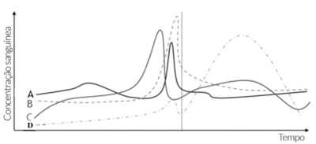
A LH, Estradiol, FSH, progesterona.
B Testosterona, FSH, LH, estradiol.
C Progesterona, LH, FSH, GnRH.
D FSH, LH, estradiol, progesterona.
E Estradiol, LH, FSH, Progesterona.
Questão 25 · Ginecologia · 4000197493As contrações uterinas são importantes para o trabalho de parto, contribuindo para a dilatação cervical, a progressão do feto pelo canal de parto e a expulsão fetal. Considerando esse assunto, assinale a alternativa correta.
A O uso da ocitocina intravenosa tem indicação para a hipoatividade uterina, levando à parada da progressão do trabalho de parto.
B A incoordenação no tríplice gradiente descendente das contrações do trabalho de parto pode levar à hipoatividade uterina.
C O manejo ativo do trabalho de parto em gestação de risco habitual por meio do uso de ocitocina, amniotomia e analgesia é recomendado após 6 cm de dilatação.
D A distocia funcional por hiperatividade, com aumento da intensidade das contrações, é corrigida por meio do uso de ocitocina intravenosa e amniotomia.
E A hipertonia uterina apresenta aumento do tônus basal da contração, com diminuição do intervalo e aumento da frequência, sendo corrigida pelo uso de ocitocina intravenosa
Questão 26 · Ginecologia · 4000197492A suplementação periconcepcional de ácido fólico éuniversalmente aceita por reduzir a ocorrência e a recorrência de defeitos abertos do tubo neural (DTN). A respeito desse assunto, assinale a alternativa correta.
A Integram o grupo de risco para a deficiência de folato mulheres com antecedente de DTN (pessoal ou familiar), em uso de anticonvulsivantes, com polimorfismo genético (MTHFR C-677T) ou com doenças inflamatórias intestinais, bem como as que tenham sido submetidas a cirurgia bariátrica.
B O excesso de ácido fólico não metabolizado pode mascarar a deficiência de acetilcolina e aumentar o risco de neuropatias.
C Indica-se suplementação com ácido fólico para evitar a ocorrência de DTN apenas para mulheres que planejam engravidar e para gestantes durante o primeiro trimestre.
D Mulheres com alto risco para DTN devem receber 400 mcg de ácido fólico ao dia.
E O fechamento completo do tubo neural ocorre por volta do 35.º dia de gravidez.
Questão 27 · Ginecologia · 4000197491Paciente de 55 anos, G2P2 (cesarianas), procura o ginecologista queixando-se de fogachos importantes há alguns meses. A intensidade chega a acordá-la durante a noite. Sem demais queixas. Como antecedentes, possui hipertrigliceridemia. Refere ter sido operada de histerectomia por mioma e mastectomia esquerda por câncer de mama há 5 anos. Considerando o cenário acima, qual das medicações é contraindicação?
A Estradiol oral
B Gabapentina
C Venlafaxina
D Acteia negra
E Clonidina
Questão 28 · Ginecologia · 4000197490Em relação à hemorragia pós-parto (HPP), uma das principais causas de mortalidade materna em todo o mundo, assinale a alternativa correta.
A A HPP primária ocorre nas primeiras 48 horas pós-parto e apresenta como causa mais comum a retenção placentária.
B A HPP secundária define-se como a hemorragia que ocorre no período de 48 horas até 12 semanas após o parto.
C Como medida preventiva, o uso de ocitocina profilática está indicado após todos os nascimentos.
D O índice de choque é bom um marcador de instabilidade hemodinâmica, mas tem aparecimento mais tardio que os dados vitais.
E O ácido tranexâmico, na dose de 500 mg intravenoso, lento, em 15 minutos, é uma opção terapêutica, devendo ser administrado nas primeiras três horas e repetido após trinta minutos se houver persistência do sangramento.
Questão 29 · Ginecologia · 4000197489Mulher de 20 anos apresenta quadro de irregularidade menstrual há três anos. Procurou o serviço de ginecologia porque se encontra sem menstruar por um período de quatro meses. No exame é evidenciada obesidade central, hirsutismo e acne. A pressão arterial foi de 135 X 90. Traz consigo exames laboratoriais: triglicerídeos 200mg/dL; HDL 35mg/dL; glicemia 126 mg/dL. De acordo com o cenário acima, assinale a alternativa que indica o diagnóstico mais provável.
A Síndrome de Savage associada à síndrome da anovulação
B Síndrome hiperandrogênica associada à síndrome metabólica
C Síndrome de Sjögren associada ao hiperandrogenismo
D Síndrome de Swyer associada à síndrome metabólica
E Síndrome de Morris associada à síndrome de Drewyfus
Questão 30 · Ginecologia · 4000197488Mulher de 30 anos procura a emergência obstétrica por apresentar sangramento genital com cólicas discretas há um dia. Refere estar gestante de 3 meses. O exame revelou altura de fundo uterino pouco maior que o esperado. Fez dosagem sérica de beta-HCG com resultado acima de 300.000, e exame ecográ co demonstra ausência de feto com material amorfo intrauterino. De acordo com o quadro acima, é CORRETO afirmar que
A a forma parcial pode apresentar cariótipo 46, XY.
B na forma completa, o edema viloso é focal.
C a sequela maligna é mais frequente na forma completa.
D o hipotireoidismo é comum na forma completa.
E cistos tecaluteínicos são frequentes na forma parcial.
Revisar: possível letra faltando em enunciado
Questão 31 · Ginecologia · 4000197487Chega ao seu ambulatório uma criança de sete anos de idade levada pela mãe com história de ter apresentado menstruação. Chama a sua atenção a presença de M2 e P2 (classificação de Tanner). Ao avaliar o cartão de crescimento, você percebe a velocidade de crescimento acima do percentil 90%. De acordo com o quadro acima, assinale a alternativa que indica o diagnóstico mais provável.
A Adrenarca precoce isolada
B Pseudopuberdade precoce
C Puberdade precoce verdadeira
D Tumor secretor de andrógeno
E Hiperplasia adrenal congênita
Questão 32 · Ginecologia · 4000197486Paciente de 60 anos, assintomática, veio para avaliar o resultado da mamogra a que realizar anualmente. O exame físico foi normal. O resultado do exame evidenciou calci cações vasculares associadas a um cisto simples em quadrante superior externo da mama esquerda. De acordo com o quadro abaixo, assinale a alternativa que indica a classificação CORRETA.
A BIRADS I
B BIRADS II
C BIRADS III
D BIRADS IV
E BIRADS 0
Questão 33 · Ginecologia · 4000197485Paciente de 40 anos, G3P3, com queixas de sangramento genital ocasional com odor desagradável que piora quando tem atividade sexual. Ao exame ginecológico, foi observado grande tumor cervical que compromete o terço superior da vagina com cerca de cinco centímetros no seu maior diâmetro. O toque retal não evidenciou comprometimento parametrial. De acordo com o quadro acima, o estadiamento momentâneo é
A Ia1
B Ib1
C IIa1
D IIa2
E IIIC1
Questão 34 · Ginecologia · 4000197484Uma paciente de 50 anos procura o ambulatório de ginecologia para avaliar resultado de exame ecográ co. G2P2 (parto vaginal). Refere alguns episódios de irregularidade menstrual. Nega demais sintomas. Exame físico sem alterações. O exame ultrassonográ co transvaginal revela cisto ovariano anecoico (4,0 cm diâmetro) com reforço acústico posterior. Considerando o quadro acima, é CORRETO afirmar que
A o cisto ovariano pode ser consequente à queda do FSH na perimenopausa.
B a irregularidade menstrual é proveniente da elevação de prostaglandinas.
C reforço acústico se deve ao som que atravessa o cisto até a parte posterior.
D o cisto ovariano na perimenopausa deve ser investigado com ressonância.
E a conduta cirúrgica é mandatária nos casos de cistos na perimenopausa.
Revisar: possível letra faltando em enunciado
Questão 35 · Ginecologia · 4000197483Paciente de 60 anos, G2P2 (vaginais), DUM há cinco anos, procura o ambulatório de ginecologia para solicitar informação sobre terapia hormonal (TH). Diz ter uma boa alimentação e praticar exercícios regularmente. Apresenta queixas de insônia, alterações do humor, secura vaginal e dispareunia. Antecedentes de TVP há sete anos, no momento não faz anticoagulação. Traz ultrassonogra a endovaginal com eco endometrial de 0,2 cm, ovários não visualizados e demais estruturas sem alterações. Mamogra a BIRADS 2. Segundo os critérios de TH para o caso acima, qual opção é a mais segura?
A Estrogênio e progesterona oral combinados
B Estrogênio local (tópico)
C Estrogênio oral isolado
D Estrogênio transdérmico isolado
E Combinado transdérmico ( E+P)
Questão 36 · Ginecologia · 4000197482Paciente de 60 anos, G1P1 (cesariana), apresentou sangramento uterino anormal pósmenopausa há dois meses. Fez ultrassonogra a que demonstrou eco endometrial de 0,9cm. Submeteu-se à biópsia dirigida com resultado de adenocarcinoma serosopapilífero moderadamente diferenciado (G2). A ressonância nuclear magnética de pelve não revelou doença miometrial. Qual a melhor proposta cirúrgica?
A Histerectomia total abdominal com salpingectomia bilateral (HTA +SB)
B HTA + salpingooforectomia bilateral (SOB)
C HTA + SOB + linfadenectomia + omentectomia
D Curetagem semiótica após hormonioterapia
E Quimioterapia e radioterapia prévia à HTA + SB
Questão 37 · Ginecologia · 4000197481Paciente refere que há uma semana apareceram pequenas pápulas dolorosas em região genital que rapidamente se romperam e formaram úlceras rasa, com bordas irregulares. Apareceram linfonodos inguinais dolorosos, aumentados e aderidos entre si. O exame físico demonstrou um abscesso com utuação na virilhas (bulbão). A microscopia da lesão revelou um bastonete curto gram negativo (cocobacilo). Qual o provável diagnóstico desta úlcera?
A Cancro mole
B Protossifiloma
C Estiomênio
D Úlcera de Rollet
E Donavonose
Questão 38 · Ginecologia · 4000197480Paciente 35 anos, G1P1, procura o serviço de ginecologia por atraso menstrual de seis meses. Nega demais queixas. Não faz contracepção. Traz consigo exames: beta-hCG negativo; testosterona normal; TSH e T4 livre normais; prolactina = 180 ng/mL. Ecogra a de pelve sem alterações. Considerando o quadro acima, assinale a alternativa CORRETA.
A São necessários sintomas visuais para solicitar ressonância nuclear magnética do encéfalo.
B O mecanismo fisiopatológico depende da elevação dos níveis séricos de dopamina.
C O que define a amenorreia é a apresentação da secreção pulsátil da GnRH hipotalâmica.
D O tratamento para a hiperprolactinemia só deve ser indicado na galactorreia.
E O caso acima também cursa com elevação da leptina e do neuropeptídeo Y.
Questão 39 · Ginecologia · 4000197479Mulher de 26 anos, G1P1, assintomática, leva ao seu ambulatório o exame de Papaniclaou a que foi submetida há cinco dias. O resultado revela cândida sp, lactobacllus e cocos. Diante do achado acima, qual a melhor conduta?
A Independente dos sintomas os microrganismos possuem importância prognóstica, devendo a paciente ser tratada.
B O tratamento deve ser estipulado, uma vez que existe associação de bactérias e fungos revelando biota polimicrobiana.
C Lactobacillus e cocos dispensam tratamento, devendo realizar medicação tópica exclusivamente para a cândida
D As pacientes assintomáticas que apresentam microrganismos no exame preventivo devem repetir com três meses sem tratamento.
E No cenário acima, deve-se seguir a rotina de rastreamento citológico habitual, estabelecendo tratamento específico nas sintomáticas.
Questão 40 · Ginecologia · 4000197478Paciente de 30 anos, G2P2 (partos vaginais), procura a emergência de ginecologia com dores de moderada intensidade em região de baixo ventre, mais localizada à direita. Refere ciclos menstruais regulares e última menstruação há cerca de 15 dias. Nega episódios anteriores. Nega febre e corrimento genital. Exame físico sem alterações relevantes. Realizou Beta HCG (negativo) e fez ultrassonogra a endovaginal que revelou, em ovário direito, ecos difusos de baixo nível, retração de coágulo com a face côncova e uido anecoico com fluxo periférico. De acordo com o achado acima, qual o provável diagnóstico?
A Endometrioma ovariano
B Cisto de corpo lúteo hemorrágico
C Folículo pré-ovulatório
D Abscesso ovariano
E Hidrossalpinge
Questão 41 · Ginecologia · 4000197477Mulher de 27 anos, G2P2 (cesarianas + LTB), procurou emergência ginecológica com dor em região anexial direita, há algumas horas. Refere início de forma abrupta e que não melhora com analgésicos. DUM há pouco mais de um mês. O exame físico revela paciente estável, apenas com dor importante ao toque em fundo de saco de Douglas. Beta HCG 5.000UI, ultrassonogra a mostra imagem sugestiva de saco gestacional íntegro medindo 2,5 cm no maior diâmetro, sem BCF. Após explicadas as possibilidades terapêuticas, a paciente decidiu pela laparotomia. Com relação ao procedimento cirúrgico, qual das situações acima define a necessidade de salpingectomia?
A Idade acima de 25 anos
B Beta HCG de 5000UI
C Presença de LTB
D Saco Gestacional > 2,0 cm
E BCF ausente
Questão 42 · Ginecologia · 4000197476Paciente de 60 anos com queixa de “bola” na vagina procura consultório ginecológico para consulta anual de rotina. Durante o exame, foi realizado o POP-Q que demonstrou o seguinte cenário: De acordo com o estadiamento do POP-Q, qual o estadiamento desta paciente?
A E 0
B E I
C E II
D E III
E E IV
Questão 43 · Ginecologia · 4000197475Mulher de 40 anos, G2P2 (LTB presente), queixando-se de dores tipo cólica na época da menstruação associada a sangramento catamenial aumentado. Informa que quadro iniciou há um ano. Usou anticoncepcionais orais que melhoraram por pouco tempo. O exame ginecológico mostra útero difusamente aumentado com superfície regular e consistência pouco amolecida. Ecogra a mostra miométrio heterogêneo, com três imagens hipoecoicas, a maior delas de 2,0 cm maior diâmetro. Considerando o quadro acima, qual o provável diagnóstico?
A Adenomiose
B Miomatose
C Polipose
D Endometriose
E Hiperplasia endometrial
Questão 44 · Ginecologia · 4000197474Mulher de 18 anos chega ao ambulatório de ginecologia, com queixa de nunca ter menstruado. Esperou porque era comum o início das menstruações das mulheres de sua família demorar a chegar. Nega demais queixas. Nega uso de medicações e passado cirúrgico. Exame físico geral sem alterações. O exame ginecológico não apresentou anormalidades. A dosagem de testosterona, prolactina e TSH estavam normais. Beta HCG negativo. A avaliação do cariótipo revelou como resultado 46XX, e a ultrassonogra a demonstrou ausência de útero. Qual o provável diagnóstico?
A Síndrome de Morris
B Síndrome de Sjögren
C Síndrome de Tunner
D Síndrome de Rokitansky
E Síndrome de Savage
Questão 45 · Ginecologia · 4000197473Mulher com 65 anos procura o ambulatório de ginecologia com queixas de crescimento mamário assimétrico, sendo a direita maior que a esquerda. O exame revela uma lesão com pele ulcerada em mama direita com sinais de dilatação venosa. Traz o resultado de biópsia que revelou comprometimento de tecido epitelial e conjuntivo, além de projeções em forma de folhas no interior das cavidades císticas. O quadro acima destaca o seguinte tipo de tumor mamário:
A Tumor Phyllodes
B Fibroadenoma simples
C Papiloma intraductal
D Hamartoma
E Lipoma
Questão 46 · Ginecologia · 4000197472Mulher de 45 anos, G2 P2 A0, com dores tipo cólica em baixo ventre e sangramento menstrual aumentado, tanto nos dias quanto no volume de sangue perdido. Durante o exame ginecológico, foi percebido útero aumentado difusamente de volume, com consistência pouco amolecida e bordas regulares. Traz exame ecográ co com volume aumentado, miométrio heterogêneo e espessura endometrial de 0,9 cm. Qual o diagnóstico mais provável?
A Miomas intramurais
B Pólipos endometriais
C Adenomiose
D Hiperplasia endometrial
E Leiomiossarcoma
Revisar: possível letra faltando em enunciado
Questão 47 · Ginecologia · 4000197471Casal procura ambulatório de planejamento familiar para iniciar método contraceptivo de Ogino-Knaus. A mulher apresentou, em seis meses, ciclos menstruais que variaram de 28 a 35 dias. Assinale a alternativa que expressa o período fértil desta paciente.
A 10º ao 20º dia
B 2º ao 15º dia
C 10º ao 24º dia
D 15º ao 25º dia
E 23º ao 30º dia
Questão 48 · Ginecologia · 4000197470Paciente, 28 anos, G0 P0, chega ao ambulatório de ginecologia com quadro de ausência de menstruação há seis meses. Apresenta-se com excesso de peso (IMC= 40), placas aveludadas e enegrecidas na região da nuca associadas a pelos grossos no queixo, buço e região do tórax. Traz consigo uma dosagem sérica de HCG negativo e o exame de ultrassonogra a não revela anormalidades genitais. De acordo com o quadro acima, assinale a alternativa CORRETA.
A O quadro reflete síndrome da anovulação crônica, pois contempla dois dos três critérios de Rotterdam.
B O quadro é compatível com androgenismo isolado, uma vez que a paciente não possui ovários policísticos na USG.
C Deve-se realizar exame ecográfico seriado para diagnosticar a síndrome da anovulação crônica.
D Para diagnosticar a síndrome do hiperandrogenismo, deve-se solicitar a dosagem de testosterona e androstenediona.
E A síndrome só é estabelecida se o índice de androgênios livres for maior que 25 e o índice de Ferriman Gallwey for menor que 15.
Questão 49 · Ginecologia · 4000197469Mulher, 30 anos, G3 P3, com queixa de dor pélvica há duas semanas associada à febre. Ao exame, demonstrou dor à palpação do hipogástrico, dor à mobilização do colo e na região anexial. Ainda apresentou corrimento purulento pelo orifício cervical externo. Traz consigo exame ecográ co que revela abscesso anexial bilateral, o maior medindo 7,0 cm em seu diâmetro. De acordo com o quadro acima, assinale a alternativa que indica a melhor classificação e conduta.
A DIPA estágio I, tratamento ambulatorial.
B DIPA estágio II, tratamento ambulatorial.
C DIPA estágio III, tratamento hospitalar.
D DIPA estágio II, tratamento hospitalar.
E DIPA estágio IV, cirurgia.
Revisar: possível letra faltando em enunciado
Questão 50 · Sangramento uterino anormal · 4000197315Mulher de 35 anos de idade refere menometrorragia com coágulos há 1 ano e que os seus ciclos nunca foram muito regulares. A última menstruação foi há 20 dias. Faz uso de camisinha como método contraceptivo. Nega doenças crônicas, uso de medicamentos ou tabagismo. Realizou citopatológico de colo uterino que foi normal, cm³; miométrio homogêneo, exceto pela presença de nódulo uterino corporal em parede anterior, de 1,5 cm (FIGO 4); endométrio trilaminar de 8 mm e ovários sem particularidades, com folículo de 17 mm em ovário esquerdo. O exame ginecológico é normal. Em relação ao sangramento uterino anormal da paciente, assinale a alternativa CORRETA.
A O tratamento indicado é miomectomia histeroscópica.
B Deve-se pesquisar causas não estruturais de sangramento.
C O sangramento anormal está intimamente relacionado ao mioma uterino.
D O tratamento indicado é a miomectomia laparoscópica.
Questão 51 · Hiperplasia Endometrial · 4000197314A(O) _________ está bem relacionada(o) à progressão para o câncer de endométrio. Assinale a alternativa que preenche corretamente a lacuna do trecho acima.
A neoplasia intraepitelial endometrial
B hiperplasia endometrial simples
C hiperplasia endometrial complexa
D pólipo endometrial
Questão 52 · Ginecologia · 4000197310Em relação à assistência obstétrica no Diabetes Gestacional (DG), analise as assertivas abaixo: I. Deve-se orientar o controle da movimentação fetal a partir de 28 semanas de gestação. II. A via de parto é de indicação obstétrica, estando indicada a cesariana na presença de peso fetal estimado superior a 4,5 kg. III. Em pacientes com bom controle glicêmico e tratamento não farmacológico, a interrupção da gestação deverá ser preferencialmente com 39-40 semanas de gestação. IV. No puerpério imediato, pode-se suspender o tratamento medicamentoso do DG. Quais estão corretas?
A Apenas I e III.
B Apenas I, II e IV.
C Apenas II, III e IV.
D I, II, III e IV.
Questão 53 · Biópsias da mama · 4000197309Mulher de 55 anos apresenta à mamogra a microcalci cações pleomór cas agrupadas em quadrante súperolateral da mama esquerda. Qual é a melhor propedêutica para o estudo histopatológico?
A Biópsia por agulha fina (PAAF) guiada por ultrassonografia.
B Biópsia por agulha grossa (core biopsy) guiada por mamografia.
C Biópsia assistida a vácuo (mamotomia) guiada por mamografia.
D Biópsia por agulha grossa (core biopsy) guiada por ultrassonografia.
Revisar: possível letra faltando em enunciado
Questão 54 · Ginecologia · 4000197308Em relação ao exame de hormônio antimülleriano e seu uso na ginecologia, analise as assertivas abaixo: I. É usado para avaliação da reserva ovariana, podendo ser realizado em qualquer dia do ciclo menstrual. II. Não deve ser realizado durante o uso de contracepção hormonal. III. O resultado do exame de hormônio antimülleriano é utilizado na tentativa de prever a resposta à estimulação ovariana com gonadotrofinas e o prognóstico do sucesso na FIV. IV. Pode ser utilizado como preditor da idade da menopausa. Quais estão corretas?
A Apenas I e II.
B Apenas II e III.
C Apenas III e IV.
D Apenas I, II e III.
Questão 55 · Câncer de mama · 4000197304Sobre câncer de mama em pacientes jovens, assinale a alternativa correta.
A A amenorreia frequentemente ocorre antes, durante e 4 anos após a quimioterapia, principalmente em pacientes com menos de 35 anos.
B É recomendado não engravidar durante o tratamento com radioterapia e quimioterapia e após 5 anos do término do tamoxifeno.
C Amamentar após o tratamento de câncer de mama conservador não é contraindicado.
D Os métodos anticoncepcionais baseados em hormônios são permitidos em pacientes com diagnóstico de tumores triplo negativo.
Questão 56 · Processos inf lamatórios mastites · 4000197303Analise as seguintes assertivas sobre as mastites lactacionais e assinale a alternativa correta. I. A mastite lactacional infecciosa é mais comum entre a 14ª e 18ª semanas após o parto. II. O diagnóstico é fundamentado no tríplice diagnóstico (clínico, radiológico e laboratorial). III. São fatores de risco para mastite lactacional: ssura dos mamilos, pega correta com padrão de sução efetivo e uso de bomba para retirar o leite.
A Todas estão corretas.
B Todas estão incorretas.
C Apenas I e II estão corretas.
D Apenas II e III estão corretas.
Questão 57 · Rastreamento do câncer de mama · Câncer de mama · 4000197302Paciente de 38 anos, gestante de 12 semanas, apresenta massa endurecida palpável em quadrante súperolateral da mama esquerda, com ausência de sinais ogísticos associados. Realizou US das mamas e o resultado foi BIRADS 1, porém a presença da massa persistia à palpação. Considerando o caso acima, assinale a alternativa correta.
A A mamografia está contraindicada devido à idade gestacional.
B Deve ser realizada biópsia percutânea com agulha grossa, com anestesia local, para diagnóstico.
C Deve ser realizada biópsia com agulha fina, para evitar uso de anestésico, para diagnóstico.
D Deve ser realizada conduta expectante, considerando a probabilidade de nódulo benigno na ecografia.
Questão 58 · Histologia · 4000197301Em relação ao linfoma anaplásico de grandes células relacionado aos implantes mamários, assinale a alternativa correta.
A Trata-se de um linfoma de prognóstico agressivo.
B A suspeita clínica ocorre com a presença de seroma logo após colocação da prótese.
C O tratamento consiste em cirurgia e, frequentemente, uso de quimioterapia sistêmica.
D Na cirurgia de explante, a cápsula deve ser ressecada.
Questão 59 · Disseminação · 4000197300Em relação ao seguimento de pacientes após tratamento de câncer de mama, assinale a alternativa correta, segundo as diretrizes oncológicas internacionais.
A A ultrassonografia transvaginal deve ser solicitada anualmente em usuárias de tamoxifeno.
B Em caso de dores ósseas ou aumento de fosfatase alcalina, considerar cintilografia óssea ou PET/CT.
C Realizar mamografia semestral em pacientes jovens de alto risco para recidiva.
D Estadiamento sistêmico com tomografias ou PET/CT anual está indicado a partir de Estádio Clínico II.
Questão 60 · Tratamento cirúrgico · 4000197299Em relação à dor pós-operatória persistente do tratamento do câncer de mama, assinale a alternativa INCORRETA.
A A realização da linfadenectomia axilar é um dos fatores de risco.
B Pacientes submetidos à radioterapia têm maior propensão.
C O controle da dor aguda no pós-operatório imediato tem correlação com diminuição da dor persistente.
D Mulheres idosas têm maior risco.
Questão 61 · Câncer de mama na gestante · 4000197298Sobre câncer de mama e gestação, é INCORRETO afirmar que:
A Recomenda-se o uso de tecnécio para realização da biópsia do linfonodo sentinela.
B O trastuzumabe (anticorpo monoclonal para doença Her2 superexpressa) pode ser usado com segurança no 2º e 3º trimestres.
C O tamoxifeno não deve ser utilizado durante a gestação.
D Os regimes padrões de quimioterapia, baseados em antracíclicos, podem ser usados com segurança no 2º e 3º trimestres.
Questão 62 · Biópsias da mama · 4000197297Paciente de 48 anos, assintomática, fez mamogra a de rastreamento cujo diagnóstico foi de BI-RADS 4 por área de 2 centímetros com microcalci cações pleomór cas retroareolares à esquerda. O exame físico e ultrassom das mamas estavam normais. Qual seria a melhor conduta?
A Seguimento semestral com mamografia por 2 anos com biópsia em caso de aumento das microcalcificações.
B Biópsia percutânea com agulha grossa assistida a vácuo das microcalcificações com colocação de clipe metálico.
C Biópsia cirúrgica com marcação prévia com tecnécio para localização da lesão.
D Realizar ressonância magnética das mamas antes de indicar biópsia.
Revisar: possível letra faltando em enunciado
Questão 63 · Fatores de risco · Fatores de proteção · 4000197296As doenças cardiovasculares e o câncer de mama apresentam fatores de risco em comum. Assinale a alternativa que NÃO apresenta fatores de risco para ambas.
A Obesidade e alcoolismo.
B Alcoolismo e hipertensão arterial.
C Antecedente familiar e idade.
D Idade e variante patogênica em genes de alto risco.
Questão 64 · Rastreamento mamográf ico · Ressonância magnética · 4000197295Analise as assertivas a seguir em relação às recomendações sobre o rastreamento de câncer de mama em mulheres de alto risco: I. Mulheres com variante patogênica nos genes BRCA 1 e/ou BRCA 2 devem realizar o rastreamento mamográ co a partir dos 30 anos de idade e rastreamento com ressonância magnética com contraste a partir dos 25 anos. II. Mulheres com risco estimado ao longo da vida ≥20%, calculado por modelos baseados na história familiar e fatores pessoais, devem iniciar o rastreamento com ressonância magnética com contraste. III. A ultrassonogra a deve ser utilizada como substituta da ressonância magnética para mulheres que não puderem realizá-la por qualquer motivo. Quais estão corretas?
A Apenas II.
B Apenas I e III.
C Apenas II e III.
D I, II e III.
Revisar: possível letra faltando em enunciado
Questão 65 · Processos inf lamatórios mastites · 4000197294Em relação à mastite lactacional, assinale a alternativa correta.
A Ocorre mais frequentemente após partos normais e em multíparas.
B Os germes mais frequentemente associados são os Staphylococcus aureus, S. epidermidis e Streptococcus.
C A Organização Mundial da Saúde recomenda a cessação da amamentação durante o tratamento de abscesso mamário para evitar contaminação do infante.
D A cefalexina nas doses de 500 mg de 12/12 horas por via oral por 14 dias é uma das drogas de primeira escolha para os processos iniciais não complicados.
Questão 66 · Biópsias da mama · 4000197293Paciente de 42 anos apresenta microcalci cações pleomór cas agrupadas de cerca de 0,5 cm de extensão, cujo resultado de biópsia cirúrgica foi de hiperplasia ductal com atipias. Qual é a conduta mais adequada para o caso?
A Seguimento com mamografia semestral.
B Radioterapia para redução de recidiva local.
C Avaliar tamoxifeno para redução de risco de câncer de mama.
D Radioterapia e tamoxifeno.
Revisar: possível letra faltando em enunciado
Questão 67 · Tratamento cirúrgico · 4000197292Analise as assertivas abaixo e assinale a alternativa correta. I. O linfedema ocorre mais em pacientes submetidas à radioterapia axilar e biópsia de linfonodo sentinela quando comparada com pacientes submetidas ao esvaziamento axilar. II. O linfedema ocorre na mesma proporção em pacientes submetidas a esvaziamento axilar quando comparadas com grupo submetido a esvaziamento axilar e radioterapia. III. Biópsia de linfonodo sentinela isolado tem associação em torno de 5% dos linfedemas.
A Todas estão corretas.
B Todas estão incorretas.
C Apenas III está correta.
D Apenas I e II estão corretas.
Questão 68 · Obstetrícia · 4000197291Qual é tipo de bacia materna onde o maior diâmetro do estreito superior é anteroposterior?
A Ginecoide.
B Antropoide.
C Androide.
D Platipeloide.
Questão 69 · Ginecologia · 4000197290Qual é o maior diâmetro do crânio fetal?
A Occipitofrontal.
B Submento-bregmático.
C Suboccipotobregmático.
D Occipitpmentoniano.
Questão 70 · Ginecologia · 4000197289O "secundamento", decedura ou delivramento é conhecido como:
A Primeiro período do parto.
B Segundo período do parto.
C Terceiro período do parto.
D Quarto período do parto.
Questão 71 · Ultrassom em obstetrícia USG · Obstetrícia · 4000197288A circunferência abdominal e a estimativa de peso fetal pela biometria fetal são medidas mais precisas para o diagnóstico de restrição de crescimento. Em que intervalo essas medidas devem ser feitas?
A 1 semana.
B 2 semana.
C 3 semana.
D 4 semana.
Questão 72 · Ginecologia · 4000197287Qual dos fatores sanguíneos está reduzido na gestação?
A Proteína S (livre).
B Fibrinogênio.
C Fator VIII.
D Fator V.
Questão 73 · Ginecologia · 4000197286Qual é a patologia em que o sangramento vaginal materno na segunda metade da gestação é de origem fetal?
A Descolamento da placenta normalmente inserida.
B Placenta prévia com obstrução total do colo.
C Ruptura do seio marginal.
D Ruptura de vasa prévia.
Questão 74 · Mastologia · 4000197285Na realização de uma gastrectomia com intuito curativo a D2, os linfonodos do grupamento 9 correspondem a
A à artéria esplênica.
B ao tronco celíaco.
C aos vasos hepáticos.
D aos vasos pancreáticos.
E aos vasos mesentéricos.
Questão 75 · Mastologia · 4000197284Na realização da manobra de Kocher, o cirurgião deverá
A seccionar o ligamento hepatocólico.
B liberar o duodeno do retroperitônio, além de 9 cm da veia cava.
C acessar o retroperitônio mobilizando o duodeno, piloro e parte da veia renal contralateral.
D fazer uma incisão oblíqua em hipocôndrio direito, 2 cm abaixo da última costela palpável.
E realizar a omentectomia parcial à direita.
Questão 76 · Mastologia · 4000197283O divertículo de Zenker caracteriza-se por
A se localizar no músculo constritor superior da laringe.
B ser um divertículo verdadeiro.
C acometer idosos acima de 80 anos.
D causar principalmente disfonia.
E ser uma das causas de óbito por pneumonia aspirativa.
Questão 77 · Mastologia · 4000197282Em relação à colite isquêmica, é correto afirmar que ela acomete principalmente
A cólon direito.
B cólon transverso.
C todo o cólon.
D cólon esquerdo.
E reto.
Questão 78 · Mastologia · 4000197281Na técnica de Nissen, para tratamento do refluxo gastroesofágico, é correto afirmar que
A a grande curvatura formara a válvula.
B a miotomia deve ser ampla, 5 cm acima e abaixo do hiato.
C a primeira sutura é do esofago com o fundo gástrico à esquerda.
D o fundo gástrico tem que ser amplamente liberado, sendo então confeccionada a válvula que devera ser o mais justa possível.
E devem ser evitadas válvulas justas.
Questão 79 · Mastologia · 4000197280O principal sinal ou sintoma dos GIST
A sensação de plenitude gástrica.
B sangramento.
C disfagia.
D perda ponderal.
E perfuração gástrica.
Questão 80 · Mastologia · 4000197279A presença de enterocolitos na tomogra a contrastada de abdome, na pesquisa de dor abdominal recorrente, está associada comumente a
A diverticulite aguda.
B fístula biliar.
C apendicite crônica.
D distúrbios no metabolismo do cálcio.
E diverticulite de Meckel.
Questão 81 · Mastologia · 4000197278A complicação mais frequente na técnica de Warren para tratamento da hipertensão portal é:
A ascite.
B óbito.
C deiscência das anastomoses.
D encefalopatia hepática.
E ressangramento.
Questão 82 · Mastologia · 4000197277Paciente masculino, 37 anos, etilista e tabagista, deu entrada no pronto socorro com história de dor súbita abdominal, lancinante, que o impossibilita de andar erguido. Realizou radiogra a do abdome, que demonstrou pequeno pneumoperitônio à direita. Foi indicada laparoscopia, que evidenciou perfuração gástrica de 8 mm. A opção terapêutica mais adequada atualmente consiste em
A rafia com epiploplastia.
B gastrectomia total.
C hemigastrectomia.
D antrectomia com vagotomia troncular.
E antrectomia com vagotomia superseletiva.
Questão 83 · Mastologia · 4000197276Paciente feminina, 30 anos, apresenta dor abdominal e sensação de inchaço no epigástrio, realizou ultrassom abdominal que evidenciou massa em corpo pancreático de 4 cm; os marcadores tumorais sorológicos são normais. Qual é o diagnóstico mais provável?
A Síndrome de Li Fraumeni.
B Tumor de Frantz.
C Cistoadenoma Pancreático.
D IPMN.
E Adenocarcinoma pancreático.
Questão 84 · Mastologia · 4000197275O marcador tumoral elevado na síndrome de Zollinger Ellison é:
A VIP.
B serotonina.
C CCK.
D p53.
E gastrina.
Questão 85 · Mastologia · 4000197274Paciente masculino, 67 anos, alcoólatra, levado ao pronto atendimento pelos familiares com queixa de distensão abdominal, após queda de barriga da cama há 2 dias, e diminuição da eliminação de urina, refere ter dor abdominal. Ao exame, observam-se sinais vitais preservados e abdome distendido com macicez difusa, FAST positivo para líquido livre. Bexiga parcialmente observada. O local mais provável de trauma no aparelho urinário neste caso é
A trígono vesical.
B cúpula vesical.
C uretral.
D ureteral.
E bexiga extraperitoneal.
Questão 86 · Mastologia · 4000197273A técnica de Witzel é usada na confecção de
A esofagostomias.
B gastrostomias.
C jejunostomias.
D anastomoses em 2 planos.
E reforço do coto apendicular.
Questão 87 · Mastologia · 4000197272A ruptura do ceco nas obstruções colônicas em alça fechada se explica principalmente pela lei de
A Laplace.
B Ness.
C Lavoisier.
D Murphy.
E Colomb.
Questão 88 · Mastologia · 4000197271Paciente feminina, 48 anos, portadora de sobrepeso, apresenta dor súbita em hipocôndrio direito, associada à icterícia, colúria, febre e calafrios. No exame físico se observam equimoses nos ancos e no umbigo. O diagnóstico mais provável é
A hepatite fulminante.
B colecistite enfisematosa.
C abdome agudo vascular.
D úlcera péptica perfurada.
E pancreatite necro hemorrágica.
Questão 89 · Mastologia · 4000197270A arcada de Rio Branco é formada pelos vasos
A tronco celíaco e mesentérico superior.
B mesentérico superior e mesentérico inferior.
C mesentérico inferior e retais superiores.
D pancreáticos superiores e inferiores.
E gástricos curtos com a grande curvatura.
Questão 90 · Mastologia · 4000197269A cissura de Ganz é um marco anatômico importante na realização cirúrgica laparoscópica de
A gastrectomias.
B colectomias.
C pancreatectomias.
D colecistectomias.
E apendicectomias.
Questão 91 · Mastologia · 4000197268Assinale a alternativa que associa corretamente o tipo de hérnia de hiato com a posição anatômica da cárdia.
A Tipo I – hérnia de hiato por deslocamento da cárdia inferiormente ao hiato.
B Tipo II – rolamento do fundo pelo hiato com a cárdia mantida no local.
C Tipo III – hérnia simples da cárdia.
D Tipo IV – hérnia do piloro pelo hiato.
E Tipo V – mista.
Questão 92 · Mastologia · 4000197267Em relação às úlceras gástricas, podemos a rmar que as de Cameron são causas frequentes de sangramento digestivo na vigência de
A uso de AINES.
B grandes queimados.
C trauma abdominal contuso.
D hérnias gástricas encarceradas.
E presença de citomegalovírus.
Questão 93 · Mastologia · 4000197266A síndrome do poço, ou sump syndrome, se caracteriza por
A dor abdominal e febre recorrentes após derivações biliodigestivas.
B sangramento digestivo.
C vômitos incoercíveis.
D pancreatite recorrente.
E icterícia obstrutiva.
Questão 94 · Mastologia · 4000197265Paciente alcoólatra refere dor torácica e vômitos copiosos após ingesta de grande quantidade de aguardente. Vem ao pronto socorro após ter notado crepitos em tórax e pescoço. Esse quadro clínico é compatível com
A a tríade de Mackler.
B a síndrome de Bouveret.
C úlcera péptica perfurada.
D fascitis necrotizante cervicotorácica.
E intoxicação alcoólica.
Questão 95 · Mastologia · 4000197264Na técnica de Ramirez, a secção da aponeurose do oblíquo externo se faz
A 1 a 2 cm medialmente à linha semilunar.
B na linha semilunar.
C 1 a 2 cm acima do ligamento inguinal.
D 1 a 2 cm lateralmente à linha semilunar.
E no ligamento inguinal.
Questão 96 · Mastologia · 4000197263A presença de refluxo gastroesofágico predispõe ao aparecimento do câncer esofágico do tipo
A escamoso.
B adenoescamoso.
C adenocarcinoma.
D carcinoide.
E indiferenciado.
Questão 97 · Mastologia · 4000197262Paciente masculino, 38 anos, submetido à cirurgia de Graham, apresenta no pós operatório imediato quadro de vômitos incoercíveis, pouco responsivos à terapia medicamentosa. Qual é, respectivamente, o distúrbio metabólico esperado e qual a solução ideal para reposição das perdas apresentadas?
A Acidose metabólica e ringer lactato.
B Acidose metabólica e soro fisiológico 0,9%.
C Alcalose metabólica e ringer lactato.
D Alcalose metabólica e soro fisiológico 0,9%.
E Acidose compensada e soro glicosado com eletrólitos.
Questão 98 · Mastologia · 4000197261Uma paciente de 40 anos refere dor abdominal de início súbito em fossa ilíaca direita associada a vômitos e sensação de desmaio. É levada ao pronto socorro, onde foram obtidos os seguintes sinais vitais: PA = 90 x 60 mmHg, FC = 112, SaO₂ = 98%. Apresentava palidez cutânea e pulso liforme. O diagnóstico mais provável nessa situação é
A apendicite.
B apendagite.
C diverticulite aguda.
D torção de ovário.
E gestação ectópica rota.
Questão 99 · Farmacológicos · 4000197260No tratamento de uma mulher com quadro de bexiga hiperativa tem-se utilizado medicamentos com atividade anticolinérgica intrínsica, embora tais drogas manifestem efeitos adversos que acabam se tornando impeditivos de seu uso. Das drogas listadas a seguir qual delas não apresenta esse efeito?
A Darifenacina.
B Solifenacina.
C Mirabegrona.
D Tolerodina.
E Oxibutinina.
Questão 100 · Mastologia · 4000197259Em relação às manifestações puberais que possam se constituir em anormalidades, é correto afirmar:
A na infância, é muito frequente leve virilização decorrente de ações androgênicas.
B a inexistência de caracteres sexuais secundários aos 16 anos caracteriza a puberdade tardia.
C dos 10 aos 12 anos, o grande contingente das meninas evoluem nessa ordem, inicialmente com a pubarca, depois telarca e depois a menarca.
D considera-se puberdade precoce o desenvolvimento de mamas ou pelos pubianos em idade inferior aos 8 anos de idade.
E quando as alterações puberais são decorrentes do uso inadvertido ou não de hormônios exógenos, não são incluídos no conceito de puberdade precoce.
Questão 101 · Terapia hormonal · 4000197258Paciente de 54 anos está em amenorreia há 3 anos e faz tratamento para hipertensão arterial sistêmica. Procurou o ambulatório de climatério com sintomas vasomotores intensos, que estão di cultando muito o seu sono. Frente a essas queixas, é correto:
A orientar que, em função de seu quadro clínico de hipertensão, deve ser tratada sem o uso de hormônios.
B usar hormônio, porém, não por via oral.
C prescrever hormônio, que é o que melhora substancialmente esses sintomas referidos, e a via de administração é opção da paciente, se oral ou tópica.
D em se optando por administrar hormônios, sendo ela hipertensa, o melhor é a monoterapia com estrogênio, não devendo prescrever progestágeno.
E que a melhor opção, para o quadro descrito, seja a administração de creme vaginal de estrogênio, que não interferirá em relação à hipertensão.
Questão 102 · Síndrome dos ovários policísticos · 4000197257A síndrome dos ovários policísticos (SOP) é a endocrinopatia mais comum de mulheres no período reprodutivo. Dentre vários aspectos a ela relacionados, assinale a alternativa correta.
A Pode se tratar de resultado de uma adaptação epigenética associada ao baixo peso ao nascer (fetos com restrição de crescimento), ou RN macrossômicas.
B A predominância de FSH sobre o LH pode alterar o crescimento folicular e induzir o surgimento de alterações histomorfológicas características da síndrome, com maior produção androgênica.
C A insulina desempenha importante papel na fisiopatologia da SOP, por sua ação antagônica ao LH nas células da teca interna e do estroma ovariano, com subsequente aumento da produção de androgênios.
D Na SOP, a mulher costuma apresentar alopecia universal com sinais de virilização.
E São presentes também manifestações da anovulação com ciclos que, no início do quadro, são encurtados na maior parte das vezes e, com o decorrer dos anos, passam a assumir padrão alongado, até chegar à amenorreia.
Questão 103 · Mastologia · 4000197256A amenorreia, excluídas as causas siológicas tais como gestação e lactação, é um sintoma indicativo de alguma disfunção. Em relação a esse quadro, é correto que
A será primária se não ocorrer a menstruação até os 12 anos de idade e sendo observada completa ausência de caracteres sexuais secundários.
B a ausência de menstruação após a existência de ciclos menstruais regulares é denominada amenorreia secundária e já é caracterizada no segundo mês da falha.
C a presença das características sexuais secundárias antes dos 16 anos e ausência de menstruação, porém com dor pélvica cíclica, caracteriza amenorreia primaria sugestiva de alteração central.
D a presença de estresse, alteração de peso e de hábitos alimentares podem associar-se à amenorreia de causa ovariana por depleção hormonal que recuperam ao restabelecerem o peso ou a dieta correta.
E o hipotireoidismo primário e o diabetes tipo II podem ocasionar hiperprolactinemia e hiperinsulinemia, respectivamente, causando amenorreia de causa hipotalâmica.
Questão 104 · Fibroadenoma · 4000197255Mulher de 30 anos, ao fazer seu autoexame, notou um caroço na mama esquerda há 15 dias. Compareceu no setor de ginecologia do hospital, onde a examinaram e, pela inspeção, não visualizaram nada. Na palpação, identi caram uma massa de característica broelástica, móvel, com 3,5 cm, localizada no quadrante superomedial da mama esquerda. Frente a esse achado, assinale a alternativa que apresenta, corretamente, a indicação de exames e o provável diagnóstico.
A Ressonância magnética, punção aspirativa com agulha fina e papiloma.
B Mamografia, punção aspirativa com agulha fina e cisto.
C Ultrassonografia, biópsia por fragmento (core-biopsy) e fibroadenoma.
D Ultrassonografia, PAAF e fibroadenoma.
E Mamografia, biópsia por fragmento (core-biopsy) e fibroadenoma.
Questão 105 · Tratamento · Tratamento · 4000197254Mulher de 55 anos vem apresentando perda urinária aos esforços há cerca de 4 anos e que tem se intensi cado. Ao exame, a parede vaginal anterior ultrapassa 1 cm o intróito vaginal, e o colo do útero, 4 cm além do anel himenal. Solicitou-se estudo urodinâmico, que mostrou perda urinária com pressão vesical de 38 cm de H₂O. Frente ao quadro descrito, assinale a alternativa que apresenta a conduta correta.
A Cirurgia de Burch com fixação da cúpula vaginal no sacro.
B Histerectomia vaginal e colporrafia anterior do tipo Kelly-Kennedy.
C Histerectomia vaginal associada à cirurgia de sling.
D Cirurgia de fixação vaginal no ligamento sacroespinhal.
E Manchester e cirurgia de alça sintética.
Revisar: possível letra faltando em enunciado
Questão 106 · Mastologia · 4000197253Mulher de 37 anos, nuligesta, fumante de 1 maço por dia, sem doenças e referindo antecedentes de vulvovaginites compareceu ao setor de planejamento familiar para indicação de método contraceptivo. Frente aos critérios de elegibilidade de contracepção da OMS, assinale a alternativa, que apresenta, correta e respectivamente o método a ser proposto e a categoria.
A Anticoncepcional hormonal somente com progestagênio, sendo categoria 1.
B DIU, sendo categoria 1.
C Anticoncepcional hormonal combinado injetável, sendo categoria 2.
D Anticoncepcional hormonal oral combinado, sendo categoria 2.
E Anel vaginal, sendo categoria 2.
Questão 107 · Mastologia · 4000197252A coleta da colpocitologia oncológica ainda tem se mostrado um exame importante no rastreio do câncer de colo. Em relação à sua coleta, é correto afirmar que
A pode ser dispensada à partir dos 70 anos.
B deve ser anual até 69 anos.
C pode ser dispensada após 3 citologias negativas aos 70 anos, desde que não tenham história de câncer.
D deve iniciar sua coleta aos 20 anos de idade.
E mulheres já histerectomizadas estão dispensadas da coleta.
Questão 108 · Mastologia · 4000197251A investigação de infertilidade deve seguir alguns critérios. Em relação a essa situação, é correto
A investigar após 1 ano de casados os que não engravidaram.
B investigar, após 1 ano, caso mantenham frequência de relações de 3 vezes por semana sem contracepção e não engravidaram até os 40 anos.
C que a taxa de concepção mensal em casal com número de relações sexuais em torno de seis por mês, sem uso de método anticoncepcional, seja de 10% em mulheres de até 35 anos.
D investigar após 6 meses em pacientes com amenorreia primária ou secundária de longa duração.
E investigar, após 1 ano, caso mantenham frequência de relações de 3 vezes por semana sem contracepção e não engravidaram até os 35 anos.
Questão 109 · Mastologia · 4000197250Mulher com 37 anos, II gesta, II para, não ia ao ginecologista há 8 anos, quando começou a apresentar sinusiorragia. Baseando-se nesse histórico, qual é a hipótese diagnóstica e quais exames devem ser solicitados?
A SUA; dosagens hormonais.
B Câncer de colo do útero; cistoscopia e retossigmoidoscopia.
C Câncer de endométrio; colpóscopia e histeroscopia.
D Câncer de colo do útero; citologia oncológica e colposcopia com biópsia.
E Câncer de endométrio; ultrassonografia transvaginal, abdominal e RX de tórax.
Questão 110 · Mastologia · 4000197249Paciente de 34 anos, nunca engravidou, realizou seu exames de prevenção e teve um resultado de citologia descrito como lesão intra-epitelial escamosa de alto grau. Frente a esse resultado, a mulher cou muito nervosa. Qual é a conduta corretamente indicada nessa condição?
A Traquelectomia com linfadenectomia Traquelectomia.
B Histerectomia sem linfadenectomia.
C Repetir a citologia com biópsia em 6 meses.
D Colposcopia.
E Conização do colo do útero.
Questão 111 · Pólipos uterinos · 4000197248O pólipo uterino é tido como uma projeção digitiforme de tecido glandular, representando hipertro a focal desse tecido, com pedículo vascular. Em relação a essa entidade, é correto afirmar que
A é normalmente benigno, com baixa taxa de malignização e são divididos em cervicais e endometriais, com a mesma etiopatogenia, porém com sintomatologias específicas.
B nos endometriais, afeta aproximadamente 25% das mulheres e é mais comum na pós-menopausa; em geral, é assintomático, sendo diagnosticado em exames de rotina. Porém, pode estar relacionado com sangramento uterino anormal (SUA).
C embora seja localizado intraútero, não constitui fator de infertilidade.
D a transformação maligna do pólipo endometrial pode ser determinada pelo estrogênio isolado, ao passo que o tamoxifen é uma droga que protege o pólipo de malignizar pelo seu efeito antiestrogênico.
E o tamanho do pólipo é o melhor marcador, de forma que se indica extirpação em mulheres assintomáticas quando acima de 25 mm e somente observação por um ano nos casos de tamanho inferior.
Questão 112 · Câncer de ovário · 4000197247O câncer de ovário é a quinta maior causa de morte relacionada ao câncer em mulheres, e a primeira entre os tipos ginecológicos nos EUA, de forma que o ginecologista deve conhecer essa entidade. Em face do exposto, assinale a alternativa correta.
A Os tumores epiteliais são do tipo menos comum, correspondem a cerca de 10% dos casos, e os tipos mais comuns incluem carcinossarcomas, carcinomas de células claras, carcinomas mucinosos, carcinomas epiteliais endometrioides ou serosos.
B Em relação aos tumores do ovário, as mulheres na pré-menopausa têm uma grande proporção de lesões benignas, com uma menor proporção de lesões malignas, de 5% a 10%. Por sua vez, nas meninas pré-púberes, as lesões malignas chegam a representar, aproximadamente, 25% dos casos.
C Os principais fatores de risco relacionados à neoplasia de ovário são a história familiar de neoplasia de colo ou de ovário e a neoplasia de cólon hereditária não polipoide (síndrome de Lynch). Com relação à presença de mutações dos genes BRCA1 e/ou BRCA2, não tem sido observado maior risco em relação ao câncer de ovário.
D O exame pélvico bimanual ou a ultrassonografia transvaginal tem acurácia significativa em mulheres assintomáticas para tumores anexiais benignos ou malignos, sendo, portanto, recomendada como rotina para rastreamento de neoplasia do ovário.
E Tumores anexiais sintomáticos deverão ser conduzidos cirurgicamente em qualquer fase da vida da mulher, exceto durante a gestação.
Questão 113 · Mastologia · 4000197246Em relação ao quadro, diagnóstico e tratamento da hiperprolactinemia, assinale a alternativa é correta.
A A gestação é a causa fisiológica mais comum. O uso de medicamentos é a causa não fisiológica mais frequente, sendo antipsicóticos e antidepressivos os que mais frequentemente causam hiperprolactinemia.
B Medicamentos procinéticos, tais como domperidona e metoclopramida, podem causar hiperprolactinemia, sendo os antipsicóticos e os antidepressivos aqueles que mais frequentemente causam hiperpro- lactinemia, mas sempre em um contingente de 5- 8%, somente.
C Os tumores produtores de PRL (prolactinomas) são responsáveis por cerca de 20% a 30% dos casos de hiperprolactinemia patológica; de acordo com o tamanho, são classificados em microprolactinomas (tumores menores que 30 mm em seu maior diâmetro) e macroprolactinomas (maiores que ou iguais a 30 mm).
D Doenças sistêmicas, tais como cirrose hepática e insuficiência renal, podem cursar com elevação da PRL em pouquíssimos casos, mas o hipotireoidismo e as doenças autoimunes também estão associados à hiperprolactinemia, embora não se obtenha a normalização da PRL após o início do tratamento com levotiroxina.
E Existem casos de hiperprolactinemia rotuladas como idiopáticos, tratando-se, possivelmente, de pequenos adenomas produtores de PRL, não detectados pelo exame de imagem. Na maioria dos casos de hiperprolactinemia idiopática, os níveis de PRL não ultrapassam 1000 mg.
Questão 114 · Ultrassom em obstetrícia USG · Obstetrícia · 4000197245Se uma gestante com 35 semanas realiza uma ultrassonogra a, e o laudo consta que a placenta é grau 1, qual é o significado dessa informação?
A O feto ainda não está maduro.
B É necessário que a placenta atinja o grau 3 para se intervir fora da emergência.
C A placenta apresenta calcificações na placa basal, mas em pouca quantidade.
D O feto está maduro, pois a placenta zero é feto imaturo.
E É critério para gestações de risco habitual, não sendo referência para alto risco, só tendo valor para placentas grau 3 em idade gestacional precoce.
Questão 115 · Mastologia · 4000197244Na assistência ao trabalho de parto (TP), alguns parâmetros do trajeto, isso é, da bacia, são importantes para o examinador ter noção da possibilidade do parto transpélvico ou para ter conhecimento de como está se processando o TP. Em face do exposto, assinale a alternativa correta.
A O prognóstico do parto de um feto que se encontra em OP no plano -1 de De Lee é bom, pois já está rodado e encontra-se no diâmetro antero-posterior.
B O primeiro oblíquo da bacia corresponde ao plano traçado da eminência ileo pectina esquerda à sinos- tose sacro ilíaca direita.
C Se, ao toque vaginal, na avaliação da bacia, se atingir o promontório, isso indica que o estreito superior da bacia apresenta diâmetro sacropúbico pequeno.
D No exame da bacia, a pelvimetria interna se resume à medida do diâmetro bituberoso do estreito inferior.
E A identificação das espinhas isquiáticas são importantes, pois, além de avaliarem o estreito médio, são parâmetros para avaliar a insinuação fetal, caracterizada quando o biparietal estiver nesse plano da bacia.
Questão 116 · Estática f etal · Def inição dos principais conceitos · Desprendimento cef álico · 4000197243A correta identi cação das relações útero-fetais durante o trabalho de parto é primordial para acompanhar o trabalho de parto e o parto; assim, pode-se afirmar corretamente que
A nos fetos em atitude de deflexão, o ponto de referência fetal encontra-se do mesmo lado do dorso.
B a rotação externa ou manobra de restituição é necessária para ajustar o biparietal no estreito superior.
C a linha de orientação de uma apresentação cefálica defletida de 1º grau é a linha facial.
D para desprender o polo cefálico após o hipomóclio, em um parto com a apresentação cefálica fletida, ele precisa fletir.
E nos fetos em apresentação cefálica fletida, o foco, isto é, o local de maior audibilidade dos batimentos cardíacos fetais encontra-se no mesmo lado que o ponto de referência fetal.
Questão 117 · Mastologia · 4000197242O estudo da contratilidade uterina pela Escola Uruguaia permitiu que, na prática tenhamos o seguinte conhecimento:
A o tônus normal de uma gestante no trabalho de parto é de 5 mmHg.
B a percepção do início da contração pelo examinador que está palpando é em uma intensidade de 30 mm de Hg.
C a sensação dolorosa referida pela parturiente inicia-se em uma intensidade de 25 mm Hg, isto é, acima da percepção tátil da contração pelo examinador que é em 20 mmHg.
D a duração real da contração é de 50 segundos.
E o registro pela cardiotocografia externa torna-se mais fidedigno que a avaliação clínica, pois nos mostra a intensidade das contrações.
Questão 118 · Mastologia · 4000197241A gestação apresenta algumas alterações de natureza hormonal e metabólica que devem ser conhecidas. Assim sendo, assinale a alternativa correta.
A No desenvolvimento da gestação caracterizam-se dois períodos bem delimitados, sendo os dois primeiros trimestres caracterizados pela fase catabólica e o terceiro trimestre pela fase anabólica.
B No início da gestação, pode-se observar, pela ação do hCG, uma interação com o TSH de forma a elevá-lo, confundindo, assim, o examinador com um quadro de hipotireoidismo funcional.
C Em função do aumento da resistência insulínica determinado pelos hormônios da gestação, a gravidez é um estado diabetogênico, assim, a glicemia tem valores discretamente elevados frente ao estado não gravídico.
D A expectativa durante a gestação de uma mulher portadora de hipertireoidismo por doença de Graves é de que melhore com o avançar da gravidez.
E No seguimento de uma gestante com hipotireoidismo em terapia de reposição, é de se esperar que se tenha de diminuir a dosagem de tiroxina que se administra diariamente.
Questão 119 · Classif icação FIGO · 4000197240A FIGO definiu 9 categorias possíveis para justi car um sangramento uterino anormal (SUA) e criou um acrônimo PALM-COEIN. Em relação a essas etiologias, é correto afirmar:
A a adenomiose pode ser identificada como possível causa de sangramento em exames complementares, mas mesmo presente pode não ser a causa da SUA.
B os miomas subserosos são os mais envolvidos com o SUA, além de também apresentarem mais relação com infertilidade e perdas gestacionais.
C as disfunções ovulatórias com sangramentos anovulatórios são mais frequentes no menacme, embora mais raros nos seus extremos.
D pequenas alterações dos mecanismos de coagulação podem se expressar clinicamente por SUA. Sendo assim, o mais frequente é que o SUA seja a primeira manifestação dessa alteração.
E Causas iatrogênicas são raras nesse quadro e o uso de sistemas intrauterinos medicados e anticoncepcionais hormonais não são considerados como fatores etiológicos do SUA.
Questão 120 · Mastologia · 4000197239A anticoncepção reversível de longa duração (LARC) tem tido um incremento nos últimos anos. Em relação a esses métodos, é correto afirmar que
A são métodos altamente eficazes, com ação contraceptiva de um ano, dois, três ou mais de três anos. Os LARCs são superiores em termos de eficácia, propiciando taxas de gravidez de menos de 1% ao ano em uso perfeito e em uso típico.
B os LARCs independem da ação do médico ou da usuária para manter sua eficácia e apresentam altas taxas de satisfação e continuidade de uso entre todos os contraceptivos reversíveis.
C os implantes são dispositivos plásticos colocados na subderme, com liberação contínua de estrogênio e progestagenios.
D após inserção subdérmica do implante na face interna do braço não dominante, em torno de quarenta e oito horas, os níveis sanguíneos hormonais já alcançam concentrações suficientes para inibir a ovulação.
E pelos critérios de elegibilidade dos métodos contraceptivos, as adolescentes são do grupo 3 para implantes, devendo-se optar por outro método.
Questão 121 · Mastologia · 4000197238As vulvovaginites são muitas vezes o fator desencadeante de afecções mais graves na mulher. Em relação a esse quadro, é correto afirmar que
A o diagnóstico deve ser sempre baseado na anamnese, dados do exame clínico e, frente à confirmação do(s) agentes(s) etiológicos(s) por meio de microscopia, deixou de ter importância a antiga medida do pH vaginal.
B a identificação da vaginose citolítica se faz pela confirmação da ausência do Lactobacillus.
C na vaginose bacteriana, existe alteração na imunidade local, tornando o meio vaginal mais suscetível a outros agentes infecciosos, favorecendo o HPV e o HIV.
D nas vaginites bacterianas são importantes os critérios de Amsel, sendo que os de Nugent não são mais utilizados.
E o sintoma mais típico da candidiase é o prurido, o que facilita o diagnóstico, pois as demais afecções apresentam sintomas diversos e não o prurido.
Questão 122 · Dismenorreia · 4000197237A dismenorreia é uma dor pélvica ou abdominal inferior, cíclica ou recorrente, associada à menstruação, de alta prevalência estimada nas mulheres em idade reprodutiva e nas adolescentes, impactando na qualidade de vida, e é também uma causa importante de absenteísmo escolar ou laboral. Em face do exposto, assinale a alternativa correta.
A São citados como fatores associados à dismenorreia: índice de massa corporal (IMC) alto, menarca tardia (antes dos 12 anos), encurtamento do intervalo e da duração das menstruações, fluxo menstrual escasso, síndrome pré-menstrual, antecedentes de abuso sexual e tabagismo.
B A dismenorreia primária representa a minoria dos casos e é definida como cólicas menstruais abdominais inferiores, na ausência de qualquer outra doença ou anormalidade pélvica. Seu início ocorre de 12 a 24 meses após a menarca e associa-se aos ciclos ovulatórios.
C A dismenorreia primária envolve a ação de prostaglandinas (PGs) e leucotrienos (LTs) na musculatura uterina. As prostaglandinas PGF2-alfa e PGE2 são responsáveis por mediar a dor e outros sintomas associados à dismenorreia.
D A dismenorreia secundária refere-se à menstruação dolorosa associada a anormalidades ou doenças pélvicas. Em geral, ocorre 6 meses após o estabelecimento do ciclo menstrual e é decorrente de causas intrauterinas ou extrauterinas, mas não contempla etiológica extra ginecológica.
E Anti-inflamatórios não hormonais não devem ser considerados como medicamentos de primeira escolha na dismenorreia primária, sendo os contraceptivos, a melhor escolha.
Questão 123 · Fatores de risco · Fatores de proteção · 4000197236Em relação à neoplasia de mamas, é correto afirmar que
A quanto maior o número de ciclos ovulatórios maior é o risco de a mulher desenvolver câncer de mama.
B o alcoolismo tem uma participação importante diretamente sobre o parênquima mamário, aumentando o risco de câncer de mama.
C as mulheres com mutação dos genes BRCA1 e 2, se forem longevas, apresentarão câncer de mama em 25% das vezes.
D a ultrassonografia deve ser realizada de rotina para rastrear mulheres acima dos 25 anos.
E a ressonância nuclear é o método de rastreamento com maior especificidade.
Questão 124 · Ginecologia · 4000197202Gestante, 32 anos, G2P0A1, chega ao pronto-atendimento com queixa de sangramento vaginal discreto. IG estimada pela DUM: 10 semanas. Altura uterina 18 cm acima da sín se pubiana. Realizou beta-hCG: 132.000 mUI/mL, TSH e T4 L dentro dos limites da normalidade e ao US transvaginal apresenta ecoendometrial hiperecoico, preenchido por imagens hipo-anecogênicas, irregulares, centrais e ausência de embrião. Útero aumentado para a idade gestacional e os ovários apresentam múltiplos cistos simples, de 4 a 8 cm, anecogênicos. Ao exame físico: PA: 120 x 80 mmHg; FC: 80 bpm; FR: 16 rpm. Exame especular: pequeno sangramento uindo pelo orifício externo do colo uterino. Toque vaginal: colo impérvio. Diante desse caso clínico, qual a conduta mais adequada?
A Repetir B-HCG e Ultrassom transvaginal com intervalo de uma semana.
B Indicar esvaziamento da cavidade uterina após resultado do Rx de Tórax.
C Solicitar Ressonância Magnética Pélvica antes do esvaziamento do útero.
D Solicitar RX de Tórax e Tomografia Pélvica antes do esvaziamento uterino.
Questão 125 · Inf ecção puerperal endometrite puerperal · 4000197201Mulher G2P2, no oitavo dia de puerpério por cesariana. Há 4 dias, apresentou lóquios fétidos e picos febris de 38 a 39º C. Ferida cirúrgica limpa e mamas ácidas, sem sinais ogísticos. Iniciado esquema de antibiótico para endometrite com Clindamicina e Gentamicina. Após 48 horas do início do tratamento, paciente evoluiu com manutenção dos picos febris e apresentou FC de 100 bpm, sendo acrescentada Ampicilina endovenosa. Hoje, ainda persistem picos febris. Realizado ultrassom abdominal que não evidenciou anormalidades. Diante da evolução do quadro descrito, qual a melhor conduta?
A Trocar o esquema antibiótico.
B Realizar laparotomia exploradora.
C Solicitar cultura de lavado endometrial.
D Acrescentar heparina plena ao esquema de antibiótico.
Questão 126 · Toxoplasmose na gestação · Obstetrícia · 4000197200Gestante G2P1A0, 16 semanas de gestação, comparece ao pré-natal com sorologia positiva para toxoplasmose (IgG e IgM). Os exames foram realizados na 14ª semana de gestação. Diante desse resultado, qual a conduta mais adequada a ser tomada?
A Manter o seguimento pré-natal de rotina.
B Solicitar o teste de avidez de IgG para toxoplasmose.
C Iniciar espiramicina (3g/dia) e realizar amniocentese após 18 semanas.
D Iniciar pirimetamina, sulfadiazina e ácido folínico e manter até 36 semanas de gestação.
Questão 127 · Ginecologia · 4000197199Secundigesta de 27 anos, idade gestacional de 33 semanas, último parto vaginal há 5 anos, prematuro, deu entrada na emergência de uma maternidade terciária com contrações uterinas. Ao exame, apresentou 4 cm de dilatação, com membranas íntegras e batimentos cardíacos fetais de 140 por minuto. Qual a conduta mais adequada diante desse quadro clínico?
A Salbutamol e penicilina.
B Sulfato de magnésio e corticoide.
C Nifedipino, penicilina e corticoide.
D Nifedipino, penicilina e progesterona.
Questão 128 · Ginecologia · 4000197198Paciente de 23 anos, com 4 semanas de atraso menstrual, comparece à emergência de maternidade terciária referindo leve sangramento transvaginal. A mesma traz beta HCG realizado no mesmo dia mostrando valor de 2.000mUI/mL e ultrassom transvaginal com massa anexial de 2,5 cm sem saco gestacional intrauterino. Qual a conduta mais adequada?
A Repetir beta HCG após 48 horas.
B Iniciar tratamento com metotrexato IM.
C Realizar laparotomia com salpingectomia.
D Realizar esvaziamento do útero com AMIU.
Questão 129 · Distúrbios hipertensivos na gestação DHEG · Obstetrícia · 4000197197Paciente E.F.S.A., 18 anos, secundigesta, atualmente no curso do primeiro trimestre de gestação, apresentando antecedente obstétrico de pré-eclâmpsia na gestação anterior. Diante do histórico da paciente, qual a conduta mais adequada?
A Acompanhar os níveis pressóricos semanalmente.
B Aconselhar repouso no leito e restrição de sódio na dieta.
C Fazer suplementação com cálcio durante toda a gestação.
D Prescrever ácido acetilsalicílico em baixa dose, 100-150 mg/dia à noite até o parto.
Questão 130 · Obstetrícia · 4000197196Mulher de 40 anos, G2 P1CA0, hipertensa crônica, com idade gestacional de 28 semanas, em acompanhamento semanal com Doppler desde 25 semanas por feto se encontrar entre o percentil 3 e 10 de peso estimado pela tabela de Hadlock. Doppler das artérias uterinas apresenta aumento da resistência, porém da artéria umbilical e cerebral média até então, vêm se apresentando dentro dos limites da normalidade. Hoje, ao realizar novo exame, apresentou um aumento da resistência da artéria umbilical e o ducto venoso pode ser avaliado na imagem do Doppler em anexo. Diante do caso, qual a melhor conduta?
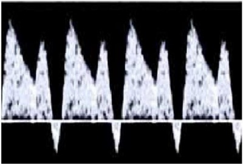
A Realizar cesariana de imediato.
B Repetir o Doppler a cada 48 horas.
C Realizar cesárea 4 h depois de fazer Sulfato de Magnésio endovenoso.
D Prescrever corticoide por 48h, fazer novo Doppler para definir quando e como resolver a gestação.
Questão 131 · Ginecologia · 4000197195Mulher de 30 anos, G5 P3 A1, ainda não conseguiu iniciar pré-natal. Atraso menstrual de 18 semanas. Realiza sua primeira ultrassonogra a, onde se observa feto de 13 semanas, com batimentos cardíacos ausentes. Nega sangramento vaginal e febre. Exame físico: PA 120 x 80mmHg, T: 37 ºC, FC: 72 bpm. Toque vaginal com colo fechado, longo e exame especular sem sangramentos. Hemograma com Ht 35%, Hb 12,0g% e leucócitos 9000/mm³. Qual a melhor conduta para o caso?
A Conduta expectante.
B Aspiração Manual Intrauterina (AMIU).
C Curetagem uterina após dilatação cercical com misoprostol.
D Ocitocina intravenosa seguida de curetagem uterina após eliminação do feto.
Questão 132 · Ginecologia · 4000197194Adolescente primigesta, 15 anos, comparece em emergência obstétrica com US evidenciando gestação de 14 semanas. Relata que a gestação ocorreu após violência sexual e deseja interromper a gestação. Paciente encontra-se sem queixas obstétricas. Sobre o aborto previsto por Lei, é CORRETO afirmar que:
A Por se tratar de menor de 16 anos, os pais devem acompanhar a paciente e assinar a autorização para interrupção da gestação.
B O médico plantonista não pode se recusar a iniciar o processo de interrupção da gestação alegando questões religiosas, por se tratar de um direito da paciente.
C É obrigatória a apresentação pela paciente do boletim de ocorrência ou laudo do exame pericial, emitido pelo IML, para prosseguir com o processo de interrupção da gestação.
D Apenas hospitais terciários estão autorizados a realizar a interrupção legal da gestação por se tratar de procedimento de alta complexidade e exigir equipe multidisciplinar.
Questão 133 · Ginecologia · 4000197193Primigesta em trabalho de parto, avaliada com intervalo de 3 horas, sendo identi cada boa dinâmica uterina e persistência da dilatação em 7 cm, membranas íntegras e apresentação em plano I de Hodge. Plantonista indica realização de cardiotocografia (ver imagem). Diante da evolução do trabalho de parto e do resultado da cardiotocogra a, qual a melhor conduta a ser seguida?
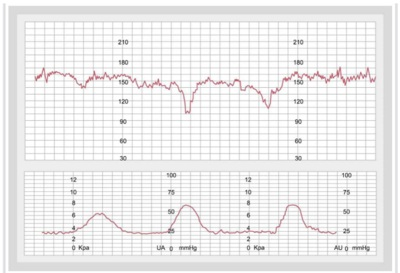
A Indicação imediata de cesariana.
B Seguir acompanhamento normal do trabalho de parto.
C Romper membranas ovulares e seguir acompanhamento normal do trabalho de parto.
D Romper membranas ovulares, solicitar nova cardiotocografia e definir conduta conforme resultado.
Questão 134 · Ginecologia · 4000197192Mulher, solteira, nuligesta, 25 anos, comparece à consulta ginecológica com queixa de corrimento amarelado, uido, com odor fétido, com piora após a atividade sexual. Fez uso de ducha vaginal e corticoide tópico sem grande melhora. Não faz uso de preservativo e teve dois parceiros, no último mês. O exame especular está demonstrado a seguir. Coletado material para bacterioscopia com presença de células chave. Considerando o quadro clínico, o exame especular e a bacterioscopia qual o tratamento adequado?

A Azitromicina oral em dose única para o casal.
B Metronidazol oral por 7 dias e abstinência sexual.
C Cetoconazol oral por 5 dias associado a metronidazol gel.
D Creme de miconazol associado com fluconazol via oral em dose única.
Questão 135 · Ginecologia · Tratamento · 4000197191Paciente de 24 anos, nuligesta, procura emergência com fortes dores na região pélvica de caráter progressivo, tipo cólica há mais de uma semana, associado à dispareunia, nega uso de métodos contraceptivos, não se lembra da data da última menstruação. Nega corrimento vaginal. Ao exame físico, apresenta temperatura axilar de 38.5°C. Estado geral regular desidratada +/4, hipocorada ++/4, fácies de dor. Abdome plano, ruídos hidroaéreos presentes, dor à palpação super cial e profunda nas fossas ilíacas e hipogástrio, sem abaulamentos e retrações abdominais. Giordano negativo, Blumberg negativo. Toque vaginal: dor à mobilização do colo uterino e fundo de saco de Douglas. Exame especular: colo uterino hiperemiado, presença de pequena quantidade de corrimento purulento com odor fétido. Qual o tratamento mais adequado?
A Ceftriaxona 250 mg endovenoso dose única com Azitromicina 1g oral dose única e Clindamicina 300mg oral por 7 dias.
B Ceftriaxone 250mg endovenoso dose única com Doxiciclina 100mg oral 12/12h e Metronidazol 500 mg oral de 12/12h por 14 dias.
C Ciprofloxacino 500mg oral dose única com Azitromicina 1g oral dose única.
D Azitromicina 1g oral com Doxiciclina 100mg oral 12/12h com Metronidazol 250 mg oral, 8/8h, por 14 dias.
Questão 136 · Sangramento uterino anormal · 4000197190Mulher nulípara, 45 anos, com história de ciclos menstruais irregulares e diagnóstico de síndrome de ovários policísticos, obesidade e intolerância à glicose. Refere longos períodos de amenorreia intercalados por uxo menstrual intenso de longa duração, cerca de 15 dias, com coágulos e cólicas incapacitantes. Realizou exame sico sem achados relevantes e ao Ultrassom transvaginal observou-se aumento do volume uterino, formato globoso, assimetria entre paredes uterinas, heterogeneidade difusa, cistos anecóicos no miométrio e estrias radiadas partindo do endométrio irregular. Assinale a assertiva correta quanto à mais provável combinação de diagnósticos para esse padrão de sangramento uterino anormal.
A Hiperplasia endometrial e Adenomiose.
B Mioma submucoso e Atrofia endometrial.
C Endometrio decidualizado e Pólipo endometrial.
D Pólipo endometrial e Adenocarcinoma de endometrio.
Questão 137 · Ginecologia · Tratamento do endometrioma de ovário · 4000197189Mulher de 28 anos, nuligesta, com queixa de dor pélvica crônica cíclica e dispareunia. Realizou ultrassonogra a pélvica transvaginal com os seguintes achados: cisto de ovário com paredes espessas, septado, arredondado, margens regulares, ecotextura homogênea, com ecos internos difusos de baixa ecogenicidade e débris. Foi orientada a repetir o exame em 3 meses e apresentou as mesmas imagens. Diante desse quadro clínico e imagem, qual o diagnóstico provável e conduta adequada?
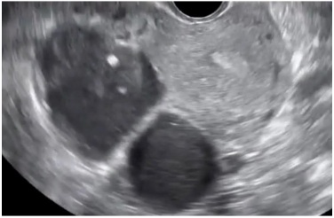
A Endometrioma ovariano, laparoscopia para capsulectomia.
B Cisto Lúteo ovariano, conduta expectante e repetir imagem.
C Carcinoma ovariano, histerectomia total com salpingooforectomia bilateral.
D Endometrioma ovariano, laparoscopia para drenagem e cauterização de focos de endometriose.
Questão 138 · Ginecologia · 4000197188Mulher 23 anos, G1P1A0, assintomática, sexarca aos 14 anos, compareceu à consulta para receber o resultado da citologia em meio líquido realizada há 2 meses. Ao entregar-lhe o exame cujo resultado foi compatível com Lesão intraepitelial de alto grau (LIEAG), o ginecologista esclareceu qual seria a orientação diante desse resultado. Qual a conduta adequada diante do resultado de LIEAG na situação exposta?
A “Ver e Tratar”.
B Repetir a citologia de imediato.
C Repetir citologia com seis meses.
D Colposcopia e biópsia se achado anormal.
Questão 139 · Pólipos uterinos · 4000197187Mulher 38 anos, G5P4A1, sem comorbidades. Apresenta ciclos menstruais regulares, mensais de 4 dias de duração. Há 6 meses com sangramento anormal intermenstrual intermitente, pequena quantidade, aspecto escuro “em borra de café” que ocorre até durante 5 dias depois do uxo menstrual habitual. Ao Ultrassom transvaginal apresentou a seguinte imagem (ver figura abaixo): Assinale a alternativa que corresponde ao diagnóstico mais provável da paciente.
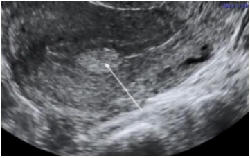
A Atrofia endometrial.
B Pólipo endometrial.
C Endométrio decidualizado.
D Adenocarcinoma de Endométrio.
Questão 140 · Tratamento não hormonal dos sintomas climatéricos · Ginecologia · 4000197186Paciente, 50 anos, G1P1A0, compareceu à consulta ginecológica de rotina queixando-se de ondas de calor, acordando na madrugada com sudorese noturna. Relatou ainda ciclos menstruais irregulares nos últimos seis meses. Nos antecedentes negou comorbidades, mas referiu mãe com CA de mama aos 50 anos e solicitou ao ginecologista um tratamento não hormonal para alívio desses sintomas. Qual terapia não hormonal seria adequada diante da situação exposta?
A Inibidor de recaptação da serotonina.
B Fitoestrogênio ou Fitoesteroides.
C Atividade física e perda de peso.
D Antidepressivos tricíclicos.
Questão 141 · Ginecologia · 4000197185Germana, 32 anos, G0P0, comparece para consulta com seu parceiro Gabriel, 42 anos, que tem dois lhos de relacionamento prévio. Estão há 18 meses tentando engravidar sem sucesso. Que exames devem ser solicitados para a avaliação inicial deste casal?
A FSH, TSH, prolactina e histerossalpingografia.
B FSH, estradiol, histerossalpingografia e cariótipo.
C TSH, prolactina, histerossalpingografia e espermograma.
D FSH, hormônio antimulleriano, histerossalpingografia, espermograma e cariótipo.
Questão 142 · Dor mamária mastalgia · 4000197184Mulher, 30 anos, nuligesta, sem antecedentes de câncer de mama, vem à consulta do ambulatório de ginecologia com queixa de mastalgia e sensação de "edema nas mamas" antes e durante o período menstrual. Quadro presente há 3 anos, mas piorou nos últimos 6 meses, o que gerou sua preocupação. Tem ciclos menstruais regulares e como método anticoncepcional faz uso do DIU de cobre. Exame físico das mamas sem anormalidades. Diante da queixa desta paciente, qual a conduta a ser tomada?
A Sugestão de medidas comportamentais e indicação de retirada do DIU de cobre.
B Solicitação de mamografia e indicação de prática de exercícios físicos e uso de sutiã esportivo.
C Orientação verbal sobre benignidade dos sintomas e prescrição de óleo de prímula e vitamina E.
D Orientação verbal sobre o caráter autolimitado dos sintomas e a ausência de relação com o câncer de mama.
Questão 143 · Adenomiose · 4000197183Mulher de 40 anos, multípara, com sangramento menstrual abundante e prolongado, associado à dismenorreia que antecede a menstruação e persiste até uma semana após o uxo menstrual. Ao exame ginecológico, encontramos útero aumentado uniformemente de volume, amolecido e doloroso. Realizou Ultrassonogra a transvaginal com a imagem apresentada a seguir. Diante do quadro clínico e da imagem do ultrassom, qual a hipótese diagnóstica mais provável?
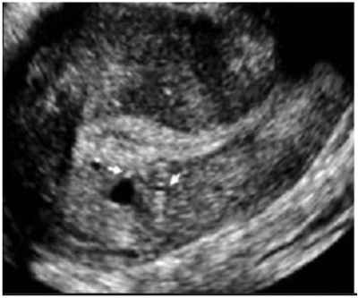
A Adenomiose.
B Pólipo endometrial.
C Leiomioma submucoso.
D Gestação ectópica em cicatriz de cesárea.
Questão 144 · Mastologia · 4000197182Trata-se de parturiente de 38 semanas e 6 dias, em franco trabalho de parto. Apresentavam-se 4 contrações de 30 segundos em 10 minutos, amniorrexe espontânea com 4 cm de dilatação e feto com boa vitalidade. Evolui com aumento da queixa dolorosa (score 10/10) quando se mantêm 4 contrações a cada 10 minutos e a cervicodilatação é de 7 cm, com feto em apresentação cefálica em plano 0 de De Lee. Nesse momento, a parturiente solicita anestesia. Com base nesse caso clínico, assinale a alternativa correta, acerca da analgesia de parto.
A Durante o trabalho de parto, a parturiente deve manter jejum, pois é alto o risco de síndrome de Mendelson após a raquianestesia.
B É contraindicação absoluta para analgesia raquidiana plaquetopenia abaixo de 50.000/mm³.
C Após realização de analgesia combinada a raquianestesia e peridural com colocação de cateter peridural, se houver recrudescimento de dor com escore entre 5 e 6, é indicado banho de imersão antes de nova dose de anestésico.
D É dispensável punção venosa para a realização de bloqueio regional em parturiente de risco habitual.
E É necessário, pelo menos, 5 cm de dilatação para que seja indicada a analgesia de parto.
Questão 145 · Mastologia · 4000197181Paciente G2PC1, com idade gestacional de 39 semanas, tem diabetes gestacional com controle metabólico inadequado e vitalidade fetal preservada, sendo indicada a interrupção da gestação por indicação materna. Com base nesse caso clínico, assinale a alternativa correta.
A Se o índice de Bishop for igual a 3, deve-se realizar preparo do colo com o método Krause.
B Se o índice de Bishop for igual a 7, deve-se realizar preparo do colo com misoprostol e indução do trabalho de parto.
C Se o índice de Bishop for igual a 7, deve-se realizar preparo do colo com método Krause e indução do trabalho de parto.
D Se o índice de Bishop for igual a 3, deve-se realizar preparo do colo com misoprostol e indução do trabalho de parto.
E Como paciente tem cesariana prévia, é contraindicada indução do parto, devendo-se optar por nova cesariana.
Questão 146 · Mastologia · 4000197180A respeito da avaliação ultrassonográfica fetal na gestação, assinale a alternativa correta.
A Medida da transluscência nucal acima de 2,5 cm é indicativo de trissomia do 21.
B O primeiro trimestre é o momento ideal para rastreamento de aneuploidias.
C Medidas da transluscência nucal abaixo de 2,5 afastam trissomia do 21.
D A avaliação da regurgitação da valva tricúspide deve ser realizada no 2° trimestre junto do ecocardiograma.
E O segundo trimestre é o momento ideal para rastreamento de aneuploidias.
Questão 147 · Mastologia · 4000197179Com relação às lacerações de trajeto do canal de parto, assinale a alternativa correta.
A A laceração de 2º grau acomete a mucosa e a pele do períneo.
B A laceração de grau 3b acomete ambos os esfíncteres anais — externo e interno.
C A laceração de grau 3a acomete menos de 50% da espessura do esfíncter anal externo rompida.
D A episiotomia de rotina reduz a incidência de lacerações de trajeto de 3º e 4º graus.
E A laceração de 1º grau acomete a mucosa e a musculatura superficial do períneo.
Questão 148 · Mastologia · 4000197178Paciente com atraso menstrual de 4 semanas e 6 dias realizou teste de gravidez de farmácia, com resultado positivo. Tem antecedentes de irregularidade menstrual. Há 3 dias, apresenta queixa de sangramento vaginal e cólica abdominal de moderada intensidade. Por esse motivo, buscou pronto atendimento, e o exame físico revelou pressão arterial (PA) de 120 mmHg × 80 mmHg. Exame especular: colo epitelizado com orifício puntiforme e moderada quantidade de sangramento coletado no fundo de saco. Ao toque vaginal, revelou-se o seguinte: colo longo, fechado, levemente doloroso à mobilização, útero intrapélvico de difícil palpação bimanual, devido ao tecido celular subcutâneo aumentado. Com base nesse caso clínico, assinale a alternativa correta.
A Deve ser solicitado Bhcg sérico quantitativo e ultrassonografia endovaginal.
B O exame físico mostra sangramento de pequena monta e colo impérvio. Trata-se de ameaça de abortamento, e a gestante deve receber alta, ser afastada do trabalho, devendo ser mantida em repouso, sem relações sexuais.
C Uma vez diagnosticado o abortamento, a paciente deve ser internada e submetida a curetagem uterina.
D Não há necessidade de realização da ultrassonografia endovaginal, pois o atraso menstrual é recente e não é possível identificar saco gestacional.
E Uma vez diagnosticada a gravidez ectópica, a paciente deve ser imediatamente submetida a laparotomia exploradora.
Questão 149 · Mastologia · 4000197177Paciente com 19 anos de idade, G4PN2A1 e idade gestacional de 21 semanas e 2 dias, comparece a consulta de pré-natal com queixa de ardor vulvovaginal intenso há 4 dias. Refere presença de “feridinhas” na entrada da vagina há 2 dias e cita que não se trata do primeiro episódio. Ao exame físico, apresenta múltiplas lesões exulceradas com halo hiperemiado, extremamente dolorosas em pequeno lábio esquerdo. Com base nesse caso clínico, assinale a alternativa correta.
A Uma vez que houve doença ativa durante a gestação, é indicada cesariana, a fim de evitar transmissão vertical, mesmo sem lesão ativa no momento do parto.
B Não é indicada cesariana em casos de lesão ativa no momento do parto, devido ao baixo risco de contaminação, e a via de parto indicada é obstétrica.
C Na presença de lesão ativa de herpes labial no momento do parto, deve ser indicada cesariana, pois a eliminação viral a distância aumenta a chance de transmissão vertical.
D Indica-se terapia supressora com aciclovir via oral a partir da 36ª semana até o momento do parto.
E A amamentação é contraindicada na presença de lesão genital ativa durante o parto, pois a eliminação viral a distância pode ser transmitida pelo leite materno.
Questão 150 · Câncer de mama na gestante · 4000197176Os cânceres de mama e de colo uterino são as doenças malignas mais comuns durante a gravidez. Quanto ao câncer de mama na gestação, assinale a alternativa correta.
A O câncer de mama associado à gravidez é definido como aquele diagnosticado durante a gestação e a lactação.
B O câncer de mama associado à gravidez tem melhor prognóstico quando comparado ao diagnosticado fora da gestação.
C O câncer de mama associado à gravidez é definido como aquele diagnosticado durante a gestação, excetuando o período de lactação.
D A supressão da lactação nos casos de câncer de mama associada à gravidez melhora o prognóstico.
E O câncer de mama associado à gravidez é definido como aquele diagnosticado durante a gestação, lactação ou no primeiro ano após o parto.
Questão 151 · Mastologia · 4000197175Primigesta, 41 semanas, está em trabalho de parto. Ao exame físico, apresenta PA de 110 mmHg × 60 mmHg, altura uterina de 40 cm, dinâmica uterina de 6 contrações de 60 segundos, cervicodilatação de 8 cm e BCF de 144. A altura da apresentação estava em plano +1 de De Lee. Há 20 minutos refere quadro de dor abdominal intensa, difusa, por todo o abdome, principalmente à palpação do útero associado a aumento do sangramento vaginal e bradicardia fetal. Foi realizado toque vaginal, que mostrou dilatação total e bolsa íntegra e tensa. Após amniotomia, houve piora do sangramento. Ao toque vaginal após amniotomia, a apresentação fetal encontrava-se alta e móvel. Assinale a alternativa que apresenta o diagnóstico correto nesse caso clínico.
A descolamento prematuro de placenta
B rotura uterina
C rotura de vasa prévia
D placenta prévia
E laceração do colo uterino
Questão 152 · Mastologia · 4000197174A respeito da utilização da ultrassonografia na sala de parto, assinale a alternativa correta.
A A avaliação do ducto venoso com Doppler colorido prediz sofrimento fetal agudo.
B Trata-se do método padrão-ouro para identificar a etiologia da hemorragia em casos de hemorragia pós-parto.
C O Doppler colorido umbilical tem alta sensibilidade na detecção do sofrimento fetal agudo.
D A avaliação transvaginal é realizada para determinar a altura da apresentação.
E Seu uso é de valia na determinação da variedade de posição e descida da apresentação antes da realização de parto fórceps.
Questão 153 · Mastologia · 4000197173Gestante de 36 semanas e 2 dias realizou ultrassonogra a que mostra feto em situação longitudinal e apresentação pélvica. Tem desejo de parto normal e foi oferecida a manobra de versão cefálica externa. Com base nesse caso clínico, assinale a alternativa correta.
A O parto normal é contraindicado, pois a taxa de complicações graves, como descolamento prematuro de placenta, é alta.
B A presença de placenta posterior reduz a chance de sucesso do procedimento.
C O polidrâmnio é uma contraindicação relativa para a manobra.
D Nuliparidade reduz a chance de sucesso da manobra.
E Gestantes Rh negativo não necessitam de profilaxia anti-D com imunoglobulina, uma vez que ela será administrada pós-parto.
Questão 154 · Mastologia · 4000197172Parturiente no período expulsivo apresenta desaceleração persistente da frequência cardíaca fetal, com BCF variando entre 50 e 80 há 5 minutos, sendo indicada utilização de fórceps para ultimação do parto. Ao exame físico, revela-se o seguinte: toque vaginal com dilatação total, bolsa rota, apresentação cefálica fletida em +3 de De Lee e variedade de apresentação OET. Com base nesse caso clínico, assinale a alternativa que apresenta o fórceps a ser utilizado, a rotação e a direção da rotação, respectivamente.
A fórceps Kielland, rotação de 45° em sentido anti-horário.
B fórceps Simpson, rotação de 45° em sentido horário.
C fórceps Kielland, rotação de 90° em sentido anti-horário.
D fórceps Kielland, rotação de 90° em sentido horário.
E fórceps Simpson, rotação de 90° em sentido anti-horário.
Questão 155 · Mastologia · 4000197171Quanto às relações útero-fetais, assinale a alternativa que contém, respectivamente, a apresentação fetal, seu ponto de referência e linha de orientação.
A cefálica defletida de 2º grau: glabela, sutura metópica.
B pélvica: sacro, linha bitrocantérica.
C cefálica defletida de 1º grau: bregma, sutura sagital.
D cefálica fletida: lambda, sutura coronal.
E cefálica defletida de 3º grau: naso, linha facial.
Questão 156 · Terapia hormonal · 4000197170A respeito da terapia hormonal da menopausa (TH), assinale a alternativa correta.
A Segundo o estudo
B A TH é eficiente no tratamento dos sintomas vasomotores, mas não há evidência de benefícios na prevenção de osteoporose e de fraturas.
C A TH tem efeito importante no interesse sexual, excitação, orgasmo ou desejo sexual hipoativo na menopausa, sendo essas queixas suficientes para indicação da terapia.
D A TH aumenta o risco para câncer de mama e, por isso, deixou de ser indicada nos últimos anos.
E O uso de TH vias oral e transdérmica em baixa dose parece ser seguro com relação ao risco de doenças cardiovasculares em mulheres na transição da menopausa e nos primeiros anos (menos de 10 anos) após o início da menopausa.
Questão 157 · Biópsias da mama · 4000197169Uma paciente vem ao consultório com mamogra a evidenciando lesão não palpável nodular de aproximadamente 1,2 cm, classificada como BIRADS 4. A ultrassonogra a consegue identi car a lesão e mantém a classificação. Com relação a esse caso hipotético, assinale a alternativa que apresenta a melhor conduta diante da situação apresentada.
A biópsia por agulha grossa guiada por mamografia.
B biópsia por agulha grossa guiada por ultrassonografia.
C punção por agulha fina guiada por mamografia.
D punção por agulha fina guiada por ultrassonografia.
E biópsia excisional.
Questão 158 · Tratamento cirúrgico · 4000197168Uma paciente de 57 anos de idade possui diagnóstico de câncer de mama, com estadiamento inicial T1N0M0. Após quimioterapia, houve a redução do tumor de 6 cm para 2 cm. Nesse caso, no tratamento cirúrgico, deve-se submeter a paciente a
A esvaziamento axilar e cirurgia conservadora da mama sem necessidade de radioterapia adjuvante.
B esvaziamento axilar e mastectomia radical.
C biópsia do linfonodo sentinela e mastectomia radical.
D biópsia do linfonodo sentinela e cirurgia conservadora da mama com radioterapia adjuvante.
E apenas exérese da lesão.
Questão 159 · Dismenorreia · 4000197167Uma paciente de 16 anos de idade é levada pela mãe ao ginecologista. A mãe refere que levou a lha, pois a garota “simula" dores fortes durante a menstruação para poder faltar às aulas e a mãe quer que um pro ssional da saúde oriente a lha de que não existem dores assim na adolescência, pois a lha tem até um exame de ultrassonogra a transvaginal sem alterações. A jovem moça, envergonhada, a rma que as dores são reais e que medicações comuns como antiespasmódicos não têm efeito suficiente. Durante a anamnese, a paciente explica que o quadro é constante e que começou, aproximadamente, 6 meses após a menarca, aos 11 anos; refere ter ciclos regulares de 32 a 35 dias, com 7 dias de sangramento (4 a 5 dias com bastante volume). Além disso, a paciente é tabagista (3 anos-maço) e tem IMC de 18,2. A dor, em geral, começa no primeiro dia da menstruação e permanece por 48 a 72 horas, com melhora após esse período. A paciente nega dispareunia. Ela é sedentária e tem um parceiro fixo há 2 anos. Com relação a esse caso clínico, assinale a alternativa correta.
A Deve-se solicitar uma ressonância nuclear magnética, necessária para o diagnóstico de endometriose.
B Deve-se suspeitar de dismenorreia secundária e solicitar tomografia.
C Deve-se suspeitar de dismenorreia primária e iniciar tratamento empírico com antinflamatório não esteroidal e(ou) contraceptivo oral além de orientar a paciente a iniciar exercícios físicos regulares e cessar o tabagismo.
D Deve-se orientar que o tabagismo não está relacionado à dismenorreia.
E Deve-se orientar que a mãe está correta e encaminhar a filha a um psiquiatra.
Questão 160 · Mastologia · 4000197166Uma paciente de 32 anos de idade vai à consulta ambulatorial referindo medo de não engravidar, pois apresenta uma alteração no exame de imagem, que foi solicitado por rotina. A paciente tem um parceiro que tem um lho de outro relacionamento e ela tem história de um abortamento no relacionamento atual. Ambos tentam engravidar há 1 ano com relações sexuais desprotegidas duas vezes por semana. No laudo da ultrassonografia, é identificado um leiomioma submucoso na parede posterior do útero, classificação 1 pela FIGO (30% intramural). A mesma refere que notou aumento do volume do sangramento no último ano, mas nega dores. Diante dessa situação, o médico deve orientar a paciente afirmando que
A esse tipo de mioma não pode interferir na fertilidade do casal.
B a lesão pode interferir na fertilidade, mas que o sangramento aumentado não pode estar relacionado ao mioma.
C caso os outros exames de investigação de infertilidade do casal estejam normais, uma laparoscopia será necessária para retirada da lesão.
D caso os outros exames de investigação de infertilidade do casal estejam normais, uma histeroscopia cirúrgica será necessária para retirada da lesão.
E caso os outros exames de investigação de infertilidade do casal estejam normais, uma laparotomia cirúrgica será necessária para retirada da lesão.
Questão 161 · Tratamento do sangramento uterino anormal agudo · 4000197165Uma paciente de 22 anos de idade se apresenta no pronto-socorro de ginecologia e apresenta-se hipocorada e sem conseguir manter conversa com o médico plantonista por muito tempo, pois se mostra muito cansada. A mãe, que a levou ao pronto-socorro, refere que a paciente não tem comorbidades e que esse é o quarto ciclo menstrual com quantidade excessiva de sangramento e que, dessa vez, a paciente chegou a desmaiar em casa. Ao exame, apresenta-se hipocorada, 3+/4, com pressão arterial de 80 x 50 e com frequência cardíaca de 116 bpm. O exame especular evidencia grande quantidade de sangramento se exteriorizando pelo orifício externo do colo uterino. Com relação a esse caso clínico, assinale a alternativa que apresenta a melhor conduta inicial para essa situação.
A manter a paciente em observação para avaliar a evolução do sangramento.
B prescrever pílula contraceptiva para controle do sangramento e dar alta à paciente.
C internar a paciente para estabilização clínica, solicitar exames laboratoriais e entrar com contraceptivo oral combinado com 30 microgramas de etinilestradiol a cada 6 horas até parar o sangramento.
D internar a paciente para estabilização clínica, solicitar exames laboratoriais e entrar com contraceptivo oral combinado com 15 microgramas de etinilestradiol a cada 6 horas até parar o sangramento.
E internar a paciente e realizar curetagem uterina para controle do sangramento, pois, hoje em dia, não se utiliza mais estrogênio em alta dose.
Questão 162 · Climatério · 4000197164Uma paciente de 56 anos de idade vem ao consultório com queixa de sangramento vaginal em pequena quantidade há 3 meses. Ela refere que entrou na menopausa aos 50 anos de idade. Possui IMC de 20.3 e é praticante de exercícios físicos regulares. Ela também se queixa de secura vaginal e refere que controlou os fogachos com cimicífuga racemosa nos primeiros anos após a menopausa. Com relação a essa situação hipotética, assinale a alternativa que apresenta a melhor conduta para o caso.
A tranquilizar a paciente, pois a principal causa de sangramento vaginal após a menopausa não é câncer, e solicitar exames laboratoriais.
B examinar a paciente e, não encontrando a fonte do sangramento, solicitar histeroscopia diagnóstica.
C orientar a paciente de que provavelmente não se trata de um caso de câncer e apenas observar a evolução do quadro.
D solicitar ressonância nuclear magnética para diagnosticar provável câncer de endométrio e possíveis metástases.
E examinar a paciente e, não encontrando a fonte do sangramento, solicitar ultrassonografia transvaginal para avaliação do endométrio.
Questão 163 · Mastologia · 4000197163Uma paciente de 24 anos de idade, recém-formada em educação física, queixa-se de ausência de ciclos menstruais há 6 meses. Seus ciclos foram sempre regulares com 28 dias de intervalo e de duração de 4 a 5 dias com uxo moderado. A paciente refere que, no período nal da faculdade, além de estudar arduamente para as provas, começou um treinamento intenso para uma competição de corrida que faria fora do país. A prova atlética aconteceu há 2 meses, mas a paciente optou por continuar com o treinamento intenso, pois sente-se “viciada" nos treinos. Antes de solicitar outros exames, o médico pede à paciente que reduza os treinos e que observe o sangramento. Acerca desse caso hipotético, assinale a alternativa correta.
A Caso a paciente volte a sangrar, a etiologia mais provável é o de amenorreia hipotalâmica funcional, que pode ser causada pela prática de exercícios extenuantes e por situações de estresse importantes.
B Caso a paciente volte a sangrar, a etiologia mais provável é o de síndrome de Sheehan.
C Caso a paciente volte a sangrar, a etiologia mais provável é a síndrome dos ovários policísticos.
D Trata-se de um caso de amenorreia primária, comum em atletas de ponta.
E Não poderia se tratar de amenorreia hipotalâmica funcional, pois, obrigatoriamente, haveria um tumor associado.
Questão 164 · Mastologia · 4000197162Um paciente de 36 anos de idade se apresenta em consulta ambulatorial para orientação sobre contracepção, pois, recentemente, leu na internet sobre alguns riscos do uso de contracepção hormonal oral combinada, da qual faz uso. A paciente é tabagista (15 anos-maço e começou a fumar aos 26 anos de idade), é hipertensa controlada, está com sobrepeso e apresenta enxaqueca sem aura. Nesse caso, a melhor alternativa seria orientar a paciente, afirmando que ela
A apresenta dois fatores que contraindicam o método contraceptivo: enxaqueca sem aura com idade superior a 35 anos de idade, tabagismo com mais de 15 cigarros por dia associado à idade maior que 35 anos de idade e que deve interromper o método atual para escolher outro.
B deve ficar tranquila, pois pílulas anticoncepcionais são isentas de riscos, exceto para quem tem história de trombose.
C apresenta contraindicações para o uso do hormônio, entre eles, o sobrepeso.
D pode continuar a usar o método escolhido, pois a enxaqueca sem aura sozinha não contraindica o uso dos contraceptivos.
E apresenta quatro fatores que contraindicam o método contraceptivo: enxaqueca sem aura com idade superior a 35 anos de idade, tabagismo com mais de 15 cigarros por dia associado à idade maior de 35 anos de idade, hipertensão arterial e sobrepeso, que deve interromper o uso do método.
Questão 165 · Fístulas genitourinárias · 4000197161Uma paciente de 46 anos de idade vai à consulta ambulatorial de pós-operatório 14 dias depois de realizar histerectomia total abdominal por sangramento aumentado refratário a tratamento clínico, quadro causado por múltiplos miomas. A paciente refere estar se recuperando bem, mas a rma que tem perdido urina sem perceber. O médico, então, infunde azul de metileno diluído em soro siológico na bexiga da paciente com auxílio de uma sonda vesical e observa, no exame especular, imediatamente após infusão do líquido, o conteúdo azulado no canal vaginal. Com relação a esse caso, a melhor conduta a ser tomada diante da situação relatada é
A solicitar estudo urodinâmico para diagnóstico definitivo da perda de urina.
B confirmar fístula uretero-vaginal e indicar tratamento cirúrgico imediato.
C confirmar fístula vesico-vaginal e internar a paciente para tratamento cirúrgico de urgência.
D confirmar fístula uretero-vaginal e indicar uretrocistografia miccional para uma melhor programação cirúrgica.
E confirmar fístula vesico-vaginal e solicitar uretrocistoscopia para localizar a fístula e determinar sua extensão e distância em relação aos ureteres para programar a melhor técnica de abordagem cirúrgica.
Questão 166 · Mastologia · 4000197160Uma paciente vai ao pronto-socorro de ginecologia queixando-se de dor na região vulvar, há pouco mais de 1 dia, associada à queimação vulvar durante quando urina. Refere que nunca passou por algo assim. Sente-se, também, prostrada, como se estivesse com gripe, mas sem alterações das vias aéreas. A paciente conta também que, há poucos dias, notou algumas vesículas na mesma região, que sumiram, aparecendo essas lesões dolorosas. A paciente possui relacionamento xo há 2 anos, com uso de condom nas relações sexuais e passou por momento estressante nos últimos dois meses, pois havia perdido o emprego. Ao exame, o médico verifica três pequenas úlceras, palpa pequenos linfonodos inguinais e não observa nenhum outro sinal inflamatório vulvar ou descarga vaginal. Acerca desse caso, assinale a alternativa correta.
A É possível fazer o diagnóstico clínico de provável primoinfecção por herpes genital e realizar o tratamento com aciclovir 400 mg uma vez ao dia por 6 meses.
B É possível fazer o diagnóstico clínico de provável primoinfecção por herpes genital e realizar o tratamento com aciclovir 400mg três vezes ao dia por 7 a 14 dias.
C É impossível fechar o diagnóstico com essas informações e deve-se, portanto, solicitar cultura do raspado da lesão ulcerada.
D Trata-se de um quadro de clamídia em paciente com fator de risco comportamental para infecções sexualmente transmissível e, tanto a paciente como o parceiro, devem ser tratados.
E trata-se de um quadro de clamídia e deve-se tratar a paciente com doxiciclina 100 mg, via oral, 1 comprimido, 2 vezes ao dia, por 21 dias.
Questão 167 · Câncer de ovário · 4000197159Uma paciente de 67 anos de idade vai a um retorno após consulta ambulatorial de rotina. A paciente é assintomática, mas no laudo da ultrassonogra a, lê-se “imagem anecoica com septos grosseiros e algumas vegetações de, aproximadamente, 4 cm no maior diâmetro, localizada no ovário esquerdo”. Frente a essa imagem, o médico solicita CA-125, cujo resultado é de 162 U/mL (valor de referência de normalidade: abaixo de 35 U/mL). A melhor hipótese diagnóstica para esse caso é que se trata de um(a)
A neoplasia de origem do seio endodérmico do ovário.
B neoplasia, provavelmente, benigna do ovário.
C neoplasia de origem epitelial do ovário.
D carcinoma de células germinativas.
E coriocarcinoma.
Questão 168 · Mastologia · 4000197158Em consulta de oncologia, uma paciente de 35 anos de idade apresenta-se com estadiamento IA2 (invasão do estroma acima 3,0 mm e com, no máximo, 5,0 mm de profundidade) para carcinoma escamoso de colo de útero. A paciente refere desejo de engravidar. Nesse caso, a melhor conduta cirúrgica seria realizar
A exenteração pélvica.
B traquelectomia radical com biópsia do linfonodo sentinela e/ou linfadenectomia pélvica (considerar tratamento completo, caso não haja linfonodos comprometidos).
C conização.
D histerectomia radical.
E conização com biópsia do linfonodo sentinela e/ou linfadenectomia pélvica (considerar tratamento completo, caso não haja linfonodos comprometidos).
Questão 169 · Mastologia · 4000197157A respeito da realização do pneumoperitôneo nas cirurgias laparoscópicas em pacientes com laparotomia prévia, assinale a alternativa correta.
A O ponto de Jain é uma porta de entrada não umbilical, no nível L4, 10-13 cm lateral ao umbigo.
B Pela técnica de Palmer, a punção é realizada 3 cm abaixo da margem subcostal esquerda na linha hemiclavicular, 4 cm lateral ao umbigo.
C O ponto de Lee-Huang é uma porta de entrada não umbilical, estando localizado 5 cm abaixo do umbigo na linha média.
D O sétimo espaço intercostal esquerdo pode ser utilizado, desde que não haja distensão gástrica, massas abdominais superiores, hepatoesplenomegalia ou cicatrizes abdominais superiores.
E A técnica aberta na linha mediana é obrigatória nesses casos.
Questão 170 · Mastologia · 4000197156Quanto à esplenectomia laparoscópica, assinale a alternativa correta.
A A esplenose pode ocorrer como resultado do autotransplante de tecido esplênico durante a esplenectomia laparoscópica em pacientes com púrpura trombocitopênica imune.
B É necessária a utilização de 5 trocartes tanto na técnica em decúbito dorsal, em posição de próclive de 30 graus, quanto na técnica em decúbito lateral direito completo, com fixação do corpo em canivete e Trendelemburg a 15 graus.
C Uma limitação da esplenectomia laparoscópica é a dificuldade de detectar a presença de baços acessórios que estão presentes em aproximadamente 60% dos pacientes com doença hematológica.
D Obesidade, doença hematológica maligna, hipertensão portal e esplenomegalia são considerados contraindicações para a realização de esplenectomia laparoscópica.
E A embolização pré-operatória da artéria esplênica deve ser utilizada quando há esplenomegalia como forma de reduzir o tamanho do baço, sangramento operatório e o tempo cirúrgico.
Questão 171 · Mastologia · 4000197155Em relação aos pólipos colorretais, julgue os itens a seguir. I. Adenoma túbulo-viloso tem de 25% a 75% de componente viloso. II. Adenoma viloso tem de 35% a 40% de chance de abrigar adenocarcinoma. III. Displasia não adenomatosa associada a doença inflamatória intestinal (lesão tipo DALM) apresenta alto risco para carcinoma. IV. Pólipos inflamatórios não requerem vigilância endoscópica. V. Pólipos sésseis serrilhados são geralmente localizados no cólon direito, de cor pálida, com bordas indistintas e recobertos por muco. Assinale a alternativa correta.
A Apenas os itens I e III estão certos.
B Apenas os itens II e V estão certos.
C Apenas os itens I, II e IV estão certos.
D Apenas os itens III, IV e V estão certos.
E Todos os itens estão certos.
Questão 172 · Mastologia · 4000197154No que se refere à técnica aberta de correção das hérnias inguinais com tela, assinale a alternativa incorreta
A As alças lateral e medial, criadas após a abertura da porção superior da tela para a confecção da passagem do funículo espermático, devem ser suturadas em posição paralela, sem o cruzamento, a fim de diminuir a chance de recidiva.
B A técnica de
C A fim de diminuir a recorrência, a tela deve ter tamanho mínimo de 6 cm × 14 cm e ultrapassar o tubérculo pubiano medialmente em 2 cm.
D Os locais mais comuns de recidivas são perto do púbis (hérnia direta) e perto do anel inguinal profundo (hérnia indireta).
E Com o processo de cicatrização, a tela diminuirá de tamanho, pela contração dos tecidos cicatrizados, expondo, assim, o local a uma possível falha, o que favorecerá a recidiva.
Questão 173 · Mastologia · 4000197153Assinale a alternativa correta.
A No trígono cisto-hepático (triângulo de Calot), podem ser encontradas a artéria cística, a veia porta e a artéria hepática direita.
B A veia gonadal esquerda desemboca na veia esplênica, enquanto a veia gonadal direita desemboca na veia cava inferior.
C A arcada de Riolan une o ramo esquerdo da artéria cólica média ao ramo ascendente da cólica esquerda, formando o ponto isquêmico de Sudeck.
D O íleo, em relação ao jejuno, apresenta maior calibre, parede mais espessa, menos nódulos linfoides (placa de Peyer), maior vascularização e vasos retos mais longos.
E O setor dorsal ou lobo caudado do fígado (lobo de Spiegel) é um setor independente, recebendo fluxo portal exclusivamente do ramo direito, e sua drenagem venosa se faz diretamente por ramos que drenam para as veias hepáticas.
Questão 174 · Mastologia · 4000197146Quanto ao megaesôfago chagásico, assinale a alternativa
A Endoscopia digestiva alta é fundamental para a confirmação diagnóstica, além de avaliar o grau de inflamação da mucosa e afastar a presença de lesões neoplásicas.
B Na radiografia simples de tórax, pode-se suspeitar da presença de um megaesôfago avançado.
C De acordo com a classificação de Rezende, as ondas terciárias são evidenciadas nos graus II e III.
D As complicações da mucosectomia incluem sangramento excessivo durante retirada da mucosa e submucosa e complicações pleuropumonares; no entanto, a incidência de tais complicações é significativamente menor do que na esofagectomia.
E Para casos não avançados, opta-se pela cardiomiotomia de Heller, ao passo que, em casos avançados, opta-se pela esofagectomia subtotal com esofagogastroplastia transmediastinal posterior, mucosectomia ou cirurgia de Serra Doria.
Questão 175 · Mastologia · 4000197145A respeito do câncer gástrico, julgue os itens a seguir. I. O principal método de estadiamento é a tomogra a computadorizada de tórax, abdome e pelve, sendo a tomogra a por emissão de pósitrons (PET-CT) e a ressonância nuclear magnética (RNM) utilizadas apenas em casos selecionados. II. A análise dos marcadores de tumor séricos (CA19.9, CEA, CA 72.4) deve ser realizada em todos os casos de câncer gástrico. III. Nos tumores estádio IB-III (T2-4 qualquer N), está indicada a disseção linfonodal D2. IV. Nos tumores do tipo difuso, recomenda-se margem proximal de, pelo menos, 8 cm. V. A ressecção endoscópica está indicada nos tumores adenocarcinoma bem diferenciados, restritos a mucosa (T1a), menores que 2 cm no seu maior eixo e não ulcerados. Estão certos apenas os itens
A I, II e IV.
B I, III e V.
C I, IV e V.
D II, III e IV.
E II, III e V.
Questão 176 · Mastologia · 4000197144Paciente de 23 anos de idade, do sexo feminino, HIV positivo, com CD4: 600 e carga viral negativa, com queixa de sangramento anal sem dor, compareceu a uma consulta. Ao exame proctológico, apresentava três lesões condilomatosas de 1 cm cada, localizadas no canal anal. A partir desse caso clínico, considere as opções terapêuticas apresentadas nos itens a seguir. I. ácido tricloroacético a 90% por 4 semanas; caso a paciente não apresente melhora, indicar ressecção e cauterização no centro cirúrgico. II. ressecção e cauterização no centro cirúrgico. III. podo lina a 25% tópico por 4 semanas; caso a paciente não apresente melhora, indicar ressecção e cauterização no centro cirúrgico. IV. imiquimode por 8 a 12 semanas; caso a paciente não apresente melhora, indicar ressecção e cauterização no centro cirúrgico. V. vacinação quadrivalente para HPV, imiquimode por 8 a 12 semanas e, caso a paciente não apresente melhora, ácido tricloroacético a 90%. São opções terapêuticas adequadas para esse caso clínico apenas as apresentadas nos itens
A I e II.
B I e IV.
C II e V.
D III e V.
E III e IV.
Questão 177 · Tratamento da endometriose do trato intestinal · 4000197143Compareceu a uma consulta paciente de 24 anos de idade, com diagnóstico de endometriose, com colonoscopia mostrando abaulamento extrínseco no retossigmoide, ressonância magnética com endometriose profunda retovaginal e laparoscopia com implante único na transição retossigmoide de 2,5 cm. Nesse caso hipotético, a melhor conduta intraoperatória é realizar
A excisão de toda a espessura da parede juntamente com a lesão e sutura primária transversal.
B retossigmoidectomia com anastomose primária término-terminal.
C ressecção da lesão sem abertura da mucosa e sutura primária longitudinal em dois planos.
D retossigmoidectomia com colostomia à Hartmann.
E excisão de toda a espessura da parede juntamente com a lesão com margem de segurança de 2 cm, sutura primária transversal e ileostomia de proteção.
Questão 178 · Mastologia · 4000197142Um paciente com estadiamento de adenocarcinomade reto baixo de 3 cm a 1 cm da linha pectínea cT3N0M0 apresentou resposta clínica completa após radioterapia e quimioterapia. Com base nesse caso clínico, assinale a alternativa correta, considerando a melhor orientação para esse paciente.
A A amputação abdominoperineal com colostomia definitiva é o padrão de tratamento.
B O paciente está curado, devendo ser acompanhado com toque retal, colonoscopia, CEA e ressonância magnética.
C O paciente deverá ser acompanhado com toque retal, colonoscopia, CEA e PET/CT.
D O paciente apresentou resposta clínica completa, mas não patológica, devendo ser submetido a excisão transanal, sem necessidade de colostomia definitiva, com grande possibilidade de evoluir com pouca dor e boa cicatrização.
E O paciente deverá ser submetido a ressecção local com técnicas minimamente invasivas, como microcirurgia transanal endoscópica (TEM) ou cirurgia minimamente invasiva transanal (TAMIS).
Questão 179 · Mastologia · 4000197141Um paciente de 60 anos de idade comparece a uma consulta com otorrinolaringologista com queixa de “voz estranha” há 3 meses, com piora progressiva. Refere que, há duas semanas, está com “um pouco de falta ar”, que está mais cansado e tem que dormir quase sentado. Refere apresentar odinofagia. O exame de naso broscopia revela tumoração em epiglote, ulcerada, de aproximadamente 2 cm, que se movimenta em direção à luz glótica, com efeito de válvula, sem extensão para as demais estruturas da laringe, tendo sua mobilidade preservada. Pescoço apresenta linfonodos cervicais bilaterais, esféricos, endurecidos, de 3 cm, móveis e indolores. Com base nesse caso clínico, assinale a alternativa correta, quanto à melhor conduta diagnóstica para esse paciente.
A Indica-se a traqueostomia de urgência, pois o paciente apresenta quadro avançado do tumor com obstrução de via aérea, sem possibilidade de tratamento.
B Deve-se realizar uma tomografia computadorizada do pescoço, para estabelecer o diagnóstico patológico.
C Diante da paralisia da laringe, deve-se realizar uma biópsia da prega vocal.
D Nesse caso, o diagnóstico é feito por meio de uma biópsia da lesão da epiglote, que pode ser feita mediante endoscopia, havendo a possibilidade de realização de via aérea cirúrgica que assegure esse procedimento.
E Nesse caso, o diagnóstico é feito por meio de uma biópsia da lesão da epiglote e da prega vocal, que pode ser realizada mediante endoscopia, havendo a possibilidade de realização de via aérea cirúrgica que assegure esse procedimento.
Questão 180 · Mastologia · 4000197140Recém-nascido (RN) de parto vaginal, masculino, a termo, pesando 2.700 gramas, está sendo avaliado por um médico. Apgar de 8 no primeiro minuto e 9 no 5º minuto. Mãe tem 34 anos de idade e apresentou gestação complicada com polidrâmnio. No transporte para o berçário, observa-se presença de sialorreia importante, di culdade, apresentando-se acianótico; ausência de alterações em cabeça, pescoço, tronco ou extremidades. Ausculta pulmonar com murmúrio vesicular presente sem ruídos adventícios. Ausência de sopros cardíacos. Abdome ácido, escavado e sem massas palpáveis. Genitália é normal e nota-se mecônio visível no ânus que se encontra pérvio. Com base nesse caso clínico, assinale a alternativa correta.
A Há suspeita clínica inicial de atresia de esôfago com fístula traqueoesofágica, cujo diagnóstico pode ser feito por meio de radiografia simples de tórax e abdome com injeção de ar.
B Há suspeita clínica inicial de atresia de esôfago sem fístula traqueoesofágica, podendo ser confirmada pela presença de ar no abdome visibilizado na radiografia simples de tórax e abdome com injeção de ar.
C Nos casos de atresia com fístula traqueoesofágica, há distensão abdominal; ao contrário, quando não há fístula, o abdome é escavado.
D A intubação orotraqueal está indicada em todos os casos de atresia de esôfago, com ou sem fístula traqueoesofágica.
E O RN deve ser mantido em posição de Trendelenburg, nos casos em que há fístula traqueoesofágica; nas atresias sem fístula, deve-se manter decúbito lateral direito elevado.
Questão 181 · Mastologia · 4000197139Uma mulher de 25 anos de idade, envolvida em uma briga doméstica, é levada ao pronto-socorro com um ferimento por arma branca (facada) no pescoço, à esquerda. Na admissão, encontra-se normotensa, com vias aéreas pérvias, sem sinais ou sintomas de di culdade respiratória, e o exame neurológico está normal. O exame físico do pescoço revela uma única ferida de 2 cm, anterior ao músculo esternocleidomastoideo, na altura da cartilagem tireoide. Há um hematoma pulsátil com sopro associado e crepitação importante à palpação. Radiogra as simples demonstram en sema subcutâneo, sem desvio de traqueia e sem pneumotórax. Considerando esse caso clínico, assinale a alternativa correta, quanto à classificação do ferimento e à conduta mais adequada.
A A paciente apresenta ferimento penetrante em zona III, com risco de lesões em artérias, veias, nervos, laringe, traqueia e esôfago.
B A paciente apresenta ferimento penetrante em zona II, com indicação de cervicotomia imediata.
C A paciente apresenta ferimento penetrante em zona II, com estabilidade hemodinâmica, o que permite a conduta de manejo conservador seletivo.
D A paciente apresenta ferimento penetrante em transição entre zonas I e II, havendo indicação de radiologia intervencionista, pois o acesso cirúrgico nessa região é muito difícil.
E A paciente apresenta ferimento em zona II, com indicação de cervicotomia imediata e ligadura dos vasos com evidência de sangramento.
Questão 182 · Mastologia · 4000197138Quanto à hemorragia digestiva por hipertensão portal, assinale a alternativa
A As causas de hipertensão portal podem ser sinusoidais, pré-sinusoidais e pós-sinusoidais.
B Esquistossomose e cirrose são exemplos de causa sinusoidal de hipertensão portal.
C Síndrome de Budd Chiari é um exemplo de causa pós-sinusoidal de hipertensão portal.
D Hipertensão portal segmentar diz respeito a trombose da veia esplênica causando hipertensão em apenas um setor do território da circulação portal.
E Trombose das veias supra-hepáticas é um exemplo de causa pós-sinusoidal de hipertensão portal.
Questão 183 · Mastologia · 4000197137Assinale a alternativa
A Síndrome de Mallory Weiss é uma causa de hemorragia digestiva alta, e seu tratamento padrão- ouro é o endoscópico.
B Lesão de Dieulafoy diz respeito a malformações vasculares de vasos arteriais da submucosa gástrica que, expostas aos ácidos da secreção gástrica, podem erodir e causar hemorragia digestiva.
C Hemobilia é uma causa frequente de sangramento digestivo alto; ocorre através das vias biliares para o trato digestivo.
D O tratamento cirúrgico das hemorragias digestivas por lesão de Dieufaloy pode incluir a necessidade de gastrectomia.
E Gastrites erosivas hemorrágicas são causas de hemorragia digestiva, sendo que, na maioria dos casos, o sangramento é autolimitado.
Questão 184 · Mastologia · 4000197136Em relação às lesões químicas do esôfago, assinale a alternativa
A Ácidos produzem necrose de coagulação, ao passo que substâncias alcalinas produzem necrose de liquefação.
B Lesões provocadas por substâncias ácidas tendem a ser menos profundas, com seu acometimento maior em extensão, ao passo que as lesões por substâncias alcalinas causam maior comprometimento em profundidade do órgão.
C Pacientes com história de ingestão de agentes químicos alcalinos podem ter lesões concomitantes em esôfago e estômago (dupla lesão de Goni – Moreno).
D Em pacientes com lesão esofágica Zagar 2B, não se deve passar sonda enteral devido ao risco de perfuração do órgão.
E Pacientes com lesão esofágica Zagar 3B têm indicação de esofagectomia de urgência, segundo maioria da literatura especializada.
Questão 185 · Mastologia · 4000197135A respeito do tratamento das hemorragias digestivas causadas por hipertensão portal, assinale a alternativa correta.
A Tratamento cirúrgico está sempre indicado na primeira ocorrência de hemorragia digestiva alta por hipertensão portal devido a cirrose hepática.
B Tratamento endoscópico está indicado para controle do sangramento, desde que, posteriormente, seja realizado o devido procedimento cirúrgico.
C Balão esofágico deve ser usado de rotina nos casos de hemorragia digestiva alta por hipertensão portal.
D Balão esofágico deve ser insuflado com uma pressão de dois terços da pressão arterial média do paciente.
E Nunca está indicada abordagem via radiointervenção.
Questão 186 · Mastologia · 4000197134Acerca da síndrome de Fournier, assinale a alternativa
A Trata-se de uma infecção perineal acompanhada de necrose das fáscias de Buck, Scarpa e Colles.
B O tratamento envolve debridamento cirúrgico e antibioticoterapia de largo espectro.
C É obrigatória a confecção de colostomia terminal ou em alça para desvio de trânsito intestinal.
D Essa síndrome normalmente acomete pacientes com algum grau de comprometimento imunológico.
E Exames de imagem podem auxiliar o diagnóstico, mas não devem retardar o procedimento operatório, uma vez que tais pacientes podem desenvolver rapidamente choque séptico.
Questão 187 · Mastologia · 4000197133Quanto ao tratamento cirúrgico das hemorragias digestivas altas por úlceras pépticas, assinale a alternativa correta.
A Trata-se da primeira escolha para tratamento das úlceras duodenais com sangramento.
B A cirurgia realizada é sempre a gastrectomia parcial, independentemente da localização da úlcera.
C Deve ser indicada cirurgia precoce para paciente estável hemodinamicamente, uma vez que o paciente será operado em melhores condições clínicas.
D Nunca deve ser feita a reconstrução à Billroth II, devido ao alto risco de desenvolvimento posterior de neoplasia de boca anastomótica.
E Cirurgia deve ser indicada para pacientes com falha de tratamento endoscópico (impossibilidade de controlar o sangramento durante endoscopia).
Questão 188 · Mastologia · 4000197132Quanto às colecistites agudas, assinale a alternativa
A A ultrassonografia para diagnóstico da colecistite aguda apresenta boa sensibilidade e especificidade, apesar de ser um exame examinador dependente.
B A pancreatite aguda biliar é considerada um diagnóstico diferencial, devido ao quadro clínico semelhante.
C Quando há icterícia associada, deve-se considerar as hipóteses de coledocolitíase concomitante, hepatite transinfecciosa, peritonite filtrante biliar ou coleperitônio.
D O tratamento preferencial é cirúrgico, mas, em alguns casos particulares, pode-se considerar a realização de tratamento clínico.
E A etiologia é sempre biliar.
Questão 189 · Mastologia · 4000197131Acerca do tratamento cirúrgico realizado na urgência/emergência para hemorragias digestivas por hipertensão portal, assinale a alternativa correta.
A A cirurgia de escolha para tratamento na urgência é preferencialmente a cirurgia de Warren, que apresenta bons resultados quando realizada em pacientes cirróticos e esquistossomóticos.
B A derivação porto-cava calibrada não é uma escolha na urgência, devido à alta taxa de encefalopatia hepática desenvolvida pelos pacientes no pós-operatório.
C Esse tratamento pode ser indicado em casos de hemorragia digestiva alta refratária a tratamento endoscópico e balão esofágico na urgência, quando não há possibilidade de passagem de TIPS (
D A derivação mesentérico-cava não é uma opção se houver trombose da porta.
E A desconexão ázigo portal (DAPE) é a cirurgia mais indicada para tratamento na urgência de hemorragia digestiva em paciente sabidamente cirrótico.
Questão 190 · Mastologia · 4000197130Em relação às hemorragias digestivas baixas (HDB), assinale a alternativa
A A doença diverticular dos cólons é a causa mais comum em adultos.
B Em crianças, a causa mais comum de sangramento digestivo baixo é o divertículo de Meckel, cujo diagnóstico pode ser feito por meio de cintilografia com hemácias marcadas, objetivando marcação de mucosa gástrica ectópica ao estômago.
C Deve-se pensar em retites e(ou) colites actínicas em pacientes com HDB que têm antecedente de tratamento radioterápico para neoplasias de colo de útero e próstata.
D Doenças inflamatórias intestinais (Crohn e retocolite ulcerativa) e tuberculose intestinal são causas de HDB.
E Exame proctológico e colonoscopia são importantes na abordagem da HDB na urgência.
Questão 191 · Mastologia · 4000197129Assinale a alternativa correta.
A Pacientes com peritonite difusa devem ser submetidos obrigatoriamente a laparotomia mediana para permitir a adequada limpeza da cavidade abdominal.
B Em pacientes do sexo biológico feminino, na dúvida diagnóstica, a laparoscopia é uma boa via de acesso.
C Pacientes com peritonite difusa podem ser submetidos a vias de acesso localizadas (incisão de Davis ou Mc Burney), desde que sejam mantidos drenos abdominais e antibioticoterapia por, pelo menos, 14 dias.
D São indicações de drenagem na apendicite aguda o abscesso localizado, a peritonite difusa (drenos nos quatro quadrantes abdominais) e o comprometimento da base apendicular.
E Em casos de autólise do apêndice, a colectomia está sempre indicada.
Questão 192 · Mastologia · 4000197128Um paciente de 70 anos de idade compareceu ao pronto-socorro com queixa de dor abdominal em cólica, há 9 dias, com piora progressiva de sua intensidade, tendo feito uso de anti-inflamatórios não esteroidais (AINE), sem melhora. A dor apresentou piora significativa e se tornou contínua há 1 dia. Refere associação de vômitos tardios e parada da eliminação de gases e fezes ao quadro clínico no período. Foi submetido a tomogra a computadorizada de abdome que evidenciou grande distensão de alças colônicas, com ceco de diâmetro aproximado de 10 cm, região de aparente estenose em transição retossigmoide, que pode corresponder a processo neoplásico e pneumoperitônio. Com base nesse caso clínico, assinale a alternativa correta, em relação ao provável diagnóstico do paciente em questão.
A Trata-se de abdome agudo perfurativo, com provável perfuração de ceco relacionada ao uso de AINE; a conduta indicada é a laparotomia exploradora.
B Trata-se de abdome agudo obstrutivo complicado, com provável perfuração da área da neoplasia; a conduta indicada é a laparotomia exploradora.
C Trata-se de abdome agudo perfurativo, com provável perfuração da área da neoplasia; a conduta indicada é a laparotomia exploradora.
D Trata-se de abdome agudo obstrutivo complicado em alça fechada, com provável perfuração de ceco; a conduta indicada é a laparotomia exploradora.
E Trata-se de abdome agudo obstrutivo não complicado; a conduta indicada é a laparotomia exploradora.
Questão 193 · Mastologia · 4000197127Um paciente de 70 anos de idade compareceu ao pronto-socorro com queixa de dor abdominal em cólica, há 9 dias, com piora progressiva de sua intensidade, tendo feito uso de anti-inflamatórios não esteroidais (AINE), sem melhora. A dor apresentou piora significativa e se tornou contínua há 1 dia. Refere associação de vômitos tardios e parada da eliminação de gases e fezes ao quadro clínico no período. Foi submetido a tomogra a computadorizada de abdome que evidenciou grande distensão de alças colônicas, com ceco de diâmetro aproximado de 10 cm, região de aparente estenose em transição retossigmoide, que pode corresponder a processo neoplásico e pneumoperitônio. Considerando que seja indicada a laparotomia exploradora, assinale a alternativa que apresenta a conduta mais adequada no caso desse paciente.
A colectomia total
B retossigmoidectomia, colostomia à Hartmann e sutura de perfuração/laceração do ceco
C retossigmoidectomia, anastomose primária e sutura de perfuração/laceração do ceco
D colostomia em alça e sutura de perfuração/laceração de ceco
E hemicolectomia direita, ileotransverso anastomose e retossigmoidectomia à Hartmann, preservando-se o cólon transverso
Questão 198 · Inf ecção do trato urinário de repetição · Cistite · Ginecologia · 4000197057Mulher, 29 anos de idade, apresenta infecções do trato urinário de repetição (4 episódios no último ano). Vida sexual ativa. Em uso de diafragma. Nega outras comorbidades. O último episódio de cistite bacteriana foi tratado com norfloxacino por 7 dias. Qual das alternativas abaixo apresenta a conduta mais adequada?
A Prescrição diária definitrofurantoína 150mg por 90 dias por via oral.
B Orientações higiênico-dietéticas suspendendo o consumo de frutas cítricas.
C Sugerir mudança de método contraceptivo para método hormonal.
D Prescrição de lisado de E. coli nos dias que tiver relação sexual.
Questão 199 · Tratamento · Ginecologia · Tratamento · 4000197056Mulher, 79 anos de idade, refere bola na vagina há 6 meses. Também se queixa de urgência miccional e noctúria (3 episódios noturnos). Nega vida sexual há 6 meses. 4G 4 Partos normais. É hipertensa medicada com anlodipina. Ao exame ginecológico observou-se o seguinte prolapso classificado pelo POP-q: Aa +3. Ba +4. C +2 HG 6. CP 2. CVT 9. Ap +2. Ba +2. D –. Qual é a conduta mais adequada?
A Histerectomia vaginal e colpoplastia anterior.
B Fixação sacroespinhal e colpoplastia anterior.
C Colpocleise e prescrição de B3 adrenérgico.
D Prescrição de antimuscarínico seguida de promontofixação.
Questão 200 · Tumores anexiais · Ginecologia · Câncer de ovário · 4000197055Mulher, 54 anos de idade, submeteu-se a laparotomia por massa anexial de 14x13cm, de crescimento em 5 meses. Biópsia de congelação intraoperatória: neoplasia ovariana epitelial borderline do tipo seroso. Os procedimentos cirúrgicos que estão indicados sequencialmente são:
A salpingooforectomia contralateral, histerectomia, omentectomia infracólica e retirada dos implantes peritoneais.
B salpingooforectomia contralateral, histerectomia, omentectomia infracólica e linfadenectomia pélvica bilateral.
C não há necessidade de qualquer procedimento cirúrgico adicional, se a neoplasia estiver restrita ao ovário já retirado.
D salpingooforectomia contralateral sem necessidade de histerectomia, omentectomia ou linfadenectomia pélvica.
Questão 201 · Fator tuboperitoneal · 4000197054Mulher, 32 anos de idade, eumenorreica, primípara com gestação seguida de laqueadura tubária há 4 anos, encontra-se em novo relacionamento desejando gestar. Qual é a conduta inicial mais adequada?
A Agendar videolaparoscopia e, se aspecto favorável, realizar recanalização no mesmo ato cirúrgico.
B Solicitar espermograma e realizar histerossalpingografia para decisão entre reversão da laqueadura ou fertilização in vitro.
C Orientar o casal sobre o baixo índice de sucesso de reversão de laqueadura após 1 ano do procedimento.
D Realizar histerossonografia e histerossalpingografia para avaliar cotos tubários para a programação cirúrgica.
Questão 202 · Ginecologia · 4000197053Mulher, 67 anos de idade, deu entrada no PS com anemia aguda, por perda sanguínea vaginal. Exame ginecológico: massa exteriorizando-se pelo orifício cervical cuja biópsia revelou carcinoma seroso do endométrio. Ressonância magnética: extensa formação neoplásica ocupando toda cavidade uterina, comprometendo até serosa em íntimo contato com reto distal, linfonodomegalias pélvicas bilaterais. Qual é a conduta oncológica mais adequada?
A Histerectomia radical + salpingooforectomia bilateral.
B Quimioterapia + radioterapia e reavaliação para histerectomia + salpingooforectomia.
C Imunoterapia com pembrolizumabe (anti PD-L1).
D Histerectomia radical com linfadenectomia pélvica e retossigmoidectomia.
Questão 203 · Diagnóstico · 4000197052Mulher, 45 anos de idade, apresenta lesão intraepitelial de alto grau em citologia oncótica de colo uterino. Colposcopia: orifícios glandulares espessados, sinal da margem interna e mosaico grosseiro. É realizada biópsia e o anatomopatológico mostra ser carcinoma espinocelular invasivo. Qual é a conduta mais adequada?
A Conização do colo uterino para estadiamento da lesão.
B Histerectomia total com avaliação intraoperatória de linfonodos pélvicos.
C Ressonância magnética da pelve para planejamento cirúrgico.
D Histerectomia radical (cirurgia de Wertheim-Meigs).
Questão 204 · Ginecologia · 4000197051Mulher, 46 anos de idade, submeteu-se a histerectomia subtotal abdominal por sangramento uterino. Anátomopatológico: leiomiomas uterinos sem atipias associado a sarcoma do estroma endometrial de baixo grau, receptor estrogênio positivo, margem ístmica comprometida. Qual é a conduta mais adequada?
A Retirada de colo residual, ooforectomia bilateral e avaliação intraoperatória de lesões peritoneais e/ou linfonodais suspeitas.
B Realização de ressonância magnética, e se houver evidência de doença residual encaminhar para quimioterapia.
C Retirada de colo residual, ooforectomia bilateral e linfadenectomia pélvica e para aórtica.
D Realização de quimioterapia sistêmica com ifosfamida e doxorrubicina.
Questão 205 · Ginecologia · 4000197050Qual dos cuidados pré-operatórios são recomendados pelo protocolo ERAS?
A Alta hospitalar precoce, estímulo à parada do tabagismo e consulta pré-operatória com equipe de enfermagem.
B Abreviação de jejum, sedestação precoce, profilaxia contra náuseas e vômitos pós-operatórios.
C Retirada precoce de sondas e drenos, antibioticoprofilaxia por até 48 horas pós cirurgia e prescrição de opióides para controle da dor pós- operatória.
D Profilaxia para tromboembolismo venoso, preparo pré-operatório de cólons e prescrição de opióides para controle da dor pós-operatória.
Questão 206 · Ginecologia · Terapia hormonal · 4000197049Os efeitos dos estrogênios na menopausa, promovem a regulação do tônus vascular o aumento da biodisponibilidade do óxido nítrico e a inibição do crescimento das células do músculo liso vascular. Algumas usuárias de terapia hormonal oral combinada, no entanto, desenvolvem hipertensão arterial, possivelmente:
A por reduzir a síntese hepática de angiotensina com redução da aldosterona e inibição do sistema renina- angiotensina-aldosterona.
B por concorrer com a aldosterona em sua ação renal de maneira dose-dependente, promovendo efeito natriurético.
C pela retenção de sódio e água e pela via de administração oral com primeira passagem hepática.
D pelo efeito antimineralocorticoide com capacidade de contrabalançar o aumento da aldosterona.
Questão 207 · Ginecologia · Perf uração uterina · 4000197046Mulher, 60 anos de idade, apresentou sangramento uterino anormal tendo sido indicada histeroscopia, na qual observou-se pólipo endometrial de 2 cm. Foi indicada histeroscopia cirúrgica para polipectomia. Durante o procedimento, houve perfuração do fundo uterino com ressectoscópio durante uso de energia bipolar e foram observadas alças intestinais pelo fundo uterino. Qual é a conduta mais adequada?
A Suspensão do procedimento e observação por 48 horas para reavaliação da paciente.
B Laparotomia exploradora para avaliação de alças intestinais e lesões térmicas e reparo de lesão uterina.
C Suspensão do procedimento, administração de uterotônicos e observação por 48 horas para reavaliação da paciente.
D Videolaparoscopia para avaliação da cavidade abdominal e realização de histerectomia total.
Questão 208 · Tratamento não hormonal dos sintomas climatéricos · 4000197045Mulher, 56 anos de idade, menopausa aos 49 anos, com antecedente de câncer de mama in situ há 5 anos, procura o ambulatório com queixa de fogachos e secura vaginal há 1 ano. Qual é a alternativa correta quanto ao manejo dos sintomas?
A A terapia hormonal está contraindicada pois a paciente está fora da janela de oportunidade e pelo risco oncológico.
B Uso do estrogênio vaginal como primeira escolha para melhora da atrofia genital e fogachos, pois o câncer de mama era in situ.
C Terapia hormonal com estrogênio associado ao progestagênio, uma vez que a paciente tem útero e não teve câncer de mama invasivo.
D Uso de antidepressivos recaptadores de serotonina, para melhora dos fogachos, e hidratante vaginal para atrofia genital.
Questão 209 · Ginecologia · 4000197044Mulher, 38 anos de idade, eumenorreica, G2P2, último parto há 5 anos, tem segunda união com homem vasectomizado de 40 anos, pai de três lhos da primeira união, o mais novo com 8 anos. Os exames da mulher mostram hormônio antimülleriano 0,8 ng/mL (referência > 2,0 ng/mL); FSH basal 11 U/L (referência < 10,6 UI/L). O espermograma mostrou azoospermia com volume seminal de 4 mL. A alternativa terapêutica que produz maior efetividade de sucesso de gravidez é:
A reversão da vasectomia com coito programado por 12 meses.
B fertilização in vitro com aspiração de espermatozoides dos epidídimos.
C inseminação intrauterina com sêmen de doador.
D inseminação intrauterina com extração de espermatozoides dos epidídimos.
Questão 210 · Roteiro diagnóstico · 4000197043Adolescente, 16 anos de idade, apresenta amenorréia primária e refere dor pélvica há 6 meses com piora progressiva e aumento do volume abdominal há 1 mês. Apresenta desenvolvimento sexual secundário normal. Qual é o diagnóstico mais provável?
A Agenesia Mulleriana.
B Tumor ovariano funcionante.
C Hímen imperfurado.
D Pseudo-hemafroditismo masculino.
Questão 211 · Ginecologia · 4000197042Gestante IIIG IIP, 35 anos de idade, com idade gestacional de 39 semanas e 4 dias, procura a maternidade com queixa de perda de líquido vaginal há cerca de 8 horas. Exame físico: AU = 35 cm, BCF = 144 bpm, DU ausente. Exame ginecológico: especular com presença de líquido claro coletado no fundo de saco vaginal. Toque: colo grosso, posterior, pérvio para 1 polpa digital justa, cefálico. Cardiotocogra a: feto reativo. Antecedentes obstétricos: parto cesáreo, no termo, há 4 anos, por apresentação pélvica. Parto vaginal, há 2 anos, no termo. Pré-natal atual sem intercorrências. Qual é a melhor alternativa quanto ao método de indução?
A Análogo de prostaglandina E1 via vaginal.
B Ocitocina endovenosa.
C Análogo de prostaglandina E2 via vaginal.
D Balão cervical.
Questão 212 · Ginecologia · 4000197041Parturiente de 39 semanas, 26 anos de idade, encontra-se no período expulsivo do parto, sob analgesia por duplo bloqueio. A rotura das membranas ocorreu espontaneamente há 2 horas, com saída de líquido claro com grumos. A apresentação é cefálica e a altura da apresentação está no plano zero de De Lee. A cardiotogra a revela desacelerações variáveis recorrentes, com recuperação lenta da frequência cardíaca. Qual é a conduta mais adequada?
A Mudança de decúbito, infusão de glicose a 50% e utilização de expansores plasmáticos.
B Mudança de decúbito, hiperoxigenação materna e utilização de expansores plasmáticos.
C Orientar puxo materno, hiperoxigenação materna e prescrição de terbutalina subcutânea.
D Orientar puxo materno, infusão de glicose a 50% e prescrição de terbutalina subcutânea.
Questão 213 · Ginecologia · 4000197040Gestante, 37 anos de idade, realizou teste não invasivo para pesquisa de trissomias (NIPT), com 10 semanas, que evidenciou alto risco para trissomia do cromossomo 18 (fração fetal de 5%). Realizou com 12 semanas ultrassonogra a morfológica, cujos principais achados foram: CCN 64mm, BCF 158 bpm, TN 2,0 mm, ON presente (2,2 mm) e ducto venoso com onda “a” positiva. Qual é a conduta mais adequada?
A biopsia de vilo corial com 12 semanas.
B repetir o NIPT.
C amniocentese com 16 semanas.
D reavaliar no morfológico do 2° trimestre.
Questão 214 · Índice de Pearl · 4000197039A tabela abaixo apresenta o risco de gestação em diferentes métodos contraceptivos em 100 mulheres ano, considerando o uso típico e o perfeito. Identi que os métodos representados pelas letras A, B, C e D, respectivamente.
A Pílula combinada, implante de etonogestrel, injetável, DIU hormonal.
B Pílula combinada, DIU hormonal, injetável, implante de etonogestrel.
C Injetável, DIU hormonal, pílula combinada, implante de etonogestrel.
D Injetável, implante de etonogestrel, pílula combinada, DIU hormonal.
Questão 215 · Trombof ilia na gestação · 4000197038Puérpera, 41 anos de idade, 70 kg de peso, portadora de mutação em heterozigose do fator V de Leiden, encontra-se em POI de cesárea eletiva sem intercorrências. Qual é a melhor recomendação no que se refere a anticoagulação farmacológica da paciente?
A Deverá receber 80 mg/dia heparina de baixo peso molecular.
B Deverá receber 20 mg/dia heparina de baixo peso molecular.
C Deverá receber 40 mg/dia heparina de baixo peso molecular.
D Não está indicada a anticoagulação farmacológica.
Questão 216 · Ginecologia · 4000197037Parturiente primípara de 41 semanas, sob efeito de analgesia de parto (duplo bloqueio), encontra-se no período expulsivo há 3 horas, mantendo frequência cardíaca fetal normal. O toque vaginal revela apresentação cefálica em +2 De Lee, com bossa 3+, cavalgamento dos parietais e mínima descida da apresentação com os puxos maternos. Há suspeita de que a variedade de posição seja OS. Qual é a conduta mais adequada?
A Uso do fórcipe.
B Uso do vácuo extrator.
C Manter os puxos por mais 1 hora.
D Cesárea.
Questão 217 · Doenças associadas à gestação · Obstetrícia · 4000197036Gestante de 9 semanas, 35 anos de idade, sem antecedente de disfunção tireoidiana, apresenta TSH de 3,6 mU/L. Qual é a melhor conduta em relação a reposição de hormônio tiroidiano?
A Não está indicada.
B Está indicada se TRAB positivo.
C Está indicada independente da presença de anticorpos.
D Está indicada se anti-TPO positivo.
Questão 218 · Ginecologia · 4000197035O teste não invasivo para pesquisa de anomalias cromossômicas no sangue materno baseia- se no DNA livre oriundo do trofoblasto. Quais são os fatores que têm maior influência na fração fetal?
A Idade gestacional e obesidade.
B Idade gestacional e tabagismo.
C Obesidade e uso de biotina.
D Tabagismo e uso de biotina.
Questão 219 · Ginecologia · 4000197034FullPiers é ferramenta importante na tomada de decisões diante de pacientes com pré-eclâmpsia grave, objetivando predizer complicações. Quais são as variáveis utilizadas no modelo?
A Plaquetas, creatinina, TGP e pressão arterial diastólica.
B Proteinúria, DHL, TGO e saturação de O₂.
C Plaquetas, creatinina, TGO e saturação de O₂.
D Proteinúria, DHL, TGP e pressão arterial diastólica.
Questão 220 · Ginecologia · 4000197031Gestante de 34 semanas é admitida com quadro de iminência de eclâmpsia e indicação de sulfatação. No serviço estão disponíveis apenas ampolas de 10 mL de sulfato de magnésio a 20%. Para que seja feita a dose de ataque seguindo o esquema de Zuspan, serão necessários:
A 20 mL
B 8 mL
C 40 mL
D 12 mL
Questão 221 · Câncer de colo uterino na gestação · 4000197030Gestante de 14 semanas, apresenta tumor vegetante de 3 cm no colo do útero comprometendo fundo vaginal e paramétrios laterais. Biópsia mostrou tratar-se de carcinoma espinocelular. RNM não evidenciou outros achados. Realizou ultrassom morfológico de 1° trimestre sem alterações e deseja preservar a gestação. Qual é a conduta mais adequada?
A Traquelectomia e linfadenectomia pélvica.
B Radioterapia imediata associada à quimioterapia sensibilizante.
C Quimioterapia neoadjuvante na gestação até maturidade fetal.
D Expectante na gestação com antecipação do parto na 32a semana gestacional.
Questão 222 · Ginecologia · 4000197029Qual das alternativas abaixo indica o diagnóstico de restrição do crescimento fetal (RCF) precoce e/ou tardia, segundo o Consenso Delphi?
A Peso fetal abaixo do percentil 10 após 32 semanas caracteriza RCF tardia.
B Doppler alterado da artéria umbilical e da artéria cerebral média detecta RCF precoce.
C Doppler alterado da artéria uterina acompanhado de queda de dois quartis do peso após 32 semanas, indica RCF tardia.
D Circunferência abdominal abaixo do percentil 3 faz diagnostico de RCF precoce e tardia.
Questão 223 · Miomatose uterina · 4000197028Gestante inicia pré-natal com 5 meses de atraso menstrual com altura uterina de 36 cm. Ao ultrassom, confirmada idade gestacional de 22 semanas e identi cado nódulo miometrial de 15cm de diâmetro, com aspecto heterogêneo, sólido-cístico. Relata que, logo após o atraso menstrual, notou crescimento abrupto do volume abdominal, associado a dor moderada em hipogástrio. No momento, encontra-se assintomática. Qual é a conduta mais adequada?
A Bióspia percutânea da massa com intuito de excluir malignidade.
B Expectante na gestação, controle de prematuridade, parto via obstétrica.
C Antecipação do parto com 34 semanas, cesárea, histerectomia puerperal.
D Laparotomia imediata para ressecção do nódulo, cesárea eletiva no termo.
Revisar: possível letra faltando em enunciado
Questão 224 · Prognóstico · 4000197027Paciente, 60 anos, apresenta diagnóstico de adenocarcinoma de endométrio e será submetida a tratamento cirúrgico. Qual é o critério que confere pior prognóstico a este tipo de neoplasia?
A Mutação p53.
B Presença de receptor estrogênio.
C Mutação POLE.
D Padrão endometrioide.
Questão 225 · Ginecologia · 4000197026Paciente, 28 anos, nuligesta, apresenta diagnóstico de câncer de colo uterino. Deseja manter a possibilidade d e gestação futura. Considerando que a neoplasia apresenta 1,8 cm de diâmetro, qual das informações melhor favorece a indicação de cirurgia preservadora de fertilidade?
A Tumor neuroendócrino.
B Máximo de um linfonodo comprometido.
C Invasão linfovascular sem linfonodo comprometido.
D Carcinoma espinocelular.
Questão 226 · Ginecologia · 4000197025Paciente, 27 anos, assintomática, realiza exame ginecológico para rastreamento. Nuligesta, ciclos menstruais regulares e uso alternado de preservativo e tabela como contracepção. O exame clínico especular identifica conteúdo vaginal habitual, colo epitelizado, teste de Schiller negativo. A pesquisa de HPV foi negativa. Qual a estratégia adequada para o seguimento desta paciente?
A Poderá ficar até 5 anos sem fazer teste de HPV ou Papanicolaou.
B Deverá manter Papanicolaou anual.
C Repetir teste de HPV na mudança de contactante sexual.
D Seguimento anual com teste de HPV.
Questão 227 · Tratamento cirúrgico · 4000197024Paciente, 60 anos, será submetida a linfadenectomia tradicional, como parte do tratamento cirúrgico de adenocarcinoma de endométrio. Qual é a referência anatômica de extensão superior para esta dissecção linfonodal retroperitonial?
A Bifurcação das artérias ilíacas.
B Vasos renais.
C Artéria mesentérica inferior.
D Artéria mesentérica superior.
Questão 228 · Tratamento cirurgico · 4000197023Paciente, 25 anos, será submetida à laparoscopia para miomectomia. Qual é o motivo para se estabelecer a pressão intra-abdominal de CO₂ em 15 mmHg?
A Menor comprometimento do retorno venoso.
B Menor dose tóxica do CO₂.
C Melhor afastamento das alças intestinais.
D Melhor fração de excreção pulmonar de excesso de CO₂.
Questão 229 · Tratamento cirurgico · 4000197022Paciente, 36 anos, será submetida à ressecção histeroscópica de mioma submucoso. O cirurgião utilizará alça de ressecção de corrente monopolar. Qual é o meio de distensão da cavidade uterina mais adequado?
A Glicerina.
B Soro fisiológico.
C Glicina.
D Água destilada.
Questão 230 · Ginecologia · 4000197021Paciente, 25 anos, com cirrose hepática auto-imune. Deseja contracepção. Qual o método contraceptivo mais adequado para esta paciente?
A Injetável mensal.
B Injetável progestogênio.
C Anel vaginal.
D Adesivo.
Questão 231 · Ginecologia · 4000197020Paciente, 40 anos, submetida à cirurgia para carcinoma espinocelular de colo uterino, com ressecção d e paramétrio bilateralmente, sem preservação do plexo hipogástrico. Qual é a principal complicação esperada no pós-operatório?
A Diarreia por perda de controle esfincteriano.
B Polaciúria por relaxamento colo vesical.
C Incontinência urinária por extravasamento.
D Perda de sensibilidade perineal.
Questão 232 · Anatomia do trato genital f eminino · 4000197019Durante a cirurgia de histerectomia, o cirurgião observa distorção da anatomia pélvica decorrente de aderências por endometriose. Qual o reparo anatômico que pode auxiliar a identificação do trajeto ureteral?
A Dissecção lateral ao infundíbulo pélvico.
B Dissecção do espaço vésico-uterino.
C Dissecção do septo reto-vaginal.
D Dissecção da origem da artéria umbilical obliterada.
Questão 233 · Dor mamária mastalgia · 4000197018Paciente, 34 anos, refere mastalgia pré-menstrual com limitação às suas atividades diárias. Qual é o tratamento mais adequado?
A Tamoxifeno.
B Levonorgestrel.
C Estinil estradiol.
D Isoflavona.
Questão 234 · Dor mamária mastalgia · 4000197017Paciente, 54 anos, menopausa aos 50 anos, em terapia hormonal estroprogestativa por via oral. Durante o exame clínico, observa-se espessamento em quadrante supero-lateral de mama direita (mama contralateral sem achados palpatórios; ambas as axilas sem achados palpatórios). Mamogra a realizada há 2 anos (Birads 2). Qual é a conduta mais adequada neste momento?
A Suspender terapia hormonal e indicar biópsia excisional.
B Manter terapia hormonal atual e solicitar mamografia.
C Suspender terapia hormonal e solicitar mamografia.
D Manter terapia hormonal e indicar mamotomia.
Questão 235 · Diagnóstico · 4000197016Paciente, 28 anos, menarca aos 12 anos, refere estar há 3 anos tentando engravidar. Refere 2 uxos menstruais nos últimos 12 meses. Exame clínico geral apresenta índice de Ferriman 9; genitália normal; especular sem achados anormais; toque vaginal com útero com mobilidade preservada, volume habitual, regiões anexiais sem achados anormais. Qual o per l laboratorial compatível com a principal hipótese diagnóstica?
A FSH 33,5 mUI/mL; prolactina 45,3 ng/mL; LH 24,5 mUI/mL; cortisol 8,7 mg/mL; testosterona total 22 ng/mL.
B FSH 3,9 mUI/mL; prolactina 15,3 ng/mL; LH 12,5 mUI/mL; cortisol 6,7 mg/mL; testosterona total 72 ng/mL.
C FSH 1,2 mUI/mL; prolactina 11,3 ng/mL; LH 2,5 mUI/mL; cortisol 9,6 mg/mL; testosterona total 12 ng/mL.
D FSH 0,9 mUI/mL; prolactina 3,3 ng/mL; LH 0,5 mUI/mL; cortisol 0,7 mg/mL; testosterona total 68 ng/mL.
Questão 236 · Ginecologia · 4000197015Paciente, 40 anos, refere sangramento genital excessivo durante a menstruação. Nuligesta, não utiliza método contraceptivo por estar planejando gravidez. Ciclos menstruais com duração de 10 dias, com eliminação de coágulos, e intervalo de 25 dias. Exame geral descorada ++/4+; FC 102 bpm; FR 12 ipm; PA 100X60 mmHg. Ao exame clínico ginecológico, exame especular com presença de sangramento ativo em pequena quantidade, colo epitelizado. Ao toque vaginal, útero aumentado em 4 vezes, bocelado, móvel e indolor. O exame ultrassonográ co mostra vários nódulos compatíveis com leiomiomas, sendo os dois maiores de 7 cm de diâmetro intramural (FIGO 4) fúndico e de 4 cm e componente submucoso (FIGO 2). Qual é a conduta adequada neste momento?
A Histeroscopia.
B Medroxiprogesterona injetável.
C Goserelina subcutânea.
D Embolização.
Revisar: possível letra faltando em enunciado
Questão 237 · Tratamento clínico · 4000197014Paciente, 29 anos, nuligesta, uso de preservativo, refere que apresenta ciclos menstruais com cólica desde a adolescência, com piora progressiva. Ao exame clínico, especular com colo epitelizado, conteúdo vaginal habitual. Ao toque vaginal, útero retrovertido, móvel e indolor, regiões anexiais com aumento bilateral por tumoração de consistência cística. A ultrassonogra a pélvica sugere endometrioma de 2,5 cm à direita e 2,0 cm à esquerda. Dosagem de hormônio antimulleriano 1,1 ng/mL. Qual é a conduta inicial mais adequada?
A Valerato estradiol e levonorgestrel.
B Tibolona.
C Letrozol.
D Dienogeste.
Questão 238 · Rastreamento mamográf ico · 4000197013Paciente, 46 anos, mantém ciclos menstruais regulares, marido vasectomizado, antecedente de 2 gestações e 2 partos normais. Refere irmã com diagnóstico de hiperplasia ductal mamária aos 55 anos e outra irmã com diagnóstico de câncer de mama aos 58 anos. Qual a melhor estratégia de rastreamento?
A Ultrassonografia mamária a cada 2 anos.
B Mamografia a cada 2 anos.
C Ressonância magnética a cada 2 anos.
D Mamografia associada a ultrassonografia anualmente.
Questão 239 · Ginecologia · 4000197012Paciente, 42 anos, refere sangramento genital em pequena quantidade, contínuo. Ao exame clínico ginecológico, especular com presença de lesão vegetativa e friável em colo uterino. Ao toque vaginal, útero amolecido, volume aumentado, com tumoração endurecida ocupando o colo uterino e fórnices vaginais; toque retal com abaulamento de parede anterior do reto e limitação na avaliação dos paramétrios. Biópsia da lesão com diagnóstico de carcinoma invasivo escamoso cervical. Considerando os achados clínicos, qual é a conduta mais adequada?
A Embolização tumoral com quimioterápico.
B Histerectomia com linfadenectomia pélvica e parametrectomia.
C Histerectomia com colpectomia parcial e linfadenectomia pélvica.
D Radioterapia pélvica e braquiterapia.
Questão 240 · Ginecologia · 4000197011Paciente, 16 anos, com antecedente de gravidez há 1 ano, interrompida. Apresenta ciclos menstruais regulares, sexualmente ativa, uso eventual de preservativo. Apresenta antecedente de febre reumática tratada com penicilina benzatina semestral e faz acompanhamento por lesão mitral leve. Ao exame clínico, corada, FC 80 bpm, FR 12 ipm, PA 140x90 mmHg. Qual é a conduta mais adequada?
A Dispositivo intrauterino cobre/prata.
B Dispositivo intrauterino levonorgestrel.
C Implante subdérmico etonorgestrel.
D Contraceptivo valerato estradiol e dienogeste.
Questão 241 · Ginecologia · 4000197010Paciente, 28 anos, realiza exames ginecológicos de rotina, sem queixas. Nuligesta, usuária de contraceptivo hormonal oral combinado. O exame clínico ginecológico apresenta especular com ectrópio 0,5 cm em ectocérvice, teste de Schiller positivo na referida região, realizada biópsia cujo resultado foi de lesão intraepitelial cervical de baixo grau. Refere que já apresentou o mesmo diagnóstico em citologia realizada há 3 anos. Qual é a conduta mais adequada?
A Vacina contra HPV.
B Cauterização a laser.
C Aplicação de ácido tricloroacético 90%.
D Acompanhamento periódico semestral.
Questão 242 · Ginecologia · 4000197009Paciente, 17 anos, refere não ter apresentado menstruação até a presente data. Ao exame clínico, apresenta IMC 24, desenvolvimento mamário Tanner 3; pili cação Tanner 5; genital externo normal, hímen integro e perfurado. Mãe refere bom desempenho escolar. Ultrassom pélvico com útero de 23 cm³, ovários identi cados com 2 cm³; ausência de cistos ou tumorações. Dosagem laboratorial: FSH 5,7 mUI/mL; L H 0,3 mUI/mL; prolactina 12 ng/dL. Realizou investigação etiológica com infusão de gonadorrelina e dosagem de LH, após uma hora, com valor de 6,9 mUI/mL. Qual é a melhor hipótese diagnóstica?
A Puberdade constitucional.
B Insuficiência ovariana prematura.
C Pan-hipopituitarismo.
D Insensibilidade hormonal periférica.
Questão 243 · Ginecologia · 4000197008Paciente, 58 anos, refere perda de urina. Menopausa aos 45 anos sem terapia hormonal. Refere que a perda ocorre quando carrega peso e também em decorrência de vontade súbita, sem tempo de chegar ao banheiro; além de acordar várias vezes à noite para urinar. Apresenta antecedente de 2 gestações com 2 partos cesárea. Ao exame clínico, genitais externos com pili cação diminuída, perda de pregueamento mucoso vaginal, sem procidência de paredes vaginais às manobras de esforço; especular colo epitelizado, conteúdo vaginal habitual. Toque vaginal útero pequeno, móvel, indolor, regiões anexiais sem alterações. Qual é o tratamento inicial mais adequado?
A Estrogênio tópico e fisioterapia.
B Laserterapia e hidratante vaginal.
C Hidratante vaginal e gabapentina.
D Mini
Questão 244 · Mastologia · 4000197007Homem de 65 anos queixa-se de dor progressiva ao mastigar há 4 meses, com piora no último mês. Atualmente consegue apenas ingerir alimentos pastosos. Neste período, procurou o pronto-socorro duas vezes para controle da dor. Em uso de dipirona e mor na de horário, com melhora parcial. Perda de 8 kg desde o início dos sintomas. Antecedentes: tabagista ativo, 80 anos.maço; etilista. Nega outras comorbidades. Os achados do exame clínico são mostrados abaixo. Caso a biópsia da lesão confirme a hipótese diagnóstica mais provável, selecione a alternativa que contém os exames complementares que seriam indicados e o tratamento recomendado para este caso.
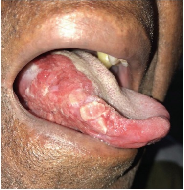
A O principal exame a ser solicitado é a tomografia cervical. O tratamento de escolha é quimioterapia.
B Não são necessários exames complementares. A conduta recomendada para o caso é a eliminação de fatores de risco, como o tabagismo.
C Devem ser solicitados nasofibrolaringoscopia, endoscopia digestiva alta e tomografia computadorizada de face, pescoço e tórax. O tratamento de escolha é cirúrgico.
D Deve-ser realizar pesquisa de HPV e tomografia computadorizada cervical. O tratamento de escolha pode ser cirúrgico ou radioterapia.
Questão 245 · Mastologia · 4000197006Mulher de 83 anos com antecedentes de hipertensão arterial e diabetes, apresentava lesão de 0,4 cm em re gião malar direita, há 6 meses. Foi submetida à biópsia excisional, com o seguinte resultado anatomopatológico: Tipo histológico – melanoma extensivo super cial. Margens cirúrgicas periféricas e profunda – coincidentes com a lesão. Espessura máxima (Breslow): 1,9 mm. Não foram detectadas ulceração, microsatelitose, invasão angiolinfática, invasão perineural e regressão. Considerando o resultado da biópsia, selecione a alternativa com a conduta recomendada.
A Embora tenha indicação de ampliação de margens e esvaziamento cervical, devido à idade avançada e à presença de comorbidades, o melhor tratamento a ser realizado é a radioterapia.
B Deve-se realizar a ampliação de margens em 1 a 2 cm, associada à pesquisa de linfonodo sentinela.
C Está indicada a ampliação de margens em 1 cm, associada ao esvaziamento cervical.
D Não é necessária nenhuma conduta adicional no momento, uma vez que a lesão já foi totalmente ressecada, porém, pelo alto risco, a paciente deve realizar seguimento oncológico a cada 12 meses para avaliar presença de recidivas ou novas lesões.
Questão 246 · Mastologia · 4000197005Assinale a alternativa que faz referência a estruturas que pertencem exclusivamente à supraglote.
A Bandas ventriculares, valécula e epiglote.
B Aritenoide, área pós-cricoide e ádito laríngeo.
C Prega vocal, ventrículo e pecíolo da epiglote.
D Prega ariepiglótica, aritenoide e banda ventricular.
Questão 247 · Mastologia · 4000197004Sobre a epidemiologia do câncer de cabeça e pescoço, assinale a alternativa correta.
A Os indivíduos do sexo masculino são os mais afetados e o câncer de boca é o tipo mais prevalente na população brasileira, cuja incidência ainda é crescente mesmo com a conscientização da população quanto aos fatores de risco.
B O HPV tem comprovada relação na carcinogênese dos tumores da orofaringe e já é o principal fator etiológico envolvido na gênese dos tumores dessa topografia em todo o mundo.
C O tabagismo e o etilismo ainda são os fatores de risco mais preponderantes e o combate a esses maus hábitos não deve ser incentivado durante o tratamento, para que o paciente não apresente quadro de abstinência que possa atrasar ou interromper a terapêutica.
D As mulheres são preferencialmente acometidas pelo câncer da nasofaringe que não tem relação com o tabagismo e o etilismo, menos frequentes na parcela da população com este histórico.
Questão 248 · Mastologia · 4000197003Mulher de 43 anos apresenta história com 6 meses de evolução: cansaço, dores musculares difusas, irritação, choro fácil, palpitações, tremores de extremidades e aumento do hábito intestinal. Os familiares também notaram emagrecimento e impressão de aumento de volume na região anterior do pescoço. Exame clínico: bom estado geral, corada, eupneica, não agitada FC 100 bpm, PA 120x80 mmHg. Exoftalmo e positivos. Aumento difuso cervical anterior com apagamento da fúrcula e dos contornos dos músculos esternocleidomastoideos. À palpação, glândula tireoide aumentada difusamente em cerca de 3 vezes o tamanho normal, móvel à deglutição, sem nódulos caracterizáveis. Assinale a alternativa que contém o diagnóstico clínico provável e a conduta recomendada.
A Tireotoxicose em bócio difuso. Introduzir beta bloqueador ou similar para controle da manifestação periférica do hipertireoidismo e medicamento anti-tireoidiano; prosseguir investigação com exames laboratoriais (hormônios tireoidianos, anticorpos anti-tireoidianos, TRAB) e exames de imagem.
B Doença de Graves com hipertireoidismo descompensado; a paciente encontra-se em tempestade tireotóxica. Internar para tratamento clínico urgente com medicação anti-tireoidiana para evitar possíveis eventos decorrentes da taquiarritmia cardíaca.
C Hipertireoidismo em doença de Plummer. Internar para tratamento definitivo com radioiodoterapia ou com tratamento operatório.
D Tireotoxicose em doença de Graves. Prosseguir a investigação com USG, cintilografia com Tecnécio e os seguintes exames laboratoriais: T4 livre, TSH e anticorpo anti-receptor de TSH, anticorpo anti-peroxidase, anticorpo anti-tireoglobulina, hemograma completo, função renal e hepática; devido ao risco de falsear os resultados, o tratamento clínico apenas poderá ser iniciado após a coleta dos exames.
Questão 249 · Mastologia · 4000197002Mulher de 53 anos, ex-tabagisa e ex-etilista, com cessação dos hábitos há mais de 30 anos. Há 8 anos foi submetida a tratamento cirúrgico de condrossarcoma de baixo grau em cabeça do fêmur. Queixa-se de aumento do volume cervical anterior há 8 meses e de disfagia (engasgos) para alimentos sólidos há cerca de 3 meses. Exame clínico: aumento discreto de volume cervical anterior; à palpação, múltiplos nódulos em ambos os lobos tireoidianos, nódulos dominantes à esquerda e não se palpa o limite inferior do lobo esquerdo, mesmo com a deglutição; pequeno desvio da traqueia para a direita. Ultrassonogra a de tireoide: volume total estimado em 60 cm³; nódulos em ambos os lobos; N1 à direita em terço médio medindo 2,5x1,5x1,7 cm; N2 à esquerda em terço inferior medindo 6,5x4,6x 3,4 cm com pequena insinuação ao mediastino. Punção aspirativa por agulha na: N1 nódulo à direita – Bethesda II; N2 nódulo à esquerda – Bethesda IV. Endoscopia digestiva alta: sem alterações significativas. Quanto à condução do caso, escolha a alternativa correta.
A A paciente não é candidata para o tratamento cirúrgico devido ao antecedente oncológico. Tem indicação para tratamento alternativo com ablação térmica por rádio frequência ou laser.
B A paciente é candidata para o tratamento cirúrgico devido ao bócio com volume superior a 30 cm³ e aos sintomas de compressão. Prosseguir a investigação da disfagia com pHmetria, manometria esofágica e RX contrastado do esôfago, do estômago e do duodeno.
C A paciente é candidata para o tratamento cirúrgico. Tem como indicações: bócio com componente mergulhante, compressão extrínseca sintomática da via aerodigestória superior e suspeita para malignidade.
D Ainda não se pode decidir o tipo de tratamento – se clínico, cirúrgico ou alternativo. Prosseguir a investigação com teste molecular genético em citologia de tireoide.
Questão 250 · Mastologia · 4000197001Mulher de 38 anos, sem antecedentes de morbidade, professora, 3 gestações com partos normais. Achado d e exame de rotina: nódulo 1,2 cm em lobo direito da tireoide. Ultrassonogra a: sólido, muito hipoecogênico, contornos irregulares e com focos ecogênicos de permeio sugerindo microcalci cações, sem linfonodos atípicos. Punção aspirativa por agulha fina: Bethesda V. Exames laboratoriais: T4 livre normal e TSH 6,5 (0,40–5,0), níveis de auto-anticorpos TPO e anti-tireoglobulina positivos e muito elevados. Assinale a alternativa com a conduta mais indicada.
A Vigilância ativa com terapia de supressão hormonal.
B Tratamento cirúrgico com tireoidectomia total.
C Tratamento cirúrgico com tireoidectomia parcial incluindo lobo direito e istmo, e linfadenectomia cervical recorrencial à direita.
D Tratamento com ablação química por etanol ou térmica por rádio frequência ou laser.
Questão 251 · Mastologia · 4000197000Homem de 60 anos é portador de carcinoma de borda anterolateral à direita da língua, com extensão para a face ventral e o assoalho adjacentes e metástases para linfonodos cervicais. No intra-operatório, foram identi cados linfonodos suspeitos em: região submentoniana abaulando os músculos milo-hioides, loja submandibular direita, na junção entre a veia jugular interna direita e o nervo espinal acessório, entre o osso hioide e a cartilagem cricoide à direta e em borda posterior do músculo esternocleidomastoideo direito, logo acima do osso da clavícula. Não foi ressecada nenhuma estrutura nobre do pescoço. Com relação aos reparos anatômicos e ao caso citado, selecione a alternativa correta.
A Os reparos anatômicos para o limite inferior do nível III pode ser tanto o músculo omo-hioide como o plano da cartilagem cricoide.
B O reparo anatômico para o limite superior do esvaziamento cervical será o ventre anterior do músculo digástrico.
C O paciente apresenta linfonodos suspeitos nos níveis I, II, IV e V à direita e nível IB à esquerda.
D O estadiamento do pescoço é N2a.
Questão 252 · Mastologia · 4000196999Homem de 60 anos é portador de carcinoma de borda anterolateral à direita da língua, com extensão para a face ventral e o assoalho adjacentes e metástases para linfonodos cervicais. No intra-operatório, foram identi cados linfonodos suspeitos em: região submentoniana abaulando os músculos milo-hioides, loja submandibular direita, na junção entre a veia jugular interna direita e o nervo espinal acessório, entre o osso hioide e a cartilagem cricoide à direta e em borda posterior do músculo esternocleidomastoideo direito, logo acima do osso da clavícula. Não foi ressecada nenhuma estrutura nobre do pescoço. Quanto ao esvaziamento cervical realizado, assinale a alternativa correta.
A O tipo de esvaziamento indicado é o seletivo eletivo.
B O nível IV direito não precisa ser incluído no esvaziamento nesse caso.
C O nível do nervo espinal acessório deve ser poupado do esvaziamento devido ao alto risco de déficit motor do músculo trapézio.
D O esvaziamento cervical que foi realizado é o radical modificado à direita.
Questão 253 · Mastologia · 4000196998Homem de 64 anos queixa-se de aumento de volume cervical em hemiface esquerda na região pré-auricular h á 6 anos. Apresentou PAAF com o diagnóstico de lesão formada por grande quantidade de conteúdo cístico, rica em células oxifílicas dispostas em lençóis e achados suspeitos para cistoadenoma papilífero linfomatoso. Quanto à hipótese diagnóstica, assinale a alternativa correta.
A É mais frequente em mulheres na menopausa e é caracterizado por bilateralidade.
B É uma neoplasia benigna de glândulas salivares também conhecida como tumor de Warthin.
C Por sua localização ser mais frequente em polo inferior, o risco de compressão do nervo facial e de seus ramos é mínimo.
D Por apresentar achados histopatológicos muito típicos, não consta em diagnóstico diferencial para outras lesões.
Questão 254 · Mastologia · 4000196997Sobre o papel do HPV na carcinogênese do câncer de orofaringe, assinale a alternativa correta.
A Tem prognóstico semelhante ao dos tumores relacionados ao tabagismo.
B Deve ser tratado preferencialmente com quimioterapia e radioterapia por apresentar melhor resposta a estas modalidades de tratamento.
C Apresenta incidência aumentada, especialmente nos indivíduos jovens, mesmo nos não tabagistas.
D A má higiene oral é a principal condição associada à proliferação do vírus.
Questão 255 · Mastologia · 4000196996Sobre as lesões precursoras do câncer da boca, assinale a alternativa correta.
A As leucoplasias têm uma alta taxa de malignização e devem ser rapidamente removidas.
B Cessar o tabagismo não diminui a incidência dessas lesões.
C As eritroplasias são mais raras, porém tem maiores taxas de malignização.
D A queilite actínica dos lábios pode ser tratada com crioterapia, devido às baixíssimas taxas de malignidade associadas.
Questão 256 · Mastologia · 4000196995Lactente de 3 meses é encaminhado para avaliação devido a um nódulo cervical à direita. Paciente saudável, que apresenta desenvolvimento adequado para a fase e crescimento satisfatório. Ao exame clínico, há nódulo palpável em nível II à direita, junto ao músculo esternocleidomastoideo, endurecido, pouco móvel, medindo aproximadamente 2 cm. A mãe traz ultrassonogra a cervical que descreve lesão nodular e m músculo esternocleidomastoideo, achado compatível com diagnóstica e a conduta recomendada neste momento?
A Torcicolo congênito; fisioterapia.
B Torcicolo congênito; ressecção cirúrgica da fibrose.
C Linfonodomegalia reacional; seguimento.
D Cisto branquial; ressecção cirúrgica aos 2 anos de idade.
Questão 257 · Mastologia · 4000196994Na investigação diagnóstica de um paciente com metástase cervical de carcinoma epidermoide sem lesão primária evidente foi realizado o exame abaixo. Selecione a alternativa que melhor descreve o exame e o seu achado.

A Tomografia computadorizada com emissão de pósitrons com captação fisiológica em orofaringe.
B Ressonância magnética em T2 com gadolíneo, imagens sugestivas de tumor primário em orofaringe a esquerda.
C Tomografia computadorizada com contrate, imagem sugestiva de metástase em linfonodo retrofaríngeo.
D Tomografia computadorizada com emissão de pósitrons com captação sugestiva de tumor primário em loja amigdaliana esquerda.
Questão 258 · Mastologia · 4000196993Paciente de 25 anos com queixa de pirose e de regurgitação de longa data. A endoscopia digestiva alta demonstra esofagite grau Los Angeles B, sem hérnia de hiato. Ao exame clínico abdominal, sem dor à palpação ou visceromegalias. IMC: 31 kg/m². Após uso de esomeprazol em dose otimizada, apresentou melhora dos sintomas. Com relação ao caso, assinale a melhor alternativa.
A O diagnóstico de doença do refluxo gastroesofágico é provável e o paciente deverá ser encaminhado para tratamento cirúrgico.
B O diagnóstico de doença do refluxo gastroesofágico é provável e o paciente deverá realizar medidas comportamentais (dieta e perda de peso) como início do tratamento.
C O diagnóstico de doença do refluxo gastroesofágico pode ser considerado, havendo indicação formal para cirurgia bariátrica.
D O diagnóstico de doença do refluxo gastroesofágico pode ser considerado e existe indicação formal para tratamento endoscópico como ponte para tratamento cirúrgico.
Questão 259 · Mastologia · 4000196992Mulher de 18 anos, com queixa de regurgitação e disfagia baixa há 2 anos, atualmente ingerindo somente alimentos pastosos, vem sendo acompanhada em ambulatório psiquiátrico com suspeita de distúrbio alimentar. Ao exame clínico abdominal, sem dor à palpação ou visceromegalias. IMC: 20,2 kg/m². Após uso de omeprazol, não houve melhora dos sintomas. A endoscopia digestiva alta demonstra esofagite grau Los Angeles A, com pequena hérnia de hiato. No estudo radiológico contrastado, apresenta esôfago com estase e discreto grau de dilatação, com presença de ondas terciárias; manometria esofágica evidencia ausência de relaxamento do esfíncter esofágico inferior com aperistalse de corpo esofágico. Qual a hipótese diagnóstica mais provável e o tratamento recomendado?
A Megaesôfago; cardiomiotomia com fundoplicatura.
B Bulimia; otimização de medicação psiquiátrica.
C Megaesôfago; dilatação esofágica e aplicação de toxina botulínica.
D Doença do refluxo gastroesofágico; otimização do tratamento clínico.
Questão 260 · Mastologia · 4000196991Paciente de 60 anos, tabagista e etilista há 30 anos, durante exames de seguimento da doença do refluxo, realizou uma endoscopia digestiva alta com visualização de lesão a 36 cm da arcada dentária superior (ADS), com 1,0 cm de extensão, plana, ulcerada, associada ao esôfago de Barrett de 2 cm de extensão; a biópsia da lesão confirmou adenocarcinoma tipo difuso, indiferenciado. Realizados exames de estadiamento (tomogra a computadorizada, PET-TC e ecoendoscopia), que demonstraram provável estadiamento cT2N1M0. Qual o melhor tratamento para este paciente?
A Neodjuvância seguido de gastrectomia total com esofagectomia distal e linfadenectomia.
B Neodjuvância seguido de esofagectomia subtotal com gastrectomia polar e linfadenectomia.
C Radioterapia e quimioterapia exclusivamente.
D Esofagectomia subtotal com gastrectomia polar e linfadenectomia.
Questão 261 · Mastologia · 4000196990Paciente de 75 anos, portador de carcinoma espinocelular de terço médio do esôfago, submetido ao tratamento neoadjuvante com quimioradioterapia. Está no sexto pós-operatório de esofagectomia por toracoscopia e anastomose cervical. Após uma crise de tosse, apresentou abaulamento na região cervical com en sema supraclavicular, com alteração de voz, sem dispneia. Solicitada radiogra a de tórax sem evidências de pneumotórax, somente presença de pequeno pneumomediastino. Qual a melhor hipótese diagnóstica e o exame a ser solicitado?
A Hematoma cervical; endoscopia de urgência.
B Pneumomediastino residual; tomografia computadorizada de tórax.
C Fistula traqueal; broncoscopia.
D Fistula da anastomose cervical; tomografia computadorizada de pescoço e tórax.
Questão 262 · Mastologia · 4000196989Homem de 65 anos tem hipertensão arterial sistêmica e diabetes melito tipo 2 controladas e se queixa de epigastralgia e emagrecimento de 6 kg nos últimos 6 meses. Endoscopia digestiva alta mostrou lesão úlcero-in ltrativa avançada de 6 cm de diâmetro, em pequena curvatura de antro, cuja biópsia evidenciou adenocarcinoma moderadamente diferenciado. Tomogra a de tórax, abdome e pelve descreveu somente a lesão na parede gástrica e negativa para metástases. Foi submetido à gastrectomia, porém o cirurgião considerou o tratamento R2. De acordo com a edição, na classificação R para doença residual, o que significa R2?
A Tumor microscópico dentro de uma margem de 1 mm.
B Tumor microscópico dentro de uma margem de 2 mm.
C Tumor visível macroscopicamente nas margens.
D Sem tumor residual macroscópico.
Questão 263 · Mastologia · 4000196988Mulher de 20 anos, sem comorbidades, várias crises de dor, distensão abdominal e vômitos. Exame clínico mostra várias pequenas manchas escurecidas em lábios e palma das mãos. A história familiar aponta pai e irmão com manchas semelhantes. Endoscopia digestiva alta mostra lesão volumosa pediculada na 3ª porção duodenal. Anatomopatológico: hamartoma. Tomogra a de tórax, abdome e pelve descreve uma lesão de 7 cm de diâmetro dentro do duodeno, próximo ao ângulo de Treitz, com dilatação do delgado à montante, sugerindo crises de intossucepção. Diante deste quadro, qual a hipótese diagnóstica mais provável?
A Síndrome de polipose juvenil.
B Síndrome de Peutz-Jeghers.
C HNPCC ou síndrome de Lynch.
D Neurofibromatose.
Questão 264 · Mastologia · 4000196987Mulher de 65 anos apresentou recentemente episódio de pancreatite aguda leve. Exame de ressonância magnética identi cou um cisto que mede 3,5 cm, localizado na cabeça do pâncreas e que se comunica com ducto pancreático principal, que está dilatado, medindo até 7 mm. Considerando a principal hipótese diagnóstica, dentre as opções abaixo, qual melhor conduta para esta paciente?
A Ultrassonografia endoscópica.
B Repetir a ressonância magnética em um ano.
C Ultrassonografia endoscópica com alcoolização do cisto.
D PET-CT com FDG (glicose marcada com radio-fármaco).
Questão 265 · Mastologia · 4000196986Homem de 72 anos, em 8º dia de pós-operatório de gastroduodenopancreatectomia com reconstrução e m alça única à alimentares sólidos. Qual a hipótese diagnóstica mais provável?
A Obstrução da anastomose gastrojejunal.
B Hérnia interna.
C Gastroparesia.
D Pancreatite aguda.
Questão 266 · Mastologia · 4000196985Homem de 60 anos, com achado incidental na vesícula biliar de uma lesão hipoecogênica, sem sombra acústica posterior, fixa, porém restrita à mucosa da vesícula, compatível com pólipo. A lesão mede 15 mm. Qual a melhor conduta neste momento?
A Colecistectomia.
B Colecistectomia com ressecção ampliada do leito hepático e linfadenectomia do hilo hepático.
C Colangiografia endoscópica.
D Ultrassonografia endoscópica com punção biópsia.
Questão 267 · Mastologia · 4000196984Homem de 54 anos, com diagnóstico de colangiocarcinoma intra-hepático de 8,7 cm em lobo direito, é submetido à hepatectomia direita, à linfadenectomia hilar e à drenagem da cavidade sem intercorrências. Apresentou boa evolução, até que, no 3º dia pós-operatório, o dreno abdominal mostrou-se com secreção levemente esverdeada e aumento do volume (150 mL). Mantém-se estável, sem drogas vasoativas e afebril. Ao exame clínico, abdome flácido e indolor. Os exames laboratoriais mostraram leucócitos de 10.300/mm³ e discreta elevação da proteína C-reativa. A dosagem sérica de bilirrubina é de 0,7 mg/dL e a do dreno abdominal de 3,2 mg/dL. Com relação ao caso, é correto afirmar que:
A o paciente por definição não possui fístula biliar pós-hepatectomia.
B o paciente tem fistula biliar grau C, devendo ser indicada reabordagem cirúrgica para limpeza de cavidade abdominal.
C o paciente tem fístula biliar grau A, devendo ser mantida a observação clínica.
D está indicada drenagem da cavidade por radiologia intervencionista e introdução de antibioticoterapia de amplo espectro.
Questão 268 · Mastologia · 4000196983Homem de 61 anos, com diagnóstico de cirrose hepática por uso de álcool (3 cervejas/dia por 27 anos; parou há 3 anos), está em acompanhamento com clínico. Em ultrassonogra a de abdome foi evidenciado nódulo periférico de 4 cm em segmento 6. Realizou tomogra a de abdome com contraste que mostrou lesão hipervascular no segmento 6 medindo 4,1 cm, com clareamento rápido do meio de contraste. Exames laboratoriais: hemoglobina = 11,7 g/dL, plaquetas = 110.000/mm³, bilirrubinas totais = 1,2 mg/dL, bilirrubina direta = 0,9 mg/dL, creatinina = 1,0 mg/dL, albumina = 3,5 g/dL, tempo de protrombina = 88% (INR= 1,2), sódio = 137 mEq/L, alfafetoproteína = 343 ng/mL. Child-Pugh = A6, Model of End-Stage Liver Disease (MELD) = 9. Endoscopia digestiva alta com gastrite moderada de antro. Com base nos dados clínicos e laboratoriais, qual o melhor tratamento para o paciente?
A Quimioembolização arterial.
B Radiofrequência do nódulo hepático.
C Encaminhamento para transplante de fígado.
D Hepatectomia (ressecção regrada do segmento 6).
Questão 269 · Mastologia · 4000196982Mulher de 59 anos é portadora de hipertensão arterial controlada com medicação e em uso de hipoglicemiante oral há 15 anos. Atualmente com peso de 120 kg e IMC 45 kg/m². Realiza suas atividades diárias com limitações devido ao peso. Faz seguimento clínico regular, com falha terapêutica após múltiplos tratamentos com medicação e dieta. Qual a melhor opção terapêutica para o tratamento da obesidade neste caso?
A Incrementar o tratamento da diabetes com o uso de insulina.
B Indicar cirurgia bariátrica.
C Manter o seguimento clínico, pois é uma forma refratária de obesidade.
D Manter o tratamento clínico com implementação de dieta altamente restritiva.
Questão 270 · Mastologia · 4000196981Paciente de 42 anos, submetida à Gastrectomia Vertical há 1 ano para tratamento de obesidade grave, evoluindo com perda expressiva de peso. Há 6 meses com queixa recorrente de vômitos pós-alimentares, pirose, regurgitação e tosse noturna, com impacto na sua qualidade de vida. Realizou endoscopia digestiva alta com diagnóstico de esofagite erosiva grau C. Vem mantendo uso contínuo de inibidor de bomba de próton em alta dose. A avaliação radiológica com estudo contrastado evidenciou estreitamento na transição entre corpo e antro do estômago. A conduta recomendada neste momento é:
A trocar o tipo de Inibidor de Bomba de Próton.
B manter dieta líquida para facilitar o esvaziamento gástrico.
C solicitar pHmetria esofágica de 24 horas para confirmação do refluxo gastroesofágico.
D indicar cirurgia revisional com conversão para gastroplastia com derivação em Y
Questão 271 · Mastologia · 4000196980Homem de 47 anos, IMC 55 kg/m², submetido a Bypass Gástrico em consulta ambulatorial com mal-estar, dor abdominal e taquicardia. Realizou tomogra a computadorizada de abdome com achado de fístula na anastomose gastrojejunal com coleção bem delimitada adjacente ao estômago excluso, com volume estimado em 20 mL. Após hidratação venosa e antibioticoterapia, o paciente referiu melhora dos sintomas, com FC = 90 bpm e PA = 120x75 mmHg. Assinale a melhor conduta para o tratamento da fístula neste momento.
A Laparotomia exploradora para limpeza da cavidade e sutura da fístula do estômago excluso.
B Endoscopia para avaliação da fístula e tratamento associado.
C Drenagem da coleção guiada por ultrassonografia.
D Lavagem da cavidade e fechamento da fístula por via laparoscópica.
Questão 272 · Mastologia · 4000196979Mulher de 74 anos apresenta-se com dor abdominal em anco esquerdo/fossa ilíaca esquerda (FIE) de forte intensidade, inicialmente leve, com piora importante há 24 horas. Ao exame clínico tem T 37,8°C, FC 100 bpm, dor à palpação difusa do abdome com descompressão positiva em FIE. Como proceder à investigação diagnóstica?
A Tomografia computadorizada de abdome.
B Colonoscopia com preparo retrógrado.
C Colografia por tomografia (colonoscopia virtual).
D Laparoscopia diagnóstica.
Questão 273 · Mastologia · 4000196978Homem de 72 anos apresenta adenocarcinoma de cólon ascendente com 5 cm de diâmetro, sem invasão de órgãos adjacentes ou linfonodomegalias no território de drenagem linfonodal. Não apresenta metástases aos exames de estadiamento. Exames laboratoriais mostram CEA 6,5 mg/dL e Hb = 7,0 g/dL. Assinale a alternativa correta.
A Deve-se iniciar a reposição de ferro por via oral por duas semanas antes da cirurgia.
B Está indicado o tratamento neoadjuvante para reduzir a recidiva local.
C A colectomia segmentar com ligadura dos vasos cólicos direitos e ramo direito da cólica média é o tratamento cirúrgico de escolha.
D A ligadura da veia mesentérica superior é o primeiro passo da linfadenectomia na cirurgia oncológica dessa região.
Questão 274 · Mastologia · 4000196977Menina com 1 mês de idade apresenta massa suprarrenal à esquerda de 4 cm na ultrassonogra a de abdome. Tomogra a detecta massa sólida com calci cações na loja suprarrenal, deslocando o rim direito inferolateralmente sem distorção pielocalicial. Presença de metástases hepáticas. O exame clínico revela múltiplos nódulos subcutâneos. Qual é a alternativa correta quanto ao provável diagnóstico?
A Tumor de Wilms.
B Feocromocitoma.
C Carcinoma de suprarrenal.
D Neuroblastoma.
Questão 275 · Mastologia · 4000196976Recém-nascido do sexo masculino apresenta tumoração cística no assoalho da boca que di culta a sucção. Também apresenta lesões semelhantes nas regiões cervical e submandibular. Qual é o diagnóstico provável?
A Malformação linfática.
B Linfoma.
C Língua presa.
D Rânula.
Questão 276 · Mastologia · 4000196975Menino, na segunda semana de vida, logo após a mamada começa a apresentar vômitos alimentares, não corados de bile e em jato. Apesar dos vômitos intensos, a criança apresenta apetite voraz. Ao exame do abdome, observam-se ondas peristálticas no epigástrio e estrutura sólida de cerca de 1,5 cm, arredondada e bem delimitada, palpável em quadrante superior direito. Qual é a alternativa correta quanto ao provável diagnóstico?
A Estenose hipertrófica de piloro.
B Duplicação gástrica.
C Pâncreas anular.
D Refluxo gastroesofágico.
Questão 277 · Mastologia · 4000196974Criança com 2 anos apresenta enterorragia maciça e choque hipovolêmico. Depois de administrados solução siológica e concentrado de hemácias, o quadro se estabiliza. Após recuperação hemodinâmica, foi realizada ultrassonogra a de abdome, sem alterações. Como poderá ser feita a confirmação diagnóstica desta patologia?
A Mielograma.
B Mapeamento isotópico com tecnécio.
C Realização de endoscopia digestiva alta.
D Realização de tomografia e ressonância magnética de abdome.
Questão 278 · Mastologia · 4000196973Neonato com 4 dias de vida apresenta vômitos biliosos, distensão abdominal e radiogra a de abdome com padrão obstrutivo. Foi operado, sendo identificada atresia intestinal. Qual procedimento é obrigatório durante o ato cirúrgico de qualquer atresia intestinal?
A Realização de ostomias.
B Avaliação de possíveis obstruções distais.
C Ressecção do coto proximal dilatado.
D Apendicectomia.
Questão 279 · Mastologia · 4000196972Neonato, idade gestacional de 36 semanas, apresenta salivação aerada abundante nas primeiras horas de vida e crises de tosse com queda de saturação na oximetria de pulso. Assinale a alternativa que descreve a principal hipótese diagnóstica.
A Atresia de coanas.
B Hérnia diafragmática congênita.
C Atresia de esôfago.
D Malformação adenomatoide cística.
Questão 280 · Mastologia · 4000196971Menino de 7 anos, previamente hígido, foi admitido no Pronto Atendimento com quadro de dor abdominal de início há 2 dias, com piora progressiva e vômitos. Ao exame clínico, encontrava-se em regular estado geral, subfebril (T: 37,7°C) e com sinais de irritação peritoneal mais localizada em quadrante inferior direito. Foi avaliado pelo cirurgião, que indicou tratamento cirúrgico com hipótese diagnóstica de apendicite aguda. No intra-operatório, foi identi cado moderado volume de secreção turva na cavidade, porém sem sinais inflamatórios ou outras alterações no apêndice cecal ressecado. Com base no quadro clínico e nos achados cirúrgicos, assinale a alternativa que descreve a hipótese diagnóstica mais provável.
A Gastroenterocolite aguda.
B Peritonite bacteriana espontânea.
C Diverticulite de Meckel.
D Duplicação de apêndice.
Revisar: possível letra faltando em enunciado
Questão 281 · Mastologia · 4000196970Lactente masculino, com 9 meses de idade, apresenta segundo episódio de infecção do trato urinário. Ao exame clínico, encontra-se em bom estado geral, com jato urinário adequado e função renal preservada (dosagem de ureia e creatinina séricas normais). Durante a internação para tratamento da infecção, foi solicitada ultrassonografia das vias urinárias, que evidenciou hidronefrose moderada à direita. Qual a alternativa que descreve corretamente o diagnóstico mais provável?
A Estenose de junção ureterovesical direita.
B Displasia renal direita.
C Estenose de junção ureteropiélica direita.
D Válvula de uretra posterior.
Questão 282 · Mastologia · 4000196969Neonato a termo, no 2º dia de vida, apresenta vômitos biliosos desde o nascimento. Assinale a alternativa que contém duas possíveis hipóteses diagnósticas compatíveis com a apresentação clínica em questão.
A Atresia de esôfago com fístula distal e megacólon congênito.
B Estenose hipertrófica de piloro e atresia ileal.
C Membrana antral e peritonite meconial.
D Suboclusão duodenal e atresia jejunal.
Questão 283 · Mastologia · 4000196968Adolescente de 14 anos com história de dor no testículo direito há 8 horas, associado a edema e hiperemia d a parede do escroto. Devido à impossibilidade de realizar ultrassonogra a com doppler de emergência, optou-se por realizar exploração cirúrgica. Achado intra- operatório na imagem apresentada. Assinale a alternativa correta em relação à hipótese diagnóstica e o tratamento recomendado.
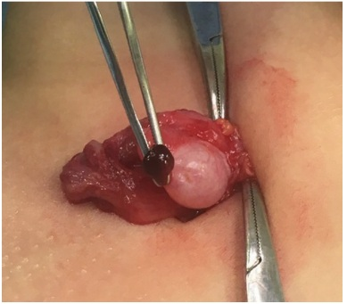
A Torção de hidátide de Morgagni (apêndice testicular); exerese da lesão.
B Teratoma do testículo; orquiectomia parcial e estadiamento com tomografia de abdome e tórax, e dosagem de marcadores tumorais.
C Cisto de epidídimo; abertura e marsupialização do cisto.
D Teratoma do testículo; orquiectomia total e estadiamento com tomografia de abdome e tórax, e dosagem de marcadores tumorais.
Questão 284 · Mastologia · 4000196967Lactente do sexo feminino de 8 meses de vida, sem comorbidades e eutró ca, iniciou há 4 dias quadro de d o r abdominal em cólica associada à distensão progressiva. Há 2 dias está apresentando vômitos, hipoatividade e febre. Apresentou também 2 episódios de enterorragia com muco associado nas últimas evacuações. Após avaliação clínica, realizou ultrassonogra a, sendo indicada cirurgia de urgência, onde foi observado o achado mostrado a seguir (imagens apresentadas). Assinale a alternativa correta em relação ao caso clínico descrito acima.


A O diagnóstico é de enterocolite e a cirurgia foi desnecessária nesse caso.
B O diagnóstico é de invaginação intestinal, o diagnóstico de linfoma intestinal como causa da invaginação é importante nessa faixa etária do paciente e deve ser afastado.
C Um exame de enema opaco estaria indicado nesse caso, a fim de confirmar o diagnóstico e realizar a redução incruenta da invaginação.
D O diagnóstico é de invaginação intestinal, a redução cruenta está indicada devido ao tempo de evolução associado à clínica de hipoatividade, de febre e de enterorragia.
Revisar: possível letra faltando em enunciado
Questão 285 · Mastologia · 4000196966Lactente de 2 anos, sexo feminino, previamente hígida e sem comorbidades, é levada ao pronto-socorro infantil com história de evacuações com sangue há 1 dia. Pais negam antecedentes familiares de doenças intestinais. Ao exame clínico, observa-se lesão escurecida, prolapsada através da borda anal, que apresenta base pedunculada junto à mucosa do reto anterior (imagens apresentadas). Assinale a alternativa CORRETA em relação ao diagnóstico mais provável e ao tratamento recomendado.

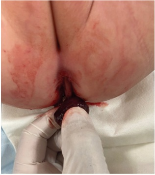
A Pólipo hamartomatoso; exerese para confirmação histopatológica e seguimento ambulatorial.
B Pólipo adenomatoso; exerese para confirmação histopatológica e alta sem necessidade de seguimento.
C Adenocarcinoma; exerese para confirmação diagnóstica e quimioterapia neoadjuvante para programação de ressecção.
D Hemangioma intestinal; exerese para confirmação diagnóstica e alta sem necessidade de seguimento.
Questão 286 · Mastologia · 4000196965Criança de 3 anos, previamente hígida, apresenta aumento do volume abdominal em esquerdo, associado à dor abdominal e presença de varicocele à esquerda. Foi submetida à investigação com exame de imagem que evidenciou volumosa massa renal esquerda com aspecto sugestivo de nefroblastoma (tumor de Wilms). Assinale a alternativa correta.
A A presença de varicocele pode ser um sinal de obstrução da veia renal por um trombo tumoral.
B A presença de varicocele não tem relação com nefroblastoma.
C A presença de trombo tumoral tem pouca importância para o planejamento cirúrgico do nefroblastoma.
D A presença de trombo tumoral tem pouca importância no estadiamento do nefroblastoma.
Questão 287 · Mastologia · 4000196964Lactente masculino, com 2 meses de idade, está apresentando icterícia, colúria e acolia fecal desde a segunda semana de vida. Nasceu a termo, sem antecedentes pré-natais relevantes. Apresentou boa evolução, recebendo alta hospitalar no 3º dia de vida. Ao exame clínico: bom estado geral, ictérico, pesando 4,4 kg. O exame abdominal evidencia fígado endurecido palpável a 3 cm do rebordo costal direito e baço palpável na altura do rebordo costal esquerdo. Exames laboratoriais: TGO = 89 U/L; TGP = 73 U/L; GamaGT = 284 U/L; Bilirrubina total = 7,9 mg/dL; Bilirrubina direta = 7,1 mg/dL; INR = 1,2. Assinale a alternativa que descreve a hipótese diagnóstica mais provável.
A Hepatite neonatal.
B Icterícia fisiológica.
C Atresia de vias biliares.
D Fibrose hepática congênita.
Questão 288 · Mastologia · 4000196963Com relação ao atendimento de pacientes queimados, fase aguda, em qual situação o cálculo de volume a ser infundido para reposição volêmica, baseado na fórmula de Parkland, sofre alterações?
A Queimaduras de primeiro grau em área superior a 50% da superfície corpórea.
B Queimaduras associadas a trauma crânio-encefálico.
C Queimaduras associadas a trauma torácico.
D Queimaduras de segundo e terceiro graus acometendo mais de 50% da superfície corpórea.
Questão 289 · Mastologia · 4000196962A cicatrização das feridas é estudada desde a antiguidade. Quais parâmetros definidos há mais de 2000 anos continuam sendo válidos ainda atualmente?
A Remoção de corpos estranhos e proteção da área cruenta.
B Tratamento dos ferimentos com líquidos quentes.
C Não fechamento primário de feridas abertas.
D Uso de pressão negativa sobre a ferida.
Questão 290 · Mastologia · 4000196961Quais eventos citados abaixo ocorrem na fase inflamatória da cicatrização e qual a sequência cronológica correta?
A Vasodilatação; migração de macrófagos; liberação de fibronectina.
B Vasoconstrição; vasodilatação; aumento de permeabilidade vascular.
C Migração de plaquetas; migração de fibroblastos; produção de colágeno.
D Vasodilatação; síntese de ácido hialurônico; adesão de neutrófilos.
Questão 291 · Mastologia · 4000196960Mulher tem uma ferida de cerca de 4 cm em área plana da face, região da bochecha. Indica-se enxertia de pele para a reparação do ferimento. Assinale a alternativa correta. Observação:
A O uso de enxerto de pele parcial fornece ao enxerto maior retração primária (imediatamente após sua retirada) e menor retração secundária (retração cicatricial).
B O uso de pele parcial do couro cabeludo é contraindicado por levar consigo os folículos pilosos e aumentar o risco de hipertricose na região.
C A escolha da área doadora deve levar em consideração a localização e a proximidade com a área receptora para fins de qualidade final do resultado.
D A imobilidade da pele enxertada deve ser garantida para que ocorra nutrição por embebição plasmática nas primeiras 24 horas.
Questão 292 · Mastologia · 4000196959A viabilidade de um retalho com componente cutâneo pode ser clinicamente avaliada por meio do teste de digitopressão. Assinale a alternativa que indica os achados clínicos observados quando há dificuldade no retorno venoso.
A Retalho pálido com reenchimento capilar normal.
B Retalho frio com reenchimento capilar preservado.
C Retalho normotérmico com reenchimento capilar lento.
D Retalho de coloração violácea com reenchimento capilar acelerado.
Questão 293 · Mastologia · 4000196958Paciente vítima de coice de cavalo dá entrada na sala de emergência consciente, com intenso sangramento oral e nasal. Após aspiração, observa-se que o sangramento é ativo e se origina na região maxilar. Tamponamento anterior sem sucesso. O trauma é localizado na região nasomaxilar, no terço médio da face, preservando o terço inferior da face. Além das medidas sistêmicas a serem adotadas, qual conduta recomendada em caso de instabilidade hemodinâmica?
A Arteriografia e embolização de vasos maxilares de urgência.
B Passagem de sonda de Foley por via nasal e insuflação do balão com tração.
C Injeção de hemostático tópico por via endonasal.
D Ligadura de artérias carótidas externas.
Questão 294 · Fatores de risco · 4000196954Com relação aos modelos preditores de risco de câncer de mama, assinale a alternativa correta.
A O IBIS ou Tyrer-Cuzick inclui os seguintes fatores de risco: idade, histórico reprodutivo, história familiar e história de biópsias de mama anteriores.
B O CanRisk (BOADICEA v5) inclui os seguintes fatores de risco: idade, antecedente pessoal de câncer de mama, história familiar e história de biópsias de mama anteriores.
C O modelo de GAIL inclui os seguintes fatores de risco: idade, idade da menarca, história familiar de câncer de mama e história familiar de outros tipos de câncer.
D O modelo de Claus inclui os seguintes fatores de risco: história familiar de câncer, biópsia de mama prévias e histórico reprodutivo.
Questão 295 · Histologia · 4000196953Sobre os carcinomas
A Apresentam o mesmo potencial de progressão.
B São similares geneticamente.
C Têm as mesmas características histológicas.
D Nenhuma das alternativas anteriores está correta.
Questão 296 · Histologia · 4000196952Sobre os carcinomas ductais
A Estudos moleculares confirmam a existência de 3 graus diferentes.
B São graduados de acordo com o grau nuclear.
C Há ótima concordância entre patologistas na avaliação do grau.
D Nenhuma das alternativas anteriores está correta.
Questão 297 · Histologia · 4000196951Sobre os biomarcadores nos carcinomas ductais
A Até 35% têm superexpressão de HER2.
B A concordância entre biópsia e peça cirúrgica é baixa.
C Não devem ser avaliados nos carcinomas
D O subtipo triplo-negativo não é observado.
Questão 298 · Histologia · 4000196950Sobre os carcinomas ductais
A São geneticamente muito diferentes do carcinoma invasivo associado.
B São molecularmente similares ao tecido mamário circunjacente.
C O perfil imunoistoquímico é similar ao do carcinoma invasivo associado.
D Nenhuma das alternativas anteriores está correta.
Questão 299 · Histologia · 4000196949Sobre os carcinomas ductais
A A transição para invasão estromal depende exclusivamente das células epiteliais neoplásicas.
B Os TILs estão mais associados aos CDIS de baixo grau.
C A expressão gênica dos componentes dos microambientes é diferente entre os CDIS e carcinomas invasivos.
D Nenhuma das alternativas anteriores está correta.
Questão 300 · Tratamento cirúrgico · 4000196948Com relação à biópsia do linfonodo sentinela em câncer de mama, assinale a alternativa correta.
A Trata-se de procedimento validado e minimamente invasivo na abordagem cirúrgica axilar.
B Pode ser empregada em todos os estádios clínicos do câncer de mama.
C Não deve ser realizado em pacientes submetidas à quimioterapia neoadjuvante.
D A presença de metástase em linfonodo sentinela deve ser sempre seguida de dissecção axilar completa.
Questão 301 · Câncer de mama · 4000196947Com relação à estratégia de prevenção primária no câncer de mama, assinale a alternativa correta.
A Mudanças de estilo de vida (exercício físico e hábitos alimentares) apresentam impacto significativo na prevenção.
B A utilização de anti-hormônios como o Tamoxifeno apresenta impacto importante na prevenção e pode reverberar também na qualidade de vida da paciente.
C A cirurgia redutora de risco é uma estratégia importante no cenário preventivo, zerando o risco do desenvolvimento de câncer de mama no decorrer da vida.
D A indicação de adenectomia redutora de risco está claramente demonstrada entre as pacientes mutadas BRCA 1, em decorrência do impacto na sobrevida global.
Questão 302 · Classif icação · 4000196946Com relação às assinaturas genéticas, assinale a alternativa correta.
A O estudo RxPONDER avaliou pacientes com até 3 linfonodos comprometidos e demonstrou que a quimioterapia pode ser descartada nestes casos, tanto na pré quanto na pós-menopausa.
B As indicações concentram-se em pacientes portadoras de câncer de mama inicial que expressam receptor hormonal e não super expressam a proteína Her2 +.
C A assinatura deve ser pedida, protocolarmente, em todos os casos de câncer de mama.
D Nas pacientes com tumores de mama mais agressivos, tais como o triplo negativo e o Her2+, a assinatura é fundamental para descalonar o tratamento.
Questão 303 · Câncer de mama · 4000196945Mulher de 48 anos com queixa de nódulo de mama há 1 mês. Em relação à conduta recomendada, assinale a alternativa correta.
A Exame clínico das mamas e solicitação de mamografia e ultrassonografia.
B Punção aspirativa por agulha fina orientada pela palpação.
C Exerese cirúrgica do nódulo com exame intraoperatório de congelação.
D Biópsia percutânea por agulha grossa do nódulo (core biópsia) guiada por ultrassonografia.
Questão 304 · Biópsias da mama · 4000196944Mulher de 49 anos realizava mamogra a de rastreamento com seu ginecologista regularmente; a mais recente apresentou calci cações pleomór cas agrupadas em QSL de mama esquerda, classificadas como BIRADS 4. Foi submetida à mamotomia guiada por estereotaxia. Assinale a alternativa em que há indicação de ampliação cirúrgica.
A Adenose esclerosante.
B Hiperplasia pseudoangiomatosa do estroma.
C Hiperplasia de células colunares.
D Hiperplasia lobular atípica.
Revisar: possível letra faltando em enunciado
Questão 305 · Exames complementares · Quadro clínico · 4000196943Homem de 35 anos procura o consultório médico com queixa de aumento de volume mamário predominantemente à direita, associado à dor. Os sintomas iniciaram-se há 3 meses. Nega uso de esteroides anabolizantes, medicamentos e álcool. Ao exame clínico, apresenta discreto abaulamento em região retroareolar à direita. Qual o exame subsidiário recomendado para avaliação da principal suspeita clínica?
A Ultrassonografia, devido à alta densidade da mama masculina.
B Ressonância de mama, pois tem maior sensibilidade e especificidade.
C O exame clínico é suficiente para fechar o diagnóstico.
D Mamografia.
Questão 306 · Tumor Phyllodes · 4000196942Mulher de 32 anos apresentava nódulo em mama esquerda com crescimento rápido em cerca de 4 meses. Foi submetida à biópsia de agulha grossa com resultado de lesão broepitelial, podendo corresponder a phyllodes phyllodes borderline Com base no NCCN 2022, assinale a alternativa que indica a conduta recomendada.
A Quimioterapia adjuvante, por se tratar de variante
B Radioterapia adjuvante, devido à cirurgia conservadora.
C Ampliação de margens por margem exígua.
D Tamoxifeno.
Questão 307 · BIRADS · 4000196941Mulher de 39 anos, com implantes mamários de silicone há 10 anos, procura seu mastologista pois est á preocupada com a data de validade dos implantes. Ao exame clínico, não há sinais de contratura capsular, mas paciente quis saber se não havia sinais de ruptura dos implantes. O mastologista solicitou ressonância de mamas sem contraste, cujo resultado não mostrou alterações. Segundo o Birads 5ª edição, qual é a classificação deste exame?
A Birads 0.
B Birads 1.
C Birads 2.
D sem classificação de Birads.
Questão 308 · Tratamento cirúrgico · 4000196940Em relação às cirúrgias oncoplásticas (CO), é correto afirmar:
A diversos estudos demostram maiores chances de margens negativas na CO.
B todas as pacientes são candidatas à CO, exceto aquelas afetadas por tumores localmente avançados.
C a CO, além de melhorar o resultado estético, reduz as operações por margens comprometidas, motivo pelo qual a radioterapia resta dispensada.
D existem indicações bem específicas de CO; as pacientes que menos se beneficiam da CO são as portadoras de gigantomastia.
Questão 309 · Câncer de mama na gestante · 4000196939Com relação às pacientes gestantes com câncer de mama, assinale a alternativa que descreve o principal motivo relacionado à piora do prognóstico.
A Incidência de tumores mais agressivos quando comparados à população não gestante de mesma idade.
B Retardo no diagnóstico do câncer de mama.
C Impossibilidade de tratamento sistêmico até 20 semanas de gestação.
D A mãe não aceitar o diagnóstico em decorrência dos malefícios que o tratamento pode trazer para ela e para o feto.
Questão 310 · Fatores de risco · 4000196938A síndrome de Li-Fraumeni, causada por uma mutação do gene TP53, é responsável pela ocorrência de diversas neoplasias, entre elas o câncer de mama. A população brasileira apresenta casos de Síndrome de Li- Fraumeni causados por uma mutação especí ca, mais frequente em nosso país. Assinale a alternativa que corresponde à referida mutação do gene TP53?
A Mutação E380Q.
B Mutação R337H.
C Mutação Y537C.
D Mutação D538G.
Revisar: possível letra faltando em enunciado
Questão 311 · Imunoterapia · 4000196937A imunoterapia no tratamento de câncer de mama é uma modalidade em crescente investigação, especialmente no tratamento dos tumores com subtipo basal. A droga pembrolizumab, um imunoterápico que atua inibindo o PD-L1, foi recentemente aprovado pela ANVISA em qual cenário?
A Tratamento neoadjuvante para tumores triplo-negativos não metastáticos, independente da expressão de PD-L1.
B Tratamento neoadjuvante em tumores triplo-negativos não metastáticos, com expressão de PD-L1.
C Tratamento em tumores triplo-negativos metastáticos, sem expressão de PD-L1.
D Tratamento adjuvante de tumores triplo-negativos não metastáticos, com expressão de PD-L1.
Questão 312 · BIRADS · 4000196936Mulher de 39 anos, puérpera, com parto normal há 4 meses, refere aumento de volume mamário à esquerda desde a gestação. O obstetra justi cou-o como secundário à produção láctea. Com o acentuado aumento do volume, foi solicitado USG de mamas que mostrou nódulo arredondado, regular, hiperdenso, com sombra acústica posterior, medindo 6,5 cm em seu maior diâmetro; na axila, foram vistos linfonodos com espessamento da cápsula e perda do hilo gorduroso. Assinale a alternativa que corresponde ao diagnóstico mais provável?
A Galactocele.
B Câncer de mama.
C Fibroadenoma.
D Angiossarcoma.
Questão 313 · BIRADS · 4000196935Mulher de 39 anos, puérpera, com parto normal há 4 meses, refere aumento de volume mamário à esquerda desde a gestação. O obstetra justi cou-o como secundário à produção láctea. Com o acentuado aumento do volume, foi solicitado USG de mamas que mostrou nódulo arredondado, regular, hiperdenso, com sombra acústica posterior, medindo 6,5 cm em seu maior diâmetro; na axila, foram vistos linfonodos com espessamento da cápsula e perda do hilo gorduroso. Com relação à mamografia para esta paciente, assinale a alternativa correta.
A Pode ser realizada desde que seja utilizada proteção de chumbo em abdome e região cervical.
B Permite a individualização do nódulo e a identificação de suas características.
C Deverá ser solicitada após a inibição da lactação com cabergolina.
D Deve ser realizada após esvaziamento mamário (ordenha).
Questão 314 · BIRADS · 4000196934Mulher de 39 anos, puérpera, com parto normal há 4 meses, refere aumento de volume mamário à esquerda desde a gestação. O obstetra justi cou-o como secundário à produção láctea. Com o acentuado aumento do volume, foi solicitado USG de mamas que mostrou nódulo arredondado, regular, hiperdenso, com sombra acústica posterior, medindo 6,5 cm em seu maior diâmetro; na axila, foram vistos linfonodos com espessamento da cápsula e perda do hilo gorduroso. Com base no caso apresentado, assinale a alternativa correta.
A A imunoistoquímica mais provável é a luminal A.
B O fato de ser diagnosticado no puerpério não modifica o prognóstico.
C A amamentação não é contraindicada.
D O tratamento consiste em cirurgia
Questão 315 · Câncer de mama no homem · 4000196933Analise as afirmações abaixo sobre o câncer de mama masculino. I. A cada 100 mulheres diagnosticadas, apenas 3 homens são acometidos. II. Pode-se optar pela cirurgia conservadora, pois o estadiamento clínico costuma ser de tumor inicial, uma vez que o diagnóstico costuma ser precoce. III. A evolução oncológica mostra uma doença agressiva com pior prognóstico quando comparado ao câncer de mama feminino. IV. É considerado um sinal de alerta para mutação BRCA2. Assinale a alternativa correta.
A Há apenas uma afirmação correta.
B Há duas afirmações corretas.
C Há três afirmações corretas.
D Todas as afirmações são corretas.
Questão 316 · Doença de Paget · 4000196932Com relação à doença de Paget, assinale a afirmativa correta.
A É consequência do
B É um tipo frequente de câncer de mama que envolve a pele do mamilo e da aréola.
C Geralmente é bilateral, com indicação de ressonância nuclear magnética.
D Em cerca de 90% dos casos, é associada a carcinoma mamário invasivo ou
Questão 317 · Câncer de mama · 4000196931Em relação aos conhecimentos atuais sobre sarcomas mamários, assinale a alternativa correta.
A Em geral acomete mulheres nos extremos de idade.
B A linfadenopatia axilar e a descarga papilar são frequentes.
C Grupo heterogêneo de tumores mesenquimais, com tratamento agressivo e prognóstico reservado.
D A mastectomia radical modificada é o tratamento de escolha.
Questão 318 · Quadro clínico · 4000196930O carcinoma oculto de mama é definido como um carcinoma de sítio primário desconhecido, que se apresenta através de linfadenopatia axilar e cuja biópsia é histologicamente consistente com câncer de mama. Em relação ao carcinoma oculto, assinale a alternativa correta.
A O melhor método diagnóstico é mamografia associada ao USG de mama.
B A PAF deve ser realizada antes dos exames de imagem.
C A mastectomia é o tratamento de escolha.
D A ressonância de mama é um exame importante para o diagnóstico.
Questão 319 · Anatomia das mamas · 4000196929Assinale a alternativa que descreve limites anatômicos da mama.
A Linha axilar posterior e esterno.
B Linha axilar média e bainha do músculo reto abdominal.
C Primeiro espaço intercostal e linha axilar média.
D Sulco inframamário e segundo espaço intercostal.
Questão 320 · Desenvolvimento das mamas · 4000196928Sobre o desenvolvimento embrionário das mamas, assinale a alternativa correta.
A Durante a 8ª semana do desenvolvimento fetal, acontece o desenvolvimento da chamada linha láctea.
B Entre a 6ª e 7ª semanas de gestação, as células mesenquimais transformam-se no músculo do mamilo e na aréola.
C A regressão incompleta da linha láctea primitiva leva ao surgimento de um tecido mamário adicional em 2 a 6% das mulheres.
D O estágio de canalização acontece apenas durante o trabalho de parto.
Questão 321 · Anatomia das mamas · 4000196927Em relação à irrigação sanguínea da mama, assinale a alternativa correta.
A A artéria torácica interna, ramo da artéria subclávia, é responsável pelo suprimento sanguíneo de aproximadamente 30% da mama.
B A artéria torácica interna, ramo da artéria subclávia, é responsável pelo suprimento sanguíneo de aproximadamente 60% da mama.
C A artéria torácica interna, ramo da artéria subescapular, é responsável pelo suprimento sanguíneo de aproximadamente 60% da mama.
D A artéria torácica lateral, ramo da artéria axilar, é responsável pelo suprimento sanguíneo de aproximadamente 60% da mama.
Questão 322 · Tratamento adjuvante · 4000196926Nas pacientes Her2 positivo estádio clínico inicial (T1cN0M0), assinale a alternativa que corresponde à melhor estratégia terapêutica segundo o “APT trial”.
A Neoadjuvância sistêmica seguida de cirurgia.
B Radioterapia seguida de adjuvância sistêmica.
C Cirurgia seguida de adjuvância sistêmica.
D Hormonioterapia e cirurgia.
Questão 323 · Desenvolvimento das mamas · 4000196925Assinale a alternativa que NÃO descreve uma característica das modi cações mamárias durante a menopausa.
A Apoptose do epitélio glandular.
B Redução do risco de desenvolvimento de câncer de mama.
C Redução do número de ductos e lóbulos.
D Redução numérica dos canais linfáticos.
Questão 324 · Doenças benignas da mama · 4000196924Assinale a alternativa que NÃO corresponde a um medicamento associado à ginecomastia.
A Ácido acetilsalicílico.
B Cetoconazol.
C Espironolactona.
D Bicalutamida.
Questão 325 · Tratamento das mulheres que não desejam engravidar · 4000196923Assinale a alternativa que corresponde ao principal mecanismo de ação da finasterida.
A Inibição competitiva da 5-alfa redutase.
B Bloqueador do receptor de androgênios.
C Agonista do receptor de androgênio.
D Análogo do GnRH.
Questão 326 · Doenças benignas da mama · 4000196922Assinale a alternativa que descreve a razão pela qual pacientes com hipertireoidismo podem apresentar ginecomastia.
A Aumento das proteínas carreadoras da testosterona.
B Redução do TRH, com
C Ação agonista por similaridade das moléculas de estrogênio e de T4.
D O hipertireoidismo não está associado à ginecomastia.
Questão 327 · Doenças benignas da mama · 4000196921Dentre as comorbidades abaixo, qual delas não está associada a ginecomastia?
A Cirrose hepática.
B Insuficiência renal crônica.
C DPOC.
D Tumor de adrenal.
Questão 328 · Doenças benignas da mama · 4000196920Em relação ao tratamento cirúrgico da ginecomastia, é correto afirmar:
A na ginecomastia tipo I, é necessário retirar a pele redundante.
B na ginecomastia tipo IIA, é necessário retirar a pele redundante.
C na ginecomastia tipo IIB, é necessário retirar a pele e a papila.
D na ginecomastia tipo III, é necessário retirar a pele redundante.
Questão 329 · Desenvolvimento das mamas · 4000196919Com relação ao desenvolvimento mamário, assinale a alternativa correta.
A A diferenciação mamária entre sexos começa na infância.
B O desenvolvimento das mamas femininas inicia-se após a puberdade, pela ação hormonal.
C O desenvolvimento das mamas no sexo masculino ocorre devido à ocupação dos receptores de estrogênio por testosterona.
D O diagnóstico de telarca em crianças de 7 anos tem como principal causa a puberdade precoce.
Questão 330 · Tratamento cirúrgico · 4000196918Com relação à doença metastática, assinale a alternativa correta quanto à indicação cirúrgica do tumor primário.
A A indicação cirúrgica local do tumor primário ocorrerá todas as vezes que se completar o tratamento sistêmico.
B O tratamento cirúrgico local do paciente metastático atualmente é considerado exceção, a depender do controle sistêmico adequado das metástases e da possível progressão do tumor primário.
C Recorre-se inicialmente à cirurgia local para evitar qualquer tipo de progressão que poderia levar à ulceração e ao sangramento do tumor.
D Recorre-se inicialmente à radioterapia local para estagnar a possibilidade de desenvolvimento local e, em seguida, introduz-se a terapêutica sistêmica.
Questão 331 · Hormonioterapia · 4000196917Em relação à ação hormonal na mama, assinale a alternativa correta.
A O estrogênio é responsável pelo desenvolvimento lobular.
B A progesterona é responsável pelo desenvolvimento ductal.
C Receptores de estrogênio e de progesterona localizam-se na membrana celular; receptores de FSH/LH localizam-se no núcleo.
D Receptores de estrogênio e de progesterona localizam-se no núcleo; receptores de FSH/LH localizam-se na membrana celular.
Questão 332 · Hormonioterapia · Classif icação · 4000196916Sabemos que os hormônios gestacionais também têm ação nas mamas. Qual das seguintes opções contempla a afirmativa correta:
A A progesterona é responsável pela proliferação ductal na gestação.
B Estrogênio e progesterona bloqueiam a secreção hipofisária de prolactina durante a gestação.
C O aumento mamário na gestação acontece por hipertrofia e hiperplasia celular.
D O aumento de estrogênio durante a gestação leva a multiplicação lóbulo-alveolar.
Questão 333 · Desenvolvimento das mamas · 4000196915Sobre a lactação, é INCORRETO afirmar:
A A PAAF realizada durante o período lactacional apresenta altas taxas de falso-positivo.
B A realização de core biópsia durante a lactação leva sempre a formação de fístula láctea.
C A lactação leva a anovulação através do bloqueio central da produção de estrogênio e progesterona.
D A ocitocina é fundamental para o desenvolvimento mamário do RN.
Questão 334 · Descarga papilar · 4000196914Assinale a alternativa que corresponde à principal causa de fluxo papilar sanguíneo da mama.
A Papiloma.
B Carcinoma invasivo.
C Carcinoma
D Ectasia ductal.
Questão 335 · Dor mamária mastalgia · 4000196913Assinale a alternativa que corresponde à primeira escolha para tratamento medicamentoso da dor mamária.
A Tamoxifeno.
B Espironolactona.
C Anti-inflamatórios não esteroidais.
D Vitamina E.
Questão 336 · Dor mamária mastalgia · 4000196912Com relação à abordagem inicial da dor mamária, assinale a alternativa correta.
A Deve-se realizar mamografia e ultrassonografia em todos os casos.
B Deve-se questionar a localização, a duração e a intensidade da dor mamária, além do comprometimento das atividades diárias.
C A tomossíntese é o método de escolha para avaliação inicial.
D Deve-se realizar ressonância magnética para maior segurança da paciente.
Questão 337 · Descarga papilar · 4000196911Em relação ao fluxo papilar, assinale a alternativa correta.
A A mamografia é o exame de maior sensibilidade para a identificação de lesões associadas ao fluxo papilar.
B A realização de citologia oncótica do produto de fluxo papilar é o padrão-ouro no diagnóstico de doenças relacionadas ao fluxo papilar.
C O pseudo-fluxo papilar é a apresentação frequente dos prolactinomas.
D A idade é um preditor para maior risco de malignidade em pacientes com fluxo papilar como única queixa.
Questão 338 · Dor mamária mastalgia · 4000196910Paciente de 35 anos refere quadro de dor mamária cíclica há 6 meses, sem fatores de piora ou melhora. Duração de 3 dias que antecedem a menstruação, com melhora significativa após menstruar. Sem antecedentes de risco para câncer de mama. Exame clínico sem anormalidades. Assinale a alternativa com a conduta inicial recomendada.
A Realização de exames laboratoriais (FSH, LH, E, P).
B Orientação verbal e reavaliação precoce.
C Realização de exames de imagem (mamografia e ultrassonografia mamária)
D Prescrição de danazol 400 mg/dia.
Questão 339 · Diretrizes do rastreamento mamográf ico · 4000196909De acordo com a Sociedade Brasileira de Mastologia, o Colégio Brasileiro de Radiologia e a Federação Brasileira das Sociedades de Ginecologia e Obstetrícia, qual é a frequência recomendada do rastreamento no Brasil?
A Anual para todas as mulheres com mais de 40 anos de idade e com mais de 7 anos de expectativa de vida.
B Bienal para todas as mulheres acima de 40 anos de idade.
C Anual a partir dos 45 anos de idade.
D Para mulheres de mais de 70 anos de idade, recomenda-se parar o rastreamento.
Questão 340 · Rastreamento mamográf ico · 4000196908Em relação ao rastreamento, assinale a alternativa correta.
A A taxa de falso positivo é mais importante nas faixas etárias abaixo de 50 anos.
B O
C A radiação ionizante é a preocupação mais importante frente às altas taxas de indução neoplásica.
D Em decorrência da alta lipossubstituição, a mama jovem é mais difícil de ser rastreada.
Questão 341 · Diagnóstico · 4000196907Em relação à tríade de sinais e sintomas para o diagnóstico clínico de Doença In amatória Pélvica, assinale a alternativa correta.
A Disúria, dor pélvica e dor à mobilização de anexos.
B Dor suprapúbica, febre e sangramento genital.
C Corrimento vaginal, dor pélvica e disúria.
D Dor pélvica, dor à mobilização do colo/anexos e febre.
Questão 342 · Fístulas genitourinárias · 4000196904Mulher de 39 anos, no 15º dia de pós-operatório de histerectomia total abdominal por miomatose uterina, refere que há 6 dias não consegue segurar a urina, apesar de manter desejo miccional e micções normais. Qual o exame subsidiário recomendado?
A Estudo urodinâmico.
B Urografia excretora.
C Ultrassonografia transvaginal.
D Ressonância magnética de pelve.
Questão 343 · Mastologia · 4000196903Sobre a Incontinência Urinária de Esforço (IUE), assinale a alternativa correta.
A O
B O treinamento muscular do assoalho pélvico está indicado apenas nos casos de graus severos de IUE.
C O exame urodinâmico é sempre obrigatório para a IUE, independentemente da clínica.
D A idade, a obesidade e a tosse crônica podem ser considerados fatores de risco para o desenvolvimento da IUE.
Questão 344 · Lesão intraepitelial de alto grau · 4000196902Mulher de 23 anos realiza pela primeira vez a citologia oncótica de Papanicolau. Tem vida sexual ativa há 5 anos e relata ter tido 3 parceiros sexuais neste período. Exame ginecológico sem alterações. O resultado da citologia revela lesão epitelial escamosa de alto grau (NIC II), sem a presença de células endocervicais no esfregaço. Qual a conduta recomendada?
A Nova citologia oncótica.
B Pesquisa de HPV por método de biologia molecular.
C Conização cervical.
D Colposcopia e biópsia dirigida.
Questão 345 · Câncer de colo do útero · 4000196901Em relação ao câncer de colo uterino, assinale a alternativa correta.
A O envolvimento dos linfonodos para-aórticos ocorre frequentemente nesse tipo de tumor.
B O HPV é o agente causal primordial, sendo os tipos 16 e 31 os mais frequentemente envolvidos.
C O estadiamento do tumor é clínico, sendo por vezes necessária a realização de exames subsidiários para complementação.
D Os adenocarcinomas do colo uterino vêm apresentando redução em sua incidência devido à melhoria do rastreamento com citologia.
Questão 346 · Tumores anexiais · 4000196900Sobre tumores de ovário, assinale a alternativa correta:
A Na Síndrome de Meigs há tumor ovariano com ascite e pneumotórax.
B O
C O tumor de Brenner pode ser benigno ou maligno.
D O cistoadenoma mucinoso não alcança grandes volumes.
Questão 347 · Mastologia · 4000196899Mulher de 19 anos refere nunca ter menstruado. Apresenta caracteres sexuais femininos desenvolvidos. Tem cariótipo 46 XY. Assinale a alternativa com a conduta recomendada.
A GnRH de modo pulsátil.
B Gonadectomia bilateral.
C Terapia progestogênica mensal.
D Análogo agonista de GnRH mensal.
Questão 348 · Métodos hormonais combinados · 4000196898Mulher de 23 anos nuligesta refere relações sexuais frequentes com diferentes parceiros, em uso de contraceptivo hormonal combinado por via oral por 24 dias, com pausa de 4 dias. Refere utilização disciplinada da medicação, nega esquecimentos. Após 12 meses de uso, não menstrua durante o intervalo da pílula. Qual a justificativa mais provável para esta ausência de menstruação?
A Síndrome de Asherman.
B Hiperprolactinemia.
C Atrofia endometrial.
D Gravidez.
Questão 349 · Câncer de Endométrio · 4000196897Em relação ao carcinoma de endométrio, assinale a alternativa correta.
A A utilização de tamoxifeno não aumenta o risco de desenvolvimento da neoplasia.
B O aumento do volume abdominal é um achado frequente.
C Não se manifesta através do sangramento genital anormal.
D A obesidade é fator de risco para seu surgimento.
Questão 350 · Classif icação · Dismenorreia · 4000196896Sobre dismenorreia primária, analise as assertivas abaixo: I. Ocorre mais frequentemente em ciclos ovulatórios. II. É causada pela diminuição de prostaglandinas séricas. III. Piora após a gestação. Assinale a alternativa correta.
A Somente o item I está correto.
B Somente o item II está correto.
C Somente o item III está correto.
D Todos os itens estão corretos.
Questão 351 · Def inição · 4000196895Adolescente de 13 anos apresenta ciclo menstrual com intervalos regulares de 28 dias, porém com duração e fluxo excessivos. Assinale a alternativa que corresponde a este padrão anormal do ciclo menstrual.
A Hipermenorreia.
B Metrorragia.
C Menorragia.
D Polimenorreia.
Questão 352 · Etiologia · 4000196894Mulher de 32 anos apresenta histerossalpingogra a, com obstrução tubária bilateral. Refere ter tido 2 internações por doença inflamatória pélvica. Assinale a alternativa que corresponde aos patógenos primários mais frequentes desta afecção.
A Trichomonas vaginalis e Mycoplasma hominis.
B Streptococcus pyogenes e Gardnerella vaginalis.
C Chlamydia trachomatis e Neisseria gonorrhoeae.
D Mobiluncus sp e Chlamydia trachomatis.
Questão 353 · Papilomavírus humano HPV · 4000196893Assinale a alternativa que corresponde aos subtipos mais comuns do Papilomavírus Humano (HPV) associados aos condilomas genitais.
A HPV 4 e 7.
B HPV 6 e 11.
C HPV 18 e 24.
D HPV 22 e 23.
Questão 354 · Classif icação · 4000196892Com relação ao diagnóstico da Endometriose Profunda, assinale a alternativa correta.
A A ultrassonografia transretal é fundamental para a avaliação das lesões intestinais.
B A colonoscopia faz parte da propedêutica diagnóstica rotineira.
C É realizado pelos exames especializados de imagem (ultrassonografia transvaginal com doppler colorido e/ou ressonância magnética da pelve).
D A videolaparoscopia é necessária para um diagnóstico seguro.
Questão 355 · Endometriose · 4000196891A pesquisa completa das lesões de Endometriose Profunda abdominal e pélvica, deve preferencialmente, ser realizada pela ultrassonografia especializada, que consiste nos seguintes exames:
A transvaginal com Doppler colorido, para mapeamento da Endometriose profunda, com preparo intestinal.
B aparelho urinário e transvaginal com Doppler colorido, para mapeamento da Endometriose Profunda, com preparo intestinal.
C transvaginal com Doppler colorido e transretal, para mapeamento da Endometriose Profunda, com preparo intestinal.
D abdome total (cúpulas diafragmáticas e do aparelho urinário), fossas ilíacas (região sigmoide e íleo- ceco-apêndice), parede abdominal, pélvico ginecológico e
Questão 356 · Endometriose · 4000196890Mulher de 20 anos queixa-se de dismenorreia acíclica, dispareunia de profundidade, dor para evacuar “em facada” associada a momentos de diarreia. Menarca aos 9 anos, primeira relação sexual aos 15 anos, G0P0A0, histórico de episódios frequentes de abuso sexual pelo padrasto. Qual a hipótese diagnóstica e a conduta recomendada?
A Retocolite ulcerativa. Solicitar ultrassonografia transvaginal com doppler colorido, colonoscopia e tomografia de abdome e pelve com contraste.
B Endometriose profunda. Solicitar a pesquisa completa das lesões pela ultrassonografia, vias transabdominal e transvaginal, com médicos especialistas e com experiência nesta avaliação.
C Endometriose profunda. Solicitar ultrassonografia transvaginal com doppler colorido, colonoscopia e tomografia de abdome e pelve com contraste.
D Retocolite ulcerativa. Solicitar ultrassonografia transvaginal e transretal com doppler colorido, colonoscopia e ressonância magnética da pelve.
Questão 357 · Dismenorreia · 4000196889Adolescente de 12 anos de idade com menarca aos 11 anos, é levada ao pronto-socorro com cólicas menstruais intensas e pulso liforme. Informa que tem cólicas desde a terceira menstruação após a menarca, a qual vem se intensificando progressivamente, não mais respondendo ao uso de analgésicos via oral. Qual o diagnóstico mais provável?
A Endometriose.
B Dismenorreia primária.
C Malformação Mülleriana.
D Pólipo endocervical.
Questão 358 · Mastologia · 4000196888Criança de 6 anos de idade é trazida à consulta pela sua mãe, que informa telarca há seis meses, e alguns pelos pubianos há 3 meses. Informa ainda que a criança cresceu rapidamente nos últimos 8 meses. Quais exames são recomendados para elucidar o diagnóstico?
A Teste do GnRH e USG das mamas.
B Dosagem da prolactina e idade óssea.
C Idade óssea e USG das adrenais.
D Dosagem basal de FSH/LH e idade óssea.
Questão 359 · Prognóstico · 4000196857Paciente, 60 anos, apresenta diagnóstico de adenocarcinoma de endométrio e será submetida a tratamento cirúrgico. Qual é o critério que confere pior prognóstico a este tipo de neoplasia?
A Mutação p53.
B Presença de receptor estrogênio.
C Mutação POLE.
D Padrão endometrioide.
Questão 360 · Tratamento · 4000196856Paciente, 28 anos, nuligesta, apresenta diagnóstico de câncer de colo uterino. Deseja manter a possibilidade d e gestação futura. Considerando que a neoplasia apresenta 1,8 cm de diâmetro, qual das informações melhor favorece a indicação de cirurgia preservadora de fertilidade?
A Tumor neuroendócrino.
B Máximo de um linfonodo comprometido.
C Invasão linfovascular sem linfonodo comprometido.
D Carcinoma espinocelular.
Questão 361 · Papilomavírus humano HPV · 4000196855Paciente, 27 anos, assintomática, realiza exame ginecológico para rastreamento. Nuligesta, ciclos menstruais regulares e uso alternado de preservativo e tabela como contracepção. O exame clínico especular identifica conteúdo vaginal habitual, colo epitelizado, teste de Schiller negativo. A pesquisa de HPV foi negativa. Qual a estratégia adequada para o seguimento desta paciente?
A Poderá ficar até 5 anos sem fazer teste de HPV ou Papanicolaou.
B Deverá manter Papanicolaou anual.
C Repetir teste de HPV na mudança de contactante sexual.
D Seguimento anual com teste de HPV.
Questão 362 · Ginecologia · Anatomia do trato genital f eminino · 4000196854Paciente, 60 anos, será submetida a linfadenectomia tradicional, como parte do tratamento cirúrgico de adenocarcinoma de endométrio. Qual é a referência anatômica de extensão superior para esta dissecção linfonodal retroperitonial?
A Bifurcação das artérias ilíacas.
B Vasos renais.
C Artéria mesentérica inferior.
D Artéria mesentérica superior.
Questão 363 · Ginecologia · Conceitos Básicos e Complicações em Cirurgia Laparoscópica · 4000196853Paciente, 25 anos, será submetida à laparoscopia para miomectomia. Qual é o motivo para se estabelecer a pressão intra-abdominal de CO₂ em 15 mmHg?
A Menor comprometimento do retorno venoso.
B Menor dose tóxica do CO₂.
C Melhor afastamento das alças intestinais.
D Melhor fração de excreção pulmonar de excesso de CO₂.
Questão 364 · Histeroscopia · Histeroscopia · Histeroscopia · 4000196852Paciente, 36 anos, será submetida à ressecção histeroscópica de mioma submucoso. O cirurgião utilizará alça de ressecção de corrente monopolar. Qual é o meio de distensão da cavidade uterina mais adequado?
A Glicerina.
B Soro fisiológico.
C Glicina.
D Água destilada.
Questão 365 · Tabela dos critérios de elegibilidade OMS · 4000196851Paciente, 25 anos, com cirrose hepática auto-imune. Deseja contracepção. Qual o método contraceptivo mais adequado para esta paciente?
A Injetável mensal.
B Injetável progestogênio.
C Anel vaginal.
D Adesivo.
Questão 366 · Anatomia do trato urinário · Ginecologia · Fisiologia da micção · 4000196850Paciente, 40 anos, submetida à cirurgia para carcinoma espinocelular de colo uterino, com ressecção d e paramétrio bilateralmente, sem preservação do plexo hipogástrico. Qual é a principal complicação esperada no pós-operatório?
A Diarreia por perda de controle esfincteriano.
B Polaciúria por relaxamento colo vesical.
C Incontinência urinária por extravasamento.
D Perda de sensibilidade perineal.
Questão 367 · Ginecologia · Anatomia do trato genital f eminino · 4000196849Durante a cirurgia de histerectomia, o cirurgião observa distorção da anatomia pélvica decorrente de aderências por endometriose. Qual o reparo anatômico que pode auxiliar a identificação do trajeto ureteral?
A Dissecção lateral ao infundíbulo pélvico.
B Dissecção do espaço vésico-uterino.
C Dissecção do septo reto-vaginal.
D Dissecção da origem da artéria umbilical obliterada.
Questão 368 · Dor mamária mastalgia · 4000196848Paciente, 34 anos, refere mastalgia pré-menstrual com limitação às suas atividades diárias. Qual é o tratamento mais adequado?
A Tamoxifeno.
B Levonorgestrel.
C Estinil estradiol.
D Isoflavona.
Questão 369 · Ginecologia · Contraindicações · 4000196847Paciente, 54 anos, menopausa aos 50 anos, em terapia hormonal estroprogestativa por via oral. Durante o exame clínico, observa-se espessamento em quadrante supero-lateral de mama direita (mama contralateral sem achados palpatórios; ambas as axilas sem achados palpatórios). Mamogra a realizada há 2 anos (Birads 2). Qual é a conduta mais adequada neste momento?
A Suspender terapia hormonal e indicar biópsia excisional.
B Manter terapia hormonal atual e solicitar mamografia.
C Suspender terapia hormonal e solicitar mamografia.
D Manter terapia hormonal e indicar mamotomia.
Questão 370 · Ginecologia · Obstetrícia · 4000196846Paciente, 28 anos, menarca aos 12 anos, refere estar há 3 anos tentando engravidar. Refere 2 uxos menstruais nos últimos 12 meses. Exame clínico geral apresenta índice de Ferriman 9; genitália normal; especular sem achados anormais; toque vaginal com útero com mobilidade preservada, volume habitual, regiões anexiais sem achados anormais. Qual o per l laboratorial compatível com a principal hipótese diagnóstica?
A FSH 33,5 mUI/mL; prolactina 45,3 ng/mL; LH 24,5 mUI/mL; cortisol 8,7 mg/mL; testosterona total 22 ng/mL.
B FSH 3,9 mUI/mL; prolactina 15,3 ng/mL; LH 12,5 mUI/mL; cortisol 6,7 mg/mL; testosterona total 72 ng/mL.
C FSH 1,2 mUI/mL; prolactina 11,3 ng/mL; LH 2,5 mUI/mL; cortisol 9,6 mg/mL; testosterona total 12 ng/mL.
D FSH 0,9 mUI/mL; prolactina 3,3 ng/mL; LH 0,5 mUI/mL; cortisol 0,7 mg/mL; testosterona total 68 ng/mL.
Questão 371 · Tratamento clínico · 4000196845Paciente, 40 anos, refere sangramento genital excessivo durante a menstruação. Nuligesta, não utiliza método contraceptivo por estar planejando gravidez. Ciclos menstruais com duração de 10 dias, com eliminação de coágulos, e intervalo de 25 dias. Exame geral descorada ++/4+; FC 102 bpm; FR 12 ipm; PA 100X60 mmHg. Ao exame clínico ginecológico, exame especular com presença de sangramento ativo em pequena quantidade, colo epitelizado. Ao toque vaginal, útero aumentado em 4 vezes, bocelado, móvel e indolor. O exame ultrassonográ co mostra vários nódulos compatíveis com leiomiomas, sendo os dois maiores de 7 cm de diâmetro intramural (FIGO 4) fúndico e de 4 cm e componente submucoso (FIGO 2). Qual é a conduta adequada neste momento?
A Histeroscopia.
B Medroxiprogesterona injetável.
C Goserelina subcutânea.
D Embolização.
Revisar: possível letra faltando em enunciado
Questão 372 · Tratamento do endometrioma de ovário · 4000196844Paciente, 29 anos, nuligesta, uso de preservativo, refere que apresenta ciclos menstruais com cólica desde a adolescência, com piora progressiva. Ao exame clínico, especular com colo epitelizado, conteúdo vaginal habitual. Ao toque vaginal, útero retrovertido, móvel e indolor, regiões anexiais com aumento bilateral por tumoração de consistência cística. A ultrassonogra a pélvica sugere endometrioma de 2,5 cm à direita e 2,0 cm à esquerda. Dosagem de hormônio antimulleriano 1,1 ng/mL. Qual é a conduta inicial mais adequada?
A Valerato estradiol e levonorgestrel.
B Tibolona.
C Letrozol.
D Dienogeste.
Questão 373 · Rastreamento mamográf ico · 4000196843Paciente, 46 anos, mantém ciclos menstruais regulares, marido vasectomizado, antecedente de 2 gestações e 2 partos normais. Refere irmã com diagnóstico de hiperplasia ductal mamária aos 55 anos e outra irmã com diagnóstico de câncer de mama aos 58 anos. Qual a melhor estratégia de rastreamento?
A Ultrassonografia mamária a cada 2 anos.
B Mamografia a cada 2 anos.
C Ressonância magnética a cada 2 anos.
D Mamografia associada a ultrassonografia anualmente.
Questão 374 · Tratamento · 4000196842Paciente, 42 anos, refere sangramento genital em pequena quantidade, contínuo. Ao exame clínico ginecológico, especular com presença de lesão vegetativa e friável em colo uterino. Ao toque vaginal, útero amolecido, volume aumentado, com tumoração endurecida ocupando o colo uterino e fórnices vaginais; toque retal com abaulamento de parede anterior do reto e limitação na avaliação dos paramétrios. Biópsia da lesão com diagnóstico de carcinoma invasivo escamoso cervical. Considerando os achados clínicos, qual é a conduta mais adequada?
A Embolização tumoral com quimioterápico.
B Histerectomia com linfadenectomia pélvica e parametrectomia.
C Histerectomia com colpectomia parcial e linfadenectomia pélvica.
D Radioterapia pélvica e braquiterapia.
Questão 375 · Tabela dos critérios de elegibilidade OMS · 4000196841Paciente, 16 anos, com antecedente de gravidez há 1 ano, interrompida. Apresenta ciclos menstruais regulares, sexualmente ativa, uso eventual de preservativo. Apresenta antecedente de febre reumática tratada com penicilina benzatina semestral e faz acompanhamento por lesão mitral leve. Ao exame clínico, corada, FC 80 bpm, FR 12 ipm, PA 140x90 mmHg. Qual é a conduta mais adequada?
A Dispositivo intrauterino cobre/prata.
B Dispositivo intrauterino levonorgestrel.
C Implante subdérmico etonorgestrel.
D Contraceptivo valerato estradiol e dienogeste.
Questão 376 · Tratamento · 4000196840Paciente, 28 anos, realiza exames ginecológicos de rotina, sem queixas. Nuligesta, usuária de contraceptivo hormonal oral combinado. O exame clínico ginecológico apresenta especular com ectrópio 0,5 cm em ectocérvice, teste de Schiller positivo na referida região, realizada biópsia cujo resultado foi de lesão intraepitelial cervical de baixo grau. Refere que já apresentou o mesmo diagnóstico em citologia realizada há 3 anos. Qual é a conduta mais adequada?
A Vacina contra HPV.
B Cauterização a laser.
C Aplicação de ácido tricloroacético 90%.
D Acompanhamento periódico semestral.
Questão 377 · Ginecologia · Obstetrícia · 4000196839Paciente, 17 anos, refere não ter apresentado menstruação até a presente data. Ao exame clínico, apresenta IMC 24, desenvolvimento mamário Tanner 3; pili cação Tanner 5; genital externo normal, hímen integro e perfurado. Mãe refere bom desempenho escolar. Ultrassom pélvico com útero de 23 cm³, ovários identi cados com 2 cm³; ausência de cistos ou tumorações. Dosagem laboratorial: FSH 5,7 mUI/mL; LH 0,3 mUI/mL; prolactina 12 ng/dL. Realizou investigação etiológica com infusão de gonadorrelina e dosagem de LH, após uma hora, com valor de 6,9 mUI/mL. Qual é a melhor hipótese diagnóstica?
A Insuficiência ovariana prematura.
B Puberdade constitucional.
C Pan-hipopituitarismo.
D Insensibilidade hormonal periférica.
Questão 378 · Incontinência urinária · Ginecologia · Urogenitais · 4000196838Paciente, 58 anos, refere perda de urina. Menopausa aos 45 anos sem terapia hormonal. Refere que a perda ocorre quando carrega peso e também em decorrência de vontade súbita, sem tempo de chegar ao banheiro; além de acordar várias vezes à noite para urinar. Apresenta antecedente de 2 gestações com 2 partos cesárea. Ao exame clínico, genitais externos com pili cação diminuída, perda de pregueamento mucoso vaginal, sem procidência de paredes vaginais às manobras de esforço; especular colo epitelizado, conteúdo vaginal habitual. Toque vaginal útero pequeno, móvel, indolor, regiões anexiais sem alterações. Qual é o tratamento inicial mais adequado?
A Laserterapia e hidratante vaginal.
B Hidratante vaginal e gabapentina.
C Estrogênio tópico e fisioterapia.
D Mini sling vaginal e laserterapia.
Questão 379 · Ginecologia · 4000196817Assinale a alternativa INCORRETA sobre o reparo de hérnias inguinais com a técnica pré-peritoneal transabdominal (TAAP).
A Os vasos epigástricos inferiores são identificados ao longo da porção inferior do músculo reto e são um marco anatômico importante.
B O ligamento de Cooper precisa ser liberado da sínfise púbica lateralmente até o nível da veia ilíaca externa.
C É realizado um retalho peritoneal na parede abdominal anterior que se estende da prega umbilical até espinha ilíaca superior.
D A tela de polipropileno ocupa os espaços direto, indireto, femoral e fica sobre as estruturas do cordão.
Questão 380 · Ginecologia · 4000196816Os sintomas de dor abdominal aguda intensa, regurgitações frequentes com produção de pouco vômito, e impossibilidade de introdução de uma sonda nasogástrica, correspondem à tríade de Borchardt, sugerindo:
A Obstrução intestinal por bridas.
B Úlcera gástrica perfurada.
C Volvo gástrico.
D Volvo de sigmoide.
Questão 381 · Ginecologia · 4000196815Paciente com quadro de náusea, vômitos, dor epigástrica e distensão abdominal após alimentação, associado à perda de peso, foi submetido à radiogra a contrastada que evidenciou compressão da terceira porção do duodeno. Realizada, então, TC com contraste que mostrou compressão da terceira porção do duodeno pela artéria mesentérica superior. Assim, assinale o nome correto dessa síndrome.
A Síndrome de Cockett.
B Síndrome de May-Thurner.
C Síndrome de Wilkie.
D Síndrome do quebra-nozes.
Questão 382 · Ginecologia · 4000196814Paciente com adenocarcinoma de cauda de pâncreas com invasão de artéria esplênica, com estadiamento negativo para metástases é levado à cirurgia. Qual é a conduta mais adequada nesse caso?
A Pancreatectomia corpo caudal com preservação esplênica.
B Pancreatectomia corpo caudal com esplenectomia, não sendo necessária a vacinação para germes encapsulados.
C Pancreatectomia corpo caudal com esplenectomia, imunização para germes encapsulados até duas semanas da esplenectomia, se o paciente não recebeu essas antes da cirurgia.
D Pancreatectomia corpo caudal não está indicada, apenas tratamento paliativo com quimioterapia.
Questão 383 · Ginecologia · 4000196813Paciente vítima de trauma abdominal foi diagnosticado com lesão renal. Sobre essas lesões, é correto afirmar que:
A Laceração renal com avulsão do hilo é considerada lesão grau IV.
B Laceração do parênquima através do córtex renal, medula e sistema coletor, sem lesão vascular é considerada lesão grau IV.
C Contusão renal com hematúria, hematoma subcapsular não expansivo e ausência de laceração renal é considerada lesão grau II.
D Laceração do córtex renal com profundidade >1 cm, sem ruptura do sistema coletor e sem extravasamento urinário é considerada lesão grau III.
Questão 384 · Ginecologia · 4000196812Paciente de 70 anos chega ao ambulatório com queixa de tosse, salivação excessiva, disfagia intermitente e halitose. Qual é o diagnóstico mais provável e o exame mais utilizado para o diagnóstico?
A Neoplasia de esôfago – esofagograma com bário.
B Neoplasia de esôfago – endoscopia digestiva alta.
C Divertículo de Zenker – esofagograma com bário.
D Divertículo de Zenker – endoscopia digestiva alta.
Questão 385 · Ginecologia · 4000196811Em relação ao tumor desmoide, assinale a alternativa INCORRETA.
A É mais comum em indivíduos jovens.
B Cirurgia prévia no local é fator de risco para sua ocorrência.
C São tipicamente firmes e dolorosos.
D Infiltram estruturas adjacentes.
Questão 386 · Ginecologia · 4000196810Em relação às hérnias umbilicais, assinale a alternativa INCORRETA.
A Em adultos, a maioria é adquirida.
B A ocorrência de estrangulamento é comum.
C Hérnias pequenas e assintomáticas não necessitam de correção.
D Devem ser corrigidas em pacientes com ascite descontrolada.
Questão 387 · Ginecologia · 4000196809Qual é o melhor preditor para ocorrência de ressangramento na hemorragia digestiva alta por doença ulcerosa péptica?
A Choque na apresentação.
B Úlcera >2 cm.
C Úlcera crônica.
D Classificação de Forrest na endoscopia.
Questão 388 · Ginecologia · 4000196808São fatores de risco associados ao desenvolvimento de câncer gástrico, EXCETO:
A Gastrite atrófica e pólipos de glândulas fúndicas.
B Cirurgia gástrica prévia e pólipos adenomatosos.
C Obesidade e infecção por Epstein-Barr.
D Infecção por H. pylori e dieta pobre em gordura.
Questão 389 · Ginecologia · 4000196807São localizações desfavoráveis para o fechamento de uma fístula, EXCETO:
A Estômago.
B Duodeno lateral.
C Duodeno terminal.
D Íleo.
Questão 390 · Ginecologia · 4000196806São pólipos do intestino grosso com potencial maligno:
A Pólipos hiperplásicos e adenomas tubulares.
B Pólipos hamartomatosos e adenomas vilosos.
C Adenomas tubulares e pólipos inflamatórios.
D Adenomas vilosos e pólipos sésseis serrilhados.
Questão 391 · Ginecologia · 4000196805Considerando a regra de Goodsall para o trajeto de fístulas anais, uma fístula com orifício externo anterior ao ânus e há menos de 3 cm da borda anal terá trajeto:
A Em ferradura.
B Radial.
C Curvo.
D Duplo.
Questão 392 · Ginecologia · 4000196804Considerando a variante fibrolamelar do carcinoma hepatocelular, assinale a alternativa INCORRETA.
A Desenvolve-se sem presença de cirrose.
B É bem circunscrito.
C Não produz alfafetoproteína.
D É mais indolente.
Questão 393 · Ginecologia · 4000196803Em um caso de vazamento de bile por coto do ducto cístico 7 dias após colecistectomia, após manejo inicial com drenagem percutânea de bilioma e controle de infecção, qual é a conduta mais adequada para resolução da fístula?
A Reabordagem cirúrgica e clipagem/ligadura do ducto cístico.
B Reabordagem cirúrgica e colocação de dreno de Kehr.
C Colangiopancreatografia retrograda endoscópica com papilotomia e colocação de stent biliar.
D Conduta conservadora com observação por até 6 semanas.
Questão 394 · Sangramento uterino anormal · 4000196802Mulher de 35 anos de idade refere menometrorragia com coágulos há 1 ano e que os seus ciclos nunca foram muito regulares. A última menstruação foi há 20 dias. Faz uso de camisinha como método contraceptivo. Nega doenças crônicas, uso de medicamentos ou tabagismo. Realizou citopatológico de colo uterino que foi normal, cm³, miométrio homogêneo, exceto pela presença de nódulo uterino corporal em parede anterior, de 1,5 cm (FIGO 4), endométrio trilaminar de 8 mm e ovários sem particularidades, com folículo de 17 mm em ovário esquerdo. O exame ginecológico é normal. Em relação ao sangramento uterino anormal da paciente, assinale a alternativa correta.
A O tratamento indicado é miomectomia histeroscópica.
B Deve-se pesquisar causas não estruturais de sangramento.
C O sangramento anormal está intimamente relacionado ao mioma uterino.
D O tratamento indicado é miomectomia laparoscópica.
Questão 395 · Hiperplasia Endometrial Câncer de endométrio e outros tumores do corpo do útero · 4000196801A(O) _______________ está bem relacionada(o) à progressão para o câncer de endométrio. Assinale a alternativa que preenche corretamente a lacuna do trecho acima.
A neoplasia intraepitelial endometrial
B hiperplasia endometrial simples
C hiperplasia endometrial complexa
D pólipo endometrial
Questão 396 · Seguimento pós molar · Intercorrências obstétricas obstetrícia patológica · 4000196800Doença trof oblástica gestacional Em relação à doença trofoblástica gestacional, assinale a alternativa INCORRETA.
A Após o esvaziamento molar da cavidade uterina, na maioria das pacientes, ocorre diminuição progressiva dos valores do
B O seguimento pós-molar pontual e rigoroso é necessário para que se possa garantir que a evolução clínica da mola hidatiforme foi para remissão espontânea.
C O principal item do seguimento pós-molar é a dosagem do
D A ausência de uma nova gravidez no período de seguimento pós-molar é fundamental, devendo- se iniciar contracepção imediatamente após o esvaziamento uterino, estando contraindicado o uso de anticoncepcional hormonal oral nesse período.
Questão 397 · Ameaça de abortamento · Abortamento · Intercorrências obstétricas obstetrícia patológica · 4000196799Em relação ao Hematoma Subcoriônico (HSC) no primeiro trimestre de gestação, analise as assertivas abaixo: I. O diagnóstico é realizado pelo exame ultrassonográ co, podendo ser incidental durante avaliação de rotina ou na avaliação de um sangramento no primeiro trimestre de gestação. II. Um diagnóstico diferencial importante é a fusão incompleta das decíduas parietal e capsular. III. O HSC tem maior associação com efeitos adversos na gestação, como abortamento, descolamento prematuro de placenta e trabalho de parto pré-termo. IV. O tratamento dos HSC, mesmo que assintomáticos, inclui repouso absoluto e uso de progesterona vaginal. Quais estão corretas?
A Apenas I e II.
B Apenas III e IV.
C Apenas I, II e III.
D Apenas I, III e IV.
Revisar: possível letra faltando em enunciado
Questão 398 · Trabalho de parto prematuro TPP · Intercorrências obstétricas obstetrícia patológica · Tratamento · 4000196798A droga tocolítica com menores efeitos adversos é:
A Atosibano.
B Nifedipina.
C Terbutalina.
D Ritodrina.
Questão 399 · Doenças associadas à gestação · Diabetes na gestação DMG · 4000196797Em relação à assistência obstétrica no Diabetes Gestacional (DG), analise as assertivas abaixo: I. Deve-se orientar o controle da movimentação fetal a partir de 28 semanas de gestação; II. A via de parto é de indicação obstétrica, estando indicada a cesariana na presença de peso fetal estimado superior à 4,5 kg; III. Em pacientes com bom controle glicêmico e tratamento não farmacológico, a interrupção da gestação deverá ser preferencialmente com 39–40 semanas de gestação; IV. No puerpério imediato, pode-se suspender o tratamento medicamentoso do DG. Quais estão CORRETAS?
A Apenas I e III.
B Apenas I, II e IV.
C Apenas II, III e IV.
D I, II, III e IV.
Questão 400 · Biópsias da mama · 4000196796Mulher de 55 anos apresenta à mamogra a microcalci cações pleomór cas agrupadas em quadrante súperolateral da mama esquerda. Qual é a melhor propedêutica para o estudo histopatológico?
A Biópsia por agulha fina (PAAF) guiada por ultrassonografia.
B Biópsia por agulha grossa (core biopsy) guiada por mamografia.
C Biópsia assistida a vácuo (mamotomia) guiada por mamografia.
D Biópsia por agulha grossa (core biopsy) guiada por ultrassonografia.
Revisar: possível letra faltando em enunciado
Questão 401 · Ginecologia · 4000196795Em relação ao exame de hormônio antimülleriano e seu uso na ginecologia, analise as assertivas abaixo: I. É usado para avaliação da reserva ovariana, podendo ser realizado em qualquer dia do ciclo menstrual. II. Não deve ser realizado durante o uso de contracepção hormonal. III. O resultado do exame de hormônio antimülleriano é utilizado na tentativa de prever a resposta à estimulação ovariana com gonadotrofinas e o prognóstico do sucesso na FIV. IV. Pode ser utilizado como preditor da idade da menopausa. Quais estão corretas?
A Apenas I e II.
B Apenas II e III.
C Apenas III e IV.
D Apenas I, II e III.
Questão 402 · Ginecologia · Embriologia do trato genital f eminino · 4000196794Qual é a anomalia mülleriana mais comum?
A Útero septado.
B Agenesia uterina.
C Útero bicorno.
D Útero didelfo.
Questão 403 · Critérios diagnósticos · 4000196793Analise os critérios diagnósticos abaixo: I. Oligoanovulação. II. Hiperandrogenismo clínico e/ou laboratorial. III. Ovários micropolicísticos à ultrassonografia. Quais são necessários para o diagnóstico de síndrome dos ovários policísticos em adolescentes?
A Apenas I e II.
B Apenas I e III.
C Apenas II e III.
D I, II e III.
Questão 404 · Imunoistoquímica e classif icação molecular · 4000196792Em relação ao perfil molecular do câncer de mama, o de pior prognóstico é o do subtipo:
A Triplo negativo.
B Luminal A.
C Luminal B.
D HER2 superexpresso.
Questão 405 · Processos inf lamatórios mastites · 4000196790Analise as seguintes assertivas sobre as mastites lactacionais e assinale a alternativa correta. I. A mastite lactacional infecciosa é mais comum entre a 14a e 18a semanas após o parto. II. O diagnóstico é fundamentado no tríplice diagnóstico (clínico, radiológico e laboratorial). III. São fatores de risco para mastite lactacional: ssura dos mamilos, pega correta com padrão de sução efetivo e uso de bomba para retirar o leite.
A Todas estão corretas.
B Todas estão incorretas.
C Apenas I e II estão corretas.
D Apenas II e III estão corretas.
Questão 406 · Rastreamento do câncer de mama · Câncer de mama · 4000196789Paciente de 38 anos, gestante de 12 semanas, apresenta massa endurecida palpável em quadrante súperolateral da mama esquerda, com ausência de sinais ogísticos associados. Realizou US das mamas e o resultado foi BIRADS 1, porém a presença da massa persistia à palpação. Considerando o caso acima, assinale a alternativa correta.
A A mamografia está contraindicada devido à idade gestacional.
B Deve ser realizada biópsia percutânea com agulha grossa, com anestesia local, para diagnóstico.
C Deve ser realizada biópsia com agulha fina, para evitar uso de anestésico, para diagnóstico.
D Deve ser realizada conduta expectante, considerando a probabilidade de nódulo benigno na ecografia.
Questão 407 · Ginecologia · 4000196338Em relação às ferramentas de previsão de risco de câncer de mama, é correto afirmar que o modelo de Gail:
A É apropriado para mulheres com carcinomas ductais ou lobular
B Inclui história familiar além de parentes de primeiro grau com câncer de mama, com a construção de um heredograma até terceiro grau.
C Considera fatores de risco não-genéticos, como idade da menarca, primeiro nascimento a termo e histórico de biópsia, incluindo hiperplasia atípica.
D Leva em consideração outros tipos de câncer além do adenocarcinoma ovariano epitelial, ou parentes paternos com câncer.
Questão 408 · Ginecologia · 4000196337Para pacientes com diagnóstico no menacme de adenocarcinoma epitelial de ovário, pelos critérios de elegibilidade de método anticoncepcional para iniciação do uso da Organização Mundial da Saúde (OMS), são considerados categoria 3 (“Condição em que os riscos teóricos ou comprovados geralmente superam as vantagens do método”):
A anticoncepcional oral combinado de baixa dosagem / anticoncepcional injetável combinado.
B anel vaginal combinado / anticoncepcional oral de desogestrel.
C acetato de medroxiprogesterona de depósito / implante subdérmico de etonogestrel.
D dispositivo intrauterino de cobre / sistema intrauterino liberador de levonorgestrel.
Questão 409 · Ginecologia · 4000196328Mulher com queixa de perda de urina aos esforços, urgência miccional, aumento da frequência urinária e noctúria,
A Incontinência urinária mista
B Hiperatividade do detrusor.
C Incontinênica urinária de esforço e síndrome da bexiga hiperativa.
D Incontinência urinária de esforço e hiperatividade do detrusor.
Questão 410 · Mastologia · 4000196324Os dois principais tipos histológicos de câncer cervical, e a doença pré-invasiva que corresponde a esses tipos histológicos, compartilham muitos dos mesmos fatores de risco. São fatores de risco relacionados ao HPV, EXCETO:
A Início precoce da atividade sexual
B História de infecções sexualmente transmissíveis
C Imunossupressão
D Uso de anticoncepcional oral
Questão 411 · Câncer de colo uterino na gestação · 4000196323Em relação à quimioterapia para a paciente grávida com câncer do colo do útero, é CORRETO afirmar:
A o regime de escolha é a combinação de cisplatina mais paclitaxel administrado a cada três semanas por um máximo de seis ciclos, associados a bevacizumabe.
B o risco de ototoxicidade fetal é desprezível, pois a concentração de platina no líquido amniótico no momento do parto é de 11-42% da concentração sérica materna.
C neutropenia transitória no recém-nascido relacionada à quimioterapia pode ocorrer.
D a corticoterapia antenatal para maturação pulmonar fetal em caso de risco de parto prematuro está contraindicada.
Questão 412 · Fatores de risco · 4000196322É fator de risco para o desenvolvimento do carcinoma endometrial:
A multiparidade.
B anovulação crônica hiperandrogênica.
C menopausa precoce.
D alta exposição progestogênica sem contraposição estrogênica.
Questão 413 · Quadro clínico · 4000196321A mais frequente apresentação clínica de uma hiperplasia endometrial é:
A Sangramento uterino anormal.
B Achados citológicos anormais na triagem do câncer do colo do útero.
C Paciente na pós-menopausa com espessamento endometrial em exame de imagem da pelve.
D Achado histopatológico incidental durante histerectomia por outra indicação (miomatose, p. ex.).
Questão 414 · Etiopatogenia · 4000196320Em associação ao adenocarcinoma ovariano seroso de alto grau, são considerados uma única entidade clínica os carcinomas de:
A Mama e endométrio.
B Tubas uterinas e peritônio.
C Cólon ascendente e endométrio.
D Apêndice cecal e colo uterino.
Questão 415 · Mastologia · 4000196319Para pacientes com diagnóstico no menacme de adenocarcinoma epitelial de ovário, pelos critérios de elegibilidade de método anticoncepcional para iniciação do uso da Organização Mundial da Saúde (OMS), são considerados Categoria 3 (“condição em que os riscos teóricos ou comprovados geralmente superam as vantagens do uso do método”):
A anticoncepcional oral combinado de baixa dosagem/anticoncepcional injetável combinado.
B anel vaginal combinado/anticoncepcional oral de desogestrel.
C acetato de medroxiprogesterona de depósito/implante subdérmico de etonogestrel.
D dispositivo intrauterino de cobre/sistema intrauterino liberador de levonorgestrel.
Questão 416 · Fatores de risco · Epidemiologia · 4000196318Em relação às ferramentas de previsão de risco de câncer de mama, é CORRETO a rmar que o modelo de Gail:
A É apropriado para mulheres com carcinomas ductais ou lobular in situ, ou ainda com radiação torácica anterior devido a linfoma de Hodgkin.
B Inclui história familiar além de parentes de primeiro grau com câncer de mama, com a construção de um heredograma até terceiro grau.
C Considera fatores de risco não-genéticos, como idade da menarca, primeiro nascimento a termo e histórico de biópsia, incluindo hiperplasia atípica.
D Leva em consideração outros tipos de câncer além do adenocarcinoma ovariano epitelial, ou parentes paternos com câncer.
Questão 417 · Mastologia · 4000196317Quanto ao tratamento do câncer de mama durante a gestação, são medidas terapêuticas contraindicadas, EXCETO:
A Quimioterapia a partir do segundo trimestre.
B Hormonioterapia com tamoxifeno.
C Bisfosfonatos, como o ácido zoledrônico.
D Anticorpos monoclonais, como trastuzumabe, pertuzumabe, lapatinib, bevacizumabe.
Questão 418 · Imunoistoquímica e classif icação molecular · 4000196316Paciente tratada de câncer de mama em regime de adjuvância com anticorpos monoclonais e com inibidores de aromatase, apresentava qual perfil imunohistoquímico?
A RE=90%; RP=90%; HER-2 score 0+; Ki-67=10%.
B RE=50%; RP=60%; HER-2 score 3+; Ki-67=40%.
C RE=70%; RP=50%; HER-2 score 2+; FISH=negative; Ki-67=30%.
D RE=negative; RP=negative; HER-2 score 2+; FISH=positive; Ki-67=80%.
Questão 419 · Puberdade Precoce · 4000196314A primeira criança de uma paciente secundigesta de 25 anos nasceu com genitália externa ambígüa com hipertro a de clitóris e fusão labial. Ela e seu marido são portadores da mutação genética relacionada à deficiência de 21-alfahidroxilase. Qual é o padrão de herança associado à forma mais frequente da mutação genética relacionada à de ciência de 21-alfahidroxilase?
A Autossômico dominante.
B Autossômico recessivo.
C Ligado ao cromossomo X.
D Ligado ao cromossomo Y.
Questão 420 · Obstetrícia · 4000196313A primeira criança de uma paciente secundigesta de 25 anos nasceu com genitália externa ambígüa com hipertro a de clitóris e fusão labial. Ela e seu marido são portadores da mutação genética relacionada à deficiência de 21-alfahidroxilase. O casal gostaria de saber se é possível fazer algo para evitar os efeitos da doença sobre o feto. Você indica para a gestante o uso de qual medicação e com qual objetivo?
A Dexametasona para bloquear a glândula adrenal fetal.
B Estrogênio para bloquear os receptores esteroidais genitais fetais.
C Estrogênio para promover feedback negativo para a glândula pituitária materna.
D Dexametasona para bloquear a passagem transplacentária de andrógenos maternos.
Questão 421 · Mastologia · 4000196312Uma paciente é admitida na fase ativa do trabalho de parto. Ela não fez pré-natal, mas a rma estar com 39 semanas de gestação. Ao exame para verificar o colo e a posição fetal você toca a face e o nariz do feto. Qual das seguintes condições mais frequentemente se associa com apresentação de face?
A Anencefalia.
B Hidrocefalia.
C Espinha bífida aberta.
D Esquizencefalia.
Questão 422 · Mastologia · 4000196311Sobre a idade materna e o risco de aneuploidias, assinale a alternativa correta:
A A maioria dos fetos com trissomia do cromossomo 21 é encontrada em gestantes com mais de 40 anos de idade.
B Os riscos para as trissomias dos cromossomos 13 e 18 não aumentam conforme aumenta a idade materna.
C Os riscos para os defeitos dos cromossomos sexuais (45, X0; 47, XXX; 47, XXY e 47, XYY) diminuem conforme aumenta a idade materna.
D O risco para a triploidia não diminui conforme diminui a idade materna.
Questão 423 · Doenças associadas à gestação · Medicina f etal · Tipagem sanguínea e coombs indireto · 4000196310Qual dos seguintes parâmetros Dopplervelocimétricos indica alto risco de anemia fetal em gestantes com aloimunização anti-D?
A Índice de pulsatilidade na artéria cerebral média acima do percentil 95.
B Pico de velocidade sistólica na artéria cerebral média acima de 1,5 múltiplos da mediana.
C Índice de pulsatilidade na artéria umbilical acima do percentil 95.
D Pico de velocidade sistólica na artéria umbilical acima de 1,5 múltiplos da mediana.
Questão 424 · Obstetrícia · 4000196309A classificação de Gratacòs e colaboradores utilizada nos casos de restrição de crescimento seletiva de um gemelar baseia-se:
A na Dopplervelocimetria da artéria umbilical do feto maior.
B na Dopplervelocimetria da artéria cerebral média do feto maior.
C na Dopplervelocimetria da artéria cerebral média do feto menor.
D na Dopplervelocimetria da artéria umbilical do feto menor.
Questão 425 · Mastologia · 4000196308Uma gestante tem o parto induzido com 38 semanas devido a um quadro de oligoâmnio acentuado. A criança nasce com ausência congênita da mão esquerda. Nesse caso a alteração anatômica no recém- nascido se deve mais provavelmente a qual das seguintes opções?
A Banda amniótica.
B Anormalidade genética.
C Trauma materno.
D Nó verdadeiro de cordão.
Questão 426 · Mastologia · 4000196307Uma gestante recebe imunoglobulina anti-D com 28 semanas por apresentar tipagem sanguínea “A negativo”. Com 32 semanas ela tem um parto induzido, sem intercorrências, por pré-eclâmpsia grave. O recém-nascido está evoluindo bem e sua tipagem sanguínea é “A positivo”. No painel de anticorpos materno pós-natal observa- se a presença de imunoglobulina anti-D com título 1/1. Qual das alternativas a seguir melhor descreve a conduta em relação à administração de imunoglobulina anti-D após o parto para essa paciente?
A Não se deve administrar, pois a paciente já está sensibilizada.
B Administrar metade da dose padrão.
C Administrar uma dose padrão.
D Administrar o dobro da dose padrão.
Questão 427 · Epidemiologia · 4000196306Qual parâmetro de desempenho diz respeito à porcentagem de indivíduos doentes que um teste diagnóstico é capaz de detectar?
A Valor preditivo positivo.
B Valor preditivo negativo.
C Especificidade.
D Sensibilidade.
Questão 428 · Epidemiologia · 4000196305Quais dos seguintes parâmetros de desempenho dos testes diagnósticos não são alterados pela prevalência da doença na população?
A Sensibilidade e valor preditivo positivo.
B Especificidade e valor preditivo negativo.
C Sensibilidade e especificidade.
D Valor preditivo positivo e valor preditivo negativo.
Questão 429 · Desenvolvimento embriológico · 4000196304Após a fecundação, a implantação no útero ocorre em qual estágio do desenvolvimento?
A Embrião com oito células.
B Zigoto.
C Mórula.
D Blastocisto.
Questão 430 · Desenvolvimento dos ductos genitais · 4000196301Qual é a principal utilidade da ultrassonografia transvaginal 3D na avaliação das malformações mullerianas?
A Diferenciar o útero bicorno do útero septado.
B Diagnosticar septos vaginais longitudinais.
C Avaliar malformações associadas das vias urinárias.
D Diagnosticar condições associadas, como miomas uterinos e pólipos endometriais.
Questão 431 · Mastologia · 4000196300A espessura do córtex linfonodal avaliada pela ultrassonogra a é uma variável importante na avaliação dos linfonodos axilares nas pacientes com câncer de mama. A partir de qual espessura do córtex o linfonodo deve ser considerado suspeito para metástase?
A 1mm.
B 3mm.
C 5mm
D 10mm
Questão 432 · Mastologia · 4000196299A onda A do Doppler espectral do ducto venoso fetal é utilizada frequentemente na avaliação fetal. Ela representa quais dos seguintes momentos do ciclo cardíaco?
A Sístole do ventrículo esquerdo materno.
B Diástole do ventrículo esquerdo materno.
C Sístole do átrio direito fetal.
D Diástole do átrio direito fetal
Questão 433 · Mastologia · 4000196298Quais tipos de endometriose podem ser identificados pela ultrassonografia?
A Apenas os endometriomas.
B Os endometriomas e as endometrioses superficiais.
C Os endometriomas e as endometrioses profundas.
D Apenas as endometrioses superficiais.
Questão 434 · Diagnóstico · 4000196297Casos de massas anexiais com ascite devem ser classificados em qual categoria O- RADS®?
A O-RADS 0
B O-RADS 4
C O-RADS 6
D O-RADS 5, desde que não haja uma patologia de base que possa justificar a ascite.
Questão 435 · Mastologia · 4000196295Qual é o transdutor mais indicado para a realização de uma ultrassonogra a mamária em que seja necessário avaliar os detalhes das margens de um nódulo medindo 0,5cm?
A Transdutor convexo bidimensional.
B Transdutor linear de 5 MHz.
C Transdutor linear de 12 MHZ.
D Transdutor convexo volumétrico.
Questão 436 · Mastologia · 4000196293Durante o seguimento de uma massa anexial sugestiva de endometrioma ocorreu o surgimento de componentes sólidos com uxo ao Doppler. Esse achado é compatível com a malignização do endometrioma. Quais dos seguintes representam os tipos hostológicos mais comuns na malignização dos endometriomas?
A Células claras, endometrioide ou tipo misto dos dois.
B Tumor de Brenner.
C Adenocarcinoma mucinoso.
D Adenocarcinoma seroso de alto grau.
Questão 437 · Cirurgia · 4000196292Paciente de 40 anos, sem nenhuma patologia de base, com dor no hipocôndrio direito, é submetida a uma ultrassonogra a do abdome superior que identi ca uma colelitíase e um nódulo redondo, ecogênico, bem delimitado, sem uxo ao Doppler, medindo 2,0cm no segmento VIII hepático, sugestivo de hemangioma. Quais dos seguintes procedimentos costuma confirmar esse diagnóstico nessas situações?
A PET-CT.
B Ultrassonografia com contraste de microbolhas.
C Ressonância magnética sem contraste.
D Tomografia computadorizada com contraste.
Revisar: possível letra faltando em enunciado
Questão 438 · Mastologia · 4000196291Quais dos seguintes achados não é utilizado no diagnóstico ultrassonográ co da adenomiose uterina, de acordo com o MUSA (Morphological Uterus Sonographic Assessment).
A Faixas de sombra acústica posterior no miométrio, radiadas, em leque, ou estrias.
B Índice de resistência aumentado em alguma artéria uterina.
C Ilhotas ecogênicas no miométrio.
D Irregularidade da zona juncional.
Revisar: possível letra faltando em enunciado
Questão 439 · BIRADS · 4000196289Como deve ser descrita uma assimetria identi cada apenas na incidência médio lateral oblíqua na primeira mamografia de rastreamento realizada em uma mulher de 45 anos?
A Densidade assimétrica.
B Assimetria.
C Assimetria focal.
D Assimetria em desenvolvimento.
Questão 440 · Tratamento · 4000196287Mulher 58 anos, menopausada, IMC 40, G2C2FV2, com queixa de perda urina aos esforços. Pode ser usado para o tratamento, EXCETO:
A Perda de peso.
B Fisioterapia do assoalho pélvico.
C Cirurgia de sling.
D Terapia estrogênica vaginal
Questão 441 · Miomatose uterina · 4000196286Mulher de 48 anos com antecedente de hipertensão crônica em uso de losartana 50mg ao dia comparece à consulta ginecológica com queixa de sangramento menstrual aumentado há 1 ano. Já fez uso de desogestrel, acetato de medroxiprogesterona de depósito e ácido tranexâmico sem melhora. Traz ultrassonogra a transvaginal descrevendo útero em anteverso exão, volume de 95 cc, endométrio de 12 mm com nódulo de 1,5x1,2 cm em fundo uterino FIGO 1, ovário direito de 2,3 cc, ovário esquerdo de 4,0 cc. Qual a conduta?
A Dilatação e curetagem.
B Histerectomia vaginal.
C Histeroscopia cirúrgica.
D Miomectomia laparoscópica.
Questão 442 · Diagnóstico · 4000196285Durante a avaliação de paciente com massa anexial, quais achados devem ser valorizados como indicadores de risco para neoplasia de ovário?
A Marcadores tumorais normais, idade acima de 50 anos, história familiar de câncer de mama, ultrassom com doppler IC=1 em massa anexial, unilocular e sem projeções sólidas.
B Marcadores tumorais elevados, idade acima de 50 anos, história familiar de câncer de ovário ou mama, ultrassom com doppler IC=4 em massa anexial, cisto multiloculado com maior diâmetro acima de 10 cm e projeções sólidas.
C Cisto unilocular com projeção sólida até 7 mm, US doppler com IC =1 na massa anexial, idade acima de 50 anos, massa anexial móvel ao exame físico.
D Marcadores tumorais suprimidos, idade acima de 50 anos, ausência de fluxo sanguíneo no ultrassom, história familiar negativa para câncer de ovário.
Questão 443 · Mastologia · 4000196284Em qual dos pacientes abaixo, está indicada a realização de pesquisa de sangue oculto nas fezes:
A Homem, 58 anos, com achado de anemia no exame físico, e confirmada anemia hipocrômica e microcítica.
B Mulher, 60 anos, assintomática, sem comorbidades e negando antecedente familiar de câncer colorretal.
C Homem, 50 anos, com antecedente de pólipos adenomatosos em exame de colonoscopia prévia.
D Mulher, 45 anos, com antecedente de retocolite ulcerativa há 25 anos e assintomática em uso de sulfassalazina.
Questão 444 · Diagnóstico · 4000196283Mulher, 35a, veio para consulta com queixa de urgência urinária, polaciúria e raramente urge-incontinência. Exame físico: pequeno prolapso vaginal e prova de esforço negativa. Exame de urina e urocultura sem alterações. O diagnóstico mais provável é de:
A Bexiga hiperativa.
B Cistite intersticial.
C Incontinência de esforço grau 0.
D Prolapso genital causando obstrução infravesical.
Questão 445 · Cirurgia · 4000196282Mulher, 39 a, foi submetida a uma laparotomia mediana há quatro meses. Evolui com uma cicatriz eritematosa, pruriginosa, elevada, mas ainda con nada aos limites da lesão original. Deseja tratamento para melhora do aspecto da cicatriz. A melhor opção para o tratamento inicial é:
A Terapia intralesional com triancinolona.
B Excisão seguida de beta-terapia.
C Aplicação de fita de silicone.
D Terapia intralesional com 5-fluorouracil.
Questão 446 · Mastologia · 4000196281Mulher, 43 a, é trazida ao centro de tratamento de queimaduras vítima de lesão por chama em membro inferior direito, acometendo as superfícies anterior, lateral e posterior da coxa e perna. Exame físico: queimadura de aspecto predominantemente eritematosa, com áreas esbranquiçadas, dolorosa e com enchimento capilar lenti cado. Tendo em vista as características e extensão das lesões, a melhor opção para promover sua reparação, visando ao melhor resultado estético e funcional é:
A Manter curativos por pressão negativa até a reepitelização das lesões
B Cobertura utilizando retalhos expandidos
C Excisão tangencial e enxertia de pele parcial
D Curativo de quatro camadas utilizando sulfadiazina de prata até a cicatrização
Revisar: possível letra faltando em enunciado
Questão 447 · Cirurgia · 4000196280Mulher, 70a, procura Pronto Socorro com quadro de dispneia. Tem diagnóstico de neoplasia de mama fora de controle oncológico. por metástases pleurais. Radiograma de tórax: derrame pleural extenso à esquerda; toracocenteses: citologia oncótica positiva e presença de cultura positiva para conduta é:
A Drenagem de tórax e pleurodese.
B Drenagem e descorticação.
C Toracocentese de alívio.
D Drenagem pleural.
Questão 448 · Mastologia · 4000196279Sobre a hipertensão intra-abdominal e a síndrome do compartimento abdominal, assinale a alternativa correta:
A Acidose grave, hipotermia, transfusão maciça e ventilação mecânica com uso de bloqueadores neuromusculares são condições predisponentes.
B Presença de elevadas pressões de via aérea, levando a insuficiência respiratória, é critério para compartimento abdominal.
C Descompressão cirúrgica está indicada quando a pressão de perfusão abdominal for inferior a 50mmHg, independente das disfunções orgânicas.
D Deve-se melhorar a complacência da parede abdominal, reduzir o conteúdo intraluminal, evacuar fluidos extraintestinais e buscar balanço hídrico negativo
Questão 449 · Mastologia · 4000196278Sobre os tipos e características dos choques, é correto afirmar:
A No choque distributivo, como no séptico, débito cardíaco elevado significa que as necessidades metabólicas foram atendidas.
B No choque obstrutivo, a hipóxia tecidual encontrada é do tipo estagnante, que ocorre quando o fluxo baixo é o principal determinante.
C Elevações da pressão venosa central e da pressão de oclusão da artéria pulmonar estão presentes no choque obstrutivo por embolia pulmonar.
D O choque anafilático é caracterizado por altas pressões de enchimento e baixo débito cardíaco.
Questão 450 · Mastologia · 4000196277O processo mecânico envolvido na siopatologia das úlceras por pressão, que envolve o estiramento dos tecidos moles sobre as estruturas profundas mais rígidas levando a deformação e lesão vascular, é o de:
A Pressão.
B Inosculação.
C Cisalhamento.
D Desabamento.
Questão 451 · Mastologia · 4000196276Mulher, 35a, foi submetida à gastrectomia vertical para tratamento de obesidade grau III, tendo apresentado vômitos de difícil controle nas primeiras 48h, evoluindo com melhora, tendo alta no 3º pós-operatório. Foi admitida no pronto socorro no 7º dia de pós-operatório com queixa de dor abdominal difusa, de moderada intensidade, com distensão abdominal significativa, sem outras alterações. Angiotomogra a de abdome demonstrou trombose aguda de veia porta. Sobre este caso, assinale a alternativa correta:
A A desidratação constitui importante mecanismo etiopatogênico na formação e instalação da trombose.
B A incidência de trombose de veia porta após a gastrectomia vertical é similar à do bypass gástrico.
C O tratamento é eminentemente cirúrgico na maioria dos casos e deve ser instituído imediatamente após o diagnóstico.
D Existe contraindicação à anticoagulação com varfarina após a reintrodução de dieta oral após gastrectomia vertical.
Questão 452 · Tratamento · Diagnóstico · 4000196275Sobre o diagnóstico e tratamento da síndrome da bexiga hiperativa em pacientes do sexo feminino, é correto afirmar:
A O sintoma principal da síndrome da bexiga hiperativa é o aumento da frequência miccional.
B As pacientes candidatas à injeção de toxina botulínica no detrusor devem receber treinamento para cateterismo intermitente limpo.
C Na avaliação inicial deve ser solicitada urinálise e avaliação do resíduo pós- miccional por meio de estudo urodinâmico.
D O treinamento dos músculos do assoalho pélvico corresponde a segunda linha de tratamento, caso não haja resposta ao tratamento medicamentoso.
Questão 453 · Cistite · Ginecologia · 4000196274Mulher, 67a, G3PN3FV3, menopausada com 47 anos, sem terapia hormonal, assintomática, retorna com exames laboratoriais de rotina: Exame de urina: leucocitúria e nitrito positivo. É CORRETO AFIRMAR:
A Apresenta bacteriúria por gram positiva e necessita de tratamento.
B Apresenta bacteriúria por gram negativa e não necessita tratamento.
C Apresenta bacteriúria por gram negativa e necessita tratamento.
D Apresenta bacteriúria por gram positiva e não necessita tratamento.
Questão 454 · Ginecologia · Classif icação · 4000196272Mulher com queixa de bola na vagina, foi examinada e teve a seguinte classificação POP-Q: Aa 0, Ba +1, C +2, GH 3, PB 3, TVL 8, Ap 0, Bp 0, D 0. A CLASSIFICAÇÃO CORRETA DO PROLAPSO É:
A Prolapso apical E3, prolapso parede anterior E2, prolapso parede posterior E2.
B Prolapso apical E4, prolapso parede anterior E2, prolapso parede posterior E1.
C Prolapso apical E2, prolapso parede anterior E1, prolapso parede posterior E1.
D Prolapso apical E2, prolapso parede anterior E2, prolapso parede posterior E2.
Questão 455 · Tratamento · Ginecologia · 4000196270SOBRE A HISTEROPEXIA EM MULHERES COM PROLAPSO GENITAL, ASSINALE A ALTERNATIVA INCORRETA:
A Esta técnica vem crescendo em vários países, principalmente em virtude de se postergar a reprodução para idades mais avançadas.
B Pode ser realizada por via laparoscópica, robótica e vaginal, sendo que ainda existem poucos trabalhos comparando as vias.
C Não existe diferença de recidiva de prolapso entre histeropexia e histerectomia de acordo com a maioria das revisões sistemáticas com metanálises até o momento.
D Pode-se realizar a histeropexia com intuito de preservar a reprodução em mulheres mais jovens, porém o parto vaginal fica contra-indicado devido a modificação do eixo.
Questão 456 · Roteiro diagnóstico · Etiologias · 4000196269Mulher, 29a, procura atendimento ginecológico por ausência de menstruação há oito meses. Refere menarca aos 13 anos, espontânea, ciclos regulares até 8 meses atrás, quando iniciou quadro de amenorreia. Antecedentes: nega comorbidades conhecidas. Pratica atividades físicas cinco vezes por semana, cerca de 3 horas por dia, moderada intensidade. Exame físico: PA=100x60mmHg; FC=88bpm; IMC=19Kg/m²; Ferriman-Gallway=3; Tanner=M5P5. FSH=0,3mUI/mL; SINDRÔMICO E A PRINCIPAL HIPÓTESE DIAGNÓSTICA, RESPECTIVAMENTE, PARA ESSE CASO?
A Amenorreia primária; disgenesia gonadal.
B Amenorreia secundária; Síndrome de Kallman.
C Amenorreía secundária; causa hipotalâmica.
D Amenorreia primária; adenoma hipofisário
Questão 457 · Ginecologia · Puberdade Precoce · 4000196267Menina, 9 anos e 5 meses, é trazida à consulta ginecológica pela mãe, preocupada em relação ao desenvolvimento puberal de sua lha. A mãe refere que há cerca de quatro meses a paciente iniciou quadro de desenvolvimento das mamas e aumento dos pêlos pubianos. Nega antecedentes de doenças crônicas ou uso de medicações. Exame físico: estadio de Tanner M2P2 e estatura conforme demonstrado no gráfico abaixo, sem demais alterações. QUE ORIENTAÇÃO DEVE SER DADA À PACIENTE E SUA MÃE?
A Trata-se de uma evolução puberal normal, sendo necessário apenas acompanhamento clínico seriado.
B Trata-se de um quadro de puberdade precoce e o bloqueio do eixo deve ser iniciado para que haja ganho de estatura.
C Trata-se de um quadro de telarca isolada e não há nenhuma conduta específica a ser tomada.
D Trata-se de um quadro de pseudopuberdade precoce, sendo necessário realizar dosagens hormonais para elucidação diagnóstica.
Questão 458 · Ginecologia · 4000196266Adolescente, 14a, é trazida pela mãe ao Pronto Socorro, com queixa de sangramento aumentado há 12 dias. Apresentou menarca há um ano e refere que apresenta irregularidade menstrual, com ciclos que variam de 20-60 dias. Há 12 dias iniciou quadro de sangramento aumentado com coágulos, e cólicas de forte intensidade. Há cerca de 2 horas da admissão apresentou quadro de fraqueza, tontura e “sensação de desmaio” com aumento da perda sanguínea. Exame físico: confusa; sonolenta; descorada 2+/4+; PA=80x42mmHg; FC-120bpm; FR=14irpm; saturação O2 =98% (ar ambiente). A CONDUTA INICIAL É:
A Prescrever ácido tranexâmico e estrogênios equinos conjugados.
B Obter acesso venoso e iniciar reposição volêmica com substâncias coloides
C Realizar ultrassonografia pélvica.
D Prescrever ácido aminocapróico e 2 concentrados de hemácias.
Questão 459 · Tratamento · 4000196265Mulher, 62a, menopausa há 8 anos, apresentou sangramento após a menopausa. Submetida a histeroscopia, que evidenciou: QUAL É A MELHOR CONDUTA?

A Polipectomia histeroscópica
B Bio
C Histerectomia total videolaparoscópica
D Curetagem uterina
Questão 460 · Ginecologia · 4000196264Mulher, 47a, refere sangramento uterino anormal com aumento da quantidade e de dias de uxo menstrual. Antecedentes: hipertensão arterial, tabagismo 15 cigarros/dia. Ultrassonogra a: u 90x77x53mm; miome (2,1cm). Exame histerosco A paciente na A MENOPAUSA?
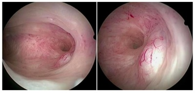
A Expectante.
B Sistema intrauterino liberador de levonorgestrel.
C Ana
D Pi
Questão 461 · Ginecologia · 4000196263Mulher, 65a, apresentou três episódios de sangramento po ultrassonogra a transvaginal: endome histeroscopia com achado na figura a seguir. O DIAGNÓSTICO PROVÁVEL É:

A Atro a ci
B Po
C Ca
D Metaplasia o
Questão 462 · Tratamento · 4000196262Mulher, 33a, procura ginecologista referindo que parou anticoncepcional oral há dois anos para engravidar. Desde então, apresenta ciclos irregulares, cando até três meses sem menstruar. Refere uso de anticoncepcional desde a adolescência. Traz exames solicitados na Unidade Básica de Saúde: FSH=3,0mUI/mL;estradiol=98pg/mL; TSH=1,9µUI/mL; prolactina=20ng/mL; Histerossalpingogra a com sinal de Cotte positivo bilateral; Ultrassonogra a transvaginal: endométrio secretor de 8mm; ovário direito=14cc; ovário esquerdo=19cc e contagem total de folículo antral=28 O esposo, 36a, também realizou exames: testosterona total=450ng/dL; FSH=5,0mUI/mL. Espermograma: volume=2,5ml; concentração de espermatozoides= 25milhões/ml; motilidade progressiva rápida=10%; progressiva lenta=30%; não progressivos=50% e morfologia de Kruger=5%. A CONDUTA PARA ESTE CASAL COM INFERTILIDADE É:
A Realizar laparoscopia para drilling ovariano e pesquisa de endometriose.
B Tratar o marido com testosterona para melhorar a concentração dos espermatozoides.
C Realizar estimulação ovariana controlada com letrozol ou clomifeno.
D Indicar fertilização in vitro por fator tubário.
Questão 463 · Ética em reprodução humana · 4000196261Casal homoafetivo masculino, procura serviço de reprodução assistida. DE ACORDO COM A RESOLUÇÃO DO CFM 2023/2022:
A Neste caso, a doadora de óvulos só pode ser anônima.
B É possível transferir dois embriões para o útero solidário: um embrião fertilizado com o espermatozoide de cada parceiro.
C Só é possível transferir um embrião, já que a doadora de óvulos deve ter menos de 35 anos.
D A cedente temporária de útero deverá ser parente de até 4º grau de um dos parceiros e deve ter ao menos um filho vivo.
Questão 464 · Tratamento · 4000196260Casal procura serviço de reprodução pois desejam ter um lho. Esposa, 49a, menopausada há cinco anos (confirmada laboratorialmente). Traz ultrassonogra a transvaginal: útero de tamanho normal; linha endometrial=2mm; ovários diminuídos, sem folículos antrais. Esposo, 56a, traz espermograma normal. Casal deseja saber sobre possibilidades de gestação, já que viu a notícia da gravidez da Claudia Raia aos 55 anos. NAS ORIENTAÇÕES DO CASAL, QUAL INFORMAÇÃO ESTÁ INCORRETA
A Apesar de menopausa confirmada, é possível, com a estimulação ovariana induzir o crescimento folicular e obter óvulos para fertilização in vitro.
B É possível gravidez na menopausa utilizando óvulos de doadora, com boas chances de sucesso.
C É possível gravidez na menopausa com óvulos próprios, se houve congelamento prévio de seus óvulos ou embriões, e a chance de sucesso está muito relacionada à idade em que se congelou os óvulos.
D Em relação ao homem, geralmente a produção espermática permanece mesmo em idades avançadas, sendo possível gestação.
Questão 465 · Tratamento da inf ertilidade masculina · Tratamento da inf ertilidade f eminina · 4000196259EM RELAÇÃO AO TRATAMENTO DO CASAL INFÉRTIL, EM QUAL (IS) SITUAÇÃO(ÕES) SERIA POSSÍVEL REALIZAR INSEMINAÇÃO INTRAUTERINA? I.Mulher, 30a, com ultrassonogra a transvaginal normal e histerossalpingra a com Cottè negativo bilateral. Parceiro com espermograma normal. II.Mulher, 27a, com ultrassonogra a normal e histerossalpingogra a com Cottè positivo bilateral. Parceiro com espermograma com 2 milhões de espermatozoides progressivos/ml após processamento seminal. III.Mulher, 30a, anovulatória com ultrassonogra a sugestiva de ovários policísticos e histerossalpingogra a com Cottè positivo bilateral. Parceiro com oligospermia leve e 10 milhões de espermatozoides progressivos/mL, após processamento seminal. IV.Mulher, 29a, com antecedente de salpingooforectomia à direita e histerossalpingogra a mostrando tuba esquerda normal com Cottè positivo a esquerda. Parceiro com sêmen normal e 20 milhões de espermatozoides progressivos/mL, após processamento seminal.
A I e IV
B I e II
C II e III
D III e IV
Questão 466 · Diagnóstico · Ginecologia · Tumores ovarianos benignos · 4000196258Mulher, 38a, apresenta quadro de dor pélvica e no exame físico tem dor à mobilização de colo uterino com massa anexial palpável à esquerda. Ultrassonogra a transvaginal: cisto multilocular (2 loculações), com ecotextura mista, sem componente sólido, medindo 6 cm, sem vascularização (IC=1), nem ascite. CLASSIFIQUE A IMAGEM SEGUNDO OS CRITÉRIOS DE IOTA COM BASE NA DESCRIÇÃO DO ACHADO ULTRASSONOGRÁFICO E SUGIRA UMA POSSÍVEL ETIOLOGIA PARA A MASSA ANEXIAL.
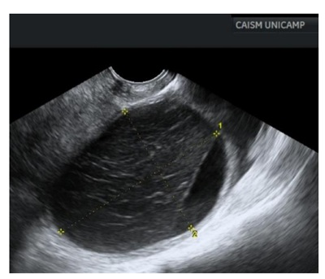
A IOTA I (indeterminado); cistoadenoma seroso.
B IOTA B (benigno); endometrioma ovariano.
C IOTA B (benigno); abscesso ovariano.
D IOTA M (maligno); tumor borderline.
Questão 467 · Tumores anexiais e câncer de ovário · 4000196257DURANTE A AVALIAÇÃO DE PACIENTE COM MASSA ANEXIAL, QUAIS ACHADOS DEVEM SER VALORIZADOS COMO INDICADORES DE RISCO PARA NEOPLASIA DE OVÁRIO?
A Marcadores tumorais normais, idade acima de 50 anos, história familiar de câncer de mama, ultrassonografia com Doppler IC=1 em massa anexial, unilocular e sem projeções sólidas.
B Marcadores tumorais elevados, idade acima de 50 anos, história familiar de câncer de ovário ou mama, ultrassonografia com Doppler IC=4 em massa anexial, cisto multiloculado com maior diâmetro acima de 10cm e projeções sólidas
C Cisto unilocular com projeção sólida até 7mm, ultrassonografia com Doppler com IC=1 na massa anexial, idade acima de 50 anos, massa anexial móvel ao exame físico.
D Marcadores tumorais suprimidos, idade acima de 50 anos, ausência de fluxo sanguíneo na ultrassonografia, história familiar negativa para câncer de ovário.
Questão 468 · Sangramento uterino anormal · 4000196256Mulher, 38a, G3P3C3FV3, laqueada na ocasião do último parto, vem com queixa de sangramento uterino anormal acompanhado de dismenorreia de leve intensidade. Apresenta ciclos regulares a cada 35 dias, com uxo moderado e duração de 4-5 dias, porém, cerca de dois dias depois do m do uxo menstrual tem início sangramento anormal em pouca quantidade com sangue em “borra de cafe Durante investigação de quadro clínico foi evidenciada a imagem a seguir, respectivamente, em ultrassonografia transvaginal e em ressonância magnética: QUAL A POSSÍVEL ETIOLOGIA DO SANGRAMENTO UTERINO ANORMAL E QUAL O FATOR DE RISCO QUE A PACIENTE APRESENTA PARA O DESENVOLVIMENTO DE TAL QUADRO?
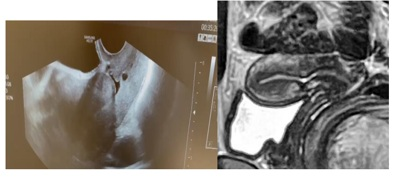
A Adenomiose; endometriose.
B Adenomiose; antecedente de parto cesárea.
C Istmocele; múltiplas cesáreas.
D Istmocele; multiparidade.
Questão 469 · Ginecologia · 4000196255Ao nal do procedimento de uma histerectomia vaginal com xação da cúpula vaginal no ligamento sacroespinhoso, colporra a anterior e posterior mais perineorra a, paciente refere uma dor na coxa bilateralmente ao etir as mesmas depois que a anestesia regional terminou seu efeito. Ao exame, verifica- se uma anestesia na face anterior da coxa. Ao investigar as causas, verifica-se que houve uma hiperangulação na exão da coxa durante posicionamento. QUAL O POSSÍVEL NERVO ATINGIDO DURANTE O PROCEDIMENTO?
A Nervo cutâneo femoral.
B Nervo genitofemoral,
C Nervo ilio-hipogástrico.
D Nervo ilioinguinal.
Questão 470 · Ginecologia · 4000196254Mulher, 35a, G1P0, 40 semanas, em trabalho de parto, encontra-se em segundo período de parto (1h30min com analgesia peridural). Indicado fórcipe de Simpson por apresentação occiptosacro mais categoria 2 na cardiotocogra a intraparto persistente a manobras de reanimação. Realizada episiotomia mediolateral de 2,5cm de extensão. Recém-nascido de 3.500g, Apgar 6/10, sem outras intercorrências neonatais. Residente de primeiro ano realiza toque retal e percebe algo “diferente”, como uma possível ruptura muscular próximo ao canal anal. AVALIE A FOTO ACIMA E ESCOLHA A POSSÍVEL CLASSIFICAÇÃO BASEADA NO ROYAL COLLEGE OF OBSTETRICIANS AND GYNECOLOGISTS DE LESÕES SEVERAS PERINEAIS INTRA-PARTO.

A 2º grau.
B 3º grau tipo A.
C 3º grau tipo B.
D 4º grau.
Questão 471 · Ginecologia · 4000196253SOBRE A ENDOMETRIOSE QUE ACOMETE O TRATO URINÁRIO, É CORRETO AFIRMAR QUE:
A Ureteres estão frequentemente acometidos na forma intestinal profunda, de forma intrínseca.
B O tratamento cirúrgico é realizado de forma excepcional na endometriose vesical, sendo o tratamento clínico eficaz para a resolução dos sintomas.
C O comprometimento intrínseco do ureter é raro, e deve ser tratado cirurgicamente através da remoção da lesão, seguida de anastomose término-terminal ou reimplante ureteral.
D A ureterólise é parte importante da cirurgia de tratamento de endometriose profunda, uma vez que medialmente ao ureter encontramos estruturas importantes como os nervos esplâncnicos pélvicos.
Questão 472 · Ginecologia · 4000196252SOBRE O TRATAMENTO CIRÚRGICO DA ENDOMETRIOSE INTESTINAL, É CORRETO AFIRMAR QUE:
A Lesões laterais se beneficiam da técnica de ressecção discóide.
B Ressecções do tipo segmentar estão indicadas na doença intestinal multicêntrica.
C É mandatória a realização de estomias de proteção no caso de ressecções superiores a 20 cm de extensão.
D O grampeamento discóide é uma técnica que apresenta maior risco de lesão inadvertida de nervos, como o hipogástrico.
Questão 473 · Ginecologia · 4000196251SOBRE ENDOMETRIOSE PROFUNDA, É INCORRETO AFIRMAR:
A O CA-125 é uma ferramenta diagnóstica importante, de baixo custo, e com alta sensibilidade e especificidade.
B A recidiva dos endometriomas ovarianos tratados também está relacionada à radicalidade da cirurgia.
C O tratamento da endometriose de vagina deve ser feito por via abdominal.
D A suspensão ovariana durante o ato cirúrgico favorece a identificação, individualização de estruturas e tratamento da doença posterior.
Questão 474 · Anatomia do trato genital f eminino · Tratamento · 4000196250A fotografia abaixo representa um passo da promontofixação laparoscópica: De forma geral, a recomendação é que, ao passar a agulha no ligamento longitudinal anterior que deve ancorar a tela na sua parte cranial, o cirurgião não ultrapasse a espessura máxima da mesma, para que não aumente o risco de discite local. ASSINALE O LIMITE DA ESPESSURA DESSA ESTRUTURA:
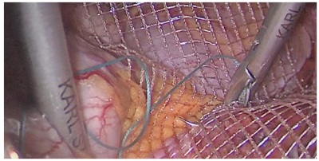
A 2 milimetros.
B 5 milimetros.
C 10 milimetros.
D 20 milimetros.
Questão 475 · Diagnóstico · 4000196249Camila foi atendida no Ambulatório de Infecções Genitais da Unicamp com queixa de corrimento vaginal há três semanas. Foi examinada pela residente do 2º ano, que executou exame ginecológico completo e colheu material para o exame de bacterioscopia a fresco e corada por gram. Foram observadas alterações que sugerem o diagnóstico de tricomoníase. SOBRE O CASO DESCRITO, ASSINALE A AFIRMATIVA CORRETA
A Observou-se corrimento esverdeado, grumoso, inodoro, teste de Whiff positivo, gram de secreção vaginal com diplococos gram negativos intracelulares.
B Observou-se corrimento branco, inodoro e com aspecto caseoso, fissuras e maceração da pele, pH vaginal=5,0 e teste de Whiff positivo.
C Observou-se corrimento abundante, amarelado esverdeado, bolhoso, com colpite, parasita flagelado movimentando entre as células epiteliais e os leucócitos no exame a fresco.
D Observou-se ao exame a fresco a presença de "ce
Questão 476 · Abordagem da paciente com queixa de úlcera genital · 4000196248Mulher procura Pronto Socorro de Ginecologia muito preocupada com o aparecimento de feridas dolorosas em região íntima há quase um mês. Diz que sua última relação sexual foi há uma semana e que seu método contraceptivo é DIU de cobre, que usa há dois anos. Nega febre, mas apresenta um corrimento amarelado há alguns dias (não sabe quantos). Exame ginecológico: lesão ulcerada no quadrante vulvar II, não única, sendo a maior úlcera com diâmetro de 1cm; infartamento ganglionar bilateral não inflamatório. OS EXAMES AUXILIARES PARA ELUCIDAÇÃO DIAGNÓSTICA SÂO:
A Sorologias para HIV, Sífilis e Hepatite B; biópsia da lesão ulcerada.
B Teste Rápido para Sífilis e HIV; imprint da lesão maior.
C Imprint da lesão maior; punção de linfonodo para cultura.
D Teste rápido para Sífilis e HIV; biópsia da lesão ulcerada.
Questão 477 · Ginecologia · Anatomia do trato genital f eminino · 4000196247OS LIMITES DO ESPAÇO DE RETZIUS SÃO:
A Ligamento uterossacro; ligamento de Cooper; arco tendíneo da fáscia pélvica.
B Ligamento pubovesicouterino; ligamento sacroespinhoso; artéria umbilical obliterada.
C Ligamento de Cooper; arco tendíneo da fáscia pélvica; parede vesical anterior.
D Ligamento longitudinal anterior; músculo obturador; fáscia pré-vesical.
Questão 478 · Falência ovariana prematura · Fator ovulatório · 4000196246QUANTO AOS TRATAMENTOS DA INSUFICIÊNCIA OVARIANA PREMATURA, É CORRETO AFIRMAR:
A Deve ser prescrita terapia hormonal com estrogênio e progestagênio até pelo menos 50 anos de idade.
B Não deve ser prescrito terapia hormonal com estrogênio e progestagênio por tempo maior do que cinco anos, pelo risco de câncer de mama e tromboembolismo.
C Os contraceptivos hormonais combinados estão contraindicados, independentemente do desejo reprodutivo.
D O tratamento consiste unicamente de melhores hábitos de vida, atividade física, uso de cálcio e vitamina D
Questão 479 · Anatomia do trato genital f eminino · 4000196245O URETER É UTILIZADO COMO MARCO DIVISÓRIO DOS SEGUINTES ESPAÇOS:
A Okabayashi e Latzko.
B Pararretal e Latzko.
C Yabuki e pararretal.
D Paravesical e pré-sacral.
Questão 480 · Tratamento · Anatomia do trato genital f eminino · 4000196244AS ILUSTRAÇÕES ABAIXO REPRESENTAM A CIRURGIA GINECOLÓGICA DE:

A Colpectomia.
B Colpocleise.
C Colporrafia anterior.
D Perineorrafia.
Questão 481 · Ginecologia · 4000196243Mulher, 49a, comparece ao ambulatório com queixa de ondas de calor e insônia há 24 meses, com piora gradativa. Antecedentes: câncer de endométrio tratado cirurgicamente com histerectomia, anexectomia bilateral e linfadenectomia pélvica e paraaórtica. Não apresenta outros antecedentes mórbidos. A CONDUTA É:
A Venlafaxina 75 mg por dia
B Estradiol 2 mg e didrogesterona 10 mg via oral por dia
C Etinilestradiol 30 mg e levonorgestrel 150 mg via por dia
D Estradiol 1 mg via transdérmica por dia
Questão 482 · Ginecologia · 4000196242Mulher, 28a, encaminhada do ambulatório de gastrocirurgia com queixa de irregularidade menstrual. Refere ciclos de 3-4 dias e intervalo de 15-40 dias. Antecedentes: duas gestações prévias com dois partos vaginais; cirurgia bariátrica disabsortiva há 10 meses, com perda de 30 kg. Ultrassonogra a transvaginal: sem alterações. A MELHOR CONDUTA É PRESCREVER:
A Anel vaginal com etonogestrel e etinilestradiol.
B Pílula com progestagênio isolado com desogestrel.
C Contraceptivo oral combinado com etinilestradiol e levonorgestrel.
D Pílula com progestagênio isolado com noretisterona.
Questão 483 · Ginecologia · 4000196241Mulher nuligesta, 21a, encaminhada do ambulatório de hematologia para avaliação de contracepção. Tem antecedente de fratura em perna esquerda com necessidade de imobilização e que evoluiu com trombose venosa profunda. Recebeu tratamento com anticoagulantes por 6 meses e atualmente não faz uso de medicação. Foram realizados exames para detecção de mutações trombogênicas (fator V. Leiden, protrombina, proteína S, proteína C e de ciência de antitrombina) sem alterações. A MELHOR CONDUTA É PRESCREVER:
A Pílula com progestagênio isolado com desogestrel.
B Adesivo com norelgestromina e etinilestradiol.
C Contraceptivo oral combinado com etinilestradiol e levonorgestrel.
D Anel vaginal com etonogestrel e etinilestradiol.
Questão 484 · Papilomavírus humano HPV · 4000196239Os dois principais tipos histológicos de câncer cervical, e a doença pré-invasiva que corresponde a esses tipos histológicos compartilham muitos dos mesmos fatores de risco. SÃO FATORES DE RISCO RELACIONADOS AO HPV, EXCETO:
A Início precoce da atividade sexual.
B História de infecções sexualmente transmissíveis.
C Imunossupressão.
D Uso de anticoncepcional oral.
Questão 485 · Ginecologia · 4000196237Mulher trans procura médico especialista em cirurgia de a rmação de gênero sobre o desejo cirúrgico em nalizar transição. Está em uso de hormonioterapia e já vive experiência de vida real. ASSINA A OPÇÃO CORRETA SOBRE INFORMAÇÕES A SEREM TRANSMITIDAS PARA A PACIENTE SOBRE O PROCEDIMENTO CIRÚRGICO GENITALIZADOR FEMININO A SER REALIZADO:
A A próstata é retirada após a etapa da orquiectomia e a penectomia parcial por abordagem posterior.
B Existe um risco de lesão anorretal durante a confecção tunelizante da neovagina.
C Retira-se a junção uretrovesical para confeccionar a neouretra e reconstituição do neoclitoris.
D Os cuidados no pós-operatório de neovagina não dependem da fonte que será constituída a sua parede.
Questão 486 · Ginecologia · 4000196236Mulher, 35a, comparece ao ambulatório com quadro de dor em hipogastro, que piora quando a bexiga está repleta, há dois anos. Refere ainda aumento da frequência miccional (12 vezes durante o dia) e melhora da dor com o esvaziamento vesical. Exame físico e ginecológico normais. Exame de urina, urocultura, ultrassonografia transvaginal, ressonância pélvica e cistoscopia sem alterações. QUAL O DIAGNÓSTICO?
A Síndrome dolorosa vesical.
B Síndrome da bexiga hiperativa.
C ITU de repetição.
D Tumor de bexiga.
Questão 487 · Epidemiologia · Ginecologia · 4000196235A metanálise abaixo foi retirada do seguinte estudo publicado (Frederice, C.P., Brito, L.G.O., Pereira, G.M.V. et al. Interventional treatment for myofascial pelvic oor pain in women: systematic review with meta- analysis. Int Urogynecol J 32, 1087–1096 (2021). https://doi.org/10.1007/s00192- 021-04725-x). Nela, existem forest plots analisando intervenções para mulheres com dor pélvica miofascial e sua influência na função sexual analisada através do questionário FSFI (Female Sexual Function Index). Esse questionário tem vários domínios (desejo – A; excitação – B; lubri cação – C; orgasmo – D; satisfação – E; dor – F; escore total – G) identificados no gráfico abaixo. APÓS ANALISAR A FIGURA ABAIXO, ASSINALE A RESPOSTA CORRETA PARA AQUELES DOMÍNIOS DO FSFI ONDE HOUVE UMA MELHORA DO ESCORE CONSIDERADA ESTATISTICAMENTE SIGNIFICANTE FEITA PELO CONJUNTO DE INTERVENÇÕES:

A Desejo e orgasmo.
B Escore total e dor.
C Satisfação e dor.
D Lubrificação e excitação.
Questão 488 · Critérios de elegibilidade da OMS · 4000196217Para pacientes com diagnóstico no menacme de adenocarcinoma epitelial de ovário, pelos critérios de elegibilidade de método anticoncepcional para iniciação do uso da Organização Mundial da Saúde (OMS), SÃO CONSIDERADOS CATEGORIA 3 (“CONDIÇÃO EM QUE OS RISCOS TEÓRICOS OU COMPROVADOS GERALMENTE SUPERAM AS VANTAGENS DO USO DO MÉTODO”):
A anticoncepcional oral combinado de baixa dosagem / anticoncepcional injetável combinado.
B anel vaginal combinado / anticoncepcional oral de desogestrel.
C acetato de medroxiprogesterona de depósito / implante subdérmico de etonogestrel.
D dispositivo intrauterino de cobre / sistema intrauterino liberador de levonorgestrel.
Questão 489 · Diagnóstico · 4000196202CASOS DE MASSAS ANEXIAIS COM ASCITE DEVEM SER CLASSIFICADOS EM QUAL CATEGORIA O- RADS®?
A O-RADS 0.
B O-RADS 4.
C O-RADS 6.
D O-RADS 5, desde que não haja uma patologia de base que possa justificar a ascite.
Questão 490 · Medicina f etal · 4000196188Mulher 58 a, menopausada, IMC 40, G2C2FV2, com queixa de perda urina aos esforços. PARA O TRATAMENTO, EXCETO:
A Perda de peso.
B Fisioterapia do assoalho pélvico.
C Cirurgia de sling.
D Terapia estrogênica vaginal.
Questão 491 · Dermatologia · 4000195043Mulher de 57 anos procura ambulatório de dermatologia com queixa de lesões nas pálpebras (foto). Ela refere que as lesões surgiram há alguns anos e estão crescendo. Nega sintomas no local ou qualquer sintoma sistêmico. Diante do quadro clínico apresentado, assinale a alternativa correta.
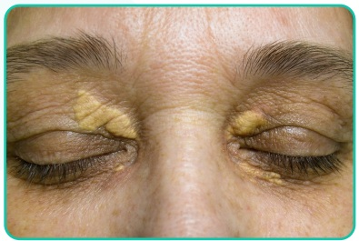
A O mais provável é que essa paciente apresente amiloide sistêmica.
B Devemos solicitar um lipidograma da paciente.
C O tratamento é feito com prednisona em doses imunossupressoras.
D É imperativa a realização de ressonância magnética de órbitas.
Questão 492 · Neurologia · 4000195042Menina, 6 anos de idade, é levada ao PS por seus pais em decorrência de crise epiléptica tônico-clônica generalizada. Logo na chegada ao hospital, recebe os primeiros cuidados clínicos e é monitorizada, contudo não é possível a aquisição de acesso intravenoso. Qual é a alternativa correta sobre a conduta nesse momento?
A Administrar midazolam IM.
B Administrar fenobarbital IM.
C Administrar diazepam IM.
D Administrar midazolam via tubo orotraqueal.
Questão 493 · Cardiologia · 4000195041Homem de 58 anos, hipertenso há 10 anos, em tratamento regular, é admitido na emergência com quadro de edema agudo de pulmão hipertensivo. Vinha em uso regular de anlodipina 10 mg/dia, hidroclorotiazida 25 mg e enalapril 20 mg 12/12h. Após melhora clínica, paciente informou que a pressão arterial está elevada nos últimos meses. Realizou o seguinte eletrocardiograma após estabilização ( figura). Considerando que a função renal da paciente era normal, a principal hipótese diagnóstica e o exame a ser solicitado são:

A Doença de Cushing – Dosagem de cortisol sérico.
B Hiperaldosteronismo primário - Dosagem de renina e aldosterona.
C Estenose da artéria renal - Doppler de artéria renal.
D Feocromocitoma - Dosagem de metanefrinas urinárias.
Questão 494 · Nef rologia · 4000195040Jovem, 23 anos, é atendido no pronto atendimento por quadro de edema progressivo há 2 semanas, associado à redução progressiva da diurese. Paciente previamente hígido, apresenta-se ao exame físico hipertenso (PA 180 x 110 mmHg) e com edema generalizado 3+. Foram coletados exames iniciais que demonstram: creatinina 3,7 mg/dL – ureia 184 mg/dL – Na 133 mEq/L – K 5,2 mEq/L – hemoglobina 10,8 g/dL – leucócitos 7.800 – plaquetas 238.000 – C3 e C4 dentro da normalidade - urina 1: leucócitos 5.000 – hemácias 988.000 – dismor smo eritrocitário presente - proteína 2+/4+. Fez ultrassom renal que demonstra rins de tamanho normal, sem sinais de cronicidade ou obstrução. Qual dos exames a seguir seria mais útil na avaliação da etiologia do processo?
A ANCA.
B FAN.
C ASLO.
D Crioglobulinas.
Questão 495 · Inf ectologia · 4000195039Um menino de 7 anos de idade é levado ao pronto-socorro por seus pais devido a quadro de febre, cefaleia, otalgia à direita e vômitos. Os pais relatam que, há cerca de 6 dias, o lho passou a se queixar de dor de ouvido, quadro que se intensi cou com o passar do tempo. Há dois dias, surgiu a cefaleia intensa, associada a náuseas e vômitos. Ao exame físico, a médica plantonista notou os seguintes achados: mau estado geral, febre, taquicardia, taquipneia, hipotensão e rigidez de nuca. A otoscopia revelou a presença de otite média supurativa à direita. Com base nos dados anteriores, descreva os achados esperados na análise do liquor e o provável agente etiológico.
A Celularidade aumentada, glicorraquia normal, proteínas elevadas; vírus herpes simples.
B Celularidade aumentada, glicorraquia reduzida, proteínas elevadas;
C Celularidade aumentada, glicorraquia reduzida, proteínas elevadas;
D Celularidade aumentada, glicorraquia reduzida, proteínas elevadas;
Questão 496 · Reumatologia · 4000195038Homem, 24 anos, procura o pronto atendimento com dor e inchaço no punho direito há 3 dias. Quando questionado, refere que, antes desse quadro, apresentou dores em ombro direito e joelho esquerdo. Fez uso de anti-inflamatório por conta e apresentou melhora parcial. Nega comorbidades. Exame físico: artrite de punho direito e tenossinovite em mão direita, presença de lesões pustulosas com centro necrótico em face palmar, bilateral. Tendo em vista a principal hipótese diagnóstica, a conduta é:
A Oxacilina.
B Prednisona.
C Ceftriaxona.
D Colchicina.
Questão 497 · Pneumologia · 4000195037Ao atender um paciente com queixa de dispneia, você depara-se com a radiografia a seguir: Dos dados do exame físico, qual você espera encontrar devido à imagem apontada pela seta?
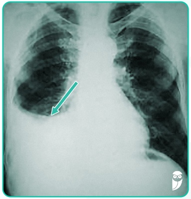
A Frêmito toracovocal aumentado.
B Timpanismo à percussão.
C Pectorilóquia afônica.
D Retração torácica.
Questão 498 · Gastroenterologia · 4000195036Paciente, 45 anos, masculino, procura clínico geral para elucidação de diagnóstico. Refere que, há pelo menos 6 meses, vem apresentando diarreia aquosa episódica associada a crises de vermelhidão intensa na face e no pescoço. Antecedentes pessoais: asma de início recente. Exame físico: sibilos discretos bilateralmente, placas eritematosas na face anterior das pernas. Diante da hipótese diagnóstica principal, que exame o médico deveria solicitar?
A Pesquisa quantitativa de gordura nas fezes.
B Excreção urinária de 5-HIAA na urina de 24 horas.
C Colonoscopia.
D Biópsia de pele no momento de rubor
Questão 499 · Hematologia · 4000195035Homem de 18 anos, portador de anemia falciforme, apresenta quadro de febre e tosse há 1 dia. Ao exame clínico, está em regular estado geral, levemente descorado, FR 28, FC 86, saturação de oxigênio 88%, temperatura 38°C. A conduta mais adequada é:
A Tratamento ambulatorial com amoxicilina.
B Radiografia de tórax, oxigenoterapia, transfusão de hemácias simples, antibioticoterapia endovenosa com ceftriaxone e azitromicina.
C Radiografia de tórax, oxigenoterapia, transfusão de hemácias filtradas e fenotipadas, antibioticoterapia endovenosa com ceftriaxone e azitromicina.
D Radiografia de tórax, oxigenoterapia, transfusão de hemácias filtradas e fenotipadas e antibioticoterapia endovenosa com vancomicina.
Questão 500 · Clínica Médica · 4000195034Homem, 56 anos, sem história de tabagismo, é encaminhado ao ambulatório de pneumologia após achado incidental de nódulo pulmonar sólido no lobo superior direito, de 5mm, com margens bem definidas e regulares, calci cado. Tem antecedente prévio de infecção hospitalar por pneumonia. A melhor conduta, nesse contexto, é:
A Seguimento ambulatorial com nova tomografia de tórax em 3 meses.
B Biópsia pulmonar percutânea.
C Seguimento ambulatorial com nova tomografia de tórax em 1 ano.
D Não há necessidade de acompanhamento de nódulo pulmonar sólido menor que 6 mm, uma vez que esses nódulos, em populações de baixo risco, são, em sua maioria, benignos.
Revisar: possível letra faltando em enunciado
Questão 501 · Ortopedia · 4000195033Paciente de 72 anos sofre queda da própria altura em casa e é levado ao hospital com dor no membro inferior direito e incapacidade de car em pé. Lúcido e ativo, porém diabético, hipertenso e obeso. Após exame clínico sem alterações de outros sistemas, foi realizada a radiogra a a seguir. Qual é a conduta adequada para esse paciente?

A Artroplastia total de quadril, suplementação de vitamina D, início de bisfosfonatos e anticoagulante.
B Artroplastia parcial de quadril, suplementação de vitamina D, início de bisfosfonatos e anticoagulante.
C Artroplastia total de quadril e anticoagulante.
D Artroplastia parcial de quadril e anticoagulante.
Questão 502 · Cirurgia · 4000195032Mulher de 62 anos é admitida com história de dor lombar à esquerda e febre com início há 4 dias. Ao exame físico, encontra-se em regular estado geral, diaforética, hipocorada 2+/4+, desidratada 3+/4+, FC 116 bpm, PA 90 x 60 mmHg, temperatura axilar de 39,0 ºC. Refere ser diabética em uso de metformina e glibenclamida. Foi submetida à tomografia computadorizada que se encontra na imagem a seguir. Com relação ao caso descrito, assinale a alternativa

A Há indicação de passagem de cateter duplo J, nefrostomia ou algum outro método de desobstrução da via urinária, a despeito da condição hemodinâmica da paciente.
B A taxa de mortalidade do quadro apresentado é bastante elevada, sendo necessário suporte em UTI e antibioticoterapia de amplo espectro.
C O tratamento definitivo da obstrução não pode ser feito por meio de ureteroscopia rígida.
D A nefrectomia figura entre as estratégias terapêuticas preconizadas para os casos mais extremos.
Questão 503 · Cirurgia · 4000195031Jovem de 35 anos, vítima de acidente automobilístico sem cinto de segurança há 40 minutos, é trazido pelo ÁGUIA e apresenta os seguintes dados na admissão: • Intubação orotraqueal com colar cervical e prancha rígida. • Presença de escoriações à direita com MV+ bilateral, simétrico, com estertores em base à direita. • FC 137 bpm, PA 75/43 mmHg; diaforético, com pulso liforme. Presença de escoriações em região infraumbilical, com crepitação à palpação da sín se púbica, toque retal sem sangue ou espículas, esfíncter normotônico, Glasgow 3T em uso de midazolam e fentanil, presença de fratura exposta de membro superior direito sem sangramento ativo. A radiografia a seguir foi realizada na sala de emergência. Com relação ao caso, assinale a alternativa

A Diante do achado radiográfico, a presença de hematúria após a sondagem vesical sugere uma provável lesão de bexiga extraperitoneal.
B Diante da lesão apresentada, a presença de FAST ou lavado peritoneal positivos não mudam a abordagem operatória.
C A administração de midazolam e de fentanil pode contribuir com a hipotensão.
D No caso apresentado, há, inquestionavelmente, indicação de protocolo de transfusão maciça e de ácido tranexâmico.
Questão 504 · Cirurgia · 4000195030Considerando os exames 1 e 2, dispostos a seguir, assinale a alternativa correta.
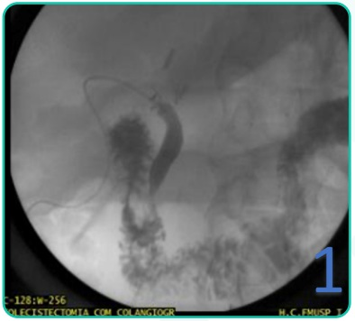

A Ambos os exames correspondem a uma colangiopancreatografia retrógrada endoscópica.
B No exame 1, não identificamos obstrução do colédoco distal.
C No exame 2, existem sinais de lesão iatrogênica da via biliar.
D O exame 2 é mais compatível com um quadro de icterícia quando comparado ao exame 1.
Questão 505 · Cirurgia · 4000195029Paciente masculino, 36 anos, admitido no pronto atendimento, vítima de acidente motociclístico (moto x caminhão), em prancha rígida e com colar cervical. Ao exame: vias aéreas pérvias, MV+, sem ruídos adventícios, SatO2 de 97%, FC de 98 bpm, PA de 110 x 70 mmHg, FR de 20 irpm, ECG 15, pupilas isofotorreagentes. Abdome ácido, doloroso em região hipogástrica, sem sinais de peritonite. Na sala de trauma, foi realizado FAST - que demonstrou líquido livre na pelve - e passagem de sonda vesical de demora com diurese hematúrica. Encaminhado à tomogra a com contraste endovenoso (em anexo). Sobre esse caso, é correto afirmar:
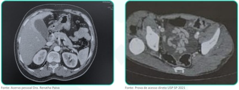
A Por apresentar FAST positivo, o paciente já tinha indicação de tratamento cirúrgico, sem a necessidade de realizar a tomografia.
B O paciente tem indicação de tratamento cirúrgico, que pode ser feito tanto por laparotomia quanto por laparoscopia.
C Como o paciente está estável hemodinamicamente, a melhor conduta é tratamento não operatório com internação em UTI.
D Devido à possibilidade de lesão uretral, deve-se retirar a sonda vesical e realizar uretrocistografia retrógrada.
Questão 506 · Cirurgia · 4000195028RN do sexo masculino, nascido com 39 semanas de idade gestacional, de parto normal. Recebeu os cuidados iniciais de assistência ao RN sem nenhuma intercorrência. No berçário, apresentou a seguinte alteração (em anexo). Qual é a conduta para o caso?
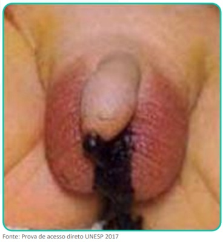
A indicar a cirurgia de Peña.
B Indicar colostomia em duas bocas.
C Aguardar de 16 a 24 horas.
D Invertograma.
Questão 508 · Cirurgia · 4000195026Paciente de 38 anos de idade, masculino, chega ao pronto-socorro com história de dor abdominal há 8 dias, localizada em FID, associada a náuseas e perda do apetite. Refere que fez uso de cipro oxacina desde o início do quadro, com melhora parcial da dor. Ao exame: afebril, PA 120 x 70 mmHg, FC 88 bpm. Abdome pouco distendido, doloroso em anco e FID, onde se palpa massa de aproximadamente 7 cm de diâmetro, sem sinais de peritonite. Exames laboratoriais: Hb 12,9 g/dL, Htc 37, leuco 15.700/mm³ PCR: 93 mg/dL, amilase 121 U/L. Solicitada tomogra a de abdome e pelve (imagem em anexo). Qual é a melhor conduta nesse paciente?

A Internação para tratamento clínico com antibioticoterapia endovenosa contra bactérias Gram- negativas e anaeróbias.
B Apendicectomia por laparoscopia.
C Antibioticoterapia, drenagem percutânea da coleção e apendicectomia em 6 semanas.
D Laparotomia mediana e hemicolectomia direita.
Questão 509 · Gastroenterologia · 4000195025Paciente, 20 anos, procura cirurgião do aparelho digestivo para aconselhamento. Refere que vários dos seus familiares já foram acometidos por neoplasias malignas, principalmente câncer colorretal, incluindo seu pai, com câncer de cólon sigmoide aos 50 anos, e seu irmão, recentemente diagnosticado com câncer de reto aos 28 anos. Orientado pelo gastroenterologista, foi submetido a colonoscopia que revelou mais de 100 pólipos intestinais, dos quais três foram biopsiados. Anatomopatológico revelou tratar-se de adenomas tubulares. Antecedentes pessoais: refere “problema na retina” em acompanhamento oftalmológico. Qual é a conduta ideal para o paciente?
A Tranquilizar paciente e fazer colonoscopia a cada 5 anos.
B Iniciar imunobiológico.
C Indicar colectomia total.
D Indicar proctocolectomia total com anastomose ileoanal.
Questão 511 · Ginecologia · 4000195023Paciente do sexo feminino, 21 anos de idade, refere que não menstrua há 4 meses e apresenta espinhas no rosto. Procura o ambulatório de ginecologia porque está tentando engravidar há 3 anos, sem sucesso. Ao exame físico, foi observado índice de Ferriman-Gallwey = 9. Qual é a conduta indicada?
A Metformina.
B Drilling.
C Letrozol.
D Análogo do GnRH.
Questão 512 · Ginecologia · 4000195022Mulher de 56 anos de idade refere saída de secreção da mama direita há 3 meses (vide imagem). O exame físico mamário não apresentou nódulos ou linfonodomegalias, e os exames de imagem (mamogra a e ultrassom) não apresentaram alterações. Qual é a causa mais provável para esse quadro?

A Carcinoma.
B Ectasia ductal.
C Adenoma de hipófise.
D Papiloma.
Questão 513 · Ginecologia · 4000195021Mulher de 37 anos de idade comparece ao serviço de Mastologia com queixa de nódulo na mama esquerda. Ao exame físico, foi observado nódulo de 1,3 cm, periareolar às 6h da mama esquerda, pouco doloroso. Ausência de linfonodomegalias. Foi submetida a exame ultrassonográ co (imagem a seguir). Qual é a conduta mais indicada?

A PAAF.
B Core biopsy
C Biópsia por agulha grossa vácuo-assistida guiada por ultrassonografia.
D Seguimento.
Revisar: possível letra faltando em enunciado
Questão 514 · Ginecologia · 4000195020Mulher de 25 anos, IGIPC, comparece ao ambulatório de ginecologia com queixa de cólicas menstruais e dor na relação sexual, que vem piorando há 2 anos. O exame físico ginecológico apresentou anexo esquerdo pouco aumentado e doloroso à palpação. Foi solicitada ultrassonogra a transvaginal que mostrou ovário esquerdo aumentado, apresentando cisto de contornos regulares, com conteúdo em “vidro moído”, medindo aproximadamente 2,4 x 3,6 cm (veja a imagem a seguir). Qual é a conduta indicada para esse caso?

A Punção aspirativa guiada por ultrassom para drenagem do cisto.
B Ooforectomia.
C Cistectomia.
D Seguimento ultrassonográfico.
Questão 515 · Ginecologia · 4000195019Mulher de 49 anos, IGIPN, comparece ao pronto-socorro de ginecologia referindo sangramento vaginal excessivo há 2 dias e fraqueza. Refere irregularidade menstrual há 7 meses. Ao exame físico, apresenta-se descorada +/4+, FC = 90 bpm e PA = 110 x 70 mmHg após infusão de volume (SF 0,9%). Ao exame físico ginecológico, foi observado sangramento ativo, exteriorizando-se através do orifício do colo. Ao toque bimanual, foi observado útero de volume normal. Teste de gravidez negativo. Qual é a conduta indicada para esse caso?
A Biópsia do endométrio.
B Estrogênio e progestágeno em altas doses.
C Histerectomia total abdominal.
D Curetagem uterina.
Questão 516 · Obstetrícia · 4000195018Gestante de 33 semanas e 2 dias, primigesta, dá entrada no hospital com queixa de mal-estar há 1 dia, com piora progressiva, náuseas e vômitos. Nega outras queixas. Nega comorbidades. Nega intercorrências no pré-natal. Ao exame: REG, ictérica 2+\4, descorada 2+\4, desidratada 2+/4; afebril, letárgica, PA 120/80 mmHg, pulso 100 bpm, AU: 32, BCF 140 bpm, DU presente 2/30seg/10 min, toque vaginal com colo médio, medianizado 2 cm, cefálico, bolsa íntegra. Dextro: 52. Realizados exames laboratoriais e cardiotocografia: hemograma - hb 11,3 ht 34, leuco 17.000, plaquetas 160.000, creatinina 1,6, Tgo 400, tgp 320, bt 4,0, DHL 1.000. A conduta deve ser:
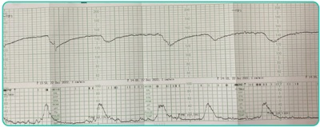
A Internação hospitalar, corticoterapia e resolução da gestação após 48 horas.
B Internação hospitalar, sulfato de magnésio e indução do parto.
C Internação hospitalar, estabilização clínica da gestante e cesariana.
D Internação hospitalar, sulfato de magnésio, cesariana após estabilização clínica da gestante.
Questão 517 · Obstetrícia · 4000195017Gestante de 35 semanas, primigesta, em acompanhamento no pré-natal de alto risco por feto com anencefalia. Paciente optou por não interromper a gestação. Nega comorbidades. Nega outras alterações no pré-natal. Refere que há 1 semana vem apresentando piora progressiva da sensação de falta de ar e inchaço de membros inferiores. Ao exame: BEG, corada, acianótica afebril, Pa 120/80, pulso 100 bpm, fr 20, saturação 98%, temp. 36,2, au 42 cm, BCF 140, Tv com colo médio, mediatizado, 3 cm de dilatação, pélvico, bolsa integral e tensa. A ultrassonografia encontrou o achado a seguir: Qual é a conduta para esse caso?
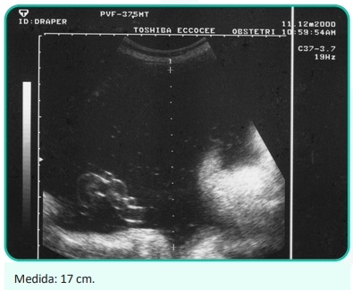
A Internação para perfil glicêmico e introdução de insulina, se necessário.
B Internação para amniodrenagem e indução do parto.
C Internação para controle de vitalidade e indução do parto com 37 semanas.
D Internação para cesariana de urgência.
Questão 518 · Obstetrícia · 4000195016Gestante, primigesta, 40 anos, vem à consulta de pré-natal trazendo ultrassonogra a morfológica realizada com 12 semanas de gestação. O ultrassom mostra a seguinte imagem: A avaliação das imagens apresentadas indica:

A Acompanhamento no pré-natal de rotina, com realização de ultrassonografia morfológica entre 20 e 24 semanas.
B Encaminhar para a maternidade para controle diário da vitalidade fetal e resolução a partir de 23 semanas.
C Acompanhamento no pré-natal de alto risco, amniocentese a partir de 15 semanas para cariótipo fetal, ecocardiograma fetal, ultrassom morfológico entre 20 e 24 semanas.
D Acompanhamento no pré-natal de alto risco, cordocentese para cariótipo fetal, ultrassonografia semanal com Dopplervelocimetria da artéria cerebral média.
Questão 519 · Obstetrícia · 4000195015Gestante 3G2PC vem à primeira consulta de pré-natal preocupada após realizar ultrassonogra a obstétrica evidenciando gestação trigemelar. As imagens ultrassonográ cas estão expostas a seguir. Sobre essa gestação, é possível afirmar:
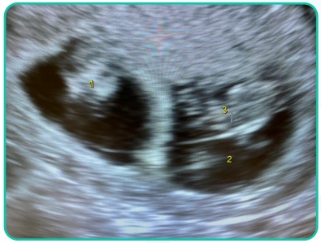
A A gestação é trizigótica.
B A complicação mais temida é o entrelaçamento de cordões.
C A gestação é dicoriônica e triamniótica.
D Os fetos são idênticos.
Revisar: possível letra faltando em enunciado
Questão 520 · Obstetrícia · 4000195014Gestante 2G1PN por óbito fetal com 30 semanas vem ao ambulatório realizar ultrassonogra a obstétrica com Doppler com 8 semanas. Na ultrassonogra a, feto apresenta peso de 1.030 g (< percentil 3), ILA 10 cm, Doppler conforme as imagens a seguir. Cardiotocografia com feto reativo. A conduta deve ser:
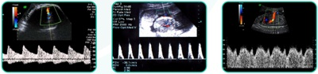
A Avaliação semanal da vitalidade fetal e resolução se ducto venoso alterado ou diástole reversa da artéria umbilical, centralização de fluxo fetal, oligoâmnio ou cardiotocografia alterada.
B Corticoterapia e resolução da gestação após 48 horas.
C Resolução imediata da gestação por cesariana.
D Corticoterapia, avaliação diária da vitalidade fetal e resolução se ducto venoso alterado, diástole reversa da artéria umbilical, cardiotocografia ou perfil biofísico alterado.
Questão 521 · Pediatria · 4000195013Você faz o acompanhamento de puericultura de um lactente de três meses, cuja mãe pretende voltar a trabalhar em 1 mês. Ele apresenta crescimento e desenvolvimento normais para a idade. Indique as recomendações apropriadas em relação à ordenha e ao armazenamento de leite materno:
A O leite materno ordenhado pode ser conservado em congelador até 60 dias.
B O leite materno ordenhado que é conservado em geladeira deve ser aquecido no micro-ondas.
C O leite materno ordenhado deve ser oferecido ao lactente em copinho, colher ou xícara.
D O leite materno ordenhado conservado em geladeira deve ser consumido em até 2 dias.
Questão 522 · Pediatria · 4000195012Você atende uma criança de 5 anos que estava participando de uma festa de aniversário que apresentou subitamente desconforto respiratório e inchaço na boca, sendo trazida à emergência do hospital. Ao exame, encontra-se pálida, com desconforto respiratório moderado, FR 40irpm, FC 128bpm, PA 86 x 59 mmHg, saturação de O2 de 96% em ar ambiente. A ausculta pulmonar revela sibilos difusos, retração de fúrcula e subcostal. Há edema moderado em lábios e placas urticariformes em tronco e membros inferiores. Diante desse cenário, indique a principal medida a ser tomada.
A Adrenalina endovenosa.
B Adrenalina intramuscular.
C Metilprednisolona endovenosa.
D Salbutamol inalatório.
Questão 523 · Pediatria · 4000195011Um menino de 4 anos retorna para consulta de rotina devido à suspeita de hipertensão arterial. Nas últimas três consultas, foi observada uma média de valores de pressão arterial de 111 x 69 mmHg. Os dados antropométricos revelam peso e estatura no percentil 90 para sexo e idade. Diante desses dados e observando a tabela a seguir, classifique a pressão arterial dessa criança:

A Pressão arterial normal.
B Pressão arterial elevada.
C Hipertensão arterial estágio 1.
D Hipertensão arterial estágio 2.
Questão 524 · Pediatria · 4000195010Você atende um recém-nascido de 15 dias de vida em uma maternidade da prefeitura de São Paulo. A mãe do bebê está muito preocupada, pois ele está muito hipoativo e não mama direito o seio materno. No relato da maternidade, você constata que a criança precisou tratar uma infecção urinária por Escherichia coli, apresentou hipoglicemia de difícil controle, icterícia às custas de bilirrubina indireta, sem incompatibilidade, e os exames de investigação solicitados no período neonatal revelam substâncias redutoras na urina. O teste do pezinho está normal. Você observa que o recém-nascido perdeu peso em relação ao nascimento, encontra-se desidratado, hipoativo e apresenta icterícia zona V. Diante desse caso, assinale a principal hipótese diagnóstica:
A Fenilcetonúria.
B Agalactia.
C Galactosemia.
D Atresia de vias biliares.
Questão 525 · Pediatria · 4000195009Durante o plantão, você recebe um lactente de 2 anos previamente hígido que apresentou uma crise convulsiva em casa, com duração de cerca de 5 minutos. Ao exame, você observa que ele está sonolento, febril e com roncos difusos à ausculta pulmonar. Familiares referem que ele estava gripado desde ontem, mas que não tinham percebido a febre. Após 1 hora de observação, a criança encontra-se ativa, sorridente e interagindo com os pais, sem dé cits neurológicos. Os pais negam episódios semelhantes. Diante desse cenário, é verdadeiro afirmar:
A Trata-se de uma crise febril, e a criança precisa permanecer internada por 48 horas para observação neurológica.
B Por ser o primeiro episódio, a coleta de liquor é necessária.
C O exame de tomografia pode esclarecer o motivo da crise convulsiva.
D Nesse momento, a melhor conduta é dar alta, com sintomáticos e orientações aos pais quanto à benignidade do quadro.
Questão 526 · Pediatria · 4000195008Na sala de emergência, temos uma criança de 7 anos com história de vômitos e diarreia em grande volume há 24 horas. Apesar dos esforços da equipe de enfermagem, até então não foi obtido acesso venoso. Você então decide realizar um acesso intraósseo. Dos locais sinalizados a seguir, qual você escolheria para realizar o acesso?

A Úmero distal
B Rádio distal
C Cabeça do fêmur
D Tíbia distal
Questão 527 · Pediatria · 4000195007Os agentes comunitários de saúde fazem busca ativa a uma criança que está com calendário vacinal atrasado. A mãe refere que, por trabalhar o dia todo, tem tido di culdade de levar a criança à UBS. A criança tem 12 meses, e sua carteira vacinal da criança está representada a seguir. Considerando que a criança apresentou um episódio de broncoespasmo na semana anterior, utilizou prednisolona por 5 dias e que o dia da aplicação das vacinas é 08/06/2022, qual vacina estaria contraindicada?
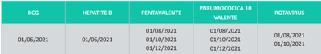
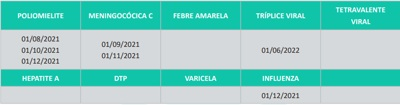
A Meningocócica C.
B Febre amarela.
C Influenza.
D Pneumocócica 10-valente.
Questão 528 · Pediatria · 4000195004Ao avaliar uma criança no 2º dia de vida, você percebe que ela apresenta as lesões da figura a seguir. A mãe refere que já estavam presentes ao nascimento. Qual é a principal hipótese diagnóstica?

A Miliária.
B Hiperplasia sebácea.
C Eritema tóxico.
D Melanose pustulosa.
Questão 529 · Pediatria · 4000195001O médico do SAMU traz para avaliação uma criança de 6 anos que sofreu um acidente de carro com os pais. O médico refere que ele estava no banco traseiro, na cadeirinha e que os pais estão bem, apenas com ferimentos leves. Ao exame inicial, a criança está lúcida, chorosa, orientada e aparentemente, sofreu apenas escoriações nos braços. Antes de ir embora, o médico mostra uma foto do carro. Qual é a conduta mais adequada para a criança?

A Observação clínica no pronto atendimento por 24 horas.
B Realizar radiografia de crânio, cervical e de ossos longos.
C Encaminhá-la para tomografia de crânio.
D Alta hospitalar com orientações.
Questão 530 · Otorrinolaringologia · 4000194959João tem 10 anos e vem ao pronto-socorro com queixa de dor e di culdade para engolir, associada a febre alta e salivação excessiva. O pai relata que, há 1 semana, fez outra consulta no pronto atendimento, pois o paciente relatava dor de garganta e febre quando foi prescrito azitromicina. No momento, febre de 39 graus, baixa aceitação de dieta via oral, rigidez moderada de nuca. O exame físico e a tomogra a computadorizada estão apresentados a seguir: Com base no caso acima, assinale a alternativa correta em relação ao diagnóstico e ao tratamento:
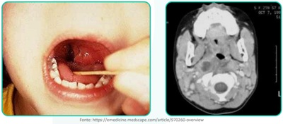
A Amigdalite bacteriana resistente; iniciar amoxicilina-clavulanato, prednisona e retorno em 48 horas.
B Abscesso periamigdaliano/retrofaríngeo; realizar internação hospitalar, ceftriaxone IV e programar drenagem via transoral ou cervicotomia.
C Meningite pós-amigdalite; realizar internação hospitalar, punção lombar, ampicilina + oxacilina IV.
D Abscesso retrofaríngeo; realizar endoscopia digestiva alta, hemocultura e swab faríngeo.
Questão 531 · Dermatologia · 4000194955Uma paciente de 27 anos procura a unidade básica de saúde com queixa de manchas no dorso (foto). Refere que as lesões surgiram após retornar da praia e que há discreto prurido associado. Quando você examina e faz um estiramento da lesão, há surgimento de descamação na. Qual é o sinal semiológico que essa doença apresenta?
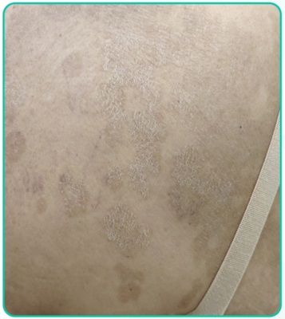
A Sinal de Zileri.
B Sinal do orvalho sangrante.
C Sinal de Nikolsky.
D Sinal de Romaña.
Questão 532 · Neurologia · 4000194953Mulher de 75 anos de idade é hipertensa em uso de enalapril 20 mg, 2 vezes ao dia, e diabética em uso de metformina. Apresentou, há 5 horas, hemiparesia direita associada com desvio de rima para a esquerda e di culdade de falar. No exame clínico: bom estado geral, consciente, desorientada temporal e espacialmente, afebril, acianótica e anictérica. Pressão arterial = 180 x 100 mmHg; pulso = 110 bpm, irregular. Ausculta cardíaca com bulhas arrítmicas e normofonéticas em dois tempos, sem sopros. Apresenta hemiparesia completa e desproporcionada à direita, disartria, afasia motora e hemi-hipoestesia completa. O restante do exame clínico está sem alterações. Foi realizado ECG de 12 derivações que confirma a impressão de brilação atrial e TC de crânio (a seguir). A angioTC revela oclusão da artéria cerebral média esquerda. Sobre o quadro em questão, qual das alternativas está correta?
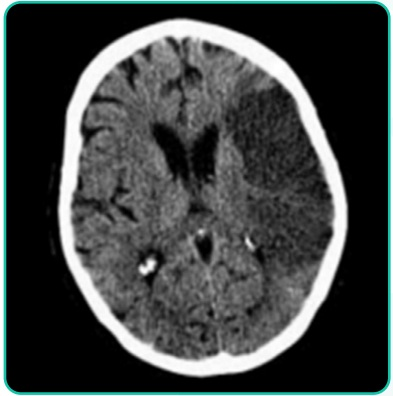
A O quadro é de AVC isquêmico em janela para reperfusão, estando indicado o início imediato da trombólise EV.
B Nesse momento, a pressão arterial deve ser reduzida com alvo de PAS < 140 mmHg.
C A paciente pode ser elegível para a craniectomia descompressiva profilática.
D A trombectomia mecânica deve ser indicada imediatamente.
Questão 533 · Cardiologia · 4000194951Mulher de 58 anos, obesa, sedentária, diabética, tabagista e dislipidêmica, procura Unidade Básica de Saúde porque vem apresentando elevação da pressão arterial. Está assintomática e faz uso regular de sinvastatina 40 mg/dia e metformina 1.500 mg/dia. Na consulta, foi identi cada PA = 152 x 96 mmHg. Qual deve ser o tratamento inicial e a meta pressórica dessa paciente?
A Mudança de estilo de vida; PA < 140 x 90 mmHg.
B Mudança de estilo de vida; PAS entre 120 a 129 mmHg e PAD entre 70 e 79 mmHg.
C Tratamento medicamentoso; PA < 140 x 90 mmHg.
D Tratamento medicamentoso; PAS entre 120 a 129 mmHg e PAD entre 70 e 79 mmHg.
Questão 534 · Psiquiatria · 4000194950Aposentada de 70 anos, viúva há 15 anos, comparece à UBS para consulta com o médico de família, após quase um ano de ausência. Tem em seu histórico: infarto agudo do miocárdio, obesidade grau 2, diabetes melito, hipertensão arterial, doença renal crônica grau 1, além de diversos episódios convulsivos sofridos antes dos 3 anos de idade e 2 episódios depressivos nos últimos 5 anos. Na avaliação, o médico nota um afeto entristecido, redução da motricidade, lenti cação da fala e aumento na latência das respostas, além de um discurso com conteúdo melancólico, pessimista e autodepreciativo. Também identi ca sonolência excessiva, aumento do apetite, ganho de 8 kg em relação ao último atendimento, e ouve queixas de sintomas dolorosos. Diante desse cenário, você suspeita de um episódio depressivo recorrente e decide iniciar a seguinte medicação:
A Mirtazapina.
B Amitriptilina.
C Bupropriona.
D Escitalopram.
Revisar: possível letra faltando em enunciado
Questão 535 · Medicina Preventiva · 4000194949Sobre os benefícios previdenciários concedidos pelo Instituto Nacional do Seguro Social (INSS), assinale a alternativa incorreta:
A O auxílio-acidente é um benefício de natureza indenizatória, cabível nos casos em que, após um afastamento inicial por algum acidente, haja a redução permanente da capacidade para o trabalho, mediante comprovação pericial.
B O salário-maternidade é um benefício devido à segurada por ocasião de nascimento ou adoção de criança. Existe o salário- maternidade e o salário-maternidade rural, este último no caso de segurada especial - as trabalhadoras rurais.
C O auxílio-doença previdenciário é um benefício deferido quando houver incapacidade para o trabalho e o agravo tiver sido decorrente do trabalho.
D O auxílio-acidente por acidente de trabalho é deferido quando houver redução permanente da capacidade para o trabalho e a sequela tiver sido decorrente do trabalho.
Questão 536 · Medicina Preventiva · 4000194948No que tange aos conselhos de saúde, sua origem, composição e papel no contexto do Sistema Único de Saúde (SUS), assinale a alternativa correta.
A A paritária participação do povo determina que metade dos assentos nos conselhos de saúde sejam ocupados por representantes dos usuários, de forma que as demais cadeiras serão ocupadas de forma igualitária pelos representantes dos profissionais da saúde, representantes do governo e representantes dos prestadores de serviços.
B Criados na VIII Conferência Nacional de Saúde, os conselhos de saúde tiveram ampla participação na transição de um sistema de saúde centralizado e restrito, para um sistema descentralizado e universal.
C Por possuírem caráter deliberativo, esses órgãos colegiados terão suas decisões homologadas pelo chefe do Poder Legislativo legalmente constituído em cada esfera do governo.
D Os conselhos de saúde configuram-se como órgãos que não podem ser extintos por nenhuma autoridade, nem lei estadual ou municipal.
Questão 537 · Medicina Preventiva · 4000194947Estudo realizado na Suécia randomizou pacientes internados em unidade fechada, com diagnóstico de sepse de foco abdominal, para receberem tratamento com um novo protocolo, que incluía reposição volêmica balanceada com cristaloide e coloide, infusão precoce de dopamina e antibioticoterapia postergada versus o tratamento habitual. Os desfechos avaliados foram mortalidade, evolução para intubação orotraqueal e ocorrência de miopatia. A tabela a seguir traz os resultados do estudo. Analisando os resultados do estudo, podemos afirmar que:
A O risco de evoluir para intubação orotraqueal foi 2,1 vezes maior no grupo-controle.
B Ao permitir o cálculo do risco relativo como medida de associação, podemos inferir que se trata de um estudo de coorte concorrente.
C O desenvolvimento de miopatia foi significativamente maior no grupo experimental, porém sem significância estatística.
D O novo protocolo terapêutico não mostrou associação com risco de mortalidade por sepse de foco abdominal.
Questão 538 · Medicina Preventiva · 4000194946Diante do caso de solicitação de interrupção de gestação resultante de violência sexual, assinale a alternativa que contém os procedimentos adequados a serem executados pela equipe de saúde que acolhe a paciente.
A Para proceder ao aborto legal, faz-se necessário autorização judicial.
B O boletim de ocorrência não é documento imprescindível para que se proceda à interrupção da gestação. Por outro lado, é fundamental que a equipe de saúde comunique o caso à autoridade policial e preserve possíveis evidências materiais do crime de estupro, que deverão ser entregues à autoridade responsável.
C Entre os documentos necessários para que o aborto legal seja realizado, está o termo de responsabilidade. Ao assiná-lo, a gestante ou seu responsável legal mostram que estão cientes das possíveis consequências legais caso não tenha ocorrido a violência relatada (crime de falsidade ideológica e de aborto).
D A notificação de violência sexual deve ser feita com periodicidade semanal ao Sistema Nacional de Agravos de Notificação (SINAN).
Revisar: possível letra faltando em alt C
Questão 539 · Medicina Preventiva · 4000194945Um acadêmico de Medicina iniciou o seu rodízio de Medicina de Família e Comunidade em um município rural. Após 2 semanas, percebeu um aumento do número de casos de gastroenterite. Comunicou o fato ao seu preceptor e, ao analisar os endereços dos pacientes, observaram que todos pertenciam a uma mesma microárea. Diante dessa observação, pode-se inferir que o fenômeno analisado é um (a):
A Epizootia.
B Surto.
C Pandemia.
D Epidemia.
Questão 540 · Reumatologia · 4000194944Mulher, 44 anos, procura a unidade básica de saúde referindo dores no corpo todo há cerca de 6 meses. Quando questionada, relata que a intensidade da dor varia ao longo dos dias e tende a piorar nos períodos de estresse. Ela diz também que já acorda com sensação de cansaço. Ao exame físico, apresenta dor à palpação de pontos na musculatura do tronco, membros superiores e inferiores e articulações, sem sinais inflamatórios. Sobre o quadro clínico descrito e tendo em vista a principal hipótese diagnóstica, assinale a alternativa
A Diagnósticos diferenciais, como hipotireoidismo e hiperparatireoidismo, devem ser considerados.
B Neste caso, esperamos PCR e VHS normais.
C Entre as opções de tratamento medicamentoso, temos duloxetina, pregabalina, amitriptilina e, em casos refratários, metadona.
D A prática de exercícios físicos aeróbicos e a higiene do sono devem ser recomendadas a todos os pacientes.
Questão 541 · Dermatologia · Autoanticorpos · Lúpus eritematoso · 4000194745Sobre os autoanticorpos associados ao lúpus eritematoso, analise as afirmativas a seguir. I. O achado de anticorpo anti-DNA nativo de hélice dupla em paciente com lúpus se relaciona com nefrite lúpica. II. O achado de anticorpo anti-rRNP em paciente com lúpus se relaciona com psicose lúpica. III. O achado de anticorpo anti-U1RNP em paciente com lúpus se relaciona com doença mista do tecido conjuntivo associada. Está(ão) correta(s) a(s) afirmativa(s)
A I, apenas.
B II, apenas.
C III, apenas.
D I, II e III.
Questão 542 · Dermatologia · Dermatomiosite · Autoanticorpos · 4000194744Analise o caso clínico a seguir. Paciente do sexo feminino, 55 anos de idade, apresenta sutis lesões edematosas violáceas em torno dos olhos associadas à poiquilodermia nas áreas expostas da região cervical e máculas e placas róseo-violáceas nas faces extensoras dos quirodáctilos. Refere, também, leve di culdade para se levantar da posição sentada. Considerando esse contexto, analise as afirmativas e a relação proposta entre elas. I. Quando disponível a pesquisa de autoanticorpos, deve-se solicitar Anti-Mi2. PORQUE II. Existe associação da doença descrita no caso clínico com neoplasia de órgãos internos em adultos. Assinale a alternativa correta.
A As afirmativas I e II são verdadeiras, e a II é uma justificativa da I.
B As afirmativas I e II são verdadeiras, mas a II não é uma justificativa da I.
C A afirmativa I é verdadeira, e a II é falsa.
D A afirmativa I é falsa, e a II é verdadeira.
Questão 543 · Dermatologia · Sarcoidose · 4000194743Analise o caso clínico a seguir. Paciente do sexo masculino, negro, 30 anos de idade, apresenta lesão em placa sobre tatuagem feita há 30 dias no ombro direito e lesões eritemato-amarronzadas, distribuídas principalmente sobre as áreas de pigmento amarelo e vermelho. A diascopia foi prejudicada pela intensa pigmentação da pele. O exame histopatológico da lesão mostrou granulomas epitelioides super ciais e profundos com in ltrado linfocitário pouco exuberante e sem necrobiose do colágeno. Os histiócitos gigantes apresentam inclusões eosinofílicas estreladas. Nesse caso, qual é o diagnóstico?
A Granuloma de corpo estranho.
B Granuloma anular.
C Sarcoidose.
D Dermatite intersticial granulomatosa.
Questão 544 · Histiocitoma eruptivo generalizado · Dermatologia · 4000194742Analise o caso clínico a seguir. Paciente do sexo masculino, quatro anos de idade, apresenta pápulas eritemato-acastanhadas distribuídas simetricamente pelo corpo e nas mucosas oral e genital há 10 meses.Estado geral preservado. Foirealizada biópsia, com exame histopatológico evidenciando in ltrado monomór co e denso de histiócitos, caracteristicamente vacuolados, ocupando papila e porção média da derme com poucos linfócitos. Os histiócitos marcam-se positivamente, na imunoistoquímica, para CD14b, lisozima, CD163, Mac387, CD68 e fator XIIIa. Nesse caso, qual é o diagnóstico?
A Histiocitoma eruptivo generalizado.
B Histiocitose cefálica benigna.
C Xantogranuloma juvenil.
D Retículo-histiocitose multicêntrica.
Revisar: possível letra faltando em enunciado
Questão 545 · Dermatologia · Doença de Crohn cutânea · 4000194741Analise o caso clínico a seguir. Paciente do sexo masculino, branco, 50 anos de idade, apresenta intenso edema indurado da pele do escroto e do pênis, associado a úlceras lineares na região da dobra inguinal e intensa dor. Paciente refere diarreia com evacuações dolorosas com muco e sangue nos últimos seis meses, apresenta dosagem de calprotectina fecal elevada e vem em uso de adalimumabe. O exame histopatológico mostra granulomas não epitelioides com linfócitos circundantes na derme profunda e subcutâneo. Nesse caso, qual é o diagnóstico?
A Psoríase paradoxal.
B Doença de Reiter.
C Doença de Crohn cutânea.
D Linfogranuloma venéreo.
Questão 546 · Dermatologia · Granulomas não inf ecciosos · 4000194740Sobre a necrobiose lipoídica, analise as afirmativas a seguir. I. O controle do diabete melito melhora a doença cutânea, quando associados. II. A doença é causada por depósitos de polissacarídeos na derme. III. O uso do psoraleno tópico associado à radiação UVA é opção terapêutica. Está(ão) correta(s) a(s) afirmativa(s)
A I, apenas.
B II, apenas.
C III, apenas.
D I, II e III.
Questão 547 · Dermatologia · Lipodermatoesclerose · Outras paniculites · 4000194739Com relação às doenças do tecido subcutâneo, assinale com V as afirmativas verdadeiras e com F as falsas. ( ) Na paniculite pós-esteroide ocorre involução espontânea das lesões. ( ) A paniculite lúpica ocorre somente na forma sistêmica do lúpus eritematoso. ( ) Na histopatologia da paniculite pancreática são encontradas as “células fantasma”. ( ) A aparência da perna de “garrafa invertida” é característica do esclerema neonatal. Assinale a sequência correta.
A V F V F
B F V F V
C V F F V
D F V V F
Questão 548 · Dermatologia · Lipodistrof ias · 4000194738Com relação à lipodistrofia ligada ao HIV, assinale a alternativa correta.
A Lipoatrofia é revertida com a substituição do esquema antirretroviral.
B Cursa com lipoatrofia e não com lipohipertrofia.
C O uso de inibidores da transcriptase reversa é possível fator causal.
D Alterações metabólicas dos lipídios sanguíneos são infrequentes.
Questão 549 · Dermatologia · Preenchimento cutâneo · 4000194737Analise o caso clínico a seguir. Paciente do sexo feminino, 42 anos de idade, hígida, foi submetida a preenchimento da região da glabela. Imediatamente após o procedimento, referiu dor intensa no olho direito e diminuição da acuidade visual. Nesse caso, qual é o mecanismo mais provável para essa complicação?
A Compressão pelo produto do ramo lacrimal do nervo oftálmico.
B Embolização do produto para ramos da artéria carótida interna.
C Hematoma levando a compressão do ramo infraorbital do nervo maxilar.
D Embolização do produto para ramos da artéria carótida externa.
Questão 550 · Dermatologia · Cirurgia de Mohs · 4000194736Com relação às técnicas cirúrgicas para o tratamento do câncer da pele, assinale a alternativa correta.
A Na técnica de excisão ampla com análise peroperatória por congelação, 100% das margens laterais são analisadas.
B Na técnica de Munique, o número de cortes histológicos a serem examinados é maior do que nas técnicas periféricas.
C Na técnica de Mohs, em geral, são necessários mais estágios de cirurgia do que na técnica de Munique.
D A técnica da torta de Tübingen é um método que permite a avaliação tridimensional do tumor excisado.
Questão 551 · Técnicas de biópsia e excisões básicas · Dermatologia · Eletrocirurgia · 4000194735Analise o caso clínico-cirúrgico a seguir. Paciente do sexo masculino, 55 anos de idade, cardiopata com história prévia de infarto agudo do miocárdio há cinco anos. Compareceu à consulta, na qual foi diagnosticada uma lesão melanocítica altamente suspeita de melanoma, de cerca de 2 cm, situada no braço direito. Há dois meses, foi submetido a colocação de marca-passo e encontra-se em uso de atenolol e clopidogrel. Com relação à conduta nesse caso clínico, assinale a alternativa correta.
A Realizar biópsia excisional e administrar amoxicilina 2,0 g uma hora antes do procedimento.
B Aguardar a interrupção do uso do clopidogrel para realização da biópsia.
C Realizar a biópsia incisional devido ao risco de sangramento.
D Realizar a biópsia excisional e usar a pinça de coagulação bipolar, se necessário.
Questão 552 · Instrumentos e materiais para o f echamento de f eridas cirúrgicas · Dermatologia · 4000194734Sobre as características dos materiais de sutura, assinale com V as afirmativas verdadeiras e com F as falsas. ( ) Os materiais de sutura compostos por polidioxanona são mono lamentosos e apresentam prolongada força tensora. ( força original em quatro semanas. ( ) A seda é um lamento de proteína natural que pode gerar considerável reação tecidual e possui baixa força tensora. ( ) O polipropileno é um material de sutura multi lamentoso, que possui alto coe ciente de fricção e baixa plasticidade. Assinale a sequência correta.
A V F V F
B F V F V
C V F F V
D F V V F
Revisar: possível letra faltando em enunciado
Questão 553 · Dermatologia · Nevo azul e variantes · 4000194733Com relação ao nevo azul e suas variantes, assinale com V as afirmativas verdadeiras e com F as falsas. ( ) O nevo azul epitelioide pode ser esporádico ou estar associado ao complexo de Carney. ( ) A localização mais frequente do nevo azul maligno é a região sacra. ( ) Lesões situadas na região lombossacra, com diâmetro maior do que 1 cm, devem ser excisadas. ( ) As mutações somáticas GNA11 e GNAQ são encontradas em 50-85% dos nevos azuis. Assinale a sequência correta.
A V F F F
B F V F V
C V F V V
D F V V F
Questão 554 · Dermatologia · Micose f ungoide · 4000194732Analise o caso clínico a seguir. Paciente do sexo masculino, 65 anos de idade, queixando-se de prurido na região frontal. Ao exame clínico, apresenta pápulas eritematosas foliculares e pústulas agrupadas na região frontal e placa in ltrada na região da sobrancelha ipsilateral, com madarose. Foi submetido à biópsia e o exame histopatológico revelou denso in ltrado inflamatório linfocitário dérmico perivascular e perianexial com células pequenas e núcleos hipercromáticos e cerebriformes, poupando a epiderme, degeneração mucinosa do epitélio folicular e presença de eosinófilos e poucos plasmócitos. Nesse caso, qual é a melhor conduta terapêutica?
A Iniciar radioterapia.
B Tratar com solução alcóolica de minoxidil 5%.
C Instituir poliquimioterapia (rifampicina, dapsona e clofazimina).
D Aplicar penicilina benzatina 2400000 UI via intramuscular.
Questão 555 · Mastocitose · Dermatologia · 4000194731Analise o caso clínico a seguir. Paciente do sexo feminino, três anos de idade, apresentando múltiplas lesões monomór cas maculosas e papulosas acastanhadas distribuídas principalmente no tronco. A mãe refere piora das lesões após o banho com água quente, que faz com que fiquem mais eritematosas e pruriginosas. Considerando o quadro clínico do paciente, assinale a alternativa correta.
A O tratamento dever ser sintomático para o prurido e o prognóstico é favorável com provável desaparecimento até a adolescência.
B As principais células envolvidas na etiopatogenia são CD34-.
C Nessa forma da doença é frequente a associação com malformações esqueléticas.
D Essa forma da doença acomete mais pacientes do sexo feminino do que do sexo masculino.
Revisar: possível letra faltando em enunciado
Questão 556 · Melanoma e gravidez · Dermatologia · 4000194730Sobre o melanoma e gravidez, analise as afirmativas a seguir e a relação proposta entre elas. I. Uma mulher com história prévia de melanoma de alto risco deve ser orientada a retardar a gravidez pelo menos dois anos. PORQUE II. As alterações hormonais durante a gravidez aumentam as chances de recorrência e ocasionam um pior prognóstico do melanoma. Assinale a alternativa correta.
A As afirmativas I e II são verdadeiras, e a II é uma justificativa da I.
B As afirmativas I e II são verdadeiras, mas a II não é uma justificativa da I.
C A afirmativa I é verdadeira, e a II é falsa.
D A afirmativa I é falsa, e a II é verdadeira.
Questão 557 · Dermatologia · Tumor de células granulares · 4000194729Analise o quadro clínico a seguir. Paciente do sexo feminino, 43 anos de idade, apresentando lesão papulosa com bordas mal delimitadas, superfície lisa, situada na língua, com evolução de aproximadamente seis meses, assintomática. Foi submetida à biópsia incisional, cujo exame histopatológico revelou a presença de células poligonais com citoplasma abundante levemente eosinofílico, granuloso, com núcleos redondos e pequenos grânulos eosinofílicos maiores envoltos por halo claro no citoplasma. Ao exame imunoistoquímico, foi observada a positividade para S100, antígeno CD68 e enolase neuronal específica (ENS). Considerando esse quadro clínico , qual é o diagnóstico?
A Carcinoma espinocelular.
B Tumor de Merkel.
C Tumor de células granulosas.
D Carcinoma adenocístico.
Questão 558 · Dermatologia · Neoplasias e prolif erações com dif erenciação écrina · 4000194728Neoplasias e prolif erações com dif erenciação apócrina Correlacione os achados histopatológicos das neoplasias anexiais da COLUNA II com os respectivos diagnósticos da COLUNA I. COLUNA I 1 . Proliferação circunscrita lobulada composta por células claras, com paliçada periférica de pequenos queratinócitos basais. Observa-se conexão com a superfície da epiderme que apresenta hiperplasia verrucosa com hipergranulose. 2 . Proliferação restrita à derme super cial composta por numerosos ductos revestidos por duas ou mais camadas de células claras, por vezes interconectados, em meio a um estroma esclerótico. 3. Tumor bem circunscrito situado na derme revestido por cápsula fibrosa sem conexão com a epiderme. No seu interior observam-se estruturas tubulares e císticas em arranjo labiríntico. 4 . Numerosas ilhas de células epiteliais separadas por escasso estroma encaixando-se em formato de quebra-cabeça, circundadas por membrana hialina. COLUNA II ( ) Siringoma ( ) Triquilemoma ( ) Hidradenoma papilífero ( ) Cilindroma Assinale a sequência correta.
A 2 1 3 4
B 1 2 4 3
C 4 3 1 2
D 1 2 3 4
Questão 559 · Dermatologia · Reações mucocutâneas aos agentes quimioterápicos imunoterapia e terapia alvo · 4000194727Com relação às neoplasias cutâneas queratinocíticas, assinale a alternativa correta.
A Em pacientes transplantados renais, o uso deinibidores da via mTOR (
B Em pacientes em uso de inibidores seletivos do BRAF V600, a associação com inibidores da via MEK aumenta a incidência de carcinomas espinocelulares e ceratoacantomas.
C Em pacientes em uso de inibidores da via Hedgehog, os principais efeitos colaterais são disgeusia, espasmos musculares e alopecia.
D Em pacientes transplantados hepáticos, o uso de capecitabina está associado a um aumento da incidência de carcinomas espinocelulares.
Questão 560 · Outros medicamentos · Dermatologia · 4000194726Com relação às psicodermatoses, analise as afirmativas a seguir. I. Nas escoriações neuróticas, o paciente nega que as lesões são autoinfligidas. II. A tricotilomania em adultos ocorre mais frequentemente em mulheres. III. A pimozida está indicada para o tratamento do delírio de parasitose. Está(ão) correta(s) a(s) afirmativa(s)
A I, apenas.
B II, apenas.
C II e III, apenas.
D I, II e III.
Questão 561 · Dermatologia · Prurido anogenital · 4000194725Com relação ao prurido anal, analise as afirmativas a seguir. I. Acomete mais homens do que mulheres. II. Na sua forma primária (idiopática), pode estar relacionado a fatores dietéticos. III. Quando de origem neuropática, pode estar relacionado à compressão de nervos lombossacros. Está(ão) correta(s) a(s) afirmativa(s)
A I, apenas.
B II, apenas.
C II e III, apenas.
D I, II e III.
Questão 562 · Ef lúvio anágeno · Dermatologia · Ef lúvio telógeno · 4000194724Com relação aos eflúvios telógeno e anágeno, assinale a alternativa correta.
A O mecanismo de indução do eflúvio telógeno na queda por uso de medicamentos é a liberação anágena retardada.
B Uma mesma droga, dependendo da dose, frequência e tempo de uso, pode desencadear eflúvio telógeno ou anágeno.
C Os achados dermatoscópicos do eflúvio telógeno são semelhantes aos do eflúvio anágeno: presença de fios finos em crescimento e múltiplas unidades foliculares com hastes únicas.
D A repilação após o eflúvio anágeno demora cerca de um a dois meses após interrupção do uso da droga causadora, e os pacientes recuperam completamente a densidade inicial.
Questão 563 · Anormalidades da haste do cabelo · Dermatologia · Genodermatoses · 4000194723Com relação às doenças com alterações do formato da haste capilar, correlacione a COLUNA I com a COLUNA II, associando o distúrbio das hastes com a(s) respectiva(s) síndromes ou doença. COLUNA I 1. Tricorrexe invaginata 2. Tricorrexe nodosa congênita 3. Tricotiodistrofia 4. Cabelos lanosos COLUNA II ( ) Síndrome PIBIDs ( ) Síndrome de Netherton ( ) Síndrome de Noonan ( ) Doença de Menkes Assinale a sequência correta.
A 2 1 3 4
B 3 1 4 2
C 2 3 4 1
D 4 2 3 1
Questão 564 · Dermatologia · Hipertricose e hirsutismo · 4000194722Com relação à hipertricose, assinale a alternativa correta.
A A hipertricose localizada adquirida pode ser causada por traumas repetidos, fricções, irritações e inflamações de uma área localizada da pele.
B A hipertricose congênita universal tem herança autossômica recessiva e apresenta acentuação dos pelos no tronco e membros, caracteristicamente.
C A hipertricose generalizada adquirida é mais frequentemente associada às doenças sistêmicas.
D A hipertricose lanuginosa adquirida é um fenômeno paraneoplásico que acontece durante ou após o surgimento da neoplasia, não podendo precedê-la.
Questão 565 · Dermatologia · Inf ecções · 4000194721Com relação às afecções ungueais em pacientes que vivem com HIV, analise as afirmativas a seguir. I. O principal agente de onicomicose, nesse grupo de pacientes, é a II. A onicomicose subungueal proximal, nesse grupo de pacientes, é causada principalmente pelo Trichophyton mentagrophytes III. As verrugas periungueais de longa evolução, nesse grupo de pacientes, devem sempre levantar a suspeita de carcinoma de células escamosas. Está(ão) correta(s) a(s) afirmativa(s)
A I, apenas.
B II, apenas.
C III, apenas.
D I, II e III.
Questão 566 · Tipos de melanomas primários · Dermatologia · 4000194720Com relação ao melanoma ungueal, assinale com V as afirmativas verdadeiras e com F as falsas. ( ) O paciente refere, muitas vezes, a história de um traumatismo prévio. ( ) Os indivíduos acima da sétima década de vida são acometidos mais frequentemente. ( ) O tumor é amelanótico em cerca de 10% dos casos. ( ) A melanoníquia longitudinal, de cor marrom escura ou preta, com margens borradas e largura de 3 mm ou mais, levanta suspeita clínica. Assinale a sequência correta.
A V F V F
B F V F V
C V F F V
D F V V F
Questão 567 · Hemangioma congênito · Hemangioendotelioma kaposif orme · Dermatologia · 4000194719Analise a tabela a seguir, em que estão presentes as características clínicas, a evolução e o resultado imunoistoquímico das crianças 01, 02 e 03, portadoras de hemangiomas não tratados. Com base nesses dados, assinale a alternativa correta.
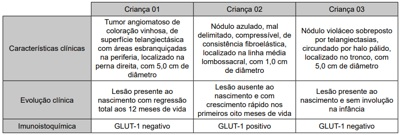
A A criança 01 pode apresentar insuficiência cardíaca, trombocitopenia e fibrinogênio baixo.
B A criança 02 encontra-se em risco de desenvolver o fenômeno de Kasabach-Merritt.
C A criança 02 pode apresentar, em mais de 50% dos casos, anomalias espinhais.
D A criança 03 apresenta um tumor vascular que responde bem ao tratamento com propranolol.
Questão 568 · Síndrome de SturgeWeber · Dermatologia · 4000194718Analise as afirmativas a seguir e a relação proposta entre elas. I. A síndrome de Sturge-Weber é uma doença neurocutânea esporádica na qual a mancha vinho do Porto facial está associada com malformações vasculares homolaterais ocular e das leptomeninges. PORQUE II. A síndrome de Sturge-Weber é um mosaicismo com mutação somática no gene GNAQ. Assinale a alternativa correta
A As afirmativas I e II são verdadeiras, e a II é uma justificativa da I.
B As afirmativas I e II são verdadeiras, mas a II não é uma justificativa da I.
C A afirmativa I é verdadeira, e a II é falsa.
D A afirmativa I é falsa, e a II é verdadeira.
Questão 569 · Dermatologia · Úlceras venosas · 4000194717Com relação às úlceras de perna, assinale a alternativa correta.
A As úlceras arteriais podem ser avaliadas pelo índice sistólico tornozelo-braquial (ITB) e um ITB maior que 1,0 é indicativo de doença arterial periférica.
B A úlcera hipertensiva de Buerger é um tipo de úlcera isquêmica relacionada a alterações da microcirculação que ocorre em pacientes com hipertensão arterial de difícil controle por longo período.
C A úlcera plantar diabética tem como principais fatores etiológicos o trauma e a infecção.
D As úlceras venosas são tratadas com métodos de compressão, e pressões externas em torno de 35 a 40 mmHg são necessárias, ao nível do tornozelo, quando o objetivo é a cicatrização das úlceras.
Questão 570 · Dermatologia · Livedo reticular e racemoso · 4000194716Analise os dois padrões de livedo, apresentados nas figuras 01 e 02 a seguir. Com base nessas figuras, analise as afirmativas a seguir. I. A figura 01 demonstra um tipo de livedo que geralmente é indicativo de uma doença vaso-oclusiva mais grave. II. A figura 01 demonstra um tipo de livedo encontrado na cútis marmorata telangiectásica congênita. III. A figura 02 demonstra um tipo de livedo encontrado nas formas primárias e idiopáticas. Está(ão) correta(s) a(s) afirmativa(s)

A I, apenas.
B II, apenas.
C III, apenas.
D I, II e III.
Questão 571 · Fototerapia UVB · Dermatologia · Fototerapia com psoralenos PUVA · 4000194715Com relação aos efeitos adversos da fototerapia, assinale com V as a rmativas verdadeiras e com F as falsas. ( ) A fototerapia PUVA apresenta um aumento de 15 vezes no risco de desenvolvimento de melanoma. ( ) A fototerapia UVB parece apresentar potencial menor de carcinogênese para câncer de pele não melanoma quando comparada à fototerapia PUVA. ( ) A fototerapia PUVA associada ao retinoide oral tem um efeito bené co por reduzir o risco de câncer de células escamosas. ( ) A fototerapia PUVA apresenta risco de pigmentação difusa da retina. Assinale a sequência correta.
A V F V F
B F V F V
C V F F V
D F V V F
Revisar: possível letra faltando em enunciado
Questão 572 · Outras teconologias aplicadas na Cosmiatria · Dermatologia · 4000194714Analise o caso clínico a seguir. Paciente do sexo feminino, 35 anos de idade, procura atendimento dermatológico para remoção de tatuagem cosmética de coloração branca nas pálpebras. Após avaliação, o dermatologista indica e realiza um laser Q- azulada. A alteração da cor da tatuagem decorre da mudança do estado oxidado para o estado reduzido de qual das substâncias existentes na tatuagem?
A Cromo.
B Titânio.
C Chumbo.
D Cádmio.
Questão 573 · Dermatologia · Pseudoxantoma elástico · 4000194713Analise o quadro clínico a seguir. Mulher de 28 anos de idade foi admitida na emergência com hemorragia digestiva. Ao ser examinada, foram observadas lesões papulosas amareladas dispostas em leira, na região cervical, axilas e dobras cubitais. O exame histopatológico de uma das lesões demonstrou alteração das fibras elásticas com depósito de cálcio. Qual órgão apresenta alterações patológicas associadas a esse quadro?
A Mamas.
B Ovários.
C Olhos.
D Pulmões.
Questão 574 · Dermatologia · Ictioses · 4000194712Entre as formas de ictiose, qual está relacionada com a deficiência da enzima esteroide sulfatase?
A Ictiose vulgar.
B Ictiose epidermolítica.
C Ictiose lamelar.
D Ictiose ligada ao sexo.
Questão 575 · Reação à droga com eosinof ilia e sintomas sistêmicos DRESS · Dermatologia · 4000194711O quadro caracterizado por exantema e edema de face associado a linfonodomegalia, febre, eosino lia periférica e hepatite, após uso de anticonvulsivante, corresponde ao diagnóstico de
A pustulose exantemática generalizada aguda.
B reação de hipersensibilidade a droga.
C urticária vasculite.
D síndrome de Stevens-Johnson.
Questão 576 · Dermatologia · Doença de Darier · 4000194709Analise o quadro clínico a seguir. Paciente com dermatose caracterizada por alterações ungueais como fenda em V e faixas longitudinais eritematosas e brancas além de lesões cutâneas. O exame histopatológico da pele demonstra acantólise suprabasal, corpos redondos e grãos. Nesse caso, qual é o diagnóstico?
A Doença de Hailey-Hailey.
B Pênfigo foliáceo.
C Doença de Darier.
D Pênfigo vegetante.
Questão 577 · Síndrome de Gardner · Dermatologia · Esclerose tuberosa · 4000194708Relacione a COLUNA I com a COLUNA II, associando as genodermatoses aos seus respectivos achados. COLUNA I 1. Esclerose tuberosa 2. Neurofibromatose tipo 1 3. Síndrome de Rendu-Osler-Weber 4. Síndrome de Gardner COLUNA II ( ) Telangiectasias, malformações arteriovenosas, epistaxe. ( ) Cistos epidérmicos, pólipos intestinais, adenocarcinoma do cólon. ( ) Máculas hipocrômicas, angiofibromas, placa de Shagreen. ( ) Manchas café com leite, escoliose, hamartomas da íris. Assinale a sequência correta.
A 2 4 3 1
B 1 3 4 2
C 3 4 1 2
D 4 3 2 1
Questão 578 · Dermatologia · Vasculite cutânea de pequenos vasos · 4000194707Com relação à púrpura de Henoch-Schönlein, assinale com V as afirmativas verdadeiras e com F as falsas. ( ) O acometimento articular não faz parte do quadro clínico. ( ) Ocorre após infecção de vias aéreas superiores. ( ) Caracteriza-se por lesões cutâneas de púrpura palpável. ( ) Nas crianças, não há acometimento renal. Assinale a sequência correta.
A V V V F
B F F F V
C F V V F
D V F F V
Questão 579 · Doenças das glândulas surodíparas écrinas e apócrinas · Dermatologia · 4000194706Sobre a hidradenite supurativa, assinale com V as afirmativas verdadeiras e F as falsas. ( ) Ocorre por infecção estafilocócica das glândulas apócrinas. ( ) Obesidade e tabagismo são fatores de risco. ( ) A ocorrência é frequente antes da puberdade. ( ) É comum a associação com os demais componentes da tríade de oclusão folicular. Assinale a sequência correta.
A V V V F
B F V F V
C F F V F
D V F F V
Questão 580 · Terapia clínica · Dermatologia · 4000194705Com relação às formulações farmacêuticas utilizadas na terapêutica tópica, assinale a alternativa correta.
A As pomadas são misturas ricas em água.
B As emulsões formam uma mistura heterogênea.
C Os géis creme contêm óleos, água e agentes gelificantes.
D As soluções são indicadas para fases crônicas dos eczemas.
Questão 581 · Dermatologia · Glicocorticoides · 4000194704Com relação ao uso da corticoterapia sistêmica de longo prazo e osteoporose, analise as a rmativas a seguir. I. Ocorre um rápido declínio da densidade mineral óssea nos primeiros seis meses da corticoterapia, e, em um ano, atinge-se o pico desse declínio. II. Os ossos longos são mais propensos à desmineralização do que os ossos do esqueleto axial. III. O aumento da excreção urinária e a redução da absorção do cálcio são mecanismos de ação que, de forma indireta, levam à perda óssea. Está(ão) correta(s) a(s) afirmativa(s)
A I e II, apenas.
B II, apenas.
C III, apenas.
D I, II e III.
Questão 582 · Imunomoduladores e imunossupressores · Dermatologia · 4000194703Sobre a talidomida, analise as afirmativas a seguir e assinale com V as verdadeiras e com F as falsas. ( ) A neuropatia periférica relacionada à droga pode ser definitiva. ( ) É lipofílica e atinge o pico plasmático duas a seis horas após a administração. ( ) Homens vasectomizados que tomam a medicação devem usar preservativo nas relações sexuais. ( ) Sua ação terapêutica é diminuída quando há ingesta concomitante de álcool. Assinale a sequência correta
A V F V V
B F V F F
C V V V F
D F F F V
Questão 583 · Dermatologia · Doenças perf urantes · 4000194702Com relação à elastose serpiginosa perfurante, analise as afirmativas a seguir e assinale com V as verdadeiras e com F as falsas. ( ) Associa-se com doenças genéticas e com o uso de penicilamina. ( ) Inicia-se mais frequentemente na infância e na adolescência. ( ) Ocorre preferencialmente no tronco e pernas. ( ) Acomete outros órgãos além da pele. Assinale a sequência correta.
A V F V V
B F V F V
C V V F F
D F F V F
Questão 584 · Anetodermia · Dermatologia · 4000194701Analise o caso clínico a seguir. Homem, 45 anos de idade, apresenta lesões deprimidas, atró cas, circunscritas, de 1 cm de diâmetro, localizadas no tronco, há dois anos. O estudo anatomopatológico mostrou uma fragmentação e diminuição focal de fibras elásticas na derme papilar e reticular. O quadro clínico e laboratorial descrito é secundário
A à rosácea ou à acropustulose infantil.
B à dermatomiosite ou à doença de Still do adulto.
C à hanseníase virchowiana ou à tuberculose cutânea.
D ao carcinoma basocelular ou ao carcinoma de células de Merkel.
Revisar: possível letra faltando em enunciado
Questão 585 · Síndrome de EhlersDanlos · Dermatologia · 4000194700Os pseudotumores moluscoides fazem parte do quadro clínico da
A síndrome de Marfan.
B síndrome de Loeys-Dietz.
C síndrome de Ehlers-Danlos.
D síndrome de Weill-Marchesani.
Questão 586 · Cicatrizes hipertróf icas e queloides · Dermatologia · 4000194699São importantes diagnósticos diferenciais clínico e histopatológico dos queloides, respectivamente:
A Xantoma disseminado e melanoma desmoplásico.
B Hanseníase tuberculoide e pênfigo vegetante.
C Carcinoma de Merkel e eumicetoma.
D Espiroadenoma écrino e sarcoidose.
Questão 587 · Dermatologia · Fibromatoses · 4000194698Analise o caso clínico a seguir. Homem, 70 anos de idade, refere que tinha um nódulo, o qual cresceu formando uma lesão linear na palma d a mão esquerda associada a uma contratura em exão de alguns dedos. Foi realizada uma biópsia da lesão, cujo exame anatomopatológico revelou proliferação de miofibroblastos. A doença relacionada ao quadro clínico e laboratorial descrito é mais comumente localizada na região
A ulnar.
B radial.
C do punho.
D do segundo dedo das mãos.
Questão 588 · Dermatologia · Pápulas piezogênicas · 4000194697Analise o quadro clínico a seguir. Homem, 30 anos de idade, apresenta pápulas normocrômicas, de 2 mm a 5 mm de diâmetro, localizadas na face lateral dos dois calcanhares que desaparecem quando a perna é levantada. Refere dor local quando faz atividade física. Sobre a doença relacionada ao quadro clínico descrito, analise as a rmativas a seguir e assinale com V as verdadeiras e com F as falsas. ( ) Acomete até 10% a 20% da população. ( ) Associa-se à síndrome de Bazex. ( ) Faz diagnóstico diferencial o fibroma aponeurótico juvenil. ( ) É resultante da herniação do tecido conjuntivo dérmico. Assinale a sequência correta.
A V F V F
B F V F V
C V V F V
D F F V F
Questão 589 · Dermatologia · Bioestimuladores de colágeno injetáveis · 4000194696Analise as afirmativas a seguir sobre as propriedades do ácido poli-L-láctico injetável. I. Há um resultado imediato devido ao depósito do ácido poli-L-láctico. II. É um preenchedor cujos metabólitos são eliminados por via renal. III. Estimula a neocolagênese, sendo indicado para sulcos e lipodistrofias. Está(ão) correta(s) a(s) afirmativa(s)
A I e III, apenas.
B II, apenas.
C III, apenas.
D I, II e III.
Questão 590 · Toxina botulínica · Doenças das glândulas surodíparas écrinas e apócrinas · Dermatologia · 4000194695Analise o caso clínico a seguir. Homem, 37 anos de idade, apresenta queixa de aumento da sudorese na região palmar há anos, a qual piora quando está ansioso. Realizou diversas tentativas terapêuticas sem sucesso. Foi proposta a terapia com toxina botulínica. Caso ocorra, qual o principal efeito adverso da terapêutica com toxina botulínica nesse paciente?
A Linfedema.
B Fenômeno de Raynaud.
C Fraqueza muscular transitória.
D Hiperidrose compensatória em outra área.
Questão 591 · Dermatologia · Sinais ungueais · 4000194694O aspecto de “unha em vidro de relógio” pode ocorrer na doença
A tinha do couro cabeludo.
B ascaridíase.
C urticária crônica.
D vitiligo.
Questão 592 · Dermatologia · Síndrome do choque tóxico estaf ilocócico e estreptocócico · 4000194693Com relação à síndrome do choque tóxico, a manifestação clínica mais frequente, tanto nos casos provocados pelo estafilococo como pelo estreptococo, é
A dor localizada nas extremidades.
B infecção de partes moles.
C hipotensão.
D erupção maculosa difusa.
Questão 593 · Dermatologia · Escabiose · 4000194692Com relação aos pacientes com sarna norueguesa infectados pelo HIV, assinale a alternativa correta.
A As lesões crostosas ocorrem, em geral, quando os linfócitos T CD4+ < 200 células/mm³.
B A cabeça e pescoço são usualmente poupados pela infestação.
C As lesões cutâneas não são habitadas pelos ácaros.
D O curso da escabiose se complica com fusariose disseminada com frequência.
Questão 594 · Dermatologia · Doenças linf oprolif erativas · 4000194691A granulomatose linfomatoide, o carcinoma nasofaríngeo, a síndrome linfoproliferativa ligada ao X e o hidroa vaciniforme estão relacionados ao agente infeccioso
A papilomavírus humano.
B poxvírus.
C herpesvirus 6.
D Epstein-Barr vírus.
Questão 595 · Dermatologia · Dermatoviroses · 4000194690Qual agente de infecção congênita é o responsável pela hematopoiese extramedular na pele?
A Lassa vírus.
B Herpesvirus 5.
C Papilomavírus humano (HPV).
D Poliomavírus.
Questão 596 · Doença da mãopéboca · Dermatologia · 4000194689Qual o enterovírus mais frequentemente relacionado a manifestações tegumentares acrais na infância?
A Parvovírus.
B Citomegalovírus.
C Coxsackievirus.
D Adenovírus.
Questão 597 · Dermatologia · Síf ilis · 4000194688O que é o sinal de Higouménakis?
A Palato em ogiva na esclerose tuberosa.
B Malformação da escápula na neurofibromatose.
C Afinamento dos dentes na porfiria eritropoiética.
D Espessamento da clavícula medial na sífilis.
Questão 598 · Dermatologia · Doenças cutâneas ambientais e relacionados com o esporte · 4000194687Com relação à dermatite por lã de vidro, assinale a alternativa correta.
A A dor é o principal sintoma referido pelo doente.
B As pápulas eritematosas com acentuação folicular são comuns.
C A histopatologia demonstra infiltrado neutrofílico dérmico.
D A paroníquia é uma manifestação incomum.
Questão 599 · Características clínicas · Dermatologia · 4000194686Com relação às urticárias de contato, qual substância apresenta risco de 10% de reação cruzada com compostos proteicos presentes no kiwi, abacate e banana?
A Lidocaína.
B Lodopovidona.
C Mononylon.
D Látex.
Questão 600 · Sistêmico · Imunomoduladores e imunossupressores · Dermatologia · 4000194685Sobre os medicamentos imunobiológicos usados na psoríase, analise as afirmativas a seguir. I. O ustequinumabe bloqueia as vias Th1 e Th17 na psoríase. PORQUE II. O ustequinumabe é um anticorpo monoclonal humanizado que se liga à subunidade p19 comum às interleucinas IL-23 e IL-17. A respeito dessas afirmativas, assinale a alternativa correta.
A As afirmativas I e II são verdadeiras, e a II é uma justificativa da I.
B As afirmativas I e II são verdadeiras, mas a II não é uma justificativa da I.
C A afirmativa I é verdadeira, e a II é falsa.
D A afirmativa I é falsa, e a II é verdadeira.
Questão 601 · Fisiopatologia · Dermatologia · 4000194684Sobre a patogênese da psoríase, analise as afirmativas a seguir. I. Drogas podem ser desencadeantes como lítio, interferon, antimaláricos e terbinafina. II. Fenômeno de Koebner pode ocorrer após queimaduras solares e exantemas virais. III. Colonização das lesões por Está(ão) correta(s) a(s) afirmativa(s)
A I, apenas.
B II, apenas.
C I e II, apenas.
D I, II e III.
Questão 602 · Dermatologia · Características clínicas · Fisiopatologia · 4000194683Sobre a dermatite das fraldas, assinale com V as afirmativas verdadeiras e com F as falsas. ( ) É causada pelo pH ácido da urina. ( ) Corresponde a um quadro de eritema, maceração e descamação que poupa as dobras inguinocrurais. ( ) Ocorre perda da integridade da barreira epidérmica por ação de enzimas produzidas pela albicans ( ) O atrito prolongado com a fralda age como irritante primário. Assinale a sequência correta.
A V F V F
B F V F V
C V F F V
D F V V F
Questão 603 · Dermatologia · Pitiríase liquenoide variolif orme aguda · Pitiríase liquenoide crônica · 4000194682Sobre as diferenças entre a pitiríase liquenoide e varioliforme aguda (PLEVA) e a crônica (PLC), assinale com V as afirmativas verdadeiras e com F as falsas. ( e PLEVA por lesões úlcero-necróticas que deixam cicatrizes varioliformes. ( ) PLC apresenta infiltrado de linfócitos T com predominância de CD8+ e PLEVA de CD4+. ( ) PLC não apresenta sinais sistêmicos e PLEVA pode ter uma forma febril aguda com lesões necróticas e envolvimento pulmonar e gastrointestinal. ( ) PLC é associada a doenças linfoproliferativas e PLEVA a infecções como hepatite C. Assinale a sequência correta.
A V F V F
B F V F V
C V F F V
D F V V F
Questão 604 · Penf igoide bolhoso · Dermatologia · 4000194681Analise o quadro clínico a seguir. Uma mulher de 72 anos de idade, com demência senil, apresenta prurido intenso há seis meses e, ao exame, placas eritematosas e edematosas, urticariformes, no tronco, abdome, coxas e braços. O exame histopatológico mostra edema na derme, espongiose com presença de polimorfonucleares. Um teste ELISA mostrou autoanticorpos BP180 circulantes. Sobre o quadro clínico apresentado, assinale com V as afirmativas verdadeiras e com F as falsas. ( ) O infiltrado inflamatório dérmico é predominantemente composto por neutrófilos. ( ) A imuno uorescência direta da pele perilesional mostra depósitos de IgG e C3 na zona da membrana basal. ( ) O tratamento do fragmento de biópsia com cloreto de sódio causa clivagem na zona da membrana basal e o depósito de IgG é visto na porção superior da clivagem. ( ) O depósito na zona da membrana basal é do tipo u-serrilhado. Assinale a sequência correta.
A V F V F
B F V F V
C V F F V
D F V V F
Questão 605 · Dermatologia · Endocrinologia · 4000194680Analise o caso clínico a seguir. Um homem de 78 anos de idade, com diabete tipo II há mais de 20 anos e hipertensão arterial, procurou atendimento devido ao surgimento de uma grande bolha na face anterior da perna esquerda há uma semana. A lesão é uma bolha tensa, de conteúdo claro a hemorrágico, de 5 cm de diâmetro. Relata que é o terceiro episódio no mesmo local, e que as primeiras desapareceram espontaneamente após algumas semanas. Faz uso de captopril, metformina e insulina NPH. O exame histopatológico mostrou bolha subepidérmica e a imunofluorescência foi negativa. Nesse caso, qual é o diagnóstico?
A Epidermólise bolhosa adquirida.
B Penfigoide bolhoso pré-tibial.
C Bullosis diabeticorum.
D Porfiria cutânea tardia.
Questão 606 · Dermatologia · Apresentação clínica · 4000194679Analise o quadro clínico a seguir. Um homem de 62 anos de idade procurou atendimento dermatológico apresentando eritrodermia de início na cabeça e no pescoço e progressão craniocaudal. Negava doenças prévias ou uso de medicações. Ao exame físico, apresentava ceratose folicular sobre base eritematosa no tronco e membros, coalescendo em placas amarelo-alaranjadas com áreas de pele poupada, ceratodermia palmoplantar e unhas espessadas d e coloração amarelada. O exame histopatológico mostrou dermatite psoriasiforme com hiperceratose irregular, folículos pilosos preenchidos com tampão de ceratina, e paraceratose ao redor da abertura folicular. Considerando o quadro clínico e histopatológico descritos, qual é o diagnóstico?
A Psoríase eritrodérmica.
B Pitiríase rubra pilar.
C Micose fungoide.
D Reação exantemática à droga.
Questão 607 · Fisiopatologia · Dermatologia · 4000194678Sobre a imunologia da dermatite atópica, assinale a alternativa correta.
A A subunidade p19 dos receptores para IL-4 e IL-13 é o alvo do anticorpo monoclonal dupilumabe.
B A ativação da via intracelular STAT1 promove a diferenciação de células T
C Os linfócitos Th17 são encontrados apenas na fase aguda da doença.
D A IL-31 é uma citocina Th2 relacionada ao prurido.
Questão 608 · Dermatologia · Outras dermatoses neutrof ílicas · 4000194677Analise o caso clínico a seguir. Um lactente de três meses apresenta vesículas e pústulas recorrentes nas palmas, plantas e dorso dos pés, com duração de 10 dias e resolução espontânea. Já havia tido episódio parecido há um mês. A pesquisa de Sarcoptes numerosos neutrófilos e eosinófilos e a cultura foi negativa. Nesse caso, qual é o diagnóstico?
A Acropustulose da infância.
B Síndrome de Job.
C Foliculite pustulosa eosinofílica da infância.
D Incontinência pigmentar.
Questão 609 · Dermatologia · Eritema indurado de Bazin · 4000194676Com relação ao eritema indurado, assinale a alternativa correta.
A Caracteriza-se por paniculite septal sem ocorrência de vasculite.
B Ocorre com maior frequência no sexo feminino.
C As lesões são eritematosas, induradas e indolores.
D A presença de necrose na histopatologia exclui o diagnóstico.
Questão 610 · Anatomia f isiologia e embriologia · Dermatologia · 4000194675Com relação à estrutura da pele, analise as afirmativas a seguir. I. A camada basal é composta por uma única fileira de queratinócitos justapostos lado a lado. II. A zona da membrana basal não possui componentes de origem dérmica. III. A derme reticular é composta principalmente por feixes densos de fibras colágenas do tipo I. Esta
A I, apenas.
B I e III, apenas.
C I e II, apenas.
D II e III, apenas.
Questão 611 · Escleredema · Dermatologia · Mucinoses eritematosa reticular · 4000194674Sobre as mucinoses, assinale a alternativa correta.
A Gamopatia monoclonal por IgA e progressão para mieloma sintomático são comuns no escleromixedema
B Mucinose folicular em indivíduos mais velhos associa-se aos linfomas cutâneos do tipo B.
C Mucinose eritematosa reticulada acomete mulheres de meia idade e tem boa resposta com uso de antimaláricos.
D Escleredema pós-infeccioso é comumente precedido de infecção estafilocócica.
Questão 612 · Amiloidose cutânea · Dermatologia · 4000194673Com relação às amiloidoses, analise as afirmativas a seguir. I. Na amiloidose cutânea primária, os depósitos de fibrilas amiloides derivam da necrose dos queratinócitos. II. Na amiloidose cutânea, o depósito de amiloide está limitado à parte superior da epiderme. III. Na amiloidose nodular, os depósitos amiloides derivam de imunoglobulinas de cadeia leve. Esta
A I, apenas.
B II e III, apenas.
C I e III, apenas.
D I e II, apenas.
Questão 613 · Dermatologia · Porf iria cutânea tarda · 4000194672Com relação à por ria cutânea tarda esporádica (tipo I), assinale com V as a rmativas verdadeiras e com F as falsas. ( ) O distúrbio enzimático tem início, em geral, na vida adulta. ( ) Os medicamentos e infecções são fatores desencadeantes. ( ) O defeito enzimático está presente em todos os tecidos. ( ) Aherança autossômica recessiva de penetrância é variável. Assinale a sequência correta.
A F V F V
B V V F F
C V F V V
D F F V F
Questão 614 · Dermatologia · Xantomas · 4000194671Com relação aos xantomas, analise as afirmativas a seguir. I. Xantomas eruptivos ocorrem nos casos de hipercolesterolemia primária ou secundária. II. Xantomas tuberosos são classicamente associados ao aumento dos níveis de triglicerídeos. III. Xantelasma é a forma mais comum de xantoma e pode ocorrer em pacientes normolipêmicos. Está(ão) correta(s) a(s) afirmativa(s)
A II, apenas.
B II e III, apenas.
C I e III, apenas.
D III, apenas.
Questão 615 · Dermatologia · Doença do enxerto versus hospedeiro · 4000194670Sobre a doença enxerto falsas. ( extremidades. ( ) DEVH aguda apresenta-se como exantema escarlatiniforme com predileção inicial pela face e raiz dos membros. ( ) Dor à pressão palmoplantar e coloração violácea nos pavilhões auriculares são sugestivos da DEVH crônica. ( ) Fígado e trato gastrointestinal são outros órgãos envolvidos na DEVH aguda. Assinale a sequência correta.
A V F F V
B F V F V
C F V V F
D V F V F
Questão 616 · Dermatologia · Hipomelanoses hereditárias · 4000194669Sobre a hipomelanose macular progressiva, assinale com V as afirmativas verdadeiras e com F as falsas. ( ) As lesões são muito pruriginosas e geralmente precedidas de processo inflamatório. ( ) As lesões acometem principalmente o tronco e raramente a face. ( ) O exame com lâmpada de Wood revela fluorescência avermelhada nos óstios foliculares. ( ) A patogênese está associada à proliferação de Assinale a sequência correta.
A F V V V
B V F V F
C F F F V
D V V F F
Questão 617 · Dermatologia · Dermatoscopia · 4000194668Sobre a dermatoscopia das lesões melanocíticas da região palmoplantar, analise as afirmativas a seguir. I. A maioria das lesões benignas apresenta o padrão em sulcos paralelos. II. O padrão globular é encontrado em adultos e sugere malignidade. III. O padrão mais sugestivo de melanoma é o de cristas paralelas. Está(ão) correta(s) a(s) afirmativa(s)
A III, apenas.
B I, apenas.
C I e III, apenas.
D I, II e III.
Questão 618 · Imunologia da hanseníase · Dermatologia · 4000194667Acerca dos aspectos genéticos da hanseníase, analise as afirmativas a seguir. ( ) A resistência natural à hanseníase ocorre em cerca de 50% dos indivíduos. ( ) Os polimorfirmos do gene PARK2 são fatores de risco para hanseníase. ( ) A variabilidade genética do bacilo da hanseníase é muito baixa. ( ) A resposta da imunidade inata do hospedeiro à hanseníase tem influência genética. Assinale a sequência correta.
A F V V V
B V F F F
C F F F V
D V V V F
Questão 619 · Dermatologia · Estados reacionais · 4000194666Sobre as reações hansênicas, analise as afirmativas a seguir. I. As lesões cutâneas da reação tipo 2 em geral são assimétricas e acometem a superfície exora das extremidades. II. A vasculopatia é marcante no fenômeno de Lúcio, com trombose dos vasos super ciais e profundos, e hemorragia. III. As células T reguladoras CD4+, CD25+, Foxp3+(T-reg) fazem parte da patogênese da reação tipo 1. Está(ão) correta(s) a(s) afirmativa(s)
A I e II, apenas.
B III, apenas.
C II e III, apenas.
D I, II e III.
Questão 620 · Dermatologia · Leishmaniose tegumentar americana · 4000194665Sobre os testes diagnósticos para leishmaniose tegumentar americana, assinale com V as afirmativas verdadeiras e com F as falsas. ( ) A reação intradérmica com antígenos de o resto da vida. ( ) A sorologia é usada para diagnóstico, pois tem alta especi cidade e sensibilidade, e correlaciona-se com a positividade parasitológica. ( ) O exame direto deve ser feito de material raspado do fundo da úlcera, mas tem baixa sensibilidade nas fases iniciais da doença. ( ) Acultura é feita a partir do exsudato sanguinolento da borda da lesão, pode levar mais de três semanas para positivar e contribui para definição da espécie. Assinale a sequência correta.
A V F V F
B F V F V
C V F F V
D F V V F
Questão 621 · Cardiologia · 4000194664Um homem de 51 anos de idade, com histórico de hipertensão arterial, diabetes e dislipidemia, deu entrada no pronto-socorro com queixas de mal-estar inespecífico, dor torácica ventilatório-dependente, em pontada, de moderada intensidade, em região retroesternal e epigástrio. Além disso, relata dispneia aos grandes esforços e episódios de febre (T = 39,4°C) surgidos na última semana. O exame físico revelou que o paciente está em regular estado geral eupneico, corado e orientado. Ausculta cardíaca com ritmo regular, em 2 tempos, sem sopros. A ausculta pulmonar estava normal. A dosagem laboratorial de troponina foi de 1.800 ng /mL (VR < 0,04 ng/mL) e o eletrocardiograma foi o seguinte: Qual dos exames a seguir deverá ser solicitado nesse caso?

A Cateterismo cardíaco.
B Angiotomografia de coronárias.
C Cintilografia do miocárdio.
D Ecocardiograma.
Questão 622 · Avaliação Inicial · Quadro Clínico e Indicações de Tomograf ia de Crânio · 4000194663Um homem com 80 anos de idade é levado ao atendimento por familiares após queda da própria altura. Enquanto andava pelo jardim, escorregou e bateu a cabeça em um vaso. Não apresentou perda da consciência, cefaleia, confusão mental ou náuseas. Não tem antecedentes mórbidos relevantes, exceto por HAS bem controlada com anlodipino 10 mg ao dia. Sobre o caso, qual é a conduta mais adequada?
A Solicitar radiografia de crânio e, se o exame for normal, dar alta para casa.
B Indicar TC de crânio com contraste dada a maior sensibilidade para detecção de sangramento intracraniano.
C Encaminhar o paciente para internação e observação por ao menos 24 horas.
D Solicitar TC de crânio sem contraste.
Questão 623 · Dermatologia · 4000194662Uma paciente de 34 anos, obesa e com diabetes do tipo II queixa-se de manchas escuras nas axilas e nas virilhas. Ao exame, observam-se placas hipercrômicas, de superfície aveludada localizada nas áreas relatadas. Assinale a alternativa correta quanto ao diagnóstico.
A Dermopatia diabética.
B Intertrigo.
C Hidradenite supurativa.
D Acantose
Questão 624 · Diagnóstico · 4000194661Dezesseis dias após retornar de viagem ao interior do Estado do Amazonas, um engenheiro de 32 anos de idade apresentou quadro súbito de febre elevada, mal-estar, cefaleia intensa e mialgia. A médica que o atendeu na unidade básica de saúde em seu município (Porto Alegre - RS) suspeitou de malária. O paciente nega ter tido malária no passado. Assinale a alternativa correta.
A O agente etiológico provável, nesse caso, é o
B A notificação desse caso suspeito é compulsória, mas não imediata.
C A médica deve solicitar o exame de gota espessa.
D Como esse é o primeiro episódio de malária desse paciente, a chance de malária grave é menor. A cada episódio de malária, a possibilidade de malária grave aumenta.
Questão 625 · Psiquiatria · 4000194660Uma jovem de 22 anos, estudante de arquitetura, foi encontrada pelo pai desacordada dentro do banheiro de sua casa, tendo sido levada às pressas para o pronto-socorro mais próximo da residência da família. O pai da jovem, muito a ito, contou que a lha “sempre foi muito saudável”, mas que há alguns meses iniciou tratamento para depressão, com uso de uoxetina e diazepam, após ter recebido a notícia que só restavam alguns meses de vida para sua mãe. O genitor conta que sua esposa está recebendo cuidados paliativos em casa, explicando, de forma pesarosa, que ela havia “perdido a batalha contra o câncer de mama”, e que as intensas dores sofridas pela esposa geram um grande sofrimento e sensação de impotência em toda a família. Em uma breve avaliação inicial, o plantonista que recebe o caso observa os seguintes achados: hipotensão, bradipneia, bradicardia, resposta apenas aos estímulos dolorosos e miose bilateral. Diante deste cenário, o médico rapidamente desconfia de uma intoxicação exógena e solicita a aplicação de:
A flumazenil.
B N-acetilcisteína (NAC).
C naloxona.
D atropina.
Questão 626 · Pneumologia · 4000194659Você está atendendo um paciente de 28 anos, com história de febre, tosse e expectoração há 5 dias, em uso de azitromicina, que relata prostração no último dia, dor torácica ventilatório-dependente e piora da dispneia. Ao realizar uma radiogra a de tórax, foi constatado um derrame pleural à esquerda e realizada a toracocentese diagnóstica. Após a toracocentese, decidiu-se por drenagem pleural. A análise do líquido pleural desse paciente provavelmente era:
A relação proteína líquido pleural/proteína sérica < 0,5.
B nfiltrado linfocítico com raras células mesoteliais.
C PH: 7,1 e LDH: 1200 UI/L.
D ADA > 60.
Questão 627 · Reumatologia · 4000194656Homem, 47 anos, procura o pronto atendimento referindo dor intensa no tornozelo direito há 24 horas. Relata que a dor vem em piora e que está com muita di culdade para andar. Nega trauma. Já apresentou quadro prévio semelhante no 1º pododáctilo à esquerda há cerca de 6 meses e teve melhora espontânea. Antecedentes: hipertensão e diabetes mellitus. Está em uso de hidroclorotiazida 25 mg, losartana 50 mg e metformina 850 mg duas vezes ao dia. Ao exame físico: bom estado geral, corado, hidratado, acianótico, anictérico, afebril, eupneico, fácies de dor. IMC: 28 kg/m². Dextro: 89 mg/dL. PA: 128 x 80 mmHg. Dor, calor e edema em tornozelo direito com limitação da amplitude de movimento. Exames laboratoriais: hemoglobina 14,1 g/dL, hematócrito 43%, leucócitos 7.800/mm³, plaquetas 260.000/mm³, creatinina 0,9 mg/dL, ureia 32 mg/dL, PCR 8,2 mg/L (VR < 3 mg/L). Realizada punção articular e análise do líquido sinovial mostra celularidade de 38.000/mm³ com 60% de polimorfonucleares, presença de cristais em formato de agulha e birrefringência negativa, Gram e culturas em andamento. Tendo em vista a principal hipótese diagnóstica, qual das medicações abaixo não está indicada para melhora sintomática do paciente?
A Naproxeno.
B Colchicina.
C Alopurinol.
D Prednisona.
Questão 628 · Nef rologia · 4000194655Em que situação abaixo não há indicação de início de diálise?
A Paciente com quadro de choque séptico de foco pulmonar com uso de droga vasoativa em doses altas, redução progressiva do débito urinário a despeito de uso de furosemida e reposição de bicarbonato de sódio que apresenta os seguintes exames: creatinina 1,6 mg/dL – ureia 110 mg/dL – pH 7,08 – PCO2 52 mmHg – bicarbonato 8,3 mEq/L– Potássio 4,3 mEq/L.
B Jovem com área de queimadura extensa com adequada ressuscitação volêmica inicial que evolui com oligúria a despeito de todas as medidas clínicas e apresenta os seguintes exames: creatinina 4,2 mg/dL – ureia 122 mg/dL – pH 7,32 – bicarbonato 18,3 mEq/L – Potássio 7,3 mEq/L.
C Idoso que dá entrada no PS com dispneia, dessaturação, crise hipertensiva associada a edema, hepatomegalia e estertores crepitantes bilaterais em todo hemitórax. Feito morfina, suplementação de oxigênio e diurético de alça com apenas 150 mL diurese em 4 horas.
D Jovem com quadro de síndrome nefrótica apresenta quadro de anasarca: edema em membros inferiores até raiz de coxa, ascite, estertores bibasais e edema periorbitário. Apresenta os seguintes exames: creatinina 4,6 mg/dL – ureia 110 mg/dL – pH 7,38 – bicarbonato 22,3 mEq/L– Potássio 4,3 mEq/L.
Questão 629 · Ortopedia · 4000194654A respeito do trauma raquimedular, assinale a alternativa correta.
A Em um paciente com Glasgow 14, com suspeita de trauma raquimedular, deve-se proceder à solicitação de exames radiográficos, em detrimento da avaliação clínica da coluna.
B Pacientes com suspeita de trauma raquimedular que apresentam bradicardia e hipotensão devem ser tratados com reposição volêmica volumosa.
C A ausência de reflexo bulbocavernoso nas primeiras horas do trauma é indicativa de lesão completa da medula.
D A lesão centromedular é mais comum em pacientes jovens.
Questão 630 · Carcinoma de Células Escamosas CEC · Adenocarcinoma de Esôf ago · 4000194653Homem, 72 anos, tabagista e etilista de longa data, apresenta-se com disfagia progressiva e perda de 12 kg em 3 meses. Diante da suspeita clínica, o médico da UBS solicitou esofagograma baritado, que revelou área de estenose irregular no terço médio do esôfago. Aponte o diagnóstico mais provável e o exame complementar indicado para confirmação diagnóstica.
A Adenocarcinoma de esôfago médio, endoscopia digestiva alta com biópsias.
B Divertículo mesoesofágico, tomografia computadorizada.
C Carcinoma escamoso de esôfago, endoscopia digestiva alta com biópsias.
D Acalásia, manometria de esôfago.
Questão 631 · Cirurgia · 4000194652Paciente feminina, 52 anos, em tratamento quimioterápico para o câncer de mama, está internada após descompensação clínica. No 3º dia de internação, evoluiu com edema do antebraço direito, dor local, vermelhidão ao redor da área do acesso periférico e induração do trajeto venoso. Nesse caso, considerando a hipótese diagnóstica mais provável, o tratamento mais adequado é:
A tratamento com anticoagulação em dose plena.
B tratamento com anti-inflamatório não esteroidal.
C antibioticoterapia para germes Gram-positivos.
D tratamento com antiagregação plaquetária.
Questão 632 · Cirurgia · 4000194651Paciente lactente do sexo masculino, 6 semanas de vida, foi trazido pela mãe ao pronto atendimento com queixa de vômitos não biliosos com aumento de intensidade em frequência nas últimas duas semanas. A mãe refere que não percebeu mudança no apetite da criança. No entanto, desde o início dos episódios, a criança já havia emagrecido 350 gramas. Ao exame físico, regular estado geral, mucosas normocoradas e desidratadas (+/4+), abdome emagrecido, com peristaltismo intenso e visível através da parede abdominal. Frente a esse caso, qual é a hipótese diagnóstica mais provável?
A Intussuscepção.
B Doença do refluxo gastroesofágico.
C Atresia pilórica.
D Estenose hipertrófica do piloro.
Questão 633 · Cirurgia · 4000194650Paciente masculino, 65 anos, vem em consulta com o urologista após ter sido encaminhado à especialidade pelo médico d a UBS, devido à uma alteração e m seu exame d o PSA (5,0 ng/mL). A o ser questionado a respeito de seus sintomas e comorbidades, o paciente refere ser assintomático e não apresentar nenhuma comorbidade. Ao toque retal, próstata de consistência broelástica, sem nódulos, de volume aproximado de 40 g. Foi submetido à biópsia transretal da próstata, guiada por ultrassonogra a, que revelou diagnóstico de adenocarcinoma de próstata Gleason 6 (3+3) em 2 fragmentos do lobo direito. Que conduta terapêutica não deve ser indicada a esse paciente nesse momento?
A Prostatectomia radical.
B Conduta expectante.
C Terapia de deprivação androgênica.
D Braquiterapia.
Questão 634 · Cirurgia · 4000194649Paciente masculino, 42 anos, Bombeiros por conta de um incêndio na cozinha do restaurante onde trabalhava. Ao exame físico, o paciente está muito agitado e com fala rouca, PA = 130 x 85; FC = 100 bpm, FR = 25 irpm, saturação de O2 92% em uso de máscara não reinalante. Possui queimaduras de 2º grau em membro inferior esquerdo e abdome, e queimadura circular de terceiro grau acometendo membro superior esquerdo. A conduta prioritária nesse caso é:
A sedação e escarotomia do membro.
B intubação orotraqueal.
C obter acesso venoso e iniciar reposição volêmica.
D retirar roupas e adereços para interromper o processo de queimadura.
Questão 635 · Cirurgia · 4000194648Paciente de 67 anos de idade, do sexo feminino, diabética, com histórico de gastrectomia total e reconstrução em Y de Roux por neoplasia gástrica há 7 anos. Foi admitida no pronto-socorro com queixa de dor abdominal em hipocôndrio direito e febre aferida de 38,9º C. Ao exame físico, encontra-se ictérica +++/4, sonolenta, FC = 120 bpm; temperatura axilar = 39º C; PA = 85 x 50 mmHg. Abdome está doloroso à palpação do hipocôndrio direito, sinal de Murphy negativo. Laboratório: Hb: 13,2 g/dL; Leuco: 19.200 /mm³ (5% de bastões); PCR: 190 mg/dL; BT: 8,9 mg/dL; BD: 7,5 mg/dL; Amilase: 45 U/L. Realizada ultrassonogra a à beira do leito que evidenciou: vesícula com cálculos em seu interior, colédodo medindo 1 cm, com cálculo impactado em sua porção distal e dilatação da via biliar extra-hepática. Qual é a principal hipótese diagnóstica e sua conduta?
A Colangite aguda – reanimação volêmica, antibioticoterapia e drenagem da via biliar por CPRE (colangiopancreatografia retrógrada endoscópica)
B Colangite aguda – reanimação volêmica, antibioticoterapia e drenagem transparieto-hepática da via biliar guiada por ultrassonografia
C Colecistite aguda litiásica – reanimação volêmica, antibioticoterapia e colecistostomia guiada por ultrassonografia.
D Colangite aguda – reanimação volêmica, antibioticoterapia e drenagem cirúrgica da via biliar.
Questão 636 · Cirurgia · 4000194647Paciente feminina, 55 anos, admitida com queixa de dor e distensão abdominal há 3 dias, associada a náuseas, vômitos biliosos e parada da eliminação de fezes e atos. Refere laparotomia prévia por quadro de apendicite aguda há 15 anos. Ao exame físico: Abdome distendido, timpânico à percussão, RHA aumentados, descompressão brusca positiva nos quadrantes inferiores e abaulamento irredutível na região inguinal direita, sem hiperemia local. Realizada radiogra a (em anexo). Baseado no caso apresentado, qual é o diagnóstico e a conduta?

A Obstrução intestinal por bridas – tratamento conservador com jejum, sonda nasogástrica, hidratação e correção dos distúrbios hidroeletrolíticos.
B Obstrução intestinal por bridas – laparotomia exploradora
C Obstrução intestinal por hérnia inguinal encarcerada – tratamento cirúrgico de urgência via inguinotomia direita.
D Obstrução intestinal por hérnia inguinal encarcerada – tratamento cirúrgico de urgência via laparoscopia.
Questão 637 · Cirurgia · 4000194646Paciente de 28 anos dá entrada em uma unidade básica de saúde com queixa de dor na região peniana há 6 horas. Relata que estava praticando relação sexual vigorosa quando houve a ocorrência de estalo seguido de dor e intumescência no pênis. Ao exame, apresenta hematoma peniano, com deformidade “em berinjela” e presença de sangue no meato uretral. Nesse caso, a conduta mais recomendada é:
A Solicitar transferência para tratamento cirúrgico de urgência.
B Aspiração do hematoma com agulha calibrosa e injeção intracavernosa de drogas simpatomiméticas (fenilefrina).
C Prescrição de gelo e anti-inflamatórios.
D Passagem de sonda vesical de demora e encaminhamento ao ambulatório de Urologia.
Questão 638 · Cirurgia · 4000194645Paciente masculino, 60 anos, tabagista, obesidade grau I, portador de hipercolesterolemia, hipertensão arterial, tratados de forma irregular, procura o ambulatório de Cirurgia Vascular com queixa de dor nas panturrilhas (pior à direita) durante caminhadas há mais de um ano, que o obriga a parar e descansar. Há 3 semanas, notou que o hálux cou “mais arroxeado” e começou a apresentar dor no membro inferior direito, mesmo sem caminhar. Ao exame: necrose seca do hálux direito e cianose xa do 2º e 3º pododáctilos à direita. Pulsos femorais presentes, porém pulsos poplíteo, tibial posterior e pedioso ausentes à direita e diminuídos à esquerda. Qual a é a melhor conduta para esse caso
A Tratamento clínico com cilostazol, uso de estatinas e ASS, controle da hipertensão, orientação de cessar o tabagismo e exercícios supervisionados.
B Amputação do hálux direito e angiotomografia para programar a revascularização
C Embolectomia cirúrgica
D Angiotomografia para programação de revascularização.
Questão 639 · Ginecologia · 4000194644Paciente de 2 4 anos vem a o ambulatório d e ginecologia referindo ausência de menstruação há 6 meses. Refere que sua primeira menstruação foi aos 14 anos e que, desde então, seus ciclos sempre vieram de maneira irregular, chegando a car at é 4 meses sem menstruar. Além d a irregularidade menstrual, refere acne em região de tronco e face e leve hirsutismo. Pensando na principal hipótese diagnóstica para o quadro, que exames são indispensáveis na investigação do quadro?
A Dosagem de testosterona total e livre e de insulina e ultrassonografia pélvica.
B TSH, prolactina, FSH, beta-hCG e 17 OH progesterona.
C Ultrassonografia pélvica, RNM de crânio e FSH.
D LH, FSH, testosterona total e livre, SDHEA e 17OH progesterona.
Questão 640 · Ginecologia · 4000194643Paciente vem ao pronto-socorro com história de dor pélvica de instalação súbita há 4 horas. Refere que estava na academia e começou a sentir uma dor intensa na região pélvica e que está piorando. Refere que há 4 meses tem episódios esporádicos de dor pélvica, que melhoraram espontaneamente. Refere que apresentou um episódio de vômito associado à dor. Refere que a última menstruação foi há 12 dias e utiliza DIU de cobre como método contraceptivo há 3 anos. Nega outros sintomas associados. No exame físico, apresenta dor importante em fossa ilíaca direita, com descompressão brusca duvidosa. A paciente foi submetida a uma ultrassonografia com a imagem a seguir: Qual é a principal hipótese diagnóstica para o caso e a conduta a ser tomada?

A Cisto hemorrágico roto; observação clínica.
B Abscesso tubo ovariano; internação hospitalar para drenagem.
C Torção ovariana; videolaparoscopia de urgência.
D Endometrioma; prescrever anticoncepcional combinado contínuo.
Questão 641 · Ginecologia · 4000194642Mulher de 32 anos encontra-se no 30º dia de puerpério e vem em consulta na UBS solicitando um método contraceptivo, pois não deseja ter mais lhos. Ela foi submetida a um parto cesáreo por desproporção céfalo-pélvica e corioamnionite, tendo sido tratada com antibiótico após o parto.. Encontra-se em aleitamento exclusivo e nega queixas. De acordo com os critérios de elegibilidade da OMS, qual é o método mais adequado para essa paciente?
A DIU de cobre.
B Injetável mensal.
C Implante subdérmico.
D Amenorreia lactacional.
Questão 642 · Ginecologia · 4000194641Paciente de 2 6 anos realizou seu segundo exame de colpocitologia oncótico, e o resultado foi uma lesão intraepitelial de alto grau (LIEAG). O médico de família encaminhou-a para a realização de colposcopia. Durante o exame, foi evidenciada uma lesão acetobranca densa como mosaico grosseiro (achados maiores), com junção escamo-colunar completamente visível, sem suspeitas de invasão. Diante desse caso, qual é a conduta a ser realizada no momento?
A Cauterização do colo uterino.
B Repetição da colposcopia e da citologia em 6 meses.
C Biópsia do colo uterino.
D Exérese da zona de transformação.
Questão 643 · Ginecologia · 4000194640Adolescente de 17 anos vem ao consultório do ginecologista queixando-se de nunca ter menstruado. Refere que, por volta dos 14 anos, apresentou início do desenvolvimento das mamas, mas que elas não cresceram muito. Ao exame físico, a paciente apresenta estágio de Tanner M3P1. Diante do exposto, qual é a principal hipótese diagnóstica para o caso?
A Síndrome de insensibilidade androgênica.
B Disgenesia gonadal pura.
C Síndrome de Kallmann.
D Síndrome de Rokitansky.
Questão 644 · Obstetrícia · 4000194639Uma mulher com 20 anos foi atendida pela equipe de triagem de uma unidade de saúde da família, trazendo teste de gravidez de farmácia positivo. O médico que a atende, após anamnese completa e exame clínico, classifica-a como gestante de baixo risco e solicita testes rápidos para hepatite B e C, sí lis e HIV. Os resultados de todos os exames, exceto o de sí lis, são negativos. A paciente refere que apresentou o mesmo teste positivo há 1 ano, quando internou no hospital por conta de um abortamento espontâneo, recebendo uma injeção ainda no hospital, mas não voltou à USF desde então. Refere que seu parceiro atual não é o mesmo de 1 ano atrás. Após explicar a situação para a paciente, o médico:
A solicita VDRL, prescreve para a paciente penicilina benzatina 2,4 milhões UI, 1x por semana por 3 semanas, testa e trata as parcerias sexuais, notifica a vigilância epidemiológica e realiza VDRL mensalmente após o tratamento.
B solicita FTA-ABS e VDRL, prescreve para a paciente penicilina benzatina 2,4 milhões UI, 1x por semana por 3 semanas, testa e trata as parcerias sexuais, notifica a vigilância epidemiológica e realiza VDRL mensalmente após o tratamento.
C solicita VDRL, prescreve para a paciente penicilina benzatina 2,4 milhões UI, dose única, testa e trata o parceiro atual, notifica a vigilância epidemiológica e realiza VDRL e FTA-ABS mensalmente após o tratamento.
D solicita FTA-ABS e VDRL, prescreve para a paciente penicilina benzatina 2,4 milhões UI, 1x por semana por 2 semanas, testa e trata as parcerias sexuais, notifica a vigilância epidemiológica e realiza VDRL mensalmente após o tratamento.
Questão 645 · Obstetrícia · 4000194638Primigesta, com 25 anos, foi encaminhada pela unidade de saúde da família para o ambulatório de alto risco po r gestação gemelar monocoriônica e diamniótica d e 1 2 semanas. A paciente nega queixas e nega comorbidades. Durante a consulta, apresenta útero à 16 cm da sín se púbica, batimentos cardíacos fetais audíveis, pressão arterial de 110 x 60 mmHg, peso de 85 kg, altura de 1.60 m. A conduta a ser adotada nessa consulta, a fim de diminuir os riscos dessa gestação, é a prescrição de:
A progesterona 200 mg, 1x ao dia, via vaginal.
B progesterona 200 mg, 1x ao dia, via vaginal, e ácido acetilsalicílico 100 mg, uma vez ao dia, via oral.
C ácido acetilsalicílico 100 mg, uma vez ao dia, via oral.
D ácido acetilsalicílico 100 mg, uma vez ao dia, via oral, e enoxaparina 1 mg/kg, duas vezes ao dia, via subcutânea.
Questão 646 · Obstetrícia · 4000194637Uma primigesta com 26 anos comparece à unidade de saúde da família (USF) apresentando os resultados de exames solicitados na primeira consulta de pré-natal, realizada há 2 semanas, com 12 semanas de gestação. Nega queixas, refere estar usando regularmente o ácido fólico e o sulfato ferroso prescritos. O médico verifica que a tipagem sanguínea é O negativa, que os testes rápidos para sí lis, HIV e hepatite B e C foram não reagentes e que todos os outros exames estão dentro da normalidade. Nesse caso, a conduta a ser adotada é:
A solicitar Coombs indireto, tipagem sanguínea do pai do feto, realizar imunoglobulina anti-Rh com 28 semanas se o Coombs indireto for negativo e em até 72h pós-parto se o recém-nascido for Rh positivo.
B solicitar Coombs direto, tipagem sanguínea do pai do feto, realizar imunoglobulina anti-Rh com 28 semanas se o Coombs direto for negativo e em até 72h pós-parto se o recém-nascido for Rh positivo.
C solicitar Coombs indireto, tipagem sanguínea do pai do feto, realizar imunoglobulina anti-Rh em até 72h pós-parto se o Coombs indireto for negativo e o recém-nascido for Rh negativo.
D solicitar Coombs direto, tipagem sanguínea do pai do feto, realizar imunoglobulina anti-Rh em até 72h pós-parto se o Coombs direto for negativo e o recém-nascido for Rh positivo.
Questão 647 · Obstetrícia · 4000194636Uma paciente com 35 anos apresenta sangramento vaginal intenso, 6h após cesariana de urgência por descolamento prematuro de placenta. Refere ser hipertensa crônica em uso de metildopa durante a gestação. Ao exame físico, apresenta-se: em regular estado geral; orientada; com frequência cardíaca de 120 batimentos por minuto; pressão arterial de 90 x 60 mmHg; à ausculta cardíaca, com ritmo cardíaco regular em dois tempos, bulhas hipofonéticas, sem sopros; à ausculta pulmonar, com murmúrios vesiculares sem ruídos adventícios. O exame do abdome da paciente evidencia útero amolecido e palpável a 8 cm acima da cicatriz umbilical. Ferida operatória com boa aparência. Realizada ocitocina endovenosa e massagem uterina bimanual, sem melhora do quadro. A conduta preconizada, nesse momento, é:
A ringer lactato 1.000 mL endovenoso, transfusão de hemoconcentrado de hemácias, ácido tranexâmico endovenoso 1 g e ergotamina intramuscular 0,2 mg
B transfusão de hemoconcentrado de hemácias e misoprostol via retal 800 μg.
C ácido tranexâmico endovenoso 1 g, ergotamina intramuscular 0,2 mg e misoprostol via retal 800 μg.
D ringer lactato 1.000 mL endovenoso, transfusão de hemoconcentrado de hemácias, ácido tranexâmico endovenoso 1 g e misoprostol via retal 800 μg.
Questão 648 · Obstetrícia · 4000194635Uma mulher com 30 anos de idade, primigesta, na 39ª semana de gestação, deu entrada na maternidade com queixa de dores em baixo ventre há cerca de duas horas. Ao exame físico, apresentava dinâmica uterina de três contrações de 30 segundos em 10 minutos, batimentos cardíacos fetais de 140 bpm, colo uterino pérvio para 4 c m e c o m esvaecimento d e 80% . O resultado d a cardiotocogra a apresentou padrão tranquilizador. A imagem a seguir apresenta partograma com a evolução do quadro da parturiente. As informações apresentadas indicam a ocorrência de:
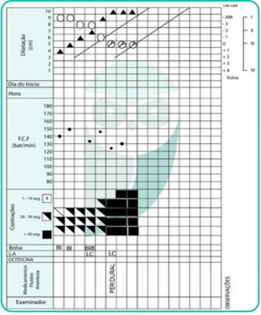
A período pélvico prolongado.
B parada secundária da dilatação.
C parada secundária da descida.
D fase ativa prolongada.
Questão 649 · Pediatria · 4000194634Você avalia um neonato em alojamento conjunto que apresenta icterícia zona 2 com 48 horas de vida. Ele nasceu termo, adequado para a idade gestacional, sem intercorrências, está mamando adequadamente. A tipagem sanguínea materna é A positivo, e o RN é O negativo. A dosagem total de bilirrubina foi de 10 mg/dL. Seguindo o nomograma de Bhutani (a seguir), qual é a conduta a ser tomada?
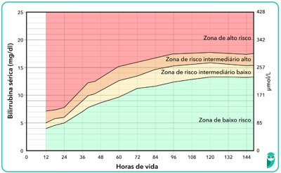
A Alta hospitalar com seguimento normal na puericultura.
B Alta hospitalar com reavaliação em 72 horas.
C Manter internado e repetir dosagem de bilirrubinas em 12 a 24 horas.
D Iniciar fototerapia de imediato.
Questão 650 · Pediatria · 4000194633Ao iniciarmos a introdução alimentar de uma criança de 6 meses de idade, que alternativa está incorreta sobre as devidas orientações?
A O leite materno deverá ser mantido até, no mínimo, dois anos de idade.
B Os sucos de fruta estão contraindicados, assim como as bebidas açucaradas.
C Estão contraindicados, no primeiro ano de vida: mel, peixe, ovo e amendoim.
D A carne não deve ser retirada da comida, e, sim, picada ou desfiada.
Questão 651 · Pediatria · 4000194632Você está de plantão na emergência de uma UPA quando chega uma criança em parada cardiorrespiratória. Você inicia a reanimação de imediato e, ao colocar o monitor cardíaco, recebe o seguinte ritmo. Qual é o próximo passo a ser realizado?
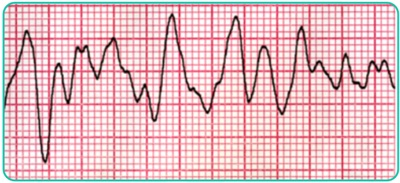
A Desfibrilação com 2 J/kg.
B Cardioversão imediata.
C Administrar amiodarona.
D Aplicar a primeira de uma série de adrenalina.
Questão 652 · Pediatria · 4000194631Menina de 5 anos estava brincando com o cachorro de sua avó, que estava saudável, quando ele mordeu sua mão esquerda de forma profunda. Ela foi levada à UPA da cidade, e o médico orientou como pro laxia da raiva:
A apenas observar o cachorro por 10 dias.
B aplicar dose única de vacina contra raiva e uma dose de soro antirrábico.
C aplicar quatro doses da vacina contra raiva.
D aplicar quatro doses da vacina contra raiva e uma dose de soro antirrábico.
Questão 653 · Pediatria · 4000194630Uma criança de 4 anos apresenta tosse e febre vespertina há 3 semanas. Sua mãe percebeu que ela está muito emagrecida. A criança recebeu amoxicilina por 10 dias devido a uma pneumonia há 15 dias, contudo não apresentou melhora dos sintomas. Frente à suspeita de tuberculose, o médico que a acompanha solicitou PPD, três amostras de exame de escarro para pesquisa de tuberculose (BAAR) e radiogra a de tórax. Não há relato de contato com pessoas doentes. A criança encontra-se febril, T: 38,2°, seu peso está abaixo do percentil 3, a ausculta cardíaca é normal, e a ausculta pulmonar revela estertores subcrepitantes em base esquerda. A radiogra a de tórax apresenta adenomegalia hilar e opacidade heterogênea em base esquerda e é muito semelhante à radiogra a realizada antes do uso de amoxicilina. As três amostras de BAAR estão negativas e o PPD resultou 12 mm. Diante desse caso e frente à suspeita de tuberculose, é possível a rmar que:
A as três amostras de BAAR se encontram negativo e afastam o diagnóstico de tuberculose.
B se a criança recebeu a vacina de BCG ao nascimento, o exame de PPD não deve ser valorizado.
C a criança pontuou 30 no escore, e o diagnóstico é pouco provável.
D o escore resulta em 45, devemos considerar o diagnóstico de tuberculose muito provável. O tratamento é recomendado e deve ser realizado em sua primeira fase com rifampicina, isoniazida e pirazinamida.
Questão 654 · Pediatria · 4000194629U m lactente d e 2 meses e m aleitamento mat erno recebe suplementação pro lática de vitamina D diariamente. Sua mãe recebe dieta vegana e sem suplementação vitamínica. Entre as opções abaixo, qual é a orientação apropriada a respeito de suplementação vitamínica para a mãe do lactente com a nalidade de se evitar consequências no lactente?
A Vitamina B12.
B Ácido fólico.
C Vitamina A.
D Vitamina B1.
Questão 655 · Pediatria · 4000194628Uma criança de 7 anos com diagnóstico de asma recebe corticoide inalatório e m dose baixa. Ela chega à emergência c om tosse e cansaço h á 6 horas. A o exame físico, e la est á e m regular estado geral, não consegue falar frases, apenas palavras, a FC é de 139 bpm, saturação de O2 de 90% em ar ambiente, com sibilos difusos à ausculta pulmonar e retração intensa subdiafragmática. Classi que a crise de exacerbação de asma dessa criança e o tratamento inicial preconizado.
A Moderada, salbutamol inalatório a cada 20 minutos, oxigênio e sulfato de magnésio.
B Leve, corticoide endovenoso, salbutamol inalatório a cada 20 minutos.
C Grave, salbutamol inalatório a cada 20 minutos, brometo de ipratrópio inalatório e corticoide sistêmico.
D Grave salbutamol inalatório a cada 20 minutos, brometo de ipratrópio e corticoide sistêmico e oxigênio.
Questão 656 · Pediatria · 4000194627Um lactente de 15 meses, sem antecedentes relevantes, apresenta um episódio de crise convulsiva desencadeada em vigência de febre. Chega à emergência fora da crise e rapidamente apresenta recuperação neurológica. Ao o examinar, você diagnostica uma infecção viral de vias aéreas superiores. Qual é a conduta apropriada?
A Internação, para investigação da causa da crise convulsiva.
B Liberar para casa com orientações, sintomáticos e acompanhamento pediátrico de rotina.
C Coleta de liquor para afastar infecção do sistema nervoso central.
D Solicitar eletroencefalograma na urgência, para investigar o risco de recorrência da crise.
Questão 657 · Pediatria · 4000194626Um lactente de 2 meses de idade chega à emergência com febre, vômitos e diminuição do volume urinário há 1 dia. Diante da suspeita de infecção do trato urinário (ITU), é correto afirmar que:
A a coleta de urina pode ser feita pelo saco coletor, e a antibioticoterapia deve ser iniciada após o resultado de urocultura.
B o exame de urina deve ser coletado, por meio de métodos como cateterismo vesical,
C é importante investigar outro foco infeccioso, pois a ITU é rara nessa faixa etária.
D se o exame parcial de urina sugerir o diagnóstico de ITU, o lactente pode receber alta com antibioticoterapia oral.
Questão 658 · Pediatria · 4000194625A alimentação possui papel fundamental nos primeiros anos de vida, que são decisivos para o crescimento, desenvolvimento, formação de hábitos e manutenção da saúde. A cada ano, aumenta a parcela da população infantil com sobrepeso e/ou que consome alimentos ultraprocessados, enquanto casos de desnutrição e anemia continuam a existir em classes econômicas desfavorecidas. A respeito desse tema, assinale a alternativa CORRETA sobre as recomendações alimentares para crianças abaixo de 2 anos de idade, defendida pelo Ministério da Saúde.
A Lactentes < 6 meses que residem em regiões muito quentes podem receber pequenas quantidades de água filtrada ao longo do dia, para manterem-se hidratados.
B As papinhas industrializadas, desde que não contenham conservantes e aditivos, são boas alternativas para a introdução alimentar em crianças a partir de 6 meses de idade.
C Na introdução alimentar, é normal que uma criança precise experimentar diversas vezes o mesmo alimento até se familiarizar com ele. Por isso, nessa fase, a principal fonte de nutrientes continuará sendo o leite materno.
D Para evitar engasgos e facilitar o aceite dos alimentos pela criança, os alimentos devem ser inicialmente oferecidos após serem peneirados ou batidos no liquidificador.
Questão 659 · Cardiologia · 4000194624A respeito d a hipertensão arterial, d e acordo com a Diretriz Brasileira de Hipertensão Arterial de 2020, assinale a alternativa correta.
A Os acidentes vasculares cerebrais (AVC) são frequentes nos hipertensos, e cerca de 85% são hemorrágicos.
B O controle terapêutico da hipertensão pode regredir ou reverter a hipertrofia ventricular esquerda e reduzir o risco de cardiopatia.
C Os betabloqueadores são uma excelente opção para o tratamento da hipertensão sistólica isolada do idoso.
D Pacientes pré-hipertensos não apresentam risco com relação ao dano vascular.
Questão 660 · Neurologia · 4000194623Mulher, 18 anos, procura atendimento por queixa de cerca de 3 episódios de cefaleia nos últimos 15 dias. A paciente não tem antecedente de cefaleia nem de outras patologias e faz uso apenas de anticoncepcional oral combinado. Refere que a cefaleia é de forte intensidade, pulsátil, unilateral, associada a foto e fonofobia, náuseas e vômitos, piora com o esforço e não melhora mesmo com o uso de analgésicos. Ao exame físico, a paciente apresenta PA 120 x 80 mmHg, FC 80 bpm, FR 18 irpm. Está consciente e orientada, e não há dé cit de força ou sensibilidade, os reflexos estão preservados, rigidez de nuca ausente e a marcha sem alterações. É obesa, IMC 35 kg/m². Considerando o caso clínico, qual é sua principal hipótese diagnóstica e conduta?
A Enxaqueca sem aura e uso de topiramato.
B Hemorragia subaracnóidea e TC de crânio. Caso o exame seja normal, a punção liquórica estará indicada.
C Enxaqueca sem aura e TC de crânio.
D Cefaleia tensional e propranolol.
Questão 661 · Dermatologia · 4000194622Paciente do sexo masculino, 22 anos, procura a unidade básica de saúde com queixa de coceira na virilha. Ao exame físico, há placas com bordas eritematosas e descamativas, anulares, localizadas nas virilhas. Com base no caso clínico, assinale a alternativa correta.
A A terbinafina, administrada por via oral ou tópica, está adequada.
B Provavelmente se trata de uma micose, e o gênero mais comum é a cândida.
C O exame de escolha nesse momento é uma biópsia cutânea.
D Podemos administrar pomada de aciclovir para tratar esse quadro de herpes simples.
Questão 662 · Psiquiatria · 4000194621Segundo o relatório Suicide worldwide in 2019 — Global Health Estimates, publicado e m 2 0 2 1 pela Organização Mundial da Saúde (OMS), todos os anos, mais de 700 mil pessoas cometem suicídio no mundo. De acordo com estatísticas atuais, cerca de 80% dos suicídios ocorrem em países de baixa e média renda, como o Brasil. Em relação ao suicídio, assinale a alternativa correta.
A O suicídio está entre as 10 principais causa de morte entre a população de 15 a 29 anos.
B Estudos de autópsia psicológica apontam que cerca de 80% dos indivíduos que cometeram suicídio eram portadores de uma doença mental.
C Os homens realizam mais tentativas de suicídio, contudo as mulheres consumam mais o suicídio.
D O guia
Questão 663 · Medicina Preventiva · 4000194620Durante a pandemia de covid-19, um dos temas que mais ganhou popularidade foi o estudo das propriedades dos testes diagnósticos. Conceitos como sensibilidade, especi cidade e valores preditivos passaram a ser cada vez mais comentados e valorizados. Tomando isso por base, quando nos referimos a um teste capaz de confirmar laboratorialmente a infecção pelo SARS-CoV-2, estamos valorizando quais de suas propriedades diagnósticas?
A Alta especificidade e alto valor preditivo positivo.
B Alta sensibilidade e alto valor preditivo negativo.
C Alta especificidade e alto valor preditivo negativo.
D Alta sensibilidade e alto valor preditivo positivo.
Questão 664 · Medicina Preventiva · 4000194619A Lista Nacional de Agravos d e Noti cação Compulsória é atualizada frequentemente pelo Ministério da Saúde. Levando e m consideração sua composição mais atual, assinale a alternativa que contém apenas condições cuja notificação seja semanal.
A Paracoccidioidomicose, asma e hipertensão arterial sistêmica.
B Síndrome gripal por SARS-CoV-2 (covid-19), febre amarela e hantavirose.
C Acidente com animais peçonhentos, violência doméstica e sarampo.
D Síndrome congênita pelo zika vírus, acidente com exposição a material biológico e tuberculose.
Questão 665 · Medicina Preventiva · 4000194618Lançada em 2011, pela Portaria nº 2.836, a Política Nacional de Saúde Integral de Lésbicas, Gays, Bissexuais, Travestis e Transexuais (LGBT) representou uma nova e promissora página na luta dessa população. Acerca desse tema, assinale a alternativa incorreta.
A Uma das grandes lacunas que prejudica o cuidado da população LGBT+ é a falta de estudos aprofundados acerca desse grupo populacional. Visando alterar essa realidade, esse documento do Ministério da Saúde trata desse aspecto em uma diretriz específica da política.
B A orientação sexual diz respeito à forma como o indivíduo se relaciona sexual e afetivamente com os demais. Já a identidade de gênero pode ser entendida como a forma como uma pessoa identifica seu próprio gênero e como ela se apresenta socialmente.
C Os direitos reprodutivos da população LGBT+ foram cerceados por muito tempo e ainda encontram grandes obstáculos para sua aplicação. Tendo isso em vista, a política em tela traz como uma das responsabilidades das Secretarias de Saúde a definição de estratégias para a garantia desses direitos.
D O desrespeito ao nome escolhido pelas pessoas travestis e transexuais deve ser considerado como uma forma de violência. Dessa forma, a Política Nacional LGBT defende a inclusão da garantia do uso do nome social para todos os usuários do sistema de saúde.
Questão 666 · Medicina Preventiva · 4000194617Um funcionário de uma fábrica de lâmpadas uorescentes procurou a Unidade Básica de Saúde queixando- se de gengivite. Foi avaliado pela equipe de saúde bucal que, após o atendimento, solicitou que o médico de família da equipe avaliasse o caso. A esposa do paciente, que o acompanhava na consulta, informou que ele vem mudando de comportamento nos últimos meses, com aumento da irritabilidade. Ao exame físico, o médico de família percebeu que o paciente apresentava tremores, especialmente ao tentar pegar objetos. Considerando-se a situação descrita, assinale a opção correta.
A Trata-se de intoxicação crônica pelo mercúrio que, por sua vez, deve ser notificada ao SINAN.
B Trata-se de intoxicação aguda pelo chumbo, elemento muito utilizado na produção de lâmpadas fluorescentes, e deve ser notificada ao SINAN.
C Trata-se de intoxicação aguda por amônia, gás utilizado para reforçar o brilho das lâmpadas fluorescentes, e deve-se preencher a CAT e o SINAN.
D O quadro clínico do paciente não parece estar relacionado a sua ocupação, sendo necessário o encaminhamento ao médico do trabalho para que esse profissional consiga estabelecer o nexo ocupacional.
Questão 667 · Medicina Preventiva · 4000194616Acerca dos estudos epidemiológicos e das medidas de associação avalie as assertivas a seguir. I — Estudos de coorte não concorrentes são caracterizados por serem prospectivos. II — Os estudos de intervenção permitem a avaliação da e cácia de um tratamento por meio do cálculo da razão de prevalências. III — O s estudos d e caso-controle são estudos observacionais, longitudinais e retrospectivos, permitindo avaliar a associação entre desfecho e exposição por meio do cálculo do IV — Ao fazermos inferências individuais a partir de dados agregados nos estudos ecológicos, estamos sob risco de incorrer na chamada falácia ecológica. V — A razão de prevalências é uma das principais medidas de associação calculada nos estudos transversais. VI — O viés de hospitalização é tipicamente observado nos estudos de coorte concorrente. Assinale a alternativa que contém apenas assertivas corretas.
A II, V e VI.
B I, III e VI.
C III, IV e V.
D I, II e V.
Questão 668 · Reumatologia · 4000194615Mulher, 65 anos, comparece à consulta na unidade básica de saúde referindo dor em quadril e joelho há 6 meses. Refere que as dores pioram ao longo do dia, principalmente em dias nos quais o trabalho como empregada doméstica é mais pesado. Relata melhora durante pausas no trabalho e durante à noite, quando se deita para dormir. Pela manhã, nota rigidez nessas articulações com duração de 20 minutos. Foi orientada pela vizinha a tomar ibuprofeno e apresentou melhora da dor. Como as dores estão piorando progressivamente e interferindo diretamente em seu trabalho, gostaria de um tratamento que a zesse melhorar. Antecedentes pessoais: hipertensão, dislipidemia. Em uso: hidroclorotiazida 25 mg, enalapril 10 mg de 12/12 horas e sinvastatina 20 mg. Ao exame físico: IMC 31 kg/m², PA = 130 x 80 mmHg, dor e limitação de amplitude de movimento em quadril direito, especialmente com a abdução e rotação interna, dor e aumento de volume em joelho esquerdo com crepitações e limitação parcial à exo-extensão, hipotro a de quadríceps bilateral. Tendo em vista a principal hipótese diagnóstica, que medida não está indicada para essa paciente?
A Prescrição de prednisona via oral.
B Perda de peso e fortalecimento muscular.
C Prescrição de anti-inflamatório não esteroidal tópico.
D Prescrição de dipirona via oral.
Questão 674 · Obstetrícia · 4000194609Paciente G2P1CA0, IG 20s4d, traz resultado de colpocitologia oncótica com “Lesão intraepitelial de alto grau”. Foi submetida a colposcopia com biópsia com resultado de NIC 3/LIEAG (lesão intraepitelial de alto grau). Qual a conduta?
A Excisão de zona de transformação.
B Cesareana eletiva com 39 semanas + histerectomia.
C Repetir citologia a cada 6 semanas e tratar apenas pós-parto.
D Repetir colposcopia a cada 6 semanas e tratar apenas pós-parto.
Questão 675 · Obstetrícia · 4000194608Paciente gestante de 15 semanas tem diagnóstico de câncer de colo uterino estadiamento 1A1, com desejo de manutenção da gestação. Qual deve ser a sua conduta?
A Adiar o tratamento até o pós-parto.
B Quimioterapia neoadjuvante.
C Conização clássica.
D Histerectomia com útero cheio.
Questão 676 · Obstetrícia · 4000194607Paciente de 24 anos, primigesta, vem à primeira consulta de pré-natal trazendo ultrassonogra a realizada há 1 semanas mostrando gestação tópica, gemelar dicoriônica e diamniótica de 12 semanas. Paciente nega comorbidades. Nesse caso, é necessário
A Orientar o uso de progesterona vaginal para diminuir o risco de prematuridade.
B Orientar o uso de ferro endovenoso para evitar anemia ferropriva.
C Orientar a realização de cerclagem uterina entre 12 e 16 semanas para reduzir o risco de prematuridade.
D Orientar o uso de AAS para diminuir o risco de pré-eclâmpsia.
Questão 677 · Obstetrícia · 4000194606No que se refere à indução do trabalho de parto em pacientes com óbito fetal de 32 semanas, assinale a alternativa correta.
A Se a paciente apresenta cesariana anterior e colo impérvio, está contraindicada a realização de indução do parto em decorrência do risco de rotura uterina.
B Para maturação cervical pode ser utilizado o método de Krause (Balão cervical).
C Se o índice de Bishop for maior do que 6, está indicado o uso de misoprostol 25 mcg via vaginal.
D O uso da ocitocina está contraindicado em decorrência do embolia amniótica.
Questão 678 · Obstetrícia · 4000194605Gestante, primigesta, 14 semanas, vem a consulta de pré-natal trazendo exames solicitados na primeira consulta: glicemia de jejum de 140 mg/dl. Nega doenças prévias. Considerando a disponibilidade técnica adequada, a melhor conduta essa paciente deve ser
A Solicitar hemoglobina glicada para avaliar a necessidade de insulinoterapia.
B Solicitar teste oral de tolerância à glicose com 75g imediatamente para confirmar o diagnóstico de diabetes mellitus.
C Orientar dieta, exercício físico, controle glicêmico e insulinoterapia.
D Orientar dieta, exercício físico, controle glicêmico e insulinoterapia.
Questão 679 · Obstetrícia · 4000194604Gestante, 34 anos, 4G2PN1A, vem à primeira consulta de pré-natal com 10 semanas. Refere ser portadora do vírus HIV, mas atualmente não está utilizando terapia antirretroviral. Traz carga viral indetectável realizada há 6 meses. Nesse caso, visando reduzir os riscos de transmissão vertical do HIV, é correto afirmar que
A Deve-se iniciar imediatamente o uso de tenofovir, lamivudina e dolutegravir.
B Deve-se solicitar carga viral, contagem de CD4 e genotipagem para avaliar a necessidade de terapia antirretroviral.
C Deve-se aguardar 12 semanas para iniciar o uso de tenofovir, lamivudina e dolutegravir.
D Como a carga viral é indetectável, não há necessidade de terapia antirretroviral durante a gestação.
Questão 680 · Obstetrícia · 4000194603Gestante, 3G2PN, 32 anos, 39 semanas, chega ao pronto socorro no período expulsivo do trabalho de parto. O parto vaginal ocorreu ainda na sala de admissão. Após saída da placenta, puérpera apresentou sangramento vaginal intenso e obstetra inicia massagem uterina bimanual e solicita a aplicação de ocitocina endovenosa, sem melhora do sangramento vaginal. Após as medidas iniciais, o útero estava contraído e abaixo da cicatriz umbilical. Neste caso, a próxima conduta deve ser
A Ergotamina intramuscular
B Misoprostol via retal
C Revisão do canal de parto
D Curetagem uterina
Questão 681 · Obstetrícia · 4000194602M.S.C, 35 anos, G2 P1C, vem à maternidade com 41 semanas em fase ativa de trabalho de parto. Foi observado bradicardia fetal durante o acompanhamento da vitalidade fetal. Realizado cardiotocogra a que mostrou bradicardia sustentada. Logo em seguida apresentou dor abdominal súbita, lancinante e interrupção das contrações. Ao exame físico: FC = 125 bpm, PA = 80 x 40mmHg, FR = 30 irpm. Atividade uterina ausente. Não foi evidenciado sangramento vaginal. No toque vaginal não foi possível sentir a apresentação fetal. Qual o diagnóstico e conduta adequados?
A Descolamento prematuro de placenta, amniotomia e cesárea de urgência.
B Rotura de aneurisma aórtico, laparotomia de urgência.
C Rotura uterina, cesariana de urgência.
D Embolia amniótica, anticoagulação plena.
Questão 682 · Obstetrícia · 4000194601F.M.D., 24 anos, 41 semanas e um dia de gestação, G2 P1C, encaminhada para a maternidade para resolução da gestação. Nega intercorrências. Ao exame físico: PA = 110 x 76mmHg, altura uterina de 36 cm, BCF = 154bpm, apresentação cefálica, colo dilatado 4 cm, esvaecido 60%, altura da apresentação no plano zero De Lee, colo amolecido e medianizado, dinâmica ausente, bolsa íntegra. Qual a conduta para esse caso?
A Preparo de colo uterino com misoprostol via vaginal a cada seis horas.
B Indução do trabalho de parto com ocitocina endovenosa em bomba de infusão.
C Amniotomia seguida de ocitocina endovenosa em bolus.
D Preparo de colo uterino com Sonda Foley.
Questão 683 · Obstetrícia · 4000194600R.M.S, 32 anos, submetida à cesariana há 5 dias, por desproporção cefalopélvica. Vem a maternidade pois apresenta febre há 1 dia. Ao exames: T =39 graus, PA = 110x80 mmHg, FC = 93 bpm, útero doloroso a palpação, acima da cicatriz umbilical. Especular sem loquiação, toque vaginal com útero doloroso à mobilização. Qual deve ser a conduta para esse caso?
A Internação hospitalar, clindamicina e gentamicina endovenosas.
B Internação hospitalar, ultrassom transvaginal e analgésico endovenoso.
C Observação clínica, cefalexina oral e analgésico endovenoso.
D Acompanhamento ambulatorial, cefalexina e analgésico oral.
Questão 684 · Obstetrícia · 4000194599A.A.C, 22 anos, primigesta, 32 semanas de gestação, vem ao pronto socorro com cefaleia e náuseas. Ao exame: edema de face e mãos, PA = 170x110 mmHg. AU = 29 cm, BCF = 144 bpm, dinâmica uterina ausente e boa movimentação fetal. Foi solicitada a transferência da gestante para Maternidade de Referência e administrado sulfato de magnésio (dose de ataque). Após 20 minutos, a ambulância para a transferência chegou e a paciente mantinha PA = 160x110 mmHg. A conduta nesse momento é:
A Prescrever nifedipina, 10 mg, via oral e transferir a gestante.
B Repetir a dose de ataque de sulfato de magnésio e transferir a gestante.
C Suspender a transferência até que a PA se estabilize.
D Prescrever metildopa 500 mg, via oral e transferir a gestante.
Questão 685 · Obstetrícia · 4000194598L.B.N, Gestante 39 semanas, G2P1N, portadora de HIV há 2 anos, com seguimento adequado em uso de terapia antirretroviral (TARV) com carga viral indetectável na 34ª semana. Queixa de perda de líquido há 2 horas e contrações. Ao exame: 6 cm de dilatação, esvaecimento de 80%, com saída de líquido claro com grumos, apresentação cefálica, BCF = 145 bpm. A conduta para esse caso é:
A Aguardar o parto vaginal, manter a TARV, não administrar AZT endovenoso.
B Aguardar o parto vaginal e administrar AZT endovenoso, pelo menos três horas antes do parto até o clampeamento do cordão.
C Realizar parto cesariana e administrar AZT endovenoso, pelo menos três horas antes do parto até o clampeamento do cordão.
D Realizar parto cesariana, manter a TARV e não administrar AZT endovenoso.
Questão 686 · Obstetrícia · 4000194597Gestante, primigesta, 35 anos, idade gestacional de 30 semanas pela ultrassonogra a de 9 semanas, vem a consulta de pré-natal de rotina. Ao exame apresenta PA 120/70 mmHg, AU 26 cm, BCF 150 bpm, DU ausente, MF presente. A conduta adequada para esse caso é
A Retorno em uma semana.
B ultrassonografia obstétrica.
C ultrassonografia morfológica.
D cardiotocografia anteparto.
Questão 687 · Obstetrícia · 4000194596Os sinais e sintomas que indicam pré-eclâmpsia grave podem ser alterações clínicas, laboratoriais ou ultrassonográficas. Dentre os achados a seguir, o que não configura sinal de gravidade na pré-eclâmpsia é
A Cefaleia não responsiva ao tratamento.
B Proteinúria > 5g em 24h.
C PA ≥ 160/110 mmHg.
D Diástole ausente da artéria umbilical.
Questão 688 · Obstetrícia · 4000194595Primigesta, 28 anos, idade gestacional de 20 semanas, realiza ultrassonogra a transvaginal com medida do colo uterino de 18 mm. Essa gestante deve ser orientada a:
A Repetir ultrassonografia em 2 semanas.
B Realizar cerclagem uterina.
C Usar progesterona vaginal.
D Colocar pessário uterino.
Questão 689 · Obstetrícia · 4000194594G2P1(Cesariana), com idade gestacional de 41 semanas, vem a maternidade encaminhada do pré-natal. Nega queixas. Ao exame apresenta BCF 140 bpm, AU 36 cm, DU ausente, TV com colo G\P\1cm, cefálico, bolsa integra. A conduta para essa gestante é
A Cesariana.
B Maturação cervical com balão de foley.
C Indução do parto com ocitocina.
D Dopplervelocimetria obstétrica a cada 2 dias.
Questão 690 · Obstetrícia · 4000194593Primigesta, 39 semanas, vem à maternidade com queixa de contrações fortes há 4 horas. Ao ser examinada, observa-se que a gestante está na fase ativa do trabalho de parto, com 7 cm de dilatação. Paciente evoluiu rapidamente para o período expulsivo. Qual a conduta recomendada nessa fase do trabalho de parto?
A Realizar episiotomia quando a cabeça fetal começar a abaular o períneo.
B Orientar a paciente a ficar na posição ginecológica.
C Fazer antissepsia e colocar campos estéreis.
D Realizar a ausculta dos batimentos cardíacos fetais a cada 5 min.
Questão 691 · Obstetrícia · 4000194592Primigesta, 13 semanas, vem ao retorno da primeira consulta de pré-natal trazendo os exames solicitados na primeira consulta: Tipagem sanguínea A positivo, glicemia de jejum 85 mg/dl, hemoglobina 12,8 mg/dl, hematócrito 38%, urocultura negativa, VDRL não reagente, sorologia para toxoplasmose IgG positivo e IgM negativo, HIV não reagente, HbsAg não reagente, anti-HBs reagente, anti-HCV não reagente. A conduta para essa gestante deve ser:
A Orientar medidas de prevenção de toxoplasmose.
B Solicitar teste oral de tolerância à glicose 75g entre 24 e 28 semanas.
C Realizar vacina de hepatite B.
D Solicitar tipagem sanguínea do parceiro.
Questão 692 · Obstetrícia · 4000194591Uma mulher com 20 anos, foi atendida pela equipe de triagem de uma unidade de saúde da família, trazendo teste de gravidez de farmácia positivo. O médico que a atende, após anamnese completa e exame clínico, classifica-a como gestante de baixo risco e solicita testes rápidos para hepatite B e C, sí lis e HIV. Os resultados de todos os exames, exceto o de sí lis, são negativos. A paciente refere que apresentou o mesmo teste positivo há 1 ano, quando internou no hospital por conta de um abortamento espontâneo, recebendo uma injeção ainda no hospital, mas não voltou à USF desde então. Refere que seu parceiro atual não é o mesmo de 1 ano atrás. Após explicar a situação para a paciente, o médico
A Solicita VDRL, prescreve para a paciente penicilina benzatina 2,4 milhões UI, 1x por semana por 3 semanas, testa e trata as parcerias sexuais, notifica à vigilância epidemiológica e realizar VDRL mensalmente após o tratamento.
B Solicitar FTA-ABS e VDRL, prescrever para a paciente penicilina benzatina 2,4 milhões UI, 1x por semana por 3 semanas, testar e tratar as parcerias sexuais, notificar à vigilância epidemiológica e realizar VDRL mensalmente após o tratamento.
C Solicita VDRL, prescrever para a paciente penicilina benzatina 2,4 milhões UI, dose única, testar e tratar o parceiro atual, notificar à vigilância epidemiológica e realizar VDRL e FTA-ABS mensalmente após o tratamento.
D Solicita FTA-ABS e VDRL, prescrever para a paciente penicilina benzatina 2,4 milhões UI, 1x por semana por 2 semanas, testar e tratar as parcerias sexuais, notificar à vigilância epidemiológica e realizar VDRL mensalmente após o tratamento.
Questão 693 · Obstetrícia · 4000194590Primigesta, com 25 anos, foi encaminhada pela unidade saúde da família para o ambulatório de alto risco por gestação gemelar monocoriônica e diamniótica de 12 semanas. A paciente nega queixas e nega comorbidades. Durante a consulta, apresenta útero à 16 cm da sín se púbica, batimentos cardíacos fetais audíveis, pressão arterial de 110 x 60 mmHg, peso de 85kg, altura de 1.60m. A conduta a ser adotada nessa consulta, a fim de diminuir os riscos dessa gestação é a prescrição de
A Progesterona 200 mg, 1x vezes ao dia, via vaginal.
B Progesterona 200 mg, 1x vezes ao dia, via vaginal e ácido acetilsalicílico 100 mg, uma vez ao dia, via oral.
C ácido acetilsalicílico 100 mg, uma vez ao dia, via oral.
D ácido acetilsalicílico 100 mg, uma vez ao dia, via oral e enoxparina 1 mg/kg, duas vezes ao dia, via subcutânea.
Questão 694 · Obstetrícia · 4000194589Uma paciente com 35 anos apresenta sangramento vaginal intenso, 6h após cesariana de urgência por descolamento prematuro de placenta. Refere ser hipertensa crônica em uso de metildopa durante a gestação. Ao exame físico, apresenta-se: em regular estado geral; orientada, com frequência cardíaca de 120 batimentos por minuto; pressão arterial de 90 x 60 mmHg; à ausculta cardíaca, com ritmo cardíaco regular em dois tempos, bulhas hipofonéticas, sem sopros; à ausculta pulmonar, com murmúrios vesiculares sem ruídos adventícios. O exame do abdome da paciente evidencia útero amolecido e palpável 8 cm acima da cicatriz umbilical. Feriada operatória com boa aparência. Realizado ocitocina endovenosa e massagem uterina bimanual, sem melhora do quadro. A conduta preconizada nesse momento é
A Ringer lactato 1.000 ml endovenoso, transfusão de hemoconcentrado de hemácias, ácido tranexâmico endovenoso 1g e ergotamina intramuscular 0,2 mg.
B Transfusão de hemoconcentrado de hemácias e misoprostol via retal 800 mcg.
C Ácido tranexâmico endovenoso 1g, ergotamina intramuscular 0,2 mg e misoprostol via retal 800 mcg.
D Ringer lactato 1.000 ml endovenoso, transfusão de hemoconcentrado de hemácias, ácido tranexâmico endovenoso 1g e misoprostol via retal 800 mcg.
Questão 695 · Obstetrícia · 4000194588Secundigesta, 35 anos, 28 semanas de gestação, relatando aumento dos níveis pressóricos há 1 semana. Paciente nega queixas ou comorbidades. Ao exame: BEG, edema +2/4, corada, PA 145 x 90 mmHg, confirmado após 4 horas. Realizado proteinúria de ta reagente +2. Qual deve ser a conduta para essa gestante?
A Prescrever metildopa e encaminhar a paciente para a maternidade para realizar exames laboratoriais e de vitalidade fetal para afastar situação de gravidade. Na ausência de situação de gravidade, encaminhar para acompanhamento ambulatorial no pré-natal de alto risco.
B Solicitar exames laboratoriais, ultrassom obstétrico com Doppler ambulatorialmente e orientar retorno em 15 dias com exames.
C Prescrever metildopa, solicitar exames laboratoriais e de vitalidade para serem realizados ambulatorialmente e encaminhar a paciente acompanhamento ambulatorial no pré-natal de alto risco.
D Internar a paciente, prescrever metildopa e corticoide e programar resolução da gestação em 48 horas.
Questão 696 · Obstetrícia · 4000194587Mulher de 39 anos de idade, 24 semanas de gestação, IIGIPN, comparece a consulta de pré-natal referindo nódulo na mama direita. Ao exame físico observa-se nódulo de 1,0 cm, indolor, endurecido, de limites mal definidos, localizado no quadrante súperolateral direito. Apresenta linfonodo axilar à direita endurecido. Foi submetida a biópsia por agulha grossa com resultado de carcinoma ductal invasivo, grau histológico III. Qual é a conduta indicada para este caso?
A Iniciar quimioterapia neoadjuvante e realizar a cirurgia após o parto.
B Realizar quadrantectomia e linfonodo sentinela seguido de radioterapia.
C Realizar quadrantectomia e esvaziamento axilar seguido de quimioterapia.
D Realizar mastectomia e esvaziamento axilar seguido de quimioterapia.
Questão 697 · Obstetrícia · 4000194586Puérpera, com parto há 20 dias, comparece a consulta referindo dor na mama direita. Ao exame físico observa-se mamas túrgidas, brilhantes e edemaciadas. Qual é a conduta indicada para este caso?
A Compressas de água fria, orientação para a correta técnica de amamentação e esvaziamento completo das mamas e prescrição de analgésicos.
B Compressas de água quente, interrupção da amamentação, prescrição de analgésicos.
C Compressas de água fria, orientação para a correta técnica de amamentação e esvaziamento completo das mamas e prescrição de analgésicos e antibióticoterapia.
D Compressas de água fria, orientação para a correta técnica de amamentação e esvaziamento completo das mamas e prescrição de analgésicos e antibióticoterapia, drenagem de abscesso.
Questão 698 · Obstetrícia · 4000194585Gestante de 35 semanas, refere saída de “leite” das suas mamas. Este acontecimento se refere à:
A Mamogênese
B Lactogênese I
C Lactogênese II
D Lactogênese III
Questão 699 · Placenta · Obstetrícia · Obstetrícia f isiológica · 4000194584Segundo a produção hormonal pela placenta, responda a alternativa correta.
A O hormônio tireotrófico coriônico apresenta concentrações maiores durante o primeiro trimestre e é semelhante ao TSH hipofisário, porém é mais potente que o TSH hipofisário.
B O hormônio liberador de corticotrofina (CRH) é responsável por estimular a síntese de prostaglandinas pela placenta e atua como vasodilatador na circulação uteroplacentária.
C A gonadotrofina coriônica humana (hCG) é uma glicoproteína de suas subunidades (alfa e beta) produzida pelo citotrofoblasto.
D A principal função do hormônio lactogênio placentário (hLP) é diminuir a resistência periférica à insulina.
Questão 700 · Modif icações f isiológicas da gestação · Modif icações sistêmicas · Sistema respiratório · 4000194583Dentre as modi cações siológicas na gestação estão as modi cações do sistema respiratório. Assinale a alternativa correta.
A Não há alteração do volume-minuto, já que a frequência respiratória não se altera durante a gestação.
B A capacidade inspiratória está aumentada durante a gestação devido ao volume corrente.
C O volume residual fica inalterado na grávida.
D A capacidade pulmonar total encontra-se diminuída porque a elevação do diafragma reduz o volume residual na grávida.
Questão 701 · Obstetrícia · 4000194582Primigesta com 10 semanas de gestação, comparece no pronto atendimento com náuseas e vômitos. Está em uso de nausedrona diária. Refere que perdeu peso, de 63 kilos para 58 kilos, desde o início da gestação. De acordo com esse quadro clínico, qual o desequilíbrio hidroeletrolítico mais comum e a conduta.
A Alcalose metabólica hipoclorêmica, internação, jejum, hidratação e correção do distúrbio hidroeletrolítico.
B Acidose metabólica hiperclorêmica, realizar hidratação e alterar o antiemético para outra classe de drogas como a meclizina ambulatorial.
C Acidose metabólica hiperclorêmica, internação, jejum hidratação e correção do distúrbio hidroeletrolítico.
D Alcalose metabólica hiperclorêmica, internação, dieta leve e correção do distúrbio hidroeletrolítico.
Questão 702 · Obstetrícia · 4000194581Existem vacinas indicadas nas gestantes em situações especiais ou em surtos epidêmicos. Assinale qual a vacinação considerada indicada nesses casos
A HPV
B Hepatite B
C dTpa
D Raiva humana
Questão 703 · Obstetrícia · 4000194580A cirurgia bariátrica é considerada segura, mas requer cuidados pré-concepção. Sabendo dos riscos na pré- concepção, assinale a alternativa incorreta.
A Deve-se evitar engravidar no 1º ano apo
B As mulheres obesas sa
C A cirurgia em y de Roux deve ser realizada a suplementação de vitamina B12, ferro, cálcio e tiamina.
D A cirurgia bariátrica aumenta o risco de complicac
Questão 704 · Obstetrícia · 4000194579Primigesta, com gravidez desejada de 7 semanas, confirmada por beta-hCG sanguíneo, comparece com queixa de sangramento vaginal e desconforto abdominal. Foi solicitado ultrassonogra a que diagnosticou uma gestação ectópica tubária à direita, íntegra com diâmetro de 10mm, BCF ausente. Foi solicitado beta-hCG quantitativo a cada 48 horas que evoluiu com os valores abaixo: Qual a melhor conduta neste caso:
A Conduta medicamentosa com metotrexato 50mg/m² intramuscular
B Conduta expectante
C Laparoscopia com salpingostomia
D Laparotomia com salpingectomia
Questão 705 · Obstetrícia · 4000194578Gestante, com atraso menstrual para 8 semanas, comparece no pronto-socorro com queixa de náuseas e vômitos, mal-estar e com sensação de batedeira. Como havia radiologista no local, foi realizado um ultrassom que demostrou a seguinte imagem: Diante dessa imagem e do quadro clínico, qual a conduta mais adequada para essa paciente?
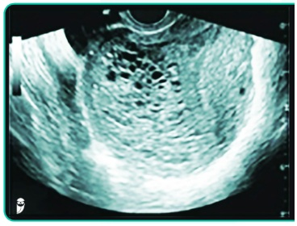
A Realizar conduta expectante para abortamento espontâneo por 2 a 4 semanas e controle ultrassonográfico.
B Indicar internação imediata, aspiração do conteúdo com AMIU e fazer o seguimento semanal ou quinzenal com hCG.
C Indicar ressonância magnética para avaliar invasão por acretismo placentário.
D Indicar antibioticoterapia e curetagem devido aborto infectado com clindamicina e gentamicina endovenoso.
Questão 706 · Obstetrícia · 4000194577Em relação a medida realizada na pelvimetria da figura abaixo, responda a alternativa correta.

A A conjugata diagonalis é avaliada é o diâmetro verdadeiro que o feto vai passar, e por isso considerado a conjugata de maior importância.
B A conjugata obstétrica é calculada pela conjugata diagonalis menos 1,5 cm.
C A conjugata diagonalis é a distância entre o promontório e a borda posterior da sínfise púbica.
D A conjugata exitus é a distância aumento do diâmetro da borda superior da sínfise púbica ao cóccix, através da retropulsão.
Questão 707 · Obstetrícia · 4000194576Sobre a utilização do sulfato de magnésio no trabalho de parto prematuro, assinale a alternativa correta.
A Ela está indicada nas gestantes com idade gestacional menor que 34 semanas.
B Ela está indicada como primeira conduta no início do trabalho de parto prematuro para assegurar a neuroproteção fetal.
C Deve ser evitada a sua associação com a nifedipina.
D Está indicado apenas nas pacientes hipertensas gestacionais que apresentam trabalho de parto prematuro menores que 32 semanas.
Questão 708 · Obstetrícia · 4000194575Puérpera de parto vaginal evoluiu após 30 minutos com sangramento vaginal intenso e profuso visualizado extravasando pelo forro vaginal. Ao exame: pulso 110bpm, PA: 80x50 mmHg, FR: 20 irpm, Temp: 36ºC. Na palpação abdominal, observa-se útero contraído na cicatriz umbilical e ausência de lacerações vulvares, vaginais ou de colo uterino. IC: índice de choque Diante do quadro clínico acima, qual a sua conduta.
A Iniciar massagem uterina, ocitocina e ácido tranexâmico imediatamente; IC: 1,37 e indicar transfusão maciça de sangue.
B Iniciar misoprostol via retal; IC: 1,2 e avaliar necessidade de transfusão sanguínea.
C Avaliar restos placentários; IC: 1,37 e avaliar necessidade de transfusão sanguínea.
D Avaliar coagulopatias ou uso de anticoagulantes; IC: 1,2 e avaliar necessidade de transfusão sanguínea.
Questão 709 · Sangramento segunda metade da gestação · Intercorrências obstétricas obstetrícia patológica · 4000194574Obstetrícia Gestante secundigesta, com 1 parto cesariano anterior, realiza ultrassonogra a de rotina com 24 semanas e a área placentária descrita como na imagem pelo número 4. Para o planejamento do parto dessa paciente, oriente a melhor conduta.
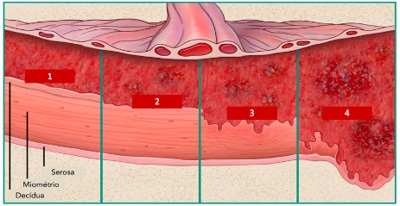
A Deve-se manter a via obstétrica, de preferência parto vaginal devido 1 parto cesariana anterior. Realizar dequitação espontânea da placenta com ocitocina endovenosa 20UI profilática por 24 horas.
B Contraindicar o parto vaginal, realizar planejamento cirúrgico por parto cesariano com 38 semanas com remoção da placenta e curagem uterina rigorosa e ocitocina 20UI profilática.
C Realizar o parto cesariano com 40 semanas e realizar a dequitação sem curagem uterina.
D Indicar parto cesariano e programado a histerectomia puerperal com a placenta in loco entre 34 e 36 semanas.
Questão 710 · Obstetrícia · 4000194573Gestante quartigesta, com 3 partos cesarianos anteriores, com idade gestacional de 38 semanas, comparece na maternidade com queixa de dor súbita em baixo ventre e diminuição da movimentação fetal. Ao exame: pulso 108 bpm, PA: 90x50 mmHg, FR:20 irpm, temp: 36ºC. Além disso, apresenta na inspeção abdominal a imagem a seguir: Através da descrição do caso clínico, assinale a alternativa correta.

A Este é um quadro de descolamento prematuro de placenta, sendo indicado parto de preferência vaginal.
B Este é o sinal de Bandl-Frommel, um sinal de iminência de rotura uterina, sendo indicado parto cesariano imediato.
C Este é um sinal de rotura de vasa prévia, sendo indicado monitorização fetal contínua.
D Este é um sinal de contração uterina por parto taquitócito, sendo indicado suspender a ocitocina endovenosa e indicar a analgesia de parto.
Questão 711 · Obstetrícia · 4000194572Gestante diabética gestacional com controle glicêmico adequado com uso de insulina na gestação evoluiu para parto vaginal sem intercorrências. Descreva quais foram as orientações após o parto para essa gestante e dê o diagnóstico atual após o TOTG de 75g realizado 6 semanas após o parto.
A Foi mantido a insulina NPH até a realização do TOTG de 75g e o diagnóstico foi de diabetes mellitus.
B Foi mantido a insulina NPH após o parto e suspenso na alta hospitalar, e ao solicitar o TOTG de 75g foi diagnosticado como intolerância à glicose.
C Foi suspenso a insulina NPH após o parto, mantido o controle com glicemia capilar até a alta, e ao ser solicitado TOTG de 75g com 6 semanas após o parto, a paciente foi diagnosticada com diabetes mellitus.
D Foi suspenso a insulina NPH após o parto, mantido o controle com glicemia capilar até a alta, e ao ser solicitado TOTG de 75g com 6 semanas após o parto, a paciente foi diagnosticada com intolerância à glicose.
Questão 712 · Obstetrícia · 4000194571Secundigesta, 1 aborto anterior, 43 anos de idade, com 10 semanas de gestação, comparece para checar exames solicitados no seu pré-natal com TSH de 3,8 um/L. foi solicitado o anti-TPO maior que 600,0 UI/mL. Qual a conduta correta a ser tomada?
A Levotiroxina 50mcg por dia.
B Levotiroxina 1,6 mcg por kilo.
C Não deve ser tratada já que o TSH está normal.
D Levotiroxina 1,0 mcg por kilo.
Questão 713 · Obstetrícia · 4000194570Gestante com 17 semanas, comparece na maternidade com convulsão tônico-clônica generalizada que foi autolimitada e realizado proteção física, manutenção de vias aéreas e oxigenação. Qual a medicação de escolha no caso de crises convulsivas prolongadas ou repetidas?
A Lamotrigina
B Gabapentina
C Fenitoína
D Valproato de sódio
Questão 714 · Obstetrícia · 4000194569Primigesta com 32 semanas comparece para atendimento com queixa de prurido moderado nos braços, pernas e regiões palmoplantares não acompanhado por rash cutâneo. Após 3 semanas refere que cou com a pele levemente amarelada, com elevação de bilirrubinas, principalmente a bilirrubina direta e aumento de 10 vezes a fosfatase alcalina. Assinale a principal hipótese diagnóstica e o tratamento mais adequado.
A Pápulas e placas urticariformes da gravidez, observação clínica e corticoide tópico.
B Pré-eclâmpsia grave, internação e sulfato de magnésio.
C Pré-eclâmpsia grave, internação e sulfato de magnésio.
D Colestase gravídica, controle periódico da função hepatobiliar e fatores de coagulação e tratamento com ácido ursodesoxicólico (UDCA).
Questão 715 · Obstetrícia · 4000194568Puérpera de parto cesariano, retorna para atendimento 5 dias após parto cesariano com quadro de febre de 39,2ºC. Inicia tratamento com antibioticoterapia endovenosa com clindamicina e gentamicina, mas após 48 horas a febre continua. Foi solicitado tomogra a computadorizada com contraste com visualização de trombo sépticos em vasos menores e veia ovariana. Qual o diagnóstico e a conduta para essa paciente.
A Tromboflebite pélvica séptica, iniciar enoxaparina em doses plenas e manutenção da antibioticoterapia de amplo espectro.
B Tromboflebite pélvica séptica, indicar tratamento cirúrgico imediato.
C Tromboembolia pumonar, suspender antibioticoterapia e indicar enoxaparina em doses plenas.
D Infecção puerperal e aguardar por mais 48 horas. De mantido quadro febril deve-se trocar a antibioticoterapia guiada pela hemocultura.
Questão 716 · Obstetrícia · 4000194567A razão de mortalidade materna re ete a qualidade da atenção à saúde e as condições de acesso aos serviços para a população feminina em idade reprodutiva. Sobre a razão de mortalidade materna assinale a alternativa correta.
A É uma medida de risco de óbito da mulher, no período transcorrido desde que a se torna grávida até 42 dias após o término da gravidez.
B Utiliza como denominador o número de gestações ocorridas em período de um ano.
C Considera morte materna qualquer causa de morte relacionada ou agravada pela gravidez, ou por medidas em relação a ela, incluindo causas acidentais ou incidentais.
D É obtida dividindo-se o número de óbitos por causas ligadas à gestação, parto e puerpério, em uma certa área e período, pelo número de nascidos vivos no mesmo local e período, multiplicado por 1000.
Questão 717 · Obstetrícia · 4000194566Gestante, atendente de telemarketing, com 30 semanas e diagnóstico de placenta prévia, inicia quadro de sangramento vaginal de pequena quantidade. Foi internada para observação clínica e melhora dos sintomas. O médico indicou repouso relativo e afastamento de suas atividades laborais. Porém, paciente com medo de perder o emprego e precisando do salário, questiona se será reduzido. De acordo com as leis trabalhista, assinale a alternativa correta.
A A gestante poderá ser afastada para atendimento em outra atividade temporária, mas seu salário poderá ser reduzido em até 2/3.
B A gestante não poderá ser afastada ou readaptada temporária de seu cargo, se sua atividade inicial não for insalubre.
C A paciente não pode readaptada na gestação de forma temporária, ao menos que entre em acordo de redução transitória do salário.
D A gestante deverá ser afastada readaptada na gestação de forma temporária e deve ser imediatamente iniciada a licença-maternidade.
Questão 718 · Doenças associadas à gestação · Obstetrícia · 4000194565Paciente deseja comparece em consulta para programar sua primeira gestação. Está ansiosa porque apresenta diagnóstico de hipotireoidismo subclínico em uso de levotiroxina de 50 mcg. Trouxe exames recentes com TSH de 3,2 mU/L e anti-TPO positivo. Qual deve ser a conduta para essa paciente quanto a programação de sua gestação?
A Deve-se manter o nível de controle do TSH até 4,0 mU/L sem modificação da dose da levotiroxina.
B Deve-se manter o nível de TSH até 2,5 mU/L com aumento da dose da levotiroxina em 30%.
C Deve-se aumentar a levotiroxina para 100 mcg por dia e manter o TSH até 4,0 mU/L.
D Não se indica alterar a levotiroxina prévio a gestação se o TSH estiver menor que 4,0. Realizar o ajuste no primeiro trimestre da gestação.
Questão 719 · Obstetrícia · 4000194564Paciente 1G, 38 semanas, dá entrada no pronto-socorro com queixa de contrações regulares há 3 horas. A paciente apresenta estenose mitral moderada por doença reumática e não apresentou intercorrências na gestação. No exame obstétrico apresenta 3 contrações moderadas em 10 minutos, colo dilatado para 5 cm, médio e medianizado, apresentação cefálica e bolsa íntegra. Em relação à assistência ao parto dessa paciente, assinale a alternativa correta.
A Encaminhar a paciente para cesárea devido à contraindicação ao parto vaginal pela cardiopatia, devendo ser realizada profilaxia para endocardite.
B Manter a assistência ao parto vaginal, devendo iniciar ocitocina para acelerar o parto e realizar fórcipe de alívio ´para abreviação do período expulsivo.
C Encaminhar a paciente para analgesia imediatamente, manter a assistência ao parto e realizar profilaxia para endocardite.
D Solicitar avaliação cardiológica e ecocardiograma de urgência para definição da via de parto.
Questão 720 · Obstetrícia · 4000194563Segundo a OMS, a sepse materna é uma condição de ameaça à vida, secundária à disfunção dos órgãos decorrente da infecção durante a gestação, parto, puerpério e pós-aborto. O diagnóstico da sepse materna pode ser di cultado, pois alguns sinais e sintomas podem ser confundidos com alterações siológicas da gestação. Em relação a esse tema, assinale a alternativa correta.
A O uso do escore qSOFA (quick sequencial organ failure assessment) pode ser empregado em gestantes a fim de identificar as pacientes com maior risco de morte.
B Nos casos de choque séptico não é indicado o uso de noradrenalina pelo risco de redução do fluxo placentário pela vasoconstrição.
C A presença de plaquetas abaixo de 150.000 em gestantes sempre deve ser considerada como um critério de gravidade importante para na sepse.
D Os principais fatores de risco para sepse materna são: pesquisa positiva para Streptococcus do grupo B, rotura prematura de membranas ovulares e trabalho de parto prolongado.
Questão 721 · Obstetrícia · 4000194562Gestante de 8 semanas vem à sua primeira consulta de pré-natal. Ela está bastante preocupada, pois faz uso de amitriptilina para tratamento de depressão e leu que isso pode causar problemas para o bebê. A paciente encontra-se bem compensada de seus sintomas e está em uso dessa dose há 2 anos. Diante desse caso, qual alternativa apresenta uma conduta adequada.
A A medicação deve ser suspensa imediatamente por se tratar de medicação classe C e somente deve ser retomada ao final do primeiro trimestre.
B O obstetra deve fazer a substituição da amitriptilina por sertralina por se tratar de medicação mais segura em gestantes.
C A medicação deve ser mantida, devendo ser modificada caso haja recomendação por parte do psiquiatra.
D Como a paciente encontra-se assintomática, a medicação deve ser suspensa e deve ser iniciada psicoterapia. Caso os sintomas retornem, a paciente deve retormar o uso da medicação.
Questão 722 · Obstetrícia · 4000194561Gestante de 12 semanas de gestação realizou por conta própria uma pesquisa para trombo lias e em seu resultado apresenta uma mutação heterozigótica para metilenotetraidofolato redutase (MTHFR), com demais exames normais. Ela está com medo, pois leu que essa alteração aumenta o risco de trombose. Qual a conduta adequada em relação ao seguimento pré-natal dessa paciente?
A Tranquilizar a paciente e falar que não há aumento do risco de trombose nessas situações, devendo seguir o pré-natal regularmente.
B Deve ser iniciada anticoagulação profilática em função do aumento de risco de trombose venosa na gestação.
C Tal mutação, isoladamente, não confere aumento do risco de trombose, entretanto é recomendada a repetição dos exames de trombofilia durante a gestação.
D Apesar de não haver aumento do risco de trombose na gestação, existe aumento do risco de resultados gestacionais adversos, tais como pré-eclâmpsia, sendo indicado prescrever aspirina.
Questão 723 · Obstetrícia · 4000194560A morte materna é definida como a morte de uma mulher durante a gestação ou até 42 dias após o seu término, independente da duração ou da localização da gravidez, devida a qualquer causa relacionada ou agravada pela gravidez ou por medidas em relação a ela, exceto causas acidentais ou incidentais. A análise dos casos de morte materna em associação como os dados de morbidade materna grave e de near miss são fundamentais para a elaboração de medidas preventivas e corretivas. Em relação a essas avaliações, assinale a alternativa correta:
A O near miss materno é a situação em que uma mulher com uma complicação obstétrica extremamente grave acaba sobrevivendo.
B São consideradas situações de near miss materno: perda de consciência por 6 horas ou mais, frequência respiratória acima de 32 e PAM inferior a 60 mmHg.
C O dado empregado para avaliação da mortalidade materna é a razão de mortalidade materna que representa o número de óbitos a cada 1000 nascidos vivos.
D No Brasil, a principal causa de morte materna são as hemorragias relacionadas ao parto.
Questão 724 · Trombólise Endovenosa · 4000194559O Acidente Vascular Cerebral (AVC) é a principal causa de morbidade e a segunda de mortalidade no Brasil. Quanto mais rápido for a identi cação e, nos casos de AVC isquêmico, a definição de tratamento, melhor será o prognóstico do paciente. Quanto a esse assunto, assinale a alternativa correta:
A A escala NIHSS prediz a gravidade do evento, que é mais grave quanto maior for a pontuação. Um paciente em coma deverá receber a pontuação máxima, de 44 pontos.
B A presença de cefaleia e vômitos recorrentes podem diferenciar com precisão entre um AVC isquêmico e um hemorrágico, preterindo a indicação de neuroimagem em casos selecionados.
C A trombólise endovenosa estará indicada para todos os casos de síndrome neurovascular com menos de 3 horas de início dos sintomas, mas só para alguns casos entre 3 e 4,5 horas
D O AVC no contexto de endocardite infecciosa não poderá ser submetido à trombólise.
E Pacientes com AVC isquêmico sem oclusão de vaso proximal (artéria carótida e artéria cerebral média) poderão ser elegíveis para trombectomia, contudo apenas até 16 horas.
Questão 725 · Reação medicamentosa com eosinof ilia e sintomas sistêmicos DRESS · 4000194558Um paciente de 32 anos deu entrada no hospital queixando-se de inchaço no rosto e vermelhidão na pele. Ao exame físico, apresenta um eritema difuso, um edema de face e linfonodomegalias axilares. Frequência cardíaca e respiratória estão normais. Exames laboratoriais indicam uma linfocitose atípica, eosino lia, e aumento de TGO e TGP. O paciente refere que, há 2 meses, teve um acidente automobilístico, evoluiu com convulsões e está usando, desde então, carbamazepina. Diante do quadro clínico exposto, qual é o diagnóstico?
A Síndrome do homem vermelho
B DRESS
C Escarlatina
D Hepatite viral
E Erupção fixa à droga
Questão 726 · Reumatologia · 4000194557Em relação à osteoartrite, é correto afirmar que:
A Cotovelos, punhos e tornozelos são articulações classicamente acometidas em sua forma primária.
B A presença de rigidez matinal afasta seu diagnóstico.
C Os nódulos de Heberden ocorrem nas interfalangeanas proximais e os nódulos de Bouchard nas interfalangeanas distais.
D Dissociação clínico-radiológica é frequente.
E O uso de colágeno, condroitina e glicosamina é capaz de modificar o curso natural da doença, aliviando sintomas e evitando progressão.
Questão 727 · Pneumologia · 4000194556Ao atender o senhor Manoel, 62 anos, tabagista 40 maços/ano, portador de DPOC, com queixa de tosse crônica seca e dispneia para subir escadas ou morros, que refere ter tido uma exacerbação da doença no último ano e que foi tratada em casa. Você percebe que, em sua espirometria, após o uso de broncodilatador, a relação VEF1/CVF encontra-se 0,5 e o VEF1 está 40%. Você classifica esse paciente como sendo portador de DPOC:
A GOLD 3B.
B GOLD 2E.
C GOLD 3A.
D GOLD 2B.
E GOLD 4E.
Questão 728 · Nef rologia · 4000194555A glomeruloesclerose segmentar e focal (GESF) é um padrão histológico de lesão glomerular que pode se manifestar de várias formas. É uma das glomerulopatias mais diagnosticadas no Brasil e no mundo. Sobre a GESF, assinale a alternativa correta.
A A forma primária acomete tipicamente pacientes idosos.
B Condições como infecção pelo HIV, uso de anabolizantes, drogas ilícitas como a heroína, obesidade e rim único podem levar à GESF secundária.
C A presença da APOL-1 (Apolipoproteína-1) é um fator atenuador da gravidade da condição.
D A apresentação clássica envolve a presença de hematúria glomerular isolada.
E A forma primária é tratada inicialmente com inibidores de calcineurina.
Questão 729 · Síndrome do Esgotamento Prof issional Burnout · 4000194554Sobre a Síndrome de
A Trata-se de um quadro caracterizado por um estado de exaustão mental e perda da produtividade, especialmente no ambiente de trabalho.
B Médicos e agentes de segurança estão entre os profissionais mais acometidos.
C Ocorre especialmente em profissionais com empregos mal remunerados e com pouco contato interpessoal.
D Fatores predisponentes são um ambiente de trabalho desorganizado, com cobranças inadequadas e excessivas.
E Foi oficialmente reconhecida, descrita e catalogada pela CID-11.
Questão 730 · Inf ectologia · 4000194553Qual dos procedimentos abaixo pode ser classificado como cirurgia limpa?
A Revascularização do miocárdio.
B Colecistectomia eletiva.
C Colectomia.
D Apendicectomia por apendicite com peritonite generalizada.
E Gastrectomia.
Questão 731 · Cardiologia · 4000194552Um homem de 65 anos procura o serviço de urgência com queixa dor precordial há 2 horas com irradiação para ombro direito, diaforese e náuseas. Exame físico: estertores pulmonares basais, Sat O₂: 91%, sem outras alterações; FC = 134 bpm, PA = 170 x 90 mmHg. Eletrocardiograma (ECG) abaixo. Qual é a melhor conduta para esse caso?

A Iniciar nitroprussiato endovenoso para controle da pressão arterial.
B Monitorar o paciente na sala de emergência e solicitar avaliação do cardiologista.
C Seriar eletrocardiograma, troponina e encaminhar para a angiotomografia de tórax.
D Encaminhar o paciente para a intervenção coronariana percutânea.
E Cardioversão elétrica sincronizada.
Questão 732 · Hematologia · 4000194551Você está de plantão no hospital e presencia uma transfusão de concentrado de plaquetas (por plaquetopenia severa) em um homem de 74 anos, que possui leucemia aguda em suporte transfusional exclusivo. O paciente relata mal-estar associado à febre e hipertensão. Qual é a conduta adequada diante de reação transfusional aguda?
A Interromper a transfusão, coletar amostra de sangue do paciente e enviar para análise em conjunto com a bolsa transfusional.
B Manter a transfusão, mas coletar material do paciente e da bolsa para análise assim que o hemocomponente encerrar.
C Manter a transfusão e observar o aparecimento de sintomas como hipotensão ou dispneia, suspendendo, nesse caso, a transfusão (visto a plaquetopenia importante).
D Interromper a transfusão e medicar com dipirona, retornando a transfusão assim que normalizar a febre.
E Interromper a transfusão, coletando amostra do paciente, não da bolsa, pois ela foi previamente testada.
Questão 733 · Gastroenterologia · 4000194550Analise as alternativas e assinale a correta a respeito das doenças inflamatórias intestinais.
A A retocolite ulcerativa piora com o tabagismo.
B O uso de mesalazina é a primeira escolha para indução de remissão em pacientes com doença de Crohn moderada a grave.
C A presença de granulomas não caseosos na biópsia de paciente com doença inflamatória intestinal favorece o diagnóstico de doença de Crohn.
D A colangite esclerosante primária é uma manifestação extraintestinal mais comum na doença de Crohn.
E Diante de paciente com megacólon tóxico, é mandatória a realização de colonoscopia.
Questão 734 · Cirurgia · 4000194549Em relação ao processo de cicatrização dos tecidos, assinale a alternativa que contém suas fases em sequência correta.
A Proliferativa, inflamatória, remodelação.
B Inflamatória, proliferativa, remodelação.
C Remodelação, proliferativa, inflamatória.
D Proliferativa, remodelação, inflamatória.
E Inflamatória, remodelação, proliferativa.
Questão 735 · Cirurgia · 4000194548Homem, 37 anos, 70kg, cozinheiro, sofreu queimaduras de segundo e terceiro grau por conta de derramamento de óleo quente na parte anterior do tronco, genitália e metade do membro inferior direito. Chegou ao pronto-socorro trazido pelo SAMU uma hora após o acidente, tendo recebido 500 ml de Ringer Lactato durante o transporte. Assinale a alternativa que apresenta o esquema de reposição volêmica para o paciente para as próximas horas segundo o ATLS:
A 3.920 ml de Ringer Lactato distribuídos uniformemente nas próximas 24 horas.
B 1.960 ml de Ringer Lactato nas próximas 7 horas e 1.960 ml nas 16 horas subsequentes.
C 3.920 ml de Ringer Lactato nas próximas 8 horas e 3.920 ml nas 16 horas subsequentes.
D 1.460 ml de Ringer Lactato nas próximas 7 horas e 1.960 ml nas 16 horas subsequentes.
E 1.960 ml de Ringer Lactato nas próximas 8 horas e 1.960 ml nas 16 horas subsequentes.
Questão 736 · Cirurgia · 4000194547Homem, 65 anos de idade, tabagista, assintomático, ao realizar tomogra a abdominal para estudo renal, foi diagnosticado com dilatação sacular da aorta abdominal infra-renal de tamanho correspondente a 3,5 cm no maior diâmetro. Diante desse achado, qual é a conduta preconizada?
A Internação para correção cirúrgica de emergência.
B Ultrassonografia com Doppler a cada 6 meses.
C Aortografia com subtração digital.
D Correção cirúrgica aberta em caráter eletivo.
E Correção cirúrgica endovascular em caráter eletivo.
Questão 737 · Cirurgia · 4000194546São fatores que, comprovadamente, aumentam o risco de complicação da ferida operatória , exceto:
A Obesidade.
B Uso de glicocorticóides.
C Desnutrição.
D Tabagismo.
E Hipovitaminose D.
Questão 738 · Cirurgia · 4000194545Em relação às hérnias da região inguinocrural, é correto afirmar:
A Pacientes do sexo feminino, assintomáticas, podem ter conduta expectante (
B Na técnica de Lichtenstein, é feito um reparo anterior com uso de tela, sem tensão, que possibilita o tratamento das hérnias inguinais diretas e indiretas, bem como das hérnias femorais.
C Na técnica laparoscópica de TAPP (abordagem transabdominal pré-peritoneal), os nervos mais lesionados e que causam inguinodinia pós-operatória são os nervos ilioinguinal e cutâneo lateral da coxa.
D O Triângulo “desastre”, um importante marco anatômico no reparo laparoscópico das hérnias inguinocrurais, é limitado pelos vasos deferentes medialmente e pelos vasos espermáticos lateralmente. Nele, estão localizados os vasos ilíacos externos.
E Segundo a classificação de Nyhus, a hérnia do tipo III B corresponde à hérnia femoral.
Questão 739 · Cirurgia · 4000194544Em relação às neoplasias das vias biliares, assinale a alternativa correta:
A O sinal de Courvoisier-Terrier é típico dos tumores de Klatskin.
B Há associação entre infecção crônica por Salmonella typhi e neoplasia de vesícula biliar
C O tratamento de escolha para a neoplasia de vesícula biliar, em estágio inicial, é a colecistectomia laparoscópica.
D A colangite esclerosante primária, muito relacionada à doença de Crohn, é um dos principais fatores de risco para o colangiocarcinoma.
E Colelitíase não é considerado fator de risco para neoplasia de vesícula biliar.
Questão 740 · Cirurgia · 4000194543Em relação ao tratamento do choque hemorrágico nas vítimas de trauma, é correto afirmar:
A O Protocolo de Transfusão Maciça está indicado em vítimas com ABC Score ≥ 2 pontos.
B Para o cálculo do ABC Score, são considerados a frequência cardíaca, a pressão arterial sistólica, o FAST positivo e o trauma abdominal contuso.
C Para o cálculo do
D Vítimas admitidas com choque classe IV só terão indicação de transfusão maciça caso não respondam à infusão de cristaloide.
E A hipotensão permissiva prevê a administração endovenosa de fluidos e/ou hemoderivados de modo que seja apenas suficiente para manter a pressão arterial sistólica acima de 70 mmHg. Sua principal indicação são pacientes com choque hemorrágico que apresentam traumatismo cranioencefálico associado.
Questão 741 · Cirurgia · 4000194542Em relação ao manejo adequado da Terapia Nutricional no período perioperatório, assinale a alternativa correta.
A Pacientes submetidos à esofagectomia total e reconstrução com tubo gástrico, devem receber inicialmente dieta parenteral no pós-operatório pelo risco de deiscência de anastomose.
B Instabilidade hemodinâmica é contraindicação de dieta enteral, devendo ser prescrita dieta parenteral total nesses casos.
C Pacientes com neoplasia do trato gastrointestinal com perda involuntária > 5 % do peso corporal dentro de 6 meses têm indicação de suporte nutricional perioperatório.
D Em pacientes com insuficiência renal crônica, a albumina sérica < 3,0 g/dL ou transferrina < 200 mg/dL, são parâmetros que indicam internação para iniciar o suporte nutricional perioperatório.
E Pacientes submetidos à gastrectomia total com reconstrução em Y de Roux que evoluem com fístula duodenal de baixo débito podem manter dieta enteral por meio de sonda nasoenteral.
Questão 742 · Cirurgia · 4000194541Paciente de 48 anos, homossexual, vem com queixa de dor e sangramento anal há 3 meses. À anuscopia: presença de lesão de aspecto ulcerovegetante, xa, em parede anterior, abaixo da linha pectínea, medindo três centímetros. Realizada biópsia de lesão, cuja histologia constatou carcinoma espinocelular. Em relação a esse caso, é correto afirmar:
A Para o estadiamento, devem ser solicitados exames de imagem (tomografia de abdome, pelve e tórax), bem como os marcadores tumorais CEA e CA19-9.
B O principal fator de risco para essa doença é a infecção pelo papiloma vírus humano 11 e 18.
C O tratamento de escolha, com sobrevida de 60 a 90%, é a quimioterapia associada à radioterapia local.
D Se o estadiamento for negativo para doença metastática, deve ser indicada a ressecção transanal da lesão.
E Por tratar-se de neoplasia em canal anal, o tratamento de escolha é quimioterapia e radioterapia neoadjuvante, seguida de amputação abdominoperineal de reto e canal anal.
Questão 743 · Gastroenterologia · 4000194540Homem, 45 anos, procurou ambulatório de gastrocirurgia para acompanhamento após a sua terceira internação por hemorragia digestiva alta secundária a úlceras gastroduodenais. Refere usar omeprazol diariamente, porém mantém dispepsia e pirose. Está preocupado com a possibilidade de ter novo episódio de sangramento e vem para avaliação por recomendação pós-alta. Refere também episódios de diarreia cada vez mais frequentes. Assinale a alternativa que contempla o diagnóstico compatível com o caso.
A Glucagonoma
B Síndrome de Whipple
C Síndrome de Werner-Morrison
D Síndrome de Zollinger-Ellison
E Somatostatinoma
Questão 744 · Ginecologia · 4000194539Uma paciente de 61 anos, diabética e hipertensa, menopausada desde os 52 anos, nunca recebeu terapia hormonal. Refere sangramento genital esporádico há 3 meses. O ultrassom transvaginal apresenta volume uterino de 41 cm³; e endométrio de 8 mm. Ovários não foram visualizados. Qual é a conduta mais indicada?
A Seguimento ultrassonográfico em 6 meses
B Progestágeno em altas doses
C Histerectomia
D Creme vaginal de estrogênio
E Histeroscopia diagnóstica
Questão 745 · Ginecologia · 4000194538Assinale a alternativa que descreve o achado mais suspeito de câncer de mama:
A Nódulo fibroelástico móvel, bem delimitado, indolor, localizado no quadrante superolateral direito.
B Nódulo amolecido, mal delimitado, doloroso, localizado no quadrante superomedial esquerdo.
C Nodularidade bilateral nos quadrantes superolaterais precedendo a menstruação.
D Nódulos bilaterais múltiplos, fibroelásticos.
E Nódulo indolor, de limites imprecisos, localizado no quadrante ínferolateral direito.
Questão 746 · Ginecologia · 4000194537Mulher, 26 anos, comparece para consulta ginecológica de rotina para mostrar resultado de colpocitologia oncótica apresentando lesão de baixo grau (LSIL). Qual é a conduta indicada para esse caso?
A Seguimento com nova citologia em 6 meses.
B Seguimento com nova citologia em 12 meses.
C Seguimento com nova citologia em 3 anos.
D Solicitar colposcopia.
E Indicar exérese da zona de transformação.
Questão 747 · Ginecologia · 4000194536D.S.M., feminino, 45 anos, comparece ao ginecologista queixando-se de aumento do uxo menstrual e cólicas que vêm piorando, há 6 meses. Ao exame físico, não foram observadas alterações. O exame ultrassonográ co apresentou útero de 90 cm³, miométrio heterogêneo e eco endometrial de 9 mm. Ovários normais. Considerando o caso descrito, qual é a hipótese diagnóstica?
A Miomatose uterina
B Pólipo
C Hiperplasia endometrial
D Endometriose
E Adenomiose
Revisar: possível letra faltando em enunciado
Questão 748 · Ginecologia · 4000194535Considerando o Sangramento Uterino Anormal (SUA), analise as assertivas e assinale a alternativa correta. I. A FIGO (Federação Internacional de Ginecologia e Obstetrícia), classi cou as causas de SUA em estruturais e não estruturais de acordo com o mnemônico PALM COEIN. II. As causas estruturais incluem: miomatose uterina, endometrial, pólipos e a adenomiose. III. A causa mais comum de sangramento uterino anormal nos primeiros anos após a menarca são as coagulopatias, principalmente a Sd. de Von Willebrand. IV. Na faixa etária dos 20 aos 40 anos de idade, as causas mais frequentes de sangramento uterino anormal são as causas estruturais e, entre elas, a principal é a miomatose uterina.
A Nenhuma das assertivas são corretas.
B Todas as assertivas são corretas.
C Apenas a assertiva I é correta.
D Apenas três assertivas são corretas.
E Apenas as assertivas I e IV são corretas.
Questão 749 · Obstetrícia · 4000194534Paciente de 24 anos, primigesta, vem à primeira consulta de pré-natal trazendo ultrassonogra a realizada há 1 semana, mostrando gestação tópica, gemelar dicoriônica e diamniótica de 12 semanas. Paciente nega comorbidades. Nesse caso, é necessário:
A Orientar o uso de progesterona vaginal para diminuir o risco de prematuridade.
B Orientar o uso de ferro endovenoso para evitar anemia ferropriva.
C Orientar o uso de heparina de baixo peso molecular a fim de reduzir o risco de trombose.
D Orientar o uso de AAS para diminuir o risco de pré-eclâmpsia.
E Orientar a realização de cerclagem uterina entre 12 e 16 semanas para reduzir o risco de prematuridade.
Questão 750 · Obstetrícia · 4000194533No que se refere à indução do trabalho de parto em pacientes com óbito fetal, assinale a alternativa correta.
A Se a paciente apresenta cesariana anterior e colo impérvio, está contraindicada a realização de indução do parto em decorrência do risco de rotura uterina.
B Para maturação cervical, pode ser utilizado o método de Krause (Balão cervical).
C Se o índice de Bishop for maior do que 6, está indicado o uso de misoprostol 25 mcg via vaginal.
D O uso da ocitocina está contraindicado em decorrência da embolia amniótica.
E Caso o óbito tenha ocorrido há mais de 4 semanas, está contraindicada a indução do parto pelo maior risco de coagulopatias.
Questão 751 · Obstetrícia · 4000194532Gestante, primigesta, 14 semanas, vem à consulta de pré-natal trazendo exames solicitados na primeira consulta: glicemia de jejum de 140 mg/dl. Nega doenças prévias. Considerando a disponibilidade técnica adequada, a melhor conduta para essa paciente deve ser:
A Solicitar hemoglobina glicada para avaliar a necessidade de insulinoterapia.
B Solicitar teste oral de tolerância à glicose com 75g imediatamente, para confirmar o diagnóstico de diabetes
C Solicitar teste oral de tolerância à glicose com 75g entre 24 e 28 semanas de gestação.
D Orientar dieta, exercício físico e controle glicêmico.
E Orientar dieta, exercício físico, controle glicêmico e insulinoterapia.
Questão 752 · Obstetrícia · 4000194531Gestante, 34 anos, 4G2PN1A, vem à primeira consulta de pré-natal com 10 semanas. Refere ser portadora do vírus HIV, mas atualmente não está utilizando terapia antirretroviral. Traz carga viral indetectável realizada há 6 meses. Nesse caso, visando reduzir os riscos de transmissão vertical do HIV, é correto afirmar que:
A Deve-se iniciar imediatamente o uso de tenofovir, lamivudina e dolutegravir.
B Deve-se solicitar carga viral, contagem de CD4 e genotipagem para avaliar a necessidade de terapia antirretroviral.
C Deve-se aguardar 12 semanas para iniciar o uso de tenofovir, lamivudina e dolutegravir.
D Como a carga viral é indetectável, não há necessidade de terapia antirretroviral durante a gestação.
E Deve-se fazer carga viral a cada 4 semanas para avaliar a necessidade de terapia antirretroviral.
Questão 753 · Obstetrícia · 4000194530Gestante, 3G2PN, 32 anos, 39 semanas, chega ao pronto-socorro no período expulsivo do trabalho de parto. O parto vaginal ocorreu ainda na sala de admissão. Após saída da placenta, a puérpera apresentou sangramento vaginal intenso e o obstetra iniciou massagem uterina bimanual e solicitou a aplicação de ocitocina endovenosa, sem melhora do sangramento vaginal. Após as medidas iniciais, o útero estava contraído e abaixo da cicatriz umbilical. Nesse caso, a próxima conduta deve ser
A Ergotamina intramuscular
B Misoprostol via retal
C Revisão do canal de parto
D Curetagem uterina
E Balão de Bakri
Questão 754 · Pediatria · 4000194529Uma criança de 8 meses vinha tendo febre diária que chegava a 39,5°C, sem outras queixas. Depois de 3 dias, a mãe leva-a ao pediatra, pois, apesar de a febre ter cessado, agora, surgiram manchas avermelhadas pelo corpo. Considerando a principal hipótese diagnóstica, qual é o agente etiológico?
A Parvovírus B19
B Herpes vírus 6 e 7
C Togavírus
D Morbilivírus
E Coxsackie
Questão 755 · Pediatria · 4000194528Na primeira consulta de puericultura de um neonato de 12 dias de vida, você ausculta um desdobramento fixo de segunda bulha. O restante do exame físico é normal. Qual é a principal hipótese diagnóstica?
A Comunicação interatrial
B Comunicação interventricular
C Persistência do canal arterial
D Tetralogia de Fallot
E Coarctação de aorta
Questão 756 · Pediatria · 4000194527Um menino de 8 anos estava brincando no quintal da fazenda de seus avós quando pisou em um prego enferrujado. Seu pai mostra a carteirinha de vacinação, que está completa até a idade. Quanto à pro laxia do tétano, qual é a conduta a ser tomada?
A Aplicação de uma dose de reforço da vacina antitetânica.
B Aplicação de três doses da vacina antitetânica.
C Aplicação de uma dose de reforço da vacina antitetânica mais uma dose de imunoglobulina antitetânica.
D Aplicação de três doses da vacina antitetânica mais uma dose de imunoglobulina antitetânica.
E Não há necessidade de profilaxia antitetânica.
Questão 757 · Pediatria · 4000194526Para manter a normotermia do neonato em sala de parto, algumas orientações devem ser seguidas. De acordo com a Sociedade Brasileira de Pediatria, é incorreto para prevenção de hipotermia:
A Secar e retirar campos úmidos após o nascimento em neonatos maiores de 34 semanas.
B Manter o neonato em contato pele a pele materno.
C Manter a temperatura da sala de parto entre 23 e 27°C.
D Envolver o neonato menor de 34 semanas em saco plástico transparente sem secar.
E Colocar touca no neonato após o nascimento.
Questão 758 · Pediatria · 4000194525Sobre as infecções congênitas e suas manifestações clínicas, é correto afirmar:
A A presença de citomegalovírus na urina até 3 semanas de vida confirma uma infecção congênita.
B Na sífilis congênita, tíbia em lâmina de sabre, pseudoparalisia de Parrot e sinovite de joelhos são consideradas manifestações precoces.
C A principal cardiopatia associada à síndrome da rubéola congênita é o defeito do septo atrioventricular total.
D A ausência do IgM e do IgA antitoxoplasmose afasta o diagnóstico de toxoplasmose congênita.
E Na zikavirose congênita, a microcefalia é definida quando o perímetro cefálico está abaixo de 32cm.
Questão 759 · Otorrinolaringologia · 4000194524As infecções de vias aéreas superiores são de ocorrência muito comum na infância, sendo, na sua maioria, de etiologia viral e podendo evoluir para complicações bacterianas secundárias. Utilizando seu conhecimento sobre estas infecções, assinale a alternativa correta:
A A laringite viral é causada pelo vírus
B A rinossinusite viral apresenta espirros, prurido nasal, coriza e obstrução nasal, com palidez da mucosa septal e dos cornetos inferiores, ocorrendo de forma cíclica e frequentemente sem febre.
C O diagnóstico da otite média aguda é feito por meio da identificação do abaulamento da membrana timpânica associado aos achados da anamnese, devendo ser tratada com antibiótico em todos os casos para evitar mastoidite e complicações do SNC.
D Pacientes com febre, dispneia e estridor antecedidos por sintomas nasais que evoluíram com piora de intensidade, refratários à nebulização com adrenalina, devem ser manejados com internação hospitalar e antibioticoterapia venosa.
E Na traqueíte bacteriana, temos uma evolução em poucas horas de febre alta, estridor inspiratório, sialorreia, sinais de toxemia, ficando o paciente com hiperextensão cervical na posição do “tripé”.
Questão 760 · Pediatria · 4000194523Um lactente de 6 meses, previamente hígido, apresenta quadro de sibilância, três dias após uma infecção de vias aéreas superiores, tendo apresentado febre de 37,7°C no primeiro dia do quadro. O exame físico revela bom estado geral, FR: 49 irpm, FC: 118 bpm, oximetria de 97% em ar ambiente e presença de sibilos expiratórios difusos com tempo expiratório prolongado. Feita a hipótese diagnóstica de bronquiolite viral aguda. Indique a sequência de afirmações verdadeiras e falsas a seguir: 1. A bronquiolite viral aguda é causada predominantemente pelo rinovírus. 2. A maior parte dos casos é leve e não requer tratamento em regime de internação hospitalar. 3. O uso precoce de corticoide e broncodilatadores é recomendado para prevenir a piora do padrão respiratório.
A V, V, F.
B V, V, V
C F, V, V
D F, F, F.
E F, V, F
Questão 761 · Pediatria · 4000194522Na hiperplasia adrenal congênita por defeito na enzima 21-hidroxilase, é esperado encontrar:
A genitália ambígua tanto no sexo masculino como no sexo feminino.
B a menina apresenta genitália ambígua, com presença de útero e ovários.
C o acúmulo de cortisol observado nesses casos, que pode levar à queda do hormônio adrenocorticotrófico (ACTH).
D desidratação devido ao hipercortisolismo no período neonatal.
E hipocalemia e hipernatremia, que são os principais distúrbios eletrolíticos esperados no período neonatal .
Questão 762 · Pediatria · 4000194521A púrpura de Henoch-Schönlein é uma vasculite que predomina na faixa etária escolar. Após um gatilho inicial, que, na maior parte dos casos, é uma infecção viral, as crianças apresentam várias manifestações clínicas relacionadas à vasculite. Entre as alternativas abaixo, indique a incorreta:
A A vasculite predomina em membros inferiores e as lesões apresentam aspecto vinhoso e são sobrelevadas.
B O acometimento articular é comum nesses casos.
C A dor abdominal é um sintoma encontrado nesses casos e ocorre devido à vasculite intestinal.
D As manifestações renais clássicas são aumento de comprometimento da função renal, anemia e plaquetopenia.
E A presença de púrpura sem plaquetopenia ou coagulopatia é o principal critério para o diagnóstico.
Questão 763 · Pediatria · 4000194520Uma criança de quatro anos apresenta febre com duração de 6 dias e manchas no corpo. Ela está recebendo apenas antitérmicos, sem melhora. Sua mãe refere que ela apresentou vermelhidão nos olhos no segundo e terceiro dias da febre. Ao exame, observa-se que ela está febril, eupneica, com linfonodo de 1,5 cm em região cervical direita sem sinais ogísticos, além de exantema em tronco e face. Não há alterações na ausculta cardíaca e do aparelho respiratório; observa-se lábios edemaciados e hiperemiados e edema de dorso de mãos e pés. Diante desse caso e considerando a possibilidade de doença de Kawasaki clássica, indique um critério que não faz parte dos critérios diagnósticos:
A Febre por cinco dias ou mais.
B Conjuntivite bilateral não exsudativa.
C Ecocardiograma alterado.
D Edema de mãos e pés.
E Adenomegalia cervical.
Questão 764 · Medicina Preventiva · 4000194519José Carlos, de 23 anos, com dores abdominais há 2 dias, procura atendimento em uma Unidade Básica de Saúde (UBS) próxima de sua residência. Na chegada, ao informar sobre sua situação à recepcionista, é orientado por ela a procurar uma Unidade de Pronto Atendimento (UPA), já que situações de possível urgência e emergência como a dele não são atendidas ali. Levando em consideração a Política Nacional de Humanização (PNH), qual foi a diretriz claramente desrespeitada na situação descrita?
A Gestão participativa e cogestão
B Ambiência
C Acolhimento
D Transversalidade
E Clínica ampliada e compartilhada
Questão 765 · Medicina Preventiva · 4000194518Gestante de 36 anos, portadora de sequela valvar mitral de etiologia reumática, entra em trabalho de parto com 38 semanas e 4 dias de idade gestacional. Durante os primeiros procedimentos para condução do caso, a parturiente desenvolve um edema agudo de pulmão, evoluindo com insu ciência respiratória e óbito ainda no centro obstétrico. De acordo com os conceitos relacionados à mortalidade materna, como podemos classificar esse óbito?
A Óbito materno por causa externa.
B Óbito materno por causa obstétrica direta.
C Óbito materno acidental.
D Óbito materno por causa obstétrica indireta.
E Óbito por causa materna.
Questão 766 · Medicina Preventiva · 4000194517Gabriel, um trabalhador de 31 anos, procura atendimento médico na Unidade Básica de Saúde (UBS) em que é adscrito em razão de cólicas abdominais intensas iniciadas há 3 dias, associadas à constipação intestinal. Nega comorbidades ou uso de medicações. Ao exame físico, apresenta-se com fácies de dor, corado, hidratado, acianótico e anictérico. Tax. de 38,5°C, FC de 118 bpm, FR = 22 irpm e PA: 164x94 mmHg. Na avaliação da orofaringe, chama atenção a presença de linhas pigmentadas em azul-violáceas na mucosa gengival do paciente. Considerando uma determinada intoxicação por metal pesado como hipótese diagnóstica para o caso, responda: quais são o provável intoxicante e o respectivo local de trabalho onde ele pode ser encontrado?
A Mercúrio, fábrica de lâmpadas fluorescentes.
B Cromo, indústria automotiva.
C Arsênio, frigoríficos.
D Níquel, postos de gasolina.
E Chumbo, indústrias de baterias.
Questão 767 · Medicina Preventiva · 4000194516Na vigilância epidemiológica de uma afecção ao longo do tempo, podemos utilizar um instrumento gráfico chamado diagrama de controle. Acerca dele, assinale a alternativa correta:
A O intervalo localizado entre o limite endêmico inferior e o limite endêmico superior é denominado faixa epidêmica.
B Para calcular a faixa endêmica no diagrama de controle, precisamos conhecer o valor da incidência mensal média (IMM) e acrescentar ± 1,96 x desvio-padrão do valor da IMM.
C Quando a incidência supera o limite endêmico superior, estamos diante de uma endemia.
D O diagrama de controle é um gráfico que correlaciona as variáveis tempo e prevalência de uma condição.
E Em razão de tratar-se de um modelo estático de vigilância, nem sempre o diagrama de controle contribuirá com a identificação de epidemias.
Questão 768 · Medicina Preventiva · 4000194515Durante uma consulta de rotina em uma Unidade Básica de Saúde, a médica Marcela atende o senhor Luiz, portador de hipertensão arterial sistêmica (HAS) e doença arterial coronariana (DAC) bem controladas. O paciente não tem queixas atualmente. Sabendo que, no Brasil, as duas comorbidades apresentadas pelo paciente são as principais causas de Insu ciência Cardíaca (IC), tomando essa patologia como ponto de referência, se Marcela optar por manter o uso da estatina e orientar a diminuição da ingestão de sal, essas medidas corresponderão à:
A Prevenção primária.
B Prevenção quaternária.
C Prevenção terciária.
D Prevenção quinquenária.
E Prevenção secundária.
Questão 769 · Medicina Preventiva · 4000194514A Norma Operacional Básica 93 (NOB 93), instituída a partir da Portaria nº 545, de 20 de maio de 1993, pode ser considerada um dos instrumentos mais importantes no processo de descentralização da gestão das ações e serviços de saúde pública no Brasil. Acerca dos conteúdos dessa Norma, assinale a alternativa correta:
A Houve a estruturação das Comissões Intergestores, cuja metade das cadeiras deve ser ocupada por representantes dos usuários do sistema de saúde.
B À nível estadual, foram implementadas as modalidades de gestão incipiente, parcial e semiplena.
C No caminho para ofertar maior autonomia de gestão para os estados e municípios, ampliando a descentralização do Sistema de Saúde, uma das novidades da NOB 93 foi a implementação de um sistema de transferência de recursos da União para os demais entes por meio dos chamados “Fundos de Saúde”.
D Uma das maiores revoluções trazidas por essa Norma Operacional foi a criação do chamado Piso da Atenção Básica (PAB), que permitiu maior autonomia para os municípios no financiamento da carteira de serviços oferecidos nesse nível de atenção à saúde.
E As Comissões Intergestoras Tripartite (CIT) são compostas por representantes do Conselho Nacional de Secretários de Saúde (CONASS), Conselho Nacional de Secretarias Municipais de Saúde (CONASEMS) e organizações sindicais representantes dos profissionais de saúde.
Questão 770 · Medicina Preventiva · 4000194513Acerca dos modelos de organização de Sistemas de Saúde desenvolvidos pelo mundo, assinale a alternativa correta:
A O modelo smithiano, que predomina em países como os Estados Unidos, não é observado no Brasil.
B Cuba é um exemplo de país que adota o sistema beveridgiano.
C No modelo bismarckiano, o financiamento do sistema é feito por meio da contribuição de toda a sociedade, principalmente com o pagamento de impostos.
D As caixas de aposentadorias e pensões (CAP), criadas em 1923 pela Lei Eloy Chaves, tinham por base o financiamento estatal exclusivo, aproximando essa modalidade do chamado modelo Semashko, que vigoraria anos depois nos países do Leste Europeu.
E O National Health Service (NHS) do Reino Unido pode ser considerado o protótipo do modelo beveridgiano de sistema de saúde.
Questão 771 · Medicina Preventiva · 4000194512Um ensaio clínico randomizado foi realizado com o intuito de avaliar uma nova droga para o tratamento da oclusão arterial aguda trombótica de membro inferior. Os pesquisadores dividiram aleatoriamente os pacientes em dois grupos: intervenção e controle, sendo o grupo intervenção tratado com novo medicamento e o grupo controle conduzido com o tratamento habitual. O desfecho avaliado foi a necessidade de amputação do membro acometido. Avalie os resultados do estudo na tabela abaixo e assinale a alternativa que traz uma afirmação correta.
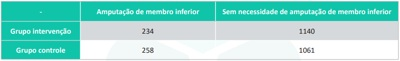
A Para cada 20 indivíduos tratados com a nova droga, conseguiremos evitar uma amputação.
B A redução absoluta de risco com o novo tratamento foi de 25%.
C A incidência de amputação calculada no estudo foi maior no grupo intervenção.
D A eficácia da nova droga foi de 13% na redução do risco de amputação.
E O risco relativo calculado no estudo foi de 0,87%.
Questão 772 · Medicina Preventiva · 4000194511Pesquisadores de uma Universidade brasileira resolveram fazer um estudo para avaliar a incidência de câncer de pele em uma população de uma pequena cidade litorânea no Nordeste brasileiro. Desse modo, dividiram a comunidade em aqueles que apresentavam exposição regular ao sol versus aqueles que não apresentavam tal exposição. Ambos os grupos foram acompanhados por 5 anos para avaliar o surgimento de neoplasias malignas cutâneas. Diante do que foi descrito, os estudiosos empreenderam que tipo de estudo epidemiológico?
A Coorte não concorrente.
B Transversal.
C Caso controle.
D Ensaio clínico.
E Coorte concorrente.
Questão 773 · Medicina Preventiva · 4000194510Durante uma consulta em um ambulatório de gastroenterologia, um médico orientou seu paciente sobre a importância da realização da colonoscopia para o rastreamento do câncer colorretal. O pro ssional explicou que, na idade em que o indivíduo se encontra, existe indicação da realização do exame. Além disso, deixou claro os riscos e benefícios do rastreio, informando em detalhes todos os procedimentos envolvidos para a sua realização, desde o preparo, passando pela anestesia, até o exame colonoscópico propriamente dito. Após todos os esclarecimentos, o paciente optou por não realizar o exame, explicando que não se sentia confortável para realizá-lo no momento. O médico, então, respeitou sua posição e se mostrou disponível para maiores esclarecimentos e realização da propedêutica em outro momento. Segundo os princípios da Bioética, a atitude do pro ssional de saúde diante da negativa do paciente indica o respeito a qual deles?
A Justiça
B Autonomia
C Indiferença
D Não maleficência
E Beneficência
Questão 774 · Exacerbação Aguda da DPOC EADPOC · Farmacológico · Tratamento · 4000194509Sobre a exacerbação de doença pulmonar obstrutiva crónica (DPOC), é correto afirmar que:
A o tratamento precoce reduz o risco de novas exacerbações
B recomenda-se o uso de corticoterapia oral nos primeiros 5 a 7 dias de tratamento
C a antibioticoterapia é útil na melhora sintomática, mas não tem impacto sobre mortalidade
D deve-se evitar o uso de corticoides sistémicos dado o risco de piora na resposta imunológica
Questão 775 · Características dos sopros cardíacos · 4000194508Ao exame físico, a alteração que sugere um sopro cardíaco patológico é:
A sopro grau 2/6
B sopro diastólico
C sopro supraclavicular que desaparece após abdução do ombro
D sopro mais audível entre a borda esquerda do esterno e ápice cardíaco
Questão 776 · Política Nacional de Atenção Básica PNAB · 4000194507A insu ciência Renal Crónica é um problema de saúde pública, estando sua incidência e prevalência aumentando nos últimos anos. A Atenção Primária à Saúde tem um papel importante na identi cação e manejo dos pacientes portadores de Insu ciência Renal Crónica. Sobre o acompanhamento desses pacientes na Atenção Primária à Saúde, pode-se afirmar que:
A pacientes com Insuficiência Renal Crónica devem ser encaminhados para acompanhamento conjunto com Nefrologista assim que a condição é diagnosticada
B o controle da Hipertensão Arterial Sistémica é importante para evitar a progressão da doença renal e deve ser manejado em conjunto com cardiologista especializado em Insuficiência Renal Crónica
C os pacientes em estágios de insuficiência Renal Crónica com redução de leve a moderada na taxa de filtração glomerular podem ser acompanhados exclusivamente na Atenção Primária à Saúde
D pacientes que necessitem de tratamento com hemodiálise devem ser encaminhados para a nefrologia apenas no momento em que for necessário iniciar a hemodiálise, não sendo necessária avaliação prévia
Questão 777 · Clínica Médica · 4000194506Pacientes com insu ciência cardíaca são comuns na Atenção Primária à Saúde e o(a) médico(a) de família e comunidade deve estar preparado(a) para manejar essa condição de saúde em seu dia a dia. Em relação à abordagem inicial do paciente com suspeita de Insuficiência Cardíaca, podemos afirmar que:
A as informações obtidas peia anamnese não são úteis para o diagnóstico da insuficiência cardíaca, já que dependem da capacidade dos pacientes contarem seus sintomas de forma confiável
B os achados classicamente descritos para o exame físico de pacientes com insuficiência cardíaca tem alta sensibilidade, sendo sua ausência um critério confiável para se excluir a possibilidade de insuficiência cardíaca
C o ecocardiograma não é necessário para o diagnóstico de Insuficiência Cardíaca, mas deve ser solicitado na abordagem inicial desses pacientes para diferenciar entre as formas com e sem fração de ejeção preservada
D o eletrocardiograma e a radiografia de tórax não tem utilidade para a abordagem da suspeita de insuficiência cardíaca por serem exames com baixa especificidade, devendo ser substituídos pelo ecocardiograma
Questão 778 · Clínica Médica · 4000194505Em uma tarde de trabalho na Clínica da Família você atende Oswaldo, um homem de 34 anos de idade, sem comorbidades, com queixa de dor epigástrica há alguns meses, acompanhada de sensação de plenitude e náuseas. O paciente não apresenta sinais de alerta para doenças graves. Você suspeita de um diagnóstico de dispepsia e inicia a abordagem da dor epigástrica de Oswaldo naquela mesma consulta. A abordagem inicial para o manejo do caso é;
A solicitar endoscopia digestiva alta para a pesquisa de úlceras gastroduodenais antes de iniciar o tratamento
B solicitar endoscopia digestiva alta para exclusão de lesões estruturais concomitantemente ao inicio do tratamento com Inibidor de Bomba de Prótons
C iniciar tratamento empírico para erradicação de
D iniciar tratamento com Inibidor de Bomba de Prótons por quatro semanas e, caso não haja melhora após esse período, tratar empiricamente para
Questão 779 · Clínica Médica · 4000194504Pacientes adultas não grávidas com bacteriúria assintomática, em geral, não devem ser tratadas com antibióticos para erradicação da bactéria colonizadora do trato urinário. No entanto, em algumas situações especi cas, esse tratamento pode trazer benefícios à paciente. Está indicado o tratamento da bacteriúria assintomática em:
A pacientes diabéticas com hemoglobina glicosilada acima do alvo de tratamento
B pacientes que vão ser submetidas a procedimentos que envolvem instrumentação do trato urinário
C pacientes que apresentam infecção recorrente do trato urinário, com mais de cinco episódios nos últimos 12 meses
D pacientes, nas quais a bactéria identificada na urocultura apresenta resistência aos antibióticos de primeira linha para o tratamento
Revisar: possível letra faltando em enunciado
Questão 780 · Clínica Médica · 4000194503No cuidado ofertado ao paciente com diagnóstico de Herpes Zoster, pode ser considerado o uso de antivirais sistémicos como parte do tratamento. Está indicado o uso de antivirais sistémicos em:
A pacientes com dor moderada a grave associada às le¬sões cutâneas
B pacientes com cometimento da região do tronco
C pacientes portadores de diabetes
D pacientes entre 30 e 50 anos de idade
Questão 781 · Clínica Médica · 4000194502Durante a avaliação da queixa de epistaxe e definição da conduta a ser seguida, deve-se fazer a diferenciação entre epistaxe anterior e posterior. Sobre essas duas formas de apresentação da epistaxe, pode-se afirmar que:
A no manejo inicial da epistaxe anterior, é recomendado que o paciente mantenha-se sentado, com a cabeça fletida para trás
B a epistaxe posterior é a forma mais comum, sendo frequentemente encontrada em pacientes na atenção primária à saúde
C uma forma eficiente de confirmar a origem anterior da epistaxe é encontrar o foco de sangramento na mucosa nasal por meio de exame especular das narinas
D em caso de suspeita de epistaxe posterior, deve-se fazer o tamponamento posterior e observação ambulatorial do paciente com retorno em 24 a 48 horas
Questão 782 · Clínica Médica · 4000194501Na abordagem a pacientes com linfonodomegalia na Atenção Primária à Saúde, é correto afirmar que:
A a biópsia é necessária para confirmar o diagnóstico etiológico e definir o manejo inicial do quadro
B entre as causas mais comuns de linfonodomegalias localizadas está a linfonodomegalia reacional
C a investigação com ultrassonografia deve ser solicitada em todos os casos de linfonodomegalia localizada para a pesquisa de neoplasias
D linfonodomegalia localizada em cadeia supraclavicular pode ser observada por até quatro semanas até resolução espontânea, antes de se iniciar investigação etiológica
Questão 783 · Clínica Médica · 4000194500O medicamento utilizado em terapias antirretrovirais com maior associação a eventos adversos relacionados com sintomas neuropsiquiátricos como distúrbios do sono, sonolência, pesadelos, irritabilidade, euforia, depressão e agitação é:
A lamivudina (3TC)
B raltegravir (RAL)
C atazanavir (ATZ)
D efavirenz (RFZ)
Questão 784 · Clínica Médica · 4000194499Sobre as paralisias faciais periféricas em adultos, é correto afirmar que:
A recomenda-se conduta expectante, limitando-se as intervenções à proteção ocular e fisioterapia precoce
B caracterizam-se pela ausência de acometimento da musculatura periocular
C recomenda-se a corticoterapia oral com prednisona 60mg/dia por 7 dias
D decorrem de processo inflamatório no nervo trigêmeo
Questão 785 · Clínica Médica · 4000194498Sobre o manejo da abstinência alcoólica, está correto afirmar que:
A para pacientes com hepatopatia grave, o lorazepam é a melhor opção de benzodiazepínico para alivio dos sintomas
B a escala CIWA-Ar permite determinar se o paciente necessita de suplementação de tiamina
C a reposição de tiamina deve ser realizada com 1Q0mg/ dia por via intramuscular por 30 dias
D deve ser realizado exclusivamente em centros de atenção psicossocial - álcool e outras drogas
Questão 786 · Cirurgia · 4000194497A respeito das dores abdominais agudas não traumáticas, é correto afirmar que:
A indivíduos que procuram unidades da Atenção Primária à Saúde com esta condição devem ser imediatamente direcionados a um serviço de emergência, para não atrasar a investigação inicial
B cerca de 30% das pessoas que procuram atendimento com este quadro ficam sem diagnóstico etiológico preciso, mesmo após investigação cuidadosa
C a expressão facial e o comportamento do usuário ao chegar com dor abdominal têm pouca correlação com a real intensidade da dor
D a rotina radiológica de abdome agudo tem grande importância diagnóstica, e deve ser solicitada sempre que possível
Questão 787 · Cirurgia · 4000194496Sobre o manejo inicial do ferimento cutâneo agudo, é correto afirmar que:
A pode ser feito no local do acidente
B a primeira ação a ser realizada é o garroteamento
C é recomendada a lavagem com água quente e sabão
D o uso precoce de qualquer tipo de pomada auxilia no tamponamento
Questão 788 · Cirurgia · 4000194495Sobre o manejo de ferida, através de síntese primária, é correto afirmar que:
A os tecidos são aproximados pouco tempo após a ocorrência da lesão, com pequeno risco de infecção
B a cicatrização total se dará em um período longo e resultará em uma quantidade excessiva de tecido fibroso
C é o método de escolha para ferimentos com perda tecidual, quando não há profissional habilitado para realização de enxerto ou retalho
D as incisões realizadas transversalmente às linhas de tensão (ou de força) tendem a alargar menos, resultando em melhor resultado estético
Questão 789 · Cirurgia · 4000194494Em relação à lavagem otológica para remoção de tampão de cerume, é correto afirmar que:
A a irrigação deve ser realizada com soro fisiológico a temperatura entre 25 e 35 graus Celsius
B a água que jogada do conduto deve ser retirada utilizando aspirador próprio para o procedimento
C deve ser realizado apenas se o(a) paciente tiver exame prévio comprovando integridade da membrana timpânica
D a irrigação do conduto auditivo deve ser realizada com o jato direcionado para cima, para que a água crie um efeito de turbilhonamento
Questão 790 · Cirurgia · 4000194493Com o objetivo de se prevenir distúrbios broproliferativos na cicatrização de feridas operatórias, recomenda-se:
A manter o uso de fita adesiva ou utilizar adesivos de silicone, após a retirada dos pontos
B utilizar creme tópico bacteriostático em lesões maiores que 10 centímetros
C deixar a lesão sempre seca, de preferência com leve descamação
D realizar corticoterapia oral em pulsos altos
Questão 791 · Cirurgia · 4000194492Em relação ao procedimento de retirada de corpo estranho localizado em tecido subcutâneo, é correto afirmar que:
A mesmo no caso de objetos pequenos, deve-se evitar a remoção com a própria pinça
B recomenda-se um tempo máximo de 60 minutos para procura e localização do corpo estranho
C deve-se proceder a uma incisão em X sobre o orifício de entrada para posterior localização do material
D é necessário realizar anestesia local e inserir uma pinça de ponta fina no orifício de entrada para localizar o objeto de maneira precisa
Questão 792 · Cirurgia · 4000194491A queimadura que envolve epiderme e derme papilar, clinicamente reconhecida pela presença de vesícula ou flictena, que, se rompidas, apresentam fundo rosado, uniforme e brilhante é classificada como de:
A primeiro grau
B segundo grau
C terceiro grau
D quarto grau
Questão 793 · Cirurgia · 4000194490Sobre o manejo inicial do paciente queimado é correto afirmar que:
A as evidências científicas comprovam que o resfriamento pelo tempo mínimo de 30 minutos é útil para impedir o agravamento da lesão
B caso haja resíduos secos de substâncias químicas, as roupas não devem ser retiradas pelo risco de ampliar a queimadura
C para ser efetivo e minimizar o aprofundamento da lesão, o resfriamento deve ser providenciado em até 2 minutos após o acidente
D quando o globo ocular é atingido, recomenda-se a lavagem com solução oleosa
Questão 794 · Cirurgia · 4000194489Ao suspeitar de uma fratura óssea, o principal exame de imagem para realização do diagnóstico é:
A tomografia computadorizada
B ressonância magnética
C radiografia simples
D ultrassonografia
Questão 795 · Cirurgia · 4000194488Sobre as fraturas é correto afirmar que:
A nem sempre a ausência de desvio admite tratamento conservador
B as intra-articulares exigem redução anatômica antes do tratamento cirúrgico
C a diafisária do úmero não admite nenhum desvio, por não ser possível compensação pela articulação
D as articulares em região de carga admitem desvios maiores, pois a articulação próxima permite compensação do desalinhamento
Questão 796 · Cirurgia · 4000194487A avaliação de uma emergência pré-hospitalar deve seguir, inicialmente, a sequência protocolar mundial do exame primário ABCDE do atendimento às urgências e emergências. Sobre o acrónimo ABCDE, é correto afirmar:
A a letra A se refere ao atendimento das vias aéreas (aitways) e controle da coluna cervical
B a letra B se refere ao posicionamento do corpo (body) para avaliação de possíveis fraturas
C a letra D se refere a proteção do ambiente {detection), para evitar novos acidentes no local
D a letra C se refere à circulação, em que deve ser calculado o volume de sangue perdido pelo paciente
Questão 797 · Cirurgia · 4000194486Sobre a realização do pré-operatório na atenção primária à saúde, assinale a alternativa correta:
A deve ser realizada apenas nos casos de pacientes com classificação de risco ASA I ou II
B precisa ser realizada por um cardiologista devido a necessidade de avaliação cardiovascular
C objetiva identificar e manejar os riscos que podem aumentar a morbimortalidade perioperatória
D possui alguns exames complementares obrigatórios como radiografia de tórax, hemograma, glicemia e creatinina
Questão 798 · Ginecologia · Obstetrícia · 4000194485Sobre a doença inflamatória pélvica (DIP) é correto afirmar:
A parcerias sexuais dos últimos 2 meses antes do diagnóstico, sintomáticas ou não, devem ser tratadas empiricamente para infecção por
B em caso de pessoas que utilizam DIU, este deve ser removido imediatamente
C o tratamento ambulatorial de primeira opção é composto por ceftriaxona + doxiciclina
D em caso de DIP em gestante, contraindica-se o tratamento hospitalar, para diminuir a exposição da gestante a microrganismos multirresistentes
Questão 799 · DIU de cobre · 4000194484A respeito da utilização do dispositivo intrauterino (DIU) de cobre, está correto afirmar que:
A em caso de gestantes que queiram usar o método, deve- se aguardar 4 semanas pós-parto para se executar a inserção
B recomenda-se a ultrassonografia após a inserção para confirmação do posicionamento correto do dispositivo
C sua inserção deve ser precedida de ultrassonografia para avaliação de anomalias anatômicas uterinas
D pode ser inserido em nulíparas sem realização de exames de imagem prévios
Questão 800 · Ginecologia · Obstetrícia · 4000194483Sobre a solicitação de ultrassonografia (USG) obstétrica em gestações de baixo risco, é correto afirmar:
A recomenda-se a realização de USG com 32 semanas para avaliação fetal próxima ao termo
B a USG obstétrica, quando realizada entre 18 e 20 semanas, tem alta sensibilidade para o diagnóstico de malformações fetais
C recomenda-se a realização de pelo menos uma USG morfológica ao longo do pré-natal, de preferência próximo às 24 semanas de gestação
D recomenda-se solicitar a USG quando há incerteza sobre a DUM, quando a gestante apresenta ciclos menstruais irregulares ou quando houver discrepância entre a altura uterina e a IG presumida.
Questão 801 · Ginecologia · Obstetrícia · 4000194482Sobre as doenças infecciosas durante a gravidez, pode-se afirma que:
A a vaginose bacteriana tem sido associada ao nascimento de crianças com baixo peso
B a ocorrência de síndrome da varicela congénita é a mais alta no Brasil, comparada com toxoplasmose e sífilis
C a infecção pelo vírus da rubéola, pode resultar em morte fetal, principalmente durante as últimas 16 semanas de gestação
D devido à baixa taxa de toxoplasmose congénita, atualmente não se recomenda a testagem durante as consultas de pré-natal de rotina
Questão 802 · Ginecologia · Obstetrícia · 4000194481Em relação à solicitação de exames complementares durante o climatério, é correto afirmar que:
A a solicitação de FSH e LH são fundamentais para a confirmação do climatério
B a densitometria óssea deve ser solicitada após 6 meses sem menstruação
C toda mulher no climatério deve seguir a orientação de realizar mamografia e ultrassonografia vaginal anualmente
D na maioria das vezes não é necessário solicitar exames complementares, sendo o diagnóstico predominantemente clínico
Questão 803 · Ginecologia · Obstetrícia · 4000194480A conduta correta após um primeiro resultado de um exame citopatológico do colo do útero com resultado de células escamosas atípicas de significado indeterminado, talvez não neoplásica (ASC-US) em uma mulher com 25 anos de idade é:
A encaminhar para biópsia
B encaminhar para colposcopia
C repetir o citopatológico em 3 anos
D repetir o citopatológico em 12 meses
Questão 804 · Ginecologia · Obstetrícia · 4000194479A elevação da pressão arterial anterior à gestação ou pressão arterial associada à idade gestacional de até 20 semanas e presente 12 semanas após o parto, é classificada como:
A hipertensão gestacional
B hipertensão crónica
C pré-eclâmpsia
D eclampsia
Questão 805 · Ginecologia · Obstetrícia · 4000194478Dentre as causas genéticas de amenorreia, podemos citar:
A sínéquias uterinas
B síndrome de Turner
C síndrome de Cushing
D exercício físico excessivo
Questão 806 · Pólipo endometrial · 4000194477Sobre os pólipos endometriais, está correto afirmar que:
A mulheres com baixo índice de massa corporal são mais propensas a apresentá-los
B precisa medir no mínimo 10 milímetros para receber essa nomenclatura
C o método de escolha para o diagnóstico é a ressonância magnética
D provavelmente são originários de uma hiperplasia focal endometrial
Questão 807 · Ginecologia · Obstetrícia · 4000194476Um quadro de abortamento retido está adequadamente descrito por:
A gestação inviável em que não houve expulsão de nenhum produto da concepção, com ausência da abertura do colo do útero
B expulsão de todos os produtos da concepção, acompanhado por sangramento e dor
C sangramento genital de intensidade moderada com odor fétido, dor abdominal e febre
D expulsão parcial dos produtos da concepção acompanhado de dores intensas e colo do útero aberto
Questão 808 · Ginecologia · Obstetrícia · 4000194475Em relação à gravidez ectópica, é correto afirmar:
A tem a nuliparidade como maior fator de risco
B é diagnosticada através de histeroscopia diagnóstica
C devem ser abordadas com medicação abortiva assim que suspeitada
D cursa com implantação e desenvolvimento do embrião fora da cavidade endometrial
Questão 809 · Ginecologia · Obstetrícia · 4000194474O puerpério é o período que se inicia após o parto e dequitação da placenta e tem seus estágios correspondentes corretamente descritos por:
A imediato: 1° ao 20° dia
B tardio: 30 ao 45° dia
C remoto: além do 45° dia
D intermediário: 10° ao 20° dia
Questão 810 · Pediatria · 4000194473As evidências dos benefícios do aleitamento materno, tanto para a criança quanto para a mãe, a família e a sociedade, estão bem estabelecidas. Sobre o processo de aleitamento é correto, afirmar que:
A está associado à diminuição do risco de morte súbita do lactente
B mamilos planos impedem a amamentação, indicando a introdução de leite artificial para o bebê
C o leite anterior é composto predominantemente por lipídios, saciando a criança mais rapidamente
D os lábios do bebê virados para dentro durante a amamentação são um sinal indicativo de boa pega
Questão 811 · Pediatria · 4000194472Durante a consulta de puericultura de um lactente de 3 meses de idade identi ca-se uma hérnia inguinal à direita. Sobre esta alteração encontrada ao exame físico é correto afirmar que:
A a hérnia inguinal encarcerada em crianças possui menor risco de evoluir para hérnia inguinal estrangulada
B a cirurgia deve ser indicada no momento do diagnóstico devido ao grande risco de encarceramento
C a maioria dos encarceramentos ocorre após o primeiro ano de vida
D em crianças costuma ser sintomática, mesmo que não haja encarceramento
Revisar: possível letra faltando em enunciado
Questão 812 · Pediatria · 4000194471So a tem 9 meses de idade e está em consulta de puericultura na Clínica da Família. Ao avaliar o desenvolvimento da criança observa-se que ela brinca de esconde-achou, transfere objetos de uma mão para a outra, duplica sílabas, mas não senta sem apoio. Diante da avaliação realizada fica caracterizado:
A atraso confirmado no desenvolvimento
B provável atraso no desenvolvimento
C alerta para o desenvolvimento
D desenvolvimento adequado
Questão 813 · Otite Média Aguda · 4000194469Bruno, 4 anos de idade, é atendido na Clínica da Família. Os pais referem que há 3 dias ele iniciou com dor no ouvido direito e episódios de febre, sendo o último de 38,8°C. A otoscopia evidencia abaulamento da membrana timpânica direita com presença de otorreia purulenta, sem outras alterações. A principal hipótese diagnóstica e conduta terapêutica são, respectivamente:
A cerume impactado, sendo recomendada a realização do procedimento de lavagem de ouvido e orientação sobre sinais de alarme
B mastoidite, sendo recomendada administração da primeira dose de antibiótico e encaminhamento para avaliação na emergência
C otalgia inespecífica, sem sinais de infecção, sendo recomendada prescrição de analgésicos e reavaliação em 1 semana
D otite média aguda sem complicações, sendo recomendada prescrição de antibiótico e analgésicos via oral
Questão 814 · Pediatria · 4000194468Sobre a infecção do trato urinário (ITU) em crianças é correto afirmar:
A as ITUs são mais comuns em meninas em todas as faixas etárias
B menores de 2 anos com ITU devem sempre realizar ultrassonografia de vias urinárias
C lactente que não ganha peso adequadamente, apesar de aporte calórico adequado, necessita ser investigado para ITU
D crianças com bacteriúria assintomática devem receber tratamento com antibiótico e fazer seguimento com urocultura para controle de tratamento
Questão 815 · Maus tratos à crianças e adolescentes · 4000194467Na abordagem dos casos suspeitos de violência contra a criança e adolescentes é correto afirmar que:
A é recomendado perguntar, diretamente, se um dos pais foi responsável pelo ocorrido
B o conselho tutelar deve ser comunicado imediatamente em todas as situações de violência
C é recomendado expressar sentimento de indignação e desaprovação em relação a situação ocorrida para facilitar o vinculo com a criança ou adolescente
D a investigação pelo profissional de saúde exige um conhecimento dos sinais clínicos de alerta e detalhes da história que levam a suspeita de violência
Questão 816 · Plano B · 4000194466Enzo, 5 anos de idade, apresenta diarreia líquida, sem muco ou sangue há 2 dias. A mãe diz que ele vem apresentando cerca de 4 a 5 episódios diários, sem febre, náuseas ou vómitos. Não apresenta qualquer comorbidade. Ao exame está alerta, olhos com lágrimas, boca e língua úmidas, pulso cheio e enchimento capilar normal, A abordagem correta diante do caso descrito é adotar:
A o plano B, para tratar a desidratação por via oral em unidade de saúde
B o plano A, para prevenção de desidratação em ambiente domiciliar
C o plano C, para tratar a desidratação grave em ambiente hospitalar
D o tratamento com antibiótico e antidiarreicos
Questão 817 · Resf riado ComumRinossinusite Viral · 4000194465Francisco, 7 meses de idade, apresenta tosse seca há 3 dias, com febre não aferida e obstrução nasal leve. Ao exame: bom estado geral, hidratado, corado, anictérico, acianótico, perfusão capilar periférica menor que 2 segundos. FC: 105 bpm, temperatura axilar: 37°C, FR: 42 irpm, ACV: RCR 2T BNF sem sopros ou ES, AR,: MVUA S/RA. Sem esforço respiratório. Abdome sem alterações. Diante do caso descrito, o diagnóstico provável é de:
A rinofaringite aguda
B rinite alérgica
C pneumonia
D sinusite
Questão 818 · Pediatria · 4000194464Na abordagem da criança com queixa de dificuldade escolar, é correto afirmar que:
A a avaliação do desenvolvimento da criança deve ser realizada através de testes padronizados a fim de garantir a confiabilidade ao processo
B os aspectos biomédicos possuem relevância central, devendo ser o foco da abordagem, através da observação do comportamento de criança durante a consulta
C a visita domiciliar e a abordagem da família devem ser realizadas exclusivamente em situações de maior complexidade, como diante da suspeita de violência doméstica
D as informações sobre o pré-natal e os cuidados que a mãe recebeu durante a gestação, além das primeiras vivências com a criança devem fazer parte da avaliação, dada a importância do vínculo mãe-bebê para o desenvolvimento neurobiológico
Questão 819 · Pediatria · 4000194463É um sinal de alerta para o diagnóstico de espectro autista:
A conteúdo imaginativo rico durante a exploração dos brinquedos.
B aos 18 meses de idade, não elaborar uma frase com início, meio e fim.
C aos 2-3 meses de idade, não olhar nos olhos do examinador ou do adulto com quem tem vinculação significativa
D aos 8 meses de idade, acompanhar um adulto com quem possui vinculação significativa quando este se afasta.
Questão 820 · Gastrologia Pediátrica · 4000194462Sobre a dor abdominal recorrente na criança, é correto afirmar que:
A parasitoses são a principal causa
B a localização principal referida pelas crianças é supra púbica
C a dor é real e causa grande sofrimento para a criança e familiares
D independente da ausência de sinais de alerta, recomenda-se a realização de exames de imagem
Questão 821 · Medicina Preventiva · 4000194461Paciente masculino, 25 anos de idade, apresenta febre, dor de garganta, anosmia e coriza há dois dias. Refere início dos sintomas cinco dias após ter participado de uma festa onde não utilizou máscara por estar com o esquema vacinai para Covid-19 completo, incluindo duas doses de reforço. Neste caso, o diagnóstico de Covid-19 poderá será
A confirmado por dosagem de anticorpos neutralizantes - se resultado positivo
B confirmado por biologia molecular- se RT-PCR detectável para $ARS-Cov2
C descartado por teste imunológico (ELISA) - se IgM negativo para $ARS-Cov2
D descartado por Teste Rápido antígeno - apenas um teste com resultado negativo
Questão 822 · Medicina Preventiva · 4000194460No modelo de nanciamento da Atenção Primaria à Saúde no âmbito do Sistema Único de Saúde estabelecido pelo Programa Previne Brasil, o quantitativo de cadastro populacional, a vulnerabilidade social e o perfil demográfico são considerados no componente:
A captação ponderada
B pagamento por desempenho
C incentivo para ações estratégicas
D incentivo para ações preventivas
Questão 823 · Medicina Preventiva · 4000194459Nas últimas décadas, o Brasil passou por importantes avanços no setor saúde, impactando diretamente nos indicadores de morbidade e mortalidade, Analisando o índice de Swaroop & Uemura (ISU) e as curvas de Nelson Moraes das diferentes regiões do país, verifica-se que:
A apenas na região Nordeste a curva de Nelson Moraes não apresenta o formato da letra jota invertida
B os valores do ISU registrados para a região Sudeste são menores que os do Brasil como um todo
C o índice de Swaroop & Uemura (ISU) na região Sul permanece mais elevado do que na região Norte
D pela classificação de Swaroop & Uemura o Brasil encontra-se no quarto grupo com ISU abaixo de 25%
Questão 824 · Medicina Preventiva · 4000194458Em 2022, houve um aumento expressivo da incidência de Dengue no estado do Rio de Janeiro quando comparado ao ano anterior, levando as autoridades sanitárias a alertarem a população quanto a importância da eliminação de criadouros de proposto por Laevell e Clarck, na história natural da doença, as ações de controle de vetores são classificadas como prevenção:
A quaternária
B terciária
C secundária
D primária
Questão 825 · Medicina Preventiva · 4000194457Uma das principais ações no enfrentamento da pandemia de Covid-19 foi a implementação da vacinação. No Brasil, a primeira dose foi aplicada em 17/01/2021, iniciando por pessoas com risco elevado para forma grave da doença. A elaboração do calendário vacinai considerando os grupos prioritários foi uma decisão pautada no seguinte princípio do Sistema Único de Saúde:
A equidade
B integralidade
C universalidade
D hierarquização
Questão 826 · Medicina Preventiva · 4000194456De acordo com a Lei 8.080, de 1990, que regula as ações e serviços de saúde em todo o território nacional, a saúde é um direito fundamental do ser humano. Considerando o dever do Estado de garantir o pleno exercido deste direito, a Lei Orgânica da Saúde prevê:
A elaboração, coordenação e execução de políticas de saúde centralizadas pela União
B a execução de políticas intersetoriais, de forma articulada entre as três esferas de governo
C ênfase na descentralização das ações e serviços para os estados e o distrito federal
D descentralização da coordenação do Sistema de Vigilância Sanitária para os municípios
Questão 827 · Medicina Preventiva · 4000194455A identi cação das necessidades de saúde da população é fundamental para orientar o planejamento ações no contexto da regionalização. De acordo com o decreto N 7.508 de 2011, nesta identi cação deve constar a descrição geográ ca da distribuição de recursos humanos, de ações e serviços de saúde ofertados tanto pelo SUS quanto pela iniciativa privada, levando em consideração a capacidade instalada existente, os investimentos e o desempenho através do resultado dos indicadores de saúde. Estas informações compõem o (a):
A região de saúde
B mapa da saúde
C rede de atenção à saúde
D território em saúde
Revisar: possível letra faltando em enunciado
Questão 828 · Medicina Preventiva · 4000194454Em novembro de 2022, líderes de diversos países participaram da 27a Conferência das Partes das Nações Unidas sobre Mudanças Climáticas (COP 27) com o objetivo de discutir estratégias para conter o aumento da temperatura global, já que a preservação do meio ambiente é uma preocupação mundial especialmente pelos impactos na saúde da população. Dentre os Determinantes Sociais da Saúde, de acordo com o modelo de Dahlgren & Whitehead, as condições ambientais gerais, socioeconômicas e políticas encontram-se na camada:
A das condições de vida e trabalho, evidenciando a situações de iniquidade e risco social
B interna, refletindo o comportamento pessoal e os modos de vida que afetam a saúde
C mais externa, como macrodeterminantes influenciando em todas as outras camadas
D das redes sociais, destacando o conceito de saúde comunitária no cotidiano das pessoas
Questão 829 · Medicina Preventiva · 4000194453Diversos estudos sobre Covid-19 foram publicados nos últimos dois anos contribuindo para um maior conhecimento da doença, levando a melhores resultados no manejo dos casos e na implementação de medidas preventivas. Ao contrário do que se pensava no início da pandemia, sabe-se hoje que uma mesma pessoa pode ser reinfectada e adquirir a doença várias vezes. A reinfecção é possível devido à seguinte característica do bioagente da doença:
A baixa virulência
B baixa infectividade
C baixa patogenicidade
D baixa imunogenicidade
Questão 830 · Medicina Preventiva · 4000194452Paciente jovem é internado apresentando lesões cutâneas sugestivas de monkeypox. Considerando a Portaria GM/MS N° 3.418, de 31 de agosto de 2022, o caso deve ser notificado:
A a qualquer momento desde que seja confirmado
B imediatamente (até 24 horas), como caso suspeito
C em uma semana, exceto se o paciente for a óbito
D em até vinte e quatro horas após a alta hospitalar
Questão 831 · Medicina Preventiva · 4000194451Alunos do quinto período do curso de Medicina realizaram um inquérito para conhecer o per l de morbidade do corpo docente da universidade, utilizando um questionário auto referido de condições de saúde. Identi caram a existência de 10 casos de hipertensão, e 3 casos de diabetes dentre os 50 professores que lecionavam naquele período. Para descrever os resultados deste estudo, deve ser utilizada a seguinte medida:
A incidência
B letalidade
C prevalência
D mortalidade
Questão 832 · Medicina Preventiva · 4000194450Paciente de 55 anos, vítima de acidente automobilístico, foi submetido a duas cirurgias para tratamento de fratura em membro inferior direito, permanecendo importante limitação de movimentos di cultando a deambulação. Para auxiliar na sua recuperação, foi referenciado ao serviço de sioterapia. Neste caso, o tratamento fisioterapêutico está classificado no seguinte nível de prevenção:
A quaternária
B terciária
C secundária
D primária
Questão 833 · Clínica Médica · 4000194449Homem de 56 anos queixa-se de emagrecimento apesar de estar se alimentando muito bem. Relata polaciúria com micções de grande volume, porém nega disúria, algúria ou alteração do jato urinário. É obeso (IMC: 38,9kg/m²), tabagista, portador de HAS e insu ciência cardíaca isquêmica, em uso de enalapril 20mg ao dia, AAS 100mg ao dia e atorvastatina 40mg ao dia. O exame físico não apresenta anormalidades. Exames de laboratório: glicemia de jejum 276mg/dL; HgA1C 10,7%; creatinina 1,2mg/dL. Assinale a alternativa que apresenta a prescrição inicial MAIS adequada nesse caso.
A Metformina.
B Insulina NPH e metformina.
C Empagliflozina.
D Insulina regular pré-prandial.
Questão 834 · Clínica Médica · 4000194448Homem de 66 anos retornou de viagem em um cruzeiro marítimo apresentando febre (38,6oC) e tosse produtiva com escarro amarelado. A radiogra a do tórax apresentou consolidação pulmonar no hemitórax esquerdo. Está em uso de amoxicilina-clavulanato 500/125mg de 8/8h por via oral há 4 dias, sem melhora clínica. Realizou teste de antígeno para 142x88mmHg, FC: 72bpm, FR: 17ipm, SpO2 96% (aa). Sem outras alterações. Assinale a alternativa que apresenta o tratamento
A Trocar o tratamento para levofloxacino (VO).
B Manter amoxicilina-clavulanato(VO) e acrescentar doxiciclina (VO).
C Manter amoxicilina-clavulanato em dose dobrada (IV).
D Trocar o tratamento para ceftriaxona (IV) e azitromicina (VO).
Questão 835 · Clínica Médica · 4000194447Mulher de 27 anos queixa-se de dor na região cervical anterior e febre há 8 dias. Nega comorbidades conhecidas e não faz uso de medicamentos. Ao exame físico, PA: 140x86mmHg, FC: 118bpm, FR: 18ipm, SPO² 98% (aa), Tax: 37,9°C. Apresenta tireoide de volume aumentado, quente e dolorosa a palpação. Os exames respiratório, cardiovascular e abdominal não revelam outras anormalidades. O exame neurológico revela tremor postural e cinético das extremidades superiores e hiperreflexia difusa. Exames de laboratório: TSH 0,03mU/L (VR 0,4 a 4,5mU/L); T4L 2,7ng/dL (VR 0,7 a 1,8ng/dL); leucócitos 15.980/mm3 (VR 4.000 a 11.000/mm³); neutró los 11.540 (VR 1.500-7.600/mm³); VHS 84mm (VR > 20mm). Assinale a alternativa que apresenta a prescrição MAIS adequada para essa paciente
A Metimazol e dipirona.
B Antibiótico e anti-inflamatório não esteroidal.
C Propiltiouracil e betabloqueador.
D Anti-inflamatório não esteroidal e betabloqueador.
Questão 836 · Clínica Médica · 4000194446Mulher de 27 anos vai ao PS queixando-se de lombalgia direita muito intensa, náuseas e vômitos. É portadora de lúpus eritematoso sistêmico e está em uso de prednisona 10mg ao dia e hidroxicloroquina 400mg ao dia. Nega internações recentes. Ao exame físico, PA: 100x60mmHg, FC: 128bpm, FR: 26ipm, SpO² 94% (aa). Apresentase alerta e orientada. O exame cardiovascular revela ritmo cardíaco taquicárdico; as extremidades estão aquecidas e apresentam o enchimento capilar imediato. O exame respiratório revela taquipnéia, sem esforço e ausculta normal. O exame do abdome não revela anormalidades. A punho-percussão revela dor na região lombar direita. Exames de laboratório: Hemoglobina: 8,3g/dL (VR 12-16d/dL); Leucócitos: 14.780/mm3 (4.000-11.000/mm3 ); neutró los: 10.890/mm³ (1.500-7.000/mm³); plaquetas: 78.000/mm³ (150.000- 450.000mm³); creatinina: 2,2mg/dL; ureia: 54mg/dL; bilirrubina total: 3,4mg/dL (<1,2mg/dL); bilirrubina direta: 2,0mg/dL (<0,4mg/dL). Assinale a alternativa que apresenta uma conduta
A Prescrever transfusão de concentrado de hemácias.
B Solicitar TC abdominal total na urgência.
C Prescrever antibiótico parenteral de espectro adequado.
D Prescrever hidrocortisona parenteral.
Questão 837 · Clínica Médica · 4000194445Homem de 68 anos se queixa de tontura ao se levantar. É portador de DM-2 e HAS, e faz uso de metformina, clortalidona e enalapril. Ao exame físico, PA/FC: (deitado) 190x96mmHg/62bpm; PA/FC: (em pé) 90x46mmHg/61bpm; PA/FC: (após 3 minutos de ortostatismo) 82x40mmHg/64bpm. Hemoglobina glicada 8,9%. Assinale a alternativa que apresenta uma conduta INCORRETA para esse paciente:
A Prescrever dapagliflozina.
B Orientar o aumento da ingestão de água e sal.
C Orientar dormir com a cabeceira elevada (30 a 45 graus).
D Substituir clortalidona e enalapril por captopril uma vez ao dia antes de dormir.
Questão 838 · Clínica Médica · 4000194444Mulher de 28 anos vai ao consultório para seguimento de lúpus eritematoso sistêmico. A manifestação ao diagnóstico foi nefropatia renal classe 2, artrite, FAN 1/320 padrão nuclear homogêneo e anti-DNA 1/80 (reduziu para 1/10 após o tratamento inicial). A última consulta ocorreu 1 ano atrás. Está assintomática. Faz uso regular de hidroxicloroquina 400mg/dia e prednisona 5mg MID. O exame físico não apresenta anormalidades. Assinale a alternativa que apresenta um exame propedêutico que dessa paciente.
A Anti-DNA.
B Campimetria visual automática.
C Fator Antinúcleo (FAN).
D Relação albumina-creatinina na urina.
Questão 839 · Clínica Médica · 4000194443Homem de 21 anos apresenta múltiplas sufusões pelo corpo de início há 3 dias. Nega traumas, outras manifestações clínicas, comorbidades conhecidas, uso de medicamentos e de drogas lícitas ou ilícitas. Não possui história familiar significativa. Ao exame físico, PA: 110X70mmHg, FC: 68bpm, Tax: 36,5°C. Apresenta sufusões nos membros superiores, inferiores e tronco. Sem outras anormalidades quaisquer (incluindo linfonodomegalias ou visceromegalias abdominais). Exames de laboratório: Hemoglobina: 15,3g/dL (VR 12-16g/dL); Leucócitos: 5.840/mm³ (4000-11.000/mm³); Neutró los: 2.580/mm³ (1500-7000/mm³); Linfócitos: 1.250/mm3 (1.000-4.000/mm³); Plaquetas: 9.000/mm³ (150.000 - 450.000/mm³); Hematoscopia do sangue periférico: presença de macroplaquetas, sem outras anormalidades; Creatinina: 0,7mg/dL; Bilirrubina total: 0,4mg/dL (<1,2mg/dL); PCR: 1,2mg/L (<5mg/L); TSH: 1,560mUI/L (0,5-5,0mUI/L); RNI 1,1; PTTa 25/25; Exame de urina sem alterações. Assinale a alternativa que apresenta um exame diagnóstico propedêutica desse caso.
A Fibrinogênio.
B Anticorpos anti-HIV.
C Mielograma.
D TC de pescoço, tórax e abdome total.
Questão 840 · Clínica Médica · 4000194442Homem de 72 anos queixava-se de epigastralgia em queimação há 3 semanas. É portador de HAS e faz uso de enalapril, sinvastatina e AAS para prevenção primária de eventos cardiovasculares. Realizou EDA. Após o resultado, recebeu a prescrição de omeprazol 20mg em jejum por 4 semanas, com resolução completa dos sintomas. Endoscopia Digestiva Alta (EDA): gastrite endoscópica enantematosa moderada do antro; úlcera na transição do corpo para o antro na curvatura menor, de fundo limpo, bordas regulares e planas, de 8mm, sem sinais de sangramento recente. Teste da urease negativo. Bx: gastrite crônica do antro; sem sinais de malignidade. Assinale a alternativa que apresenta a conduta
A Repetir a EDA.
B Suspender o uso do AAS.
C Substituir o AAS por prasugrel.
D Manter o uso do omeprazol por tempo indeterminado.
Questão 841 · Ginecologia · Obstetrícia · 4000194441Em relação ao fibroadenoma da mama, assinale a afirmativa
A É o tumor benigno mais frequente da mama da mulher.
B É rara sua associação com malignidade.
C É um tumor exclusivamente glandular.
D É mais comum no menacme.
Questão 842 · Ginecologia · Obstetrícia · 4000194440Durante a gestação, as alterações sofridas pelo organismo materno são profundas e multissistêmicas. A sua integração visa proporcionar as condições necessárias para o desenvolvimento fetal em equilíbrio com o sistema materno. As adaptações ocorrem em resposta a estímulos provenientes do feto. Sobre as modi cações adaptativas do organismo materno durante a gravidez, assinale a alternativa INCORRETA
A Pode ocorrer redução do peristaltismo intestinal pela ação miorrelaxante da progesterona.
B Pode ocorrer glicosúria e proteinúria pelo aumento do ritmo de filtração glomerular.
C Ocorre efeito hipoglicemiante materno pelo aumento sérico do hormônio lactogênio placentário.
D Ocorre aumento dos níveis séricos de colesterol LDL para esteroidogênese placentária.
Questão 843 · Ginecologia · Obstetrícia · 4000194439Paciente primigesta, gestação de 40 semanas e pré-natal sem intercorrências. Admitida às 6hs no centro obstétrico em fase ativa do trabalho de parto, colo 90% apagado, com dilatação de 5cm, DU=2/30”/10’. Apresentação cefálica, bolsa íntegra, BCF 140bpm, plano de De Lee -3, transverso à direita. Avaliação das 11h mostrou colo no central, permeável para 6cm, plano De Lee zero, transverso à direita, amniorrexe com líquido claro traçado cardiotocográ co tranquilizador. Às 13h, dilatação de 7cm, De Lee +1, occipito direito anterior. Às 15h apresentava 10cm de dilatação, De Lee +2, occipito púbico. Às 19h paciente está completamente exausta e ainda se encontra com 10cm, De Lee de +2, líquido meconial uido e BCF 100bpm, 4/40”/10”. Considerando o caso descrito, a conduta
A Parto vaginal operatório e indicação do uso de vácuo extrator.
B Parto vaginal operatório e indicação de fórceps de Simpson.
C Parto vaginal operatório e indicação de fórceps de Kieland.
D Parto operatório e indicação de cesariana de urgência.
Revisar: possível letra faltando em enunciado
Questão 844 · Ginecologia · Obstetrícia · 4000194438Paciente, 25 anos, primigesta, 28 semanas e 4 dias de gravidez, sem queixas, pré-natal em dia e exames normais. Até o momento ganhou 14kg. No cartão de pré-natal consta glicemia de jejum de 88mg/dl com 12 semanas. Traz o exame do teste de tolerância oral à glicose realizado há uma semana, com os seguintes resultados: • Glicemia de jejum de 97mg/dl. • Glicemia após 1 hora de dextrosol de 183mg/dl. • Glicemia após 2 horas de dextrosol 2 horas de 150mg/dl. Sobre o quadro exposto, é CORRETO afirmar que:
A O teste de tolerância oral à glicose é desnecessário caso a paciente gestante apresente valores de glicemia de jejum no primeiro trimestre inferiores a 92mg/dL.
B O fato de a gestante ser obesa e ter familiares com DM tipo 2 na família obriga à realização de teste de tolerância oral à glicose no primeiro trimestre.
C A melhor conduta nesse caso é realizar um segundo teste confirmatório, que poderá ser glicemia de jejum ou hemoglobina glicosilada.
D O diagnóstico da gestante é Diabetes Mellitus Gestacional (DMG) e a conduta inicial é orientação de dieta e prática de atividades físicas, tendo como base o teste de tolerância oral à glicose.
Questão 845 · Ginecologia · Obstetrícia · 4000194437Paciente de 36 anos, primigesta, obesa, IG de 26 semanas e 1 dia, apresenta no ultrassom feto com peso no percentil 2, artéria umbilical com diástole reversa e ducto venoso com onda A positiva. Considerando o caso descrito, assinale a alternativa que apresenta melhor conduta.
A CIUR estágio 1, acompanhamento semanal.
B CIUR estágio 2, acompanhamento 2x na semana.
C CIUR estágio 3, acompanhamento diário.
D CIUR estágio 4, parto.
Questão 846 · Ginecologia · Obstetrícia · 4000194436Paciente 17 anos, primigesta, IG 37 semanas e 2 dias, nega comorbidades. Dá entrada na maternidade com PA: 170x120mmHg, queixando cefaleia e epigastralgia. Informa movimentação fetal usual, nega perdas vaginais. Solicitado propedêutica HELLP, com resultado dentro da normalidade, exceto pela proteinúria positiva. De acordo com o quadro apresentado, assinale a
A Internação para controle da pressão com prescrição de metildopa, alta com seguimento ambulatorial após estabilidade dos níveis pressóricos.
B Prescrição de sulfato de magnésio para prevenção de eclampsia, hidralazina EV devido a níveis pressóricos e internação para parto, com via de parto obstétrica.
C Internação para cesariana imediata devido ao risco eminente de óbito fetal.
D Informação sobre a normalidade do quadro atual, prescrever anti-hipertensivo e dar alta da urgência.
Questão 847 · Interações medicamentosas · 4000194435Paciente 26 anos, comparece ao seu consultório, pois convive há alguns anos com dispareunia e dismenorreia importantes, e recentemente recebeu diagnóstico de endometriose. Está sem método contraceptivo e deseja discutir sobre a melhor opção. Em relação ao seu histórico de saúde, revela ser portadora de epilepsia bem controlada com carbamazepina. De acordo com os critérios de elegibilidade, assinale a alternativa que apresenta o método para essa paciente.
A Anticoncepcional combinado.
B Pílula de progesterona isolada.
C DIU de cobre.
D Sistema intrauterino liberador de levonorgestrel.
Questão 848 · Ginecologia · Obstetrícia · 4000194434Paciente de 18 anos, nuligesta, comparece a consulta ginecológica queixando-se de corrimento amareloesverdeado, ardor genital e dispareunia. Ao exame especular visualizado secreção bolhosa e colo uterino com aspecto de morango. Assinale a alternativa que apresenta
A Candidíase e fenticonazol via vaginal por 7 dias.
B Vaginose e metronidazol via oral 500mg de 12/12 horas por 7 dias.
C Tricomoníase e metronidazol via oral 2g dose única, recomendado ainda o tratamento do parceiro.
D Tricomoníase e metronidazol via oral 2g dose única, não recomendado o tratamento do parceiro.
Questão 849 · Pediatria · 4000194433Sandro, quatro anos, vem apresentando crises de sibilância desde os seis meses de vida. Na primeira crise, foi internado por uma semana e fez uso de medicações por via inalatória e intravenosa. As crises vêm se repetindo aproximadamente de três em três meses, sempre acompanhadas de quadro de virose, necessitando car em observação clínica em unidades de pronto-atendimento. Nos últimos meses, vem repetindo a crise mensalmente e é medicado pela mãe com salbutamol e prednisolona oral. A mãe observa que a tosse ocorre quando corre e ri. O pai teve crises de bronquite até dez anos de idade e o irmão do Sandro, com um ano de vida, apresenta dermatite atópica. O exame físico mostra bom estado geral; FR: 25irpm, eupneico, oximetria de pulso 96%; ausculta respiratória sem alterações. Considerando o caso descrito, assinale a
A Corticoide sistêmico.
B Corticoide inalatório.
C Beta 2-agonista inalatório de ação curta.
D Corticoide inalatório associado a beta 2 inalatório de ação prolongada.
Questão 850 · Quadro Clínico · 4000194432Pedro, dois anos e seis meses, sexo masculino, previamente hígido, é levado pela mãe ao pediatra por apresentar quadro de tosse e chiado no peito nos últimos sete dias. Exame físico: ativo, FR: 45irpm, sem sinais de toxemia. A ausculta respiratória mostrou roncos e sibilos disseminados, discreta diminuição do murmúrio vesicular em todo hemitórax direito. Radiogra a do tórax: hiperinsu ação à direita com discreto desvio das estruturas do mediastino para a esquerda. Considerando o caso descrito, é paciente são:
A Síndrome do lactente sibilante e prednisolona 1mg/kg/dia por cinco dias.
B Enfisema lobar congênito e tomografia de tórax.
C Aspiração de corpo estranho e broncoscopia.
D Asma e salbutamol 2 jatos, com espaçador, com intervalos de 20 minutos, três vezes.
Questão 851 · Pediatria · 4000194431Helena iniciou há seis semanas com lesões ulceradas em antebraço esquerdo. As lesões iniciaram com uma pápula que evoluiu para ulceração e com posterior surgimento de uma sequência de outros nódulos que também ulceraram. Com esse quadro já foi por duas vezes atendido e medicado com cefalexina e sulfametoxazoltrimetoprim, sem melhora das lesões. Sua mãe relata contato domiciliar com gato que apresentava lesões de pele e que faleceu na última semana. Restante do exame físico sem anormalidades. Nesse caso, é CORRETO afirmar que a história e as lesões são características de:
A Esporotricose.
B Paracoccidioidomicose.
C Toxoplasmose.
D Doença da arranhadura do gato.
Questão 852 · Calendário dos adolescentes · 4000194430Lucas tem 13 anos e foi levado ao posto de saúde para atualizar sua situação vacinal. A última vacina foi aos 10 anos. A carteira vacinal demonstra já ter recebido duas doses da vacina hepatite B, duas doses da vacina tríplice viral e a última dose da tríplice-bacteriana aos seis anos. Para o caso de Lucas, é CORRETO afirmar que se deve indicar as vacinas:
A Dupla tipo adulto, hepatite B e HPV.
B Hepatite B, HPV e meningocócica ACWY.
C HPV, meningocócica C e dupla tipo adulto.
D Hepatite B, meningocócica C e dupla tipo adulto
Questão 853 · Revacinação · 4000194429Inês é um bebê saudável de 6 meses de vida. Ao examinar a criança, o pediatra nota a ausência da cicatriz vacinal da BCG. Nesse caso, de acordo com a recomendação proposta pelo Ministério da Saúde, assinale a conduta CORRETA:
A Deve-se solicitar um PPD.
B Não há necessidade de repetir a vacina.
C A ausência de cicatriz vacinal é certeza que a criança não está imunizada.
D Até o sexto mês de vida, a criança poderá ser revacinada, sem a necessidade de PPD anterior.
Questão 854 · Pediatria · 4000194428Isadora, 10 anos, sem história prévia de doenças, apresentou subitamente episódio de taquicardia, di culdade de respirar, acompanhada de palidez e sensação de desmaio. Relata a “sensação do coração estar saindo pela boca”. Nega desmaios ou síncopes. Ao chegar no pronto-atendimento, a pediatra notou olhar ansioso, FC: 220bpm, PA: 120x70mmHg, enchimento capilar adequado. Aparelho Respiratório - FR: 48irpm, sem ruídos adventícios. Abdômen: fígado e baço não palpados. Foi inicialmente tratado com manobras vagais, sem resposta. Um ECG é obtido e mostrou taquicardia, QRS estreito e ausência de onda P. Considerando o caso apresentado, o diagnóstico
A Taquicardia sinusal.
B Bloqueio Mobitz tipo I.
C Taquicardia ventricular monomórfica.
D Taquicardia supraventricular.
Questão 855 · Varicela · 4000194427Criança de 1 ano e 6 meses, sexo masculino, previamente hígida, é levada a uma consulta com pediatra por apresentar há 3 dias lesões pruriginosas, disseminadas pelo corpo, associado a febre de 38°C. Exame físico realizado mostrou bom estado geral, mas com lesões difusas pelo corpo, inclusive em mucosas, oral e genital, pruriginosas, em vários estágios, ora máculas, pápulas, vesículas e algumas com crostas. De acordo com o caso apresentado, a
A Administrar antitérmicos (paracetamol ou dipirona) + cuidados com limpeza das lesões e orientar em caso de sinais de complicações das lesões.
B Iniciar prednisolona por 5 dias.
C Iniciar cefalexina por 10 dias.
D Iniciar imunoglobulina venosa + Ácido Acetil Salicílico (AAS).
Questão 856 · Pediatria · 4000194426Em pediatria, são causas de anemia com plaquetopenia,
A Leishmaniose visceral.
B Leucemia linfocítica aguda.
C Deficiência de folatos e vitamina B12.
D Púrpura trombocitopênica autoimune (P.T.I) e púrpura de Henoch- Schonlein.
Questão 857 · Cirurgia · 4000194425É CORRETO portal esquerda, deve ser realizado com:
A Gastrectomia.
B Esplenectomia.
C Derivação mesocava.
D Derivação portossistêmica intra-hepática transjugular.
Questão 858 · Cirurgia · 4000194424Um paciente hipotenso sofreu múltiplos ferimentos por arma branca no abdome. Na sala de operação evidencia laceração transversa de toda a extensão do estômago e lesão esplênica de menor gravidade. Considerando esse caso, a
A O fechamento primário de ambas as feridas.
B A ressecção gástrica com fechamento primário.
C A ressecção por meio da reconstrução Y de Roux.
D A gastrojejunostomia posterior com reparo primário da lesão anterior.
Questão 859 · Cirurgia · 4000194423Paciente de 34 anos apresenta-se no consultório médico com queixa de constipação intestinal crônica e hematoquezia há um mês, sem outras queixas ou antecedentes pessoais ou familiares relevantes. Ao exame proctológico completo, foram diagnosticadas hemorroidas internas de grau II. É CORRETO
A Colonoscopia virtual.
B Hemorroidectomia fechada.
C Hemorroidopexia grampeada.
D Orientações dietéticas com aumento de ingestão de fibras
Questão 860 · Cirurgia · 4000194422Paciente do sexo feminino, 54 anos relata dor em cólica em quadrante superior direito do abdome, há trinta dias. Segundo a paciente, há doze horas houve piora da dor localizada, associada à febre e a calafrios. Refere ainda anorexia e que não evacua há quatro dias. Assinale a alternativa que apresenta o
A Abdome agudo vascular.
B Abdome agudo obstrutivo.
C Abdome agudo inflamatório.
D Abdome agudo hemorrágico.
Questão 861 · Cirurgia · 4000194421Um paciente portador de anastomose bileodigestiva, realizada para tratamento de lesão iatrogênica da via biliar, evolui com estenose da anastomose e episódios repetidos de febre com calafrios. Há uma semana também passou a apresentar icterícia e foi internado com quadro de colangite aguda grave. Nesse caso, é
A Antibioticoterapia com cobertura para gram-negativos, enterococos e anaeróbios e desobstrução biliar.
B Antibioticoterapia com cobertura para gram-negativos, enterococos e anaeróbios.
C Antibioticoterapia com cobertura para gram-negativos e enterococos.
D Antibioticoterapia de amplo espectro.
Questão 862 · Cirurgia · 4000194420Paciente do sexo masculino, 45 anos, IMC = 49kg/m², portador de hipertensão arterial controlada com dois medicamentos de uso oral, hiperinsulinemia, hipertrigliceridemia, e apneia do sono de grau leve. À endoscopia, apresenta esofagite grau A e hérnia hiatal de 3cm. A partir do caso apresentado, a
A By-pass gástrico.
B Banda gástrica ajustável.
C Gastrectomia vertical.
D Hiatoplastia com fundoplicatura.
Questão 863 · Cirurgia · 4000194419Os estados de hipoperfusão pós-operatório podem ocorrer nos pacientes graves. No diagnóstico clínico desta condição, é CORRETO afirmar que:
A A hipotensão, oligúria, cianose e alterações da consciência podem ocorrer.
B Os critérios hemodinâmicos do choque cardiogênico são PA<80mmHg sustentada por mais de uma hora.
C A função diastólica não está comprometida pela redução da complacência ventricular induzida pela isquemia.
D A disfunção sistólica com aumento do débito cardíaco é responsável por uma situação de hiperperfusão tecidual e hipóxia celular.
Questão 864 · Cirurgia · 4000194418Na administração de antibioticoterapia no tratamento das infecções em cirurgia temos de tomar cuidado com efeitos colaterais dos antibióticos para evitar eventos adversos para os pacientes. Nesse sentido, analise as afirmativas a seguir: I - A oxacilina pode causar nefrite intersticial. II - As quinolonas podem causar colite pseudomembranosa. III - Os aminoglicosídeos podem causar nefro e ototoxicidade. IV - A vancomicina pode causar reação histamínica e nefrotoxicidade. Estão CORRETAS as afirmativas:
A I e II apenas.
B II, III e IV apenas.
C II e III apenas.
D I, II, III e IV.
Questão 865 · Medicina Preventiva · 4000194417Como corolário do movimento da Reforma Sanitária, a Constituição Federal de 1988 definiu três grandes referenciais para o sistema de saúde brasileiro: o conceito ampliado de saúde; a saúde como direito do cidadão e dever do Estado e a instituição do SUS. Esse sistema, calcado nos princípios de universalidade, integralidade, descentralização e participação da comunidade, foi resultado de um intenso movimento social, que teve como objetivo construir um sistema universal de saúde para o país. São princípios que nortearam a reforma: I - Princípio ético-normativo, que insere a saúde como parte dos direitos humanos. II - Princípio científico, que compreende a determinação social do processo saúde/doença. III - Princípio político, que assume a saúde como direito universal inerente à cidadania em uma sociedade democrática. IV - Princípio sanitário, que entende a proteção à saúde de forma integral, desde a promoção, passando pela ação curativa até a reabilitação. Estão CORRETAS as afirmativas:
A I, II e III apenas.
B I e III apenas.
C II e IV apenas.
D I, II, III e IV.
Questão 866 · Medicina Preventiva · 4000194416De acordo com a Lei Orgânica da Saúde, estão incluídas ainda no campo de atuação do Sistema Único de Saúde (SUS): I - A execução de ações de vigilância epidemiológica e sanitária, de saúde do trabalhador e de assistência terapêutica integral, inclusive farmacêutica. II - A participação na formulação da política e na execução de ações de saneamento básico. III - A ordenação da formação de recursos humanos na área de saúde. IV - O incremento do desenvolvimento científico e tecnológico. Estão CORRETAS as afirmativas:
A I, II, III e IV.
B I, II e III apenas.
C II e IV apenas.
D I e III apenas.
Questão 867 · Medicina Preventiva · 4000194415Analise as ações da equipe da estratégia de saúde da família a seguir: I - Realizar ações de gerenciamento na unidade de saúde. II - Realizar o cuidado em saúde da população adscrita, prioritariamente no âmbito da unidade de saúde, no domicílio e nos demais espaços comunitários (escolas, associações, entre outros), quando necessário. III - Fazer uma busca ativa e a noti cação de doenças e agravos de noti cação compulsória e de outros agravos e situações de importância para o grupo. IV - Participar das atividades de planejamento e avaliação das ações da equipe, a partir da utilização dos dados disponíveis. É CORRETO afirmar que são atribuições de todos os membros da ESF as afirmativas previstas em:
A I e II apenas.
B I, II, III e IV.
C III e IV apenas.
D II, III e IV apenas.
Questão 868 · Medicina Preventiva · Epidemiologia · Legislação sobre registros públicos Lei n 60151973 · 4000194414Homem, 49 anos, motorista de caminhão, se envolveu em um acidente enquanto trabalhava, sofreu fraturas múltiplas, foi internado e submetido à cirurgia. Evoluía adequadamente, mas adquiriu infecção hospitalar, vindo a falecer, 12 dias depois, por septicemia no CTI. Considerando os dados disponíveis, assinale a alternativa que apresenta CORRETAMENTE a causa básica da morte e quem deve fornecer a Declaração de Óbito.
A Septicemia e o IML.
B Septicemia e o intensivista.
C Acidente de trânsito e o IML.
D Acidente de trânsito e o intensivista.
Questão 869 · Medicina Preventiva · 4000194413São doenças passíveis de serem prevenidas com a vacinação, EXCETO:
A Poliomielite.
B Febre amarela.
C Hepatite C.
D Coqueluche.
Questão 870 · Medicina Preventiva · 4000194412Sobre a Política Nacional de Atenção Básica (PNAB), assinale a alternativa
A A PNAB tem na longitudinalidade sua estratégia prioritária para expansão e consolidação da Atenção Básica.
B A Atenção Básica será a principal porta de entrada e o centro de comunicação da Rede de Atenção à Saúde (RAS), coordenadora do cuidado e ordenadora das ações e serviços.
C A integração entre a Vigilância em Saúde e a Atenção Básica é condição essencial para o alcance de resultados que atendam às necessidades de saúde da população.
D A resolutividade e a territorialização são diretrizes do Sistema Único de Saúde e da rede de atenção à saúde a serem operacionalizadas na atenção básica.
Questão 871 · Medicina Preventiva · 4000194411Apesar de ser uma enfermidade antiga, a tuberculose continua sendo um importante problema de saúde pública. Sobre a tuberculose, é CORRETO afirmar que:
A Os bacilos que se depositam em roupas, lençóis, copos e outros objetos facilmente se dispersam em aerossóis e, por isso, podem ajudar na transmissão da doença.
B Embora o risco de adoecimento seja maior nos primeiros 2 anos após a primoinfecção, uma vez infectada, a pessoa pode adoecer em qualquer momento da sua vida.
C Com o início do esquema terapêutico adequado, a transmissão tende a diminuir gradativamente e, em geral, após 5 dias de tratamento, chega a níveis insignificantes.
D A suscetibilidade à infecção é praticamente universal. A maioria dos infectados posterga o adoecimento após a infecção e desenvolve imunidade total à doença.
Questão 872 · Medicina Preventiva · 4000194410Sobre a participação da comunidade na gestão do Sistema Único de Saúde (SUS), assinale a alternativa INCORRETA:
A A Conferência de Saúde se reunirá a cada quatro anos com a representação dos vários segmentos sociais.
B A representação dos usuários nos Conselhos de Saúde e Conferências será paritária em relação ao conjunto dos demais segmentos.
C As Conferências de Saúde e os Conselhos de Saúde terão sua organização e normas de funcionamento definidas em regimento próprio, aprovadas pelo respectivo conselho.
D O Conselho de Saúde, em caráter findável e randômico, atua na formulação de estratégias e no controle da execução da política de saúde na instância correspondente.
Questão 873 · Clínica Médica · 4000194409Mulher de 25 anos comparece a consulta médica para exame admissional. Goza de boa saúde, pratica exercícios físicos regularmente, não é tabagista e nem etilista. Sem passado mórbido de importância. Seu pai faleceu há dois anos, vítima de infarto agudo do miocárdio. Estatura = 1,72m; peso = 66Kg; pressão arterial = 110/70mmHg; frequência de pulso = 70ppm; frequência respiratória: 16ipm. O exame físico não apresenta alterações à exceção de estalido mesossistólico identificado à ausculta cardíaca. Qual das seguintes condições é a causa
A Estenose pulmonar congênita
B Prolapso de valva mitral
C Regurgitação tricúspide
D Válvula aórtica bicúspide
Questão 874 · Clínica Médica · 4000194408Em uma jovem com hipertro a gengival, qual das seguintes condições é a causa achado?
A Bulimia
B Uso de difenilhidantoína
C Uso de tetraciclina
D Uso excessivo de flúor
Questão 875 · Clínica Médica · 4000194407Estudante do sexo masculino, 23 anos, que pratica esportes regularmente e tem como único problema de saúde “pé de atleta”. Desenvolveu subitamente febre acompanhada de dor no pé e perna esquerdos. Ao exame, observou-se que o dorso do pé e a parte distal da região anterior da perna encontravam-se endurados, eritematosos e quentes. A área endurada tinha margens nítidas e segundo informação do estudante estava se estendendo. Ao exame, observou-se ainda, linfadenomegalia inguinal dolorosa. Dentre os micro-organismos relacionados abaixo, qual é o agente etiológico responsável pelo quadro apresentado pelo paciente?
A Bastonetes Gram negativos
B Clostridium spp
C Streptococcus beta-hemolítico
D Tinea pedis
Questão 876 · Clínica Médica · 4000194406Marque a opção abaixo que é vesiculopustulares e poliartralgia sem artrite purulenta:
A Doença de Lyme
B Infecção gonocócica disseminada
C Infecção por
D Infecção por
Questão 877 · Clínica Médica · 4000194405Em se tratando da malária, assinale a alternativa
A A gravidade da doença correlaciona-se sobretudo com a porcentagem de eritrócitos infectados e com a presença de pigmento malárico em mais de 5% dos neutrófilos.
B A infecção por
C Na vigência da deficiência de glicose-6-fosfato desidrogenase, a primaquina, uma das drogas utilizadas no tratamento da protozoose, pode provocar, em seus usuários, hemólise decorrente de estresse oxidativo sobre os eritrócitos.
D Os pacientes com traço falciforme (hemoglobina AS) são particularmente suscetíveis à infecção por Plasmodium falciparum
Questão 878 · Clínica Médica · 4000194404Homem de 72 anos, diabético e hipertenso queixa-se de perda súbita da visão no olho direito, acompanhada de cefaléia. A fundoscopia evidencia edema e hiperemia da papila óptica que apresenta também pequenas hemorragias em “chama de vela” e telangectasias. Dentre as opções abaixo, qual é o diagnóstico
A Glaucoma agudo
B Neuropatia óptica isquêmica
C Retinopatia diabética
D Retinopatia hipertensiva
Questão 879 · Clínica Médica · 4000194403Paciente de 22 anos, do sexo feminino, portadora de diabetes mellitus do tipo 1, deu entrada em serviço de pronto atendimento com quadro de cetoacidose diabética devido à descontinuação do uso da insulina e transgressão dietética. Exames laboratoriais evidenciaram elevação significativa dos níveis séricos de glicose e o pH do sangue arterial era 7,27. Qual dos achados relacionados abaixo se espera encontrar no traçado eletrocardiográfico dessa paciente?
A Aumento da amplitude da onda P
B Ondas T apiculadas
C Ondas U
D Redução da duração do intervalo PR
Questão 880 · Clínica Médica · 4000194402Homem de 42 anos, procurou auxílio médico com quadro de artrite aguda no tornozelo direito. Nega história de trauma e nunca apresentou quadro semelhante anteriormente. É hipertenso e faz uso de hidorclorotiazida. Qual seria a
A Iniciar alopurinol se os níveis séricos de ácido úrico estiverem elevados.
B Iniciar antiinflamatóiro e antibiótico de amplo espectro.
C Iniciar colchicina e antibiótico de amplo espectro.
D Realizar artrocentese propedêutica.
Questão 881 · Clínica Médica · 4000194401Homem de 65 anos com obesidade central, dislipidemia e hiperglicemia de jejum apresenta hipertransaminasemia persistente há mais de um ano. Traz consigo resultados de exames que mostram HBsAg positivo, HBeAg positivo, antiHBe negativo e níveis elevados de HBV DNA. Acerca destas informações, assinale a alternativa CORRETA:
A Este paciente apresenta critérios de hepatite crônica pelo vírus B (VHB).
B Lamivudina é droga de primeira escolha por apresentar maior barreira genética.
C Na maioria destes pacientes o HBsAg negativa a longo prazo.
D Síndrome metabólica não é fator de risco adicional para hepatocarcinoma.
Questão 882 · Clínica Médica · 4000194400Homem de 54 anos estava em uso de clavulanato de amoxicilina para tratamento de sinusite. Houve melhora inicial, mas sete dias após o início do tratamento, ele voltou a apresentar febre associada a diarréia, com cerca de sete dejeções diárias. Dentre as opções abaixo, assinale o exame laboratorial provável do quadro de febre e diarréia:
A Identificação de toxina de
B Isolamento de
C Pesquisa de leucócitos fecais
D Pesquisa de IgG e IgM anti-C. difficile no soro
Questão 883 · Clínica Médica · 4000194399Mulher de 32 anos é avaliada no consultório após um episódio de brilação atrial. Ela foi submetida a cirurgia de correção de Tetralogia de 110x70mmHg, o pulso é 75bpm, regular e a frequência respiratória é 20irpm. A pressão venosa jugular é normal. Há um impulso paraesternal na borda cardíaca esquerda. A ausculta cardíaca revela um sopro protosistólico no segundo espaço intercostal esquerdo e um sopro grau 2/6, diastólico, em decrescente, na borda esternal esquerda, que aumenta com a inspiração. Qual é o diagnóstico
A Comunicação interventricular recorrente.
B Regugirtação tricúspide.
C Regurgitação aórtica.
D Regurgitação pulmonar.
Questão 884 · Clínica Médica · 4000194398A encefalite herpética costuma acometer, preferencialmente:
A O lobo occipital
B O lobo temporal
C O verme cerebelar
D Os hemisférios cerebelares
Questão 885 · Cirurgia · 4000194397Em relação ao tromboembolismo e à trombose venosa profunda assinale a alternativa
A Cintilografia de perfusão inalterada, praticamente, afasta o diagnóstico de tromboembolismo pulmomar
B Na presença de trombose venosa profunda sem causa aparente deve-se pesquisar câncer oculto
C O período pós-operatório imediato de cirurgia oftalmológica é contraindicação de anticoagulação
D A dosagem sérica de D-dímero tem alta sensibilidade e é específica para o diagnóstico de tromboembolismo pulmomar
Questão 886 · Cirurgia · 4000194396Em relação aos cuidados perioperatórios que devem ser dispensados aos pacientes especiais, assinale a alternativa CORRETA:
A O uso de betabloqueadores deve ser interrompido no período pré-operatório por estar associado a uma maior ocorrência de taquicardia e infarto agudo do miocárdio
B De um modo geral, em idosos sem comorbidades, a conduta cirúrgica não deve ser modificada baseando-se apenas no fator idade
C No obeso, as técnicas laparoscópicas proporcionam maior incidência de atelectasias no período pósoperatório do que na cirurgia aberta, devido ao pneumoperitônio
D O segundo trimestre de gestação é o período menos seguro para a realização de operações em grávidas
Questão 887 · Cirurgia · 4000194395Em relação ao uso de antibiótico profilático em cirurgia, assinale a alternativa
A A administração deve ser algumas horas antes do ato cirúrgico, para garantir níveis teciduais adequados no per-operatório
B A dose do antibiótico administrado pode variar em função do peso do paciente, mas não guarda relação com o sangramento per-operatório
C A duração nunca pode prolongar-se por mais de 12horas
D Nas cesareanas, a administração do antibiótico deve ser feita após o clampeamento do cordão umbilical
Questão 888 · Cirurgia · 4000194394Em relação à cicatrização assinale a alternativa
A A ação dos macrófagos se limita à fagocitose de bactérias e tecidos lesados
B A angiogênese é estimulada por níveis elevados de lactato, pH ácido e tensão diminuída de oxigênio
C O uso de corticosteróide exógeno potencializa a síntese de colágeno
D Quanto mais superficiais as feridas, maior o percentual de contração da cicatriz
Questão 889 · Cirurgia · 4000194393Em relação à síndrome do câncer colorretal hereditário sem polipose (HNPCC) assinale a alternativa CORRETA:
A É freqüente o aparecimento de câncer em idade inferior a 50 anos
B O câncer acomete principalmente o cólon esquerdo (distal) e reto
C O tratamento segue as mesmas diretrizes do câncer colorretal clássico
D São raras as lesões sincrônicas e/ou metacrônicas.
Questão 890 · Cirurgia · 4000194392Em relação ao equilíbrio hidroeletrolítico, assinale a alternativa CORRETA:
A A correção de hiponatremia grave deve ser realizada com solução salina hipertônica, infundida rapidamente
B As alterações eletrocardiográficas da hipercalemia incluem ondas T achatadas, diminuição do complexo QRS e depressão do segmento ST
C Cerca da metade do cálcio sérico total se encontra ligado a proteína plasmática, principalmente à albumina
D Na hipercalemia, uma perfusão de gluconato de cálcio reverte definitivamente a depressão cardíaca, diminuindo a concentração sérica do potássio
Questão 891 · Cirurgia · 4000194391Em relação à colecistite aguda assinale a alternativa CORRETA:
A A alitiásica geralmente é desencadeada por lautas refeições
B A presença de icterícia confirma a presença de coledocolitíase
C Na colecistite alitiásica o tratamento se baseia na suspensão da dieta e cuidados gerais
D O diabetes melito em paciente portador de colecistolitíase é um fator predisponente à instalação de colecistite
Questão 892 · Cirurgia · 4000194390Em relação ao trauma toracoabdominal assinale a alternativa
A A quase totalidade das contusões pulmonares são detectadas precocemente (até 12 horas) à radiografia de tórax
B As lesões (rotura) da traquéia devido à desaceleração rápida geralmente ocorrem ao nível da cartilagem cricóide ou da Carina
C Nas fraturas que acometem as porções mais laterais das costelas observa-se tórax instável com movimentos paradoxais com mais facilidade do que quando as fraturas acometem as porções posteriores
D Paciente vítima de trauma toracoabdominal com freqüência respiratória maior que 35 incursões por minuto deve, via de regra, ser entubado
Questão 893 · Cirurgia · 4000194389Em relação à pancreatite aguda (PA) assinale a alternativa
A A elevação dos níveis de ALT e AST nas primeiras 24 horas após o início de uma PA sugere etiologia alcoólica
B Na presença de hiperlipidemia os níveis de amilase sérica encontram-se bastante elevados
C Existe estreita correlação entre o nível de amilase e etiologia, prognóstico e gravidade
D Pacientes obesos com índice de massa corporal (IMC) superior a 30 têm mau prognóstico, mesmo que outros critérios não o sugiram
Questão 894 · Cirurgia · 4000194388Paciente de 40 anos, sexo feminino, vai à consulta devido a nervosismo, intolerância ao calor, palpitações e perda de peso. Ao exame foi constatada taquicardia, pele quente, na e úmida. A palpação da região anterior do pescoço mostrou aumento difuso da tireóide. Os exames laboratoriais mostraram diminuição do TSH e aumento de T3 eT4. Em relação a este caso e com seus conhecimentos sobre a doença assinale a alternativa
A A paciente não corre mais risco de desenvolver exoftalmia já que esta geralmente precede o quadro clínico de hipertiroidismo
B O momento ideal para o tratamento cirúrgico é quando o paciente estiver eutireóideo. Ele deverá também receber solução de iodeto de potássio (lugol) no pré-operatório
C O tratamento com iodo radioativo pode levar a um estado de hipotireoidismo em percentagem significativa de casos
D O tratamento inicial com propiltiuracil pode levar à cura definitiva
Questão 895 · Cirurgia · 4000194387Em relação aos tumores malignos de localização hepática assinale a alternativa CORRETA:
A A invasão da veia porta pelo carcinoma hepatocelular é menos freqüente que a invasão da vesícula biliar
B O fígado cirrótico é mais susceptível que o fígado normal ao implante de metástases de tumores de outros órgãos
C Ao contrário de outras causas de cirrose, o risco de desenvolver carcinoma hepatocelular é particularmente baixo em portador de hemocromatose
D Raramente o carcinoma hepatocelular aparece em um fígado normal
Questão 896 · Cirurgia · 4000194386A síndrome de alça cega ou do supercrescimento bacteriano ocorre devido a um crescimento bacteriano excessivo. Qual dos itens abaixo está CORRETO em relação a esta síndrome?
A A desconjugação dos sais biliares pelas bactérias desencadeia constipação
B Geralmente ocorre anemia megaloblástica responsiva à administração de fator intrínseco
C O diagnóstico pode ser feito através do teste de hidrogênio expirado
D O paciente geralmente desenvolve hipercalcemia
Questão 897 · Pediatria · 4000194385Ao exame de lactente com seis meses de idade, espera-se encontrar na análise do desenvolvimento neuropsicomotor a seguinte habilidade
A Ficar de pé sozinho
B Preensão com pinça delicada usando as pontas dos dedos ou unha, articulação do polegar fletida
C Repetição de sons que ela mesma iniciou
D Responder a rotina verbal tal como bater palmas, dar “tchau-tchau”
Questão 898 · Pediatria · 4000194384Pré-escolar de 3 anos de idade do sexo masculino foi trazido para consulta de rotina na Unidade Básica de Saúde pelos pais, que relatam estarem preocupados com o lho porque o mesmo não está conseguindo se adaptar na escolinha. Não participa das brincadeiras com os colegas, preferindo car isolado dentro da sala. Fala poucas palavras e tende a repetir o mesmo som várias vezes. Fica agitado quando é abraçado pelos pais ou com alguns sons de televisão e faz pouco contato visual. Não se interessa por contato com irmão mais novo, de 4 meses. Para esta criança, assinale a hipótese diagnóstica
A Atraso de linguagem (estimulação insuficiente).
B Comportamento reativo (nascimento do irmão).
C Desenvolvimento adequado (variação individual).
D Transtorno do espectro autista (autismo infantil).
Questão 899 · Escarlatina · 4000194383Criança de quatro anos de idade, previamente sadia, que não fez qualquer esquema de imunização (por opção dos pais que acreditam ser as vacinas algo antinatural e pernicioso para a saúde) é levada a uma Unidade Básica de Saúde com história de febre alta há 48 horas, apresentando eritema pruriginoso em todo o corpo. Ao exame chamam a atenção além do exantema, palidez perioral, língua saburrosa, pele em lixa. Leucograma é realizado e mostra leucocitose com neutro lia e eosino lia. Assinale a hipótese diagnóstica MAIS PROVÁVEL
A Escarlatina
B Infecção por Herpes-virus tipo 6
C Mononucleose infecciosa
D Sarampo
Questão 900 · Laringomalácia · 4000194382Recém-nascido a termo, do sexo feminino, com 23 dias de vida, apresenta di culdade em ganhar peso e tem estridor inspiratório, que piora com a amamentação, a posição supina e com o choro. O diagnóstico MAIS PROVÁVEL
A Bronquiolite viral aguda
B Doença do refluxo gastroesofágico
C Insuficiência cardíaca
D Laringomalácia congênita
Questão 901 · Doença de Wilson DW · 4000194381Criança de oito anos é levada ao serviço de pronto atendimento com quadro de insu ciência hepática aguda. Dentre exames complementares realizados, chama a atenção valores muito altos de bilirrubinas e de cobre sérico e um discreto aumento das aminotransferases, com uma relação AST/ALT igual a 5. Os pais são primos em primeiro grau e um irmão da criança de 26 anos apresenta quadro neurológico caracterizado por alterações na fala com tremores e distonia. Considerando os dados fornecidos, marque o diagnóstico PROVÁVEL
A Deficiência de alfa-1 -antitripsina
B Doença de Wilson
C Forma grave de hepatite A
D Hepatite autoimune
Questão 902 · Pediatria · 4000194380Os sintomas da Chikungunya são parecidos com os da dengue. Assinale a opção com a manifestação clínica
A Convulsões
B Dores articulares
C Tipo de exantema
D Vômitos incoercíveis
Questão 903 · Pediatria · 4000194379Em relação ao crescimento e à maturação sexual na adolescência é CORRETO afirmar:
A A menarca, em geral, coincide com a aceleração do crescimento
B A primeira manifestação de puberdade no sexo feminino é o surgimento de pilosidade axilar
C Geralmente, após os 15 anos de idade, os valores médios da altura e do peso são maiores em indivíduos do sexo feminino que nos do sexo masculino
D No caso de uma puberdade normal, o aumento do volume testicular, nos homens, precede outras modificações corporais
Questão 904 · Contraindicações das vacinas · 4000194378Lactente de dois meses de idade, com dermatite generalizada, é levado a uma Unidade Básica de Saúde para iniciar esquema vacinal. Qual das vacinas abaixo
A Anti-pertussis
B BCG intradérmico
C Difteria
D Tétano
Questão 905 · Pediatria · 4000194377Criança de 15 meses é levada ao ambulatório. A mãe relata episódios de diarreia de repetição desde o desmame do aleitamento materno, aos seis meses de idade com perda progressiva do apetite há três meses. Ao exame, criança apresenta-se com dé cit ponderal e com quadro de desnutrição grave, além de apresentar lesões cutâneas perioral, perianal e nas extremidades. Foi feita hipótese diagnóstica de dé cit nutricional de um micronutriente específico. A foto da criança pode ser vista abaixo Assinale qual é este micronutrientes:

A Cobre
B Ferro
C Selênio
D Zinco
Questão 906 · Pediatria · 4000194376Qual das características abaixo sugere que uma convulsão na vigência de febre
A Ocorrência de convulsão tônico-clônica generalizada
B Convulsão que se repete no mesmo episódio febril
C Ocorrência nas primeiras 24 horas de febre
D Criança com idade entre seis meses e seis anos
Questão 907 · Pediatria · 4000194375Menino de três anos previamente hígido, dá entrada na Unidade de Pronto Atendimento com história de massa abdominal palpada pela mãe durante o banho. Ao exame apresenta bom estado geral, pressão arterial no percentil 95 para a idade. Volumosa massa de limites imprecisos palpada em anco esquerdo. A hipótese diagnóstica
A Hepatoblastoma
B Linfoma não-Hodgkin
C Neuroblastoma
D Tumor de Wilms
Questão 908 · Pediatria · 4000194374Em relação ao tratamento da asma, assinale a alternativa ERRADA:
A criança com asma intermitente e que apresentou crise grave, deve receber corticoide inalatório de forma preventiva
B durante a crise aguda de asma deve-se dar preferência ao corticoide por via endovenosa
C o corticoide inalatório é a terapêutica de primeira escolha na prevenção de todas as formas de asma persistente
D os corticoides inalatórios constituem a medicação antiinflamatória mais efetiva no tratamento da crise aguda
Questão 909 · Ginecologia · Obstetrícia · 4000194373A ligadura da artéria hipogástrica é indicada na abordagem da hemorragia pélvica feminina maciça, quando outras medidas falham. Em relação a esse enunciado assinale a alternativa CORRETA:
A A artéria hipogástrica origina-se cranialmente à bifurcação da artéria ilíaca comum
B A ligadura da artéria hipogástrica aumenta a pressão de pulso da pelve
C As estruturas pélvicas continuam sendo irrigadas por canais colaterais da circulação
D As pacientes submetidas à ligadura bilateral das artérias hipogástricas não tem possibilidade de futura gestação
Questão 910 · Planejamento f amiliar · 4000194372Os anticoncepcionais hormonais proporcionam excelente contracepção quando usados de maneira correta. Assinale a alternativa CORRETA:
A Nem todos anticoncepcionais de estrogênio associado à progesterona aumentam o risco de tromboembolismo
B Os anticoncepcionais hormonais reduzem o risco de câncer de endométrio e de ovário
C Os anticoncepcionais orais apenas de progestogênio aumentam o risco de trombose.
D Os anticoncepcionais orais aumentam o risco de câncer de mama
Questão 911 · Ginecologia · Obstetrícia · 4000194371Paciente de 26 anos procura o centro de saúde relatando dor pélvica há 45 dias. Nega uso de contraceptivos orais ou atividade sexual nos últimos 6 meses. Foi realizado exame de ultrassonogra a endovaginal que revelou massa cística de 4,5cm, anecoica e de limites regulares em ovário direito. Qual a MELHOR CONDUTA
A Indicar cirurgia (ooforoplastia)
B Punção do cisto guiado por ultrassonografia pélvica
C Tratamento conservador: observação e/ou supressão ovariana por 2 meses
D Videolaparoscopia diagnóstica
Questão 912 · Ginecologia · Obstetrícia · 4000194370O uso de comprimidos apenas de levonorgestrel é o método de escolha para contracepção de emergência. Em realção a esse assunto, assinale a alternativa CORRETA:
A A OMS preconiza a dose de 1,5 mg em dose única até uma semana após o coito desprotegido
B O levonorgestrel isolado é menos seguro que as preparações contendo estrogênio
C O levonorgestrel pós-coito é abortivo
D O principal mecanismo de ação é o atraso da ovulação
Questão 913 · Ginecologia · Obstetrícia · 4000194369Paciente de 31 anos de idade, G4P3A0, gestação de 25 semanas, comparece a consulta pré-natal sem queixas. Na anamnese, a paciente relata que em todos os pré-natais tem problemas com o exame de VDRL, mesmo ela e o parceiro terem realizado tratamento com injeções. Os exames laboratoriais do início da gravidez encontravam-se normais; os exames de rotina de segundo trimestre mostram VDRL positivo 1:64. Assinale a alternativa que apresenta
A Iniciar imediatamente tratamento com penicilina benzatina, pois não há possibilidade de se afastar sífilis.
B Não há nada a fazer, pois o resultado do VDRL é um falso positivo, uma vez que a paciente já fez tratamento em gestação anterior.
C Solicitar novo VDRL, para confirmar resultado do exame anterior e só depois iniciar o tratamento.
D Solicitar prova treponêmica para definir o diagnóstico e, se FTaBs for negativo, não precisa de tratamento.
Questão 914 · Ginecologia · Obstetrícia · 4000194368Qual eventos abaixo e com anormalidades da anatomia pélvica:
A Agenesia vaginal com anormalidades variáveis do ducto de Muller
B Bloqueio transversal do sistema mulleriano
C Digenesia gonadal pura
D Insensibilidade androgênica congênita completa
Questão 915 · Ginecologia · Obstetrícia · 4000194367Paciente de 20 anos comparece ao posto de saúde trazendo o seguinte resultado de seu primeiro exame preventivo: Lesão intra-epitelial escamosa de baixo grau (LSIL). Qual a paciente?
A Encaminhar para exame colposcópico
B Realizar a ressecção da zona de transformação atípica do colo uterino com cirurgia de alta frequência (CAF)
C Retorno em 12 meses para novo exame clínico e coleta de citologia
D Retorno em 6 meses para nova citologia de controle
Questão 916 · Ginecologia · Obstetrícia · 4000194366Com relação ao câncer de mama, assinale a alternativa ERRADA:
A A punção biópsia (core biopsy) pode ser realizada em nódulos mamários palpáveis ou impalpáveis
B O rastreamento com mamografia reduz a mortalidade de câncer de mama em mulheres acima de 50 anos
C O risco de câncer de mama é inversamente proporcional à duração da fase reprodutiva da mulher
D Um dos objetivos de rastreamento é detectar tumores menores que 1 cm
Questão 917 · Ginecologia · Obstetrícia · 4000194365Em qual das situações abaixo é MENOR o nível de suspeição de endometriose:
A Mulheres com infertilidade
B Pacientes com dismenorreia após anos de menstruação sem dor
C Pacientes com dispaurenia ou dor pélvica crônica
D Pacientes de raça negra e de baixo nível sócio econômico
Questão 918 · Ginecologia · Obstetrícia · 4000194364Paciente de 32 anos de idade, G3P1A1, com 37 semanas de gestação, um parto normal prévio a termo sem intercorrências, com 39 semanas de gestação, é admitida na maternidade devido à hipertensão arterial crônica e crise convulsiva há 2 horas. Faz uso de metildopa (1,5g por dia). Ao exame físico apresenta PA=160x100mmHg, pulso 92bpm, dinâmica uterina sem contrações, batimentos cardiofetais de 130bpm, colo grosso posterior e dilatado 2,0cm. A respeito desse quadro clínico, assinale a alternativa que apresenta a MELHOR CONDUTA a ser tomada:
A Prescrever corticoide intramuscular por 48h e recomendar controle materno fetal, após afastar hipótese de epilepsia .
B Prescrever hidralazina endovenosa e indicar resolução da gestação, após afastar hipótese de epilepsia.
C Prescrever nifedipina via oral associada à alfametildopa e recomendar controle materno fetal ate atingir 39 semanas.
D Prescrever sulfato de magnésio endovenoso e indicar resolução da gestação quando ocorrer estabilidade do quadro materno.
Questão 919 · Ginecologia · Obstetrícia · 4000194363Paciente primigesta, gestação a termo, encaminhada pelo posto de saúde em fase inicial de trabalho de parto e membranas íntegras. Durante o pre-natal foi verificado os seguintes exames: HbsAg positivo, anti- HBe positivo, anti-HBc positivo. A conduta ADEQUADA deve ser é:
A Cesárea eletiva e aleitamento artificial, independentemente da vacinação do recém-nascido.
B Parto de acordo com a indicação obstétrica e aleitamento natural após administração de imunoglobulina e vacinação do recém-nascido.
C Permitir aleitamento natural se gestante receber imunoglobulina durante o trabalho de parto.
D Via de parto deverá ser indicada conforme carga viral detectada na gestante
Questão 920 · Ginecologia · Obstetrícia · 4000194362A incontinência urinária de esforço (IUE) é o tipo de perda de urina mais comum em mulheres e podemos indicar tratamento não cirúrgico ou cirúrgico. Em relação a esse assunto, assinale a alternativa ERRADA:
A As intervenções no estilo de vida reduzem a ocorrência de IUE
B O tratamento cirúrgico pode ser realizado com os slings por via retropúbica e transbturatória
C Os exercícios da musculatura do assoalho pélvico não devem ser indicados como primeira linha de tratamento
D Os pessários com suporte podem ser indicados como tratamento conservador
Questão 921 · Medicina de Família e Comunidade · 4000194361Com o controle adequado da glicemia dos diabéticos, a prevalência da doença:
A Aumenta
B Diminui
C Não se modifica
D Não pode ser avaliada
Questão 922 · Medicina de Família e Comunidade · 4000194360Ao interpretar o resultado do teste ergométrico de um atleta maratonista de 30 anos de idade, assintomático, o médico deverá levar em consideração que:
A o teste tem alta confiabilidade
B o teste tem baixa sensibilidade
C o valor preditivo positivo será muito baixo
D o valor preditivo negativo será muito baixo
Questão 923 · Medicina de Família e Comunidade · 4000194359Considerando os termos da Lei 8080/1990 (Lei Orgânica de Saúde) estão incluídas no âmbito de atuação do SUS, as seguintes ações, EXCETO:
A A fiscalização e a inspeção de alimentos, água e bebidas para consumo humano;
B A ordenação da formação de recursos humanos na área de saúde;
C A participação na formulação da política de saneamento básico;
D A participação na formulação e execução da política industrial.
Questão 924 · Medicina de Família e Comunidade · 4000194358Mulher de 67 anos comparece ao posto médico solicitando orientação quanto a vacinação. É portadora de hepatite autoimune, em uso de azatioprina 100mg ao dia e prednisona 10mg ao dia. Traz os seguintes resultados de exames: antiHBc total positivo, anti-HBs positivo, HBsAg negativo, anti-HCV IgG negativo, anti-HAV IgG e IgM negativos. Sobre a orientação para a vacinação dessa paciente, assinale a alternativa CORRETA.
A Está contraindicada a vacina dupla adulto (difteria e tétano).
B Estão indicadas as vacinas para hepatite A e a tríplice viral (MMR) para imunização contra sarampo.
C Estão indicadas as vacinas para hepatite A, influenza, pneumococo 13-valente e 23-valente.
D Estão indicadas as vacinas para hepatite B e influenza.
Questão 925 · Medicina de Família e Comunidade · 4000194357Paciente de 35 anos apresenta-se com tosse e “chieira” que piora durante a noite e pela manhã, associado também a prolongamento do tempo expiratório. Qual diagnóstico
A Asma brônquica
B Bronquite crônica
C Enfisema
D Granulomatose de wegener
Questão 926 · Medicina de Família e Comunidade · 4000194356Com relação ao processo de trabalho das equipes de Saúde da Família é CORRETO afirmar que:
A A equipe Saúde da Família deve atualizar o cadastramento das famílias e dos indivíduos sempre que possível, para posterior análise da situação de saúde deles
B A equipe Saúde da Família deve realizar o mapeamento definitivo da área adstrita, visando alinhar a configuração do território de atuação com a capacidade técnica dos profissionais integrantes da equipe
C A equipe Saúde da Família deve realizar trabalho interdisciplinar, desassociando as áreas técnicas, com o objetivo de fortalecer os diversos saberes profissionais especializados
D A equipe Saúde da Família deve realizar diagnóstico, programação e implementação das atividades, segundo critérios de risco à saúde, priorizando a solução dos problemas de saúde mais frequentes
Questão 927 · Medicina de Família e Comunidade · 4000194355Criança, 3 anos de idade com febre há uma semana, acompanhada de edema palpebral, exsudato nas amígdalas, adenomegalia cervical bilateral e hepatoesplenomegalia. O hemograma mostra leucocitose com linfocitose e linfócitos atípicos. O diagnóstico
A Citomegalovirose
B Doença de Kawasaki
C Leishmaniose visceral
D Mononucleose infecciosa
Questão 928 · Medicina de Família e Comunidade · 4000194354Com relação aos direitos dos usuários dos serviços de saúde é CORRETO afirmar:
A Há garantia de sigilo e confidencialidade de todas as informações pessoais, exceto após a morte.
B Nas situações de urgência/emergência, qualquer serviço de saúde deve receber e cuidar da pessoa;
C O cidadão tem a liberdade de permitir ou recusar qualquer exame médico apenas no cuidado ambulatorial;
D O cidadão tem direito de ver o seu prontuário desde que tenha autorização de um juiz para tal;
Questão 929 · Medicina de Família e Comunidade · 4000194353Os agrotóxicos constituem importantes agentes de intoxicações relacionadas ao trabalho. Com relação a esta categoria de substâncias químicas é CORRETO afirmar:
A Trata-se de substâncias capazes de inibir a ação da enzima acetilcolinesterase;
B Trata-se de substâncias absorvidas apenas pela inalação.
C Após utilizadas, as embalagens destes agrotóxicos devem ser enterradas;
D Estas substâncias são responsáveis por intoxicações agudas, não estão envolvidas em intoxicações crônicas.
Questão 930 · Medicina de Família e Comunidade · 4000194352Em relação à Promoção da Saúde, assinale a alternativa CORRETA:
A A promoção da saúde tem como alvo pessoas sob riscos de saúde específicos diferentemente da prevenção das doenças.
B A saúde é produto dos diferenciais de exposição e vulnerabilidade às diversas características das condições de vida e trabalho dos indivíduos.
C As políticas de promoção da saúde devem ser executadas e planejadas sobretudo pelo setor de saúde das três esferas de governo.
D As prescrições não-farmacológicas consistem no principal conjunto de medidas para promover a saúde das populações.
Questão 931 · Medicina de Família e Comunidade · 4000194351Na atualidade, os cânceres estão entre os principais problemas de saúde pública no mundo, sendo a segunda causa de morte nas populações, principalmente nos países menos desenvolvidos. Entre os fatores de risco para essas doenças, estão as exposições aos carcinógenos presentes nos ambientes de trabalho. Sobre os cânceres relacionados ao trabalho, assinale a alternativa ERRADA:
A O câncer ocupacional surge em função da exposição por anos a agentes carcinogênicos presentes no ambiente de trabalho, mesmo depois de interrompida a exposição.
B O mesotelioma de pleura é causado pela exposição à sílica livre.
C Os cânceres ocupacionais são evitáveis por meio da eliminação da exposição via substituição de matérias- primas e enclausuramento de processos.
D Os contatos com benzeno, agrotóxicos, formaldeído e radiação são importantes fatores de risco.
Questão 932 · Medicina de Família e Comunidade · 4000194350Sobre os transtornos mentais, assinale a alternativa ERRADA
A Depressão, estado de stress pós-traumático e transtorno do ciclo vigília-sono estão entre os agravos reconhecidos pelo Ministério da Saúde como potencialmente relacionados ao trabalho.
B Exaustão emocional, despersonalização e redução da realização profissional integram as manifestações clássicas da Síndrome de Burnout.
C Transtornos mentais representam importante causa de afastamento do trabalho pelo Instituto Nacional do Seguro Social (INSS).
D Trabalhadores com diagnóstico de transtorno mental devem ser encaminhados ao INSS para realização de perícia médica após emissão da Comunicação de Acidentes de Trabalho (CAT).
Questão 933 · Tratamento · Outras taquiarritmias · 4000194349Um paciente com 54 anos, em acompanhamento há 4 meses em função de cardiopatia isquêmica dilatada, foi admitido na unidade de emergência com queixas de súbitas palpitações e dispneia há cerca de 3 horas. O paciente nega dor precordial, informando ser portador, de longa data, de hipertensão arterial sistêmica e diabetes melito, em uso de carvedilol, enalapril, furosemida, espironolactona, dapagli ozina e insulina NPH (dose apenas noturna). Ao exame físico, o paciente se encontra em moderado desconforto respiratório, sudorese presente, pressão arterial de 80 × 62 mmHg, frequência cardíaca de 120 batimentos por minuto, com ritmo cardíaco irregular e com estertoração bolhosa bibasal. É realizado um eletrocardiograma (ECG) que evidencia padrão irregular, com existência de ondas f, sendo caracterizada brilação atrial paroxística com elevada resposta ventricular; fora a presença de ondas Q patológicas na parede anterior, não há distúrbios de ST-T no ECG. A médica que o atende opta por realizar um procedimento que exige prévia aplicação de sedação e analgesia ao paciente, passando a explicar-lhe o que será realizado em seguida. Diante da situação apresentada, o procedimento que será realizado no paciente é
A cineangiocoronariografia com angioplastia coronária.
B cateterismo cardíaco com estudo eletrofisiológico.
C implante de marca-passo provisório transvenoso.
D aplicação de cardioversão elétrica.
Questão 934 · Urologia · Cirurgia · Rastreamento do Câncer de Próstata · 4000194348Um homem com 62 anos comparece, acompanhado de sua lha, a uma unidade básica de saúde, após terem sido alertados pelos vizinhos sobre a campanha de detecção de câncer de próstata, denominada Novembro azul. O paciente não mantém contato com os irmãos nem com o restante da família, portanto desconhece se há história familiar de câncer. Está completamente assintomático. Relata que seu pai faleceu aos 65 anos de idade e que não sabe a causa da morte. Nesse caso, do ponto de vista da prevenção, a conduta do médico deve ser
A orientar o rastreio, indicado para homens de 50 a 70 anos de idade e esclarecer a filha de que será solicitado o PSA (antígeno prostático específico), método com grande sensibilidade e especificidade para diagnóstico de estágio precoce de doença.
B iniciar o rastreio indicado para homens de 50 a 70 anos de idade, como recomendado pelo Ministério da Saúde, que prevê, nessa faixa etária, a realização do toque retal e a ultrassonografia da próstata, após concordância, expressa no consentimento informado.
C avaliar a necessidade de rastreio, indicado para homens de 50 a 70 anos de idade, esclarecendo à filha de que serão solicitados um exame de toque retal, a coleta do PSA e a ultrassonografia da próstata, após concordância, expressa no consentimento informado.
D discutir o rastreio do câncer de próstata com o paciente e sua filha, dado que ele está assintomático e que, nesse caso, há muitos dados que mostram que possíveis danos relacionados a testes diagnósticos e tratamentos excessivos superam respectivos benefícios.
Questão 935 · Carência nutricional do ácido f ólico · 4000194347Uma lactente com 6 meses, nascida a termo, sem doenças prévias, encontra-se em consulta médica de puericultura. A mãe refere uso de leite de cabra in natura exclusivo na alimentação da criança desde o nascimento. Ao exame físico, a criança apresenta palidez cutâneo-mucosa importante e língua lisa. Foi solicitado hemograma, que apresentou anemia macrocítica, neutropenia com hipersegmentação de neutrófilos e plaquetopenia. Ampliada a investigação, o mielograma apresentou-se normal. Considerando-se a hipótese diagnóstica mais provável, além de adequação dietética, o tratamento medicamentoso indicado para reverter essa situação é a administração de
A vitamina E e iodo.
B vitamina B12 e folato.
C zinco e ácido ascórbico.
D sais de ferro e vitamina A
Questão 936 · Quadro clínico · Endocrinologia · Diagnóstico dif erencial · 4000194346Uma paciente com 21 anos, nuligesta, comparece à consulta em um centro de saúde com queixa de amenorreia há 6 meses, acne com pústulas, aumento de pelos, principalmente na face e nos membros inferiores. Relata di culdade em perder peso e ciclos menstruais irregulares e longos desde a menarca. A rma ser sexualmente ativa. É realizado, durante o atendimento, teste rápido para gravidez, com resultado negativo. Ao exame físico, apresenta índice de massa corpórea de 30 kg/m², pressão arterial de 120 × 70 mmHg. Considerando-se o quadro clínico da paciente, qual é a conduta inicial mais adequada no momento desse atendimento?
A Dosar TSH, T4 livre, prolactina e 17 hidroxiprogesterona, para descartar patologias sistêmicas.
B Dosar cortisol livre, dehidroepiandrosterona e perfil metabólico, para confirmar perfil androgênico.
C Prescrever etinilestradiol 10 mg 1 vez ao dia, por 10 dias, para descartar causas uterinas de amenorreia.
D Iniciar espironolactona 50 mg 2 vezes ao dia e solicitar ultrassonografia, para confirmar diagnóstico de síndrome dos ovários policísticos.
Questão 937 · Medicina Preventiva · Processos Endêmicos e Epidêmico Endemias e Epidemias · 4000194345Sindemia é um conjunto de problemas de saúde intimamente interligados e que aumentam mutuamente, que afetam significativamente o estado geral de saúde de uma população no contexto de persistência de condições sociais adversas. SINGER, M. A dose of drugs, a touch of violence, a case of AIDS: conceptualizing the SAVA syndemic. Free Inquiry in Creative Sociology. Okhlahoma, Estados Unidos, v. 24, n. 2, p. 99-110, 1996. A sindemia não constitui simplesmente um sistema de comorbidade; ao contrário, significa um sistema de transmorbidade. Implica, ademais, entender essa sindemia como determinada socialmente e, por consequência, compreender que ela não será solucionada somente com modelos de intervenção provenientes exclusivamente do campo biomédico. VILAÇA MENDES, E. O lado oculto de uma pandemia: a terceira onda da covid-19 ou o paciente invisível. CONASS. 2020. Acerca da perspectiva sindêmica da Covid-19, assinale a opção correta.
A A distribuição das taxas de morbidade e mortalidade da Covid-19 entre os diferentes segmentos sociais reflete as desigualdades estruturais e os determinantes sociais da saúde.
B A suspensão dos atendimentos de pessoas com doenças crônicas foi medida acertada diante da emergência sanitária, dada a necessidade de priorizar o atendimento e o acompanhamento dos casos de Covid-19.
C A interação entre epidemias resulta na redução considerável da taxa de incidência das doenças, assim como da severidade dos casos e das repercussões para as comunidades, prevalecendo uma das epidemias em detrimento das demais.
D A teoria sindêmica da Covid-19 reforça a importância de investimentos em políticas de natureza curativa, sobretudo na estruturação e ampliação de leitos clínicos e de terapia intensiva direcionados aos casos graves, que requerem acompanhamento hospitalar.
Questão 938 · Neurologia · Doença de Parkinson · Quadro Clínico · 4000194344Um paciente com 65 anos faz acompanhamento na unidade básica de saúde devido a doença de Parkinson e evolui com quadro de sonolência diurna excessiva, anosmia, fadiga e apatia. Os familiares referem que o paciente faz uso regular dos seguintes medicamentos: levodopa, dipirona, losartana e ácido acetilsalicílico. Ele é, então, encaminhado para internação hospitalar para investigação diagnóstica do quadro relatado. O exame físico revela presença de rigidez muscular importante com sinal da roda dentada presente e tremores nas extremidades. O paciente apresenta-se muito sonolento, respondendo às solicitações, com perda do olfato, cansaço importante e apatia. Foram realizados exames laboratoriais que se mostraram dentro dos parâmetros da normalidade. Nesse caso, a provável evolução do quadro clínico do paciente está relacionada a
A quadro infeccioso com exames laboratoriais dentro dos parâmetros da normalidade.
B distúrbios neurodegenerativos não relacionados à doença de Parkinson.
C manifestação neuropsiquiátrica e não motora da doença de Parkinson.
D parkinsonismo secundário associado a medicamentos.
Questão 939 · Câncer de Bexiga · Cirurgia · 4000194343Um paciente de 55 anos, obeso, tabagista, foi internado no serviço de urologia. Apresentava hematúria franca, tendo sido submetido a cistoscopia com ressecção transuretral de lesões. O laudo anatomopatológico revelou a ressecção de 3 lesões tumorais super ciais, limitadas ao revestimento da bexiga, compatíveis com carcinoma de células transicionais de alto grau, além de ausência de invasão muscular. A pesquisa realizada por meio de ultrassonogra a não demonstrou acometimento de linfonodos locais. Nessa situação, qual conduta deve ser adotada para o caso?
A Solicitar cistectomia total.
B Indicar tratamento intravesical com BCG.
C Indicar tratamento com dose única de mitomicina.
D Solicitar cistoscopia com nova ressecção trimestral.
Questão 940 · Doenças inf ecciosas na gestação HIV síf ilis hepatites herpes · Sif ilis na gestação · Obstetrícia · 4000194340Uma mulher com 26 anos, foi atendida pela equipe de triagem de uma unidade de saúde da família localizada na área rural de um município de pequeno porte. Em razão de queixa de atraso de alguns dias da menstruação, a paciente realizou um teste rápido de gravidez, que se revelou positivo. O médico que a atende, após anamnese completa e exame clínico, classifica-a como gestante de baixo risco e solicita testes rápidos para hepatite B, sí lis (teste treponêmico) e HIV. Os resultados de todos os exames, exceto o de sí lis, são negativos. A paciente relata que não tem alergia a medicamentos, que nunca teve sí lis nem realizou tratamento medicamentoso para essa doença. O médico solicita que ela compareça com seu parceiro à próxima consulta, para que ele também realize os testes rápidos e decide, então, iniciar, para a paciente, o tratamento para sífilis tardia. Após solicitar todos os exames laboratoriais para o pré-natal de baixo risco e o exame VDRL confirmar a doença, o médico prescreve que seja administrado à paciente, na unidade de saúde, benzilpenicilina benzatina de 1.200.000 Ul (intramuscular), em
A 1 dose por semana, durante 3 semanas; o VDRL deverá ser monitorado mensalmente; o indicador de cura é que o VDRL reduza pelo menos 1 diluição em relação ao VDRL constatado no momento do diagnóstico.
B 2 doses por semana, durante 3 semanas; o VDRL deverá ser monitorado mensalmente; o indicador de cura é que o VDRL reduza pelo menos 2 diluições em relação ao VDRL constatado no momento do diagnóstico.
C 2 doses por semana, durante 2 semanas; o VDRL deverá ser monitorado no 3°, no 9° e no 12° mês após o diagnóstico; o indicador de cura é que o VDRL reduza pelo menos 1 diluição em relação ao VDRL verificado no momento do diagnóstico.
D 1 dose por semana, durante 2 semanas; o VDRL deverá ser monitorado no 3°, no 9° e no 12° mês após o diagnóstico; o indicador de cura é que o VDRL reduza pelo menos 2 diluições em relação ao VDRL verificado no momento do diagnóstico.
Questão 941 · Diagnóstico da púrpura trombocitopênica imunológica PTI · 4000194339Uma paciente com 30 anos, branca, procura serviço de emergência devido a sangramento gengival e ao aparecimento de pontos avermelhados nos membros inferiores há 15 dias, com piora progressiva das lesões e fadiga. Nega febre, uso de medicamentos e ingesta de bebidas à base de quinino. Foram solicitados exames que mostraram: Ao exame clínico, notou-se a presença de lesões na pele, com petéquias no dorso do pé e no tornozelo (sola dos pés sem lesões) e hemorragia bolhosa na mucosa bucal. Com base nas informações descritas, a principal hipótese diagnóstica é
A síndrome hemolítico-urêmica (SHU).
B púrpura trombocitopênica trombótica.
C trombocitopenia induzida por fármaco.
D púrpura trombocitopênica imunológica grave.
Questão 942 · Neoplasias Testiculares · Urologia · Cirurgia · 4000194338Um paciente com 20 anos, com história de aumento de hemiescroto direito há 4 semanas, comparece à unidade básica de saúde para consulta. Nega dor em bolsa escrotal, disúria, corrimento uretral ou febre. Ao exame físico, apresenta testículo direito com aumento de volume, consistência pétrea, sem eritema e indolor à palpação. Nesse caso, a conduta médica a ser adotada é a indicação de
A antibioticoterapia.
B compressas mornas.
C anti-inflamatório não esteroidal.
D ultrassonografia de bolsa escrotal.
Questão 943 · Tratamento Medicamentoso das Epilepsias · Distúrbios metabólicos do período neonatal · 4000194337Um recém-nascido de 12 dias de vida foi levado à unidade de pronto-socorro por apresentar vômitos, anorexia, irritabilidade, desconforto respiratório e convulsões. O hemograma completo mostrou anemia. A análise do líquido cefalorraquidiano mostrou pleocitose discreta com predomínio de células mononucleares, hiperproteinorraquia e glicorraquia normal. Na admissão, ainda em crise convulsiva, foi medicado com fenobarbital, com dose de ataque de 20 mg/kg, porém permaneceu com crises epilépticas subentrantes. Considerando-se como a principal etiologia uma infecção do sistema nervoso central, para o manejo da condição apresentada pelo paciente deverá ser administrado
A diazepam, fenitoína, tiopental.
B fenitoína, midazolam, tiopental.
C fenitoína, lorazepam, piridoxina.
D nitrazepam, fenitoína, piridoxina.
Questão 944 · Dermatologia · Hidradenite supurativa · 4000194336Uma adolescente de 17 anos procura atendimento médico, com queixa de lesões vulvares recorrentes dolorosas e com drenagem de secreção. No exame da genitália externa da paciente, evidenciam-se múltiplos abscessos e cicatrizes profundas nos lábios, acompanhadas de secreção de odor fétido à expressão. Ela também refere nódulos persistentes e doloridos que costumam durar semanas ou meses. A paciente relata o aparecimento ocasional de lesões similares na axila. Para esse caso, o diagnóstico é compatível com
A sífilis primária.
B vulvite herpética.
C hidradenite supurativa.
D linfogranuloma venéreo.
Questão 945 · Medicina Preventiva · Saúde do Trabalhador · Dermatologia · 4000194335Um paciente com 32 anos, enfermeiro em hospital de referência em urgência e emergência, queixa-se de eritema, descamação e pápulas na face, principalmente na região malar. Ele relata ter percebido que esse quadro clínico, compatível com eczema de contato na face, manifestou-se após o uso constante de certo tipo de máscara de proteção. Apesar do risco de contágio pelo novo Covid-19 já ter diminuído, os pro ssionais da área de saúde continuam a usar com frequência seus equipamentos de proteção individual, entre eles, as máscaras N95. Considerando-se a situação descrita, assinale a opção correta.
A Os medicamentos tópicos, como pomadas compostas por corticoide e antibiótico, são de prescrição obrigatória na condução clínica desse paciente.
B Os testes epicutâneos constituem ferramenta diagnóstica confirmativa, podendo ser utilizados amplamente na Atenção Primária à Saúde.
C O afastamento, temporário ou permanente, desse trabalhador deve ser avaliado, a partir da confirmação ou suspeita de doença relacionada ao trabalho.
D O diagnóstico de dermatose ocupacional, frequente entre profissionais dessa área, possui prevalência real registrada elevada, existindo baixa prevalência de sub-registros depois das notificações realizadas na Atenção Primária à Saúde.
Questão 946 · Fator V Leiden · Síndrome do anticorpo antif osf olipídeo SAAF · 4000194334Uma paciente com 40 anos, branca, encaminhada da unidade básica de saúde, é atendida para investigação de trombose venosa profunda (TVP). Conta que apresentou um segundo episódio de TVP do membro inferior esquerdo há 30 dias. Informa que faz uso de anticoncepcional oral desde os 18 anos e que a primeira TVP ocorreu aos 36 anos, quando foi tratada com varfarina por 6 meses, sem intercorrências. Conta que teve 3 gestações, a primeira delas, aos 22 anos, resultou em um aborto espontâneo, as outras 2 foram a termo. Ela informa ainda que sua mãe também já apresentou TVP. Relata também que atualmente vem fazendo uso de rivaroxabana. Para investigação de TVP na paciente nesse momento, deve-se solicitar
A anticorpos anti-beta-2 glicoproteina 1 IgG e IgM.
B anticorpos anticardiolipina IgG e IgM.
C proteína C e proteína S livre.
D PCR para fator V Leiden.
Questão 947 · Trauma Raquimedular · 4000194333Um paciente com 45 anos, vítima de colisão automobilística do tipo auto vs anteparo (muro) com velocidade aproximada de 60 km/h, foi trazido à unidade de emergência pelo serviço de resgate pré-hospitalar em prancha rígida e com colar cervical. Relata que estava utilizando cinto de segurança e que o air-bag foi acionado. Nega qualquer sintomatologia no momento. Na avaliação primária, feita na chegada do paciente à sala de emergência, registram-se: vias aéreas pérvias, exame respiratório normal, frequência respiratória de 22 incursões respiratórias por minuto, frequência cardíaca de 88 batimentos por minuto, pressão arterial de 130 × 90 mmHg. Além disso, apresentou exame neurológico sumário normal, Escala de Coma de Glasgow de 15 e ausência de lesões externas aparentes. Em relação à imobilização da coluna desse paciente, a conduta mais adequada é
A solicitar radiografias de coluna cervical AP e perfil, com visualização até C7; caso as radiografias demonstrem normalidade, autorizar a retirada do colar cervical e da prancha rígida.
B retirar o colar cervical e manter o paciente em observação, com imobilização na prancha rígida por mais seis horas, e retirar a prancha caso o exame físico da coluna e o exame neurológico estejam normais.
C manter o paciente com colar cervical e em prancha rígida em observação por doze horas e, após esse período, repetir exame neurológico, retirando o colar e a prancha rígida caso o exame indique normalidade.
D executar o rolamento "do corpo em bloco" mantendo a cabeça do paciente em posição neutra, e proceder ao exame físico da coluna e exame neurológico, retirando o colar e a prancha rígida caso os exames indiquem normalidade.
Questão 948 · Tratamento · 4000194331Uma paciente com 45 anos, casada, G2P2, 2 partos normais, comparece ao ambulatório de ginecologia para avaliação de resultado de ultrassonogra a transvaginal que evidenciou útero em anteverso exão, contornos regulares, miométrio heterogêneo, com pequenos miomas intramurais e subserosos, estando o maior localizado na parede posterior/fúndica, intramural, medindo 2,0 × 1,9 cm; volume uterino de 198,6 cm3 (valor do percentil 95 para a faixa etária e paridade - 136 cm3); ovários de topogra a, dimensões e ecotextura usuais; endométrio centrado, regular, medindo 6,8 mm de espessura (normal para faixa etária e paridade). A paciente relata ciclos menstruais regulares de 28 dias, uxo moderado com duração de 5 dias, nega dismenorreia ou dispareunia. Afirma que é sexualmente ativa e que o marido é vasectomizado. Para essa paciente, a conduta mais adequada é
A manter acompanhamento clínico e ultrassonográfico, para monitorar queixas, volume e crescimento dos miomas.
B proceder à miomectomia por via laparoscópica, dada a presença de miomas subserosos e intramurais concomitantes.
C realizar histerectomia com salpingectomia bilateral, dado o tamanho do útero, o histórico de gestações e a idade da paciente.
D indicar uso de antifibrinolítico no período da menstruação, para prevenir sangramentos abundantes devido aos miomas intramurais.
Questão 949 · Medicina Preventiva · Sistemas de Inf ormação em Saúde SIS e Bases de dados do SUS · 4000194330Vigilância em Saúde Uma paciente com 35 anos, que vive com o marido e dois lhos pequenos, procurou uma unidade básica de saúde (UBS) com feridas recentes. Ela relatou que, na noite anterior, havia sido agredida pelo marido, com socos e pontapés, e ameaçada com uma faca. Após receber atendimento para as lesões, e tendo sido abordada pelo médico, a paciente confirmou que a atitude violenta do marido é frequente e que vem ocorrendo há dois anos. Diante desse quadro, a conduta médica adequada é
A encaminhar a paciente ao atendimento psiquiátrico e comunicar o caso ao Conselho Tutelar.
B encaminhar a paciente, acompanhada de alguém da equipe da UBS, à Delegacia de Proteção à Mulher e emitir boletim de ocorrência.
C comunicar o fato à rede social de apoio da paciente, vizinhos e familiares, para que a ajudem nos momentos de conflito entre ela e o marido.
D propor abordagem multiprofissional e notificar o caso de violência preenchendo a Ficha de Notificação do Sistema de Informação de Agravos de Notificação (SINAN).
Questão 950 · Calázio · Of talmologia · Patologias Palpebrais · 4000194328Uma paciente com 25 anos apresentou edema, rubor e dor em pálpebra superior direita, com resolução espontânea do quadro em 48 horas. No momento, apresenta nodulação de 0,3 cm, indolor, localizada na face interna do terço médio da pálpebra superior direita. Nega febre ou qualquer outro sintoma. Nesse caso, qual é o diagnóstico mais provável?
A Calázio.
B Hordéolo.
C Canaliculite.
D Dacriocistite.
Questão 951 · Clínica Médica · Dermatoses eczematosas · Dermatologia · 4000194327Uma adolescente com 16 anos procura a unidade básica de saúde para avaliação de uma mancha na pele. Relata que, há cerca de 1 mês, desenvolveu uma lesão caracterizada como uma placa eritematosa, liqueni cada e pruriginosa, localizada acima da região umbilical, próxima ao local onde colocou um piercing. Ao ser examinada, a lesão foi confirmada e constatou- se também que o desenvolvimento puberal era M1P1, conforme os critérios de Tanner. A adolescente também apresentava baixa estatura, pescoço alado e implantação baixa de orelhas. Ao ser questionada sobre o uxo menstrual, ela informou que ainda não tinha menstruado. Considerando-se o quadro clínico e o exame físico descritos, os diagnósticos mais prováveis são
A tinea corporis
B dermatite atópica; síndrome de Noonan.
C dermatite de contato; síndrome de Turner.
D dermatite seborreica; síndrome de Carpenter.
Questão 952 · Populaçãoalvo e intervalo · 4000194326Uma paciente com 29 anos, nuligesta, sexualmente ativa, foi submetida a exame citopatológico em uma unidade básica de saúde. Exame anterior realizado há 1 ano não apresentava alterações. O exame atual apresentou o seguinte resultado: metaplasia escamosa, alterações inflamatórias moderadas, presença de bacilos de Doderlein. Nesse caso, a paciente deve ser orientada a
A cauterizar colo uterino.
B repetir citologia em 3 anos.
C repetir citologia em 6 meses.
D usar creme vaginal com metronidazol.
Questão 953 · Atendimento à vítima de violência sexual · 4000194325Uma mulher leva sua lha de 6 anos para uma consulta na unidade básica de saúde do bairro, por suspeitar que a lha esteja sendo abusada sexualmente pelo tio de 24 anos de idade. O tio toma conta da menina quando ela se ausenta para trabalhar como faxineira. A menina conta que brinca de "papai e mamãe" com o tio, mas a rma não querer falar mais sobre o assunto, dizendo que o tio lhe havia dito que a “brincadeira” era um segredo apenas entre os dois. Com relação a situações de suspeita de abuso infantil, a exemplo da descrita, é correto afirmar que
A o mais comum é o agressor/abusador ser uma pessoa conhecida da família, ou um membro dela, o que favorece a repetição do abuso.
B os casos de abusos sexuais contra meninos são mais recorrentes do que contra meninas, pois eles tendem a esconder mais as agressões de que são vítimas.
C as crianças muito novas que sofrem abuso sexual tendem a esquecer o que aconteceu na fase adulta, havendo, portanto, pouca repercussão desse abuso no futuro.
D a equipe de saúde da família deve se restringir ao tratamento das lesões físicas e eventuais danos psicológicos, sem se envolver no encaminhamento da denúncia às autoridades policiais.
Questão 954 · Anorexia Nervosa · Transtorno Alimentares · 4000194324Uma paciente com 22 anos foi atendida na atenção primária, acompanhada pelos pais, que estão preocupados com sua perda de peso. Eles contam que, desde os 14 anos, ela come muito pouco e que já esteve internada para “ser alimentada”. A paciente também refere ansiedade e palpitações que estão afetando o seu dia a dia. Os pais dizem que não sabem exatamente o quanto a paciente está comendo agora, mas que ela não provoca vômitos ou abusa de medicamentos. Ao exame físico, o índice de massa corporal da paciente é 14,8 kg/m² e sua pressão arterial está normal (100 × 60 mmHg), mas ela apresenta hipotensão postural assintomática (queda de 18 mmHg na diastólica), desidratação e frequência cardíaca de 42 batimentos por minuto. Diante dessa situação, o médico deve
A encaminhar a paciente para avaliação em hospital terciário para possível internação hospitalar.
B iniciar com topiramato para melhorar o transtorno alimentar e manter acompanhamento da paciente.
C iniciar com amitriptilina para melhorar o transtorno de ansiedade e manter acompanhamento da paciente.
D encaminhar a paciente para o ambulatório de atenção terciária para avaliação quanto à colocação de sonda nasoentérica.
Questão 955 · Tratamento · 4000194323Uma paciente com 40 anos identi cou nódulo em região cervical anterior. Ao exame físico, palpa-se nódulo rme, de cerca de 1 cm, em região cervical anterior e móvel à deglutição. Foram solicitados exames de função tireoidiana, que indicaram normalidade, e ultrassonogra a, que mostrou nódulo sólido de 1,3 cm em lobo esquerdo da tireoide. Realizada punção aspirativa com agulha na, o exame citopatológico mostrou lesão de classificação Bethesda V. Nesse caso, qual é a conduta mais adequada?
A Encaminhar para cirurgia da tireoide.
B Repetir punção aspirativa com agulha fina.
C Solicitar cintilografia de tireoide com Iodo 131.
D Realizar ultrassonografia a cada 6 meses para acompanhamento.
Questão 956 · Otorrinolaringologia · Laringites · 4000194322Um lactente com 2 anos, previamente hígido, com história de um dia de febre, tosse e coriza, é atendido no pronto-socorro. A mãe conta que, desde a madrugada, ele apresenta obstrução nasal, sono agitado e cansaço. Ao exame de entrada, mostra-se em bom estado geral, corado, acianótico, agitado; à ausculta pulmonar, são notados murmúrios vesiculares diminuídos e simétricos, tiragem de fúrcula moderada e estridor leve ao repouso. Com base na principal hipótese diagnóstica para esse quadro clínico, a conduta mais adequada no momento é indicar
A salmeterol inalatório e claritromicina.
B salbutamol inalatório e metilprednisolona.
C dexametasona e nebulização com epinefrina.
D prednisolona e nebulização com soro fisiológico.
Questão 957 · Doenças inf ecciosas na gestação HIV síf ilis hepatites herpes · Sif ilis na gestação · Obstetrícia · 4000194321Uma paciente de 20 anos, primigesta, idade gestacional de 12 semanas, comparece à consulta de pré-natal apresentando lesões em alto relevo e aveludadas na região genital próxima ao clitóris. Relata aparecimento, há 1 semana, de lesões cutâneas papulosas eritêmato-acastanhadas no abdome e nas regiões palmar e plantar. Ela apresenta VDRL positivo. Diante dessas condições, o diagnóstico e o tratamento devem ser, respectivamente,
A sífilis recente primária; iniciar penicilina benzatina 2.400.000 UI (intramuscular) em dose única.
B sífilis recente secundária; iniciar penicilina benzatina 2.400.000 UI (intramuscular) em dose única.
C sífilis latente tardia; iniciar penicilina benzatina 2.400.000 UI (intramuscular) uma vez por semana, por 3 semanas.
D sífilis latente recente; iniciar penicilina benzatina 2.400.000 UI (intramuscular) uma vez por semana, por 3 semanas.
Questão 958 · Medicina Preventiva · Atenção Primária à Saúde APS no Brasil · 4000194320Um paciente com 42 anos, assintomático, compareceu, pela primeira vez, a uma unidade básica de saúde (UBS), mencionando à médica de família e comunidade que ele havia se mudado recentemente para área de atuação da UBS. Na consulta, ele traz relatório médico do centro de atenção psicossocial (CAPS), informando o diagnóstico de esquizofrenia há 7 anos, sem crise nos últimos 3 anos, e uso de psicofármacos. O paciente relata que não usa outras medicações e que, há 1 mês, fez exames laboratoriais cujos resultados foram: glicemia de jejum: 189 mg/dL; colesterol total: 225 mg/dL; colesterol-HDL: 35 mg/dL; colesterol-LDL: 168 mg/dL. Por m, queixa-se de ter começado a engordar desde o diagnóstico de esquizofrenia (índice de massa corporal atual: 36,2 kg/m²) e solicita a renovação da receita dos psicofármacos de que faz uso. Nessa situação, qual a conduta adequada para o caso?
A Não renovar a receita até a avaliação do paciente pela psiquiatria e iniciar medidas para emagrecimento.
B Renovar a receita até o paciente retomar o seguimento no CAPS, e prescrever sulfonilureia nesse atendimento.
C Renovar a receita, realizar seguimento multiprofissional no núcleo ampliado de saúde da família, e iniciar medidas para controle metabólico.
D Encaminhar o paciente ao CAPS para renovação da receita, solicitar avaliação de nutricionista e do endocrinologista do núcleo ampliado de saúde da família.
Questão 959 · Nef rologia · Diálise Peritoneal · Doença Renal Crônica · 4000194319Uma paciente com 54 anos, portadora de nefropatia diabética em estágio 5 da KDIGO (do inglês Disease: Improving Global Outcomes seguimento de sua terapia por diálise peritoneal ambulatorial contínua (CAPD) instituída há alguns meses. A paciente relata certo desconforto abdominal e aspecto turvo do líquido que é drenado de sua cavidade peritoneal. Nega febre ou outros sintomas e refere aumento de peso nas últimas semanas. Ao exame físico, a paciente se mostra normotensa, afebril, com dor leve à palpação abdominal difusamente. Exames laboratoriais que recentemente realizou revelam hiperglicemia e hipoalbuminemia. É coletado material da cavidade peritoneal, através do cateter de CAPD, para análise citológica e cultura para germes comuns. Acerca da condição que afeta essa paciente, assinale a opção correta.
A O quadro clínico mais comum é o descrito, sendo rara a presença de febre e de outros sintomas constitucionais.
B O diagnóstico provável do caso é sustentado apenas se estiverem presentes mais de 250 polimorfonucleares/mm3 no líquido analisado.
C A ocorrência de hiperglicemia e hipoalbuminemia é explicada pelo processo infeccioso, não podendo ser causadas tão somente pela CAPD.
D O tratamento do caso envolve a retirada do cateter de CAPD, caso a cultura para germes comuns isole um bastonete Gram-negativo hidrofílico, como a
Questão 960 · Derrame Pleural · Pneumologia · 4000194318Uma paciente com 54 anos apresenta tosse com expectoração e astenia há 5 dias, acompanhada de dispneia aos médios esforços e um pico febril. Ao exame físico, encontra-se consciente, contatuante, descorada (+2/+4), desidratada (+2/+4), com pressão arterial de 90 × 60 mmHg, frequência respiratória de 23 incursões respiratórias por minuto, frequência cardíaca de 120 batimentos por minuto, saturação O2 de 90% em ar ambiente, murmúrio vesicular presente em hemitórax direito e diminuído em hemitórax esquerdo, abolido em base esquerda, sem ruídos adventícios; radiogra a de tórax demonstrou derrame pleural à esquerda. Foi realizada toracocentese, seguida de drenagem pleural fechada à esquerda. O líquido, de aspecto turvo, foi encaminhado para análise, sendo confirmado empiema pleural. Acerca do líquido analisado, infere-se que
A o pH foi maior que 7,2.
B a dosagem de LDH foi superior a 1.000 UI.
C a dosagem de glicose foi superior a 60 mg/dL.
D a dosagem de proteínas foi inferior a 3 g/100 ml.
Questão 961 · Trombof ilia · 4000194316Paciente secundigesta, pesando 70 kg, é encaminhada ao pré-natal de alto risco, em razão de história de abortamento espontâneo na 8ª semana, na gestação anterior. Traz consigo um exame de mutação homozigótica do gene da enzima metilenotetrahidrofolato redutase. A paciente nega história pessoal ou familiar de trombose. Nesse caso, a conduta imediata deve ser
A dar seguimento de pré-natal habitual.
B solicitar exames laboratoriais para o diagnóstico de trombofilia gestacional.
C prescrever ácido acetilsalicílico, 100 mg/dia, associado à enoxparina, 40 mg/dia.
D solicitar exames laboratoriais: anticoagulante lúpico, anticardiolipina e anti-beta 2 glicoproteína 1.
Questão 962 · Síndromes Dolorosas Crônicas · Reumatologia · Fibromialgia · 4000194314Uma mulher com 52 anos comparece à consulta médica na unidade básica de saúde com queixa de dores musculoesqueléticas crônicas, mal localizadas, difusas, acima e abaixo da cintura. Refere que o quadro tem cerca de 4 meses de evolução, tendo surgido aparentemente após episódio de dengue (não grave). A paciente também refere fadiga e quadro depressivo há longa data, além de transtorno da articulação temporomandibular e síndrome do intestino irritável. Relata apetite preservado. Seu exame físico é normal, salvo por dor à compressão e palpação muscular difusa. Digno de nota é que a simples insu ação do es gmomanômetro leva a dor significativa em ponto localizado cerca de 2 centímetros distais do epicôndilo lateral do membro superior avaliado. Além disso, há dor à compressão digital bilateral nos pontos de inserção dos músculos subocciptais, no ponto médio da borda superior de ambos os músculos trapézios, sobre a borda medial das escápulas, nos quadrantes superiores externos das nádegas, posteriormente às eminências trocantéricas dos fêmures, sobre a 2ª articulação condroesternal direita e sobre as partes moles localizadas superior e medialmente a ambos os joelhos. Não há alterações no hemograma completo, nem na dosagem de proteína C reativa, T4 livre, TSH e velocidade de hemossedimentação. No caso apresentado, qual o diagnóstico dessa paciente?
A Fibromialgia
B Hipotireoidismo subclínico.
C Transtorno psicossomático.
D Transtorno depressivo maior.
Questão 963 · Trauma · Tamponamento Cardíaco · Trauma Torácico · 4000194313Um paciente com 25 anos, vítima de acidente motociclístico, apresenta trauma contuso toracoabdominal. No local do acidente, encontrava-se com pressão arterial sistólica de 90 mmHg e com frequência cardíaca de 120 batimentos por minuto. Durante o transporte para o hospital, evoluiu com inconsciência, queda da pressão arterial sistólica para 60 mmHg e aumento da frequência cardíaca para 140 batimentos por minuto. Apresenta distensão de veias cervicais e murmúrio vesicular presente bilateralmente. Nesse caso, o manejo mais adequado para o paciente é
A toracocentese e drenagem pleural fechada.
B manutenção de vias aéreas e pericardiocentese.
C entubação orotraqueal e ultrassonografia de tórax.
D cricotireoidostomia e toracotomia anterolateral esquerda.
Questão 964 · Tratamento · 4000194312Retorna a maternidade um recém-nascido com 3 dias, conforme sua cha, ele nasceu com 37 semanas de gestação por parto cesáreo devido à restrição de crescimento intrauterino e centralização fetal, pesando 1.950 gramas, Apgar 8/9 e com bolsa rota no ato. A mãe relata ter 34 anos, que não houve intercorrências na gestação, que as sorologias do pré-natal apresentaram-se não reagentes, que foi feito o teste da orelhinha no recém-nascido e que os olhos e o coração dele se apresentaram sem alterações. Acrescenta que seu lho recebeu alta da maternidade com 24 horas de vida. Ao exame físico, a criança apresenta um peso de 1.850 gramas, estatura de 44 cm, perímetro cefálico de 27 cm e mostra-se ativo, reativo, algo irritado, ictérico, notando-se a presença de petéquias na pele; abdome com fígado palpável a 5 cm e baço a 2 cm do rebordo costal, não havendo alterações no restante do exame. O hemograma apresenta anemia, leucopenia e plaquetopenia; também hiperbilirrubinemia às custas principalmente de elevação de bilirrubinas diretas; transaminases 4 vezes acima dos valores de referência e ultrassom de crânio com leucomalácia periventricular e calcificações periventriculares. Considerando-se esses dados, quais são, respectivamente, a hipótese diagnóstica e o manejo adequado para o caso?
A Sífilis congênita; uso de penicilina cristalina por 10 dias, avaliação neurológica, oftalmológica e fonoaudiológica.
B Citomegalovirose; uso de aciclovir por 2 meses, acompanhamento mensal com pediatra na unidade básica de saúde.
C Sífilis congênita; uso de penicilina procaína por 10 dias, seguimento mensal com pediatria na unidade básica de saúde.
D Citomegalovirose; uso de ganciclovir por 6 meses, acompanhamento auditivo com fonoaudiólogo e otorrinolaringologista.
Questão 965 · Predição e prevenção · Distúrbios hipertensivos na gestação DHEG · Obstetrícia · 4000194311Uma paciente secundigesta, com 27 anos, foi encaminhada pela atenção primária de saúde ao ambulatório de gestação de alto risco para iniciar pré-natal, devido à história obstétrica anterior de pré-eclâmpsia leve e descolamento prematuro de placenta intraparto. Durante a consulta, evidenciou-se que a gestante se encontrava com 16 semanas de gestação, apresentando pressão arterial de 135 × 83 mmHg. Foi realizada a avaliação de proteinúria com fita, cujo resultado foi negativo. A conduta a ser imediatamente adotada, a m de melhorar o prognóstico materno e perinatal dessa gestação, é a prescrição de
A hidralazina 25 mg, duas vezes ao dia, via oral.
B metildopa 250 mg, duas vezes ao dia, via oral.
C ácido acetilsalicílico 100 mg, uma vez ao dia, via oral.
D enoxparina 1 mg/kg, duas vezes ao dia, via subcutânea.
Questão 966 · Hepatite B e C · Assistência prénatal · Obstetrícia · 4000194310Uma primigesta com 22 anos, dona de casa, comparece à unidade de saúde da família (USF) apresentando os resultados de exames solicitados na primeira consulta de pré-natal, realizada há 3 semanas, ao nal do primeiro trimestre de gestação. Permanece sem queixas, refere estar usando regularmente o ácido fólico e o sulfato ferroso prescritos, mas diz estar preocupada com o exame de hepatite B. O médico verifica que a tipagem sanguínea é O+, que os testes rápidos para sífilis, HIV e hepatite C foram não reagentes e que todos os outros exames estão dentro da normalidade, apresentando a gestante, no entanto, AgHBs não reagente, Anti-HBc total não reagente e Anti-HBs reagente. Nesse caso, a interpretação dos últimos exames da paciente e a conduta a ser adotada são, respectivamente,
A resultado compatível com hepatite B aguda; solicitar exames bioquímicos e encaminhar a paciente para acompanhamento no pré-natal de alto risco.
B resultado compatível com hepatite B crônica; solicitar exames mais específicos e encaminhar a paciente para acompanhamento no pré-natal de alto risco.
C resultado indicativo de suscetibilidade ao vírus da hepatite B; orientar a paciente a iniciar o esquema vacinal e a continuar o acompanhamento pré-natal na USF.
D resultado indicativo de imunidade ao vírus da hepatite B; esclarecer a paciente de que não há motivo de preocupação e orientá-la a continuar o acompanhamento pré-natal na USF.
Questão 967 · Clínica Médica · Inf ectologia · Diagnóstico · 4000194309Uma paciente com 24 anos, estudante de medicina, procura atendimento no ambulatório de uma universidade com história de febre não aferida e mal-estar generalizado iniciados há cerca de 48 horas. Conta que hoje começou a apresentar cefaleia intensa, motivo de sua procura por assistência. Informa ter tido varicela e rubéola quando criança. Refere ter sido vacinada na infância e que, quando entrou na faculdade, tomou uma dose de dT e da vacina para hepatite B, mas não completou o esquema. Nega vacinação em campanhas, pois teve rubéola na infância. Ao exame físico, apresenta frequência respiratória de 24 incursões respiratórias por minuto, frequência cardíaca de 100 batimentos por minuto, pressão arterial de 120 × 80 mmHg, temperatura axilar de 38,8 °C; mucosas normocoradas, hipohidratadas (+1/+4), escleróticas anictéricas; aparelho respiratório: murmúrio vesicular universalmente audível, ausência de ruídos adventícios; aparelho cardiovascular: ritmo cardíaco regular em dois tempos, bulhas normofonéticas, sem sopros ou atritos; abdome: ácido, peristáltico, sem visceromegalias. No exame neurológico está acordada, lúcida, movimenta os quatro membros, sem dé cit focal aparente, com rigidez de nuca (+3/+4), sinal de Kernig e sinal de Brudzinski presentes. Não foram observadas lesões cutâneas ou mucosas. Na fundoscopia ocular: nervos óticos bem visualizados, sem alterações. Com relação à abordagem diagnóstica, assinale a opção correta.
A A coleta de líquido cefalorraquidiano deverá ser realizada através de punção suboccipital, pois há contraindicação para realização de punção na região lombar.
B O exame microscópico do líquido cefalorraquidiano, utilizando-se a coloração de Gram, que evidencie bastonetes Gram negativos, confirma o diagnóstico de meningite pneumocócica.
C A punção liquórica com exame da bioquímica do líquido cefalorraquidiano deverá ser realizada, pois permitirá a distinção entre infecção bacteriana e viral, o que orientará a conduta terapêutica.
D A paciente deverá ser submetida a um exame de imagem antes da realização da coleta de líquido cefalorraquidiano para exame diagnóstico, pois há contraindicação para realização de punção lombar.
Questão 968 · Trauma · Trauma em Populações Especiais · Cirurgia · 4000194308Uma paciente com 30 anos, grávida de 34 semanas, sofreu colisão frontal auto vs anteparo (muro), sentada no banco do passageiro e sem uso de cinto de segurança. Foi atendida por equipe de emergência pré- hospitalar, com relato de parada cardíaca e manobras de reanimação por cerca de 5 minutos, sem sucesso, durante sua remoção até o pronto-socorro de um hospital. Foi admitida pelo cirurgião geral, em parada cardiorrespiratória e midríase paralítica bilateral, com hematoma volumoso em região frontal. Nesse caso, qual deve ser a conduta do profissional que realiza o atendimento?
A Considerar morte materno-fetal.
B Realizar cirurgia cesariana de urgência.
C Encaminhar a paciente para o gineco-obstetra.
D Solicitar ultrassonografia, para a avaliação do feto.
Questão 969 · Distúrbios do equilíbrio acidobásico DHE · Nef rologia · 4000194307Um paciente desnutrido, com 6 meses, deu entrada no pronto-socorro, acompanhado por familiares que relatam diarreia abundante e piora progressiva do nível de consciência, que vem ocorrendo há 2 dias. Ao exame, o paciente encontra--se desidratado, hipocorado, sonolento, comatoso e sem sinais localizatórios. Mantido em ar ambiente, colheu-se uma gasometria arterial, que revelou pH = 7,22; pressão parcial de CO2 de 48 mmHg; pressão parcial de O2 de 75 mmHg; saturação de O2 de 94%; bicarbonato de 12,5 mEq/L e excesso de bases (BE) = -13. Considerando o quadro descrito, assinale a opção que apresenta o diagnóstico correto para o caso.
A Acidose mista, respiratória e metabólica.
B Acidose metabólica compensada por hiperventilação alveolar.
C Alcalose respiratória compensada por uma acidose metabólica.
D Acidose metabólica compensada por uma alcalose respiratória.
Questão 970 · Trabalho de parto prematuro TPP · Obstetrícia · 4000194306Uma paciente primigesta de 16 anos, com 36 semanas de idade gestacional, procura a unidade básica de saúde apresentando ruptura prematura de membranas ovulares. Encaminhada ao hospital em franco trabalho de parto, é admitida em período expulsivo. O recém-nascido (RN), acolhido pela equipe de neonatologia, tem peso adequado para a idade gestacional e sua avaliação na escala Apgar é de 9/9 no primeiro e quinto minutos. No entanto, após 36 horas do nascimento, o RN apresenta quadro de pneumonia e evolui rapidamente para sepse. Nesse caso, para prevenir a ocorrência da sepse, deveria ter sido realizado durante o pré-natal o rastreio e a quimioprofilaxia de qual agente etiológico?
A Streptococcus
B Chlamydia trachomatis.
C Staphylococcus aureus.
D Escherichia coli.
Questão 971 · Políticas de Saúde do Sistema Único de Saúde · Medicina Preventiva · Endocrinologia · 4000194305Em reunião de equipe de saúde de uma unidade básica de saúde (UBS) localizada em cidade de médio porte com líderes de organizações sociais defensoras dos direitos da população de lésbicas, gays, bissexuais, travestis e transexuais, queer, intersexo, assexuais (LGBTQIA+), foram levantados alguns problemas, como: di culdade no acesso das mulheres lésbicas à realização de exame de papanicolau, falta de acesso a tratamento transexualizador para travestis e transexuais, não utilização do nome social dessa população pelos funcionários da UBS, falta de oferta de serviços e/ou ações voltados para a saúde mental dessa população. Diante dos problemas descritos e com base na Política Nacional de Saúde Integral de lésbicas, gays, bissexuais, travestis e transexuais, o médico da equipe de saúde deve, nessa ocasião, esclarecer que
A a adoção do uso do nome social das pessoas LGBTQIA+, apesar de indicado pela legislação brasileira, é uma prerrogativa de cada UBS.
B são previstas políticas públicas específicas relativas à saúde mental, álcool e outras drogas, para a população LGBTQIA+ na rede de atenção psicossocial.
C a dificuldade no acesso ao exame papanicolau é equivocada, visto que a cobertura de realização do exame é maior para as mulheres lésbicas e bissexuais do que para os outros grupos mencionados.
D ainda não há legislação que assegure a oferta do processo transexualizador pelo Sistema Único de Saúde (SUS), apesar de essa demanda ser reconhecida como válida e procedente.
Questão 972 · Inf ectologia · Sepse · 4000194304Um homem com 78 anos, acamado há meses em função de quadro demencial avançado, chega à unidade de emergência com quadro de rebaixamento do nível de consciência, febre e hipotensão arterial. Segundo familiares, o paciente vem apresentando tosse desde a ocorrência, há 3 dias, de episódio compatível com broncoaspiração durante tentativa de alimentação por via oral. Relatam que, nos últimos 2 dias, ele passou a se mostrar mais apático, não interagindo minimamente com os familiares, nem aceitando alimentação e que, no dia de hoje, surgiu febre e a acompanhante aferiu pressão arterial de 90 × 60 mmHg, uma queda de cerca de 40 mmHg na pressão sistólica em relação ao parâmetro habitual do paciente. Ao exame físico, é confirmada hipotensão arterial sistêmica (88 × 48 mmHg), além de sonolência (escore de coma de Glasgow de 9 pontos), desidratação (+2/+4), descoramento de mucosas (+1/+4), taquicardia (120 batimentos por minuto), taquipneia (26 incursões respiratórias por minuto) e presença de roncos difusos, com estertores crepitantes na base direita. Exames laboratoriais iniciais revelam anemia (hemoglobina de 8,5 g/dL - valor de referência [VR]: 13- 17 g/dL), elevação de creatinina (2,3 mg/dL - VR: 0,8- 1,2 mg/dL), ureia (102 mg/dL - VR: 20-40 mg/dL) e lactato (5,1 mmol/L - VR: <= 2,0 mmol/L), além de acidose metabólica e hipoxemia. São colhidas hemoculturas. O paciente é monitorizado adequadamente, submetido a oferta suplementar de oxigênio, e inicia-se o tratamento indicado para o quadro clínico que apresenta. Além da antibioticoterapia de amplo espectro adequada, a conduta prioritária a ser adotada para esse paciente ainda nas primeiras horas de abordagem é
A iniciar terapia de substituição renal com hemodiálise.
B administrar cristaloides intravenosos para resgate volêmico.
C proceder a hemotransfusão com 2 concentrados de hemácias.
D administrar glicocorticoide devido à possibilidade de insuficiência adrenal.
Questão 973 · Alimentação do lactente · 4000194302Ao fazer o histórico alimentar de uma criança de 12 meses com alergia ao leite de vaca, a pediatra ouve o seguinte relato da mãe da criança: “ao acordar ofereço um suco; no lanche do meio da manhã, dou fruta e castanhas; no almoço, ela come diariamente folhas, legumes cozidos e crus e, eventualmente, arroz e feijão; à tarde, ofereço um lanche com fruta, bolo ou biscoito; à noite, sopa de legumes acrescido de macarrão e azeite; e, antes de dormir, suco”. Considerando-se o relato da mãe, qual grupo de nutrientes está deficiente na alimentação dessa lactente?
A Vitaminas.
B Gorduras.
C Carboidratos.
D Aminoácidos essenciais.
Questão 974 · Medicina f etal · Restrição de crescimento f etal RCF · Obstetrícia · 4000194301A restrição de crescimento fetal intrauterino ocorre quando o feto não atinge o potencial de crescimento e desenvolvimento em decorrência de uma disfunção placentária. Isso ocorre em 5% a 10% das gestações e é a segunda causa mais frequente de mortalidade perinatal, responsável por cerca de 30% dos natimortos. Com relação ao rastreio, diagnóstico e manejo do crescimento fetal restrito, assinale a opção correta.
A O crescimento fetal restrito pode ser classificado como precoce quando ocorre antes de 35 semanas de gestação, e tardio, após esse período.
B A medida do fundo uterino entre a 24ª e a 38ª semanas de gestação tem sensibilidade e especificidade que permitem a detecção do crescimento intrauterino fetal restrito.
C Na avaliação do crescimento fetal restrito com doppler normal e líquido amniótico dentro do estimado para a idade gestacional, a resolução da gestação deve ser programada após a 40ª semana.
D O estágio 2 é quando o doppler das artérias uterinas apresenta diástole zero, havendo risco de óbito fetal, o que requer avaliação semanal do peso fetal e controle quinzenal da vitalidade até a 36ª semana.
Questão 975 · Políticas de Saúde do Sistema Único de Saúde · História do Sistema Único de Saúde SUS · 4000194300Medicina Preventiva A implementação da Política Nacional de Atenção à Saúde dos Povos Indígenas requer a adoção de um modelo complementar e diferenciado de organização dos serviços voltados para a proteção, promoção e recuperação da saúde que garanta à população indígena o exercício de sua cidadania. Acerca da implementação dessa política de saúde no Brasil, é correto a rmar que o Subsistema de Atenção à Saúde Indígena
A criou organizações paralelas ao Sistema Único de Saúde (SUS), como os Distritos Sanitários Especiais Indígenas (DSEI), o que vem gerando competição entre esses sistemas.
B é constituído por Distritos Sanitários Especiais Indígenas (DSEI) que coincidem com os limites territoriais municipais e estaduais, o que assegura o acesso dessa população ao atendimento adequado.
C está subordinado, na sua organização governamental, à Fundação Nacional do Índio (Funai), a quem compete coordenar as políticas voltadas para proteção, promoção e recuperação da saúde dessa população.
D demanda a adoção de medidas que aperfeiçoem seu funcionamento e adéquem sua capacidade para permitir a aplicação dos princípios e diretrizes de descentralização, universalidade, equidade, participação comunitária e controle social.
Questão 976 · Clínica Médica · Cistite · Nef rologia · 4000194299Uma paciente com 25 anos chega para consulta na unidade básica de saúde devido a quadro de disúria e polaciúria há 5 dias, que se agravou, tendo se iniciado hematúria nas últimas 24 horas. Ela relata que é a primeira vez que apresenta os sintomas descritos, que é sexualmente ativa, negando ter quaisquer outras queixas. O exame físico é normal, exceto por dor à palpação profunda em hipogástrio. Nessa situação, a conduta médica adequada para o caso é
A solicitar urocultura.
B prescrever empiricamente antibiótico.
C prescrever empiricamente antifúngico.
D solicitar bacterioscopia do conteúdo vaginal.
Questão 977 · Clínica Médica · Gastroenterologia · Cirurgia · 4000194298Uma paciente com 70 anos, diabética, com dor em anco esquerdo, de início insidioso e piora progressiva há 72 horas, chega ao pronto-socorro acompanhada de familiares. Eles relatam que, nos últimos 3 meses, observaram a ocorrência de episódios de sangramento retal vermelho-vivo, anorexia e perda ponderal de 10 Kg. Ao exame físico, a paciente apresenta-se em mau estado geral, torporosa, com frequência respiratória de 24 incursões respiratórias por minuto, frequência cardíaca de 116 batimentos por minuto, pressão arterial de 90 × 50 mmHg, abdome globoso, doloroso à palpação, com sinais de irritação peritoneal difusa. O resultado de radiografia simples evidencia pneumoperitôneo volumoso. Após discussão do caso com a família, deve ser proposto pelo cirurgião geral plantonista a realização de uma laparotomia, de uma
A enterectomia segmentar e de uma ileostomia.
B colectomia segmentar e de uma coloanastomose.
C limpeza e de uma drenagem da cavidade abdominal.
D colectomia segmentar e de uma colostomia de Hartmann.
Questão 978 · Predição e prevenção de prematuridade · Obstetrícia · 4000194296O nascimento prematuro continua sendo a principal causa de mortalidade e morbidade perinatais, sendo responsável por até dois terços das mortes neonatais e por dé cits físicos, mentais e do desenvolvimento de longo prazo. Nos últimos trinta anos, os avanços foram significativos nos cuidados neonatais e na redução da mortalidade infantil na prematuridade, porém as morbidades e as consequências em longo prazo permanecem. Acerca dos cuidados gestacionais para evitar a prematuridade, assinale a opção correta.
A As evidências científicas indicam a eficácia de uso de progesterona por toda gestante na prevenção à prematuridade.
B As pacientes no estágio 3, conforme a Classificação de Risco de Hobel, devem continuar em acompanhamento ambulatorial.
C A infecção urinária é fator de risco para a prematuridade, devendo toda gestante com bacteriúria assintomática ser submetida à antibioticoterapia.
D Os bloqueadores de canal de cálcio são medicamentos proibidos na inibição dos trabalhos de parto por causarem hipotensão materna e baixo fluxo placentário.
Questão 979 · Saúde do Idoso geriatria · 4000194295Uma idosa com 75 anos, acompanhada de sua lha, busca a unidade básica de saúde queixando-se ao médico de estar tendo alguns esquecimentos. Relata que a família insistiu muito para que buscasse atendimento médico e que a lha quase a obrigou a ir à consulta. Considerando a necessidade de uma primeira abordagem com avaliação multidimensional do caso, o médico se propôs a utilizar o Índice de Vulnerabilidade Clínico-Funcional-20 (IVCF-20). Acerca desse instrumento de avaliação, assinale a opção correta.
A Um dos itens avaliados pelo IVCF-20 é a renda familiar dos idosos, que indica a sua situação socioeconômica.
B Independentemente do resultado do IVCF-20, os idosos devem submeter-se, na sequência, à Avaliação Geriátrica Ampla (AGA).
C Entre os questionamentos a serem feitos para o cálculo do IVCF-20, inclui-se o do número de quedas do idoso no ano anterior ao do exame.
D O uso do IVCF-20 permite identificar os idosos frágeis, prescindindo da utilização de ferramenta complementar, seja qual for o seu resultado.
Questão 980 · Neoplasias Malignas do Esôf ago · Neoplasias do Esôf ago · Cirurgia · 4000194293Um paciente com 65 anos apresenta quadro de disfagia a sólidos que evoluiu rapidamente para líquidos, acompanhado de tosse, rouquidão e perda ponderal de 20 kg nos últimos 90 dias. O paciente é tabagista (consumo de 1 a 2 maços de cigarro/dia) há 40 anos e etilista de bebida destilada há 30 anos. Realizada endoscopia digestiva alta, confirmou-se o diagnóstico d e neoplasia d e e s ôf a g o cervical. A traqueobroncoscopia demonstrou doença avançada, com paralisia das cordas vocais e invasão da árvore traqueobrônquica. Nesse caso, entre as seguintes opções de tratamento paliativo, a mais adequada é a realização de
A esofagectomia trans-hiatal.
B tunelização cirúrgica.
C esofagostomia.
D gastrostomia.
Questão 981 · Epif isiólise do Fêmur Proximal · 4000194292Um adolescente de 12 anos, pesando 85 kg e com índice de massa corpórea de 30 kg/m2, é atendido na emergência queixando-se de fortes dores no quadril direito e de impotência funcional do membro inferior direito. O pai informa ao médico de plantão que o menino é hipertenso, que realiza um tratamento para emagrecer e nega associação do problema na perna a trauma. Nesse caso, a hipótese diagnóstica mais provável é de
A epifisiólise femural.
B artrite séptica do quadril.
C artrite reumatoide juvenil.
D sinovite transitória do quadril.
Questão 982 · Tonus atonia uterina · 4000194291Uma paciente com 24 anos apresenta sangramento vaginal volumoso no puerpério imediato de parto vaginal sem episiotomia. Relata como antecedentes pré-natal e parto vaginal sem intercorrências ou morbidade associada à gestação. Ao exame físico, apresenta-se: em regular estado geral; confusa; com frequência cardíaca de 138 batimentos por minuto; pressão arterial de 80 × 50 mmHg; à ausculta cardíaca, com ritmo cardíaco regular em dois tempos, bulhas hipofonéticas, sem sopros; à ausculta pulmonar, com murmúrios vesiculares sem ruídos adventícios. O exame do abdome da paciente evidencia útero amolecido e palpável 8 cm acima da cicatriz umbilical. Em análise do partograma, foi constatado uso de ocitocina 05 UI durante as 14 horas de condução do trabalho de parto. Diante do quadro apresentado, a conduta inicial adequada é
A iniciar imediatamente a infusão de Ringer Lactato 1.000 ml em acesso venoso calibroso, realizar massagem uterina e usar drogas uterotônicas.
B encaminhar a paciente para a ultrassonografia de urgência e solicitar hemograma, para avaliar necessidade de hemotransfusão.
C realizar laparotomia de urgência e histerectomia, com hemotransfusão, sem necessidade de prova cruzada.
D tranquilizar a paciente, esclarecendo que se trata de loquiação fisiológica do puerpério imediato.
Questão 983 · Medicina Preventiva · Princípios e Diretrizes do Sistema Único de Saúde SUS · 4000194290A Lei n. 8.142/1990 constitui uma conquista para a democratização dos serviços de saúde. Nesse sentido, os conselhos e as conferências de saúde foram criados como espaços de participação e controle social do Sistema Único de Saúde (SUS). Esses conselhos podem ser instituídos em vários níveis: local, distrital, municipal, regional, estadual e/ou federal. Com relação ao caráter decisório e à composição proporcional dos conselhos de Saúde, é correto a rmar que esses órgãos são
A consultivos, compostos por 50% de usuários, 25% de trabalhadores de saúde e 25% de gestores.
B deliberativos, compostos por 50% de usuários, 25% de trabalhadores de saúde e 25% de gestores.
C deliberativos, compostos por 33,3% de usuários, 33,3% de trabalhadores da saúde e 33,3% de gestores.
D consultivos, compostos por 33,3% de usuários, 33,3% de trabalhadores da saúde e 33,3% de gestores.
Questão 984 · Abstinência de Álcool · 4000194289Um homem com 50 anos chega ao pronto-socorro após queda da própria altura e dor em pulso direito. Relata perda ponderal de 25 kg nos últimos dois anos, referindo hiporexia e má alimentação. Relata ingestão de bebidas destiladas diariamente há 10 anos, cerca de 500 a 800 ml/dia, nega tabagismo, doenças preexistentes, uso de medicamentos e de drogas ilícitas. O paciente apresenta-se em estado geral ruim, apático, alerta, orientado em espaço, pouco orientado em tempo; sua marcha é atáxica. Ao exame físico, registram-se índice de massa corporal de 18 kg/m2; frequência cardíaca de 100 batimentos por minuto; frequência respiratória de 16 incursões respiratórias por minuto; pressão arterial de 100 × 60 mmHg. Observam-se diplopia, nistagmo e estrabismo convergente bilateral, punho direito edemaciado, além de amnésia retrógrada e distorção ao relatar histórias passadas. Os resultados de seus exames de sangue apresentam: hemoglobina: 13,1 g/dL (valor de referência [VR]: 13-16); hematócrito: 38% (VR: 38-50); leucócitos: 8.890 /mL (VR: 4.000-10.000); plaquetas: 280.000/mL (VR: 150.000- 400.00); sódio: 140 mEq/L (VR: 135-145); potássio: 3,8 mg/dL (VR: 3,5-5,5); cálcio: 8,4 mg/dL (VR: 8,5–10,4); magnésio: 0,9 mg/dL (VR: 1,8-2,7); glicose: 68 mg/dL (VR: 70-99); TGO/AST: 70 U/L (VR: <40); TGP/ALT: 85 U/L (VR: < 40); vitamina B1: 15 mmol/L (VR: 60-120). No resultado da ressonância magnética plano axial T2, observam-se sinais hiperintensos na região do tecto e na substância cinzenta próxima ao aqueduto cerebral. Considerando-se esse quadro clínico e a suspeita diagnóstica da Síndrome de Wernick Korsako , quais seriam, respectivamente, o fator etiopatogênico dessa síndrome e a conduta terapêutica adequada para o paciente?
A Alcoolismo; hidratação com soro glicofisiológico a 10% + complexo B oral.
B Traumatismo cranioencefálico; internação na unidade de terapia intensiva (UTI).
C Traumatismo cranioencefálico; observação e hidratação com soro glicofisiológico a 10%.
D Alcoolismo; tiamina parenteral intravenosa ou intramuscular (500 mg, 2 a 3 vezes por dia, por 3 dias).
Questão 985 · Doenças Orif iciais · Proctologia · Cirurgia · 4000194288Um paciente com 40 anos, diabético e obeso, comparece ao pronto-socorro, com evolução de 24 horas de dor em nádega direita e febre. O exame físico indica nádega direita sem sinais de ogose, com dor à palpação perianal. Ao exame de toque retal, notam-se fezes e discreta elevação da mucosa, a cerca de 6 cm da margem anal. Nesse caso, devem ser prescritos ao paciente o uso de
A anti-inflamatório e a realização de anuscopia.
B antibiótico e o retorno em 7 dias para reavaliação.
C antibiótico e a realização de tratamento cirúrgico.
D anti-inflamatório e a realização de banho de assento.
Questão 986 · Intoxicações Exógenas · 4000194287Um menino com 2 anos chega para atendimento no serviço de urgência com a mãe, que conta que ele ingeriu desinfetante há menos de uma hora. Ao exame, a criança apresenta-se consciente, irritada, chorosa, normotérmica, corada e hidratada, exalando um leve odor de desinfetante pela boca. Suas conjuntivas estão claras, as pupilas, isocóricas e fotorreativas; o ritmo cardíaco é regular em 2 tempos, sem sopros. Além disso, apresenta: perfusão periférica normal; frequência cardíaca de 120 batimentos por minuto; pressão arterial de 80 × 50 mmHg; frequência respiratória de 20 incursões por minuto, eupneica; murmúrio vesicular siológico sem ruídos adventícios. A conduta inicial no atendimento dessa criança é
A usar agentes neutralizantes ou substâncias diluentes, como leite e água.
B fazer lavagem gástrica e utilizar carvão ativado para adsorver a substância.
C induzir vômito para eliminar a maior quantidade possível da substância ingerida.
D examinar a mucosa oral e observar por 2 a 4 horas para verificar se permanece íntegra.
Questão 987 · Avaliação da estática f etal · 4000194286ma paciente com 39 semanas e 2 dias de idade gestacional chega à unidade de pronto atendimento para avaliação obstétrica e, após anamnese e exame físico geral, foi constatada, no exame de toque vaginal, uma apresentação fetal como a ilustrada na foto a seguir. Com relação à foto, é correto afirmar que se trata de uma apresentação cefálica

A defletida de 1° grau, bregmática.
B defletida de 2° grau, de fronte.
C defletida de 3° grau, de face.
D fletida, occipital.
Questão 988 · Neurologia · Intoxicação pelo chumbo · 4000194285Um paciente com 10 anos, pertencente a uma comunidade ribeirinha na região do Tapajós, é atendido em unidade básica de saúde uvial por médico de família e comunidade, queixando-se de parestesia e fraqueza em membros inferiores, desequilíbrio, tremores, além de di culdade de aprendizagem, tonturas e irritabilidade. Os pais relatam que, mais recentemente, a criança vem apresentando também di culdade para falar. Durante a avaliação dos hábitos da criança, os pais também informam que consomem basicamente mandioca, plantada por eles, e peixes do rio. Referem, ainda, que residem em uma área que já vem sendo ocupada por grupos de garimpeiros ilegais há alguns anos, o que tem alterado as características das águas do rio. Qual é o principal diagnóstico para o caso desse paciente?
A Poliomielite.
B Intoxicação por mercúrio.
C Síndrome de Guillain-Barré.
D Intoxicação por organofosforados.
Questão 989 · Nef rologia · 4000194284Após dois dias de árduos treinamentos militares sob sol intenso, um recruta com 18 anos queixa-se de mal- estar, fraqueza generalizada, relatando urina avermelhada e em pequeno volume. Levado a uma unidade de emergência, apresenta-se, no momento da consulta, em regular estado geral, levemente taquipneico e hemodinamicamente estável, com ausculta cardíaca e pulmonar normais e sem edemas. Exames complementares revelam: creatinina: 4,2 mg/dL (valor de referência [VR]: 0,7-1,2 mg/dL); ureia: 189 mg/dL (VR: 20-40 mg/dL); potássio: 6,2 mEq/L (VR: 3,5-5,5 mEq/L) e acidose metabólica moderada (gasometria arterial com bicarbonato: 14 mmol/L - VR: 24 +/- 2 mmol/L), além de um teste de ta apresentar resultado falso-positivo para hemoglobinúria. Feito eletrocardiograma, o resultado mostra a presença de "ondas T em tenda", e o paciente recebe administração de gluconato de cálcio intravenoso (IV). Além disso, diante da hipótese principal, cuja etiologia provável parece ser rabdomiólise, o paciente é inicialmente tratado por via IV com reposição hídrica, oferta de bicarbonato de sódio 8,4% e glicoinsulinoterapia, além de nebulização regular com beta-2 agonista. Algumas horas depois, o paciente mantém-se estável, sem sinais de uremia ou congestão pulmonar. Seus exames de então revelam: creatinina: 3,9 mg/dL; ureia: 165 mg/dL: potássio: 6,1 mEq/L; e bicarbonato: 20 mmol/L. Nesse momento, o médico opta pela instituição de terapia de substituição renal (TSR). Considerando-se o caso descrito, é correto afirmar que a indicação de TSR foi baseada na presença de
A hipercalemia refratária.
B elevação refratária da ureia.
C acidose metabólica refratária.
D elevação refratária da creatinina.
Questão 990 · Teste oral de tolerância à glicose 75g TOTG 75g · 4000194281Uma paciente com 10 semanas de idade gestacional comparece a consulta para avaliação de resultados dos exames solicitados na rotina do pré-natal. Apresenta exame de glicemia de jejum 91 mg/dL. O teste oral de tolerância à glicose (TOTG) com avaliação da glicemia de jejum, após uma hora e após duas horas, tem os limites para o DMG de 92 mg/dL (jejum), de 180 mg/dL (após uma hora) e de 153 mg/dL (após duas horas). Nesse caso, a conduta recomendada para o rastreamento e para a definição da presença ou não de diabetes gestacional é realizar o TOTG com
A 100 g, entre 32 e 36 semanas gestacional, já que o diagnóstico é feito com pelo menos um valor alterado.
B 75 g, entre 24 e 28 semanas de gestação, visto que o diagnóstico é feito com pelo menos um valor alterado.
C 75 g, entre 22 e 28 semanas de gestação, pois o diagnóstico é feito com pelo menos dois valores alterados.
D 100 g, entre 34 e 36 semanas de gestação, uma vez que o diagnóstico é feito com pelo menos dois valores alterados.
Questão 991 · Febre maculosa brasileira e doença de lymesímile · 4000194280Uma paciente com 26 anos de idade procura a unidade de saúde da família com quadro de febre de 39 °C há 3 dias, associada a cefaleia, intensa mialgia, náuseas e vômitos. Relata que não havia procurado atendimento antes, pois suspeitava de que fosse um quadro gripal, ou alguma intoxicação alimentar, porém, no dia da consulta, apareceu um exantema, principalmente em membros inferiores. Ao exame físico, a paciente encontra-se em regular estado geral, com temperatura de 38,5 °C, anictérica, acianótica, sem alterações às auscultas cardíaca e pulmonar, abdome sem alteração, apresentando exantema maculopapular no dorso, no abdome e mais intenso nos membros inferiores, acometendo a planta dos pés, em que se notam edema (+1/+4), além da presença de picadas em região de tornozelos e panturrilhas. Durante a investigação epidemiológica, a paciente a rma ter ido realizar trilha com o namorado na semana anterior em uma região de cachoeiras, onde acamparam. Considerando-se a principal suspeita diagnóstica, além de noti car o caso, por ser suspeita de doença de noti cação compulsória, o médico deverá solicitar, em relação à paciente, reação de imuno uorescência indireta (Rifi)
A imediatamente e repetir exame entre 14 e 21 dias; iniciar tratamento com doxiciclina imediatamente; orientar o namorado a observar aparecimento de sintomas.
B imediatamente e repetir exame entre 14 e 21 dias; iniciar tratamento com ceftriaxona imediatamente; iniciar tratamento profilático com ceftriaxona para o namorado.
C imediatamente, sem necessidade de repetição do exame; iniciar tratamento com doxiciclina após confirmação do resultado; iniciar tratamento profilático com doxiciclina para o namorado.
D a partir do sétimo dia do início dos sintomas e repetir exame entre 14 e 21 dias; iniciar tratamento com ceftriaxona imediatamente; orientar namorado a observar aparecimento de sintomas.
Questão 992 · Meningites · 4000194279Um homem com 38 anos foi encaminhado ao ambulatório de referência em infectologia do seu município devido a episódios de cefaleia, confusão mental e febre (até 38,5 °C) ocorridos há cerca de uma semana, tendo havido perda de peso no último mês (peso habitual = 70 kg). Ele relata que, no dia anterior, iniciou com rebaixamento do nível de consciência, encontrando-se letárgico no momento da consulta. Nega tosse ou diarreia. Os familiares contam que o paciente é tabagista e que faz consumo excessivo de bebida alcoólica. Os exames iniciais mostraram leucócitos: 3.200/mm3, com 69% de neutró los, 21% de linfócitos e 10% de eosinó los; anemia hipocrômica, microcítica, com anisocitose; plaquetas normais; velocidade de hemossedimentação: 120 mm na 1ª hora; ureia, creatinina, TGO/AST, TGP/ALT, eletrólitos normais. Foi realizada a análise do líquido cefalorraquidiano (LCR), que mostrou 200 leucócitos/mm3, com 78% de linfócitos, níveis elevados de proteína, baixos níveis de glicose e tinta nanquim negativa. Considerando-se o quadro descrito, a hipótese diagnóstica pertinente ao caso é de
A meningite tuberculosa.
B meningite bacteriana.
C neurocriptococose.
D meningite viral.
Questão 993 · Temas Gerais em Cirurgia · Cirurgia · Procedimentos à Beira Leito · 4000194278Um paciente com 65 anos foi admitido em unidade de terapia intensiva por sepse de origem pulmonar. Evolui com insu ciência respiratória e hipotensão refratária à expansão volumétrica, com necessidade de entubação orotraqueal e de drogas vasoativas. Foi indicada a obtenção de acesso venoso central em veia subclávia. Após a inserção do cateter, o paciente apresentou hipoxemia inexplicável e colapso cardiocirculatório. A suspeita é de embolia aérea. Nesse caso, a conduta mais adequada é a aspiração do ar
A por procedimento endovascular de urgência, sob radioscopia.
B por toracotomia lateral direita e punção cardíaca sob visão direta.
C pelo mesmo cateter, na posição de Trendelenburg em decúbito lateral esquerdo.
D por meio da passagem imediata de outro cateter em veia subclávia contralateral.
Questão 994 · Intussuscepção Intestinal · 4000194277Um lactente de 9 meses é levado à emergência de um hospital público municipal para avaliação de dor abdominal aguda. A mãe refere que a criança começou a apresentar os sintomas há cerca de 12 horas e que a dor ocorre de forma intensa seguida por períodos de acalmia e subsequente piora. Ela também diz que reparou que a fralda da criança estava com fezes entremeadas de sangue e muco. Ao exame clínico, a criança se apresentava irritada, desidratada (+2/+4) e hipocorada (+2/+4); as auscultas cardíaca e respiratória não apresentavam anormalidades; e percebeu-se o abdome distendido, sem visceromegalias, com peristalse aumentada. A principal hipótese diagnóstica e a condição clínica geralmente associada são, respectivamente,
A invaginação intestinal; infecção viral de vias aéreas.
B volvo intestinal; constipação devido à aganglionose do cólon.
C estenose hipertrófica de piloro; primogênitos do sexo masculino.
D apendicite aguda; alimentação pobre em resíduos com formação de coprólitos.
Questão 995 · Medicina Preventiva · Atributos gerais da Atenção Primária à Saúde APS · 4000194275Uma paciente com 40 anos comparece à consulta médica no posto de saúde contando que, em razão de suas várias queixas de insônia e di culdades para dormir, já havia sido orientada sobre higiene do sono, tendo obtido melhora parcial, e que, há um mês e meio, havia se consultado com a enfermeira dessa unidade, que iniciou um tratamento semanal de aplicação de auriculoterapia. Refere ainda que começou, há 3 semanas, a tomar tintura de mulungu, uma planta de que dispõe em sua casa e de que sua família sempre se utiliza, de geração em geração, para ansiedade e insônia. No momento, a paciente relata ter obtido uma resposta muito boa a esse tratamento, mas a rma que a consulta se deve à preocupação com 1 episódio de insônia que teve há 1 semana. Nesse caso, assinale a opção que apresenta a conduta médica adequada.
A Orientar a suspensão da tintura de mulungu, devido ao risco de intoxicação por uma planta sem evidência científica robusta.
B Prescrever zolpidem 10 mg para o controle da insônia e encaminhar a paciente para o psiquiatra, se não houver melhora.
C Manter o uso da tintura de mulungu e o tratamento da auriculoterapia, e pedir à paciente que retorne se houver piora ou novos sintomas.
D Orientar a enfermeira informando que a prática de auriculoterapia e de acupuntura devem ser realizadas exclusivamente em centros especializados.
Questão 996 · Clínica Médica · Tireotoxicose · 4000194274Uma mulher com 35 anos iniciou quadro de tremores, irritabilidade, aumento de apetite com perda de peso de 8 kg em 2 meses. Notou que houve aumento da região cervical e que os olhos ficaram mais evidentes. No mesmo período, relata palpitações e aumento do número de evacuações diárias. No exame físico, apresenta fácies basedowniana, pele aveludada e com sudorese profusa, frequência cardíaca de 120 batimentos por minuto, tremores de extremidades, pressão arterial de 140 × 70 mmHg e tireoide aumentada cerca de 3 vezes o tamanho normal, com superfície lisa e presença de frêmito. Nos exames complementares, observou- se T4 livre: 5,6 ng/dL (valor de referência [VR]: 0,9-1,8), TSH < 0,01 mU/L (VR: 0,4 - 4,5). Diante do diagnóstico de hipertiroidismo, qual seria a melhor terapêutica para esse caso?
A Levotiroxina 75 mg ao dia e Atenolol 25 mg de 12/12 horas.
B Metimazol (tiamazol) 30 mg ao dia e Propanolol 40 mg de 12/12 horas.
C Atenolol 25 mg de 12/12 horas e Radioiodoterapia com I131.
D Propanolol 40 mg de 12/12 horas e Radioiodoterapia com I131.
Questão 997 · Trauma Torácico · Cirurgia · 4000194273Uma paciente com 20 anos foi atendida na emergência de hospital secundário, vítima de queimadura acidental em membros superiores e parte anterior do tórax, ocorrida há 30 minutos. Consciente e orientada, queixa-se de dor no local das queimaduras e de náusea. Ao exame físico, observam-se membros superiores com hiperemia e bolhas em toda a extensão; pressão arterial de 80 × 50 mmHg, frequência cardíaca de 120 batimentos por minuto, frequência respiratória de 35 incursões respiratórias por minuto, índice de massa corporal de 40 Kg/m2. Foi realizada tentativa de acesso venoso central em veia femoral direita, sem sucesso. Acesso central subclávio direito bem-sucedido. Cerca de 25 minutos após o início da hidratação e da analgesia intravenosa, a paciente refere "falta de ar". Foi solicitado raio X de tórax, que mostrou a imagem a seguir. Considerando a complicação mais frequente no acesso venoso profundo por via subclávia no contexto do caso apresentado, a imagem mostra

A pneumotórax, impondo intervenção imediata para drenagem e descompressão.
B hemotórax, comprimindo estruturas e impondo intervenção imediata para drenagem e descompressão.
C hidrotórax, recomenda-se nova punção contralateral, via jugular, para se estabelecer nova via de acesso central.
D elevação diafragmática direita, por paralisia frênica, recomenda-se nova punção contralateral, via jugular, para se estabelecer nova via de acesso central.
Questão 998 · Dermatologia · Apresentação clínica · 4000194272Um lactente com 30 dias de vida apresentou, há 3 dias, lesões na cabeça, com escamas gordurosas, espessas e aderentes, semelhantes a uma crosta láctea. As lesões se estendiam para a região retroauricular e a área das sobrancelhas. Seguindo orientação da pediatra, a mãe aplicou óleo de uva nas lesões uma hora antes do banho para a retirada das crostas. Considerando-se o quadro apresentado, são características dessa dermatose
A exudação e vesículas.
B liquenificação e eritema.
C descamação e aumento da IgE sérica.
D ausência de prurido e ausência de eosinofilia.
Questão 999 · Hiperparatireoidismo primário · Endocrinologia · 4000194269Uma paciente com 57 anos, assintomática, foi submetida a exames complementares iniciais de check-up que revelaram a presença de hipercalcemia leve a moderada (11,5 mg/dL – valor de referência [VR]: 8,0-10,5 mg/dL), sendo referenciada para ambulatório de endocrinologia de um hospital terciário. Ao ser atendida nesse serviço, foi solicitada a dosagem de PTH (paratormônio), cujo resultado revelou-se aumentado (189 pg/mL - VR: 10-65 pg/mL). Considerada a hipótese diagnóstica principal, foram realizados outros exames complementares que revelaram os seguintes achados: ultrassonogra a abdominal com cálculos em cálices renais e aspecto de nefrocalcinose bilateral, além da presença de colelitíase em vesícula biliar; densitometria óssea com escore-T menor que - 2,5 em coluna lombar e colo femural; calciúria de 600 mg em 24 horas. Com vistas a possível ressecção cirúrgica minimamente invasiva de lesão adenomatosa, é feito um exame de SPECT com Tc-sestamibi, que revela hipercaptação nodular de cerca de 2,5 cm na base do pescoço, à direita. Considerando-se esse contexto, que dado é indicativo de intervenção cirúrgica, mesmo estando a paciente assintomática?
A O desenvolvimento de colelitíase.
B A idade superior a 50 anos da paciente.
C O tamanho do nódulo cervical ao exame SPECT.
D O escore T menor que -2,5 na densitometria óssea.
Questão 1000 · Queimaduras e Trauma Elétrico · 4000194268Adolescente com 12 anos, atendida em uma unidade de pronto atendimento, relata choque elétrico ao manusear um cabo de energia na rua onde mora e que não houve perda de consciência. A paciente se encontra orientada e estável hemodinamicamente. Ao exame físico, observam-se: roupas chamuscadas, área avermelhada com lesão cutânea compatível com queimadura de 1° grau em todo o membro superior direito e no pescoço, além de área esbranquiçada com lesão cutânea de 1 cm, profunda, no calcâneo direito. O médico assistente, após instituir as medidas iniciais de estabilização, opta por solicitar a transferência da paciente para uma unidade de tratamento de queimaduras (UTQ). Um critério que justifica a solicitação da transferência pedida pelo médico é a queimadura ser
A de qualquer profundidade, desde que em área maior que 10% da superfície corporal.
B de profundidade até segundo grau em 5% da superfície corporal.
C elétrica em extremidade do corpo com passagem de corrente.
D elétrica de baixa voltagem, com formação de arco voltaico.
Questão 1001 · Diagnóstico dos linf omas clínico laboratorial citogenética e biologia molecular · 4000194267Um menino com 13 anos, previamente saudável, foi avaliado no ambulatório de pneumologia, por causa de uma história de 20 dias de febre (> ou = 38 °C), mal-estar, sudorese noturna profusa e tosse seca, que não foram modi cados pelo tratamento prévio com amoxicilina. Ao exame físico, foram observados no paciente múltiplos linfonodos de consistência endurecida, xos, indolores, em cadeia cervical e supraclavicular esquerda, com diâmetro entre 2 a 5 cm cada um. Foi realizada radiogra a de tórax, que mostrou in ltrados pulmonares bilaterais, arredondados, e adenopatia hilar bilateral. Diante do caso descrito, assinale a opção que apresenta, respectivamente, a principal hipótese diagnóstica e a conduta correta para a sua confirmação.
A Mononucleose; solicitar biópsia aspirativa de gânglio e sorologias específicas.
B Tuberculose; solicitar hemograma, hemocultura e tomografia computadorizada de alta resolução de corpo inteiro.
C Pneumonia comunitária; solicitar hemograma, hemocultura e tomografia computadorizada por emissão de pósitrons de tórax.
D Linfoma de Hodgkin; solicitar biópsia excisional de gânglio e tomografia computadorizada por emissão de pósitrons de corpo inteiro.
Questão 1002 · Falência ovariana prematura · 4000194266Uma paciente com 35 anos, casada, nuligesta, procurou atendimento especializado, queixando-se de ciclos irregulares, fogachos, insônia, diminuição da lubri cação vaginal e da libido. O médico, após solicitação de exames e verificação dos resultados, fez o diagnóstico de insuficiência ovariana. Nesse caso, o diagnóstico pôde ser confirmado com base nos resultados dos seguintes exames:
A FSH e estradiol elevados, inibina baixa.
B FSH elevado, estradiol e inibina baixos.
C FSH baixo, estradiol e inibina elevados.
D FSH e estradiol baixos, inibina elevada.
Questão 1003 · Esclerose sistêmica · 4000194264Uma paciente com 35 anos faz tratamento em um ambulatório de referência em reumatologia devido a esclerose sistêmica, forma difusa. Faz uso regular de medicações como prednisona e metotrexato. Há 3 meses, ela apresenta dor torácica em queimação, retroesternal, associada à sensação de regurgitação, disfagia e episódios de tosse seca principalmente ao deitar. O diagnóstico e a conduta para esse caso são, respectivamente,
A pleurite; radiografia de tórax.
B angina instável; cateterismo coronariano.
C dismotilidade esofágica; manometria esofágica.
D doença intersticial pulmonar; tomografia computadorizada de tórax.
Questão 1004 · Trauma Torácico · 4000194263Uma paciente com 26 anos, vítima de atropelamento em via pública, chega ao pronto-socorro com colar cervical, imobilizada em prancha longa. Foi entubada, no local do acidente, pelo médico socorrista, devido à alteração do nível de consciência (escala de coma de Glasgow: 6). Na sala de emergência, encontra-se com: pulso de 128 batimentos por minuto, pressão arterial de 90 × 60 mmHg, saturação de O2 de 89%, ventilada manualmente. A ausculta pulmonar está normal à direita, mas o murmúrio vesicular está muito diminuído em todo o hemitórax esquerdo. A paciente não apresenta desvio de traqueia nem estase jugular. Diante desse quadro, a primeira medida a ser tomada é
A solicitar radiografia de tórax.
B checar a entubação traqueal.
C realizar toracocentese à esquerda.
D proceder a drenagem fechada de tórax à esquerda.
Questão 1005 · Maus tratos à crianças e adolescentes · 4000194262Uma criança com dois anos é atendida em consulta de puericultura com história de ter apresentado, há aproximadamente 1 mês, uma queimadura de segundo grau em tronco devido a derramamento de conteúdo de uma panela que estava sobre o fogão e foi puxada pelo cabo pela criança. Esse tipo de queimadura caracteriza
A um acidente, porque foi um evento fortuito, que ocorreu ao acaso.
B um caso de maus tratos devido às características clínicas da queimadura.
C uma negligência, uma vez que existiam fatores de risco que poderiam ser evitadas.
D um caso de violência doméstica devido às características epidemiológicas da queimadura.
Questão 1006 · Contraindicações · 4000194261Os métodos contraceptivos hormonais femininos combinados são seguros e e cazes, porém devem ser prescritos por um médico ou pro ssional da saúde que faça parte de um serviço de planejamento familiar e que avalie se a paciente tem alguma contraindicação a esse uso. Segundo a OMS, com relação aos critérios de elegibilidade dos métodos contraceptivos orais combinados, categoria 4, assinale a opção correta.
A Não se deve utilizar o método de contraceptivos orais combinados, pois a contraindicação é absoluta, como no caso de cefaleia tensional.
B Não se deve utilizar o método de contraceptivos orais combinados, pois a contraindicação é absoluta, como no caso de trombofilia conhecida.
C Não é recomendado o uso de contraceptivos orais combinados, a menos que métodos mais adequados não estejam disponíveis ou não sejam aceitáveis, como no caso de presença de câncer de mama.
D Não é recomendado o uso de contraceptivos orais combinados, a menos que métodos mais adequados não estejam disponíveis ou não sejam aceitáveis, como nos casos de trombose venosa profunda ou de embolia pulmonar atual ou pregressa.
Questão 1007 · Medicina Preventiva · Sistema Único de Saúde SUS · Atenção Primária à Saúde APS no Brasil · 4000194260O gestor de um município de pequeno porte pretende organizar os serviços de atenção primária à saúde (APS), a partir de meados de 2023, fazendo a transição do modelo tradicional, vigente no município (integralmente composto por especialistas focais lotados em unidades básicas de saúde), para a estratégia de saúde da família: equipes de saúde da família (ESF), agentes comunitários de saúde (ACS), núcleos ampliados de saúde da família (NASF), etc. Para isso, ele pretende utilizar os dados do censo demográ co do IBGE de 2022. De acordo com o censo demográfico de 2010, o município possuía 12.366 habitantes. A partir dos parâmetros avaliados em ambos os censos e conforme as recomendações da Política Nacional de Atenção Básica (2017), quais são as ações corretas a serem indicadas para a reestruturação da APS pretendida no município?
A Definição do número de ACS por ESF com base em critérios demográficos e socioeconômicos fornecidos pelo censo e em dados epidemiológicos do município.
B Implantação de, pelo menos, 1 NASF, considerando-se o número de ESF previsto e da população encontrada pelo censo, para prover assistência especializada focal à população.
C Definição da modalidade das equipes de saúde bucal que irão compor as ESF, considerando-se os dados sobre condições de saúde bucal coletados e consolidados pelo censo.
D Implantação de, pelo menos, 3 ESF para atender a toda a população do município, considerando-se que o crescimento populacional encontrado tenha sido menor que 10% desde 2010.
Revisar: possível letra faltando em enunciado
Questão 1008 · Tratamento Sintomático · Enxaqueca · Tratamento Prof ilático · 4000194259Uma mulher com 40 anos é encaminhada da unidade básica de saúde para o ambulatório de referência em neurologia devido a cefaleia. Relata que apresenta episódios de cefaleia hemicraniana, acompanhada de náuseas e escotomas visuais, desde a adolescência, e que, aos 30 anos, fez tratamento com propranolol por 1 ano, o que reduziu significativamente o número de crises de cefaleia, que passaram a ocorrer 1 a 2 vezes no mês. Acrescenta que, no entanto, há 3 meses, a frequência dos episódios aumentou; tornaram-se diários, com despertares noturnos devido a dor, aumento da intensidade e, no momento, descreve a cefaleia como holocraniana. Nessa situação, a conduta adequada para o caso deve ser
A realizar punção lombar.
B reiniciar o uso de propranolol.
C solicitar ressonância magnética de encéfalo.
D iniciar tratamento com amitriptilina ou outro tricíclico.
Questão 1009 · Câncer Colorretal · 4000194258Em visita domiciliar da estratégia de saúde da família, é atendido um homem com 53 anos, ex-tabagista (consumo de 20 cigarros/dia) que parou de fumar há 15 anos. Ele relata que foi submetido a colonoscopia há 3 meses, em razão de diarreia prolongada, quando se evidenciou uma lesão polipoide com 0,5 cm no reto, tendo sido realizada polipectomia, cujo laudo anatomopatológico revelou um pólipo hiperplásico. A rma não haver história de câncer colorretal na família. A classificação de risco para câncer colorretal nesse paciente e a estratégia de acompanhamento, visando o rastreamento desse tipo de neoplasia conforme as diretrizes brasileiras, são, respectivamente,
A risco baixo; colonoscopia anual.
B risco moderado; colonoscopia anual.
C risco baixo; pesquisa anual de sangue oculto nas fezes.
D risco moderado; pesquisa anual de sangue oculto nas fezes.
Questão 1010 · Emergências Pediátricas Parada Cardiorrespiratória PCR e Arritmias na Emergência · 4000194257Um pré-escolar aguardando um atendimento eletivo foi vítima de colapso súbito em ambiente intra- hospitalar; parece inconsciente e está cianótico. De acordo com as diretrizes do suporte avançado de pediatria (2020), deve-se, inicialmente,
A avaliar a responsividade e, se não houver resposta, chamar por ajuda; logo após palpar pulso carotídeo e verificar a respiração, simultaneamente; se pulso carotídeo ausente, iniciar compressões torácicas (15 compressões torácicas: 2 ventilações).
B avaliar a responsividade e, se não houver resposta, chamar por ajuda; logo após palpar pulso radial e verificar a respiração, simultaneamente; se pulso radial ausente, iniciar compressões torácicas (30 compressões torácicas: 2 ventilações).
C chamar por ajuda, avaliar a responsividade e, se não houver resposta, palpar pulso radial e verificar a respiração, simultaneamente; se pulso radial ausente, iniciar compressões torácicas (15 compressões torácicas: 2 ventilações).
D chamar por ajuda e, se não houver resposta, palpar pulso carotídeo e verificar a respiração, simultaneamente; se pulso carotídeo ausente, iniciar compressões torácicas (30 compressões torácicas: 2 ventilações).
Questão 1011 · Ética Médica · 4000194255Um médico de família e comunidade atende, pela primeira vez, um paciente com queixa de dispneia a moderados esforços, tosse persistente, que piora pela manhã, e episódios de sibilância. O paciente traz resultados de exames solicitados por outro serviço e, entre eles, encontram-se uma espirometria e uma tomografia computadorizada (TC) de tórax, que diz terem sido solicitadas para investigar enfisema pulmonar, pois é fumante. Ao avaliar a TC, o médico ca em dúvida com relação a uma imagem, que poderia sugerir um câncer de pulmão e decide discutir o caso com outros pro ssionais no grupo de aplicativo de troca de mensagens. A respeito dos aspectos da ética médica relativos ao uso de grupo de aplicativo de troca de mensagens, é correto afirmar que
A permite-se o uso de grupo recreativo de aplicativo de troca de mensagens, formado apenas por médicos registrados nos Conselhos de Medicina, desde que seja feita a ressalva de que os dados compartilhados sejam mantidos em sigilo.
B é permitido o uso de aplicativo de troca de mensagens, exclusivo para discussão de casos, formado apenas por médicos registrados nos Conselhos de Medicina, desde que haja expressa autorização do paciente para compartilhamento de suas informações.
C é permitido o uso de grupo de aplicativo de troca de mensagens, exclusivo para discussão de casos clínicos, formado apenas por médicos registrados nos Conselhos de Medicina, desde que se mantenha o caráter confidencial das informações compartilhadas.
D não é permitido o uso de grupo de aplicativo de troca de mensagens para discussão de casos clínicos, mesmo com a manutenção de sigilo e confidencialidade dos dados pessoais dos pacientes e com expressa autorização do paciente para compartilhamento de suas informações.
Revisar: possível letra faltando em enunciado
Questão 1012 · Traqueostomia · Pneumologia · 4000194254Um homem com 22 anos, pesando 75 kg, sofreu múltiplas fraturas e contusão pulmonar em acidente automobilístico, evoluindo com SARA (Síndrome da Angústia Respiratória do Adulto), estando em ventilação mecânica há 7 dias. Apresenta escala de coma de Glasgow < 8. À ausculta pulmonar, observa-se murmúrio vesicular presente, diminuído em bases, associado a estertores nos em bases. A radiogra a de tórax mostra imagens sugestivas de consolidações difusas em pulmão direito e esquerdo, típicas de SARA, com in ltrado intersticial difuso. A tomogra a de crânio demonstra imagem compatível com hematoma subdural à direita. O paciente apresenta, ainda, pH: 7,35 (valor de referência [VR]: 7,35-7,45); pressão parcial de CO²: 45 mmHg (VR: 35- 45 mmHg); pressão parcial de O2: 85 mmHg (VR: 80 a 100 mmHg); bicarbonato: 24 mmol (VR: 22 a 26 mmol). Nesse caso, de acordo com a Associação de Medicina Intensiva Brasileira (AMIB) – Diretrizes Brasileiras de Ventilação Mecânica, recomenda-se
A realizar traqueostomia após 14 dias de entubação orotraqueal.
B realizar traqueostomia precoce até 7 dias de entubação orotraqueal.
C realizar cricotireoidostomia de demora até 7 dias de entubação orotraqueal.
D extubar e iniciar ventilação não invasiva após 14 dias de entubação orotraqueal.
Questão 1013 · Pediatria · Diagnóstico Nutricional · Síndrome de Down · 4000194252Uma criança com 2 anos, do sexo feminino, com síndrome de Down, comparece à unidade básica de saúde para acompanhamento do estado nutricional. A respeito da avaliação nutricional de crianças com síndrome de Down, assinale a opção correta.
A O peso ideal, para crianças obesas com essa síndrome de Down, é utilizado para estimar as necessidades nutricionais.
B O peso corporal é utilizado como um dos marcadores diretos da massa proteica e de reservas de energia em crianças com e sem síndrome de Down.
C As curvas antropométricas específicas de desenvolvimento para a faixa de idade devem ser consultadas para crianças com síndrome de Down.
D As crianças com síndrome de Down, assim como os adultos, podem ter a sua altura estimada pela extensão da perna esquerda.
Questão 1014 · Lesão intraepitelial de alto grau · 4000194251Ao receber resultados de citologia realizada por mulheres de determinada comunidade em uma unidade básica de saúde (UBS), uma médica verifica que os resultados do exame de duas delas apresentaram lesão intraepitelial escamosa de alto grau. Ao entrar em contato com essas mulheres, a médica deve solicitar que
A retornem em 6 meses à UBS para repetição do exame.
B retornem imediatamente à UBS para repetição do exame.
C procurem o atendimento secundário para realização de colposcopia.
D procurem o atendimento secundário para realização de cirurgia de conização
Questão 1015 · Determinantes Sociais do Processo SaúdeDoençaCuidado · Medicina Preventiva · 4000194250Uma médica iniciou suas atividades em uma equipe de Saúde da Família (ESF) de um grande centro urbano. Na primeira reunião de equipe, questionou de que forma os trabalhadores organizavam seu processo de trabalho para compreender as especi cidades e necessidades da população da área adstrita, do ponto de vista dos determinantes sociais da saúde (DSS). Os pro ssionais participantes da reunião não conseguiram responder a essa pergunta. A seguir é apresentado o modelo de determinantes sociais da saúde (DSS), proposto por Dahlgren e Whitehead. BUSS <https://publica.ciar.ufg.br/ebooks/saneamento-e-saude- ambiental/modulos/4_modulo_saude/01.html.> Acesso em 03 fev. 23 (adaptado). Considerando o modelo de determinação social da saúde apresentado, os profissionais dessa ESF deveriam

A considerar que apenas os fatores genéticos, estilo de vida e as redes sociais e comunitárias devem ser avaliadas para se reconhecerem as especificidades da população da área adstrita.
B entender que, apesar das condições de vida e trabalho serem importantes para os DSS, elas não influenciam ou orientam as atividades desenvolvidas no território.
C considerar que os fatores hereditários; estilo de vida; condições socioeconômicas, culturais e ambientais gerais, são os fatores mais importantes para a determinação das suas ações.
D entender que os indivíduos e suas características individuais de idade, sexo e fatores hereditários estão na base do modelo, e os estilos de vida individuais estão situados no limiar entre os fatores individuais e os DSS.
Questão 1021 · Clínica Médica · 4000194244Apesar de a doença HAM (mielopatia associada ao HTLV-1) em geral progredir lentamente, sem apresentar remissões, pode-se afirmar que:
A Há um subgrupo de pacientes com progressão rápida e outro subgrupo com progressão muito lenta. A rápida progressão na fase inicial da doença é um importante fator de mau prognóstico.
B Não existe subgrupo de pacientes com progressão rápida, e sim subgrupo com progressão muito lenta. A rápida progressão na fase inicial da doença é um importante fator de mau prognóstico.
C Há um subgrupo de pacientes com progressão rápida e outro subgrupo com progressão muito lenta. A rápida progressão na fase inicial da doença não é um fator de mau prognóstico.
D Há um subgrupo de pacientes com progressão rápida e outro subgrupo com progressão muito lenta. A rápida progressão na fase inicial da doença é um importante fator de bom prognóstico.
Questão 1022 · Clínica Médica · 4000194243Takotsubo, se refere a disfunção ventricular, sendo:
A Esquerda aguda não reversível, em que 30% dos pacientes são mulheres, especialmente pós- menopausa.
B Esquerda aguda reversível, em que 90% dos pacientes são mulheres, especialmente pré- menopausa.
C Esquerda aguda reversível, em que 90% dos pacientes são mulheres, especialmente pós- menopausa.
D Direita aguda reversível, em que 90% dos pacientes são mulheres, especialmente pós-menopausa.
Questão 1023 · Clínica Médica · 4000194242Foi solicitado sua avaliação para JFG, feminina de 67 anos referente ao uso de pioglitazona e a saxagliptina, pela paciente ser portadora de DM2 e insuficiência cardíaca, sendo correto:
A São recomendadas para tratamento da hiperglicemia em pessoas com DM2 com IC ou em risco de IC.
B Não são recomendadas para tratamento da hiperglicemia em pessoas com DM2 com IC ou em risco de IC.
C São recomendadas para tratamento da hiperglicemia em pessoas com DM2 com IC, mas não para em risco de IC.
D Não são recomendadas para tratamento da hipoglicemia em pessoas com DM2 com IC ou em risco de IC.
Questão 1024 · Clínica Médica · 4000194241Cardiomiopatia periparto, é:
A Definida como disfunção ventricular direita no final da gravidez ou nos primeiros meses pós-parto, sem outra causa evidente.
B Definida como disfunção ventricular esquerda no final da gravidez ou nos primeiros meses pós- parto, com outra causa evidente.
C Definida como disfunção ventricular esquerda no final da gravidez ou nos primeiros meses pós- parto, sem outra causa evidente.
D Definida como disfunção atrial esquerda no final da gravidez ou nos primeiros meses pós-parto, sem outra causa evidente.
Questão 1025 · Clínica Médica · 4000194240Triagem para risco de DM tipo 1 (DM1) com dosagem de autoanticorpos:
A Nunca deve ser considerada para familiares de primeiro grau de pessoas acometidas apenas se houver possibilidade de inserir pessoas de risco em estudos clínicos visando prevenção do DM.
B Deve ser considerada para familiares de primeiro grau de pessoas acometidas apenas se houver possibilidade de inserir pessoas de risco em estudos clínicos visando prevenção do DM.
C Deve ser considerada para familiares de segundo grau de pessoas acometidas apenas se houver possibilidade de inserir pessoas de risco em estudos clínicos visando prevenção do DM.
D Deve ser considerada para familiares de primeiro grau de pessoas acometidas apenas se houver possibilidade de inserir pessoas de risco em estudos clínicos, nunca visando prevenção do DM.
Questão 1026 · Clínica Médica · 4000194239No carcinoma hepatocelular (CHC) relacionado à infecção crônica pelo vírus da hepatite B, podemos indicar que:
A A terapia antiviral nunca apresenta benefícios clínicos como a redução da recorrência e o aumento da sobrevida após o tratamento local com intenção curativa do CHC relacionado à infecção crônica pelo vírus da hepatite B.
B A terapia antiviral pode apresentar benefícios clínicos como a redução da recorrência e não aumento da sobrevida após o tratamento local com intenção curativa do CHC relacionado à infecção crônica pelo vírus da hepatite B.
C A terapia antiviral pode apresentar benefícios clínicos como a redução da recorrência e o aumento da sobrevida após o tratamento local com intenção curativa do CHC não relacionado à infecção crônica pelo vírus da hepatite B.
D A terapia antiviral pode apresentar benefícios clínicos como a redução da recorrência e o aumento da sobrevida após o tratamento local com intenção curativa do CHC relacionado à infecção crônica pelo vírus da hepatite B.
Questão 1027 · Clínica Médica · 4000194238É recomendado fazer rastreamento para diabetes nos pacientes que apresentem:
A Comorbidades relacionadas ao diabetes secundário, como endocrinopatias e doenças pancreáticas, ou com condições frequentemente associadas ao DM, como infecção por HIV, doença periodontal e esteatose hepática.
B Comorbidades relacionadas ao diabetes secundário, como endocrinopatias e doenças pancreáticas, ou com condições frequentemente associadas ao DM, como infecção por HIV, doença periodontal e não esteatose hepática.
C Comorbidades relacionadas ao diabetes secundário, como endocrinopatias e não doenças pancreáticas, ou com condições frequentemente associadas ao DM, como infecção por HIV, doença periodontal e esteatose hepática.
D Comorbidades relacionadas ao diabetes secundário, como endocrinopatias e doenças pancreáticas, ou com condições frequentemente não associadas ao DM, como infecção por HIV, doença periodontal e esteatose hepática.
Questão 1028 · Clínica Médica · 4000194237Os principais fatores de risco para carcinoma hepatocelular (CHC) são:
A Cirrose hepática, infecções pelos vírus da hepatite C e não da B, contaminação de alimentos por aflatoxinas, ingestão alcoólica abusiva, diabetes, obesidade, doença hepática gordurosa não alcoólica e hemocromatose hereditária.
B Cirrose hepática, infecções pelos vírus da hepatite C e B, contaminação de alimentos por aflatoxinas, ingestão alcoólica abusiva, diabetes, obesidade, doença hepática gordurosa não alcoólica e nunca a hemocromatose hereditária.
C Cirrose hepática, infecções pelos vírus da hepatite C e B, contaminação de alimentos por aflatoxinas, mas não a ingestão alcoólica abusiva, diabetes, obesidade, doença hepática gordurosa não alcoólica e hemocromatose hereditária.
D Cirrose hepática, infecções pelos vírus da hepatite C e B, contaminação de alimentos por aflatoxinas, ingestão alcoólica abusiva, diabetes, obesidade, doença hepática gordurosa não alcoólica e hemocromatose hereditária.
Questão 1029 · Clínica Médica · 4000194236MJS, feminina de 63 anos, hipertensa mal controlada e que evoluiu com Insu ciência Cardíaca. O Mastologista pediu sua opinião por que a paciente deteriorou rapidamente no tratamento oncológico. Indique a fundamentação correta para a piora do quadro cardiovascular.
A A cardiotoxicidade é um desafio no tratamento dos cânceres na mulher, especialmente o de mama, por ser um dos mais frequentes e por levar à incidência reduzida de eventos cardiovasculares e de mortalidade cardiovascular e por todas as causas em comparação a mulheres sem neoplasia.
B A cardiotoxicidade é um desafio no tratamento dos cânceres na mulher, especialmente o de mama, por ser um dos mais frequentes e por levar à incidência aumentada de eventos cardiovasculares e de mortalidade cardiovascular e por todas as causas em comparação a mulheres sem neoplasia.
C A cardiotoxicidade é um desafio no tratamento dos cânceres na mulher, especialmente o de mama, por ser um dos mais frequentes e por levar à incidência aumentada de eventos cardiovasculares e não de mortalidade cardiovascular e por todas as causas em comparação a mulheres sem neoplasia.
D A cardiotoxicidade é um desafio no tratamento dos cânceres na mulher, exceto o de mama, por ser um dos mais frequentes e por levar à incidência aumentada de eventos cardiovasculares e de mortalidade cardiovascular e por todas as causas em comparação a mulheres sem neoplasia.
Questão 1030 · Clínica Médica · 4000194235O efeito do avental branco, está de acordo com o item correto:
A Caracterizado por PA de consultório elevada em relação à média de pressão de vigília no MAPA ou à média semanal do monitoramento residencial da pressão arterial MRPA, sem haver alteração do diagnóstico, sejam de hipertensão ou normotensão.
B Caracterizado por PA de consultório baixa em relação à média de pressão de vigília no MAPA ou à média semanal do monitoramento residencial da pressão arterial MRPA, sem haver alteração do diagnóstico, sejam de hipertensão ou normotensão.
C Caracterizado por PA de consultório elevada em relação à média de pressão de vigília no MAPA ou à média semanal do monitoramento residencial da pressão arterial MRPA, com alteração do diagnóstico, sejam de hipertensão ou normotensão.
D Caracterizado por PA de consultório baixa em relação à média de pressão de vigília no MAPA ou à média semanal do monitoramento residencial da pressão arterial MRPA, sem haver alteração do diagnóstico, sejam e hipertensão, mas nunca de normotensão.
Questão 1031 · Clínica Médica · 4000194234O ECG é um exame simples, barato e não invasivo
A Mas não permite uma ideia da condição cardíaca do indivíduo e pode eventualmente identificar situações de risco de morte súbita.
B Permite uma ideia da condição cardíaca do indivíduo, mas se mostra incapaz de identificar situações de risco de morte súbita.
C Permite uma ideia da condição cardíaca do indivíduo e pode eventualmente identificar situações de risco de morte súbita.
D Permite uma ideia da condição cardíaca do indivíduo e sempre identifica todas as situações de risco de morte súbita.
Questão 1032 · Clínica Médica · 4000194233A Cirrose, independentemente da etiologia, está de acordo com o item:
A É o mais frequente fator de risco para a desenvolvimento de carcinoma hepatocelular CHC, exceto nos pacientes portadores de hepatite C.
B É o mais frequente fator de risco para a desenvolvimento de carcinoma hepatocelular CHC, principalmente nos pacientes portadores de hepatite C.
C É o mais raro fator de risco para a desenvolvimento de carcinoma hepatocelular CHC, principalmente nos pacientes portadores de hepatite C.
D Não é o mais frequente fator de risco para a desenvolvimento de carcinoma hepatocelular CHC, principalmente nos pacientes portadores de hepatite C.
Questão 1033 · Clínica Médica · 4000194232Os riscos Doença cardiovascular e câncer variam de acordo com o tratamento do câncer. Sendo assim, está correto que:
A Esse nunca pode agredir o sistema cardiovascular levando a disfunção ventricular, desde assintomática e reversível até IC sintomática e irreversível, síndrome coronariana aguda, pericardite, miocardite, arritmias ventriculares, HAS, doença vascular periférica, entre outras.
B Esse pode agredir o sistema cardiovascular levando a disfunção ventricular, de quadro assintomática e reversível, mas não IC sintomática e irreversível, síndrome coronariana aguda, pericardite, miocardite, arritmias ventriculares, HAS, doença vascular periférica, entre outras.
C Esse pode agredir o sistema cardiovascular levando a disfunção ventricular, desde assintomática e reversível até IC sintomática e irreversível, síndrome coronariana aguda, pericardite e miocardite, não levando a arritmias ventriculares, HAS, doença vascular periférica, entre outras.
D Esse pode agredir o sistema cardiovascular levando a disfunção ventricular, desde assintomática e reversível até IC sintomática e irreversível, síndrome coronariana aguda, pericardite, miocardite, arritmias ventriculares, HAS, doença vascular periférica, entre outras.
Questão 1034 · Clínica Médica · 4000194231O paciente com Hipertensão Arterial Resistente (HAR) apresenta comumente algumas características:
A Que não o distinguem daqueles com a não resistente, tais como: idade mais avançada; obesidade; perfil de alta ingestão de sal; DRC; diabetes; presença de LOA, como a hipertrofia ventricular esquerda; sexo feminino e raça negra.
B Que o distinguem daqueles com a não resistente, tais como: idade mais avançada; obesidade; perfil de alta ingestão de sal; DRC; diabetes; presença de LOA, como a hipertrofia ventricular esquerda; sexo feminino e raça negra.
C Que o distinguem daqueles com a não resistente, tais como: idade menos avançada; obesidade; perfil de alta ingestão de sal; DRC; diabetes; presença de LOA, como a hipertrofia ventricular esquerda; sexo feminino e raça branca.
D Que o distinguem daqueles com a não resistente, tais como: idade mais avançada; obesidade; perfil de alta ingestão de sal; DRC; diabetes; presença de LOA, como a hipotrofia ventricular esquerda; sexo feminino e raça negra.
Questão 1035 · Clínica Médica · 4000194230O achado de um ECG dentro dos limites da normalidade:
A Permite antecipar que a função ventricular deve estar normal ou próxima disto, fato importante no primeiro contato com o paciente.
B Nunca permite antecipar que a função ventricular deve estar normal ou próxima disto, fato importante no primeiro contato com o paciente.
C Permite antecipar que a função ventricular deve estar normal ou próxima disto, fato nunca importante no primeiro contato com o paciente.
D Permite antecipar que a função ventricular deve estar anormal, mas nunca próxima disto, fato importante no primeiro contato com o paciente.
Questão 1036 · Clínica Médica · 4000194229Em relação ao Carcinoma Hepatocelular no adulto, entre os pacientes cirróticos, aqueles com idade mais avançada:
A Do sexo masculino, com menor atividade inflamatória hepática ou gravidade da cirrose estão sob risco ainda maior para o desenvolvimento desta neoplasia.
B Do sexo masculino, com maior atividade inflamatória hepática ou gravidade da cirrose estão sob risco menor para o desenvolvimento desta neoplasia.
C Do sexo feminino, com maior atividade inflamatória hepática ou gravidade da cirrose estão sob risco ainda maior para o desenvolvimento desta neoplasia.
D Do sexo masculino, com maior atividade inflamatória hepática ou gravidade da cirrose estão sob risco ainda maior para o desenvolvimento desta neoplasia.
Questão 1037 · Clínica Médica · 4000194228Hoje de manhã você recebeu a ligação do dentista de JMD, referente a uma paciente, sexo feminino, 32 anos, gestante, sua paciente ambulatorial, o dentista responsável pelo atendimento estava preocupado com um procedimento de extração dentária complicada que teria que fazer e precisava de sua orientação médica. É correto afirmar que:
A As indicações de profilaxia de endocardite infecciosa na gravidez são: mulheres portadoras de valvopatia reumática, próteses valvares, cardiopatia congênita cianogênica e sem passado de endocardite infecciosa.
B As indicações de profilaxia de endocardite infecciosa na gravidez são: mulheres portadoras de valvopatia reumática, próteses valvares, mas não cardiopatia congênita cianogênica e passado de endocardite infecciosa.
C As indicações de profilaxia de endocardite infecciosa na gravidez são: mulheres portadoras de valvopatia reumática, próteses valvares, cardiopatia congênita cianogênica e passado de endocardite infecciosa.
D As indicações de profilaxia de endocardite infecciosa na gravidez são: mulheres portadoras de valvopatia reumática e próteses valvares, apenas.
Questão 1038 · Clínica Médica · 4000194227O papel da proteína HBZ, associado à sua localização nuclear ou citoplasmática:
A Está relacionado ao menor risco de desenvolvimento de ATLL ou HAM (mielopatia associada ao HTLV-1).
B Está relacionado ao maior risco de desenvolvimento de ATLL ou HAM (mielopatia não associada ao HTLV-1).
C Não está relacionado ao maior risco de desenvolvimento de ATLL ou HAM (mielopatia associada ao HTLV-1).
D Está relacionado ao maior risco de desenvolvimento de ATLL ou HAM (mielopatia associada ao HTLV-1).
Questão 1039 · Clínica Médica · 4000194226A possibilidade de transmissão dos exames através da internet permitiu:
A A não difusão da tecnologia por diversas regiões carentes do nosso país e um melhor padrão de atendimento assistencial.
B A difusão da tecnologia por diversas regiões carentes do nosso país e um melhor padrão de atendimento assistencial.
C A difusão da tecnologia por diversas regiões carentes do nosso país e uma grande piora do padrão de atendimento assistencial.
D A difusão da tecnologia por diversas regiões somente ricas do nosso país e um melhor padrão de atendimento assistencial.
Questão 1040 · Clínica Médica · 4000194225O rastreamento do carcinoma hepatocelular (CHC) é indicado em pacientes cirróticos:
A Independentemente da etiologia; para os portadores de hepatite C com fibrose avançada e para os portadores de hepatite B, independentemente da função hepática.
B Independentemente da etiologia; para os portadores de hepatite C sem fibrose avançada e para os portadores de hepatite B, independentemente da função hepática.
C Independentemente da etiologia; para os portadores de hepatite C com fibrose avançada e para os portadores de hepatite B, dependentemente da função hepática.
D Independentemente da etiologia; para os portadores de hepatite C com fibrose avançada e para os portadores de hepatite B, dependentemente da renal.
Questão 1041 · Pediatria · 4000194224Assinale a alternativa que apresenta a denominação para alteração abrupta e patológica na função cognitiva e/ou comportamento causada por um distúrbio cerebral funcional ou estrutural subjacente:
A Meningite.
B Encefalite.
C Anoxia.
D Encefalopatia aguda.
Questão 1042 · Pediatria · 4000194223Assinale a alternativa que contém uma indicação de ECMO VV.
A Arritmias refratárias e com instabilidade hemodinâmica.
B Suporte ventilatório mecânico invasivo por menos de 14 dias.
C Ponte para transplante cardíaco ou VAD.
D PCR.
Questão 1043 · Pediatria · 4000194222Assinale a alternativa incorreta sobre o diagnóstico da miocardite.
A O ECG apresenta alterações em quase todos os casos de miocardite, sendo a inversão da onda T a principal alteração.
B A biopsia endomiocárdica é o padrão ouro para o diagnóstico, porém tem baixa sensibilidade.
C A sorologia viral deve ser solicitada na suspeita de miocardite, visto que a etiologia viral é a mais comum.
D A RNM cardíaca é capaz de avaliar sinais de inflamação e fibrose miocárdica, porém é incapaz de detectar a presença do vírus no miocárdio.
Questão 1044 · Pediatria · 4000194220Quando a urticária pode ser o início de uma reação anafilática mais grave?
A Quando a pele apresentar urticária disseminada com angioedema.
B Quando o prurido for intenso sem melhora com anti-histamínicos.
C Quando houver dor abdominal e vômitos no dia anterior à urticária.
D Quando houver acometimento rápido da pele associado à falta de ar e sibilos.
Questão 1045 · Pediatria · 4000194219Qual das seguintes drogas é a melhor escolha para intubação de um paciente politraumatizado com instabilidade hemodinâmica?
A Tipoental.
B Propofol.
C Etomidato.
D Fentanila.
Questão 1046 · Pediatria · 4000194218Com relação à avaliação de paciente com suspeita de trauma abdominal, é possível afirmar que:
A Uma E-FAST negativa afasta lesão intra-abdominal.
B Um aumento de transaminases (TGO maior do que 200U/L ou TGP maior do que 125U/L) está associado a trauma contuso abdominal.
C A lesão do cinto de segurança (abrasão e hematoma infraumbilical) não aumenta o risco de trauma abdominal.
D O melhor exame de imagem inicial é a ecografia abdominal se houver suspeita de lesão pancreática.
Questão 1047 · Pediatria · 4000194217Assinale a alternativa correta sobre a contagem de carboidratos no paciente com diabetes melito.
A Consiste em conhecer a quantidade de alimentos que se deve ingerir em cada refeição.
B Consiste em conhecer a quantidade de alimentos que não se deve ingerir em cada refeição.
C Consiste em fazer refeições isentas de carboidratos.
D Consiste em conhecer a quantidade de alimentos que será ingerida e aplicar a quantidade de insulina necessária para cada refeição.
Questão 1048 · Pediatria · 4000194216Sobre o diagnóstico de encefalite, de acordo com o International Encephalitis Consortium (IEC), assinale a alternativa correta.
A Se houver três critérios menores, não é necessário que haja alteração do estado mental para o diagnóstico de encefalite.
B Apenas com a presença de alteração do estado mental mais três ou mais sinais menores pode-se confirmar o diagnóstico de encefalite.
C A presença de alteração do estado mental e a febre confirmam o diagnóstico de encefalite.
D A presença de mais de cem leucócitos no líquor é critério menor para diagnóstico de encefalite.
Questão 1049 · Pediatria · 4000194215Com relação às infecções bacterianas consideradas diagnósticos diferenciais de hepatoesplenomegalias febril, assinale a alternativa incorreta.
A Brucelose
B Endocardite
C Abscesso cutâneo
D Tuberculose
Questão 1050 · Pediatria · 4000194214Assinale a alternativa incorreta sobre a purpura de Henoch-Schonlein.
A É caracterizada por lesões purpúricas palpáveis não trombóticas, nos membros inferiores e nas nádegas, dor abdominal, artrite e nefrite.
B Além dos agentes infecciosos, os medicamentos, alimentos e insetos podem provocar urticaria aguda em crianças e adolescentes.
C Em casos com dor abdominal ou articular importante, os corticoides sistêmicos podem aliviar tais sintomas.
D Apenas nos casos graves, com necessidade de internação em terapia intensiva, o tratamento sintomático se faz necessário.
Questão 1051 · Pediatria · 4000194213A leishmaniose visceral pode ser uma doença grave e levar ao óbito se não tratada. Com relação aos fatores que se relacionam diretamente com uma maior possibilidade de óbito, assinale a alternativa correta:
A Infecção bacteriana
B Leucocitose
C Idade entre 1 e 40 anos
D Plaquetopenia com contagem inferior a 60.000/mm³
Questão 1052 · Pediatria · 4000194212Assinale a alternativa correta em relação ao uso de corticoide oral na urticária:
A A dose inicial é de 2mg/Kg/dia.
B Se introduzido corticoide oral, manter dose baixa de 1mg/Kg/dia por mais 2 a 5 dias se necessário.
C Deve ser utilizado por, no máximo, 3 dias.
D Independente da evolução, o corticoide deve ser usado por 5 dias.
Questão 1053 · Pediatria · 4000194211Com relação aos efeitos colaterais da anfotericina B lipossomal, assinale a alternativa incorreta:
A Febre
B Dor lombar
C Falta de ar
D Calafrios
Questão 1054 · Pediatria · 4000194210Sobre os dados necessários para fazer o diagnóstico de síndrome de Kallmann, assinale a alternativa incorreta.
A Dosagens séricas alteradas da TSH, T4 livre, GH, IGF-1, ACTH e/ou cortisol.
B Histórico pessoal ou familiar de hiposmia/ anosmia.
C Histórico familial de puberdade atrasada.
D Hipoplasia ou agenesia de bulbos olfatórios na ressonância magnética.
Questão 1055 · Pediatria · 4000194209Com relação aos achados indicativos de internação hospitalar para um paciente pediátrico com doença falciforme, assinale a alternativa incorreta.
A Idade inferior a 2 anos
B Leucócitos totais de 18.000células/µL
C Hb de 4,9g/dL
D Má perfusão periférica
Questão 1056 · Pediatria · 4000194208Assinale a alternativa correta sobre choque séptico na criança:
A A melhor definição atual de choque séptico pediátrico para determinar o tratamento é quanto a choque quente ou frio.
B Todo paciente pediátrico com choque séptico deve ter medida invasiva de débito cardíaco e pressão venosa central.
C O uso de critérios clínicos como frequência cardíaca, débito urinário, frequência respiratória, pressão arterial e status neurológico são importantes para o seguimento do paciente pediátrico com choque séptico.
D Protocolos para reconhecimento precoce do choque séptico pediátrico não mudam seu desfecho.
Questão 1057 · Síndrome Inf lamatória Multissistêmica · 4000194207Qual é o sintoma mais frequente encontrado na apresentação da Síndrome In amatória Mutissistêmica Pediátrica (SIM-P)?
A Febre.
B Diarreia.
C Dispneia.
D Hipotensão.
Questão 1058 · Pediatria · 4000194206Sobre a fisiopatologia do choque em crianças, assinale a alternativa correta.
A Hipovolemia não é fator importante no desenvolvimento do choque séptico em crianças.
B O débito cardíaco, visto que não é influenciado diretamente pela FC em crianças, não é componente fundamental do choque séptico nesses pacientes.
C O principal determinante do VO2 em crianças com choque é a redução da DO2.
D Na criança com choque séptico, o VO2 está relacionado, sobretudo, ao aumento do trabalho respiratório característico desse cenário clínico.
Questão 1059 · Pediatria · 4000194205Qual das alternativas a seguir apresenta a principal terapia contra as causas subjacentes da sepse?
A Antimicrobianos
B Oxigenioterapia
C Vasoativos
D Hemoderivados
Questão 1060 · Cirurgia · 4000194204É uma passagem longa e estreita no terço médio da coxa. Estende- se do ápice do trígono femoral, onde o músculo sartório cruza sobre o músculo adutor longo, até o tendão do músculo adutor magno. Tal estrutura proporciona uma passagem intermuscular para a artéria e a veia femorais, e o nervo safeno, levando os vasos femorais até a fossa poplítea, onde se tornam os vasos poplíteos.
A Canal obturarório.
B Canal dos adutores.
C Canal dos abdutores.
D Canal piriforme.
Questão 1061 · Cirurgia · 4000194203Sobre a veia femoral, assinale a alternativa correta.
A Na parte inferior do trígono femoral, a veia femoral recebe a veia femoral profunda, a veia safena magna e outras tributárias.
B Ao se palpar o pulso femoral, a veia femoral está logo lateral, o nervo femoral está situado quatro dedos medial, e a cabeça do fêmur está logo posterior.
C Situa-se anteriormente à artéria femoral, no ápice do trígono femoral.
D Situa-se medialmente à artéria femoral, no ápice do trígono femoral.
Questão 1062 · Cirurgia · 4000194202Um golpe direto na patela pode fraturá-la em dois ou mais fragmentos. As fraturas transversas da patela podem resultar de um golpe no joelho ou contração súbita do músculo quadríceps femoral. A figura abaixo representa uma radiogra a em per l do joelho após contusão, com estruturas representadas pelos números de I. a VI. Assinale a alternativa com a correta associação.

A I: Fêmur, II: Tíbia, III: Fragmento proximal da patela, IV: Fragmento distal da patela, V: Tendão do M. quadríceps femoral, VI: Ligamento da patela.
B I: Tíbia, II: Fêmur, III: Fragmento proximal da patela, IV: Fragmento distal da patela, V: Ligamento da patela, VI: Tendão do M. quadríceps femoral.
C I: Tíbia, II: Fêmur, III: Fragmento proximal da patela, IV: Fragmento distal da patela, V: Tendão do M. quadríceps femoral, VI: Ligamento da patela.
D I: Fêmur, II: Tíbia, III: Fragmento proximal da patela, IV: Fragmento distal da patela, V: Ligamento da patela, VI: Tendão do M. quadríceps femoral.
Questão 1063 · Cirurgia · 4000194201As artérias da região glútea originam-se, direta ou indiretamente da:
A A. ilíaca externa.
B A. ilíaca interna.
C A. ilíaca superficial.
D A. femoral.
Questão 1064 · Cirurgia · 4000194200Sobre a anatomia do intestino delgado, assinale a alternativa correta
A O duodeno, a primeira e mais curta parte do intestino delgado, também é a mais estreita e mais móvel. O duodeno segue um trajeto em formato de C ao redor da cabeça do pâncreas; começa no piloro no lado esquerdo do abdome e termina na flexura (junção) duodenojejunal no lado direito.
B As artérias do duodeno originam-se do tronco celíaco e da artéria mesentérica inferior. O tronco celíaco, por intermédio da artéria gastroduodenal e seu ramo, a artéria pancreaticoduodenal superior, supre a parte do duodeno proximal à entrada do ducto colédoco na parte descendente do duodeno.
C A segunda parte do intestino delgado, o jejuno, começa na flexura duodenojejunal, onde o sistema digestório volta a ser intraperitoneal. A terceira parte do intestino delgado, o íleo, termina na junção ileocecal, a união da parte terminal do íleo e o ceco.
D O mesentério é uma prega de mucosa em forma de leque que fixa o jejuno e o íleo à parede anterior do abdome. A origem ou raiz do mesentério tem direção oblíqua, inferior e para a esquerda.
Questão 1065 · Cirurgia · 4000194199Assinale a alternativa correta sobre o apêndice cecal/vermiforme.
A O apêndice vermiforme é um divertículo intestinal com fundo cego (de aproximadamente 10 cm de comprimento) que contém massas de tecido linfóide. Da forma mais habitual origina-se na face posteromedial do ceco, inferiormente à junção ileocecal.
B O apêndice vermiforme é desprovido de mesentério e tem sua irrigação a partir da artéria ileocecal, ramo direito da artéria mesentérica inferior.
C A posição do apêndice vermiforme é fixa e geralmente é anterior ao ceco.
D A artéria apendicular, um ramo da artéria ileocólica, irriga o apêndice vermiforme. A drenagem venosa do ceco e do apêndice vermiforme segue por uma tributária da veia mesentérica inferior, a veia ileocólica.
Questão 1066 · Cirurgia · 4000194198Assinale a alternativa incorreta.
A A estenose pilórica hipertrófica congênita é um espessamento acentuado do músculo liso (hipertrofia) no piloro que afeta aproximadamente 1 em cada 150 lactentes do sexo masculino e 1 em cada 750 lactentes do sexo feminino.
B Normalmente, a peristalse gástrica empurra o quimo através do canal e do óstio pilórico até o intestino delgado, com intervalos irregulares. Nos neonatos com estenose pilórica, o piloro superdesenvolvido e alongado é duro e o canal pilórico é estreito, causando resistência ao esvaziamento gástrico.
C Pode haver dilatação da parte proximal do estômago secundária à estenose pilórica. Embora a causa de estenose pilórica hipertrófica congênita seja desconhecida, parece haver participação de fatores genéticos devido à alta incidência desse distúrbio em gêmeos monozigóticos.
D O tratamento preconizado é clínico com inibidor de bomba de prótons e bloqueadores de canais de cálcio.
Questão 1067 · Cirurgia · 4000194197Sobre o divertículo de Meckel, assinale a correta
A É uma anomalia congênita que ocorre em 1 a 2% da população. Um remanescente da parte proximal do ducto onfalomesentérico embrionário (pedículo vitelino), o divertículo geralmente apresenta-se como uma bolsa digitiforme. Está no local de fixação do ducto onfalomesentérico na margem mesentérica do jejuno.
B O divertículo geralmente está localizado a 30 a 60 cm da junção ileocecal em lactentes e a 50 cm em adultos. Pode estar livre ou fixado ao umbigo. Embora sua túnica mucosa seja principalmente do tipo ileal, também pode incluir áreas de tecido gástrico produtor de ácido, tecido pancreático, ou mucosa jejunal ou colônica.
C Um divertículo ileal pode inflamar e causar dor semelhante àquela causada pela apendicite. Apresenta bons resultados quando tratado clinicamente em processos inflamatórios agudos perfurados.
D Sua inflamação é a causa mais comum de abdome agudo inflamatório em adultos.
Questão 1068 · Cirurgia · 4000194196Sobre a apendicite aguda, assinale a correta.
A A inflamação aguda do apêndice vermiforme, apendicite, é uma causa rara de abdome agudo. Em geral, a compressão digital sobre o ponto de Murphy provoca dor abdominal máxima. A apendicite em jovens geralmente é causada por hiperplasia dos folículos linfáticos no apêndice vermiforme, o que oclui o lúmen. Em pessoas idosas, a obstrução geralmente é causada por um fecálito (coprólito), uma concreção que se forma ao redor de um núcleo de material fecal.
B Quando as secreções do apêndice vermiforme não conseguem sair, há edema do apêndice vermiforme, que distende o peritônio parietal. No início, a apendicite geralmente causa dor vaga na região periumbilical, porque as fibras álgicas aferentes entram na medula espinal no nível de T10. Mais tarde, a dor intensa no quadrante inferior direito é provocada pela irritação do peritônio visceral que reveste a parede posterior do abdome.
C A infecção aguda do apêndice vermiforme pode resultar em trombose na artéria apendicular, o que costuma resultar em isquemia, gangrena e perfuração de um apêndice vermiforme com inflamação aguda. A ruptura do apêndice vermiforme resulta em infecção do peritônio (peritonite), aumento da dor abdominal, náusea e/ou vômito, e rigidez abdominal (enrijecimento dos músculos abdominais). A flexão da coxa direita alivia a dor porque causa relaxamento do músculo psoas, um flexor da coxa.
D É mais comum em crianças abaixo de 2 anos de idade, e adultos acima de 60 anos.
Questão 1069 · Cirurgia · 4000194195A ilustração abaixo representa de forma esquemática e radiológica uma das causas mais comum de abdome agudo obstrutivo. São achados clássicos encontrados no/na:

A Diverticulite aguda.
B Volvo de sigmoide.
C Volvo de intestino médio.
D Doença de Hirschsprung.
Questão 1070 · Cirurgia · 4000194194Sobre o baço, assinale a alternativa correta
A A irrigação arterial do baço provém da artéria esplênica, o maior ramo do tronco celíaco. Essa artéria segue um trajeto tortuoso posterior à bolsa omental, anterior ao rim esquerdo e ao longo da margem superior do pâncreas.
B A drenagem venosa do baço segue pela veia esplênica, formada por várias tributárias que emergem do hilo esplênico. Recebe a veia mesentérica inferior e segue posteriormente ao corpo e à cauda do pâncreas na maior parte de seu trajeto. A veia esplênica une-se à veia cava posteriormente ao colo do pâncreas para formar a veia porta.
C Os nervos esplênicos, derivados do plexo sacral, são distribuídos principalmente ao longo de ramos da artéria mesentérica inferior e têm função simpatomimética.
D No período pré-natal é um órgão hematofagocítico exclusivo, mas após o nascimento participa basicamente da identificação, remoção e destruição de hemácias antigas e de plaquetas fragmentadas, e da reciclagem de ferro e globina. O baço atua como reservatório de sangue, armazenando hemácias e plaquetas, e, em grau limitado, pode garantir um tipo de “autotransfusão” em resposta ao estresse da hemorragia.
Questão 1071 · Cirurgia · 4000194193A artéria retal superior mais comumente é a continuação direta da:
A Artéria mesentérica superior.
B Artéria mesentérica média.
C Artéria mesentérica inferior.
D Artéria ilíaca interna.
Questão 1072 · Cirurgia · 4000194192É o principal nervo do períneo e o principal nervo sensitivo dos órgãos genitais externos. Emerge da pelve através do forame isquiático maior entre os músculos piriforme e isquiococcígeo.
A Nervo obturatório.
B Nervo adutor.
C Nervo piriforme.
D Nervo pudendo.
Questão 1073 · Cirurgia · 4000194191Sobre os ureteres, assinale a incorreta.
A Os ureteres são tubos musculares, com 25 a 30 cm de comprimento, que conectam os rins à bexiga urinária e se localizam no retroperitônio.
B Ao cruzarem a bifurcação da artéria ilíaca comum (ou o início da artéria ilíaca externa), os ureteres passam sobre a margem da pelve, deixando o abdome e entrando na pelve menor.
C Nas mulheres, o ureter passa medialmente à origem da artéria uterina e continua até o nível da espinha isquiática, onde é cruzado superiormente pela artéria uterina.
D Nos homens, a única estrutura que passa entre o ureter e o peritônio é o utrículo prostático que cruza o ureter na prega interuretérica do peritônio.
Questão 1074 · Cirurgia · 4000194190Paciente masculino, 62 anos, hipertenso, diabético, portador de brilação atrial crônica e insu ciência cardíaca, imunossuprimido, internado na enfermaria da clínica médica em tratamento de pneumonia lobar direita com ampicilina, atualmente no 7º dia de internação, apresenta piora clínica, mantém picos febris diários, aumento de leucometria e provas inflamatórias, associado à hipoxemia. Ao exame físico encontra-se taquipneico, febril, com murmúrio abolido em base direita, sem sinais de insu ciência respiratória. Bulhas cardíacas arrítmicas, normocárdico, sem edema de membros inferiores, boa perfusão periférica. Não há sinais clínico-laboratoriais de outras disfunções orgânicas. Mantém-se estável hemodinamicamente. Abaixo estão as radiogra as de tórax da admissão (a esquerda) e atual (a direita). Após a interpretação dos exames acima, foi realizado uma toracocentese com os seguintes achados no líquido pleural: Aspecto do líquido: turvo | pH: 7,1 | DHL: 1125 UI/L |Glicose: 10g/dL | Bacterioscopia: Cocos Gram-positivos, aos pares, em cadeias curtas | Cultura: em andamento A principal hipótese que justifique a piora clínica é:
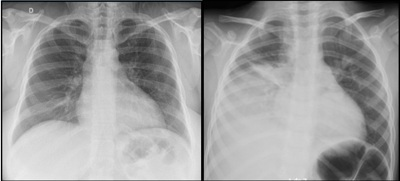
A Exsudato pleural.
B Transudato pleural.
C Tromboembolismo venoso.
D Insuficiência cardíaca.
Questão 1075 · Cirurgia · 4000194189Paciente masculino, 62 anos, hipertenso, diabético, portador de brilação atrial crônica e insu ciência cardíaca, imunossuprimido, internado na enfermaria da clínica médica em tratamento de pneumonia lobar direita com ampicilina, atualmente no 7º dia de internação, apresenta piora clínica, mantém picos febris diários, aumento de leucometria e provas inflamatórias, associado à hipoxemia. Ao exame físico encontra-se taquipneico, febril, com murmúrio abolido em base direita, sem sinais de insu ciência respiratória. Bulhas cardíacas arrítmicas, normocárdico, sem edema de membros inferiores, boa perfusão periférica. Não há sinais clínico-laboratoriais de outras disfunções orgânicas. Mantém-se estável hemodinamicamente. Abaixo estão as radiogra as de tórax da admissão (a esquerda) e atual (a direita). Após a interpretação dos exames acima, foi realizado uma toracocentese com os seguintes achados no líquido pleural: Aspecto do líquido: turvo | pH: 7,1 | DHL: 1125 UI/L |Glicose: 10g/dL | Bacterioscopia: Cocos Gram-positivos, aos pares, em cadeias curtas | Cultura: em andamento A conduta mais adequada no caso acima é:

A Prescrever furosemida com albumina endovenosa, otimizar vasodilatadores orais e solicitar ecocardiograma.
B Pericardiocentese de alívio de urgência.
C Ampliação do espectro antibiótico, exame de imagem completamente para avaliar volume do derrame pleural, drenagem pleural ou videotoracoscopia.
D Ampliação do espectro antibiótico, exame de imagem completamente para avaliar volume do derrame pleural, toracotomia para esvaziamento pericárdico.
Questão 1076 · Cirurgia · 4000194188Paciente masculino, 3 anos de idade, é trazido em consulta médica devido achado assintomático de abaulamento abdominal notado pela mãe durante o banho há 2 dias. Nega traumas. Nega dor. Nega sintomas gastrointestinais. Nega perda ponderal. Nega outras queixas. Ao exame físico: bom estado geral, corado, hidratado, eupneico, ictérico +/4, acianótico, afebril. Sem alterações cardiopulmonares ou neurológicas. Abdome assimétrico à inspeção, ácido, indolor, depressível, com massa palpável em epigástrio e hipocôndrio esquerdo. Foi realizado ultrassonogra a abdominal que não conseguiu definir etiologia da lesão, e sugeriu exame de tomogra a abdominal com contraste endovenoso ( figura abaixo). Os exames séricos para rastreio oncológico evidenciaram aumento importante de alfafetoproteina(>1000 ng/ml). A principal hipótese diagnóstica é:
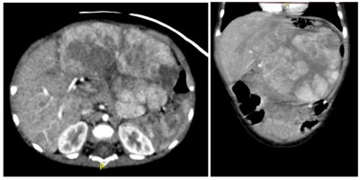
A Neuroblastoma.
B Hepatoblastoma.
C Tumor de Wilms.
D Tumor de células germinativas.
Questão 1077 · Cirurgia · 4000194187Paciente feminina, 4 anos de idade, é trazida pela mãe após episódio de hematúria há 1 dia. Nega febre. Nega disúria, polaciúria ou alteração de odor urinário. Nega trauma presenciado. Nega sintomas gastrointestinais. Sem outras queixas. Ao exame físico: bom estado geral, corada, hidratada, eupneica, anictérica, acianótica, afebril. Sem alterações cardiopulmonares. Genitália sem sinais de virilização. Abdome ácido, indolor, sem massas palpáveis, sem sinais de irritação peritoneal. Exame urinário evidenciou hematúria importante, leucocitúria discreta, com bacterioscopia e urocultura negativa. Foi realizado a tomografia abdominal abaixo. A principal hipótese diagnóstica é:
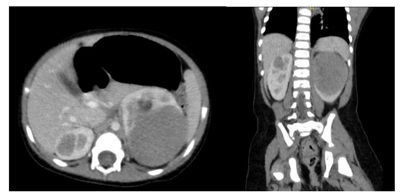
A Tumor de Wilms.
B Neuroblastoma.
C Carcinoma adrenal.
D Hidronefrose.
Questão 1078 · Cirurgia · 4000194186Paciente feminina, 4 anos de idade, é trazida pela mãe após episódio de hematúria há 1 dia. Nega febre. Nega disúria, polaciúria ou alteração de odor urinário. Nega trauma presenciado. Nega sintomas gastrointestinais. Sem outras queixas. Ao exame físico: bom estado geral, corada, hidratada, eupneica, anictérica, acianótica, afebril. Sem alterações cardiopulmonares. Genitália sem sinais de virilização. Abdome ácido, indolor, sem massas palpáveis, sem sinais de irritação peritoneal. Exame urinário evidenciou hematúria importante, leucocitúria discreta, com bacterioscopia e urocultura negativa. Foi realizado a tomografia abdominal abaixo. A principal hipótese diagnóstica é:

A Tumor de Wilms.
B Neuroblastoma.
C Carcinoma adrenal.
D Hidronefrose.
Questão 1079 · Cirurgia · 4000194185Das alternativas abaixo, a conduta mais adequada neste caso de acordo com a SIOP (Societe Internationale D'oncologie Pediatrique) é:
A Biopsia da lesão em loja renal esquerda.
B Quimioterapia neoadjuvante.
C Nefrectomia bilateral imediata.
D Cuidados paliativos exclusivos.
Questão 1080 · Cirurgia · 4000194184Paciente masculino, 5 semanas de vida, é trazido em consulta após inúmeros episódios de vômitos de início há 1 semana. Mãe nega febre. Nega diarreia ou outras alterações gastrointestinais. Nega perda ponderal. Nega trauma. Associa os vômitos aos períodos após as mamadas, de conteúdo alimentar, sem coloração biliosa. Atualmente em uso de fórmula láctea anti-re uxo sem melhora. Ao exame: corado, desidratado ++/4, eupneico, anictérico, acianótico, afebril. Sem alterações cardiopulmonares. Abdome ácido, distendido em andar superior do abdome. Indolor, sem massas palpáveis, sem sinais de irritação peritoneal. Os exames séricos evidenciaram alcalose metabólica, hipocalemia e hiponatremia. Foram também realizados os exames de imagem abaixo. A principal hipótese diagnóstica é:
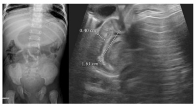
A Intussuscepção intestinal.
B Doença do refluxo gastroesofágico.
C Atresia de duodeno.
D Estenose hipertrófica de piloro.
Questão 1081 · Ginecologia · Obstetrícia · 4000194183Em caso de gestação gemelar, onde há discordância no tamanho dos fetos, sem patologias detectadas, o cálculo da idade gestacional deve ser feito preferencialmente pelo(a):
A Feto maior.
B Feto menor.
C Média dos dois fetos.
D Não é viável o cálculo nesse caso
Questão 1082 · Ginecologia · Obstetrícia · 4000194182Infecções por clamídia podem complicar a gestação e causar prematuridade, baixo peso ao nascer, rotura prematura de membranas, entre outras. São opções medicamentosas para tratamento de infecção por Clamídia em gestantes, exceto:
A Azitromicina.
B Eritromicina.
C Doxiciclina.
D Amoxicilina.
Questão 1083 · Ginecologia · Obstetrícia · 4000194181A teoria da “metástase benigna” sugere que a presença da patologia X em órgãos distantes como pulmão e cérebro pode surgir após disseminação linfática e hematogênica. A patologia X seria:
A Miomatose uterina.
B Endometriose.
C Displasia cervical.
D Tumor benigno de ovário.
Questão 1084 · Ginecologia · Obstetrícia · 4000194180Uma gestante de 32 semanas em quadro de pré-eclâmpsia grave deve ser submetida da pro laxia com Sulfato de Magnésio endovenoso, devendo o Plantonista ter em registro impresso os seguintes parâmetros, exceto:
A Reflexo patelar.
B Escala de coma de Glasgow.
C Diurese.
D Frequência respiratória.
Questão 1085 · Ginecologia · Obstetrícia · 4000194179Uma mulher de 52 anos, em amenorreia há 1 ano, com queixa de fogachos e ressecamento vaginal, solicita ao Ginecologista terapia hormonal. A situação que não é contraindicação de TH é:
A Infarto Agudo do Miocárdio há 8 meses.
B Câncer de Mama tratado há 5 anos.
C Osteoporose diagnosticada com densitometria.
D Trombose Venosa Profunda em tratamento com anticoagulante.
Questão 1086 · Ginecologia · Obstetrícia · 4000194178Uma atleta com queixa de dor mamária bilateral não cíclica, não usuária de contraceptivos, realiza ultrassom mamário que evidencia BI-RADS 1. O diagnóstico mais provável é:
A Nevralgia intercostal.
B Fibroadenoma.
C Mastopatia fibrocística.
D Eczema areolar.
Questão 1087 · Lesões diversas da mama · 4000194177O tumor mamário conhecido pelo termo mama envoltos por pseudocápsula, tem o nome de:
A Esteatonecrose.
B Hamartoma.
C Lipoma.
D Adenoma.
Questão 1088 · Ginecologia · Obstetrícia · 4000194176Na pesquisa de infertilidade em paciente com mais de 38 anos, a dosagem do FSH sérico do 2º ao 4º dia do ciclo representa rara chance de gravidez quando acima de:
A 5,0 UI/ml.
B 8,0 UI/ml.
C 15,0 UI/ml.
D 25,0 UI/ml.
Questão 1089 · Ginecologia · Obstetrícia · 4000194175Uma paciente de 30 anos refere nunca ter conseguido intercurso sexual por sentir dor intensa nas tentativas de penetração. O exame ginecológico é prejudicado por contração da musculatura pélvica e espasmo de intróito vaginal. O tratamento que não está indicado nesse caso é:
A Correção cirúrgica.
B Terapia psíquica.
C Exercícios de Kegel.
D Dilatadores graduados de borracha.
Questão 1090 · Ginecologia · Obstetrícia · 4000194174Gestante de 34 semanas dá entrada na maternidade com queixa de sangramento vaginal de moderada intensidade, indolor, com BCF 140 bpm. Na cardiotocogra a, feto com boa vitalidade. A mais provável causa é:
A Descolamento prematuro de placenta.
B Rotura de vasa prévia.
C Placenta prévia.
D Amnionite.
Questão 1091 · Ginecologia · Obstetrícia · 4000194173Paciente de 23 anos com quadro de dor pélvica de início há 6 meses, é diagnosticada como Doença Inflamatória Pélvica (DIP). Assinale a alternativa correta:
A A DIP não tem relação com quadro de infertilidade.
B Os contraceptivos orais combinados aumentam a chance de contrair DIP.
C A paciente tem risco aumentado de desenvolver prenhez ectópica no futuro.
D O principal agente etiológico nesse caso é a
Questão 1092 · Ginecologia · Obstetrícia · 4000194172Mulher de 35 anos com suspeita de infertilidade deseja realizar pesquisa de permeabilidade tubária. A melhor época para agendar a histerossalpingografia é:
A Durante a menstruação.
B Antes da ovulação.
C Durante a ovulação.
D Logo após a ovulação.
Questão 1093 · Ginecologia · Obstetrícia · 4000194171Paciente comparece a consulta ginecológica com queixa de corrimento vaginal. No exame ginecológico o Médico ca em dúvida sobre qual seria a origem do corrimento e opta por avaliar no microscópio. A secreção vaginal na lâmina após adicionado hidróxido de potássio, evidenciou pseudo-hifas. O mais provável diagnóstico nesse caso é:
A Doença inflamatória pélvica aguda.
B Vaginose bacteriana.
C Candidíase.
D Citólise.
Revisar: possível letra faltando em enunciado
Questão 1094 · Estadiamento · 4000194170Uma mulher de 42 anos com diagnóstico de câncer de colo uterino invasivo (+ de 5 mm de profundidade) com tamanho de 3 cm limitado ao colo uterino tem estadiamento:
A IA
B IB
C IIA
D IIB
Questão 1095 · Ginecologia · Obstetrícia · 4000194169Mulher de 34 anos com antecedente de hipertensão arterial bem controlada, solicita ao ginecologista o melhor método contraceptivo do ponto de vista de eficácia. Nesse caso, a melhor alternativa é:
A Implante de etonogestrel.
B Pílula combinada oral 24+4.
C Pílula combinada oral 21+7.
D Injetável mensal.
Questão 1096 · Ginecologia · Obstetrícia · 4000194168Uma paciente de 21 anos comparece ao consultório do ginecologista solicitando coleta de Papanicolaou. Durante o exame o Ginecologista nota a presença de dois colos uterinos. Solicitado ultrassom endovaginal, fica evidente a duplicação total do útero. Trata-se, portanto, de útero:
A Arqueado.
B Didelfo.
C Septado.
D de Rokitansky.
Questão 1097 · Ginecologia · Obstetrícia · 4000194167Uma paciente de 48 anos, com 3 lhos, não usuária de contraceptivos, com queixa de aumento do uxo menstrual. Realizou ultrassom endovaginal que evidenciou útero pouco aumentado com presença de cistos miometriais. O diagnóstico mais provável é:
A Adenomiose.
B Miomatose.
C Cisto ovariano.
D Sarcomatose.
Questão 1098 · Ginecologia · Obstetrícia · 4000194166Uma mulher de 30 anos procura o Ginecologista com queixa de dor pélvica há 4 meses. Refere dor nas relações sexuais e nega corrimento. Ao toque, o Obstetra nota dor importante à mobilização de útero e anexos. O mais provável agente etiológico nesse caso é:
A Gardnerella vaginalis.
B Trichomonas Vaginalis.
C Treponema pallidum.
D Chlamydia trachomatis.
Questão 1099 · Ginecologia · Obstetrícia · 4000194165Em uma paciente de 45 anos, a mamogra a encontrou microcalci cações pleomór cas agrupadas em um trajeto de 1,5 cm. Nesse caso o laudo é BI-RADS:
A 2
B 3
C 4
D 5
Revisar: possível letra faltando em enunciado
Questão 1100 · Ginecologia · Obstetrícia · 4000194164Uma mulher de 62 anos, histerectomizada por miomatose uterina, procura o ginecologista com resultado de uma densitometria óssea que evidencia T-score= -2,3 DP de colo de fêmur. Refere que a mãe teve fratura de fêmur aos 72 anos, evoluindo com óbito por tromboembolismo pulmonar no sétimo dia de internação. Neste caso o melhor tratamento é:
A Estrogênio.
B Bifosfonato.
C Estrogênio e progesterona.
D Cálcio e vitamina D.
Questão 1101 · Medicina Preventiva · 4000194163No indivíduo assintomático, é recomendado utilizar como critério de diagnóstico de DM:
A glicemia plasmática de jejum maior ou igual a 126 mg/dl, a glicemia duas horas após uma sobrecarga de 75 g de glicose igual ou superior a 200 mg/dl ou a HbA1c maior ou igual a 6,5%.
B glicemia plasmática de jejum maior ou igual a 100 mg/dl, a glicemia duas horas após uma sobrecarga de 75 g de glicose igual ou superior a 200 mg/dl ou a HbA1c maior ou igual a 6,5%.
C glicemia plasmática de jejum maior ou igual a 126 mg/dl, a glicemia duas horas após uma sobrecarga de 75 g de glicose igual ou superior a 300 mg/dl ou a HbA1c maior ou igual a 6,5%.
D glicemia plasmática de jejum maior ou igual a 126 mg/dl, a glicemia duas horas após uma sobrecarga de 75 g de glicose igual ou superior a 200 mg/dl ou a HbA1c maior ou igual a 8,5%.
Questão 1102 · Clínica Médica · 4000194162Para indivíduos que receberam uma primeira dose da vacina ChAdOx1 nCoV-19 e não desenvolveram VITT (vaccine-induced immune thrombotic thrombocytopenia), a recomendação é completar o esquema vacinal com duas doses. Sendo correto que:
A Há evidências de que a segunda dose, ou mesmo o reforço (booster), aumente o risco de complicações trombóticas.
B Não há evidências de que a segunda dose, e sim o reforço (booster), aumente o risco de complicações trombóticas.
C Não há evidências de que a segunda dose, ou mesmo o reforço (booster), aumente o risco de complicações trombóticas.
D Há evidências de que a segunda dose, ou mesmo o reforço (booster), reduza o risco de complicações trombóticas.
Questão 1103 · Clínica Médica · 4000194161Em relação à prescrição de exercício, principalmente em pacientes com maior risco cardiovascular, o TE - Teste de Esforço submáximo é mais eficiente quando associado à análise de gases expirados.
A A realização do teste cardiopulmonar de exercício (TCPE), que impossibilita a determinação dos índices de limitação funcional e limiares ventilatórios, tornando a prescrição mais precisa, segura e objetiva.
B A realização do teste cardiopulmonar de exercício (TCPE), que possibilita a determinação dos índices de limitação funcional e limiares ventilatórios, tornando a prescrição mais precisa, segura e não objetiva.
C A realização do teste cardiopulmonar de exercício (TCPE), que possibilita a determinação dos índices de limitação funcional e limiares ventilatórios, tornando a prescrição mais precisa, segura e objetiva.
D A realização do teste cardiopulmonar de exercício (TCPE), que possibilita a determinação dos índices de limitação funcional e limiares ventilatórios, tornando a prescrição mais precisa, insegura e objetiva.
Questão 1104 · Clínica Médica · 4000194160Não existe boa correlação entre carga de esforço e FC para avaliação de gestantes, sendo:
A O TCPE teste cardiopulmonar de exercício realizado nas cardiopatas grávidas em situações específicas (exceto doença valvar e cardiopatias congênitas), após exclusão das contraindicações clínicas e obstétricas absolutas e em nível submáximo.
B O TCPE teste cardiopulmonar de exercício realizado nas cardiopatas grávidas em situações específicas (doença valvar e cardiopatias congênitas), após exclusão das contraindicações clínicas e obstétricas absolutas e em nível apenas máximo.
C O TCPE teste cardiopulmonar de exercício nunca realizado nas cardiopatas grávidas em situações específicas (doença valvar e cardiopatias congênitas), após exclusão das contraindicações clínicas e obstétricas absolutas e em nível submáximo.
D O TCPE teste cardiopulmonar de exercício realizado nas cardiopatas grávidas em situações específicas (doença valvar e cardiopatias congênitas), após exclusão das contraindicações clínicas e obstétricas absolutas e em nível submáximo.
Questão 1105 · Clínica Médica · 4000194159Os vírus cardiotrópicos mais prevalentes são: enterovírus, parvovírus B19 (PVB19), adenovírus, vírus influenza A, herpes-vírus humano (HHV), vírus Epstein-Barr, citomegalovírus, vírus da hepatite C e vírus do HIV.
A Algumas evidências sugerem que possa haver diferenças regionais em relação à prevalência dos diferentes agentes virais, com predomínio de adenovírus, parvovírus e herpes na população europeia e não preponderância de enterovírus na população americana.
B Algumas evidências sugerem que possa haver diferenças regionais em relação à prevalência dos diferentes agentes virais, com predomínio de adenovírus, parvovírus e herpes na população europeia e preponderância de enterovírus na população americana.
C Algumas evidências sugerem que possa haver diferenças regionais em relação à prevalência dos diferentes agentes virais, raramente adenovírus, parvovírus e herpes na população europeia e preponderância de enterovírus na população americana.
D Algumas evidências sugerem que possa haver diferenças regionais em relação à prevalência dos diferentes agentes virais, com predomínio de adenovírus, parvovírus e herpes na população europeia e nunca os enterovírus na população americana.
Questão 1106 · Clínica Médica · 4000194158Quando avaliadas técnicas para a baciloscopia do escarro na tuberculose, pode-se afirmar que:
A A microscopia de fluorescência pode reduzir a capacidade de detecção do bacilo em 10%, quando comparada à microscopia com luz convencional.
B A microscopia de fluorescência pode incrementar a capacidade de detecção do bacilo em 90%, quando comparada à microscopia com luz convencional.
C A microscopia de fluorescência pode incrementar a capacidade de detecção do bacilo em 10%, quando comparada à microscopia com luz convencional.
D A microscopia de fluorescência não pode incrementar a capacidade de detecção do bacilo, quando comparada à microscopia com luz convencional.
Questão 1107 · Clínica Médica · 4000194157Entre os fatores de risco para Doenças Cardiovasculares (DCV) em brasileiras, podemos indicar como correto:
A Destacam-se HAS, riscos dietéticos, obesidade, redução do colesterol sérico e glicemia de jejum elevada.
B Nunca destacam-se HAS, riscos dietéticos, obesidade, aumento do colesterol sérico e glicemia de jejum elevada.
C Destacam-se HAS, riscos dietéticos, obesidade, aumento do colesterol sérico e não glicemia de jejum elevada.
D Destacam-se HAS, riscos dietéticos, obesidade, aumento do colesterol sérico e glicemia de jejum elevada.
Questão 1108 · Clínica Médica · 4000194156O HCV é um vírus cujo genoma é constituído por uma única molécula de RNA de polaridade positiva, que possui, aproximadamente, 9.600 bases.
A O genoma viral é traduzido via IRES para produzir uma poliproteína, que é clivada durante e após a tradução por proteases celulares e virais em dez produtos gênicos. A região amino-terminal não codifica as proteínas estruturais, que são aquelas incorporadas na partícula viral: a proteína do capsídeo e as glicoproteínas de envelope (E1 e E2).
B O genoma viral é traduzido via IRES para produzir uma poliproteína, que é clivada durante e após a tradução por proteases celulares e virais em dez produtos gênicos. A região amino-terminal codifica as proteínas estruturais, que são aquelas incorporadas na partícula viral: a proteína do capsídeo e as glicoproteínas de envelope (E1 e E2).
C O genoma viral é traduzido via IRES para produzir uma poliproteína, que é clivada durante e após a tradução por proteases celulares e virais em dez produtos gênicos. A região amino-terminal codifica as proteínas estruturais, que são aquelas nunca incorporadas na partícula viral: a proteína do capsídeo e as glicoproteínas de envelope (E1 e E2).
D O genoma viral é traduzido via IRES para produzir uma poliproteína, que é clivada durante e não após a tradução por proteases celulares e virais em dez produtos gênicos. A região amino-terminal codifica as proteínas estruturais, que são aquelas incorporadas na partícula viral: a proteína do capsídeo e as glicoproteínas de envelope (E1 e E2).
Questão 1109 · Clínica Médica · 4000194155Diferenças epidemiológicas de Miocardites podem ser decorrente de surtos de infecções virais especí cas ocorrendo ao longo dos anos nas diversas regiões do mundo.
A Mas não diferenças nas técnicas de detecção viral, permanecendo o debate acerca da real influência da distribuição geográfica quanto às infecções virais cardiotrópicas.
B Bem como a diferenças nas técnicas de detecção viral, permanecendo o debate acerca da real influência da distribuição geográfica quanto às infecções virais não cardiotrópicas.
C Bem como a diferenças nas técnicas de detecção não viral, permanecendo o debate acerca da real influência da distribuição geográfica quanto às infecções virais cardiotrópicas.
D Bem como a diferenças nas técnicas de detecção viral, permanecendo o debate acerca da real influência da distribuição geográfica quanto às infecções virais cardiotrópicas.
Revisar: possível letra faltando em enunciado
Questão 1110 · Clínica Médica · 4000194154A glicemia de jejum:
A Não sofre interferências decorrentes de condições agudas e tem menor taxa de reprodutibilidade quando comparadas à HbA1c.
B Sofre interferências decorrentes de condições agudas e tem menor taxa de reprodutibilidade quando comparadas à HbA1c.
C Sofre interferências decorrentes de condições agudas e tem maior taxa de reprodutibilidade quando comparadas à HbA1c.
D Sofre interferências decorrentes de condições agudas e não tem menor taxa de reprodutibilidade quando comparadas à HbA1c.
Questão 1111 · Clínica Médica · 4000194153Refere-se à ocorrência de um novo episódio de Tromboembolismo Venoso em indivíduo com história de evento prévio:
A Em se tratando de trombose de membros inferiores, a recorrência da trombose nunca pode se manifestar por trombo em nova localização (propagação para segmento proximal ou distal ao evento inicial, segmento diferente do mesmo membro, membro diferente) ou em segmento previamente acometido.
B Em se tratando de trombose de membros inferiores, a recorrência da trombose pode se manifestar por trombo em nova localização (propagação para segmento proximal ou distal ao evento inicial, segmento diferente do mesmo membro, membro diferente), mas nunca em segmento previamente acometido.
C Em se tratando de trombose de membros inferiores, a recorrência da trombose somente pode se manifestar por trombo em nova localização.
D Em se tratando de trombose de membros inferiores, a recorrência da trombose pode se manifestar por trombo em nova localização (propagação para segmento proximal ou distal ao evento inicial, segmento diferente do mesmo membro, membro diferente) ou em segmento previamente acometido.
Questão 1112 · Clínica Médica · 4000194152JSD, masculino de 45 anos obeso com poliúria e diversas lesões dentarias e mal-estar. Durante consulta apresenta exames laboratoriais para sua avaliação e diagnostico. Na presença de sintomas inequívocos de hiperglicemia, podemos indicar como correto o item:
A Não é recomendado que o diagnóstico seja realizado por meio de glicemia ao acaso ≥ 200 mg/dl.
B É recomendado que o diagnóstico seja realizado por meio de glicemia ao acaso ≥ 100 mg/dl.
C É recomendado que o diagnóstico seja realizado por meio de glicemia ao acaso ≥ 200 mg/dl.
D É recomendado que o diagnóstico seja realizado por meio de glicemia ao acaso ≥ 300 mg/dl.
Questão 1113 · Clínica Médica · 4000194151Existe associação entre pré-diabetes e risco cardiovascular. Podemos indicar como correto o item:
A Os níveis de HbA1c e glicemia de jejum característicos de pré-diabetes estão associados a maior risco cardiovascular, o que justifica o rastreamento para identificar indivíduos de maior risco que devam ser alvo de avaliação e intervenção.
B Os níveis de HbA1c e não glicemia de jejum característicos de pré-diabetes estão associados a maior risco cardiovascular, o que justifica o rastreamento para identificar indivíduos de maior risco que devam ser alvo de avaliação e intervenção.
C Os níveis de HbA1c e glicemia de jejum característicos de pré-diabetes nunca estão associados a maior risco cardiovascular, o que justifica o rastreamento para identificar indivíduos de maior risco que devam ser alvo de avaliação e intervenção.
D Os níveis de HbA1c e glicemia de jejum característicos de pré-diabetes nunca estão associados a maior risco cardiovascular, o que justifica o rastreamento para identificar indivíduos de maior risco que devam ser alvo de avaliação e intervenção.
Questão 1114 · Clínica Médica · 4000194150Importante ressaltar que os indivíduos infectados pelo Sars-Cov2:
A Têm risco aumentado para outras condições cardiovasculares que não só aquelas descritas como eventos adversos da vacinação (trombose e miocardite ou miopericardite).
B Têm risco reduzido para outras condições cardiovasculares que não só aquelas descritas como eventos adversos da vacinação (trombose e miocardite ou miopericardite).
C Têm risco aumentado para outras condições cardiovasculares que só aquelas descritas como eventos adversos da vacinação (trombose e miocardite ou miopericardite).
D Têm risco aumentado para outras condições cardiovasculares que não só aquelas descritas como eventos adversos da vacinação (trombose e miocardite, mas não miopericardite).
Questão 1115 · Clínica Médica · 4000194149A detecção de anticorpos e antígenos do vírus B por meio de imunoensaios:
A Nunca pode indicar diferentes estágios da infecção pelo HBV: infecção aguda, infecção crônica, resposta vacinal, ausência de contato prévio com o vírus.
B Pode indicar diferentes estágios da infecção pelo HBV: infecção aguda, infecção crônica, resposta vacinal, ausência de contato prévio com o vírus.
C Pode indicar diferentes estágios da infecção pelo HBV: infecção aguda, infecção crônica e não resposta vacinal.
D Pode indicar somente estágios da infecção pelo HBV da infecção aguda.
Questão 1116 · Clínica Médica · 4000194148A capacidade aeróbica, também conhecida como VO2:
A Não reflete a habilidade do sistema cardiovascular em transportar e entregar O2 para os músculos esqueléticos, além da eficiência muscular de extraí-lo da corrente sanguínea e utilizá-lo como fonte de energia para executar o exercício.
B Reflete a habilidade do sistema cardiovascular em transportar e entregar O2 para os músculos esqueléticos, além da eficiência muscular de não extraí-lo da corrente sanguínea e utilizá-lo como fonte de energia para executar o exercício.
C Reflete a habilidade do sistema cardiovascular em transportar e entregar O2 para os músculos esqueléticos, além da eficiência muscular de extraí-lo da corrente sanguínea e não utilizá-lo como fonte de energia para executar o exercício.
D Reflete a habilidade do sistema cardiovascular em transportar e entregar O2 para os músculos esqueléticos, além da eficiência muscular de extraí-lo da corrente sanguínea e utilizá-lo como fonte de energia para executar o exercício.
Questão 1117 · Clínica Médica · 4000194147Para indivíduos com suspeita de infecção pelo HBV e que não possuem reatividade nos testes que detectam o HBsAg, é recomendada a utilização de um teste molecular de alta sensibilidade (capacidade de detecção de pelo menos 100 UI/mL) para a confirmação diagnóstica de um caso de IOB (infecção oculta pelo HBV). Sendo correto que:
A Os indivíduos com maior probabilidade de apresentarem IOB (infecção oculta pelo HBV) são pessoas que usam drogas injetáveis, portadores de HCV, hemodialisados e indivíduos residentes em áreas endêmicas para a infecção pelo HBV que apresentarem o HBsAg não reagente.
B Os indivíduos com menor probabilidade de apresentarem IOB (infecção oculta pelo HBV) são pessoas que usam drogas injetáveis, portadores de HCV, hemodialisados e indivíduos residentes em áreas endêmicas para a infecção pelo HBV que apresentarem o HBsAg não reagente.
C Os indivíduos com maior probabilidade de apresentarem IOB (infecção oculta pelo HBV) são pessoas que não usam drogas injetáveis, portadores de HCV, hemodialisados e indivíduos residentes em áreas endêmicas para a infecção pelo HBV que apresentarem o HBsAg não reagente.
D Os indivíduos com maior probabilidade de apresentarem IOB (infecção oculta pelo HBV) são pessoas que usam drogas injetáveis, não os portadores de HCV, hemodialisados e indivíduos residentes em áreas endêmicas para a infecção pelo HBV que apresentarem o HBsAg não reagente.
Questão 1118 · Clínica Médica · 4000194146Vacinação com a BNT162b2 tem e cácia de 91% contra Síndrome In amatória Multissistêmica em Crianças (MIS-C) em adolescentes com idades entre 12 e 18 anos, sendo correto que:
A Não protege contra os cursos clínicos mais graves da síndrome.
B Induz os cursos clínicos mais graves da síndrome.
C Protege contra os cursos clínicos mais graves da síndrome.
D Protege contra os cursos clínicos somente mais leves da síndrome.
Questão 1119 · Clínica Médica · 4000194145O Ecocardiograma Transtorácico é o método de imagem:
A Preferido quando se suspeita de DCV; trata-se de modalidade diagnóstica invasiva, de fácil execução e amplamente disponível.
B Preferido quando se suspeita de DCV; trata-se de modalidade diagnóstica não invasiva, de fácil execução e amplamente disponível.
C Contraindicado quando se suspeita de DCV; trata-se de modalidade diagnóstica não invasiva, de fácil execução e amplamente disponível.
D Preferido quando se suspeita de DCV; trata-se de modalidade diagnóstica não invasiva, de difícil execução e amplamente disponível.
Questão 1120 · Clínica Médica · 4000194144O ecocardiograma sob estresse físico em bicicleta ergométrica pode melhorar a especi cidade do diagnóstico da doença arterial coronariana:
A Por agregar a imagem aos achados do TE submáximo, sendo indicado o uso do estresse farmacológico com dobutamina durante a gravidez.
B Por não agregar a imagem aos achados do TE submáximo, sendo contraindicado o uso do estresse farmacológico com dobutamina durante a gravidez.
C Por não agregar a imagem aos achados do TE submáximo, sendo indicado o uso do estresse farmacológico com dobutamina durante a gravidez.
D Por agregar a imagem aos achados do TE submáximo, sendo contraindicado o uso do estresse farmacológico com dobutamina durante a gravidez.
Questão 1121 · Intoxicação por Metanol · 4000194133Paciente de 24 anos, trabalha como pintor de portões de ferro em funilaria, relata em consulta que não está enxergando, refere que no trabalho, geralmente faz pinturas em ambientes abertos e de máscara, porém há quatro dias, vem fazendo uma pintura em ambiente fechado, pois não consegue tirar o portão do local que está fixado. Você suspeita de intoxicação por metanol e, neste acaso, deverá instituir:
A Etanol
B Xileno
C Tolueno
D Bifosfato de cálcio
E Flumazenil
Questão 1122 · Transtorno do Humor Bipolar THB · Diagnóstico do Transtorno do Humor Bipolar THB · 4000194124Um técnico de enfermagem de 22 anos de idade foi levado por seu pai à Unidade de pronto atendimento. Nas últimas 2 semanas o estudante tem cado progressivamente com agitação psicomotora, dormindo menos e falando rápido, às vezes difícil de entender. Há três dias começou a falar que descobriu a cura da COVID 19, tendo enviado várias mensagens eletrônicas para diferentes jornais e instituições públicas. Diz agora que aguarda a ligação dos presidentes de vários países para conversar sobre a sua descoberta. Quando questionado por seu pai sobre esses fatos, cou muito irritado e o agrediu sicamente. A família diz que o paciente sempre foi estudioso, trabalhador, carinhoso com os pais e é amigo do pai. Aos 20 anos de idade, apresentou quadro depressivo e foi tratado com medicamento, cujo nome os familiares não se recordam. Não há antecedentes familiares mórbidos relevantes. A principal hipótese diagnóstica, neste caso, é:
A Transtorno Depressivo Maior com sintomas psicóticos.
B Esquizofrenia Heberfrênica.
C Transtorno Afetivo Bipolar Tipo II.
D Esquizofrenia Paranóide.
E Transtorno Afetivo Bipolar Tipo I.
Revisar: possível letra faltando em enunciado
Questão 1123 · Psiquiatria · 4000194110Uma senhora de 79 anos foi trazida ao ambulatório pela lha devido quadro de esquecimentos para fatos recentes, que teve início há 1 ano e 4 meses. Nos últimos 4 meses, houve acentuação do quadro, vindo a ocorrer um episódio em que, ao sair de casa, teve que ser trazida por vizinhos, pois não soube retornar. Apresenta dé cit de compreensão para realizar tarefas domésticas habituais como por exemplo fazer um chá. Para uma abordagem clínica inicial, devemos:
A avaliar a história clínica, comorbidades e aplicar o teste minimental e do relógio.
B solicitar de imediato uma angiorressonância cerebral com contraste.
C encaminhar para tratamento psiquiátrico por provável quadro de ansiedade.
D quadro clínico sugestivo de depressão e aplicar a escala de depressão geriátrica.
E investigar provável quadro de hipotireoidismo e solicitar TSH e T4 livre.
Questão 1124 · Cirurgia · 4000194038A COVID-19 originou uma pandemia impactante na história da humanidade. A doença é causada pelo vírus SARS-CoV2 pertencente a um grupo de beta-coronavírus. Em dezembro de 2021, atingiu mais de 650 mil mortes no Brasil. Considerando os efeitos desta virose, complicações envolvendo o trato digestório, como
A os eventos pró-trombóticos do SARS-CoV2 que parecem estar relacionados à proteína S da estrutura viral, que leva à ativação sustentada do complemento e elevação da angiotensina II.
B além de trombose venosa profunda (TVP) e tromboembolismo pulmonar (TEP), a Isquemia Mesentérica Aguda (IMA) foi relatada como complicação tromboembólica em pacientes com COVID19.
C a infecção viral está associada à redução de uma série de proteínas pró-trombótica, proporcionando estado de hipercoagulabilidade e espasmo vascular.
D a Isquemia Mesentérica Aguda é uma emergência abdominal rara, definida como interrupção abrupta no suprimento sanguíneo mesentérico, levando a um quadro de abdômen agudo isquêmico, causada principalmente por trombo ou êmbolo e está associada a altas taxas de mortalidade, podendo chegar entre 60% a 80%.
E presume-se que a isquemia mesentérica aguda pode ocorrer como uma característica da apresentação inicial ou uma complicação tardia do COVID-19.
Questão 1125 · Cirurgia · 4000194037A Hérnia Diafragmática Congênita é classificada como Bochdalek, Morgani e Hérnia do Hiato Esofágico, a partir da sua localização. Em relação às a rmativas apresentadas abaixo, apresente a alternativa INCORRETA.
A Cerca de 90% das anomalias congênitas do diafragma são classificadas como Bochdalek, as quais apresentam defeito no segmento póstero lateral do diafragma, podendo ser unilaterais ou bilaterais, com habitual apresentação à esquerda.
B O tratamento é sempre cirúrgico, porém, devido aos variados graus de hipertensão pulmonar associado à hérnia, não é considerado uma emergência cirúrgica.
C Os sinais de estase gástrica ou intestinal, quando repletos de líquido e/ou com nível hidroaéreo, a ausência de bolha gástrica e a polidrâmnia podem sugerir Hérnia Diafragmática Congênita.
D O diagnóstico geralmente é feito no pré-natal com o auxílio do ultrassom (USG), que detecta em torno de 50% dos casos, com idade gestacional entre 22-24 semanas e pode avaliar a gravidade de uma das principais complicações: a hipotonia pulmonar.
E O procedimento cirúrgico pode ser realizado por via abdominal ou torácica e através de cirurgia aberta ou minimamente invasiva (laparoscopia ou toracoscopia).
Questão 1126 · Cirurgia · 4000194036A presença de náuseas e vômitos no pós-operatório são complicações frequentes após cirurgia colorretal. Os fatores de risco para este quadro, após cirurgia de câncer colorretal, são, EXCETO:
A Confecção de estoma intestinal.
B Câncer de cólon direito.
C Sexo feminino.
D Índice de massa corporal elevado.
E Sem histórico de etilismo.
Questão 1127 · Cirurgia · 4000194035Cirurgia de controle de danos (CCD) é estratégia bem definida de manejo cirúrgico para pacientes vítimas de trauma grave. A literatura sugere que as indicações, tempo operatório, medidas terapêuticas adotadas, alterações laboratoriais e achados transoperatórios apresentam impacto direto sobre o desfecho. Dentro desta definição, qual afirmativa abaixo está INCORRETA?
A Apesar da CCD reduzir a mortalidade em comparação à cirurgia definitiva em pacientes gravíssimos, ainda conta com elevada morbimortalidade, tempo de internação hospitalar prolongado e custos hospitalares significativos.
B A história desta modalidade cirúrgica surgiu da necessidade de controle do sangramento em pacientes vítimas de trauma, situação bastante frustrante para os cirurgiões da década de 1980, em que a mortalidade da cirurgia tradicional beirava 90%.
C São etapas: A primeira consiste no controle do sangramento e da contaminação, com fechamento temporário do abdômen. A segunda, prevenção e tratamento da hipotermia e correção de coagulopatia e acidose, na unidade de terapia intensiva (UTI). A terceira e última, indicada após as primeiras 24-72 horas da injúria cirúrgica, preconiza correção definitiva das lesões, criação de ostomias, definição do plano nutricional e fechamento da fáscia, podendo corresponder a mais de uma intervenção cirúrgica, se necessário.
D A tétrade letal (“lethal diamond”), composta de hipotermia, acidose respiratória, coagulopatia e hiponatremia, é a cascata de eventos que a CCD tenta interromper e corrigir.
E Alguns parâmetros foram utilizados para indicar a abordagem em etapas, entre eles: pH <7.2, coagulopatia demonstrada laboratorialmente, lesão de víscera oca associada à lesão vascular, hipotensão ou Shock Index elevado (>1.2) e necessidade de 4 ou mais concentrados de hemácias.
Questão 1128 · Cirurgia · 4000194034A correção de hérnia inguinal continua sendo uma das cirurgias mais comuns em todo o mundo, com mais de 20 milhões de cirurgias sendo realizadas anualmente. Nos conceitos que envolvem o tratamento dos casos de hérnia inguinal, qual alternativa podemos afirmar que está INCORRETA?
A O único tratamento disponível é o cirúrgico, que deve ser considerado mesmo naqueles casos oligossintomáticos e assintomáticos.
B A presença de comorbidades como o diabetes desestabiliza o processo de cicatrização e aumenta o risco de recorrência.
C Hábitos de vida, como o tabagismo, promovem desequilíbrio no processo de cicatrização e na composição do colágeno, influenciando também o aparecimento de hérnias, por promoverem o enfraquecimento da parede abdominal e culminarem em hérnia indireta.
D Apesar de todos os avanços na cirurgia de hérnia inguinal - desenvolvimento de telas e cirurgia laparoscópica -, a taxa média de recorrência pode chegar a 15%, de acordo com o local da hérnia, técnica de reparo e outras condições clínicas.
E Outro fator que se acredita estar relacionado à incidência de hérnias inguinais e à recorrência ocorrida após a correção devido à atividade laboral, com trabalhos que exigem grande resistência mecânica, causando aumento da pressão intra-abdominal.
Questão 1129 · Cirurgia · 4000194033O câncer de tireoide é a neoplasia endócrina mais comum, sendo o carcinoma papilífero o tipo histológico mais frequente, com 85-95% dos casos. Habitualmente, são tumores de comportamento biológico indolente e as taxas de sobrevida em 10 anos são maiores que 90%. Alguns dos principais fatores de risco para recorrência linfonodal são:
A carcinoma papilífero pouco diferenciado e pacientes idosos.
B tumor primário multifocal e sexo masculino.
C tumores grandes (maiores que 4 cm) e linfonodos cervicais positivos.
D invasão extratireoidiana e pacientes jovens.
E metástase à distância e extensão da operação realizada.
Questão 1130 · Cirurgia · 4000194032A acalasia é um distúrbio motor primário do esôfago, relativamente raro, e tem a forma idiopática como a mais prevalente em todos os continentes, porém, atualmente estima-se que oito milhões de pessoas estejam infectadas com o o parasita é endêmico. Considere as afirmativas abaixo e responda qual alternativa está INCORRETA.
A Os sintomas da acalasia esofágica são decorrentes da falta de peristaltismo esofágico e da obstrução funcional na junção gastro-esofágica (JEG) secundária a falha na função fisiológica do esfíncter esofagiano inferior.
B Uma forma objetiva de avaliar a gravidade dos sintomas da acalasia esofágica, assim como a eficácia do tratamento é por meio do escore de Eckardt, que varia entre 0 e 12 pontos e classifica a doença em estágios. O escore gradua de 0 a 3 os quesitos perda de peso, disfagia, dor torácica e regurgitação e o valor final consiste na somatória destes itens: estágio 0 (0-1 pontos), estágio I (2-3 pontos), estágio II (4-6 pontos) e estágio III (>6 pontos).
C Casos de doença de Chagas têm sido cada vez mais detectados nos Estados Unidos, no Canadá e em muitos países europeus, devido ao aumento de alimentos contaminados pelo Trypanosoma cruzi, provenientes da América Latina e outros continentes.
D O objetivo do tratamento é restaurar a capacidade de alimentação via oral e aliviar todos os sintomas obstrutivos, podendo ser alcançado por várias modalidades de tratamento, como dilatação endoscópica, miotomia endoscópica perioral e a cardiomiotomia a Heller-Pinotti videolaparoscópica, a qual, atualmente, é a primeira escolha para tratamento do megaesôfago não avançado. Estas modalidades eliminam a resistência de saída do alimento da JEG, melhorando o esvaziamento esofágico.
E A esofagectomia é a opção de escolha quando se tem recidiva dos sintomas ou no megaesôfago avançado, porém agrega maior morbimortalidade associada à dissecção torácica do esôfago.
Questão 1131 · Cirurgia · 4000194031A incidência estimada do câncer colorretal (CCR) é de 1,36 milhão de casos novos por ano no mundo. No Brasil, estimam-se, entre 2018-2019, 36.360 novos casos de câncer colorretal. Considerando o caso do acometimento de pacientes na faixa etária entre 40 e 50 anos, podemos afirmar que:
A Em relação à sintomatologia em pacientes com menos de 40 anos, as alterações do hábito intestinal e o emagrecimento são os sintomas mais comuns encontrados, seguidos por dor abdominal e hematoquezia.
B Em relação à localização dos tumores há predomínio dos tumores distais.
C O pior prognóstico nos pacientes jovens normalmente é atribuído ao diagnóstico da doença em estágios mais avançados, diagnosticada nos estágios III ou IV.
D Em relação ao gênero, é descrito na literatura um risco maior de desenvolvimento de câncer colorretal em pacientes do sexo feminino de qualquer idade, em relação ao sexo masculino.
E Há maior prevalência de tumores mucinosos ou com menor grau de diferenciação celular nos casos de pacientes jovens.
Questão 1132 · Cirurgia · 4000194030A Gangrena de Fournier é uma doença infecciosa grave de partes moles, de rápida progressão, que acomete a região genital e áreas adjacentes, caracterizada por intensa destruição tissular, envolvendo o tecido subcutâneo e a fáscia. Também é conhecida como fascite necrotizante da região perineal. Considere as afirmativas abaixo e responda qual está INCORRETA.
A A Gangrena de Fournier pode se estender para a parede abdominal e torácica e ter origem a ferimentos, queimaduras, abrasões, lacerações, contusões, mordeduras de animais, picadas de insetos, injeções subcutâneas e intravenosas.
B No Brasil, o sexo masculino tem alta prevalência, mas a doença pode acometer mulheres e crianças.
C Pode incidir em todas as faixas etárias, com média ao redor dos 50 anos.
D Com relação à sua fisiopatologia, a infecção bacteriana leva a uma endarterite obliterante, seguida de isquemia e trombose dos vasos subcutâneos, que resultam em necrose da pele e comprometimento da fáscia subjacente.
E Para o tratamento clínico são utilizados antibióticos de amplo espectro, com cobertura para microorganismos aeróbios gram-positivos e anaeróbios. O procedimento cirúrgico é indispensável e consiste em drenagem local com instalação de dreno a vácuo com três vias.
Questão 1133 · Cirurgia · 4000194029É notável a mudança do manejo do trauma abdominal penetrante ao longo do tempo. Contudo, observouse que laparotomias não terapêuticas dobravam o tempo de internamento e aumentavam significativamente a morbidade dos pacientes. Assim, vítimas de lesões por arma branca passaram a ser manejadas de forma conservadora em casos selecionados e, aquelas por lesões por arma de fogo, que até recentemente tinham indicação mandatória de laparotomia, também passaram a ter seu manejo modi cado em direção a um tratamento mais criterioso. Qual dos itens abaixo descritos não é indicativo de intervenção cirúrgica imediata no abdômen traumático?
A Instabilidade hemodinâmica.
B Sinais de peritonite.
C Trauma penetrante em região dorsal.
D Evisceração.
E Empalamento.
Revisar: possível letra faltando em enunciado
Questão 1134 · Cirurgia · 4000194028Os primeiros exames, não laboratoriais, a serem realizados após a estabilização hemodinâmica, durante o atendimento de urgência de doente com enterorragia de grande volume, são:
A Exame proctológico, endoscopia digestiva alta, arteriografia ou cintilografia.
B Exame proctológico, endoscopia digestiva alta e colonoscopia.
C Exame proctológico, enema opaco e colonoscopia.
D Exame proctológico e enema opaco, tomografia computadorizada abdominal e pélvica.
E Exame proctológico, arteriografia ou cintilografia, tomografia computadorizada abdominal e pélvica.
Questão 1135 · Cirurgia · 4000194027As hérnias inguinais são um problema frequente e o seu reparo representa a cirurgia mais comumente realizada por cirurgiões gerais. Nos últimos anos, novos princípios, produtos e técnicas têm mudado a rotina dos cirurgiões que precisam reciclar conhecimentos e aperfeiçoar novas habilidades. Segundo o resultado de uma metanálise publicada em 2019, quais afirmativas estão INCORRETAS
A O tratamento cirúrgico é sempre indicado para homens assintomáticos com hérnia inguinocrural e para mulheres com hérnia inguinocrural, seja ela sintomática ou assintomática.
B Não há como estabelecer a indicação do uso de antibióticos profiláticos no reparo eletivo das hérnias inguinais, tanto por via aberta quanto videoendoscópica.
C A melhor anestesia para se operar o paciente com hérnia inguinal por inguinotomia é a anestesia local, desde que o cirurgião domine as técnicas anestésica e cirúrgica.
D Em caso de hérnias estranguladas com contaminação do campo operatório (perfuração de alça intestinal, peritonite ou abcesso), o uso de telas deve ser evitado.
E O diagnóstico da hérnia inguinocrural deve ser feito pelo exame clínico. Somente serão solicitados os métodos de imagem quando houver dúvida diagnóstica.
Questão 1136 · Cirurgia · 4000194026As hérnias inguinais são um problema frequente e o seu reparo representa a cirurgia mais comumente realizada por cirurgiões gerais. Nos últimos anos, novos princípios, produtos e técnicas têm mudado a rotina dos cirurgiões que precisam reciclar conhecimentos e aperfeiçoar novas habilidades. Segundo o resultado de uma metanálise publicada em 2019, quais afirmativas estão INCORRETAS
A Não existe diferença no índice de infecções entre fazer ou não tricotomia pré-operatória, porém, quando necessário, deve ser feita logo antes da cirurgia, com máquina de cortar cabelos.
B Deve-se sempre solicitar ao paciente que esvazie a bexiga antes de entrar na sala cirúrgica, principalmente nos reparos videolaparoscópicos.
C A Tomografia Computadorizada Pélvica deve ser o exame de imagem inicial nos casos em que a história clínica é condizente com hérnia e o seu exame físico é inespecífico.
D O uso de tela é fortemente recomendado nas hérnias recidivadas.
E Pacientes do sexo masculino com comorbidades que aumentem o risco cirúrgico e aqueles com hérnia assintomática, possuem uma chance acima de 70% de desenvolver sintomas ao longo da observação e necessitar de tratamento cirúrgico.
Questão 1137 · Cirurgia · 4000194025Paciente do sexo feminino, com 25 anos é admitida no Serviço Ambulatorial com a queixa de estar apresentando sangramento anal vermelho vivo rutilante, evidente no papel higiênico e que tinge a água do vaso sanitário nos episódios de evacuação, há 3 meses. Associado ao quadro refere uma constipação intestinal crônica desde a sua última gestação há 6 anos. Nega dor anal, mas relata exteriorização de uma tumoração pelo ânus, que reduz espontaneamente. O diagnóstico provável é de:
A Hemorroidas mistas associado à fístula inter-esfincteriana alta.
B Hemorroidas internas de segundo grau.
C Hemorroidas internas de terceiro grau.
D Hemorroidas internas de quarto grau.
E Hemorroidas externas com fissura anal crônica mediana posterior.
Questão 1138 · Cirurgia · 4000194024Paciente do sexo masculino, com 34 anos é admitido no Pronto Socorro em Abdômen Agudo, com um quadro de choque séptico instalado. Como comorbidade, apresenta obesidade grau III, Diabetes Melittus em uso de Insulina NPH, 10 UI de 12/12h e apneia do sono. Como histórico cirúrgico recente, refere cirurgia videolaparoscópica para a correção da Doença do Re uxo Gastro-esofágico e para o tratamento de cálculos na vesícula biliar, há cerca de 4 dias. Pensando na possibilidade de uma complicação cirúrgica, qual etapa do procedimento, descrita abaixo, pode estar relacionada à maioria das lesões inadvertidas?
A Punção com agulha de Veress para realização do pneumoperitônio.
B Dissecção e ligadura do ducto cístico nas colecistectomias.
C Realização do ponto em “X” durante a crurorrafia na hérnia de hiato.
D Liberação da parede gástrica posterior na hérnia de hiato.
E Durante a colocação dos trocartes auxiliares de 5 e 10 mm.
Questão 1139 · Cirurgia · 4000194023Paciente de 76 anos, do sexo masculino, branco, apresentando icterícia há, aproximadamente, 2 meses. Procurou atendimento médico com exames laboratoriais, mostrando icterícia à custa do aumento de bilirrubina direta, com a dosagem da fosfatase alcalina e gama-GT 4 vezes o valor da referência normal. Foi submetido ao exame de ultrassonogra a do abdômen, que evidenciou uma dilatação das vias biliares intra- hepáticas, com colédoco de diâmetro normal e vesícula biliar sem cálculos ou outras alterações. A sua principal hipótese, e o respectivo exame a ser solicitado para elucidação diagnóstica, é:
A Colangiocarcinoma - Colangiopancreatografia Retrógrada Endoscópica.
B Cirrose hepática - Marcador viral para hepatite e alpha-feto proteína.
C Colangite esclerosante primária - Colangiografia trans-parieto-hepática.
D Colangiocarcinoma - Colangiorressonância Nuclear Magnética.
E Tumor periampular - Tomografia computadorizada do abdômen superior com contraste venoso
Questão 1140 · Clínica Médica · 4000194022Paciente feminina com 27 anos, apresentando dor torácica ventilatório-dependente e di culdade para respirar. Notou, há 2 dias, que a perna direita estava inchada e muito dolorida, com sensação de peso. Ao exame físico, presença de livedo racemoso em membros, ausculta pulmonar reduzida difusamente, presença de empastamento e sinal de Homans positivo em membro inferior direito, restante sem alterações. Diante do caso clínico, qual o diagnóstico mais provável e o exame mais especifico para esse diagnóstico:
A Síndrome do anticorpo antifosfolipideo e anticoagulante lúpico.
B Artrite reumatoide e FR.
C Lupus eritematoso sistêmico e FAN.
D Lupus eritematoso sistêmico e antiSM.
E Síndrome do anticorpo antifosfolipideo e FAN.
Questão 1141 · Clínica Médica · 4000194021Paciente masculino com 48 anos, com queixa de artrite simétrica de mãos, punhos, e joelhos há 3 meses, emagrecimento de 6 kg e astenia; há 2 semanas iniciou quadro de tosse seca e urina espumosa. Refere que iniciou quadro de rinite e asma de difícil controle desde a adolescência, com períodos de melhora, outros de piora, mas sempre em uso de corticoide inalatório e oral na tentativa de controle. Ao exame físico, presença de livedo racemoso em membros, ausculta pulmonar reduzida difusamente com sibilos, restante sem alterações. Os exames laboratoriais apresentavam anemia, leucocitose com hipereosino lia (45% dos leucócitos) e plaquetose; VHS e PCR aumentados; HiperIgE. Diante do caso clinico, qual sua hipótese diagnóstica e exame a ser solicitado:
A Vasculite por IgA e dosagem de IgA sérica.
B Lupus Eritematoso Sistêmico e FAN.
C Poliangeite granulomatosa eosinofilica e ANCA.
D Poliangeite granulomatosa e ANCA.
E Artrite Reumatoide e antiCCP.
Questão 1142 · Clínica Médica · 4000194020Paciente masculino com 52 anos, com Infarto agudo do miocárdio de repetição (IAM com Supra ST), sendo o primeiro em 2019 e o segundo que se repetiu no mesmo ano, 15 dias depois, mesmo com a terapêutica corretamente empregada, e o terceiro em 2022. Não tem comorbidades, fator de risco associado ou mesmo história familiar. Na revisão dos CATEs, foi percebido que não havia placas de ateroma, somente trombos locais e havia irregularidades das coronárias, com presença de microaneurismas. Diante do caso clínico acima, qual sua hipótese diagnóstica?
A Vasculite por IgA.
B Poliangeite Microscópica.
C Vasculite pelo anticorpo antimembrana basal glomerular.
D Lupus eritematoso sistêmico.
E Poliarterite nodosa.
Questão 1143 · Clínica Médica · 4000194019Um paciente de 65 anos, com história de cirrose por hepatite C crônica e encefalopatia hepática persistente, é admitido com ascite grau 3, tensa. Esta é a terceira hospitalização em um mês, com o mesmo quadro. Em cada admissão prévia, foi submetido a paracenteses de alívio, com retirada de 2 a 3 litros de líquido ascítico. Tem sido tratado com dieta hipossódica (88 mEq de sódio/dia), espironolactona (400 mg/dia) e furosemida (160 mg/dia). Dosagem de sódio urinário foi de 40 mEq/24 horas. As dosagens séricas de sódio e potássio mostraram 129 mEq/L e 4,4 mEq/L, respectivamente. Outros Clínica Médica exames complementares: albumina sérica 3,1 g/dL, bilirrubina total 4,0 mg/dL (normal até 1,2 mg/dL), RNI 1,80 e creatinina sérica 1,2 mg d/L. (basal de 0,6mg d/L) A partir dos dados acima, assinale a conduta INCORRETA:
A Deve-se suspender os diuréticos desse paciente devido à presença de encefalopatia hepática persistente, pois o uso de diuréticos pode desencadear essa condição.
B O paciente apresenta ascite refratária ao tratamento clínico. Em casos de ascite refratária, o TIPS está indicado.
C A avaliação do sódio urinário de 24h é um exame muito importante no manejo das ascites em cirróticos.
D Devido a hiponatremia e à presença de alteração neurológica, deve-se fazer reposição de sódio imediatamente, além de restrição hídrica.
E Deve-se sempre encaminhar pacientes com ascite refratária para centros de transplante hepático, mesmo se MELD baixo.
Questão 1144 · Clínica Médica · 4000194018Ainda sobre o caso acima, considerando que o paciente apresente peritonite bacteriana espontânea (PBE), assinale a alternativa CORRETA:
A Todos os pacientes com PBE devem receber profilaxia de síndrome hepatorrenal com infusão de albumina 20% nas primeiras 24h e após as 72h do início do antibiótico. (1,5g/kg e 1g/kg, respectivamente).
B Deve-se fazer tratamento empírico com Ceftriaxona endovenosa na suspeita de PBE, mesmo sem realização de paracentese diagnóstica.
C É possível que a causa da piora da função renal esteja relacionada à infecção e, por esse motivo, não é mais necessária a infusão de albumina 20% endovenosa.
D Não é necessário puncionar, novamente, o líquido peritoneal após o início do antibiótico para avaliar resposta ao tratamento.
E PBE faz parte das variáveis utilizadas nos escores de gravidade, pontuando, portanto, no MELD e no Child-Pugh.
Questão 1145 · Clínica Médica · 4000194017Um paciente, de 25 anos de idade, apresenta queixa de dor abdominal difusa do tipo cólica, poliartralgia e diarreia com cerca de 10 evacuações por dia, inclusive durante a noite, fezes com muco e, eventualmente, sangue e perda de cerca de 5 kg no período. Os sintomas surgiram há 2 meses. O paciente associa o início do quadro a uma crise ansiosa devido a problemas emocionais. Ele nega contato com alimentos possivelmente contaminados ou uso de qualquer medicamento precedendo o quadro. Sobre os dados acima, assinale a alternativa CORRETA
A Este paciente apresenta diarreia do tipo alta (delgado), devido à perda de peso.
B Primeira hipótese para explicar esse quadro é a Síndrome do Intestino Irritável, devido à idade do paciente e o quadro ter iniciado após uma crise ansiosa.
C O exame de Calprotectina fecal elevado pode excluir a presença de Colite Ulcerativa.
D É esperado encontrar na colonoscopia desse paciente: inflamação colônica superficial difusa, pseudopólipos e úlceras rasas.
E A presença de poliartralgia não tem relevância nesse quadro de diarreia crônica.
Questão 1146 · Clínica Médica · 4000194016Paciente de 32 anos, portador de doença inflamatória intestinal mal controlada, apresentando hematoquezia, é encaminhado ao hematologista para tratamento de anemia ferropriva. Queixa-se de cansaço importante e tonturas. Relata previsão de cirurgia por fístula anal, assim que melhorar do quadro de anemia. Faz uso prévio de ferro, via oral, com piora de diarreia e sangramento. Frente ao descrito nesse caso, podemos inferir:
A Mesmo diante de ferropenia importante, só devemos realizar reposição de ferro após melhora completa do quadro inflamatório.
B Devido à anemia sintomática, necessidade de cirurgia breve e efeitos colaterais prévios com a reposição via oral, a reposição endovenosa de ferro é uma boa opção.
C Os efeitos gastrointestinais podem ser reduzidos com a reposição de ferro, via oral, dividida em mais tomadas ao longo do dia.
D A anemia inflamatória deve ser tratada antes da reposição de ferro, usando eritropoetina recombinante humana.
E A transfusão de concentrado de hemácias seria a melhor opção, para evitar os efeitos colaterais da reposição de ferro.
Questão 1147 · Clínica Médica · 4000194015Paciente de 28 anos, procura atendimento por manchas em membros inferiores há 1 dia e gengivorragia. Nega trauma local, nega alergias e patologias. Ao exame físico, nota-se apenas petéquias em membros. Hemograma inicial, de alteração, observou-se plaquetopenia de 7 mil/ mm³, que foi confirmada. Quanto ao caso, pode-se afirmar:
A O tratamento de escolha é imunoglobulina, em caso de Púrpura Trombocitopênica Trombótica.
B Devido à gengivorragia, deve-se transfundir plaquetas e iniciar Imunoglobulina.
C O tratamento de escolha é corticoterapia em dose imunossupressora, em caso de Tombocitopenia imune primária.
D O mais importante nesses casos é afastar outras patologias com provas reumatológicas completas e tomografias.
E A transfusão de plaquetas é contraindicada por piorar o quadro e plasmaferese deve ser considerada.
Questão 1148 · Clínica Médica · 4000194014Paciente feminina, 25 anos, queixa de cansaço aos esforços, fraqueza e dor nas pernas. Ao exame está descorada, com taquicardia discreta, sem outras alterações. Traz consigo hemograma alterado, com hemoglobina de 8,4 g/dl; VCM 72 ; HCM 24 pg. Baseado em sua hipótese diagnóstica, qual(ais) o(s) seguinte(s) questionamento(s) na anamnese dirigida que
A Teor da dieta e ingestão de carnes.
B Hábito intestinal e aspecto das fezes.
C Ciclo menstrual e volume médio do mesmo.
D Sangramentos recentes e ingestão de café ou laticínios após refeições principais.
E Ingesta de hortaliças verde escuras.
Questão 1149 · Clínica Médica · 4000194013Um homem de 85 anos apresenta história de quedas recorrentes nos últimos 6 meses (foram relatadas 5 quedas com intervalos de 1 mês), sem complicações clínicas. HPP:HAS e ansiedade em tratamento regular e acompanhamento médico. Com relação à instabilidade postural e às quedas, podemos a rmar corretamente que
A não devemos nos preocupar com o uso de anti-hipertensivos e ansiolíticos, pois o paciente faz tratamento regular e raramente causam efeitos colaterais.
B devemos ter atenção à fatores ambientais, como: presença de pisos escorregadios, presença de degraus, tapetes soltos e iluminação inadequada de seu domicílio.
C alterações sensoriais não interferem no equilíbrio do indivíduo idoso.
D se as quedas ocorreram sem consequências físicas, não há motivos para preocupações com complicações futuras, como fraturas.
E a funcionalidade dos indivíduos que caem nunca é comprometida.
Questão 1150 · Clínica Médica · 4000194012Paciente do sexo feminino, 35 anos, com diagnóstico de hipotiroidismo primário autoimune desde os 30 anos de idade. Em uso correto de levotiroxina sódica 100mcg em jejum, diariamente. Refere que há quatro meses vem apresentando adinamia, perda de peso, cansaço e perda de apetite. Nega outros antecedentes patológicos prévios. Ao exame físico: corada, hidratada e eupneica, peso 55kg, altura 160cm, PA 100x50mmHg, FC 72 bpm, tiroide não palpável, demais aparelhos nada digno de nota. Trouxe resultado recente de TSH e T4livre, ambos dentro da normalidade. Sobre o quadro acima, assinale a alternativa CORRETA
A Solicitar cortisol sérico, sódio, potássio, hemograma e glicemia de jejum.
B Mesmo com exames de função tireoidiana dentro da normalidade, devido ao quadro clínico, a conduta correta é aumentar levotiroxina sódica para 125mcg ao dia.
C Solicitar novos exames de TSH e T4livre e, se confirmar a normalidade, iniciar pesquisa para rastreamento de câncer.
D Manter medicações e introduzir polivitamínico.
E Solicitar colonoscopia para rastreamento de câncer de intestino.
Questão 1151 · Clínica Médica · 4000194011Paciente do sexo feminino, 55 anos, deu entrada no serviço de emergência com quadro de dor abdominal, poliúria e náusea. Antecedentes patológicos: diabetes mellitus tipo 1, desde 11 anos de idade. Medicações em uso: insulina degludeca 30 unidades ao dia, e insulina asparte, conforme contagem de carboidratos. Exame físico: desidratada, acianótica, taquipneica, corada. PA: 100x60mmHg, FC: 120bpm, demais aparelhos nada digno de nota. Sobre o quadro acima, assinale a alternativa CORRETA.
A A hipótese diagnóstica mais provável é cetoacidose diabética, embora pela idade o principal diagnóstico diferencial é estado hiperglicêmico hiperosmolar e solicitar urina 1 para auxiliar no diagnóstico diferencial.
B A hipótese diagnóstica mais provável é o estado hiperglicêmico hiperosmolar e deve-se iniciar o tratamento com ajuste das insulinas que a paciente já utilizava em casa.
C Em emergências hiperglicêmicas, as insulinas que devem ser usadas são os análogos de longa duração, para evitar hipoglicemias.
D Confirmada que a Cetoacidose diabética é a principal hipótese diagnóstica, assim, deve-se instituir hidratação e insulinoterapia conforme resultado do potássio.
E Os análogos de insulina de ação curta devem ser utilizados imediatamente, tanto no diagnóstico de cetoacidose diabética como no estado hiperglicêmico hiperosmolar, independente da hidratação e do potássio.
Questão 1152 · Clínica Médica · 4000194010Mulher, branca, 49 anos apresenta, há 3 meses, sintomas de cansaço, desanimo, ganho de peso, constipação e queda de cabelos. Sem outras queixas. Ao exame físico: IMC: 25 kg/m2 , PA: 130x100mmHg, FC 60bpm, tiroide não palpável, demais aparelhos sem alterações. Sobre o quadro acima, assinale a alternativa CORRETA.
A Solicitar TSH, T4livre, Tireoglobulina e os autoanticorpos: TRAB e anti-tireoglobulina, bem como ultrassonografia de tireoide.
B Iniciar tratamento com metimazol logo após coleta do exame de sangue.
C Solicitar TSH, T4livre, os autoanticorpos: anti-TPO e anti-tireoglobulina, bem como ultrassonografia de tireoide.
D Assim que o exame for colhido, iniciar, imediatamente, levotiroxina sódica 100mcg em jejum diariamente e, com o resultado, ajustar a dose.
E Solicitar TSH, T3 livre, T3 reverso, T4livre, T3 total e T4 total e, de acordo com o resultado, introduzir levotiroxina.
Questão 1153 · Clínica Médica · 4000194009Homem, 54 anos, branco, portador de diabetes mellitus tipo 2 e HAS há 10 anos. Sem queixas especí cas. Nega etilismo e tabagismo. Medicações em uso: metformina XR 1000mg, duas vezes ao dia; losartana potássica 50mg, duas vezes ao dia; hidroclorotiazida 25mg, uma vez ao dia. Nega etilismo e tabagismo. Exame físico: IMC 31kg/m2 , PA: 140x90mmHg, FC: 72 bpm, demais aparelhos dentro da normalidade. Exames laboratoriais: glicemia de jejum 150mg/dL, HbA1c: 7,7%, TFGe (CKD-EPI): 42 mL/min/1,73m2 , eletrólitos dentro da normalidade, ácido úrico 7,7mg/dL, colesterol HDL 52mg/dL e LDL 65mg/dL. Sobre o quadro acima, assinale a alternativa CORRETA:
A Reduzir metformina XR para 1000mg/dia; introduzir semaglutida, por via oral, 3mg/dia por 1 mês, depois 7mg/dia; suspender hidroclorotiazida e introduzir anlodipino, 10mg uma vez ao dia, e manter losartana potássica.
B Introduzir semaglutida, por via subcutânea, 0,25mg/semana por 1 mês e, depois, 0,5mg/semana; suspender hidroclorotiazida e introduzir anlodipino 10mg, uma vez ao dia, e manter demais medicações.
C Manter medicações atuais e introduzir dulaglutida 1,5mg/semana, por via subcutânea.
D Suspender metformina XR e introduzir a associação de dapagliflozina e metformina no mesmo comprimido, na dose de 5/1000mg, duas vezes ao dia e acrescentar a associação de degludeca com liraglutida na mesma ampola, iniciando com dose de 10 unidades ao dia, por via subcutânea.
E Acrescentar a associação de saxagliptina com dapagliflozina no mesmo comprimido 5/10mg uma vez ao dia e manter demais medicações.
Revisar: possível letra faltando em enunciado
Questão 1154 · Clínica Médica · 4000194008Paciente de 60 anos, gênero feminino, portadora de insu ciência cardíaca com fração de ejeção reduzida de etiologia isquêmica, diabetes tipo 2 e dislipidemia em tratamento clínico otimizado. Deu entrada em unidade de emergência após um episódio de síncope. Durante sua permanência na unidade, foi observado episódio de rebaixamento do nível de consciência. PA:50/30 mmHg; SO2 92%; Glicemia capilar 120 mg/dL, sendo documentado o eletrocardiograma abaixo. Qual das condutas abaixo é a indicada?
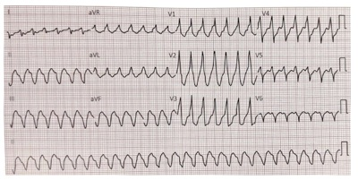
A Cardioversão elétrica não sincronizada
B Betabloqueador endovenoso
C Adenosina endovenosa
D Verapamil endovenosa.
E Cardioversão elétrica sincronizada
Questão 1155 · Clínica Médica · 4000194007Paciente de 29 anos, gênero feminino, relata início de palpitação súbita, que persiste até o momento de seu atendimento. Nega ser portadora de doenças de base. Nega uso de medicamentos. Ao exame físico, FC 160 bpm; PA 120/75 mmHG. Seu eletrocardiograma da admissão está representado abaixo. Qual das condutas abaixo é indicada?

A Cardioversão elétrica sincronizada.
B Adenosina endovenosa.
C Cardioversão elétrica não sincronizada.
D Amiodarona endovenosa.
E Uso combinado de betabloqueador e bloqueador dos canais de cálcio endovenoso.
Questão 1156 · Ginecologia · Obstetrícia · 4000194006Leia as afirmativas abaixo e assinale a alternativa CORRETA
A O surfactante alveolar, produzido nos pneumócitos do tipo I, aumenta a tensão superficial dos alvéolos e facilita a respiração neonatal.
B A deflexão do polo cefálico fetal ocasiona substituição de seus diâmetros anteroposteriores e facilita a insinuação durante o parto.
C O fluxo de sangue na veia cava inferior do feto tem velocidade diferente, de acordo com a sua origem.
D O rim fetal é responsável pela formação do líquido amniótico durante toda a gestação, que é hipertônico em relação ao plasma materno.
E A cavidade amniótica surge do endoderma extraembrionário e se funde com o celoma extraembrionário após a segunda semana do desenvolvimento ovular.
Questão 1157 · Ginecologia · Obstetrícia · 4000194005Assinale a alternativa CORRETA em relação aos dados abaixo, encontrados no exame físico de primigesta com 34 semanas.
A A observação de rechaço do polo fetal, identificado no fundo uterino, condiz com apresentação pélvica.
B A manobra de Leopold confirmará apresentação pélvica com mobilidade presente.
C O maior eixo fetal, de regra, encontra-se perpendicular ao maior eixo materno.
D O foco de ausculta dos batimentos cardíacos fetais será localizado no lado materno em que se identificar o tórax fetal.
E Nesta idade gestacional, a escava materna encontra-se ocupada e a situação fetal será transversa.
Questão 1158 · Ginecologia · Obstetrícia · 4000194004Assinale a alternativa CORRETA em relação ao rastreamento do diabetes que ocorre na gestação
A O teste de tolerância oral à glicose, realizado antes de 24 semanas, está indicado para as gestantes que apresentarem glicemia de jejum alterada no primeiro trimestre da gestação.
B O teste de tolerância oral à glicose alterado, em gestante com glicemia de jejum normal e assintomática, não indica diagnóstico de diabetes.
C Não há necessidade de rastreamento em gestante assintomática e sem fatores de risco.
D A glicemia de jejum e o teste de tolerância oral à glicose normais, no início da gestação, afastam a necessidade de investigação posterior.
E A glicemia de jejum deverá ser repetida ou substituída pelo teste de tolerância oral à glicose, ao redor de 24 semanas, quando seus valores forem normais no primeiro trimestre da gestação.
Questão 1159 · Ginecologia · Obstetrícia · 4000194003Vários fatores interferem, sobremaneira, no prognóstico das gestações gemelares. Sobre esse tema, responda corretamente, escolhendo uma das seguintes alternativas.
A A transfusão feto-fetal depende de anastomoses vasculares desbalanceadas, que ocorrem nas gestações dicoriônicas.
B O entrelaçamento de cordões é um risco associado com todas as gestações monocoriônicas.
C Quanto mais precoce for a divisão do ovo nas gestações monozigóticas, tanto maiores serão as suas complicações.
D Tanto nos dizigóticos como nos monozigóticos, a corionia é definida pelo momento de divisão do ovo.
E Gêmeos dizigóticos têm cariótipos sempre diferentes e serão, obrigatoriamente, dicoriônicos e diamnióticos.
Questão 1160 · Ginecologia · Obstetrícia · 4000194002No parto eutócico, como encontraremos o polo cefálico na fase de desprendimento do período expulsivo?
A Em OP e no plano +3 de DeLee.
B Em OS e no plano +3 de DeLee.
C Em OS e no plano -3 de DeLee. Obstetrícia e Ginecologia
D Em ODT e no plano -3 de DeLee.
E Em ODT e no plano +3 de DeLee.
Questão 1161 · Ginecologia · Obstetrícia · 4000194001Em relação à pré-eclâmpsia assinale a alternativa CORRETA.
A Os diuréticos são medicamentos de primeira linha no tratamento.
B Apesar do avanço da medicina, não há ainda método de rastreamento da pré-eclâmpsia.
C Na ultrassonografia, a avaliação com Doppler das artérias umbilicais auxilia no rastreamento.
D Em pacientes consideradas de risco pelo rastreamento, o uso profilático de AAS 100 a 150 mg à noite, iniciado antes de 16 semanas, diminui o risco de desenvolvimento das formas graves e precoces de pré-eclâmpsia.
E A idade gestacional em que o diagnóstico é feito não influencia no prognóstico materno e fetal.
Questão 1162 · Ginecologia · Obstetrícia · 4000194000No dia 08/11/2022, a paciente C.P.L deu entrada no PSGO queixando-se de perda de líquido claro em grande quantidade, via vaginal, há 2 horas. Contou que esta é a sua quarta gestação e, anteriormente, ela já teve três abortos. Referia data da última menstruação (DUM) em 01/02/2022, datação coerente com ultrassonogra a de primeiro trimestre. Ao exame: PA 120x80 mmHg, dinâmica uterina negativa, altura uterina de 37 cm, BCF 150 bpm. Toque vaginal evidenciou colo amolecido, grosso, posterior, pérvio para 2 cm de dilatação, apresentação cefálica. Especular: saída de líquido claro pelo orifício externo do colo uterino. Cardiotocogra a com padrão tranquilizador. Sobre este caso clínico, assinale a alternativa CORRETA em relação à nomenclatura, diagnóstico e conduta:
A Quartigesta, nulípara. Amniorrexe prematura a termo. Indução do parto.
B Quartigesta, tercípara. Amniorrexe prematura a termo. Indução do parto.
C Tercigesta, nulípara. Amniorrexe prematura a termo. Indução do parto.
D Quartigesta, nulípara. Amniorrexe prematura pré-termo. Inibição do trabalho de parto.
E Quartigesta, tercípara. Amniorrexe prematura pré-termo. Inibição do trabalho de parto.
Questão 1163 · Ginecologia · Obstetrícia · 4000193999Paciente L.F.S, 38 anos, gestante, 36 semanas de gestação pela amenorréia. Faz acompanhamento no pré- natal de alto risco devido à pré-eclâmpsia, em uso de metildopa 1g/dia. Comparece ao PSGO para avaliar a vitalidade fetal e se diz confusa sobre quanto tempo de gestação está. Mostra o 1º ultrassom, realizado com 8 semanas. Por ele, a idade gestacional é de 35 semanas e 6 dias. Pelo 2º ultrassom, realizado com 20 semanas, hoje a idade gestacional é de 34 semanas. Pelo 3º ultrassom, realizado com 30 semanas, hoje a idade gestacional é de 32 semanas. Realizou um ultrassom no PSGO hoje e a idade gestacional pela biometria fetal é de 33 semanas. Com base no descrito acima, qual a idade gestacional CORRETA e o diagnóstico mais provável:
A 34 semanas. Erro de data.
B 36 semanas. Restrição de crescimento fetal.
C 35 semanas. Restrição de crescimento fetal.
D 33 semanas. Erro de data.
E 36 semanas. Crescimento fetal adequado.
Questão 1164 · Ginecologia · Obstetrícia · 4000193998ALS, 20 anos, deu entrada no hospital com quadro de dor abdominal. Quadro iniciado há 1 semana. DUM: há 8 dias. MAC: pílula. Ao exame físico, corada, apirética, normotensa, abdome doloroso, descompressão brusca negativa, colo uterino com hiperemia e secreção turva e, ao toque, útero doloroso à mobilização, anexos não palpáveis. Assinale a alternativa mais adequada ao caso:
A Cervicite com indicação de antibioticoterapia domiciliar.
B Doença inflamatória pélvica com indicação de internação.
C Doença inflamatória pélvica com indicação de antibioticoterapia domiciliar.
D Cisto anexial, indicação de USTV.
E Cervicite com indicação de internação
Questão 1165 · Ginecologia · Obstetrícia · 4000193997NAS, 18 anos, procura o serviço de ginecologia do Hospital Universitário devido quadro de amenorreia secundária (5 meses). História de ciclos oligomenorreicos. Vida sexual ativa. MAC: condom. Ao exame físico, caracteres sexuais e somáticos compatíveis, sobrepeso, hirsutismo e exame ginecológico sem alterações. Assinale a alternativa mais adequada ao caso:
A Síndrome anovulatória, solicitar exames laboratoriais e de imagem.
B Disgenesia gonadal, indicado cariótipo e perfil hormonal.
C Distúrbio do desenvolvimento sexual, solicitar cariótipo.
D Má formação dos dutos mesonéfricos, solicitar exame de imagem.
E Gravidez, solicitar USTV.
Questão 1166 · Ginecologia · Obstetrícia · 4000193996Paciente, 55 anos, com queixa de sangramento pós-menopausa. Exame físico sem alterações. Qual o primeiro exame a solicitar?
A B-HCG
B Ultrasson transvaginal
C Perfil hormonal
D Histeroscopia
E Biópsia de endométrio
Questão 1167 · Ginecologia · Obstetrícia · 4000193995Paciente, 66 anos, deseja saber se ainda precisa realizar exames de citologia oncológica de colo uterino e mamografia. Entre as alternativas, qual o esclarecimento mais CORRETO?
A Caso venha realizando tais exames em rotina regular, estará liberada.
B Em relação a citologia, caso ainda tenha atividade sexual, deve continuar a realizar e manter a mamografia
C Caso a paciente tenha história de tratamento para HSIL, deve manter a citologia e a mamografia deve ser mantida
D Após um teste de HPV negativo, estará liberada da citologia, e manter a mamografia.
E Deve manter ambos os exames.
Questão 1168 · Ginecologia · Obstetrícia · 4000193994Paciente, 40 anos, com diagnóstico de endometriose profunda e infertilidade primária. Deseja engravidar. Nega dor. Assinale a alternativa mais CORRETA para esse caso:
A Inseminação artificial.
B Videolaparoscopia terapêutica.
C Ciclo induzido por 6 meses.
D Induzir amenorreia por 6 meses e depois reavaliar.
E FIV.
Questão 1169 · Ginecologia · Obstetrícia · 4000193993Paciente, 40 anos, comparece à consulta médica com teste rápido reagente para sí lis. Tem história de tratamento para sí lis, comprovado. Atualmente sem sinais ou sintomas. Assinale a alternativa CORRETA para esse caso:
A Indicado retratar com penicilina benzatina 7,2 milhões de unidades.
B Indicado retratar com penicilina benzatina 2,4 milhões de unidades.
C Indicado realizar sorologia com teste treponêmico confirmatório.
D Indicado solicitar teste não treponêmico.
E Não tem indicação de retratamento.
Questão 1170 · Ginecologia · Obstetrícia · 4000193992Paciente, 25 anos, queixa de nódulo mamário esquerdo. Ao exame físico, área nodular em QSE da ME, medindo em torno de 2cm, bem delimitado, móvel e fibro-elástico. Assinale a conduta inicial mais adequada:
A Mamografia.
B US.
C Agendar a nodulectomia.
D PAAF.
E US e mamografia.
Questão 1171 · Ginecologia · Obstetrícia · 4000193991Paciente, 18 anos, com verrugas difusas na região vulvar. MAC: pílula. DUM há 10 dias. Assinale a alternativa mais adequada:
A Biopsiar e programar o tratamento.
B Colher a citologia oncológica do colo uterino antes de tratar.
C Realizar o teste de HPV para indicar o tratamento mais adequado.
D Programar o tratamento conforme tamanho e extensão das lesões.
E Vacinar contra o HPV e acompanhar a evolução.
Questão 1172 · Pediatria · 4000193990A infecção do Trato Urinário na infância é uma infecção bacteriana comum, atingindo mais o sexo feminino do que o masculino. Seu diagnóstico e seguimento se faz importante pela possibilidade de evolução para cicatriz renal, em caso de pielonefrite e urosepsis nos lactentes. Sobre infecção do trato urinário na pediatria, podemos afirmar que:
A O diagnóstico é realizado apenas pela análise de urina, não necessitando da cultura dessa urina.
B A manifestação clínica é semelhante em todas as faixas etárias da pediatria.
C A maioria dos episódios de infecção do trato urinário é causado por bacilos gram-negativos aeróbicos.
D A taxa de recorrência é muito baixa após a primeira infecção.
E Não há relação com malformação de trato genito-urinário.
Questão 1173 · Calendário dos adolescentes · 4000193989A mãe de um lactente que você atende no posto está muito preocupada com a vacinação de seu lho mais velho, um adolescente de 12 anos, sexo masculino e solicitou que você orientasse quais vacinas ele deve receber. Segundo o Programa Nacional de Imunização, sendo este adolescente sem comorbidades com vacinas completas na infância inclusive hepatite B, 3 doses; febre amarela, 1 dose aos 7 anos; e sarampo, caxumba e rubéola, 2 doses, ele deve receber, de forma gratuita,
A meningite A, HPV, febre amarela.
B tríplice Bacteriana, tríplice viral e Haemophilus b, COVID.
C tríplice viral, HPV e meningite B.
D tríplice bacteriana celular aos 15 anos, HPV e meningite C.
E difteria e tétano com 15 anos, HPV, meningite ACWY e COVID.
Questão 1174 · Neonatal · 4000193988Pais chegam ao pronto-socorro desesperados por acharem que o lho de 7 dias de vida estava tendo episódios de convulsão. Recém-nascido (RN) termo, peso adequado para idade gestacional, sem intercorrências no pré-natal e no parto, alta do berçário com 48 horas de vida, com icterícia leve, em aleitamento materno exclusivo. Recebeu vacina BCG e hepatite B. Não apresentava história de febre, hipoatividade, inapetência e/ou qualquer outro sinal/sintoma. Ao exame físico: ativo-reativo, ictérico zona I, eupneico, afebril, mucosas úmidas e coradas, fontanela plana e, ao manipular, o RN apresentava movimentos de extensão-abdução dos membros superiores com abertura dos dedos da mão e, em seguida, de exão- adução dos braços à posição original. Tais movimentos eram reconhecidos pelos pais como episódios convulsivos. Quais seriam o diagnóstico e conduta mais adequados nesse caso?
A Reflexo de Moro – orientar quanto a ser um reflexo primitivo fisiológico que pode perdurar até 6 meses.
B Sepse neonatal tardia – coleta de exames, internação com antibioticoterapia.
C Meningite Bacteriana – coleta de exames incluindo líquor e internação com antibioticoterapia.
D Convulsão neonatal – prescrever Diazepam, colher exames para triagem infecciosa e solicitar eletroencefalograma.
E Reação vacinal – internar para observar e fazer a notificação para vigilância epidemiológica de eventos adversos a vacina.
Questão 1175 · Testes de triagem neonatal · 4000193987Ao nascer todos os bebês brasileiros são submetidos a testes de triagem que visam detectar precocemente doenças, antes de surgirem os sintomas, possibilitando o tratamento oportuno e prevenindo complicações e sequelas. Através de exames simples identi cam-se as crianças que necessitarão de investigação mais apurada, a m confirmar o diagnóstico. Se confirmado, essas crianças são então encaminhadas para tratamento e acompanhamento adequados. Esses exames são:
A Teste do pezinho, teste do coraçãozinho e Apgar.
B Teste do pezinho, teste do coraçãozinho, teste da orelhinha e teste do olhinho.
C Apgar, teste do coraçãozinho e teste pezinho.
D Apenas teste do pezinho e teste do coraçãozinho.
E Apgar, reflexos e teste do pezinho.
Questão 1176 · Pediatria · 4000193986Um casal procurou pediatra para realização da consulta pediátrica neonatal. O médico, dentre outros temas, abordou o aleitamento materno. Sobre isso, é correto dizer:
A A lactante precisa ter um boa alimentação e ingesta de líquido para que seu leite não fique fraco e necessite de complementação.
B Com relação a pega, as bochechas devem se apresentar encovadas durante a amamentação.
C É normal a lactante apresentar dor durante a amamentação.
D A pega adequada da criança na mama previne fissuras em mamilos e garante a ingesta adequada de leite.
E Não se deve ordenhar a mama pois reduz a produção de leite.
Questão 1177 · Pediatria · 4000193985Os pais estão preocupados com o lho de 3 meses pois esse lho é mais tranquilo que os irmãos na idade dele, dorme bem à noite e passa o dia acordado, ativo, sem resmungar. O bebê está em aleitamento materno exclusivo; os pais acham que ele deve estar fazendo hipoglicemia. Lactente nascido via parto vaginal, a termo, peso ao nascimento 3.200g. Hoje, no exame físico, peso de 6.000g, ativo, acianótico, anictérico, eupneico, mucosas úmidas e coradas, fontanela normotensa. O bebê observa um rosto, segue objetos ultrapassando a linha média, reage ao som, vocaliza, sorri. Qual a melhor conduta neste caso?
A Manter aleitamento materno exclusivo e tranquilizar os pais.
B Encaminhar ao pronto socorro para realização de glicemia capilar.
C Iniciar fórmula infantil hipercalórica e reavaliar em uma semana.
D Suspender o aleitamento materno e basear dieta apenas em fórmulas infantis maternizadas e chás açucarados.
E Tranquilizar os pais e já iniciar complementação com dietas de papas de frutas.
Questão 1178 · Pediatria · 4000193984Durante um acompanhamento de puericultura é avaliado um lactente de 12 meses. Nega intercorrências pré e perinatal. Recebeu aleitamento materno exclusivo até 6 meses de idade e, atualmente, alimentação dentro dos padrões preconizados. Recebeu todas as vacinas do Programa Nacional de Imunização. Ao avaliar o desenvolvimento, você espera que os seguintes marcos estejam presentes:
A Falar frases, birras, controle de esfíncter.
B Ficar de pé com apoio, pinça completa (polpa a polpa), falar palavras.
C Empilhar 3 a 4 cubos, vocabulário com mais de 10 palavras.
D Controle do esfíncter, andar sem apoio
E Andar sem apoio, subir escadas, vocabulário com mais de 15 palavras.
Questão 1179 · Pediatria · 4000193983Adolescente, sexo feminino, 11 anos, é levada para atendimento médico por sua mãe. Ambas com bastante dúvida com relação à puberdade e ao momento em que vai acontecer a menarca. Ao exame físico, foi notado que a adolescente se encontrava no estágio III. de maturação sexual de Tanner para mama e pili cação (M3 P3. Foi abordado então pelo hebiatra que, provavelmente, em torno de 6 meses acontecerá a menarca, baseado na sequência em que normalmente os eventos puberais acontecem. Assinale a alternativa com a sequência CORRETA desses eventos
A Estirão de crescimento – telarca – pico de velocidade de crescimento – menarca.
B Adrenarca – telarca – estirão de crescimento – parada do crescimento – menarca.
C Gonadarca – pico de velocidade de crescimento – telarca – parada do crescimento – menarca.
D Menarca – aceleração da velocidade de crescimento – pico de velocidade de crescimento – redução da velocidade de crescimento.
E Telarca – aceleração de velocidade de crescimento – pico de velocidade de crescimento – redução da velocidade de crescimento – menarca – parada do crescimento.
Questão 1180 · Pediatria · 4000193982André, 13 anos, solicita à sua mãe que marque uma consulta pois os amigos estão crescendo bastante e ele se tornando o “menor da turma”. Adolescente hígido, sem histórico de internações, nega uso contínuo de medicações. Pai refere história semelhante ao do lho quando era adolescente, mas depois cresceu bastante. No exame físico: Estatura 150 cm (escore z -1), peso 45 kg. Tanner G2P1, sem evidência de alterações no restante do exame. Solicitada idade óssea compatível com 11 anos e 6 meses; altura alvo: 175 cm (escore z entre 0 e -1). Qual seria a conduta nesse caso?
A Solicitar exames para investigação de Baixa Estatura.
B Indicar o uso de hormônio de crescimento.
C Tranquilizar adolescente por se tratar de retardo constitucional do crescimento e fazer acompanhamento com velocidade de crescimento.
D Avaliar função da tireoide e cortisol.
E Solicitar um cariótipo por suspeita de Síndrome de Klinefelter.
Questão 1181 · Pediatria · 4000193981Com o aumento dos distúrbios psiquiátricos na adolescência é importante sempre tentar identi car, nos adolescentes, sinais de alerta. São eles:
A Desânimo com prejuízo nas atividades rotineiras.
B Separação progressiva dos pais.
C Atitude contraditória.
D Flutuações de humor.
E Crises religiosas.
Questão 1182 · Pediatria · 4000193980Escolar, sexo feminino, foi levada ao pronto socorro por seus pais por apresentar epistaxe e equimoses ao longo do corpo, há 5 dias. Criança previamente hígida, sem histórico de internações, porém apresentou um quadro de infecção de vias aéreas, há 1 mês. Ao exame físico foi evidenciado equimoses em membros inferiores e superiores, ausência de visceromegalias, linfonodomegalias e sangramentos ativos. Solicitado hemograma com hemoglobina 11,2 g/dl, Leucócitos com 6400/ mm3 e plaquetas de 10.000/ mm3. Qual diagnóstico mais provável?
A Leucemia Linfóide Aguda
B Leucemia Mielóide Crônica
C Doença de Von Willebrand
D Trombocitopenia imune primária
E Púrpura de Henoch- Schonlein
Questão 1183 · Pediatria · 4000193979Mãe notou que seu lho, de 2 anos de idade, apresenta edema periocular pela manhã e também de membros inferiores ao longo do dia, e urina espumosa. Marcou consulta com pediatra de rotina para avaliação. Ao exame físico, pediatra notou um ganho de peso de 5 kg em 6 meses, aparelho respiratório e cardiológico sem alteração, abdome indolor à palpação e membros inferiores com edema 2+/4+, mole, frio e depressível. Veri cam-se também FC = 106 bpm, FR = 26 irpm, PA no percentil 50, T = 36,5 ºC e SatO2 = 100% em AA. Qual seria a melhor conduta nesse momento?
A Encaminhar ao pronto socorro para receber albumina agora.
B Iniciar corticoterapia neste momento.
C Solicitar triagem infecciosa.
D Solicitar apenas sedimento urinário, proteinúria 24h.
E Solicitar sedimento urinário, proteinúria 24h, proteínas totais e frações, lípides, complemento, função renal.
Questão 1184 · Pediatria · 4000193978Adolescente, 12 anos, chega ao pronto socorro com queixa de cefaleia importante, progressiva, há 3 dias, associada a vômito e febre. Mãe refere que teve caso de meningite meningocócica na sala de aula da adolescente. Ao exame físico, prostrada, facie de dor, rigidez de nuca, sinais de Kerning e Brudzinski presentes. O médico do pronto socorro optou por coletar líquor. Sendo alta a probabilidade desse líquor vir com características de meningite bacteriana, o que podemos esperar:
A Glicose diminuída, microscopia positiva para gram, células predominantes: neutrófilos.
B Glicose normal, microscopia negativa para gram, células predominantes: neutrófilos.
C Pressão normal, glicose normal, microscopia negativa para gram, menos que 15 células.
D Pressão normal, glicose diminuída, microscopia positiva para gram, células predominantes: linfomonocitária.
E Nenhuma das alternativas está correta.
Questão 1185 · Pediatria · 4000193977A bronquiolite viral aguda (BVA) é uma doença inflamatória inespecí ca que afeta as vias aéreas de pequeno calibre. É caracterizada por in amação aguda, edema e necrose de células epiteliais do trato respiratório das pequenas vias aéreas, promovendo impactação de muco intraluminal, causada por vírus. É uma enfermidade frequente no primeiro ano de vida. Em relação à bronquiolite viral, analise as assertivas abaixo: I. As complicações mais frequentes são insu ciência respiratória aguda grave; sibilância recorrente no período de lactente e bronquiolite obliterante; II. O tratamento da bronquiolite tem por base a oxigenioterapia, hidratação e corticoidoterapia; III. O diagnóstico é realizado com hemograma e Rx de tórax. IV. Os principais achados radiológicos são: hiperinsu ação torácica difusa, hipertransparência e reti cação de diafragma. Assinale a(s) alternativa(s) CORRETA(S).
A I e II, apenas.
B I, III e IV, apenas.
C IV, apenas.
D I e IV, apenas.
E II e IV, apenas.
Revisar: possível letra faltando em enunciado
Questão 1186 · Mononucleose · Mononucleose Inf ecciosa · 4000193976Uma adolescente, 11 anos, apresentou um quadro de erupção cutânea após uso de amoxicilina prescrita pelo seu médico, devido a um quadro de odinofagia com aumento das tonsilas palatinas com exsudato associado à hepatomegalia. Qual seria o provável diagnóstico e agente?
A Mononucleose infecciosa causada pelo Sars-COV 2.
B Mononucleose infecciosa causada pelo vírus Epstein-Barr.
C Amigdalite bacteriana causada pelo Streptococus epidermidis.
D Urticária crônica causada pela amoxicilina.
E Reação leucemoide, desencadeada pela amoxicilina, e quadro viral.
Questão 1187 · Pediatria · 4000193975Criança de 1 ano é levada à emergência com relato de ter sido picada, na mão, por um escorpião amarelo, há cerca de 15 minutos, na escola. Chorava muito, estava agitada, vomitou várias vezes, apresentava sudorese profusa, sialorreia, taquicardia, taquipneia e hipertensão. Para esse caso, a medida terapêutica mais importante é
A antibiótico sistêmico e sedação.
B analgésico sistêmico.
C soro antiescorpiônico 6 ampolas.
D bloqueio anestésico local.
E analgesia com dipirona e bloqueio.
Questão 1188 · Medicina Preventiva · 4000193974Analise a tabela a seguir para responder a questão: Tabela 1. Riscos relativos (RR) e intervalo de con ança (IC95%) para um aumento de 10 PM10 para cada grupo de internações nos municípios estudados. Sobre a tabela acima, assinale a alternativa INCORRETA:

A Excetuando-se os municípios de Santo André (DRT) e Taboão da Serra (DRC), os demais municípios apresentaram estimativas estatisticamente significantes para as hospitalizações por doenças respiratórias.
B O risco relativo de admissão hospitalar para um aumento de 10 μg/m3 nos níveis de PM10 foi de 1,011 (IC95% 1,009–1,013) para São Paulo para doenças respiratórias totais, sendo um resultado estatisticamente significante.
C O risco relativo de admissão hospitalar para um aumento de 10 μg/m3 nos níveis de PM10 foi de 1,032 (IC95% 1,024–1,040) em São Bernardo do Campo para doenças respiratórias totais; sendo o resultado estatisticamente significante.
D O risco de internação por doenças respiratórias em crianças variou de 1,009 (IC95%1,001–1,017) em Santo André a 1,077 (IC95%1,056–1,098) em Mauá; sendo o resultado estatisticamente significante.
E O risco relativo de admissão hospitalar para um aumento de 10 μg/m3 nos níveis de PM10 foi de 1,011 para São Paulo e de 1,032 para São Bernardo do Campo para doenças respiratórias totais; não sendo o resultado estatisticamente significante.
Questão 1189 · Medicina Preventiva · 4000193973Analise a tabela a seguir para responder a questão: Tabela 1. Riscos relativos (RR) e intervalo de con ança (IC95%) para um aumento de 10 PM10 para cada grupo de internações nos municípios estudados. Sobre a tabela acima, com relação às internações por doenças cardiovasculares (DCV), assinale a alternativa CORRETA

A As estimativas para internações por DCV não foram estatisticamente significantes para os municípios de São Paulo, São Bernardo do Campo e Santo André.
B As estimativas para internações por DCV foram estatisticamente significantes para os municípios de São Paulo, São Bernardo do Campo e Santo André.
C Com relação às estimativas para internações por DCV em Santo André, observou-se um risco relativo maior do que 1.
D Com relação às estimativas para internações por DCV em Diadema e em Guarulhos, o resultado foi estatisticamente significante. Medicina Preventiva e Social
E Com relação às estimativas para internações por DCV em Osasco e em São Caetano, o resultado foi estatisticamente significante.
Questão 1190 · Medicina Preventiva · 4000193972Leia o texto abaixo para responder à questão: Um estudo epidemiológico foi realizado com o objetivo de avaliar o impacto da poluição do ar na maior metrópole brasileira sobre as internações por doenças respiratórias e cardiovasculares. Com relação aos “Métodos” realizou-se estudo com dados das estações de monitoramento de nove municípios da Região Metropolitana de São Paulo, tendo o PM10 (material particulado inalável) como indicador de poluição e as internações por doenças respiratórias e cardiovasculares como indicadores de efeito. Foram utilizadas, para cada município (unidade de análise foi o município), as contagens diárias de internações por doenças respiratórias (CID10: J00-J99) em todas as idades (DRT), doenças respiratórias (CID10: J00-J99) em menores de cinco anos (DRC) e doenças cardiovasculares (CID10: I00-I99) em maiores de 39 anos (DCV) como desfechos. Analisou-se o PM10 como variável de exposição nos diversos municípios, de forma a permitir a sumarização da estimativa de risco, relativa a esse poluente para a região. As medidas de PM10 cedidas, originalmente de forma horária, foram agregadas ao banco de dados em médias diárias para cada município. As estimativas de risco foram calculadas a partir da introdução da variável explanatória no modelo de trabalho de forma linear. Esse modelo estatístico fornece o risco relativo percentual para cada incremento de 10 PM10. Em todas as análises, assumiu-se nível de significância de 5%. Adaptado de GOUVEIA, N.; CORRALLO, F.P.; LEON, A.C. P. de; JUNGER, W; FREITAS, C. U. de. Poluição do ar e hospitalizações na maior metrópole brasileira. Rev Saúde Pública, 2017, 51:17. Trata-se do estudo epidemiológico:
A Ecológico
B Coorte
C Ensaio clínico
D Transversal
E Ensaio comunitário
Questão 1191 · Medicina Preventiva · 4000193971Leia o texto abaixo para responder à questão: Um estudo epidemiológico foi realizado com o objetivo de avaliar o impacto da poluição do ar na maior metrópole brasileira sobre as internações por doenças respiratórias e cardiovasculares. Com relação aos “Métodos” realizou-se estudo com dados das estações de monitoramento de nove municípios da Região Metropolitana de São Paulo, tendo o PM10 (material particulado inalável) como indicador de poluição e as internações por doenças respiratórias e cardiovasculares como indicadores de efeito. Foram utilizadas, para cada município (unidade de análise foi o município), as contagens diárias de internações por doenças respiratórias (CID10: J00-J99) em todas as idades (DRT), doenças respiratórias (CID10: J00-J99) em menores de cinco anos (DRC) e doenças cardiovasculares (CID10: I00-I99) em maiores de 39 anos (DCV) como desfechos. Analisou-se o PM10 como variável de exposição nos diversos municípios, de forma a permitir a sumarização da estimativa de risco, relativa a esse poluente para a região. As medidas de PM10 cedidas, originalmente de forma horária, foram agregadas ao banco de dados em médias diárias para cada município. As estimativas de risco foram calculadas a partir da introdução da variável explanatória no modelo de trabalho de forma linear. Esse modelo estatístico fornece o risco relativo percentual para cada incremento de 10 PM10. Em todas as análises, assumiu-se nível de significância de 5%. Adaptado de GOUVEIA, N.; CORRALLO, F.P.; LEON, A.C. P. de; JUNGER, W; FREITAS, C. U. de. Poluição do ar e hospitalizações na maior metrópole brasileira. Rev Saúde Pública, 2017, 51:17. A contagem diária de internações e a média diária de PM10 são, respectivamente:
A Variável independente e variável dependente.
B Variáveis independentes.
C Variável de exposição e variável desfecho.
D Variável dependente e variável independente.
E Variáveis desfechos.
Questão 1192 · Medicina Preventiva · 4000193970O genograma é um instrumento utilizado para ampliar o conhecimento sobre as famílias, pois apresenta de modo sucinto e universal a representação do grupo familiar. Em relação ao genograma, assinale a alternativa INCORRETA
A Permite identificar, de maneira rápida a dinâmica familiar e suas possíveis implicações, com criação de vínculo entre profissional e a família/indivíduo, evitando textos longos e muitas vezes pouco precisos na descrição do grupo familiar.
B Baseia-se no modelo do heredograma, mostrando graficamente a estrutura e o padrão de repetição das relações familiares.
C Representação gráfica dos contatos dos membros da família com os outros sistemas sociais, das relações entre a família e a comunidade. Avalia os apoios e suportes disponíveis e sua utilização pela família e pode apontar a presença de recursos.
D Trata-se de uma representação gráfica do sistema familiar, preferencialmente em três gerações, que utiliza símbolos padronizados para identificar os componentes da família e suas relações.
E São diferentes das famosas árvores genealógicas, pois apontam não só os graus de parentesco como padrões de comportamento, atitudes e doenças físicas e psíquicas.
Questão 1193 · Medicina Preventiva · 4000193969O Matriciamento ou apoio matricial é um novo modo de produzir saúde em que duas ou mais equipes criam uma proposta de intervenção pedagógico-terapêutica. Sobre o Matriciamento ou Apoio matricial, pode-se afirmar que:
A Visa integrar os profissionais da equipe de saúde da família com profissionais especialistas, de forma que os primeiros tenham um suporte para a discussão de casos e intervenções terapêuticas.
B Objetiva extinguir os encaminhamentos, referências e contrarreferências, protocolos e centros de regulação.
C No processo de matriciamento, o sistema de saúde se reestrutura em dois tipos de equipes: equipe de transferência e equipe de especialidades médicas.
D O apoio matricial refere-se especificamente ao atendimento realizado por um médico especialista dentro de uma unidade de atenção secundária tradicional.
E Matriciamento é realizado, exclusivamente, quando se necessita de suporte para realizar intervenções psicossociais da atenção secundária, tais como grupos de pacientes das unidades de saúde mental.
Questão 1194 · Medicina Preventiva · 4000193968A Clínica Ampliada propõe que o pro ssional de saúde desenvolva a capacidade de ajudar as pessoas, não só a combater as doenças, mas a transformar-se, de forma que a doença, mesmo sendo um limite, não a impeça de viver outras experiências na sua vida. A respeito da Clínica ampliada é INCORRETO afirmar que:
A A Clínica Ampliada reconhece que, em um dado momento e situação singular, pode existir uma predominância, uma escolha ou a emergência de um enfoque ou de um tema, sem que isso signifique a negação de outros enfoques e possibilidades de ação.
B A clínica ampliada trabalha os danos e os benefícios gerados pelas práticas de saúde e aposta nas equipes de diferentes especialidades compartilhando a responsabilidade com os usuários e seu entorno.
C Ampliar a clínica é aumentar a autonomia do usuário do serviço de saúde, da família e da comunidade. É integrar a equipe de trabalhadores da saúde de diferentes áreas na busca de um cuidado e tratamento de acordo com cada caso, com a criação de vínculo com o usuário.
D A clínica ampliada pode ser conceituada como uma ferramenta teórica e prática com finalidade de contribuir para a abordagem clínica do adoecimento e do sofrimento, considerando a singularidade do sujeito e a complexidade do processo saúde/doença.
E A clínica ampliada apesar da grande importância como ferramenta de trabalho na atuação das equipes de atenção primária, não entrou como diretriz da Política Nacional de Humanização criada em 2018.
Questão 1195 · Medicina Preventiva · 4000193967O Projeto Terapêutico Singular (PTS) é um conjunto de propostas de condutas terapêuticas articuladas para um indivíduo, uma família ou um grupo, que resulta da discussão coletiva de uma equipe interdisciplinar. Sobre o PTS, assinale a alternativa CORRETA:
A O PTS é dedicado a situações menos complexas, buscando a generalização como elemento central de articulação, na tentativa de igualar as situações ou os sujeitos a partir dos diagnósticos médicos firmados.
B PTS é uma forma de organização da gestão do cuidado, instituída no processo de trabalho em saúde entre as equipes da Atenção Básica, permitindo o compartilhamento de casos e acompanhamento longitudinal de responsabilidade dessas equipes.
C É dividido em seis etapas: Diagnóstico Médico, Ruptura, Decisão, Divisão de responsabilidades, Reavaliação e Alta médica.
D A construção do PTS tem caráter permanente e definitivo, não estando sujeito a revisões, uma vez que a situação problema tende a ser resolvida pela equipe de saúde em conjunto com o NASF.
E v
Questão 1196 · Medicina Preventiva · 4000193966Leia o texto abaixo para responder a questão: Um estudo foi realizado para avaliar a associação entre tempo de amamentação e comportamentos externalizantes na infância e na adolescência (ex: hiperatividade e problemas de conduta). Para tanto, foram utilizados dados de nascimentos de Pelotas-RS de 1993. Desde então, os participantes (nascidos vivos) têm sido acompanhados em diferentes momentos. As informações sobre amamentação foram coletadas aos 12 meses. O comportamento foi avaliado aos 4 anos pelo Inventário de Comportamentos da Infância e da Adolescência (versão brasileira da Child Behavior Checklist, CBCL) e aos 11 e 15 anos pelo Questionário de Capacidades e Di culdades (versão brasileira de Strengths and Di culties Questionnaire, SDQ), ambos aplicados às mães ou aos responsáveis pela criança. POTON, WL; SOARES, ALG; MENEZES, AMB; WEHRMEISTER, FC; GONÇALVES, H. Amamentação e comportamentos externalizantes na infância e adolescência em uma coorte de nascimentos [Breastfeeding and externalizing behaviors in childhood and adolescence in a birth cohort]. Rev Panam Salud Publica. 2018, Feb 19; 41e142. Trata-se do estudo epidemiológico
A observacional, Coorte.
B experimental, Ensaio clínico.
C observacional, Transversal.
D experimental, Ensaio comunitário.
E observacional, Ecológico.
Questão 1197 · Medicina Preventiva · 4000193965Leia o texto abaixo para responder a questão: Um estudo foi realizado para avaliar a associação entre tempo de amamentação e comportamentos externalizantes na infância e na adolescência (ex: hiperatividade e problemas de conduta). Para tanto, foram utilizados dados de nascimentos de Pelotas-RS de 1993. Desde então, os participantes (nascidos vivos) têm sido acompanhados em diferentes momentos. As informações sobre amamentação foram coletadas aos 12 meses. O comportamento foi avaliado aos 4 anos pelo Inventário de Comportamentos da Infância e da Adolescência (versão brasileira da Child Behavior Checklist, CBCL) e aos 11 e 15 anos pelo Questionário de Capacidades e Di culdades (versão brasileira de Strengths and Di culties Questionnaire, SDQ), ambos aplicados às mães ou aos responsáveis pela criança. POTON, WL; SOARES, ALG; MENEZES, AMB; WEHRMEISTER, FC; GONÇALVES, H. Amamentação e comportamentos externalizantes na infância e adolescência em uma coorte de nascimentos [Breastfeeding and externalizing behaviors in childhood and adolescence in a birth cohort]. Rev Panam Salud Publica. 2018, Feb 19; 41e142. A conclusão do estudo foi que embora o aleitamento materno por pelo menos 6 meses tenha sido inversamente associado à hiperatividade aos 11 anos, nenhuma associação foi observada aos 4 e aos 15 anos. Novos estudos devem considerar outros fatores que in uenciam os comportamentos externalizantes, tais como presença do pai no ambiente familiar, violência doméstica e maus-tratos qualidade da relação mãe- filho. Obs: RR = Risco Relativo; IC95% = Intervalo de Confiança de 95%. Diante do quadro acima, assinale a alternativa CORRETA.
A Aos 11 anos, após ajuste para fatores de confusão, as crianças que foram amamentadas por pelo menos 6 meses tiveram menor risco (“protegidas”) de hiperatividade (RR=1,54; IC95%: 0,32 a 1,91) em comparação às amamentadas por menos de 1 mês.
B Aos 11 anos, após ajuste para fatores de confusão, as crianças que foram amamentadas por pelo menos 6 meses tiveram maior risco de hiperatividade (RR=0,54; IC95%: 0,32 a 0,91) em comparação às amamentadas por menos de 1 mês.
C Nenhuma associação significativa foi observada aos 4 anos entre duração da amamentação e comportamentos externalizantes com Risco Relativo = 0,78 com respectivo Intervalo de Confiança de 95% entre 0,36 e 0,88.
D Aos 11 anos, após ajuste para fatores de confusão, as crianças que foram amamentadas por pelo menos 6 meses tiveram menor risco (“protegidas”) de hiperatividade (RR=0,54; IC95%: 0,32 a 0,91) em comparação às amamentadas por menos de 1 mês.
E Nenhuma associação significativa foi observada aos 15 anos entre duração da amamentação e comportamentos externalizantes com Risco Relativo = 1,29 com respectivo Intervalo de Confiança de 95% entre 1,27 e 1,35.
Questão 1198 · Medicina Preventiva · 4000193964Sobre a Lei Orgânica da Saúde 8.142/90, assinale a alternativa CORRETA.
A As Conferências de Saúde e os Conselhos de Saúde têm sua organização e normas de funcionamento aprovadas pelo poder executivo, não possuindo autonomia administrativa.
B A Conferência de Saúde reunir-se-á a cada quatro anos com a representação dos vários segmentos sociais, sendo eles: usuários, trabalhadores da saúde, governo e prestadores de serviço.
C Os recursos do Fundo Nacional de Saúde destinados às ações e serviços de saúde, serão repassados de forma regular e automática, sendo pelo menos 50% destinados aos Municípios.
D O Conselho de Saúde é um órgão colegiado composto por representantes do governo, prestadores de serviço, profissionais de saúde e usuários. Não possui caráter permanente, porém é deliberativo.
E Municípios, Estados e Distrito Federal, deverão contar com Conferência de Saúde como requisito indispensável para recebimento dos recursos do Fundo Nacional de Saúde.
Questão 1199 · Medicina Preventiva · 4000193963Faz parte da Lista Nacional de Notificação Compulsória de doenças, agravos e eventos de saúde pública, nos serviços de saúde públicos e privados em todo o território nacional, com periodicidade de noti cação semanal:
A Covid-19
B Doença aguda pelo vírus Zika
C Leptospirose
D Sindrome gripal suspeita de covid-19
E Síndrome respiratória aguda grave (SRAG) associada a coronavírus
Questão 1200 · Medicina Preventiva · 4000193962A Resolução n° 588/2018 em seu art. 2º define: “A Política Nacional de Vigilância em Saúde é uma política pública de Estado e função essencial do SUS, tendo caráter universal, transversal e orientador do modelo de atenção nos territórios, sendo a sua gestão de responsabilidade exclusiva do poder público.” Sobre os princípios da Política Nacional de Vigilância em Saúde, analise as afirmativas abaixo: I. Conhecimento do território: utilização da epidemiologia e da avaliação de risco para a definição de prioridades nos processos de planejamento, alocação de recursos e orientação programática. II. Integralidade: Articulação das ações de vigilância em saúde com as demais ações e serviços desenvolvidos e ofertados no SUS para garantir a integralidade da atenção à saúde da população. III. Equidade: Acesso universal e contínuo a ações e serviços de vigilância em saúde, Está CORRETO o que se afirma em:
A I, apenas.
B I, II e III.
C I e II, apenas.
D II, apenas.
E III, apenas.
Questão 1201 · Medicina Preventiva · 4000193961De acordo com o Decreto n° 7.508/2011, o acesso universal e igualitário à assistência farmacêutica pressupõe: I. Os entes federativos poderão ampliar o acesso do usuário à assistência farmacêutica, desde que questões de saúde pública o justifiquem. II. Para o acesso universal e igualitário à assistência farmacêutica, o medicamento deve ter sido prescrito por profissional de saúde, no exercício regular de suas funções no serviço público ou privado; III. A prescrição de medicamento deve estar em conformidade com a RENAME e os Protocolos Clínicos e Diretrizes Terapêuticas ou com a relação especí ca complementar estadual, distrital ou municipal de medicamentos; ter a dispensação ocorrido em unidades indicadas pela direção do SUS. IV. Ter a dispensação ocorrido em unidades indicadas pela direção do SUS. Está(ão) CORRETA(S) as afirmativas:
A I, II, III e IV.
B III e IV, apenas.
C I e II, apenas.
D I, III e IV, apenas.
E III, apenas.
Revisar: possível letra faltando em enunciado
Questão 1202 · Medicina Preventiva · 4000193960A Constituição Federal de 1988 é também chamada de "Constituição Cidadã", por ter sido concebida no processo de redemocratização e passou por diversas atualizações ao longo dos anos. Dentre as recentes atualizações, estão as Emendas Constitucionais n° 120/2022 e n° 124/2022, que garantem direitos importantes para algumas categorias de profissionais que atuam na área da saúde. Sobre a Constituição Federal de 1988 e suas recentes atualizações, assinale a alternativa
A O vencimento dos agentes comunitários de saúde e dos agentes de combate às endemias fica sob responsabilidade dos Estados, e cabe somente aos Municípios, estabelecer, vantagens, incentivos, auxílios, gratificações e indenizações, a fim de valorizar o trabalho desses profissionais.
B O vencimento dos agentes comunitários de saúde e dos agentes de combate às endemias não será inferior a 1 (um) salário-mínimo, repassados pelos Estados aos Municípios e ao Distrito Federal.
C Lei federal instituirá pisos salariais profissionais nacionais para o enfermeiro, o técnico de enfermagem, o auxiliar de enfermagem e a parteira, a serem observados apenas por pessoas jurídicas de direito público.
D Os agentes comunitários de saúde e os agentes de combate às endemias terão também, em razão dos riscos inerentes às funções desempenhadas, aposentadoria especial e, somado aos seus vencimentos, adicional de insalubridade.
E Os recursos financeiros repassados pelos Estados aos Municípios para pagamento do vencimento dos agentes comunitários de saúde e dos agentes de combate às endemias serão objeto de inclusão no cálculo para fins do limite de despesa com pessoal.
Questão 1203 · Medicina Preventiva · 4000193959De acordo com a Lei Orgânica da Saúde n° 8080/90, estão incluídas no campo de atuação do Sistema Único de Saúde, as seguintes ações:
A A participação na formulação da política de saneamento básico e na execução das suas ações.
B Pagar o seguro de saúde para as vítimas de acidentes de trânsito em deslocamento para o trabalho.
C Fiscalizar e inspecionar alimentos, água e bebidas para o consumo animal.
D Colaboração na proteção do meio ambiente, exceto o ambiente de trabalho.
E Executar a interdição de máquina ou todo ambiente de trabalho quando houver risco para vida ou saúde dos trabalhadores.
Questão 1204 · Cirurgia · 4000193958Paciente, sexo feminino, 33 anos, vítima de acidente motociclístico, deu entrada na unidade de pronto atendimento, trazida pela equipe de atendimento pré-hospitalar já entubada, instável hemodinamicamente e anisocoria. Na admissão, foi realizada tomogra a de crânio que mostrou imagem hiperdensa, próxima a calota craniana, de aspecto côncavoconvexo com importante desvio da linha média. Tendo em vista o caso clínico, qual o diagnóstico e tratamento mais indicado para essa paciente?
A Hematoma epidural. Tratamento cirúrgico.
B AVC hemorrágico. Manitol endovenoso.
C Lesão axonal difusa. Abordagem cirúrgica.
D Hematoma Subdural. Tratamento cirúrgico.
E Hematoma intraparenquimatoso. Monitorização da pressão intracraniana.
Questão 1205 · Cirurgia · 4000193957Paciente masculino, 28 anos, submetido à hernioplastia inguinal eletiva, onde será utilizada a técnica cirúrgica de Linchestein. Qual antibiótico deve ser preferencialmente utilizado para a pro laxia antimicrobiana cirúrgica?
A Ciprofloxacino.
B Ceftriaxone.
C Metronidazol.
D Cefazolina.
E Não há indicação de antibioticoprofilaxia
Questão 1206 · Cirurgia · 4000193956Paciente, 86 anos, atendido no pronto-socorro com relato de dor abdominal, parada de eliminação de atos e fezes há cerca de 4 dias, evoluindo com vômitos fecaloides. Ao toque retal, identi cado volumosa massa ocupando toda a luz do reto. Com o objetivo de tratar o quadro urgente, optou-se por abordagem cirúrgica, na qual expôs o cólon transverso, realizou uma pequena abertura na tênia e realizou a colostomia, sustentada por um bastão. Esse tipo de colostomia é chamada de:
A Duplo cano.
B Terminal.
C Definitiva.
D Em alça.
E Nenhum dos nomes se aplica.
Revisar: possível letra faltando em enunciado
Questão 1207 · Cirurgia · 4000193955Mulher, 75 anos, com brilação atrial e sem claudicação intermitente prévia, apresentou dor de início súbito em membro inferior direito há 3 horas. A frequência cardíaca é 120bpm e a PA:180x90mmHg. A extremidade inferior direita está fria e pálida, com déficits motor e sensitivo. O pulso femoral neste membro está ausente, sendo que no membro inferior esquerdo todos os pulsos estão presentes. A conduta inicial mais apropriada, após a administração de heparina sistêmica é:
A Trombólise sistêmica por acesso venoso periférico.
B Angiografia no setor de hemodinâmica.
C Tromboembolectomia cirúrgica imediata.
D Trobólise intra-arterial local por cateter.
E Duplex scan para localizar a lesão obstrutiva
Questão 1208 · Cirurgia · 4000193954Homem, 43 anos, chega para atendimento no pronto-socorro, relata vômitos com sangue, e fezes escurecidas e fétidas há 01 dia. Ao exame físico, encontra-se descorado, taquicárdico e hipotenso. Realizou endoscopia digestiva alta que evidenciou úlcera péptica pré-pilórica, Forrest 1A, sendo realizada hemostasia da ulceração com solução de adrenalina. Doze horas após a terapêutica endoscópica, apresentou novamente vômitos com sangue em grande quantidade, FC = 110bpm, PA:80x40mmHg. Com base no caso e dados clínicos, o tratamento adequado deve ser:
A Reposição volêmica e nova endoscopia para terapêutica endoscópica.
B Terapia intensiva, inibidor de bomba de prótons e tratamento cirúrgico.
C Transferência para angiografia terapêutica e embolização em hospital terciário.
D Terapia intensiva e dobrar a dose de inibidor de bomba de prótons endovenoso.
E Apenas a introdução de noradrenalina irá solucionar o sangramento, pois além de aumentar a pressão arterial irá causar vasoconstrição, não sendo necessária nenhuma outra atuação ou investigação.
Questão 1209 · Cirurgia · 4000193953A apendicite aguda é uma condição clínica e cirúrgica muito frequente na prática médica. Sobre a apendicite aguda na criança, analise as afirmativas a seguir: I. Pode ocorrer em crianças em todas as faixas etárias. II. O quadro de apendicite aguda normalmente é um desa o diagnóstico em crianças pequenas, em especial, naquelas menores de quatro anos. III. A tomogra a de abdome deve ser realizada precocemente na suspeita de apendicite aguda, em especial, na criança pequena. IV. Quando existe dúvida ou incerteza no diagnóstico, a observação clínica e as reavaliações frequentes podem ajudar na elucidação do quadro clínico da criança. Estão corretas as afirmativas:
A I e II apenas.
B II e IV apenas.
C I e III apenas.
D I, II e IV apenas.
E I, II e III apenas.
Questão 1210 · Cirurgia · 4000193952Paciente, 78 anos, portador de DPOC e doença coronariana, foi admitido no hospital há 23 dias devido uma fratura de colo de fêmur. Foi solicitado avaliação da equipe de cirurgia devido distensão abdominal importante. Paciente relata ainda parada de eliminação de atos e fezes há cerca de 4 dias e dor abdominal em cólica de baixa intensidade. Ao exame, paciente em bom estado geral, abdome distendido, hipertipânico, peristalse reduzida. Realizada radiogra a de abdome que evidenciou distensão de todo cólon até o reto. Considerando os dados apresentados, a hipótese mais provável para o diagnóstico é:
A Neoplasia de cólon.
B Infarto enteromesentérico.
C Volvo de sigmoide.
D Apendicite.
E Pseudo-obstrução intestinal.
Questão 1211 · Cirurgia · 4000193951Paciente, masculino de 36 anos, deu entrada na urgência com quadro de abdome agudo perfurativo, foi submetido à laparotomia de emergência devido a uma úlcera duodenal posterior perfurada que resultou em sangramento abundante. A úlcera estava localizada na primeira porção duodenal. Qual artéria tem maior possibilidade de causar essa hemorragia?
A Artéria pancreatoduodenal superior.
B Artéria mesentérica superior.
C Artéria gastroduodenal.
D Artéria mesentérica inferior.
E Artéria gástrica esquerda.
Questão 1212 · Cirurgia · 4000193950Mulher, 43 anos, caucasiana, obesa, procura o pronto-socorro com queixa de dor epigástrica de forte intensidade, irradiada para o dorso, acompanhada de náusea, vômitos e hiporexia há 02 dias. Foi feito hidratação e sintomáticos, com melhora dos sintomas. Ao exame físico: FC = 98bpm, FR = 18irpm, PA= 125x72mmHg, T=36,5ºC; Abdome plano, normotenso, doloroso à palpação profunda em região epigástrica, sem irritação peritoneal. Amilase = 1123U/L, Lipase = 867 U/L e leucócitos = 16800/mm3. Qual exame confirma a etiologia diagnóstica?
A Tomografia computadoriza de abdome sem contraste.
B Ultrassonografia de abdome superior.
C Endoscopia digestiva alta.
D Dosagem seriada de amilase e lipase.
E Ressonância de pelve.
Questão 1213 · Cirurgia · 4000193949Paciente, masculino, 54 anos de idade, etilista e tabagista, deu entrada no pronto-socorro com quadro de dor abdominal difusa, iniciada há 45 minutos. Solicitado rotina de abdome agudo que evidenciou radiogra a de abdome com lâmina aérea entre o fígado e o diafragma. Com base nesse caso hipotético, assinale a alternativa que apresenta a melhor conduta para o paciente.
A Endoscopia digestiva alta.
B Tomografia computadorizada de abdome com contraste.
C Dosagem de amilase e lipase.
D Laparotomia exploradora.
E Passagem de sonda nasogástrica e reavaliação.
Questão 1214 · Cirurgia · 4000193948Homem, 26 anos, é admitido no setor de emergência pós-acidente motociclístico. Durante o transporte, administrou-se 2 litros de solução cristaloide, em 30 minutos. Encontra-se hipocorado, confuso, enchimento capilar lenti cado, taquipneico, FC = 132bpm, PA:93x50mmHg. Realizou-se o protocolo FAST, representado na imagem abaixo. Feito protocolo do trauma, iniciou-se oxigenoterapia suplementar e administrado mais 1L de ringer lactado, porém o mesmo continuou instável hemodinamicamente. A conduta mais adequada neste momento é:

A Solicitar, com urgência, uma tomografia com contraste para identificar o órgão lesado.
B Indicar laparotomia imediatamente, visto que o FAST foi positivo.
C Realizar lavado peritoneal diagnóstico, se positivo, indicar laparotomia exploradora.
D Indicar laparoscopia imediatamente, visto que o FAST foi positivo.
E Pesquisar outra causa de choque, já que o FAST foi negativo
Revisar: possível letra faltando em enunciado
Questão 1215 · Cirurgia · 4000193947Paciente masculino, 36 anos, dá entrada no pronto-socorro, trazido pelo SAMU em protocolo de trauma, vítima de colisão automóvel com anteparo xo em alta velocidade. Os dados vitais era PA=76/38mmHg, FC=130bpm, FR=24irpm, SatO2=86%. Tórax: equimose principalmente à esquerda, crepitação óssea em região lateral do terço médio do hemitórax esquerdo, murmúrio vesicular abolido e macicez à percussão. A hipótese diagnóstica mais provável é:
A Lesão de aorta torácica.
B Pneumotórax aberto.
C Pneumotórax hipertensivo.
D Derrame pericárdico.
E Hemotórax.
Questão 1216 · Clínica Médica · 4000193946Homem, 47 anos, previamente hipertenso em uso irregular das medicações, foi admitido no pronto atendimento com quadro de dor torácica intensa com irradiação para dorso. Alega parestesia de membro superior esquerdo associada. A dor teve início no momento em que trabalhava como mecânico. Apresentava PA em MSE de 185 x 120 mmHg e em MSD de 225 x 135 mmHg. Realizado Ultrassom à beira leito, sendo notada linha de dissecção intimal em aorta ascendente e arco aórtico. Sobre o caso clínico acima, diagnóstico e tratamento, assinale a alternativa correta.
A A dissecção de aorta é uma emergência hipertensiva e o seu tratamento inicial é idealmente realizado com medicação endovenosa como nitroglicerina. A queda da PA deve ser gradual, de até 25% na primeira hora.
B A dissecção de aorta é uma urgência hipertensiva, o seu tratamento inicial é idealmente realizado com Nitroglicerina. A queda da PA deve ser gradual, de até 20 mmHg na primeira hora.
C A dissecção de aorta é uma emergência hipertensiva e o seu tratamento inicial é idealmente realizado com nitroprussiato de sódio e betabloqueador endovenosos. A queda da PA deve ser mais rápida, tendo como objetivo PAS<120 mmHg em 20 minutos.
D A dissecção de aorta é considerada uma pseudocrise hipertensiva, com o aumento da PA decorrente da dor torácica. A PA deve ser controlada a partir do controle da dor, podendo utilizar morfina como tratamento.
E A dissecção de aorta é uma urgência hipertensiva, podendo a PA ser controlada com medicamentos orais, como anlodipino. A queda da PA deve ser gradual, de até 25% na primeira hora.
Questão 1217 · Clínica Médica · 4000193945Mulher, 22 anos, previamente hígida, procura o PSF com história de cefaleia, febre e mialgia intensa há 2 dias. Realizados exames, tendo como diagnóstico dengue. A respeito dessa doença, qual desses não é um sinal de alerta?
A Hipotensão arterial.
B Dor abdominal difusa.
C Redução significativa do débito urinário.
D Alteração do nível de consciência.
E Redução do hematócrito a despeito de hidratação
Questão 1218 · Clínica Médica · 4000193944Pacientes portadores de insu ciência cardíaca com fração de ejeção reduzida possuem grandes benefícios de alguns medicamentos, dentre eles, alguns betabloqueadores, que salvo exceções, devem ser indicados a esses pacientes. Qual betabloqueador é Beta-1 seletivo, porém não é indicado nos casos de Insu ciência Cardíaca com fração de ejeção reduzida?
A Atenolol.
B Carvedilol.
C Bisoprolol.
D Metoprolol.
E Propranolol
Questão 1219 · Clínica Médica · 4000193943A pericardite é caracterizada por in amação do pericárdio, podendo levar a um importante derrame pericárdico e sintomas como dor torácica e dispneia. O exame físico pode ser caracterizado pela presença de atrito pericárdico à ausculta cardíaca e o seu prognóstico depende do acometimento e da causa. Sabendo disso, marque a alternativa que apresenta a causa mais comum de pericardite.
A Doença bacteriana.
B Doença fúngica.
C Neoplasias.
D Doença viral.
E Lúpus eritematoso sistêmico.
Questão 1220 · Clínica Médica · 4000193942Mulher, 56 anos, portadora de doença de Chagas, hipertensão arterial sistêmica, em uso regular de anti- hipertensivos, foi admitida no Box de emergência do pronto atendimento devido síncope. Alega que apresenta os sintomas cerca de duas vezes ao mês, com início há cerca de seis meses, sem procura médica anteriormente. O quadro é súbito, com duração em média de 30 segundos, não dando tempo de apoiar-se, o que sempre leva a paciente a machucar. No momento, a paciente alega sonolência e dor torácica leve, porém nega tontura, vertigem, dispneia. PA: 140 x 90 mmHg em ambos braços. Realizado eletrocardiograma: De acordo com o caso clínico, é correto afirmar que:
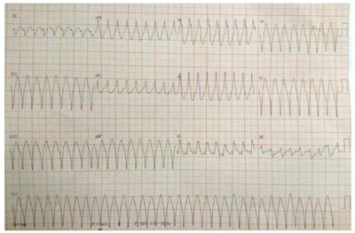
A É um caso de taquicardia ventricular com pulso pelos critérios de Brugada e Vereckei. A paciente deve ser submetida à cardioversão elétrica sincronizada como conduta inicial.
B É um caso de taquicardia ventricular com pulso pelos critérios de Brugada. A paciente deve ser submetida à cardiodesfibrilação como conduta inicial.
C É um caso de taquicardia ventricular do tipo torsades points. A paciente deve ser submetida à cardiodesfibrilação como conduta inicial.
D É um caso de taquicardia supraventricular com aberrância de condução pelos critérios de Brugada e Vereckei. A paciente deve ser submetida à cardioversão elétrica sincronizada como conduta inicial.
E É um caso de taquicardia supraventricular com aberrância de condução pelos critérios de Brugada e Vereckei. A paciente deve ser submetida inicialmente à manobra vagal como tentativa de reversão do ritmo. Caso não haja resposta, deve ser realizada Adenosina endovenosa.
Questão 1221 · Clínica Médica · 4000193941Idosa, 74 anos, previamente portadora de hipertensão arterial, em uso regular de medicamentos, foi admitida no pronto atendimento com quadro de tosse, dispneia e febre termometrada. À ausculta pulmonar, foram notados estertores creptantes em base direita, além de febre (Tax: 38,1°C) e taquipneia (FR: 29 irpm). Foi diagnosticada com pneumonia adquirida na comunidade. De acordo com o diagnóstico mencionado, qual dos parâmetros abaixo não é utilizado nos critérios de internação?
A Ureia sérica.
B Pressão arterial.
C Insuficiência cardíaca.
D Frequência respiratória.
E Idade.
Questão 1222 · Clínica Médica · 4000193940O tratamento de tuberculose pulmonar é longo, e requer acompanhamento para avaliação de progressão da doença, assim como efeitos colaterais dos medicamentos utilizados. À respeito desses medicamentos, qual aquele mais relacionado com o efeito adverso de artralgia e rabdomiólise?
A Rifampcina.
B Isoniazida.
C Pirazinamida.
D Etambutol.
E Etionamida.
Questão 1223 · Clínica Médica · 4000193939Hipotireoidismo subclínico é caracterizado por valor sérico de TSH acima do valor de referência e níveis de hormônio tireoideano dentro do valor de referência. Raramente apresenta sinais e sintomas. De acordo com o hipotireoidismo subclínico, assinale a alternativa que não representa uma necessidade de tratamento com levotiroxina.
A TSH ≥ 10 mIU/L.
B Anticorpos antitireoideanos positivos.
C Dislipidemia.
D Doença arterial coronariana.
E Idade > 65 anos.
Questão 1224 · Clínica Médica · 4000193938Mulher, 43 anos, hipertensa e obesa, em uso regular de Losartana 50mg, duas vezes ao dia, e hidroclorotiazida 25mg, uma vez ao dia, realizou rotina laboratorial, sendo evidenciada hemoglobina glicosilada de 7%, portanto foi diagnosticada com diabetes mellitus. Das classes de hipoglicemiantes abaixo, qual aquela com maior capacidade de levar a eventos de hipoglicemia?
A Sulfonilureia.
B Inibidores da SGLT2.
C Inibidores da DPP4.
D Análogos da GLP-1.
E Biguanida.
Questão 1225 · Clínica Médica · 4000193937Manifestações cutâneas, serosites, alopécia, manifestações neurológicas e outras, podem ser sintomas do lúpus eritematoso sistêmico. Qual o anticorpo mais sensível e o mais específico dessa patologia, respectivamente?
A Anti-Ro e FAN.
B FAN e Anti-SM.
C Anti-CCP e FAN.
D FAN e Anti-CCP.
E FAN e Anti-Ro.
Questão 1226 · Clínica Médica · 4000193936C.M.A, 13 anos, sexo feminino, procurou atendimento no PSF após admissão hospitalar na qual, segundo a paciente, apresentou diagnóstico de febre reumática. Critérios de Jones foram criados para realizar o diagnóstico dessa patologia. De acordo com esses critérios, a paciente deve possuir faringoamigdalite documentada ou ASLO em ascensão, além de manifestações que podem ser classificadas como critério menor ou maior. Das manifestações descritas abaixo, qual a considerada um critério menor?
A Cardite.
B Nódulo subcutâneo.
C Cefaleia.
D Poliartrite migratória.
E Febre.
Questão 1227 · Clínica Médica · 4000193935Mulher, 29 anos, hipertensa, obesa e com história de procuras em pronto-atendimentos por crises álgicas devido nefrolitíase, procura atendimento com quadro de cefaleia. Refere que tem característica latejante, frontotemporal, associada à fotofobia e à fonofobia, além de náuseas. Alega sono satisfatório e nega sintomas como ansiedade e depressão. Apresenta cerca de 07 (sete) episódios ao mês. Nesse caso, das alternativas abaixo, qual a medicação melhor indicada para o tratamento profilático?
A Amitriptilina.
B Nortriptilina.
C Propranolol.
D Flunarizina.
E Topiramato.
Questão 1228 · Tratamento cirúrgico · 4000193934Paciente de 70 anos, tabagista, diabética, obesa, menopausada há 20, anos iniciou com quadro de sangramento vaginal há 03 meses. Na investigação, foi visualizado ao USTV endométrio de 12mm, sendo realizado histeroscopia para complementação diagnóstica. O resultado evidenciou adenocarcinoma endometrioide G1. Qual a conduta seguir?
A Histerectomia subtotal com salpingo-ooforectomia bilateral com coleta do lavado peritoneal.
B Histerectomia total com salpingectomia bilateral e coleta do lavado peritoneal.
C Histerectomia subtotal com salpingo-ooforectomia bilateral, linfadenectomia pélvica e periaórtica.
D Histerectomia total com salpingectomia bilateral, linfadenectomia pélvica e periaórtica.
E Histerectomia total com salpingo-ooforectomia bilateral com coleta do lavado peritoneal.
Questão 1229 · Ginecologia · Obstetrícia · 4000193933Paciente de 25 anos, nuligesta, sem uso de anticoncepção comparece ao consultório ginecológico para exames de rotina, sem queixas. No ultrassom transvaginal foi identi cado em ovário esquerdo a presença de cisto unilocular, conteúdo líquido, de pequeno volume com maior dimensão 1,2cm. Em relação aos cistos foliculares, analise as assertivas e assinale a correta. I. São cistos benignos. II. Na maioria das vezes necessitam de tratamento cirúrgico. III. São mais comuns em mulheres menopausadas. IV. São os mais comuns dos cistos funcionais.
A Estão corretas I e II.
B Estão corretas I, II e III.
C Estão corretas I e IV.
D Está correta apenas a I.
E Estão corretas II, IV.
Revisar: possível letra faltando em enunciado
Questão 1230 · Ginecologia · Obstetrícia · 4000193932Sobre o câncer de mama, assinale a alternativa correta.
A O tamoxifeno tem importante papel na prevenção do câncer de mama, mas não reduz a chance de recidivas.
B O estudo dos linfonodos axilares não tem importância no prognóstico do câncer de mama.
C A mastectomia está indicada em pacientes com esclerodermia ativa, independente do tamanho do tumor.
D As taxas de recorrência são maiores em pacientes idosas do que em pacientes jovens.
E A pesquisa do linfonodo sentinela apresenta altas taxas de falso-negativos, não devendo ser utilizada em lugar da dissecção axilar.
Questão 1231 · Tratamento · 4000193931Paciente de 34 anos, nuligesta, com desejo de gestar nos próximos 06 meses, comparece a consulta ginecológica para avaliação pré-gestacional e com queixa de sangramento vaginal irregular e excessivo há 01 ano. Ao exame clínico e laboratorial não foi evidenciado nenhuma alteração. Ao ultrassom transvaginal foi visualizado útero com volume de 240cm3, com presença de dois miomas: um mioma submucoso de aproximadamente 06 cm e um mioma intramural de aproximadamente 08cm. Qual a conduta mais adequada?
A Usar progestagênio contínuo para diminuição dos miomas e volume menstrual.
B Realizar miomectomias.
C Inserção de DIU de levonogestrel.
D Usar anticoncepcional combinado contínuo.
E Usar análogos de GnRH para controle do volume menstrual.
Questão 1232 · Ginecologia · Obstetrícia · 4000193930Paciente de 28 anos, foi submetida a videolaparoscopia por dor pélvica crônica e infertilidade. Durante a cirurgia foi visualizado que a paciente era portadora de endometriose profunda. Isto quer dizer que:
A A pelve está “congelada”.
B A única solução para o caso é a fertilização in vitro.
C Há acometimento da região retrocervical.
D Há acometimento do reto e sigmoide.
E Há acometimento peritoneal, com focos da doença penetrando mais do que 5mm
Questão 1233 · Ginecologia · Obstetrícia · 4000193929Mulher de 38 anos, procurou o serviço ginecológico para avaliação de amenorreia secundária. Foi realizado teste da progesterona com resultado negativo; realizado teste com anticoncepcional combinado e paciente apresentou uxo menstrual. Exames laboratoriais: BHCG negativo; TSH: 2,3 e T4l: 1,0, Prolactina: 6,0 e FSH: 45,0. Repetido novamente o FSH após 01 mês com valor de 40,0. Diante da hipótese diagnóstica mais provável, assinale a alternativa correta.
A Ao contrário da menopausa natural, não há evidências científicas do impacto dessa doença no humor das pacientes.
B Ao contrário da menopausa natural, o impacto ósseo nessa paciente é inexistente.
C O risco de gestação é extremamente baixo, portanto, em pacientes sem desejo de gestar, não precisamos preocupar com anticoncepção.
D Pacientes com esse quadro clínico, podem apresentar ondas de calor antes da manifestação de irregularidade menstrual.
E Se a terapia de reposição hormonal for indicada, ele deve durar no máximo 05 anos, devido à idade da paciente
Questão 1234 · Ginecologia · Obstetrícia · 4000193928Mulher de 42 anos, com desejo de gestar, procura orientação médica para avaliação da reserva ovariana. A dosagem de quais exames poderiam ajudar na elucidação?
A Progesterona, estradiol no 5º dia do ciclo menstrual.
B FSH, LH, estradiol e hormônio antimulleriano no 14º dia do ciclo menstrual.
C Prolactina e hormônio antimulleriano no 3º dia do ciclo menstrual.
D FSH, estradiol e hormônio antimulleriano no 3º dia do ciclo menstrual.
E Progesterona, FSH no 14º dia do ciclo menstrual.
Questão 1235 · Ginecologia · Obstetrícia · 4000193927Paciente de 60 anos, multigesta, comparece para consulta de rotina e relata perda urinária há alguns anos, não sabe dizer ao certo, se ocorre piora da perda aos esforços. Realizado exame físico onde não foi detectado perda de urina a manobra de valsava. Optado pela realização do estudo urodinâmico que evidenciou pressão de perda aos esforços de 40cmH2O. Qual o provável diagnóstico?
A IU metabólica por defeito muscarínico.
B IU mista com predominância colinérgica.
C IU por defeito esfincteriano da uretra.
D IU associado aos esforços.
E IU por contrações não inibidas do detrusor
Questão 1236 · Ginecologia · Obstetrícia · 4000193926Paciente de 18 anos, nuligesta, refere presença de úlceras genitais há 01 semana com piora do quadro. Após exame clínico, foi constatado o diagnóstico de linfogranuloma venéreo. Indique o agente patogênico envolvido.
A Haemophilus ducreyi.
B Neisseria gonorrhoeae.
C Chlamydia trachomatis.
D Trichomonas vaginalis.
E Ureoplasma urealyticum.
Questão 1237 · Ginecologia · Obstetrícia · 4000193925Gestante é portadora de herpes genital e comparece na consulta com 39 semanas de gestação, relatando presença de lesões perineais confirmadas ao exame clínico. Nesse caso:
A Podemos permitir o parto vaginal e observar o recém-nascido.
B Podemos permitir o parto vaginal e tratar o recém-nascido com aciclovir.
C Indicar cesariana eletiva para proteção do recém-nascido .
D Indicar cesariana apenas se a gestante apresentar amniorrexe prematura.
E Podemos permitir o parto vaginal e tratar o recém-nascido com globulina.
Questão 1238 · Ginecologia · Obstetrícia · 4000193924Secundigesta, com gestação a termo, em trabalho de parto há mais ou menos 10 horas, comunica a equipe de enfermagem dor intensa e súbita em região de baixo ventre. Associado, equipe percebe queda na pressão arterial e sangramento vaginal intenso. Ao toque, observa-se dilatação total com polo cefálico acima do estreito superior. Os batimentos cardíacos fetais não estão audíveis. Qual a melhor conduta?
A Infusão de ocitocina.
B Fórceps de Kielland.
C Fórceps de Simpson.
D Laparotomia.
E Compressão do fundo uterino.
Questão 1239 · Ginecologia · Obstetrícia · 4000193923Gestante de 27 anos, primigesta, IG: 10 semanas, comparece ao pronto atendimento com queixa de sangramento vaginal há 03 dias associado à dor pélvica, adinamia e febre não termometrada. Realizou ultrassonogra a há 02 semanas com gestação em curso, sem alterações. Ao exame físico, evidenciado dor à palpação de baixo ventre, sem sinais de irritação peritoneal, TAX: 38,7º, presença de sangramento vaginal exteriorizando pelo colo associado a material necrótico com odor desagradável, dor à mobilização de colo uterino. O diagnóstico é de:
A Doença inflamatória pélvica.
B Mola hidatiforme.
C Neoplasia de sítio placentário.
D Abortamento infectado.
E Gravidez ectópica infectada.
Questão 1240 · Medicina de Família e Comunidade · 4000193922A Medicina de Família e Comunidade é descrita como a especialidade médica que presta assistência à saúde de forma continuada, integral e abrangente para os pacientes e seus familiares e também para a comunidade. É uma especialidade médica que atua fundamentalmente no nível primário da atenção à saúde. Ainda é uma especialidade desa adora e ao mesmo tempo estimulante para os cuidados continuados. A medicina de Família e Comunidade exige experiência, e a experiência exige ações governadas por princípios fundamentais a serem incorporados na atuação da especialidade. Pensando nos princípios da Medicina de Família e Comunidade, marque a alternativa correta.
A O médico de Família e Comunidade é um clínico que não exige qualificação.
B A atuação do médico de Família e Comunidade é influenciada somente pelo paciente.
C O médico de família e comunidade é o recurso de uma população definida.
D O médico de Família e Comunidade não tem necessidade de fixar na Unidade de Saúde, visto que a rotatividade dos profissionais fazem parte de uma boa dinâmica de condutas.
E A atuação do médico de Família e Comunidade visa o tratamento, individualmente, do paciente.
Questão 1241 · Medicina de Família e Comunidade · 4000193921Em 1990, foram criados os conselhos permanentes de saúde e as conferências de saúde, com a representação dos usuários e com a periodicidade máxima de quatro anos. Os conselhos de saúde são de instância de participação permanente com o caráter deliberativo. As atribuições atuais do Conselho de Saúde estão regulamentadas pela Lei n° 8.142/1990 que define o papel da sociedade na gestão do SUS. Pensando na estratificação dos Conselhos de Saúde, marque a alternativa correta.
A Conselhos Locais de Saúde – Conselhos Municipais de Saúde – Conselhos Distritais de Saúde – Conselhos Estaduais de Saúde – Conselho Nacional de Saúde.
B Conselhos Locais de Saúde – Conselhos Distritais de Saúde – Conselhos Municipais de Saúde – Conselhos Estaduais de Saúde – Conselho Nacional de Saúde.
C Conselhos Distritais de Saúde – Conselhos Locais de Saúde – Conselhos Municipais de Saúde – Conselhos Estaduais de Saúde – Conselho Nacional de Saúde.
D Conselhos Locais de Saúde – Conselhos Distritais de Saúde – Conselhos Municipais de Saúde – Conselho Nacional de Saúde – Conselhos Estaduais de Saúde.
E Conselhos Distritais de Saúde – Conselhos Estaduais de Saúde – Conselhos Municipais de Saúde – Conselhos Distritais de Saúde – Conselho Nacional de Saúde.
Questão 1242 · Medicina de Família e Comunidade · 4000193920A prática do médico de Medicina de Família e Comunidade, exige ferramentas que facilitem suas intervenções. Saber quando e como se aproximar das famílias passa ser uma habilidade essencial para essa prática. A compreensão da abordagem familiar contribuirá no plano de prevenção, da investigação clínica e do tratamento dos casos, tanto simples como os mais complexos. Umas das ferramentas que são utilizadas de rotina na prática do médico de Família e Comunidade é o Genograma que abrange um conhecimento maior daquela história familiar. Dentre os vários símbolos para uma construção do Genograma, marque a alternativa que corresponde à figura abaixo.
A Ruptura.
B Divórcio.
C Foco de atenção nesta pessoa.
D Relação conflituosa.
E Distanciamento.
Questão 1243 · Medicina de Família e Comunidade · 4000193919A hipertensão Arterial Sistêmica é uma doença crônica definida por níveis pressóricos, em que os benefícios do tratamento (não medicamentoso e/ ou medicamentoso) superam os riscos. Trata-se de uma condição multifatorial, que depende de fatores genéticos, ambientais e sociais, caracterizada por elevação persistente da Pressão Arterial (PA). Nas unidades básicas de saúde é trabalho em equipe multidisciplinar colocando os quadros dos pacientes e conduzindo da melhor forma possível. Visto que cada pro ssional tem seu papel específico. Marque a alternativa correta referente às ações específicas do médico.
A Responsável por diagnóstico, estratificação de risco e orientações das condutas terapêuticas não farmacológicas e farmacológicas e avaliação clínica dos pacientes, pelo menos duas vezes por ano.
B Responsável por diagnóstico, estratificação de risco e orientações das condutas terapêuticas farmacológicas e avaliação clínica dos pacientes, pelo menos uma vez por ano.
C Responsável por estratificação de risco e orientações das condutas terapêuticas não farmacológicas e farmacológicas e avaliação clínica dos pacientes, pelo menos quatro vezes por ano.
D Responsável por estratificação de risco e orientações das condutas terapêuticas não farmacológicas e farmacológicas e avaliação clínica dos pacientes quando necessário.
E Responsável por orientações das condutas terapêuticas não farmacológicas e farmacológicas e avaliação clínica dos pacientes, pelo menos três vezes por ano.
Questão 1244 · Medicina de Família e Comunidade · 4000193918Paciente, 26 anos de idade, realiza procura médica na Unidade Básica de Saúde devido apresentar quadros de diarreias há 14 dias, a mesma relata que está fazendo uso de soro de reidratação, e ingerindo líquidos o dia todo. O quadro teve início sem mesmo a paciente perceber algo diferente em sua rotina alimentar. Relata estar preocupada por não obter melhoras. Diarreia é o aumento do volume das fezes, diminuição na consistência ou aumento de aquosidade e/ou aumento da frequência das evacuações. A diarreia possui várias causas como, uma delas, alimentos contaminados. Os sintomas incluem desconforto abdominal, cólica, plenitude, excesso de atos, náusea e vômitos. Pode haver presença de sangue ou pus na diarreia, o que chamamos de disenteria. Pensando na classificação da diarreia, marque a alternativa correta referente ao quadro da paciente apresentado.
A Diarreia aguda.
B Diarreia crônica.
C Diarreia persistente.
D Disenteria.
E Diarreia Subaguda.
Questão 1245 · Medicina de Família e Comunidade · 4000193917A noti cação compulsória é a comunicação obrigatória à autoridade de saúde, realizada pelos médicos, pro ssionais de saúde ou responsáveis pelos estabelecimentos de saúde, públicos ou privados, sobre a ocorrência de suspeita ou confirmação de doença, agravo ou evento de saúde pública, descritos no anexo, podendo ser imediata ou semanal. Sua utilização efetiva permite a realização do diagnóstico dinâmico da ocorrência de um evento na população, podendo fornecer subsídios para explicações causais dos agravos de noti cação compulsória, além de vir a indicar riscos aos quais as pessoas estão sujeitas, contribuindo assim, para a identi cação da realidade epidemiológica de determinada área geográ ca. Leia a frase abaixo e marque a alternativa correta. São aquelas já conhecidas e que estavam controladas, mas que voltam a representar ameaças para a saúde, devido a um aumento em sua incidência em um determinado local ou uma população específica.
A Doenças emergentes.
B Doenças reermegentes.
C Doenças negligenciadas.
D Doenças erradicadas.
E Doenças agudas.
Revisar: possível letra faltando em enunciado
Questão 1246 · Medicina de Família e Comunidade · 4000193916No Brasil, embora o aumento de acesso ao exame preventivo ter ocorrido, foi observado o quanto as mulheres reduziram a mortalidade por câncer de colo de útero. As unidades básicas de saúde devem priorizar o acesso para aquelas mulheres que nunca zeram exames, tranquilizar as mulheres preocupadas ou que pretendem fazer exames de rotina com uma frequência desnecessária de acordo com as evidências cientí cas. O médico de Família e Comunidade tem suas contribuições especí cas dentro de uma equipe de saúde. Marque a alternativa correta sobre as atribuições médicas.
A Realizar consulta médica e encaminhar para realização de preventivo e exames de mama.
B Emitir prescrição do tratamento medicamentoso, obrigatoriamente, mesmo sabendo que não seja a melhor conduta.
C Solicitar exames complementares para todos os pacientes.
D Referenciar, quando necessário, as usuárias a serviço de referência de média e alta complexidade, respeitando fluxos de referências e contrarreferências locais e mantendo sua responsabilização pelo acompanhamento dessa usuária.
E Avaliar quadro clinico , emitindo diagnóstico e orientar a paciente que não terá necessidade de acompanhamento em sua unidade, a mesma poderá ser acompanhada com o diagnóstico em qualquer unidade da cidade.
Revisar: possível letra faltando em enunciado
Questão 1247 · Medicina de Família e Comunidade · 4000193915No Brasil, denomina se visita domiciliar remete à Estratégia Saúde da Família (ESF), que viabiliza a Atenção Primária à Saúde no Brasil e assume papel fundamental na organização do trabalho de suas equipes. Para a realização dessa atividade, são necessários planejamento, execução, registro de dados e avaliação. O registro é considerado um critério de avaliação da assistência prestada nos serviços de saúde, aspecto relevante da informação sobre o processo de trabalho desenvolvido pelos pro ssionais. A visita domiciliar é considerada a atividade externa à unidade de saúde mais desenvolvida pelas equipes de saúde. Ela se caracteriza por utilizar uma tecnologia leve, permitindo o cuidado à saúde de forma mais humana, acolhedora, estabelecendo laços de con ança entre os pro ssionais e os usuários, a família e a comunidade, ampliando o acesso da população às ações da Saúde em um dos pontos de sua rede de atenção: o domicílio, a unidade residencial de determinada família. Em relação às atribuições médicas da visita domiciliar, marque a alternativa correta.
A Esclarecer a família sobre os problemas de saúde e construir plano de cuidados para a pessoa enferma.
B Não há necessidade de estabelecer comunicação participativa com a família, com a comunidade e sim individualmente com o paciente.
C Avaliar de modo individual a situação da pessoa enferma e emitir diagnóstico.
D Realizar consulta médica para aqueles que apresentam incapacidade de se deslocarem até a UBS e também podem ser realizadas consultas principalmente para os que não apresentam dificuldade de locomoção.
E Não há necessidade de registrar os atendimentos realizados nos prontuários.
Questão 1248 · Tabaco · Dependência de Tabaco · 4000193914A Organização Mundial da Saúde aponta que o tabaco mata mais de 8 milhões de pessoas por ano. Mais de 7 milhões dessas mortes resultam do uso direto desse produto, enquanto cerca de 1,2 milhão é o resultado de não-fumantes expostos ao fumo passivo. A OMS a rma ainda que cerca de 80% dos mais de um bilhão de fumantes do mundo vivem em países de baixa e média renda onde o peso das doenças e mortes relacionadas ao tabaco é maior (WHO, 2020). Nas unidades básicas de saúde é oferecido, gratuitamente, o tratamento para tabagista. As medicações vem com a orientação médica para cada paciente e assim são explicadas e distribuídas nos encontros para os pacientes. Pensando no tratamento do tabagismo, marque a alternativa correta.
A 10 ou mais cig./dia. 1º cigarro até 10 minutos após acordar. Teste de Fagerström ≥ 3. Tentaram sem sucesso parar somente com abordagens não medicamentosas.
B 20 ou mais cig./dia. 1º cigarro até 30 minutos após acordar. Teste de Fagerström ≥ 5. Tentaram sem sucesso parar somente com abordagens não medicamentosas.
C 15 ou mais cig./dia. 1º cigarro até 25 minutos após acordar. Teste de Fagerström ≥ 5. Tentaram sem sucesso parar somente com abordagens não medicamentosas.
D 20 ou mais cig./dia. 1º cigarro até 15 minutos após acordar. Teste de Fagerström ≥ 5. Tentaram sem sucesso parar somente com abordagens não medicamentosas.
E 10 ou mais cig./dia. 1º cigarro até 30 minutos após acordar. Teste de Fagerström ≥ 5. Tentaram sem sucesso parar somente com abordagens não medicamentosas.
Questão 1249 · Medicina de Família e Comunidade · 4000193913Um estudo sobre a mortalidade infantil foi desenvolvido em Paracatu-MG, obtendo os seguintes resultados: Analisando o gráfico, marque a resposta correta.
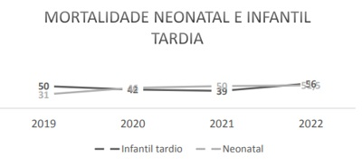
A O período infantil tardio é o mais afetado por causas genéticas e não ambientais, apesar de não apresentar um coeficiente crescente de óbito.
B A regularidade nos óbitos do período infantil tardio mostra a necessidade de intervenções políticas na atenção a esse grupo.
C O período neonatal é o mais afetado por causas genéticas e não ambientais e apresenta um coeficiente crescente de óbito.
D O desenvolvimento de atividades de aconselhamento genético para evitar óbitos no período infantil tardio é a medida mais eficaz de prevenção.
E Pelo número de óbitos observado no gráfico, não é necessário intervenções preventivas para o controle dos mesmos.
Questão 1250 · Medicina de Família e Comunidade · 4000193912Um novo método para diagnóstico de sí lis foi testado com os seguintes resultados: sensibilidade de 96% e especi cidade de 87%. O que é possível dizer sobre os valores V+ e F+ e sobre a precisão do teste, respectivamente, nesse estudo?
A 87, 96, 91,5%.
B 4, 13, 100%.
C 13, 4, 98%.
D 96, 13, 65%.
E 96, 87, 91,5%.
Questão 1251 · Medicina de Família e Comunidade · 4000193911Realizou-se estudo com emparelhado de dois grupos. Foram identi cados 117 pessoas com diabetes mellitus e submetidas a amputações de extremidades inferiores, na rede de serviços do Município de São Paulo, estes foram comparados com 234 pessoas com diabetes mellitus, mas não submetidas a amputações. As variáveis consideradas no emparelhamento foram sexo, idade e duração da doença. Características sociodemográ cas, de hábitos de vida, clínicas e relativas à educação em saúde em diabetes mellitus foram incluídas. Inicialmente, foi realizada análise univariada, verificando a presença de associações entre amputações e variáveis exploratórias. Foi utilizado modelo de regressão logística condicional para a análise multivariada, com adoção da medida de associação especí ca. (GAMBA, 2004) Com base no trecho do artigo, é possível dizer que se trata de um desenho do tipo:
A Coorte.
B Caso-controle.
C Transversal.
D Ecológico.
E ECR.
Revisar: possível letra faltando em enunciado
Questão 1252 · Sopro na inf ância · 4000193910O sopro cardíaco pediátrico decorre de turbulência do uxo sanguíneo, podendo ser siológico ou patológico. É considerado sugestivo de sopro patológico:
A Sopro de Still: audível no início da sístole, musical ou vibratório, melhor audível em bordo esternal esquerdo baixo, que reduz de intensidade quando o paciente muda da posição supina para sentada, comum em todas as faixas etárias.
B Sopro sistólico aórtico: sopro sistólico de ejeção audível em bordo esternal direito alto, mais frequente em crianças mais velhas e adolescentes.
C Sopro de fluxo pulmonar: sopro sistólico de ejeção, crescendo e decrescendo, audível em bordo esternal esquerdo alto, que diminui de intensidade quando o paciente está deitado e levanta.
D Sopro sistólico supraventricular: sopro audível em região supra clavicular, de ejeção, curto, que reduz intensidade com hiperextensão dos ombros e é mais frequente em crianças mais velhas e adolescentes.
E Presença de sopro holossistólico, sopro diastólico, de intensidade maior ou igual a 3+/6+, presença de segunda bulha anormal ou que aumenta de intensidade com a criança sentada ou em pé.
Questão 1253 · Pediatria · 4000193909Paciente escolar, 6 anos, foi levada à consulta por sua mãe, queixando que seu broto mamário apareceu há 6 meses e agora está com pelos grossos nos grandes lábios. Nega outras queixas. Nega sangramento vaginal. Ao exame: Tanner M3P2, altura 1,40m ( acima do percentil 95), PA 100x60, FC 80 bpm. Aparelho respiratório: murmúrio vesicular siológico, sem ruídos adventícios; aparelho cardiovascular: ritmo cardíaco regular em 2 tempos, abdome indolor e sem visceromegalias. Idade óssea de 10 anos. Qual o provável diagnóstico da puberdade precoce dessa paciente?
A Puberdade precoce central.
B Puberdade precoce periférica.
C Puberdade incompleta.
D Puberdade precoce tipo telarca isolada.
E Puberdade precoce tipo pubarca isolada.
Questão 1254 · Pediatria · 4000193908Paciente de 4 meses de vida, em aleitamento materno exclusivo, tem história de regurgitações pós- alimentares, com choro e irritabilidade. A mãe refere que o filho apresentou alguns episódios de arqueamento do tronco. O pediatra veri cou desaceleração do ganho ponderal. Com base nesse caso hipotético, assinale a alternativa correta.
A Uma endoscopia digestiva normal afastaria a doença do refluxo gastroesofágico.
B Indica-se a exclusão dietética da proteína do leite de vaca para a mãe, por pelo menos duas semanas.
C Deve ser iniciado o tratamento com inibidor de bomba de próton.
D A phmetria está indicada por diagnosticar até os refluxos não ácidos.
E O leite de soja é uma opção terapêutica.
Questão 1255 · Diagnóstico · 4000193907Paciente masculino, 1 ano de vida, é trazido ao ambulatório de pediatria para consulta de puericultura. Mãe refere que o lho recusa muito os alimentos e, quando come, aceita muito pouco. Nega vômitos, uso de medicamentos. Hábito intestinal: uma evacuação com fezes endurecidas a cada quatro dias. Nega controle es ncteriano. Exame físico: bom estado geral, corado, IMC percentil 3 para a idade; abdome: globoso, ácido, indolor à palpação. O sinal de alarme a ser considerado no diagnóstico diferencial da constipação intestinal é:
A Saciedade precoce.
B Recusa alimentar.
C Incontinência retentiva.
D Retardo de crescimento.
E Não há sinal de alarme neste caso.
Questão 1256 · Pediatria · 4000193906Pré-escolar de 4 anos de idade, é atendido na UPA com quadro de diarreia aquosa e volumosa há 5 dias, com restos alimentares, gordurosa, sem muco ou sangue. Mãe relata episódio semelhante há I5 dias. Ao exame físico, abdômen distendido e timpânico, indolor à palpação profunda e super cial, com ruídos hidroaéreos presentes. No contexto do caso apresentado, o diagnóstico mais provável e sua complicação são:
A Amebíase/ abscessos internos.
B Ascaridíase/ obstrução intestinal.
C Tricuríase/ Prolapso retal.
D Enterobíase/ Insônia.
E Giardíase/ Desnutrição energético- proteica.
Questão 1257 · Pediatria · 4000193905Pré-escolar, três anos e cinco meses, sexo feminino, vem apresentando dores ósseas difusas iniciadas há três meses, que não melhoram com o uso de analgésicos comuns, associados à febre baixa intermitente, cefaleia, vômitos frequentes, anorexia, perda ponderal de quatro quilos e irritação com prejuízo de sono. A partir do resultado do hemograma, foi diagnosticado "anemia discreta” tendo sido prescrito sulfato ferroso por seis meses. Há um mês, a mãe notou palidez que vem se acentuando. Exame físico: irritabilidade, fáceis de sofrimento, di culdade para deambular pela dor, hipocorada +/4+, adenomegalias cervicais, axilares e inguinais móveis, broelásticas, não coalescentes, medindo de 0,5 a 1 cm de diâmetro, fígado palpável a 5 cm, do rebordo costal direito, baço a 4 cm do rebordo costal esquerdo, petéquias em membros inferiores e sopro sistólico +/4+ pancardíaco, sem irradiação. A principal hipótese diagnóstica é:
A Neuroblastoma.
B Febre reumática.
C Leucemia linfoide aguda.
D Artrite idiopática juvenil.
E A principal hipótese diagnóstica se mantém de anemia ferropriva que já está sendo tratada.
Questão 1258 · Pediatria · 4000193904Paciente pré-escolar de três anos e 6 meses, é levado ao pediatra por apresentar febre alta há 10 dias. Exame físico: edema palpebral, petéquias no palato, exsudato amigdaliano, adenomegalia cervical anterior e posterior, fígado palpável a 4 cm do rebordo costal direito. O exame laboratorial indicado para a confirmação do diagnóstico é:
A Aspirado de medula óssea.
B Sorologia para vírus da dengue.
C Bacterioscopia e cultura da secreção faríngea.
D Teste rápido para pesquisa de estreptococo grupo A.
E Sorologia para vírus de Epstein Barr.
Questão 1259 · Pediatria · 4000193903Pré escolar de 3 anos, previamente hígida, há oito meses vem apresentando episódios febris recorrentes, que duram em torno de 3 a 7 dias, com intervalos regulares de 3 a 6 semanas. A febre é alta, custa a ceder com antitérmicos usuais. Durante o quadro, a criança ca prostrada, incomodada. Por vezes, surge exsudação nas amígdalas palatinas, com pequenas úlceras orais e linfadenopatias cervicais. Traz exames realizados durante o episódio febril, que mostram discreta leucocitose, VHS e proteína C reativa elevados. Entre os episódios, a investigação laboratorial é normal. Já recebeu diversos cursos de antibióticos, sem modificação do período febril. Frequenta escola de educação infantil regularmente desde os 9 meses de vida. Em relação à hipótese diagnóstica mais provável, afirma-se que: I. Trata-se da síndrome febril recorrente, mais comum em criança. II. A maioria dos pacientes respondem efetivamente a uma única dose de prednisona. III. A frequência e a intensidade dos episódios tendem a diminuir à medida que avança a idade da criança. Estão corretas as afirmativas:
A I e II, apenas.
B I e III , apenas.
C II e III , apenas.
D I, II e III.
E Todas as alternativas estão incorretas.
Revisar: possível letra faltando em enunciado
Questão 1260 · Pediatria · 4000193902Lactente de 5 meses e 20 dias de vida, comparece sem queixas ao consultório médico com história de internações devido à infecção urinária alta aos 20 dias e aos 3 meses. Com 5 meses, apresentou quadro de febre intermitente, inapetência e vômitos, com exame qualitativo de urina que apontou nitrito (+), esterase leucocitária (+) e urocultura colhida por sondagem vesical com mais de 100 000 UFC/ ml de E. coli, tendo completado o tratamento com antimicrobiano com remissão dos sintomas. Realizada ultrassonogra a durante a última internação que não veri cou alterações. Como forma de estender a investigação, assinale a alternativa correta quanto ao exame padrão-ouro para essa situação.
A Cintilografia renal com DMSA.
B Urografia excretora.
C Uretrocistografia miccional.
D Ressonância magnética de abdome.
E Tomografia computadorizada de abdome e pelve.
Questão 1261 · Pediatria · 4000193901Lactente masculino, de um mês e meio, com vômitos não biliosos após mamadas há 02 semanas, pior há 01 semana. Nega febre ou diarreia, mamando vorazmente ao seio materno. Sobre essa situação, analise as afirmativas abaixo e marque a opção correta. I. Geralmente a alteração não está presente desde o nascimento. II. Esperamos laboratorialmente a presença de acidose metabólica. III. O melhor exame para confirmar o diagnóstico é a ultrassonografia.
A As afirmativas I e II são verdadeiras. A afirmativa III é falsa.
B As afirmativas I e III são verdadeiras. A afirmativa II é falsa.
C As afirmativas II e III são verdadeiras. A afirmativa I é falsa.
D As afirmativas I, II e III são verdadeiras.
E As afirmativas I, II e III são falsas.
Questão 1262 · Suporte Básico de Vida · 4000193900Você encontra uma criança de dez meses de idade cianótica nos braços de sua mãe, que está desesperadamente pedindo socorro, em um espaço público. Durante o pedido de ajuda, você observa que a bebê torna-se desacordada. Existem apenas leigos nos arredores, sendo você o único pro ssional de saúde quali cado para realizar um atendimento de emergência inicial no local. Após a verificação da segurança do local, quais os procedimentos indicados, de forma sistemática, segundo as atuais recomendações internacionais, que devem ser feitos na ordem em que são apresentados?
A Checar responsividade da bebê com estímulos nos ombros e, se arresponsiva, solicitar ajuda para acionamento do serviço médico, checar pulso e respiração em um minuto e, caso estejam ausentes, iniciar reanimação cardiopulmonar pelas compressões torácicas, realizando após a ventilação boca a boca, numa relação de 30 compressões para 2 ventilações.
B Checar responsividade da bebê com estímulos nos pés e, se arresponsiva, solicitar ajuda para acionamento do serviço médico, checar pulso e respiração em dez segundos e, caso estejam ausentes, iniciar reanimação cardiopulmonar pela ventilação de resgate (2 ventilações boca a boca) e, após, compressões torácicas, numa relação de 30 compressões para 2 ventilações.
C Checar responsividade da bebê com estímulos nos ombros e, se arresponsiva, solicitar ajuda para acionamento do serviço médico, checar pulso e respiração em um minuto e, caso estejam ausentes, iniciar reanimação cardiopulmonar pela ventilação de resgate (2 ventilações boca a boca) e, após, compressões torácicas, numa relação de 15 compressões para 2 ventilações.
D Checar responsividade da bebê com estímulos nos pés e, se arresponsiva, solicitar ajuda para acionamento do serviço médico, checar pulso e respiração em dez segundos e, caso estejam ausentes, iniciar reanimação cardiopulmonar pela compressão torácica, realizando após a ventilação boca a boca, numa relação de 15 compressões para 2 ventilações.
E Checar responsividade da bebê com estímulos nos pés e, se arresponsiva, solicitar ajuda para acionamento do serviço médico, checar pulso e respiração em dez segundos e, caso estejam ausentes, iniciar reanimação cardiopulmonar pela compressão torácica, realizando, na sequência, ventilação boca a boca, numa relação de 30 compressões para 2 ventilações.
Revisar: possível letra faltando em enunciado
Questão 1263 · Pediatria · 4000193899Menino, 40 dias, em aleitamento materno exclusivo, tem diagnóstico de galactosemia, confirmado pela dosagem enzimática da Galactose-1-fosfato Uridil Transferase (GALT). A orientação alimentar baseada no diagnóstico é:
A Leite materno exclusivo.
B Fórmula infantil de seguimento.
C Fórmula de soja.
D Fórmula infantil de partida.
E Leite de cabra.
Questão 1264 · Dermatologia · 4000193898Marcelo, um homem de 32 anos, procurou atendimento na Unidade Básica de saúde referindo caroços no braço direito. Ele a rma que, há 1 mês, surgiu uma lesão na mão direita e, posteriormente, cresceram outros nódulos pelo antebraço ipsilateral. No exame físico, você percebe nódulos, em trajeto linear, pelo antebraço direito. Pensando na principal hipótese diagnóstica, assinale a alternativa correta.
A A doença pode ser transmitida por gatos e o agente etiológico é
B O tratamento deve ser realizado com penicilina benzatina por três semanas
C Por se tratar de uma infecção fúngica, o itraconazol faz parte da primeira linha de tratamento.
D A hemocultura pode ajudar na confirmação diagnóstica.
Questão 1265 · Neurologia · 4000193897Mulher, 30 anos, procura atendimento por queixa de cefaleia há 8 horas. A paciente não tem antecedente de cefaleia, nem de outras patologias, e faz uso apenas de anticoncepcional oral combinado. Refere que a cefaleia é de forte intensidade e atingiu máxima intensidade em poucos segundos. No momento da avaliação apresenta dor pulsátil, unilateral, associada a foto e fonofobia, náuseas e vômitos com intensidade 8/10. Ao exame físico, a paciente apresenta PA 120 x 80 mmHg, FC 80 bpm, FR 18 irpm. Está consciente e orientada, sem dé cit visual ou de nervos cranianos. Não há dé cit de força ou sensibilidade, os reflexos estão preservados e a marcha, sem alterações. Há rigidez de nuca à avaliação. Considerando o caso clínico, quais são a principal hipótese diagnóstica e a conduta?
A Enxaqueca sem aura e uso de topiramato.
B Hemorragia subaracnóidea e TC de crânio.
C Meningite viral e iniciar aciclovir imediatamente.
D Enxaqueca sem aura e uso de sumatriptano.
Questão 1266 · Reumatologia · 4000193896Mulher de 31 anos procura a unidade básica de saúde com relato de mal-estar e dor nas mãos e punhos há 2 meses. Nega comorbidades prévias. Ao exame físico: úlcera indolor em palato duro e artrite de 2ª e 3ª metacarpofalangeanas bilaterais e punhos. Foram solicitados exames laboratoriais que mostram: Hb 12,1 mg/dL, leucócitos 2.500/mm³, plaquetas 112.000/ mm³, creatinina 0,8 mg/dL, ureia 30 mg/dL, PCR 7 mg/L (VN = 5 mg/L), VHS 36 mm (VN = 20 mm), fator reumatoide reagente, FAN padrão nuclear pontilhado grosso 1/320. Qual é o anticorpo esperado nessa paciente?
A Anti-CCP.
B Anti-Ro.
C Anti-Sm.
D Anti-Scl-70.
Questão 1267 · Cardiologia · 4000193895Uma paciente de 64 anos foi encaminhada ao ambulatório de cardiologia para ajuste de seus medicamentos. Iniciou o tratamento de hipertensão há 10 anos, após internação por um episódio de urgência hipertensiva, quando apresentou níveis pressóricos de 190 x 110 mmHg. Também faz tratamento para dislipidemia, descoberta na ocasião. Está em uso de enalapril 20 mg/dia, anlodipina 10 mg/dia e sinvastatina 40 mg/dia. Seus exames de sangue revelam um colesterol total = 180 mg/dl; HDL colesterol = 57 mg/dl; LDL colesterol = 102 mg/dl; VLDL colesterol = 70 mg/dl e triglicerídeos = 105 mg/ dl. Exame físico: PA =141 x 92 mmHg, FC: 78 bpm. O eletrocardiograma mostra sobrecarga de câmaras esquerdas. Ausculta cardíaca e pulmonar sem alterações. Assinale a melhor conduta para esse caso:
A Manter os anti-hipertensivos nas doses atuais. Aumentar a dose da sinvastatina para 80 mg/dia.
B Associar hidroclorotiazida 25 mg e trocar sinvastatina por rosuvastatina 10 mg.
C Aumentar a dose do enalapril para 40 mg/dia e trocar a sinvastatina por ezetimibe 10 mg.
D Aumentar a dose do enalapril para 40 mg/dia e trocar a sinvastatina por rosuvastatina 40 mg.
Questão 1268 · Gastroenterologia · 4000193894Paciente do sexo feminino, 25 anos, procurou atenção básica por apresentar, há 4 meses, diarreia com muco e sangue. Refere perda de 8 kg no período, associado à dor lombar, pior no início do dia com melhora progressiva ao longo do tempo. Usuária de anticoncepcional oral e levotiroxina. Refere ser sedentária e fumar de 2-3 cigarros/dia. Trouxe alguns exames que evidenciaram: Hb = 10 mg/dL; leucócitos = 18000/mm³ ; plaquetas: 400000/mm³; PCR = 100 mg/ dL; VHS = 50mm. A respeito da hipótese diagnóstica mais provável, assinale a alternativa correta.
A O hábito de fumar é um fator de risco para o diagnóstico em questão.
B A paciente está fora da faixa etária mais comumente afetada pela doença.
C O uso de anticoncepcional oral teoricamente seria um fator protetor para o diagnóstico em questão.
D A doença em questão afeta de maneira muito similar ambos os gêneros.
Questão 1269 · Inf ectologia · 4000193893Um menino de cinco anos de idade é levado ao hospital por apresentar febre elevada, mialgia, cefaleia e vômitos. Seus pais informam que o início dos sintomas ocorreu há dois dias. O exame físico evidenciou os seguintes achados: mau estado geral, apatia, frequência cardíaca = 129bpm, pressão arterial = 60x25mmHg, saturação periférica de oxigênio = 88%, sinal de Brudzinski presente e petéquias em membros inferiores. Não havia icterícia e a ausculta cardiopulmonar era normal. Assinale a alternativa com a melhor hipótese diagnóstica e o tratamento.
A Dengue e hidratação intravenosa com soro fisiológico.
B Meningite meningocócica e ceftriaxona.
C Influenza
D Leptospirose e penicilina cristalina.
Questão 1270 · Hematologia · 4000193892Paciente do sexo masculino, 41 anos, previamente hígido, procurou UBS por queixa de astenia a alguns meses. Além disso, queixa-se de indisposição gástrica intermitente, acompanhada de parestesia em extremidades. No hemograma, apresenta uma Hb 7,8g/dl, acompanhada de VCM: 120, sem outras alterações. Qual é o diagnóstico mais provável dessa paciente?
A Falta de fator intrínseco
B Deficiência de ácido fólico
C Deficiência de ferro
D Síndrome mielodisplásica
Questão 1271 · Nef rologia · 4000193891Mulher, 23 anos, hígida, é atendida por queixa de febre, calafrios, disúria e dor lombar direita há 3 dias, com piora progressiva. Ao exame, apresenta-se subfebril (T 37,5oC) – PA 124x72mmHg – FC 88bpm – FR 15ipm – Sat 98% - Ausculta pulmonar e cardíaca sem alterações – Dor a punhopercussão lombar direita. Coletados exames laboratoriais que evidenciam: Creatinina 0,8mg/dL – Ureia 34mg/dL – Na 141 mEq/L – K 4,4mEq/L – Hb 13,5 g/dL – Leucócitos 13.500 (Neutró los 8.200 - Linfócitos 2.300 - Eosinó los 870) – Urina: Leucócitos 45.000 – Hemácias 6.000 – Proteína ausente – Urocultura: coletada. Paciente foi liberada com tratamento ambulatorial com uso de ciprofloxacino. Após 5 dias, ela retorna com recrudescência da febre que havia cessado, associada a rash cutâneo eritematoso. São coletados novos exames laboratoriais que evidenciam: Creatinina 2,3mg/dL – Ureia 86mg/dL – Na 140 mEq/L – K 4,6mEq/L – Hb 13,0 g/dL – Leucócitos 12.600 (Neutró los 6.200 - Linfócitos 1.980 - Eosinó los 2.970) – Urina: Leucócitos 24.000 – Hemácias 6.000 – Proteína ausente – Urocultura (coletada na visita anterior): E. coli sensível a ciprofloxacino, nitrofurantoína, sulfametoxazol-trimetoprim. Qual é a hipótese diagnóstica para o quadro clínico?
A Infecção urinária
B Glomerulonefrite difusa aguda
C Nefrite intersticial aguda
D Necrose tubular aguda
Questão 1272 · Pneumologia · 4000193890Paciente de 60 anos, tabagista 50 maços/ano, queixa-se de dispneia para caminhar 100 metros. Possui uma espirometria que evidencia uma relação VEF1/CVF pós-broncodilatador < 0,7. Ao avaliar as possibilidades terapêuticas, são medidas capazes de reduzir a mortalidade na doença pulmonar obstrutiva crônica, EXCETO?
A Oxigenoterapia domiciliar.
B Cessação tabágica.
C Antimuscarínico de ação longa.
D Cirurgia de redução volumétrica pulmonar.
Questão 1273 · Tratamento da Esquizof renia · Esquizof renia · 4000193889Convenciona-se chamar de esquizofrenia refratária aqueles quadros que não respondem adequadamente ao tratamento medicamentoso após duas tentativas terapêuticas bem conduzidas, envolvendo, ao menos, 1 antipsicótico atípico. Assinale a alternativa que representa a medicação de escolha para os quadros esquizofrênicos refratários.
A Aripiprazol
B Carbamazepina
C Clozapina
D Clorpromazina
Questão 1274 · Cirurgia · 4000193888Paciente masculino, 39 anos, admitido no pronto atendimento, vítima de ferimento por arma de fogo, conforme imagem em anexo. Ao exame: Vias aéreas pérvias, MV +, sem ruídos adventícios, SatO2: 96%, FC: 98 bpm, PA: 130 x 80 mmHg, FR 20 irpm, ECG 15, pupilas isofotorreagentes. Abdome ácido, doloroso em hipocôndrio esquerdo, sem sinais de peritonite. Orifício de saída do projétil na região lombar direita. Qual é a conduta nesse caso?

A Laparotomia exploradora.
B Drenagem torácica esquerda seguida de laparotomia exploradora.
C Laparoscopia diagnóstica e terapêutica.
D Solicitar tomografia de tórax e abdome.
Questão 1275 · Cirurgia · 4000193887Paciente feminina, de 90 anos, admitida no pronto-socorro com queixa de dor abdominal no quadrante superior direito há 2 dias, associada a náuseas, hiporexia e febre aferida de 39º C. Ao exame: REG, corada, hidratada, febril, ictérica ++/4. Abdome globoso, ácido, doloroso em hipocôndrio direito, Murphy negativo. PA: 110 X 70 mmHg, FC: 88 bpm, FR: 18 irpm. Familiar refere que a paciente realizou ultrassonogra a há aproximadamente 5 anos, com o diagnóstico de “pedras na vesícula”, mas, pela idade, não foi indicada a cirurgia. Realizado exames laboratoriais: Hb: 12,8 mg/dl; Leuco: 17.400/mm³ (2% de bastões), PCR: 110 mg/dL, Amilase: 132 UI/L, TGO = 77 U/L; TGP = 98 U/L; GGT = 445 U/L; FA = 221 U/L, BT: 8,9 mg/dL; BD: 7,8 mg/dL. INR: 1,0. Considerando as informações desse caso, assinale a alternativa que indica corretamente a principal hipótese diagnóstica e a conduta.
A Colecistite aguda - Colecistectomia videolaparoscópica.
B Colecistite aguda - Antibioticoterapia.
C Colangite aguda – Ultrassonografia de abdome.
D Colangite aguda – Antibioticoterapia e CPRE (colangiopancreatografia retrógrada endoscópica).
Questão 1276 · Cirurgia · 4000193886Paciente feminina, 56 anos, diabética em uso de metformina, IMC: 32 kg/m², comparece à UBS (Unidade Básica de Saúde) para consulta de rotina. Sem queixas no momento. Ao exame físico, apresenta, à manobra de Valsalva, abaulamento redutível em região inguinal direita. Em relação ao caso clínico descrito, qual é a melhor conduta?
A Encaminhar a paciente para ambulatório de Cirurgia geral, para programar cirurgia eletiva.
B Encaminhar a paciente para o pronto-socorro, para avaliação da Cirurgia geral, uma vez que há indicação de cirurgia de urgência.
C Orientar a paciente que não há indicação de tratamento cirúrgico, uma vez que não apresenta sintomas.
D Solicitar ultrassonografia da parede abdominal para confirmar o diagnóstico.
Questão 1277 · Cirurgia · 4000193885Paciente feminina, 70 anos, diabética insulinodependente, comparece ao pronto-socorro com queixa de disúria e saída de ar ao urinar, há 5 cincos dias. Histórico de histerectomia há 30 anos por miomatose. Refere internação hospitalar, há 4 meses, por uma “infecção intestinal” tratada com antibióticos endovenosos. Ao exame: BEG, corada, hidratada, eupneica, afebril. Abdome ácido, pouco doloroso em região hipogástrica, sem sinais de peritonite. Considerando a principal hipótese diagnóstica para o caso descrito, assinale a opção que contém o exame de primeira escolha para confirmação diagnóstica.
A Urina I
B Tomografia de abdome e pelve.
C Colonoscopia
D Enema opaco
Questão 1278 · Cirurgia · 4000193884Paciente do sexo masculino, 21 anos, vítima de acidente motociclístico (moto x poste), atendido pela equipe do resgate e encaminhado ao pronto-socorro. Ao exame: intubação orotraqueal (realizada pela equipe de resgate devido ao rebaixamento do nível de consciência no local), com colar cervical e imobilizado na prancha, sem lesões hemorrágicas externas, murmúrio vesicular presente bilateral, SatO₂ = 97%; FC = 88 bpm; PA = 110 x 70 mmHg. Apresenta equimose periorbitária esquerda e escoriações no hipocôndrio direito. Realizou radiogra a de tórax e de pelve na sala de trauma, que não apresentaram alterações, e o FAST, conforme figura abaixo. Considerando o caso descrito, qual é a conduta mais adequada para esse paciente?

A Laparotomia exploradora.
B Laparoscopia diagnóstica.
C Tomografia de crânio e coluna cervical.
D Tomografia de crânio, coluna cervical, abdome e pelve
Questão 1279 · Cirurgia · 4000193883Lactente com 30 dias de vida, nascido a termo, outrora saudável, é trazido ao pronto atendimento com quadro de choro há 8 horas, associado à piora do estado geral, vômitos biliosos e parada de eliminação de gases e fezes. Ao exame clínico, está em mau estado geral, taquicardíaco, taquipneico, com abdome muito distendido, tenso e doloroso. Há sangue em dedo de luva ao toque retal. Considerando o diagnóstico mais provável, qual é a melhor conduta?
A Enema guiado por ultrassom
B Jejum, nutrição parenteral total, antibioticoterapia, hidratação e reposição hidroeletrolítica
C Laparotomia de emergência e devolvulação
D Laparotomia e ressecção de divertículo hemorrágico
Questão 1280 · Cirurgia · 4000193882Homem de 62 anos, dor abdominal de início abrupto, há 6 horas, com irradiação para dorso e ancos. Ao exame físico, encontra-se em regular estado geral, FC = 102 bpm, PA = 122 x 81 mmHg, hidratado, hipocorado +/4+, eupneico. Refere ser hipertenso em uso regular de medicação e tabagista. Ao exame físico abdominal, apresenta massa abdominal pulsátil à palpação, medindo cerca de 5cm de diâmetro. Diante do quadro descrito acima, qual é a melhor conduta?
A Laparotomia exploradora
B Ultrassonografia de abdome e pelve
C Tomografia computadorizada de abdome e pelve com contraste
D Dosagem de amilase, lipase, bilirrubina total e frações e fosfatase alcalina.
Questão 1281 · Cirurgia · 4000193881Homem de 27 anos, com história prévia de asma, refere dispneia de início abrupto enquanto colhia ores no parque do Ibirapuera. Ao exame físico, trata-se de um homem magro, em regular estado geral, taquidispneico, falando frases entrecortadas, com saturação de O2 de 84% em ar ambiente. FC = 136 bpm, PA = 86 x 60 mmHg. À ausculta pulmonar, o MV é diminuído à direita, sem ruídos adventícios, com timpanismo à percussão. Considerando o quadro descrito, qual é a melhor conduta?
A Corticoterapia endovenosa e broncodilatador inalatório
B Toracocentese à direita
C Drenagem torácica à direita
D Intubação orotraqueal
Questão 1282 · Cirurgia · 4000193880Homem de 36 anos envolveu-se em uma discussão e recebeu um golpe de faca na altura do 6º espaço intercostal, na linha axilar anterior esquerda. Ao exame físico, encontra-se consciente e orientado. Apresenta ferimento linear de aproximadamente 3 cm no hemitórax à esquerda. À ausculta pulmonar, o murmúrio vesicular parece discretamente diminuído à esquerda, sem ruídos adventícios e com som claro pulmonar à percussão. FC = 103 bpm, PA = 115x70 mmHg, abdome depressível, flácido e indolor à palpação. Considerando o caso descrito acima, qual destas condutas não está indicada?
A FAST
B Laparoscopia diagnóstica
C Exploração digital do ferimento
D Radiografia de tórax
Questão 1283 · Cirurgia · 4000193879Homem de 79 anos vai ao médico para consulta de rotina. Refere jato urinário fraco e um pouco de hesitação miccional, sem outros sintomas e sem prejuízo a sua qualidade de vida. Ao toque retal, a próstata é lisa, broelástica e regular, com peso estimado, ao toque, de 60g. Submetido à análise de PSA, cujo resultado foi de 5,1 ng/dL, e à biópsia prostática, cujo escore de Gleason foi 3+3=6. Considerando o quadro descrito acima, qual é a melhor conduta para esse paciente?
A Terapia de deprivação androgênica
B Prostatectomia radical
C Tratamento expectante com vigilância ativa
D Braquiterapia
Questão 1284 · Ginecologia · 4000193878Paciente de 28 anos vem à UBS para mostrar o resultado de uma colpocitologia oncótica que realizou no mês anterior. O resultado do exame trouxe um ASC-US (atipia de células escamosas de significado indeterminado). Você checou o prontuário da paciente e visualizou que o exame coletado há 12 meses também indicava a mesma alteração. Diante desse caso, qual é a conduta adequada?
A Repetir a citologia em 6 meses.
B Encaminhar a paciente para colposcopia.
C Solicitar captura híbrida para HPV.
D Realizar cauterização do colo uterino.
Questão 1285 · Ginecologia · 4000193877Paciente de 32 anos vem à consulta ginecológica para orientação contraceptiva. Refere que nunca utilizou métodos contraceptivos, exceto camisinha, mas que deseja iniciar um método. Ela tem ciclos regulares, com uxo normal e que duram 4 dias, sem cólicas. O único antecedente que possui é de uma trombose de MID há 4 anos. Diante do quadro da paciente, qual destas orientações deve ser dada?
A Ela não pode usar nenhum método contendo hormônios devido ao episódio de trombose prévia.
B O único método seguro para essa paciente é o DIU de cobre
C Como já faz 4 anos desde o episódio de trombose, não há restrição para o uso de métodos combinados.
D O DIU de levonorgestrel é uma opção para o caso dessa paciente.
Questão 1286 · Ginecologia · 4000193876Paciente de 22 anos vem ao ambulatório com queixa de corrimento vaginal. Refere um corrimento branco, uido e com odor fétido. Nega prurido ou outros sintomas associados. No exame especular, não foi evidenciada nenhuma alteração, exceto pelo corrimento. Na avaliação da secreção, o Whi test foi positivo e o pH vaginal encontra-se em 5,5. Diante do quadro da paciente, qual é o achado esperado no exame a fresco da secreção?
A Presença de hifas e esporos.
B Protozoário flagelado móvel.
C Células escamosas repletas de anaeróbios.
D Lactobacilos em excesso.
Questão 1287 · Ginecologia · 4000193875Uma mulher de 58 anos de idade vem à UBS trazendo sua mamogra a de rastreamento. Ela nega doenças prévias e refere que nunca apresentou alteração nos exames. A mamogra a teve como resultado um BI- RADS 4. Diante desse quadro clínico, qual é o significado do resultado e qual deve ser a conduta?
A Lesão provavelmente benigna. Repetir o exame em 6 meses
B Lesão suspeita de malignidade. Realizar biópsia.
C Lesão provavelmente maligna. Realizar setorectomia.
D Lesão inconclusiva. Realizar ultrassonografia para complementar o diagnóstico.
Questão 1288 · Ginecologia · 4000193874Mulher de 26 anos vem ao PS com queixa de dor abdominal há 3 dias. Refere que a dor vem piorando e que notou a presença de um corrimento vaginal com cheiro ruim. É usuária de DIU de cobre há 3 anos e sua última menstruação foi há 7 dias. Ao exame físico, está em bom estado geral, temperatura 39 graus, apresenta dor à palpação em andar inferior do abdome, com descompressão brusca em fossa ilíaca esquerda. No exame especular, tem corrimento amarelado, com odor fétido. Tem dor à mobilização do colo uterino e massa palpável em anexo esquerdo. Diante do quadro dessa paciente qual é a conduta mais adequada?
A Retirar o DIU imediatamente e realizar tratamento com ceftriaxone + doxiciclina ambulatorialmente.
B Internar a paciente para realização de antibioticoterapia endovenosa e reavaliar o quadro em 48 horas.
C Internar a paciente, retirar o DIU e introduzir antibioticoterapia endovenosa.
D Encaminhar paciente para cirurgia de drenagem do abscesso.
Questão 1289 · Obstetrícia · 4000193873Durante o pré-natal de uma gestante, 2G1PN, com 10 semanas, é realizado teste rápido para sí lis que resulta positivo. A paciente refere tratamento na gestação anterior com três doses de penicilina benzatina, mas o parceiro não foi tratado. Nega queixas ou alergias. Com base nesse resultado, nos dados da entrevista clínica e no resultado do teste rápido, assinale a opção correta.
A Como a paciente já foi tratada na gestação anterior, trata-se de cicatriz sorológica e não há necessidade de tratamento na gestação atual.
B Deve-se solicitar VDRL e aguardar o resultado para iniciar o tratamento.
C Deve-se iniciar imediatamente o tratamento com penicilina benzatina para a gestante e o parceiro e solicitar VDRL para o casal.
D Deve-se iniciar imediatamente o tratamento com penicilina benzatina para a gestante e solicitar VDRL para o parceiro.
Questão 1290 · Obstetrícia · 4000193872Paciente, parda, 22 anos, primigesta, passou pelo acolhimento da unidade básica de saúde um dia após ter descoberto que estava grávida. O enfermeiro realizou o acolhimento e classi cou a gestante como risco intermediário. A situação que indicou essa classificação foi:
A IMC de 40 kg/m².
B Asma controlada, sem necessidade de medicação contínua.
C Hipertensão arterial crônica.
D Doença falciforme.
Questão 1291 · Obstetrícia · 4000193871Secundigesta, 35 anos, 28 semanas de gestação, relatando aumento dos níveis pressóricos há 1 semana. Paciente nega queixas ou comorbidades. Ao exame: BEG, edema +2/4, corada, PA 145 x 90 mmHg, confirmado após 4 horas. Realizada proteinúria de ta reagente +2. Qual deve ser a conduta para essa gestante?
A Prescrever metildopa e encaminhar a paciente para a maternidade para realizar exames laboratoriais e de vitalidade fetal para afastar situação de gravidade. Na ausência de situação de gravidade, encaminhar para acompanhamento ambulatorial no pré-natal de alto risco.
B Solicitar exames laboratoriais, ultrassom obstétrico com Doppler ambulatorialmente e orientar retorno em 15 dias com exames.
C Prescrever metildopa, solicitar exames laboratoriais e de vitalidade para serem realizados ambulatorialmente e encaminhar a paciente para acompanhamento ambulatorial no pré-natal de alto risco.
D Internar a paciente, prescrever metildopa e corticoide e programar resolução da gestação em 48 horas.
Questão 1292 · Obstetrícia · 4000193870Gestante de 39 anos de idade, 2G0P1A, vem à maternidade com atraso menstrual de 2 semanas, sangramento vaginal de pequena quantidade e dor abdominal iniciada hoje. Ao exame: BEG, descorada +/4, PA 110/70 mmHg, FC 90 bpm, abdome com dor leve em hipogástrio, descompressão brusca negativa. Toque vaginal com colo impérvio e sangramento coletado em pequena quantidade, sem sangramento ativo. Realizado BHcg quantitativo com resultado no valor de 1750 mUI/dL. Ultrassom transvaginal evidenciou cavidade uterina vazia e anexos sem alterações. Diante das informações apresentadas, qual é a conduta a ser realizada?
A Metotrexato intramuscular
B Laparoscopia
C Repetir BHcg em 48 horas
D Ultrassonografia em 15 dias
Questão 1293 · Obstetrícia · 4000193869Primigesta, 28 anos, 10 semanas de gestação, sem comorbidades prévias, vem ao retorno de pré-natal trazendo exames de rotina do primeiro trimestre. Os exames apresentam-se normais, exceto pela glicemia de jejum no valor de 135 mg/dl. Qual é a conduta obstétrica indicada para essa paciente?
A Solicitar nova glicemia de jejum para confirmar o diagnóstico
B Solicitar curva glicêmica imediatamente.
C Iniciar tratamento para diabetes prévio à gestação
D Iniciar tratamento para diabetes gestacional.
Questão 1294 · Pediatria · 4000193868Você avalia um neonato com 18 horas de vida que apresenta icterícia zona 2, sem outras alterações no exame físico. Ele nasceu termo, de 39 semanas, com peso adequado para idade gestacional e está mamando bem. A mãe é O negativo, com Coombs direto negativo, e o RN é A negativo, com Coombs direto negativo. Qual é a principal hipótese diagnóstica?
A Icterícia fisiológica
B Icterícia por incompatibilidade ABO
C Icterícia por incompatibilidade Rh
D Icterícia do leite materno
Questão 1295 · Pediatria · 4000193867Na UTI neonatal, está internado um RN do sexo feminino que nasceu de 30 semanas de idade gestacional, com peso de nascimento de 1200g. Considerando os dados fornecidos e analisando o gráfico abaixo, podemos classificar o RN em:

A RN pré-termo moderado, muito baixo peso, pequeno para idade gestacional
B RN pré-termo moderado, extremo baixo peso, adequado para idade gestacional
C RN muito pré-termo, muito baixo peso, adequado para idade gestacional.
D RN muito pré-termo, extremo baixo peso, pequeno para idade gestacional.
Questão 1296 · Pediatria · 4000193866Após ouvirem no rádio que a cidade onde moram apresentou alguns casos de sarampo, a família Silva procurou a Unidade de Saúde para se vacinar. São eles: - João Silva, 32 anos, não tem carteira de vacinação. - Maria Silva, 28 anos, não tem carteira de vacinação. - Júnior Silva, 12 anos, caderneta de vacinação completa até os 4 anos. - Ana Silva, 8 meses, caderneta de vacinação completa até agora. Sobre a vacinação da família Silva contra o sarampo, podemos afirmar:
A João precisa ser vacinado com duas doses da vacina tríplice viral.
B Maria precisa ser vacinada com três doses da vacina tríplice viral.
C Júnior precisa receber uma dose de reforço da tetra viral.
D Ana precisa receber a dose zero da tríplice viral e, depois, seguir o calendário vacinal normal.
Questão 1297 · Pediatria · 4000193865Em 2022, entrou em vigor a lei nº 14.154 que ampliou o rastreamento de doenças no Programa Nacional de Triagem Neonatal. A introdução das doenças será feita em etapas. Na primeira etapa, está prevista a introdução da triagem para:
A Toxoplasmose congênita
B Síndrome de Edwards
C Adrenoleucodistrofia
D Síndrome de Gilbert
Questão 1298 · Pediatria · 4000193864Menino de 6 anos é trazido para consulta com queixa de “intestino preso”. Sua mãe relata que ele evacua 2 vezes na semana, com fezes endurecidas e que chegam a entupir o vaso sanitário. Além disso, sente muita dor, por isso se esconde quando tem vontade de evacuar. Nos últimos 6 meses, vem perdendo fezes na cueca diariamente. De hábitos alimentares, gosta muito de leite e come pouca fruta e verduras. Seu peso, estatura e desenvolvimento estão adequados para a idade. Ao exame físico, tem fecaloma palpável e, ao toque, fezes presentes no reto. Qual é a primeira medida a ser tomada para essa criança?
A Solicitar parasitológico de fezes.
B Iniciar medicamento laxativo.
C Solicitar radiografia de abdome contrastado.
D Encaminhar à psicoterapia.
Questão 1299 · Pediatria · 4000193863Uma criança de 4 anos chega ao pronto socorro com história de febre há 5 dias, tosse, coriza e inapetência. Ao exame físico, encontra-se afebril com FC: 110 bpm, FR: 44 irpm, presença de retração subcostal, com oximetria de 97% em ar ambiente. A ausculta do aparelho respiratório revela estertores nos em campo médio direito. Diante desse caso hipotético, indique o diagnóstico e a conduta apropriada.
A Pneumonia, tratamento com amoxicilina por 7 dias.
B Pneumonia grave, tratamento com ceftriaxone intramuscular.
C Pneumonia atípica, tratamento com claritromicina.
D Pneumonia grave, tratamento com penicilina cristalina endovenosa em regime de internação hospitalar
Questão 1300 · Pediatria · 4000193862A mãe de um lactente de 4 meses que recebe aleitamento materno deseja retornar ao trabalho e solicita orientações sobre a alimentação de seu filho. Ela relata que deseja manter o aleitamento, mas não sabe como fazê-lo. De acordo com as recomendações do Ministério da Saúde, indique as orientações apropriadas:
A Como o lactente tem 4 meses, deve-se iniciar a oferta de sucos e, depois, papa de frutas, o leite materno deve ser dado nos horários em que o lactente estiver com a mãe.
B Deve-se manter o aleitamento materno nos horários em que a mãe estiver com o lactente e começar com fórmula nos horários em que a mãe estiver trabalhando.
C Deve-se orientar a ordenha do leite materno com conservação apropriada, pelo menos, quinze dias antes de voltar a trabalhar, mantendo o aleitamento materno.
D Deve-se complementar as mamadas com fórmula quinze dias antes da mãe começar a trabalhar para que o lactente vá se acostumando. Depois, ordenhar o leite e oferecer na mamadeira, complementando com fórmula.
Questão 1301 · Pediatria · 4000193861Lactente de 8 meses, faz acompanhamento pediátrico de rotina e comparece ao pronto-socorro devido à febre de até 39°C há 3 dias, vômitos e diminuição do volume urinário. O exame físico não evidencia foco infeccioso. Ao exame físico, encontra-se toxemiado, desidratado, taquicárdico e com discreta distensão abdominal. O exame de sedimento urinário revela leucocitúria e nitrito positivo. Diante desse caso hipotético, indique a conduta apropriada:
A Iniciar tratamento para infecção urinária com antibioticoterapia oral e solicitar ultrassonografia de rins e vias urinárias.
B Orientar a mãe que o quadro é de bacteriúria assintomática e que a conduta deve ser expectante.
C Indicar internação e iniciar antibioticoterapia endovenosa, após a coleta de urocultura por método apropriado.
D Solicitar urocultura e, se vier alterada, iniciar antibioticoterapia oral.
Questão 1302 · Pediatria · 4000193860Você atende uma menina de 4 anos de idade na UBS em consulta de rotina. Durante a anamnese você constata que ela ingere bebidas açucaradas diariamente e come “salgadinhos” nos intervalos das refeições. Quando retorna da escola, permanece em casa brincando com telas e não gosta de brincar ao ar livre. Não se observam alterações ao exame físico e os dados antropométricos revelam 20 Kg e estatura de 100 cm. De acordo com os dados antropométricos e utilizando o gráfico abaixo, indique a classificação nutricional dessa criança, referente ao índice de massa corpórea (IMC): https://www.sbp.com.br/fileadmin/user_upload/Curva_de_IMC._OMS._Meninas__de_0_a_5_anos._Escore_ Z.pdf

A Risco de sobrepeso
B Sobrepeso
C Obesidade
D Obesidade grave
Questão 1303 · Pediatria · 4000193859Uma criança de três anos vem apresentando febre de difícil controle há seis dias e manchas na pele. Recebeu 4 dias de amoxicilina sem melhora devido à amigdalite. Ao exame físico, apresenta exantema difuso não pruriginoso em tronco e membros, hiperemia conjuntival bilateral sem secreção, linfonodo de 2 cm em região cervical anterior esquerda e lábios hiperemiados e rachados. De acordo com a hipótese diagnóstica mais provável, indique a conduta mais apropriada para o tratamento dessa criança:
A Antibioticoterapia de amplo espectro
B Imunoglobulina endovenosa
C Vitamina A
D Antitérmico
Questão 1304 · Medicina Preventiva · 4000193858Durante uma visita domiciliar, a Agente Comunitária de Saúde (ACS) Leila foi acompanhada por dois estudantes de Medicina que faziam o Internato Rural na pequena cidade de Santo Antônio. Ao chegarem na casa, localizada em uma das melhores regiões do bairro, foram recebidos pela sorridente Dona Cassandra, uma idosa de 68 anos, antiga líder da comunidade. Há cerca de 5 anos, seu esposo, Sr. José Flávio, de 75 anos, sofreu um acidente automobilístico e acabou perdendo uma das pernas, cando, desde então, sob cuidados intensivos de Dona Cassandra. Durante a visita, a ACS e os estudantes caram boquiabertos ao ver como a idosa mantinha a casa de 4 cômodos em perfeito estado de conservação, além d e observarem como o Sr. José Flávio estava bem cuidado. Apesar de não saber ler, Dona Cassandra mostrou com maestria quais eram as medicações que deveria oferecer ao marido, bem como as medicações que ela faz uso para tratamento da hipertensão. Por m, o Sr. José Flávio, também muito sorridente, a rmou que se não fosse pela falta da perna, tudo estaria perfeito. Ao nal da visita, os dois estudantes e a ACS resolveram aplicar a Escala de Coelho e Savassi para o caso da visita domiciliar. Assinale a alternativa que mostra com que intuito a escala foi aplicada e o resultado obtido.
A Avaliação das Atividades da Vida Diária: 3 - Dependente para TRÊS atividades.
B Avaliação da Vulnerabilidade Familiar: 6 - Vulnerabilidade familiar menor.
C Avaliação das Atividades da Vida Diária: 5 - Dependente para CINCO atividades.
D Avaliação da Vulnerabilidade Familiar: 9 - Vulnerabilidade familiar máxima
Questão 1305 · Medicina Preventiva · Epidemiologia · Legislação sobre registros públicos Lei n 60151973 · 4000193857No nal do dia de atendimento na Unidade Básica Vila Madalena, a Dra. Marlúcia é chamada pela enfermeira Carla para comparecer à casa do Sr. José, um morador da região que acabara de falecer. Ele era acompanhado por toda a Equipe de Saúde da Família desde que sofreu um Acidente Vascular Encefálico, há 6 anos, que o deixou acamado e completamente dependente para as atividades básicas e instrumentais da vida diária. A morte ocorreu durante o dia, junto da família. Acerca da emissão da Declaração de Óbito (DO), como a Dra. Marlúcia deve proceder?
A Deve emitir a DO da própria Unidade de Saúde e solicitar que a enfermeira Carla leve a via amarela para os familiares.
B Não deve emitir a DO, já que não presenciou o óbito, solicitando que o cadáver seja encaminhado ao Serviço de Verificação de Óbitos (SVO) do Município, para ser submetido ao exame necroscópico por patologista, que determinará a causa mortis e se responsabilizará pela emissão da DO.
C Deve emitir a DO, após exame direto do corpo, caso não sejam encontradas evidências de morte por causa externa ou suspeita, já que o paciente apresentava condição de saúde conhecida pela equipe e estava em acompanhamento na UBS. Após a emissão, a via rosa deve ser arquivada no prontuário do paciente na Unidade Básica de Saúde.
D Deve solicitar que a Enfermeira Carla emita a DO, após exame direto do corpo, pois se trata de paciente cujo estado de saúde é conhecido por toda a equipe, portanto todos estão legalmente aptos a emitir esse documento.
Questão 1306 · Medicina Preventiva · 4000193856Em um estudo de coorte, realizou-se ao longo de 10 anos o acompanhamento de uma população de 800 indivíduos para observar a incidência de neoplasias cutâneas naqueles expostos diariamente a longos períodos sob o sol. Dos 300 indivíduos que tinham altos níveis de exposição solar, 50 desenvolveram algum tipo de câncer de pele ao longo da observação. Por outro lado, nos 500 que não se expunham ao sol de forma prolongada ao longo do dia, 20 desenvolveram doenças malignas da pele. Diante disso, assinale a alternativa que apresenta a principal medida de associação a ser calculada nesse tipo de estudo e seu respectivo valor aproximado.
A OR
B RR (Risco relativo) = 4,2.
C OR (Odds ratio) = 0,2.
D RR (Risco relativo) = 0,25.
Questão 1307 · Medicina Preventiva · 4000193855O genograma é um dos principais instrumentos de abordagem familiar utilizados na Atenção Primária à Saúde (APS). Uma das mais importantes habilidades para confeccioná-lo, é reconhecer sua simbologia e o que ela significa. Observe os cinco símbolos abaixo. Após avaliá-los, relacione com a coluna abaixo, que contém os significados possíveis, e assinale a alternativa que contém a adequada correspondência. A - Relação conflituosa B - Homem C - Abuso de álcool ou drogas D - Divórcio E - Relação de proximidade
A I - B; II - D; III - E; IV - A; V - C.
B I - C; II - E; III - A; IV - D; V - B.
C I - C; II - A; III - D; IV - E; V - B.
D I - B; II - D; III - A; IV - E; V - C.
Questão 1309 · Medicina Preventiva · 4000193853Acerca dos níveis de prevenção em saúde, baseados no ideário mais atual no assunto, mas também nas ideias centrais do modelo de Leavell & Clark, assinale a alternativa correta:
A A prevenção quinquenária debruça-se sobre os cuidados e medidas preventivas empreendidas sobre o cuidador. A prevenção do adoecimento dele, sobretudo do ponto de vista mental, acaba por funcionar como uma via de mão dupla, em que aquele que cuida tem sua saúde colocada em evidência e, a partir disso, aquele que recebe os cuidados se beneficia, pois um cuidador saudável exerce sua função com maior aptidão, resultando em menores índices de iatrogenias.
B Diante de um paciente com hipertensão arterial sistêmica, o controle da ingesta de sal e o estímulo à prática diária de atividades físicas enquadram-se como medidas de prevenção primária
C Crianças e adolescentes são o principal grupo-alvo das medidas de prevenção quaternária, pois são a população sob maior risco de hipermedicalização, portanto intervenções em saúde são mais danosas do que benéficas.
D Os rastreios ou
Questão 1310 · Medicina Preventiva · 4000193852O Programa Saúde na Hora, lançado pela Secretaria de Atenção Primária à Saúde (APS) do Ministério da Saúde (Saps/MS) em 2019, trouxe uma grande revolução no funcionamento do nível primário de atenção em nosso país. Acerca desse programa, assinale a alternativa incorreta:
A Atualmente, o programa conta com quatro modalidades, entre elas, a Unidade de Saúde da Família (USF) com funcionamento mínimo de 75 horas semanais com Saúde Bucal, estando aberta à população por 15 horas diárias ininterruptas, de segunda-feira a sexta-feira, ou funcionamento de 5 horas aos sábados e/ou domingos.
B Entre os objetivos do programa, podemos listar o oferecimento de suporte aos municípios para o enfrentamento da Emergência de Saúde Pública de Importância Internacional causada pelo SARS- CoV-2.
C Caso haja interesse por parte do município em aderir ao programa, ele deve ter unidade de saúde cadastrada no Cadastro Nacional de Estabelecimentos de Saúde (CNES) e quantitativo mínimo de equipes exigido para o formato de funcionamento escolhido.
D Como forma de incentivar os municípios a aderirem ao programa, o Governo Federal estabeleceu incentivo financeiro para aqueles que fizerem parte desse novo projeto, contudo o fato do valor de incentivo ser o mesmo, independentemente da modalidade escolhida, foi alvo de duras críticas por parte dos gestores municipais.
Questão 1311 · Medicina Preventiva · 4000193851Você trabalha como médico em uma Unidade Básica de Saúde do interior desde que terminou sua Residência em Medicina de Família e Comunidade, há cerca de 4 anos. Ao longo desse tempo, criou vínculos com a comunidade e acompanhou diversas famílias. Ao nal do dia de atendimento, quando estava de saída, você é abordado por Dona Terezinha, paciente pertencente a sua equipe, esposa do Sr.Galvão, também seu paciente, falecido há 1 ano em decorrência de um acidente automobilístico. Ela solicita acesso ao prontuário do marido, alegando ter direito às informações médicas do esposo. Diante dessa situação, tendo por base o Código de Ética Médica (CEM) do Conselho Federal de Medicina (CFM) do Brasil, qual deverá ser sua conduta?
A Oferecer acesso ao prontuário, já que se trata de solicitação do cônjuge.
B Declarar impedimento, já que não existem motivos para quebra do sigilo nessa situação.
C Fornecer cópia do prontuário, já que o paciente é falecido, não implicando essa ação em quebra do sigilo.
D Declarar impedimento, pois, como a causa-base da morte foi externa, apenas a justiça pode oferecer acesso à esposa, e a outros familiares, ao prontuário.
Questão 1312 · Medicina Preventiva · 4000193850Analise as três situações abaixo: I - Casal oriundo da Venezuela instala-se no Brasil e estabelece moradia no estado de Roraima. A mulher está grávida e passa a ter seu acompanhamento pré-natal feito em uma Unidade Básica de Saúde próxima de sua casa. II - Idoso com problemas de acuidade visual é avaliado na Atenção Primária à Saúde e é suspeitado o diagnóstico de catarata. Ele, então, é encaminhado ao centro de especialidades médicas, passa por consulta oftalmológica e tem seu diagnóstico de catarata confirmado. Está com cirurgia de facoemulsi cação agendada para daqui a três semanas. III - Em razão do período de colheita do café, de forma a facilitar o acesso dos trabalhadores nela envolvidos, os pro ssionais de uma Unidade Básica de Saúde que apresenta mais da metade da população adscrita empregada na lavoura cafeeira, decide ampliar o horário de funcionamento da unidade, abarcando parte do período noturno três vezes na semana. Assinale a alternativa que contém os três princípios doutrinários do Sistema Único de Saúde (SUS) que foram empregados em cada uma das situações descritas:
A I - Universalidade; II - Hierarquização; III - Longitudinalidade.
B I - Integralidade; II - Controle Social; III - Universalidade.
C I - Universalidade; II - Integralidade; III - Equidade.
D I - Equidade; II - Acesso; III - Universalidade.
Questão 1313 · Medicina Preventiva · 4000193849A Vigilância Sanitária é um dos componentes da Vigilância em Saúde, apresentando um definidas. Tendo isso em vista, são ações da Vigilância Sanitária, exceto:
A Controle regular e fiscalização de serviços de hemoterapia.
B Pulverização de inseticidas contra o mosquito
C Visita às fábricas produtoras de equipamentos médicos.
D Fiscalização de estabelecimentos que comercializam produtos alimentícios.
Questão 1319 · Crise Única e Crise Sintomática Aguda Provocada · Complicações e Prognóstico · Convulsão · 4000193714Mulher, 20 anos de idade, dá entrada na Unidade de Pronto Atendimento duas horas após episódio de crise tônico-clônica generalizada. Refere ser o segundo episódio, tendo o primeiro ocorrido há dois meses. Nega comorbidades, trauma, uso de álcool, tabaco ou drogas ilícitas. Faz uso apenas de contraceptivo oral. Ao exame, apresenta-se em bom estado geral, sinais vitais estáveis. Exame segmentar e neurológico sem achados. Realizada tomografia computadorizada de crânio sem alterações. Diante do caso clínico, com relação ao diagnóstico mais provável, pode-se afirmar:
A Durante ou após uma crise, pode ocorrer morte súbita inesperada decorrente de apneia ou arritmia.
B As crises sempre ocorrem após um fator desencadeante, como a estimulação luminosa intermitente.
C Apesar de haver interferência na qualidade de vida a mortalidade é equiparável à da população geral.
D As crises geralmente deixam sequelas neurológicas, levando a déficit cognitivo.
Questão 1320 · Neuroimagem em Epilepsia · Eletroencef alograma · 4000193713Mulher, 20 anos de idade, dá entrada na Unidade de Pronto Atendimento duas horas após episódio de crise tônico-clônica generalizada. Refere ser o segundo episódio, tendo o primeiro ocorrido há dois meses. Nega comorbidades, trauma, uso de álcool, tabaco ou drogas ilícitas. Faz uso apenas de contraceptivo oral. Ao exame, apresenta-se em bom estado geral, sinais vitais estáveis. Exame segmentar e neurológico sem achados. Realizada tomografia computadorizada de crânio sem alterações. Com base no quadro descrito, indique o exame complementar mais adequado neste momento:
A Ressonância nuclear magnética de crânio.
B Eletroencefalograma.
C Angiotomografia computadorizada de crânio.
D Exame de líquor.
Questão 1321 · Interações Medicamentosas e Associações · 4000193712Mulher, 20 anos de idade, dá entrada na Unidade de Pronto Atendimento duas horas após episódio de crise tônico-clônica generalizada. Refere ser o segundo episódio, tendo o primeiro ocorrido há dois meses. Nega comorbidades, trauma, uso de álcool, tabaco ou drogas ilícitas. Faz uso apenas de contraceptivo oral. Ao exame, apresenta-se em bom estado geral, sinais vitais estáveis. Exame segmentar e neurológico sem achados. Realizada tomografia computadorizada de crânio sem alterações. Indique a melhor conduta terapêutica a ser realizada, neste momento, na paciente:
A Aguardar a realização do exame complementar para prescrição de fármaco.
B Expectante, sendo prescindível o início de medicação anticonvulsivante.
C Prescrever diazepam 10mg, via intravenosa, como primeira escolha medicamentosa.
D Iniciar anticonvulsivante, considerando o uso do contraceptivo oral na escolha do fármaco.
Questão 1322 · Arterite de Células Gigantes · Cef aleias Secundárias · Diagnóstico · 4000193711Mulher, 70 anos de idade, procura atendimento clínico por quadro de cefaleia intensa em região temporal, há 4 meses. Queixa-se ainda de fadiga importante, perda da acuidade visual e perda ponderal não aferida. Ao exame, apresentase em regular estado geral, emagrecida, subfebril; demais sinais vitais estáveis. Apresenta alodínia em região de couro cabeludo e claudicação de mandíbula. Considerando o caso clínico descrito, indique o diagnóstico mais provável para o paciente:
A Neuromielite óptica.
B Arterite de células gigantes
C Cefaleia em salvas.
D Nevralgia do nervo trigêmeo.
Questão 1323 · Arterite de Células Gigantes · Diagnóstico · 4000193710Mulher, 70 anos de idade, procura atendimento clínico por quadro de cefaleia intensa em região temporal, há 4 meses. Queixa-se ainda de fadiga importante, perda da acuidade visual e perda ponderal não aferida. Ao exame, apresentase em regular estado geral, emagrecida, subfebril; demais sinais vitais estáveis. Apresenta alodínia em região de couro cabeludo e claudicação de mandíbula. Indique o exame padrão-ouro para o diagnóstico mais provável:
A Ressonância magnética de crânio.
B Tomografia computadorizada de crânio.
C Biópsia da artéria temporal.
D Eletroencefalograma.
Questão 1324 · Arterite de Células Gigantes · Manif estações clínicas · Tratamento · 4000193709Mulher, 70 anos de idade, procura atendimento clínico por quadro de cefaleia intensa em região temporal, há 4 meses. Queixa-se ainda de fadiga importante, perda da acuidade visual e perda ponderal não aferida. Ao exame, apresentase em regular estado geral, emagrecida, subfebril; demais sinais vitais estáveis. Apresenta alodínia em região de couro cabeludo e claudicação de mandíbula. Frente ao caso, indique a opção terapêutica mais adequada:
A Tramadol e oxigenioterapia.
B Analgésico comum e escalonar para opioides, conforme resposta.
C Carbamazepina, oxcarbamazepina ou gabapentina.
D Corticoterapia, imunossupressores e/ou imunobiológicos.
Questão 1325 · Animais peçonhentos · 4000193708Mulher, 24 anos de idade, é atendida na Unidade de Pronto Atendimento 20 minutos após acidente na praia com um animal hidrozoário conhecido como caravela-portuguesa ( extensas placas urticariformes lineares em região posterior do tórax. Diante do caso e considerando as orientações do Ministério da Saúde, Indique a substância mais adequada a ser usada sobre a área afetada, ainda no local do acidente:
A Água mineral.
B Urina.
C Água de coco.
D Água do mar.
Questão 1326 · Animais peçonhentos · 4000193707Mulher, 24 anos de idade, é atendida na Unidade de Pronto Atendimento 20 minutos após acidente na praia com um animal hidrozoário conhecido como caravela-portuguesa ( extensas placas urticariformes lineares em região posterior do tórax. Diante do caso e considerando as orientações do Ministério da Saúde, Identi que complicações que mais comumente se associam ao acidente com o animal peçonhento envolvido no caso:
A Convulsões e hemólise.
B Paraplegia e diarreia.
C Arritmia e anafilaxia.
D Necrose e insuficiência renal aguda.
Questão 1327 · Animais peçonhentos · 4000193706Mulher, 24 anos de idade, é atendida na Unidade de Pronto Atendimento 20 minutos após acidente na praia com um animal hidrozoário conhecido como caravela-portuguesa ( extensas placas urticariformes lineares em região posterior do tórax. Diante do caso e considerando as orientações do Ministério da Saúde, Indique a conduta mais adequada, neste momento:
A Usar ácido acético a 5% tópico.
B Aplicar soro heterólogo intravenoso.
C Aplicar sulfadiazina de prata tópica.
D Aplicar glicerina líquida tópica.
Questão 1328 · Cistite · Exame de urina · 4000193705Homem, 81 anos de idade, internado em enfermaria de hospital secundário por quadro de pneumonia, em uso de ceftriaxona. No 5o dia de internação, evoluiu com delirium hipoativo, hipotensão e febre. Foi realizado novo rastreio infeccioso, sendo diagnosticada infecção do trato urinário. A urocultura foi entregue ao médico com um problema de impressão, mas era possível ler “ESBL positivo”. Considerando o caso clínico descrito, indique, entre as bactérias citadas a que, mais provavelmente, cresceu na urocultura:
A Staphylococcus aureus.
B Proteus mirabilis.
C Klebsiella pneumoniae.
D Enterococcus sp.
Questão 1329 · Mecanismos de resistência · 4000193704Homem, 81 anos de idade, internado em enfermaria de hospital secundário por quadro de pneumonia, em uso de ceftriaxona. No 5o dia de internação, evoluiu com delirium hipoativo, hipotensão e febre. Foi realizado novo rastreio infeccioso, sendo diagnosticada infecção do trato urinário. A urocultura foi entregue ao médico com um problema de impressão, mas era possível ler “ESBL positivo”. Identifique o significado de ESBL
A Enterobactéria produtora de betalactamase.
B Betalactamase de espectro estendido.
C Enterobactéria sensível à betalactamase.
D Betalactamase de baixo espectro.
Questão 1330 · Inativação enzimática · Carbapenêmicos · 4000193703Homem, 81 anos de idade, internado em enfermaria de hospital secundário por quadro de pneumonia, em uso de ceftriaxona. No 5o dia de internação, evoluiu com delirium hipoativo, hipotensão e febre. Foi realizado novo rastreio infeccioso, sendo diagnosticada infecção do trato urinário. A urocultura foi entregue ao médico com um problema de impressão, mas era possível ler “ESBL positivo”. Indique à conduta mais adequada em relação à antibioticoterapia, neste momento:
A Manter apenas ceftriaxona.
B Associar vancomicina à ceftriaxona.
C Escalonar para piperacilina-tazobactam.
D Escalonar para meropenem.
Questão 1331 · Laceração Aórtica · 4000193702Paciente, sexo masculino, 20 anos de idade, é trazido por populares, após ser vítima de trauma moto x anteparo, em via expressa, há 45 minutos. Dá entrada no Pronto-Socorro com rebaixamento do nível de consciência. Ao exame, A: via aérea pérvia, colocado colar cervical, SatO₂:92%; B: murmúrios vesiculares bem distribuídos com diminuição em base esquerda, FR: 22ipm; C: bulhas rítmicas e normofonéticas, FC:112bpm, PA: 86x54mmHg, pulsos radiais assimétricos, abdome indolor à palpação, pelve estável e toque retal sem alterações; D: escala de coma de Glasgow: 7, pupilas isocóricas e fotorreagentes; E: escoriações e dor à palpação em hemitórax esquerdo. Foi realizado radiografia de tórax na sala de emergência. De acordo com o caso e com o exame da imagem, indique a principal suspeita diagnóstica que justi que o quadro clínico.

A Hemotórax.
B Pneumotórax.
C Tamponamento cardíaco.
D Ruptura de aorta.
Questão 1332 · Laceração Aórtica · 4000193701Paciente, sexo masculino, 20 anos de idade, é trazido por populares, após ser vítima de trauma moto x anteparo, em via expressa, há 45 minutos. Dá entrada no Pronto-Socorro com rebaixamento do nível de consciência. Ao exame, A: via aérea pérvia, colocado colar cervical, SatO₂:92%; B: murmúrios vesiculares bem distribuídos com diminuição em base esquerda, FR: 22ipm; C: bulhas rítmicas e normofonéticas, FC:112bpm, PA: 86x54mmHg, pulsos radiais assimétricos, abdome indolor à palpação, pelve estável e toque retal sem alterações; D: escala de coma de Glasgow: 7, pupilas isocóricas e fotorreagentes; E: escoriações e dor à palpação em hemitórax esquerdo. Foi realizado radiografia de tórax na sala de emergência. Diante do caso, indique a primeira conduta que deve ser instituída no Pronto-Socorro:

A Toracostomia com drenagem em selo d’água.
B Pericardiocentese de alívio.
C Intubação orotraqueal com ventilação mecânica assistida.
D Transfusão de duas unidades de concentrado de hemácias.
Questão 1333 · Laceração Aórtica · 4000193700Paciente, sexo masculino, 20 anos de idade, é trazido por populares, após ser vítima de trauma moto x anteparo, em via expressa, há 45 minutos. Dá entrada no Pronto-Socorro com rebaixamento do nível de consciência. Ao exame, A: via aérea pérvia, colocado colar cervical, SatO₂:92%; B: murmúrios vesiculares bem distribuídos com diminuição em base esquerda, FR: 22ipm; C: bulhas rítmicas e normofonéticas, FC:112bpm, PA: 86x54mmHg, pulsos radiais assimétricos, abdome indolor à palpação, pelve estável e toque retal sem alterações; D: escala de coma de Glasgow: 7, pupilas isocóricas e fotorreagentes; E: escoriações e dor à palpação em hemitórax esquerdo. Foi realizado radiografia de tórax na sala de emergência. Indique o exame padrão-ouro para confirmação diagnóstica do trauma apresentado pelo paciente:

A Tomografia computadorizada de tórax com contraste.
B Aortografia.
C Ecocardiografia transtorácica.
D Broncoscopia.
Questão 1334 · Introdução · 4000193699Paciente, sexo masculino, 22 anos de idade, trazido por populares à UPA após ser vítima de agressão física, relata que sofreu agressão com um soco na face há cerca de 45 minutos. Refere ferimento em pálpebra superior direita com dor e sangramento. Nega outros sintomas. Ao exame físico, bom estado geral, lúcido e orientado, presença de ferimento corto-contuso na pálpebra superior direita, medindo 2,0cm, com exposição da camada interna, sangramento ativo em pequena quantidade e sem lesão do globo ocular direito. Frente ao quadro descrito, indique a estrutura anatômica lesada, caso o paciente apresente ptose palpebral.
A Músculo orbicular dos olhos.
B Músculo reto superior.
C Aponeurose do músculo levantador da pálpebra superior.
D Músculo de Müller.
Questão 1335 · Introdução · 4000193698Paciente, sexo masculino, 22 anos de idade, trazido por populares à UPA após ser vítima de agressão física, relata que sofreu agressão com um soco na face há cerca de 45 minutos. Refere ferimento em pálpebra superior direita com dor e sangramento. Nega outros sintomas. Ao exame físico, bom estado geral, lúcido e orientado, presença de ferimento corto-contuso na pálpebra superior direita, medindo 2,0cm, com exposição da camada interna, sangramento ativo em pequena quantidade e sem lesão do globo ocular direito. Caso o paciente apresente perda de substância que impossibilite a síntese primária, identi que a técnica menos adequada
A Enxerto de pele da pálpebra contralateral.
B Retalho cutâneo de sobrancelha.
C Retalho cutâneo da pálpebra inferior.
D Enxerto de mucosa.
Questão 1336 · Introdução · Trauma de Face · 4000193697Paciente, sexo masculino, 22 anos de idade, trazido por populares à UPA após ser vítima de agressão física, relata que sofreu agressão com um soco na face há cerca de 45 minutos. Refere ferimento em pálpebra superior direita com dor e sangramento. Nega outros sintomas. Ao exame físico, bom estado geral, lúcido e orientado, presença de ferimento corto-contuso na pálpebra superior direita, medindo 2,0cm, com exposição da camada interna, sangramento ativo em pequena quantidade e sem lesão do globo ocular direito. Caso o paciente apresente perda de substância de forma relevante e seja realizada a síntese primária, indique a complicação mais comumente observada:
A Lagoftalmo.
B Entrópio.
C Ptose palpebral.
D Diplopia.
Questão 1337 · Diagnóstico · Apresentação Clínica · 4000193696Homem, 65 anos de idade, é levado ao Ambulatório de Cirurgia Geral com história de dor em epigástrio, de moderada intensidade, com piora à alimentação há dois meses. O paciente refere, também, hiporexia, alguns episódios de náuseas e vômitos e perda de peso (não mensurada) neste mesmo período. Relata tabagismo 30 cigarros/dia e etilismo social há 30 anos. Ao exame físico, regular estado geral, descorado +2/+4, ictérico +1/+4, FC: 72bpm, PA: 110x74mmHg; ausculta cardíaca e respiratória sem alterações; abdome um pouco distendido; ruídos hidroaéreos presentes, ácido; dor à palpação profunda de epigástrio, sem sinais de irritação peritoneal; palpado nódulo em região umbilical, medindo cerca de 1,0cm. Os exames laboratoriais iniciais apresentaram Hb: 10g/dL, Ht: 32%, Leucócitos totais: 9500células/mm³, Ureia: 35mg/dL, Creatinina: 1,0mg/dL, Na: 142mEq/L, K:4,0mEq/L, Bilirrubinas totais 3,5mg/dL (direta: 2,5mg/dL e indireta: 1,0mg/dL). Diante do caso clínico e dos exames complementares, indique a principal suspeita diagnóstica que justi que o quadro clínico do paciente:
A Hepatite crônica alcoólica.
B Pancreatite crônica alcoólica.
C Linfoma não-Hodgkin.
D Câncer gástrico.
Questão 1338 · Diagnóstico · 4000193695Homem, 65 anos de idade, é levado ao Ambulatório de Cirurgia Geral com história de dor em epigástrio, de moderada intensidade, com piora à alimentação há dois meses. O paciente refere, também, hiporexia, alguns episódios de náuseas e vômitos e perda de peso (não mensurada) neste mesmo período. Relata tabagismo 30 cigarros/dia e etilismo social há 30 anos. Ao exame físico, regular estado geral, descorado +2/+4, ictérico +1/+4, FC: 72bpm, PA: 110x74mmHg; ausculta cardíaca e respiratória sem alterações; abdome um pouco distendido; ruídos hidroaéreos presentes, ácido; dor à palpação profunda de epigástrio, sem sinais de irritação peritoneal; palpado nódulo em região umbilical, medindo cerca de 1,0cm. Os exames laboratoriais iniciais apresentaram Hb: 10g/dL, Ht: 32%, Leucócitos totais: 9500células/mm³, Ureia: 35mg/dL, Creatinina: 1,0mg/dL, Na: 142mEq/L, K:4,0mEq/L, Bilirrubinas totais 3,5mg/dL (direta: 2,5mg/dL e indireta: 1,0mg/dL). Com base no quadro, indique o exame complementar mais adequado para a confirmação do diagnóstico:
A Punção por agulha grossa do fígado guiada por ultrassonografia.
B Tomografia computadorizada do abdome.
C Endoscopia digestiva alta.
D Videolaparoscopia diagnóstica.
Questão 1339 · Apresentação Clínica · 4000193694Homem, 65 anos de idade, é levado ao Ambulatório de Cirurgia Geral com história de dor em epigástrio, de moderada intensidade, com piora à alimentação há dois meses. O paciente refere, também, hiporexia, alguns episódios de náuseas e vômitos e perda de peso (não mensurada) neste mesmo período. Relata tabagismo 30 cigarros/dia e etilismo social há 30 anos. Ao exame físico, regular estado geral, descorado +2/+4, ictérico +1/+4, FC: 72bpm, PA: 110x74mmHg; ausculta cardíaca e respiratória sem alterações; abdome um pouco distendido; ruídos hidroaéreos presentes, ácido; dor à palpação profunda de epigástrio, sem sinais de irritação peritoneal; palpado nódulo em região umbilical, medindo cerca de 1,0 cm. Os exames laboratoriais iniciais apresentaram Hb: 10g/dL, Ht: 32%, Leucócitos totais: 9500células/mm³, Ureia: 35mg/dL, Creatinina: 1,0mg/dL, Na: 142mEq/L, K:4,0mEq/L, Bilirrubinas totais 3,5mg/dL (direta: 2,5mg/dL e indireta: 1,0mg/dL). Identifique, entre os achados da história clínica e do exame físico do paciente, o fator de pior prognóstico:
A Anemia.
B Nódulo palpável em região umbilical.
C Icterícia.
D Perda de peso.
Questão 1340 · Fase Inf lamatória · 4000193693Paciente, 20 anos de idade, sexo feminino, sofreu ferimento cortante em mão direita com uma faca, há uma hora. Nega outros traumas. Ao exame físico, bom estado geral, corada, FC: 78bpm, PA: 118x72mmHg, FR: 16imp; apresenta ferimento cortante em palma da mão direita, medindo cerca de 2cm, linear e sem sangramento ativo. Diante desse caso clínico, em relação à fase inflamatória da cicatrização, é correto afirmar:
A A vasodilatação ocorre imediatamente para que os neutrófilos possam migrar para a ferida.
B O endotélio não participa dos mecanismos de migração celular.
C As plaquetas são ativadas pelo contato com o colágeno do tipo IV.
D O fator do complemento C5a não participa da quimiotaxia de neutrófilos.
Questão 1341 · Farmacocinética · 4000193692Paciente, 20 anos de idade, sexo feminino, sofreu ferimento cortante em mão direita com uma faca, há uma hora. Nega outros traumas. Ao exame físico, bom estado geral, corada, FC: 78bpm, PA: 118x72mmHg, FR: 16imp; apresenta ferimento cortante em palma da mão direita, medindo cerca de 2cm, linear e sem sangramento ativo. Sobre a anestesia local para a síntese desse ferimento, é correto o que se afirma em
A A bupivacaína é o anestésico local mais indicado.
B Em meio ácido a lidocaína tem o seu efeito potencializado.
C A associação da epinefrina aumenta o risco de intoxicação dos anestésicos locais.
D O tempo de latência é um fator importante na escolha do anestésico local a ser utilizado para a paciente.
Questão 1342 · Fase Prolif erativa · 4000193691Paciente, 20 anos de idade, sexo feminino, sofreu ferimento cortante em mão direita com uma faca, há uma hora. Nega outros traumas. Ao exame físico, bom estado geral, corada, FC: 78bpm, PA: 118x72mmHg, FR: 16imp; apresenta ferimento cortante em palma da mão direita, medindo cerca de 2cm, linear e sem sangramento ativo. Sobre a fase proliferativa da cicatrização, pode-se afirmar que
A o surgimento dos macrófagos é simultâneo ao dos neutrófilos na ferida.
B os linfócitos liberam metaloproteinases que são fundamentais para a remoção do tecido desvitalizado.
C a interleucina 4 tem um efeito pró-inflamatório no estímulo à formação do tecido de granulação.
D o TGF beta é um potente estimulante da fibroplasia.
Questão 1343 · DIU de cobre · 4000193690Mulher, 26 anos de idade, primípara, vem ao consultório do ginecologista para exames de rotina, desejando a troca de método contraceptivo. Exames laboratoriais gerais, atuais, sem alterações. Ultrassom de Abdome do último mês evidenciou adenoma hepático de 2,7cm. Última colpocitologia oncótica, realizada há 6 meses, apresentou atipia de células escamosas de significado indeterminado (ASC-US). Ultrassonogra a transvaginal recente sem alterações. Identifique o método contraceptivo que poderá ser indicado nesse caso.
A DIU de cobre ou de prata.
B Contraceptivo oral hormonal combinado.
C Injetável mensal.
D Adesivo.
Questão 1344 · Células escamosas atípicas de signif icado indeterminado possivelmente nãoneoplásicaas ASCUS · 4000193689Mulher, 26 anos de idade, primípara, vem ao consultório do ginecologista para exames de rotina, desejando a troca de método contraceptivo. Exames laboratoriais gerais, atuais, sem alterações. Ultrassom de Abdome do último mês evidenciou adenoma hepático de 2,7cm. Última colpocitologia oncótica, realizada há 6 meses, apresentou atipia de células escamosas de significado indeterminado (ASC-US). Ultrassonogra a transvaginal recente sem alterações. Frente ao caso descrito, indique a conduta a ser adotada diante do resultado da citologia oncótica.
A Realizar colposcopia.
B Realizar nova colpocitologia oncótica daqui a 6 meses.
C Realizar nova colpocitologia oncótica nessa consulta.
D Fazer biópsia do colo uterino.
Questão 1345 · Anel vaginal · 4000193688Mulher, 26 anos de idade, primípara, vem ao consultório do ginecologista para exames de rotina, desejando a troca de método contraceptivo. Exames laboratoriais gerais, atuais, sem alterações. Ultrassom de Abdome do último mês evidenciou adenoma hepático de 2,7cm. Última colpocitologia oncótica, realizada há 6 meses, apresentou atipia de células escamosas de significado indeterminado (ASC-US). Ultrassonogra a transvaginal recente sem alterações. No momento, a paciente vem em uso de anel vaginal. Sobre esse método é correto afirmar que
A é um contraceptivo hormonal com progestágeno isolado.
B tem atuação por 21 dias e após esse período deve ser trocado por um novo anel.
C é um dos melhores métodos para pacientes com enxaqueca com aura.
D é inserido pelo ginecologista e tem validade por 3 anos.
Questão 1346 · Diagnóstico · 4000193687Gestante, 26 semanas, com obesidade grau 2, nega comorbidades. Tercigesta e primípara, vem para consulta de pré-natal com ultrassonogra a morfológica de 2º trimestre, evidenciando feto único vivo, cefálico, placenta grau 0, peso estimado no percentil 95, ILA sem alterações. Ausência de alterações na morfologia fetal. Sobre o diagnóstico de diabetes gestacional, é correto afirmar que
A está estabelecido, nesse caso, pois já há 2 critérios maiores importantes: obesidade e feto no percentil 95.
B será estabelecido, caso haja constatação de glicemia de jejum ≥ 92mg/dL e ≤ 125mg/dL.
C será estabelecido, caso haja constatação de glicemia após a primeira hora ≥ 153mg/d, no Teste de Tolerância Oral a Glicose com 100g.
D será estabelecido, caso haja constatação de glicemia após a primeira hora ≥ 180mg/dL, no Teste de Tolerância Oral a Glicose com 100g.
Questão 1347 · Diagnóstico · 4000193686Gestante, 26 semanas, com obesidade grau 2, nega comorbidades. Tercigesta e primípara, vem para consulta de pré-natal com ultrassonogra a morfológica de 2º trimestre, evidenciando feto único vivo, cefálico, placenta grau 0, peso estimado no percentil 95, ILA sem alterações. Ausência de alterações na morfologia fetal. Uma vez confirmada a principal suspeita diagnóstica no acompanhamento pós-parto para reclassi cação diagnóstica, especifique o exame indicado para definição de Diabetes pós-gestacional:
A Dosagem de hemoglobina glicada 6 semanas após o parto.
B Nova glicemia de jejum 6 meses após o parto.
C Teste de Tolerância Oral a Glicose (TOTG 75g) 6 semanas após o parto.
D Teste de Tolerância Oral a Glicose (TOTG 75g) 6 meses após o parto.
Questão 1348 · Distócia de ombro · 4000193685Gestante, 26 semanas, com obesidade grau 2, nega comorbidades. Tercigesta e primípara, vem para consulta de pré-natal com ultrassonogra a morfológica de 2º trimestre, evidenciando feto único vivo, cefálico, placenta grau 0, peso estimado no percentil 95, ILA sem alterações. Ausência de alterações na morfologia fetal. Uma das maiores preocupações no parto normal de fetos, em casos como esse, é a distocia de ombros. Indique a manobra utilizada na tentativa de desprendimento do ovoide córmico.
A McRoberts.
B Leopold.
C Ritgen.
D Jacob Dublin.
Questão 1349 · Préeclâmpsia com sinais de gravidade · PréEclâmpsia · 4000193684Em consulta de pré-natal, gestante de 34 anos de idade, na 30a semana de gestação,a rma que vem apresentando cefaleia e cansaço com piora nos últimos três dias. Também relata que apresentou turvação visual ao se levantar hoje. Nega comorbidades prévias. Ao exame físico, PA: 140x100mmHg, edema de membros inferiores ++/4+. Teste de proteinúria: positivo. Diante do quadro clinico, indique a principal suspeita diagnóstica:
A Hipertensão gestacional.
B Eclâmpsia.
C Pre-eclâmpsia leve.
D Pre-eclâmpsia grave.
Questão 1350 · PréEclâmpsia · 4000193683Em consulta de pré-natal, gestante de 34 anos de idade, na 30a semana de gestação,a rma que vem apresentando cefaleia e cansaço com piora nos últimos três dias. Também relata que apresentou turvação visual ao se levantar hoje. Nega comorbidades prévias. Ao exame físico, PA: 140x100mmHg, edema de membros inferiores ++/4+. Teste de proteinúria: positivo. Frente ao caso, indique a conduta a ser adotada:
A Solicitar exames laboratoriais, M.A.P.A e retorno em uma semana.
B Realizar cardiotocografia, exames laboratoriais e solicitar retorno em uma semana.
C Internar a paciente para observação e solicitar e exames.
D Solicitar exames laboratoriais e ultrassom obstétrico e pedir retorno com exames em uma semana.
Questão 1351 · PréEclâmpsia · 4000193682Em consulta de pré-natal, gestante de 34 anos de idade, na 30a semana de gestação,a rma que vem apresentando cefaleia e cansaço com piora nos últimos três dias. Também relata que apresentou turvação visual ao se levantar hoje. Nega comorbidades prévias. Ao exame físico, PA: 140x100mmHg, edema de membros inferiores ++/4+. Teste de proteinúria: positivo. Indique a medicação que deverá inicialmente ser prescrita para essa paciente.
A Hidralazina.
B Sulfato de magnésio.
C Nifedipina ou metildopa.
D Metildopa.
Questão 1352 · Introdução · Fisiopatologia · 4000193681Mulher, 20 anos de idade, em uso de adesivo como método contraceptivo refere prurido vaginal intenso, há três dias, associado a corrimento grumoso e esverdeado, sem odor fétido. Nega febre. Ao exame: colpite difusa Identifique o provável agente etiológico, nesse caso:
A Gardnerella vaginalis.
B Trichomonas vaginalis.
C Candida albicans.
D Clamídia Trachomatis.
Questão 1353 · Teste das aminas · Abordagem da paciente com queixa de corrimento vaginal · 4000193680Mulher, 20 anos de idade, em uso de adesivo como método contraceptivo refere prurido vaginal intenso, há três dias, associado a corrimento grumoso e esverdeado, sem odor fétido. Nega febre. Ao exame: colpite difusa Identifique o exame que pode ser realizado, no momento da consulta, para confirmação diagnóstica:
A Exame a fresco com hidróxido de potássio a 10%.
B PCR.
C Captura híbrida.
D Cultura de secreção vaginal.
Questão 1354 · Tratamento · Diagnóstico · 4000193679Mulher, 20 anos de idade, em uso de adesivo como método contraceptivo refere prurido vaginal intenso, há três dias, associado a corrimento grumoso e esverdeado, sem odor fétido. Nega febre. Ao exame: colpite difusa Identifique o tratamento indicado para sua principal suspeita diagnóstica:
A Metronidazol 2gramas, via oral, dose única.
B Fluconazol, 150mg, via oral, dose única.
C Azitromicina 1grama, via oral, dose única.
D Doxiciclina, 100mg, via oral, de 12 em 12 horas por 7 dias.
Questão 1355 · Idade de introdução e f requência · 4000193678Menino, 13 meses, em aleitamento materno exclusivo, pesa 11,0Kg e a curva de crescimento acompanha o mesmo percentil desde o nascimento. Sua mãe o leva à Unidade Básica de Saúde para orientação pois precisará complementar a alimentação para trabalhar fora de casa. A família é vegetariana e pretende manter essa prática na dieta da criança. Indique a partir de qual período de vida a introdução de novos alimentos deve ser incentivada:
A 5 meses.
B 6 meses.
C 12 meses.
D 24 meses.
Questão 1356 · Vegetarianismo e veganismo na inf ância · 4000193677Menino, 13 meses, em aleitamento materno exclusivo, pesa 11,0Kg e a curva de crescimento acompanha o mesmo percentil desde o nascimento. Sua mãe o leva à Unidade Básica de Saúde para orientação pois precisará complementar a alimentação para trabalhar fora de casa. A família é vegetariana e pretende manter essa prática na dieta da criança. Indique os dois nutrientes, oligoelementos, que devem ser oferecidos como complementação na dieta dessa criança:
A Ferro e Zinco.
B Zinco e Cálcio.
C Ferro e Magnésio.
D Cálcio e Magnésio.
Questão 1357 · Vegetarianismo e veganismo na inf ância · 4000193676Menino, 13 meses, em aleitamento materno exclusivo, pesa 11,0Kg e a curva de crescimento acompanha o mesmo percentil desde o nascimento. Sua mãe o leva à Unidade Básica de Saúde para orientação pois precisará complementar a alimentação para trabalhar fora de casa. A família é vegetariana e pretende manter essa prática na dieta da criança. Quanto à presença de aminoácidos essenciais na alimentação vegetariana, é correto afirmar:
A Histidina, Leucina e Isoleucina não são encontrados na alimentação vegetariana.
B Metionina, Cisteína e Histidina não são encontrados na alimentação vegetariana.
C Triptófano, Valina e Metionina não são encontrados na alimentação vegetariana.
D Todos os aminoácidos essenciais necessários à dieta são encontrados na alimentação vegetariana.
Questão 1358 · Fisiologia da Puberdade · 4000193675Menina,14 anos de idade, é levada ao Ambulatório de Pediatria com relato de ausência de menarca. Sua mãe apresentou a menarca aos 13 anos. Posiciona-se adequadamente nos gráficos ponderal e estatural. Veri ca- se que apresenta caracteres sexuais secundários compatíveis com os critérios de Tanner M5P4 e não há alterações ao exame segmentar. Considerando o caso clinico, indique a que parâmetros os critérios de Tanner se referem:
A Axilarca, telarca e pubarca.
B Axilarca e pubarca.
C Axilarca e telarca.
D Telarca e pubarca.
Revisar: possível letra faltando em enunciado
Questão 1359 · Fisiologia da Puberdade · Maturação sexual no sexo masculino · 4000193674Menina,14 anos de idade, é levada ao Ambulatório de Pediatria com relato de ausência de menarca. Sua mãe apresentou a menarca aos 13 anos. Posiciona-se adequadamente nos gráficos ponderal e estatural. Veri ca- se que apresenta caracteres sexuais secundários compatíveis com os critérios de Tanner M5P4 e não há alterações ao exame segmentar. Indique o diagnóstico provável para esse caso:
A Menarca tardia.
B Puberdade fisiológica.
C Atraso puberal a esclarecer.
D Atraso puberal constitucional.
Revisar: possível letra faltando em enunciado
Questão 1360 · Maturação sexual no sexo masculino · 4000193673Menina,14 anos de idade, é levada ao Ambulatório de Pediatria com relato de ausência de menarca. Sua mãe apresentou a menarca aos 13 anos. Posiciona-se adequadamente nos gráficos ponderal e estatural. Veri ca- se que apresenta caracteres sexuais secundários compatíveis com os critérios de Tanner M5P4 e não há alterações ao exame segmentar. Indique a conduta adequada a ser adotada no caso:
A Orientar aos pais e expectar.
B Prescrever medroxiprogesterona.
C Solicitar dosagem de TSH e FSH.
D Solicitar ultrassonografia de útero e de ovários.
Revisar: possível letra faltando em enunciado
Questão 1361 · Investigação diagnóstica admissional · 4000193672Menino, 5 anos de idade, é trazido à Emergência com relato de que estava na escola, apresentou dor abdominal, vomitou e passou a manifestar sonolência e letargia importantes. A professora assustou-se ao observar respirações longas e profundas. Ao interrogatório sistemático, a genitora informou que tem observado cansaço e alguma perda de peso há, aproximadamente, um mês. No momento, Peso: 16,8Kg. Ao exame, Escore de Glasgow (modi cado para crianças): 11; Oximetria de pulso: 99% em uso de O₂ sob máscara; tempo de enchimento capilar: 3s; FC: 140bpm; PA: 90x50mmHg. Considerando o caso clinico, indique os exames essenciais que devem ser realizados de imediato, ainda na Emergência:
A Hemograma e Estudo do Líquor.
B Hemograma e Sumário de Urina.
C Glicemia capilar, Cetonúria e Hemogasometria.
D Glicemia capilar, Hemograma e Hemoculturas.
Revisar: possível letra faltando em enunciado
Questão 1362 · Apresentação clínica · 4000193671Menino, 5 anos de idade, é trazido à Emergência com relato de que estava na escola, apresentou dor abdominal, vomitou e passou a manifestar sonolência e letargia importantes. A professora assustou-se ao observar respirações longas e profundas. Ao interrogatório sistemático, a genitora informou que tem observado cansaço e alguma perda de peso há, aproximadamente, um mês. No momento, Peso: 16,8Kg. Ao exame, Escore de Glasgow (modi cado para crianças): 11; Oximetria de pulso: 99% em uso de O₂ sob máscara; tempo de enchimento capilar: 3s; FC: 140bpm; PA: 90x50mmHg. Indique o dado de história clinica que, se presente, reforçaria a principal suspeita diagnóstica por sua especificidade:
A Febre.
B Poliúria.
C Inapetência.
D Hiperatividade
Revisar: possível letra faltando em enunciado
Questão 1363 · Tratamento nas crianças e adolescentes · 4000193670Menino, 5 anos de idade, é trazido à Emergência com relato de que estava na escola, apresentou dor abdominal, vomitou e passou a manifestar sonolência e letargia importantes. A professora assustou-se ao observar respirações longas e profundas. Ao interrogatório sistemático, a genitora informou que tem observado cansaço e alguma perda de peso há, aproximadamente, um mês. No momento, Peso: 16,8Kg. Ao exame, Escore de Glasgow (modi cado para crianças): 11; Oximetria de pulso: 99% em uso de O₂ sob máscara; tempo de enchimento capilar: 3s; FC: 140bpm; PA: 90x50mmHg. Especifique as condutas terapêuticas essenciais para esse paciente, imediatamente após a avaliação inicial:
A Reposição volêmica e administração de dobutamina.
B Oxigenoterapia e administração de dobutamina.
C Reposição volêmica e administração de insulina.
D Monitorização do ECG e antibioticoterapia empírica.
Revisar: possível letra faltando em enunciado
Questão 1364 · Teste do olhinho · 4000193669Menino recém-nascido pré-termo, limítrofe, apresenta peso adequado para a idade gestacional. No prontuário o Teste do Coraçãozinho foi registrado como “normal”. Quanto ao Teste da Orelhinha a genitora foi orientada a agendar em um serviço de Fonoaudiologia, após a alta. O Teste de Bruckner (Teste do Olhinho), realizado na maternidade imediatamente antes do horário previsto para a alta, apresenta “reflexo vermelho bilateral”. Considerando o caso, indique a conduta adequada, quanto ao achado no Teste do Olhinho:
A Relatar teste normal aos familiares.
B Repetir o teste na maternidade em 24 horas.
C Solicitar Mapeamento de Retina pelo oftalmologista.
D Repetir o teste com o oftalmologista em uma semana.
Questão 1365 · Teste do olhinho · 4000193668Menino recém-nascido pré-termo, limítrofe, apresenta peso adequado para a idade gestacional. No prontuário o Teste do Coraçãozinho foi registrado como “normal”. Quanto ao Teste da Orelhinha a genitora foi orientada a agendar em um serviço de Fonoaudiologia, após a alta. O Teste de Bruckner (Teste do Olhinho), realizado na maternidade imediatamente antes do horário previsto para a alta, apresenta “reflexo vermelho bilateral”. Indique o parâmetro principal aferido pelo Teste do Olhinho:
A Integridade da mácula retiniana.
B Presença de edema na papila óptica.
C Simetria do reflexo luminoso nas córneas.
D Integridade dos meios oculares transparentes.
Questão 1366 · Fatores que inf luenciam na Expectativa de vida · Transição Demográf ica · 4000193666O Brasil envelhece de forma rápida e intensa. Segundo o Censo IBGE de 2010, a população idosa brasileira e´ composta por 23 milhões de pessoas, totalizando 11,8% da população total do Pai´s. A expectativa de vida para a população brasileira aumentou para 74 anos, sendo 77,7 anos para a mulher e 70,6 anos para o homem. Disponível em: <https://bvsms.saude.gov.br/bvs/publicacoes/diretrizes_cuidado_ pessoa_idosa_sus.pdf>. Acesso em: dez. 2022. Quanto ao aumento da expectativa de vida da população brasileira, pode-se dizer que se deve à
A redução da prevelência de doenças crônicodegenerativas.
B mudanças no acesso à saúde e nas condições de vida.
C redução da base da pirâmide etária e alargamento do ápice.
D redução da incidência de doenças cardiovasculares e diabetes.
Questão 1367 · Legislação sobre os idosos · Prevenção Terciária · 4000193665O Brasil envelhece de forma ra´pida e intensa. Segundo o Censo IBGE de 2010, a população idosa brasileira e´ composta por 23 milhões de pessoas, totalizando 11,8% da população total do Pai´s. A expectativa de vida para a população brasileira aumentou para 74 anos, sendo 77,7 anos para a mulher e 70,6 anos para o homem. Disponível em: <https://bvsms.saude.gov.br/bvs/publicacoes/diretrizes_cuidado_ pessoa_idosa_sus.pdf>. Acesso em: dez. 2022. Considerando o envelhecimento da população brasileira, pode-se afirmar que
A há necessidade de ampliação de cuidados de prevenção terciária.
B a prevenção quaternária visa as complicações de história natural das doenças crônicas.
C o perfil mórbido determina que os cuidados hospitalares são prioritários sobre os domiciliares.
D o termo polifarmácia refere-se à dispensação de medicações indispensáveis para os idosos.
Questão 1368 · Legislação sobre os idosos · 4000193664O Brasil envelhece de forma ra´pida e intensa. Segundo o Censo IBGE de 2010, a população idosa brasileira e´ composta por 23 milhões de pessoas, totalizando 11,8% da população total do Pai´s. A expectativa de vida para a população brasileira aumentou para 74 anos, sendo 77,7 anos para a mulher e 70,6 anos para o homem. Disponível em: <https://bvsms.saude.gov.br/bvs/publicacoes/diretrizes_cuidado_ pessoa_idosa_sus.pdf>. Acesso em: dez. 2022. Considerando os conceitos necessários para a formulação das metas das políticas de saúde para a terceira idade, pode-se dizar que:
A A longevidade está diretamente relacionada à qualidade de vida.
B Envelhecimento Ativo envolve os mesmos conceitos de Envelhecimento Saudável.
C Autonomia do idoso refere-se, principalmente, à capacidade de executar os atos da vida diária.
D Autonomia e Independência são conceitos correlatos mas diferentes em Gerontologia.
Questão 1369 · Sistema de Inf ormações Hospitalares do SUS SIHSUS · 4000193663Mulher, 57 anos de idade, foi à Unidade Básica de Saúde onde foi solicitada ultrassonogra a pélvica para acompanhamento de menopausa. O resultado de exame revelou cistos ovarianos bilaterais, sendo que o cisto à esquerda foi considerado como O-RADS 4. A paciente foi encaminhada ao ginecologista que solicitou uma ultrassonogra a endovaginal com Doppler. Após o resultado desse ultimo exame houve indicação para internamento hospitalar no SUS. Indique a ferramenta documental a ser preenchida pelo ginecologista, indispensável para a internação hospitalar e o registro no DATA SUS:
A Autorização para Internação Hospitalar (AIH).
B Laudo de solicitação para emissão de Autorização de Internação (Laudo para AIH).
C Autorização para Procedimentos de Alta Complexidade (APAC).
D Relatório Médico Circunstanciado e Assinado (RMCA).
Questão 1370 · Sistema de Inf ormações Hospitalares do SUS SIHSUS · 4000193662Mulher, 57 anos de idade, foi à Unidade Básica de Saúde onde foi solicitada ultrassonogra a pélvica para acompanhamento de menopausa. O resultado de exame revelou cistos ovarianos bilaterais, sendo que o cisto à esquerda foi considerado como O-RADS 4. A paciente foi encaminhada ao ginecologista que solicitou uma ultrassonogra a endovaginal com Doppler. Após o resultado desse ultimo exame houve indicação para internamento hospitalar no SUS. Com relação aos procedimentos para o internamento de um paciente em um leito do SUS, é correto afirmar:
A Qualquer serviço médico seja da rede própria do SUS, da rede complementar ou suplementar pode solicitar o internamento.
B A solicitação do internamento hospitalar é atributo exclusivo de profissional médico, por ser regulamentada como Ato Médico.
C O profissional que solicitará a internação não pode ser o mesmo profissional que autorizará a internação .
D O médico que autorizará a internação pode fazer parte da equipe de cuidados do paciente, durante a internação.
Questão 1371 · Política Nacional de Atenção Básica PNAB · 4000193661Mulher, 57 anos de idade, foi à Unidade Básica de Saúde onde foi solicitada ultrassonogra a pélvica para acompanhamento de menopausa. O resultado de exame revelou cistos ovarianos bilaterais, sendo que o cisto à esquerda foi considerado como O-RADS 4. A paciente foi encaminhada ao ginecologista que solicitou uma ultrassonogra a endovaginal com Doppler. Após o resultado desse ultimo exame houve indicação para internamento hospitalar no SUS. Quanto ao caráter da internação dessa paciente, o ginecologista deve informar, no pedido, que
A é de caráter de urgência, pois existe risco imediato de morte.
B é de caráter de urgência, pois se trata de neoplasia que deve ser abordada o quanto antes.
C é de caráter eletivo, pois não há riscos imediatos ou sofrimento agudo intenso.
D será definido após a internação, com base na realização de outros exames complementares.
Questão 1372 · Quadro clínico · 4000193660Jovem, 15 anos de idade, é acompanhado na UBS com história de diarreia intermitente há 8 meses. Tem episódios de até 6 dejeções dia, com muco e sangue, durando, no máximo, 2 dias, cando até 15 dias sem diarreia. Nega correlação com consumo de determinados alimentos. Morador de zona rural, costuma tomar banho no pequeno açude próximo da sua casa. Consome água fervida e usa fossa seca para as dejeções. Apresenta ao exame físico discreta hepatomegalia sem outras alterações. Fez tratamento empírico com albendazol, sem melhora. Realizou parasitológico de fezes que evidenciou ovos de Considerando a descrição do caso, indique, entre as outras parasitoses, a que poderia ser responsável pelo quadro:
A Giardíase.
B Tricuríase.
C Amebíase.
D Estrongiloidiase.
Questão 1373 · Tratamento · 4000193659Jovem, 15 anos de idade, é acompanhado na UBS com história de diarreia intermitente há 8 meses. Tem episódios de até 6 dejeções dia, com muco e sangue, durando, no máximo, 2 dias, cando até 15 dias sem diarreia. Nega correlação com consumo de determinados alimentos. Morador de zona rural, costuma tomar banho no pequeno açude próximo da sua casa. Consome água fervida e usa fossa seca para as dejeções. Apresenta ao exame físico discreta hepatomegalia sem outras alterações. Fez tratamento empírico com albendazol, sem melhora. Realizou parasitológico de fezes que evidenciou ovos de Indique o fármaco disponível, atualmente no Brasil, para tratamento de primeira linha por seu per l de segurança quanto aos efeitos colaterais:
A Oxamniquine.
B Praziquantel.
C Nitazoxanida.
D Benzonidazol.
Questão 1374 · Vigilância Epidemiológica · 4000193658Jovem, 15 anos de idade, é acompanhado na UBS com história de diarreia intermitente há 8 meses. Tem episódios de até 6 dejeções dia, com muco e sangue, durando, no máximo, 2 dias, cando até 15 dias sem diarreia. Nega correlação com consumo de determinados alimentos. Morador de zona rural, costuma tomar banho no pequeno açude próximo da sua casa. Consome água fervida e usa fossa seca para as dejeções. Apresenta ao exame físico discreta hepatomegalia sem outras alterações. Fez tratamento empírico com albendazol, sem melhora. Realizou parasitológico de fezes que evidenciou ovos de Com relação à vigilância epidemiológica da doença, pode-se afirmar:
A O controle de tratamento dos casos é dispensável nas áreas endêmicas.
B O caso clinico apresentado não exige notificação por ser forma leve.
C A notificação deve ser rotineira nas áreas endêmicas e dispensada nas não endêmicas.
D A busca ativa de casos e de focos de contaminação deve ser feita nas áreas endêmicas.
Questão 1375 · Rede de Atenção Psicossocial RAPS · Rede de Atenção Psicossocial RAPS · 4000193657A população em situação de rua no Brasil cresceu 38% entre 2019 e 2022, quando atingiu 281.472 pessoas. A estimativa, que revela o impacto da pandemia da COVID-19 nesse segmento populacional, consta da publicação preliminar “Estimativa da População em Situação de Rua no Brasil (2012-2022)". Disponível em: <https://www.ipea.gov.br/portal>. Acesso em: dez. 2022. A estratégia Consultório na Rua foi instituída pela Política Nacional de Atenção Básica, em 2011, e visa ampliar o acesso da população em situação de rua aos serviços de saúde, ofertando, de maneira mais oportuna, atenção integral à saúde para esse grupo populacional, o qual se encontra em condições de vulnerabilidade e com os vínculos familiares interrompidos ou fragilizados. Disponível em: <https://bvsms.saude.gov.br/bvs/publicacoes>. Acesso em: dez. 2022. Quanto à atividade do Consultório de Rua, pode-se afirmar:
A A carga horária pode exigir trabalho noturno e aos fins de semana.
B Deve haver profissionais médicos, além dos demais profissionais, em todas as equipes.
C A equipe do Consultório de Rua não tem fixação a Unidades específicas de saúde.
D Mesmo com mobilidade, existe uma população e um território adstritos ao Consultório de Rua.
Questão 1376 · Rede de Atenção Psicossocial RAPS · Rede de Atenção Psicossocial RAPS · 4000193656A população em situação de rua no Brasil cresceu 38% entre 2019 e 2022, quando atingiu 281.472 pessoas. A estimativa, que revela o impacto da pandemia da COVID-19 nesse segmento populacional, consta da publicação preliminar “Estimativa da População em Situação de Rua no Brasil (2012-2022)". Disponível em: <https://www.ipea.gov.br/portal>. Acesso em: dez. 2022. A estratégia Consultório na Rua foi instituída pela Política Nacional de Atenção Básica, em 2011, e visa ampliar o acesso da população em situação de rua aos serviços de saúde, ofertando, de maneira mais oportuna, atenção integral à saúde para esse grupo populacional, o qual se encontra em condições de vulnerabilidade e com os vínculos familiares interrompidos ou fragilizados. Disponível em: <https://bvsms.saude.gov.br/bvs/publicacoes>. Acesso em: dez. 2022. Considerando-se a clientela do Consultório de Rua, pode se dizer que
A a proporção de homens e de mulheres é semelhante, com pouca variação de gênero.
B a maioria dos moradores de rua não é alfabetizada, o que dificulta o trabalho.
C a população de idosos supera a de adultos jovens, entre os moradores de rua.
D o uso de drogas supera, apenas ligeiramente, o desemprego como causa para morar na rua.
Questão 1377 · Rede de Atenção Psicossocial RAPS · 4000193655A população em situação de rua no Brasil cresceu 38% entre 2019 e 2022, quando atingiu 281.472 pessoas. A estimativa, que revela o impacto da pandemia da COVID-19 nesse segmento populacional, consta da publicação preliminar “Estimativa da População em Situação de Rua no Brasil (2012-2022)". Disponível em: <https://www.ipea.gov.br/portal>. Acesso em: dez. 2022. A estratégia Consultório na Rua foi instituída pela Política Nacional de Atenção Básica, em 2011, e visa ampliar o acesso da população em situação de rua aos serviços de saúde, ofertando, de maneira mais oportuna, atenção integral à saúde para esse grupo populacional, o qual se encontra em condições de vulnerabilidade e com os vínculos familiares interrompidos ou fragilizados. Disponível em: <https://bvsms.saude.gov.br/bvs/publicacoes>. Acesso em: dez. 2022. Indique a principal estratégia utilizada pelas equipes dos Consultórios de Rua:
A Aceitar a inexistência de vínculo entre pacientes e equipes.
B Trabalhar na perspectiva de redução de danos.
C Buscar a adesão dos pacientes às agendas de atendimento.
D Buscar a adesão dos pacientes aos serviços de apoio (abrigos etc).
Questão 1378 · Paralisia Facial Perif érica · Paralisia f acial perif érica · 4000193654Mulher de 42 anos acorda com uma sensação de "dormência" facial à esquerda. Após cerca de 2 horas, ela desenvolve otalgia do lado esquerdo, hiperacusia e desconforto facial. O quadro seguiu-se com paralisia facial do lado esquerdo da face, com desvio da rima labial, fraqueza facial e assimetria progredindo para paralisia ácida completa no início da noite. Ao exame físico, a aparência de repouso da face esquerda demonstra ptose do supercílio, ssura palpebral alargada, apagamento do sulco nasolabial esquerdo e mau posicionamento inferior da comissura oral esquerda. Há completa ausência de movimento da sobrancelha, fechamento incompleto do olho com esforço total e perda de sorriso, rosnado e franzimento do lábio no lado afetado. Sem outras alterações no exame físico e a paciente não apresenta comorbidades ou faz uso de medicações. Ao comparecer ao serviço de pronto atendimento, a medicação que deve ser prescrita é a(o)
A prednisona.
B alteplase.
C heparina.
D ácido acetil salicílico.
E tenecteplase.
Questão 1379 · Dependência de Tabaco · 4000193653Homem de 30 anos procura atendimento médico em ambulatório de atenção primária devido a tosse frequente há 6 meses. Relata apresentar episódios de infecção de vias aéreas superiores frequentes. Refere ser tabagista desde os 20 anos, 1 maço a cada 2 dias e fuma seu primeiro cigarro poucos minutos depois de acordar. Não apresenta outras queixas ou comorbidades e relata seu desejo de parar de fumar. Além de reforçar a decisão de abandonar o tabagismo, a conduta adequada com relação à cessação do tabagismo inclui
A encaminhar para a psiquiatria.
B utilizar vaporizador eletrônico.
C prescrever vareniclina.
D prescrever paroxetina.
E prescrever escitalopram.
Questão 1380 · Insônia · Transtornos do Humor · Transtornos Ansiosos · 4000193651Paciente do sexo feminino, 45 anos, procura atendimento médico devido à di culdade de iniciar o sono. Ela fez tratamento para depressão no passado e está na perimenopausa. Ela relata que bebe sua última xícara de café às 21h, antes de se deitar às 22h, e ca vendo os minutos passarem no relógio por cerca de uma hora até dormir. Seu exame físico e exames laboratoriais estão normais. Além de orientar medidas de higiene do sono e técnicas de relaxamento, o médico pode considerar a prescrição de
A diltiazem.
B diazepam.
C difenidramina.
D zolpidem.
E zolendronato.
Revisar: possível letra faltando em enunciado
Questão 1381 · Rastreamento · Drogas antidiabéticas não insulina · Patogênese e evolução da doença · 4000193650Homem de 55 anos está em acompanhamento no serviço de saúde devido à preocupação em ter diabetes. Apresenta histórico familiar com pai e tios diabéticos, sendo que o pai sofreu amputação de membro inferior devido à doença. O paciente é completamente assintomático, não toma medicamentos de uso contínuo e não apresenta comorbidades. Apresenta índice de massa corpórea de 37 kg/m², sem quaisquer outros achados relevantes no exame físico. Trouxe os seguintes exames: Segundo as recomendações da Sociedade Brasileira de Diabetes, este paciente apresenta
A diabetes e deve se iniciar metformina.
B diabetes e pode ser considerada a introdução de insulina.
C pré-diabetes e pode ser considerada a introdução de metformina.
D pré-diabetes e deve ser encaminhado para cirurgia bariátrica.
E exames normais e não há necessidade de medicação.
Questão 1382 · Transtorno do Estresse PósTraumático TEPT · 4000193649Mulher, 30 anos, procura atendimento médico devido à tristeza, ao nervosismo, à di culdade de dormir e ao desinteresse por seus amigos nos últimos 4 meses. Relata que o quadro iniciou após ter sido estuprada por um antigo amigo após uma festa. Ela não se sente à vontade ao ser questionada mais a fundo sobre o ataque. A paciente informou o ocorrido somente a alguns de seus colegas, mas não formalizou denúncia. Ela relata ter pesadelos sobre o estupro, preocupações quanto à sua segurança e di culdades em relacionamentos íntimos com homens. Dentre as opções medicamentosas, o médico pode considerar a prescrição de
A venlafaxina.
B valproato de sódio.
C lamotrigina.
D tiagabina.
E zonisamida.
Questão 1383 · Tratamento · 4000193648Homem de 40 anos vai ao médico devido a crise de artrite em tornozelo esquerdo há 1 dia. Relata 3 episódios prévios, o primeiro acometendo o joelho esquerdo, o segundo acometeu o tornozelo direito e o último a primeira articulação metatarsofalangeana esquerda. Os episódios anteriores foram tratados com automedicação de formulação de corticoide intramuscular, mas como soube, por meio de amigos, que estas injeções poderiam causar sérios efeitos colaterais, decidiu procurar atendimento no episódio atual. O paciente relata fazer uso frequente de carne vermelha e bebida alcoólica, além de ser hipertenso, em uso de hidroclorotiazida 25mg/dia. Nega outras comorbidades. Seu estado geral é bom e o exame físico é normal, exceto pela presença de artrite em tornozelo esquerdo. A medicação que pode ser útil no quadro atual é a(o)
A cloroquina.
B colchicina.
C metotrexato.
D azatioprina.
E penicilamina.
Questão 1384 · Dor · 4000193647Paciente do sexo feminino, 60 anos, fraturou seu punho esquerdo (escafoide e rádio distal) em uma queda. Um mês após a aplicação do gesso, ela desenvolveu dor em queimação na face radial do punho e dores agudas na palma da mão esquerda, que aumentavam com os movimentos do punho. A paciente também se queixa de sensibilidade excessiva a estímulos não nocivos e a estímulos nocivos na região volar e lateral do punho com inchaço moderado e eritema local. Ela teve di culdade para reconhecer os dedos tocados com os olhos fechados e sentia que sua mão tinha o dobro do tamanho real. O diagnóstico a ser considerado é
A gota.
B pseudogota.
C síndrome de dor complexa regional.
D mononeuropatia múltipla.
E doença de Behçet.
Questão 1385 · Disf unção erétil · Redução da libido · 4000193646Paciente do sexo masculino, 53 anos, apresenta queixa de redução da libido iniciada há 6 meses, com perda gradual das ereções matinais. Ele é casado há 20 anos e tem 3 lhos. Ele nega lesões ou traumas testiculares, assim como nega ginecomastia ou galactorreia. Não faz uso de medicações e não apresenta comorbidades ou anormalidades no exame físico. O médico assistente poderia solicitar, como exame inicial nesta investigação,
A ressonância magnética de glândulas adrenais.
B ultrassonografia testicular.
C ultrassonografia com doppler de vasos penianos.
D estrona total sérica.
E testosterona total sérica.
Questão 1386 · Tratamento · Diagnóstico · 4000193645Homem de 70 anos, residente em asilo, procurou atendimento médico devido à história de 2 meses de pápulas eritematosas intensamente pruriginosas em seu tronco, virilha e membros. Relata que o prurido piora à noite. Ele foi tratado com esteroides tópicos e anti-histamínicos orais sem apresentar melhora. Outros residentes da instituição asilar apresentam queixas semelhantes. Considerando a principal hipótese diagnóstica, o tratamento indicado para a situação descrita é a(o)
A permetrina tópica.
B cetoconazol tópico.
C prednisona oral.
D fluconazol oral.
E colchicina oral.
Questão 1387 · Prof ilaxia TEVTEP · Principais doenças associadas a plaquetose e plaquetopenia · 4000193644Paciente de 73 anos com adenocarcinoma de pâncreas metastático em tratamento, interna por pneumonia. Está no sexto dia de antimicrobiano venoso quando apresenta plaquetas de 60.000. Previamente apresentava plaquetas normais. A medida mais importante a ser tomada neste momento é
A suspender profilaxia química de TEV e manter sem profilaxia química.
B suspender profilaxia de TEV e indicar filtro de veia cava.
C manter profilaxia química de TEV sem alterações.
D suspender profilaxia química de TEV e solicitar antiPF4.
E iniciar warfarina.
Questão 1388 · Biomarcadores · Exames Laboratoriais · 4000193643Paciente feminino de 35 anos, internada para cirurgia plástica, apresenta dor torácica e pontada em região precordial. Paciente faz uso de anticoncepcional oral há 5 anos. Nega outras comorbidades. Exame físico inalterado. ECG sem alterações. Troponina I com resultado de 0,09ng/mL (VR < 0,04ng/mL). A conduta mais apropriada no momento é
A considerar o resultado um falso positivo e observar.
B seguir seriando marcadores de necrose miocárdica para definição de conduta definitiva.
C proceder à anticoagulação, à antiagregação e ao cateterismo em 48 horas.
D proceder à estabilização clínica e ao teste de esforço assim que possível.
E proceder à anticoagulação e à angiotomografia.
Questão 1389 · Estratégias de Controle Glicêmico · 4000193642Paciente masculino de 60 anos, diabético e com HPB, internado por infecção do trato urinário, vem apresentando hiperglicemias durante a internação. Usava metformina antes de internar, mas não refere ter um controle adequado. A conduta mais correta é
A manter metformina e prescrever insulina se necessário.
B suspender metformina e iniciar insulinização com NPH e Regular de horário e ajustes conforme glicemias de controle.
C suspender metformina e prescrever “sliding scale”- insulina regular ou lispro conforme o dextro, de acordo com tabela padrão.
D prescrever apenas insulina regular, 3 vezes ao dia, antes das refeições.
E controlar o quadro com bomba de insulina.
Questão 1390 · Hipertensão Arterial Sistêmica · 4000193641Paciente feminino de 54 anos, em investigação de síndrome colestática. No primeiro dia de internação, o plantonista é chamado para avaliar a paciente por hipertensão aferida em verificação de rotina – PA: 190 x 120mmHg. Assinale a conduta mais correta para este caso.
A Seguir a prescrição e administrar captopril 25mg VO agora.
B Por se tratar de urgência hipertensiva, é necessário administrar iECA ou Bloq canal de cálcio e monitorar a pressão com objetivo de controle em até 12 horas, ou há risco estatístico de evolução para complicações graves.
C Por se tratar de emergência hipertensiva, é necessário iniciar nitroprussiato venoso com meta de controle de 30% da PAM em 12h.
D Avaliar a paciente. Tratar dor e ansiedade. Caso assintomática, apenas ajustar anti-hipertensivos de horário.
E Solicitar ECG e ecocardiograma para definição de conduta.
Questão 1391 · Ensaios clínicos duplocegos randomizados · Medicina Baseada em Evidências · 4000193640Uma nova intervenção médica foi relatada em um estudo clínico no New England Journal of Medicine como medida que pode trazer benefício aos pacientes. Esta intervenção já deve mudar a prática clínica caso seja um(uma)
A estudo retrospectivo com mais de mil pacientes em cada braço, cego e com placebo. P < 0,05 e intervalo de confiança adequado.
B coorte fase II prospectiva, randomizada, cega e controlada com placebo, com P < 0,05 e intervalo de confiança adequado.
C ensaio clínico randomizado, com grupo controle representando o standard of care e endpoint primário atingido, previamente definido e calculado considerando minimal clinically important difference (MCID).
D meta-análise envolvendo estudos de vários desenhos e metodologias diferentes, mas totalizando mais de 5 mil eventos, com hazard ratio favorecendo a intervenção.
E caso controle com N acima de mil pacientes, com p< 0,05.
Questão 1392 · Cápsula Endoscópica · 4000193639Paciente do sexo masculino, de 63 anos, é internado por anemia. Exames mostram Hb 5,8g/dL VCM 65fL. ferritina de 3ng/mL. O paciente está clinicamente estável, normocárdico e eupneico. Refere já ter feito tratamento com ferro previamente, com melhora apenas temporária. Realizou endoscopia digestiva alta e baixa sem anormalidades. Não refere ter conseguido identi car melena nas fezes. Neste momento, o manejo adequado inclui
A iniciar reposição de ferro venoso, evitar transfusão de sangue, programar cápsula endoscópica.
B realizar transfusão de 2 concentrados de hemácias, iniciar ferro venoso e programar cápsula endoscópica.
C iniciar reposição de ferro venoso, evitar transfusão de sangue e pesquisar síndromes associadas à redução da absorção de ferro.
D realizar transfusão de 2 concentrados de hemácias, iniciar ferro venoso e pesquisar síndromes associadas à redução da absorção de ferro.
E iniciar ferro venoso e transfusão de 2 CH. Repetir EDA e EDB quando estável.
Questão 1393 · Cuidados paliativos · 4000193638Paciente do sexo feminino de 79 anos, recém-diagnosticada com mieloma múltiplo com diversas fraturas líticas em coluna vertebral, com função renal preservada, internada há 2 dias para compensação clínica, queixa-se de quadro atual de dor em região lombar bilateral, de moderada intensidade, contínua, que piora à movimentação, sem fatores de melhora, além de insônia cronicamente. Está recebendo mor na 2 mg IV de 6/6 horas, tramal 50 mg de 8/8 horas, amitriptilina 25 mg e zolpidem 5 mg à noite, iniciados durante a internação. Fazia uso de alprazolam 2mg há 1 ano, que foi suspenso quando internou. A conduta mais apropriada para esta paciente é aumentar
A tramal para 50 mg de 6/6 horas e manter demais medicamentos prescritos. Prescrever bisacodil para constipação induzida por opioide.
B morfina para 2 mg de 4/4 horas e prescrever dose de resgate com 2 mg (nos intervalos das doses regulares, se necessário). Suspender tramal. Manter demais medicamentos prescritos. Prescrever bisacodil para constipação induzida por opioide.
C morfina para 2 mg de 4/4 horas e prescrever dose de resgate com 2 mg (nos intervalos das doses regulares, se necessário). Suspender tramal. Trocar amitriptilina por pregabalina 50 mg à noite, suspender zolpidem e retornar uso de alprazolam, que fazia antes da internação. Prescrever bisacodil para constipação induzida por opioide.
D morfina para 2 mg de 4/4 horas, manter tramal 50 mg de 8/8 horas. Trocar amitriptilina por pregabalina 50 mg à noite, suspender zolpidem e retornar uso de alprazolam, que fazia antes da internação. Prescrever bisacodil para constipação induzida por opioide.
E morfina para 2 mg de 4/4 horas e prescrever dose de resgate com 2 mg (nos intervalos das doses regulares, se necessário), manter tramal 50 mg de 8/8 horas. Trocar amitriptilina por pregabalina 50 mg à noite, manter zolpidem. Prescrever bisacodil para constipação induzida por opioide.
Questão 1394 · Calendário vacinal do idoso · 4000193637Paciente de 75 anos, do sexo feminino, com diagnóstico de hipertensão arterial, em uso de losartana 50 mg 1x/dia, veio para consulta de rotina. Não apresenta queixas atuais e o exame físico não apresentou alterações. IMC 30. Teve quadro de herpes zoster há 1 mês. Vacinou-se contra In uenza e hepatite B e fez as 4 doses contra COVID. Considerando as recomendações sobre vacinação, é correto afirmar que deve ser
A indicada vacina contra pneumonia (iniciar com VPC 13 e após 6-12 meses VPP 23 e uma segunda dose de VPP23 5 anos após a primeira), reforço de dTpa a cada 10 anos e já indicar a vacina contra herpes zoster.
B indicada vacina contra pneumonia (iniciar com VPC 13 e após 6-12 meses VPP 23 e uma segunda dose de VPP23 5 anos após a primeira), reforço de dTpa a cada 10 anos e orientar vacinação contra herpes zoster após 6 meses a 1 ano após o quadro de herpes zoster.
C indicada vacina contra pneumonia (iniciar com VPC 13 e após 6-12 meses VPP 23 e uma segunda dose de VPP23 5 anos após a primeira) e reforço de dTpa a cada 10 anos. Não está indicada a vacina contra herpes zoster, pois a paciente já apresentou a doença.
D orientado apenas realizar a vacinação anual contra Influenza, além do reforço contra COVID, de acordo com as recomendações do Ministério da Saúde. Como é paciente acima de 70 anos, não é recomendada vacina contra pneumonia e herpes zoster.
E orientada vacinação anual contra Influenza, além do reforço contra COVID, de acordo com as recomendações do Ministério da Saúde, além da vacina contra pneumonia. Como é paciente acima de 70 anos e já teve a doença, não é recomendada vacina contra herpes zoster.
Questão 1395 · Cuidados paliativos · 4000193636Um paciente de 33 anos foi diagnosticado com rabdoleiomiossarcoma metastático, incluindo lesões no sistema nervoso central. Já realizou quimioterapia de primeira linha, sem resposta adequada. Interna por piora da dor óssea. No momento com bom controle de dor, em uso de mor na em altas doses. Dependente para atividades básicas, como ir ao banheiro e trocar de roupa. Passa a maior parte do tempo acamado. Possui limitação motora como repercussão de metástases do SNC. Apresenta períodos de confusão. Não apresenta qualquer anormalidade metabólica ou hidroeletrolítica relevante. Na avaliação nutricional, verificada sarcopenia importante e desnutrição. Não atinge sequer 50% das demandas calóricas necessárias. Vem recusando o suplemento nutricional. Neste momento, a decisão mais adequada é:
A iniciar nutrição parenteral para evitar desnutrição mais grave.
B passar sonda nasoenteral para alimentação adequada e reabilitação, buscando evitar piora no quadro nutricional.
C oferecer suplementos orais e alimentos, mas aceitar a demanda do próprio paciente, tolerando caso haja uma ingesta inadequada, buscando conforto do paciente.
D buscar atingir metas calóricas com soro glicosado e eletrólitos até reversão do quadro atual.
E priorizar a sonda nasogástrica, por permitir controle adicional de náuseas.
Questão 1396 · Cuidados paliativos · 4000193635Paciente com diagnóstico de demência de Alzheimer em fase avançada, com síndrome de imobilidade, no momento internada por pneumonia grave. No manejo do quadro, é correto afirmar:
A Se a paciente apresentar insuficiência respiratória refratária às medidas otimizadas para pneumonia, tem indicação mandatória de intubação orotraqueal e ventilação mecânica em ambiente de terapia intensiva.
B A administração de corticoide deve ser evitada em caso de broncoespasmo devido aos riscos de graves efeitos colaterais nessa paciente.
C Caso não consiga se alimentar, deve ser passada sonda nasoenteral para alimentação, administração de antibióticos e prevenção de broncoaspiração.
D Neste momento, nenhuma conduta adicional deve ser tomada; deve ser apenas iniciada sedação paliativa, priorizando conforto e dignidade da vida.
E Além de tratamento específico, morfina pode ser utilizada para aliviar o desconforto respiratório, sendo iniciada em dose baixa em intervalos fixos, com doses de resgate se necessário. Medidas invasivas devem ser ponderadas.
Questão 1397 · Tratamento Neoadjuvante e Adjuvante · Tratamento Neoadjuvante · 4000193634Assinale a alternativa que corresponde à definição de tratamento neoadjuvante.
A Tratamento contra o câncer, complementar ao tratamento principal, realizado após este com intuito de melhorar a qualidade de vida dos pacientes.
B Tratamento oncológico oferecido antes do tratamento principal, que objetiva paliar os pacientes considerados incuráveis.
C Consiste no tratamento oncológico oferecido antes do tratamento principal, com objetivo de tratar micrometástases previstas e contribuir com uma maior efetividade do tratamento principal, muitas vezes permitindo a preservação de órgãos / estruturas importantes.
D Consiste no tratamento oncológico oferecido após o tratamento principal, com objetivo de tratar micrometástases previstas e contribuir com uma maior efetividade do tratamento principal, aumentando as chances de cura do paciente.
E Consiste no tratamento da doença prevista por alguma mutação, identificada antes mesmo de a doença existir.
Questão 1398 · Tumor Estromal Gastrointestinal GIST · 4000193633Em relação às linfadenectomias, é correto afirmar:
A No câncer gástrico, recomenda-se, na maior parte do mundo, a realização de linfadenectomias a D3, por maiores evidências de aumento de sobrevida global sem maiores morbidades pósoperatórias.
B Nos tumores malignos de reto, deve-se proceder à linfadenectomia correspondente aos linfonodos da arcada dos vasos mesentéricos inferiores desde sua origem, bem como à linfadenectomia pélvica bilateralmente para todos os casos.
C A excisão total do mesorreto corresponde à linfadenectomia prevista para os tumores malignos do sigmoide e cólon esquerdo.
D Nas neoplasias de mama, deve-se proceder às linfadenectomias axilares ipsilaterais, independentemente do resultado da análise do linfonodo sentinela.
E Nos tumores estromais gastrointestinais (GIST) do estômago, por exemplo, não há necessidade de linfadenectomia de rotina.
Questão 1399 · Patogêntese do Câncer Esporádico · 4000193632Assinale o exame que não deve ser utilizado com intuito de diagnóstico nas neoplasias de pâncreas.
A Tomografia computadorizada de abdome com contraste EV.
B Ultrassonografia de abdome total.
C Ultrassonografia endoscópica.
D Ressonância nuclear magnética de abdome superior.
E Marcador sérico Ca 19-9.
Questão 1400 · Gastrinoma · Gastrinoma · 4000193631Das neoplasias endócrinas do pâncreas, a relacionada com a Síndrome de Zollinger Ellison é
A somatostatinoma.
B insulinoma.
C glucagonoma.
D gastrinoma.
E vipoma.
Questão 1401 · Tratamento do Câncer Colônico · Tratamento das Metástases Hepáticas do CCR · 4000193630Em relação às metástases de neoplasias colorretais, é correto afirmar:
A Na presença de metástases hepáticas, a finalidade do tratamento passa a ser paliativa, mesmo que as metástases possam ser ressecadas.
B A ressecção de metástases hepáticas só deve ser indicada se estiverem localizadas em um dos lobos hepáticos e se os nódulos não extrapolarem o número de 3 e o tamanho de 5 cm.
C A ressecção de metástases hepáticas, quando factível, sempre deve ser tentada após o tratamento dos tumores primários e após os devidos ciclos de quimioterapia.
D As metástases ósseas de tumores colorretais seguem as mesmas recomendações de ressecção das metástases hepáticas.
E No tratamento cirúrgico das metástases hepáticas, o porte da hepatectomia é variável e deve respeitar apenas a obrigatoriedade de ressecção completa das lesões em 1 ou 2 tempos, associado à manutenção de parênquima funcionante que atenda às demandas metabólicas dos pacientes.
Questão 1402 · Pancreatite Aguda · 4000193629Em relação à pancreatite aguda, é correto afirmar:
A A CPRE está indicada em todos os casos de pancreatite aguda grave, mesmo sem evidência de coledocolitíase, pois a papilotomia ajuda na drenagem da bile.
B A passagem de sonda nasoenteral deve ser realizada precocemente na maioria dos casos para dar repouso ao pâncreas, mesmo em casos de pancreatite aguda leve.
C Nos pacientes com pancreatite aguda grave a via de alimentação preferencial é a nutrição parenteral total.
D Nas necroses pancreáticas infectadas, cujo diagnóstico é dado por PAAF, o tratamento é cirúrgico, enquanto em necroses estéreis o tratamento é conservador.
E Todos os pacientes devem ser tratados em unidade de terapia intensiva.
Questão 1403 · Controle Álgico · 4000193628Em relação à pancreatite crônica, é correto afirmar:
A A etiologia alcoólica não é a mais comum.
B O uso de IBP e enzimas pancreáticas de liberação intestinal estão indicados no tratamento da dor e da esteatorreia.
C O tratamento cirúrgico está indicado na dor abdominal crônica refratária ao uso de analgésicos.
D O tratamento cirúrgico não está indicado em pacientes com IMC acima de 30kg/m².
E Está indicada nutrição enteral para pacientes com dor crônica.
Questão 1404 · Tratamento Cirúrgico · 4000193627Paciente com quadro de colecistite aguda e coledocolitíase. Está com dor em HD, sem febre, BD:3, BI:01. O melhor tratamento para este paciente é
A CPRE com papilotomia e depois colecistectomia videolaparoscópica.
B antibioticoterapia e depois de 01 mês tratamento cirúrgico.
C colecistectomia com exploração das vias biliares.
D colecistectomia com colangiografia e drenagem a Kher.
E colecistectomia com colangiografia transoperatória com papilotomia transduodenal.
Questão 1405 · Tratamento Cirúrgico · 4000193626Sobre a litíase da vesícula, é incorreto afirmar:
A Na gravidez, a colecistectomia videolaparoscópica está indicada no 1o trimestre.
B Não se deve operar a paciente durante a gravidez. O tratamento deve ser apenas clínico.
C A colecistectomia convencional (incisão de Kocher) apresenta menos complicações do que a colecistectomia videolaparoscópica.
D A colecistectomia videolaparoscópica está contraindicada em pacientes com IMC > 32kg/m².
E Na colecistectomia videolaparoscópica, a incidência de lesão iatrogênica é maior do que na convencional.
Questão 1406 · Síndrome de Mirizzi · Exame Físico e História Clínica · 4000193625A síndrome de Mirizzi é caracterizada por
A compressão da via biliar, com ou sem fístula, por um cálculo biliar impactado no infundíbulo da vesícula.
B cálculo impactado na papila duodenal causando dilatação das vias biliares com ou sem fístula.
C cálculo na via biliar principal causando dilatação intra-hepática com ou sem fístula.
D cálculos intra-hepáticos com abcesso e icterícia obstrutiva.
E cálculo impactado na confluência dos hepáticos causando icterícia.
Questão 1407 · Tratamento · 4000193624Paciente do sexo feminino, de 18 anos, sofre assalto e recebe ferimento por arma branca em região cervical. É levada a um centro de trauma especializado e na sala de emergência apresenta confusão mental, agitação, murmúrio vesicular presente bilateralmente e simétrico com roncos em ambos os hemitóraces. FR de 32irpm e Sat 02 de 92%, além de hematêmese e sangramento ativo pela lesão. Pressão arterial era de 60x40mmHg e FC de 150bpm. As medidas que devem ser tomadas no atendimento inicial são
A reposição volêmica com cristaloide e reavaliação.
B traqueostomia de urgência, reposição volêmica com cristaloide, compressão e tomografia cervical.
C intubação nasotraqueal, compressão e tomografia.
D reposição volêmica com cristaloide e sangue, solicitação de endoscopia digestiva alta, esofagograma e broncoscopia.
E intubação traqueal, reposição volêmica com sangue e cristaloide, compressão local e exploração em centro cirúrgico.
Questão 1408 · Resposta EndócrinoMetabólicaInf lamatória ao Trauma REMIT · Controle de Danos · 4000193623No conceito de cirurgia de controle de danos, uma laparotomia abreviada deve ser indicada caso o paciente apresente sintomas da tríade letal. São seus componentes:
A Hipotensão, acidose e coagulopatia.
B Hipotermia, acidose e coagulopatia.
C Hipotensão, alcalose e hipotermia.
D Acidose, hipertermia e coagulopatia.
E Alcalose, hipertermia e coagulopatia.
Questão 1409 · Cólon · 4000193622Ponto de Gri th é uma região anatômica de suprimento vascular do cólon onde a circulação colateral é menos abundante. Assinale a alternativa que corresponde ao Ponto de Griffith.
A Linha pectínea.
B Ângulo hepático do cólon.
C Ângulo esplênico do cólon.
D Transição colorretal.
E Junção ileocecocólica.
Questão 1410 · Introdução · 4000193621A diverticulite complicada pode ser classificada através dos critérios de Hinchey. O estágio III corresponde a
A peritonite fecal generalizada.
B peritonite generalizada purulenta.
C abscesso pericólico.
D abscesso pélvico bloqueado.
E perfuração sem abscesso.
Questão 1411 · Hérnia de Ritcher · 4000193620Assinale a alternativa que corresponde à hérnia na qual se encontra a borda antimesentérica do intestino delgado encarcerada no saco herniário.
A Spiguel.
B Femoral.
C Obturadora.
D Richter.
E Littré.
Questão 1412 · Classif icação · 4000193619Paciente do sexo masculino apresenta uma herniação inguinal indireta, com anel inguinal interno alargado, porém com a parede posterior preservada. De acordo com a classificação de Nyhus, pode-se inferir que se trata de uma hérnia classificada como
A Nyhus I.
B Nyhus II.
C Nyhus III.
D Nyhus IV.
E Nyhus V.
Questão 1413 · Jejum Préoperatório · 4000193618Quanto ao jejum pré-operatório, é correto afirmar:
A O jejum prolongado diminui a resistência periférica à insulina.
B O teste para avaliar a resistência à insulina é o índice de Homa.
C Jejum para sólidos deve ser de no mínimo 3h.
D Apesar dos benefícios comprovados da abreviação do jejum, a Sociedade Americana de Anestesiologia não recomenda esta prática.
E O jejum para líquidos é de 6h nos casos de cirurgias eletivas.
Questão 1414 · Fase de Maturação e Remodelamento · 4000193617Durante o processo de cicatrização de uma ferida, em um determinado momento, observa-se uma retração da ferida. Sobre esse fenômeno, é correto afirmar:
A Trata-se de um mecanismo normal, mediado por miofibroblastos, que ocorre na fase de remodelação da ferida.
B Esse fenômeno é conhecido como contratura cicatricial e é um processo de cicatrização patológico.
C A retração da ferida ocorre na fase inflamatória da cicatrização.
D A retração da ferida ocorre somente quando há cicatrização por segunda intenção.
E A retração da ferida, também conhecida como contratura cicatricial, produz disfunções em articulações e deformidades estéticas por espessamento e encurtamento da cicatriz.
Questão 1415 · Reparo Aberto sem Tela · 4000193616Existem várias técnicas de correção cirúrgica para as hérnias inguinais. A técnica que não utiliza tela para sua realização é a
A Lichtenstein.
B Shouldice.
C Stoppa.
D TEP laparoscópica.
E TAPP laparoscópica.
Questão 1416 · Tratamento · 4000193615Sobre doença hemorroidária, é correto afirmar:
A Doença hemorroidária grau III corresponde a prolapso e retorno espontâneo ao canal anal.
B Não se utiliza técnica fechada em cirurgia de ressecção hemorroidária.
C Ligadura elástica pode ser utilizada em doença grau II com prolapso ou sangramento.
D A hemorroidectomia por grampeamento baseia-se na ressecção da mucosa redundante, diminuição do fluxo sanguíneo e fixação da mucosa na sua posição de origem.
E A queixa mais comum do paciente com essa patologia é dor.
Questão 1417 · Tuberculose Latente · 4000193614Criança de 1 ano e 7 meses de idade é levada à consulta médica de rotina em unidade básica de saúde, sem queixas clínicas. Pai em tratamento para tuberculose pulmonar há 2 meses. A paciente apresenta cicatriz de vacina da BCG e realizou PPD na ocasião do diagnóstico do pai, que veio com reação de 15mm. A conduta correta a ser adotada para esta paciente é
A iniciar tratamento com esquema RIP por 6 meses.
B iniciar tratamento para tuberculose latente.
C fazer acompanhamento com PPD e radiografia de tórax a cada 3 meses.
D indicar isolamento do pai até o término do tratamento dele.
E utilizar conduta expectante, já que está assintomática.
Questão 1418 · Quadro clínico e Diagnóstico · Tratamento · 4000193613Médico de plantão na UPA admite um paciente de 1 ano e 7 meses de idade com história de primeiro episódio convulsivo de duração breve e resolução espontânea, há cerca de 20 minutos. Na admissão, encontrava-se em estado pós-ictal e com temperatura axilar de 38,5oC, sem outras alterações no exame físico. História familiar com avó epilética e pais saudáveis. Assinale a alternativa que melhor representa o caso descrito acima com a respectiva conduta.
A Trata-se de uma convulsão febril benigna/ iniciar fenobarbital contínuo.
B Trata-se de uma provável infecção de sistema nervoso central / coletar líquor e iniciar ceftriaxona.
C O paciente é portador de epilepsia familiar / tratamento com valproato de sódio.
D Trata-se de uma convulsão febril benigna / conduta expectante.
E O diagnóstico mais provável é encefalite viral/ tratamento com aciclovir endovenoso.
Questão 1419 · Apresentação Clínica · Diagnóstico · 4000193612Recém-nascido de 10 dias de vida, em aleitamento materno exclusivo, é levado à consulta devido a quadro de icterícia desde o nascimento. Mãe realizou pré-natal completo, gestação e parto sem intercorrências. O bebê nasceu a termo, peso 3.150 g, APGAR 8/9. Ao exame físico, está ativo, reativo, sucção forte em dedo de luva, corado e ictérico, com fígado palpável a 1cm do rebordo costal direito. Exames laboratoriais colhidos em regime de urgência estão no quadro abaixo. Com base no caso descrito, a principal hipótese diagnóstica é

A icterícia do leite materno.
B hipotireoidismo.
C icterícia fisiológica do recém-nascido.
D atresia de vias biliares.
E incompatibilidade ABO.
Questão 1420 · Artrite séptica · Artrite Séptica · 4000193611Criança de 7 anos de idade, com história de trauma em joelho direito há 3 dias durante jogo de futebol, evolui com febre e dor intensa no joelho, com edema, calor e rubor locais há 24 horas. Sobre o caso descrito, é correto afirmar:
A Deve-se investigar artrite idiopática juvenil solicitando fator reumatoide e FAN para definição do subtipo de doença.
B A principal hipótese diagnóstica é fratura, devendo-se imobilizar o membro e prescrever anti- inflamatório não hormonal e protetor gástrico.
C Deve ser realizada a punção articular e iniciada a antibioticoterapia parenteral com cobertura para estafilococo.
D Deve-se considerar o diagnóstico de artrite séptica e iniciar o tratamento com cefalexina oral por 4 semanas.
E Trata-se de artrite pós-traumática, devendo ser realizada ultrassonografia de joelho e iniciado anti- inflamatório não hormonal.
Questão 1421 · Lúpus Eritematoso Sistêmico Pediátrico · 4000193610Menina de 12 anos de idade é levada à consulta médica por sua mãe com queixa de queda de cabelo, eritema malar, astenia e artralgia em joelhos. Realizou ecocardiograma com derrame pericárdico moderado. O pediatra levantou a hipótese diagnóstica de lúpus eritematoso sistêmico pediátrico (LESp) e solicitou exames complementares para confirmação. Em relação às alterações laboratoriais presentes do LESp, é correto afirmar que a(o)
A Fator Antinuclear (FAN) é altamente específico e pouco sensível.
B anti-Sm é inespecífico, porém está presente em todos os pacientes com LESp.
C anti-DNA está associado à atividade de doença, principalmente à nefrite lúpica.
D consumo de complemento é patognomônico de nefrite lúpica, estando associado a prognóstico da doença.
E alteração hematológica mais frequente no LESp é a leucocitose com linfopenia relativa, estando associada à atividade de doença.
Questão 1422 · Ortopedia Pediátrica · 4000193609Médico atende uma criança de 8 anos com queixa de dor lombar de forte intensidade, associada à artrite muito dolorosa em joelhos e dor em região anterior da tíbia, há 3 dias. Ao exame físico, apresenta palidez leve, ausência de adenomegalias, auscultas cardíaca e pulmonar sem alterações, abdômen sem massas ou visceromegalias palpáveis. Ela refere que a dor não melhora com analgésicos comuns e tem atrapalhado suas atividades diárias e o sono. A medicação contraindicada neste caso é
A dexametasona.
B naproxeno.
C analgésicos opioides.
D paracetamol.
E cetoprofeno.
Questão 1423 · Síndrome Inf lamatória Multissistêmica · 4000193608Criança previamente hígida, de 8 anos de idade, sexo masculino, apresenta febre alta há 4 dias, associada à hiperemia conjuntival bilateral, sem secreção e exantema macular disseminado. Hoje iniciaram dor abdominal periumbilical e diarreia aquosa, sem sangue ou muco. Foram realizados os seguintes exames: PCR 86 (valor de referência < 1), VHS 120 mm/hora (valor de referência até 20). Os pais tiveram COVID-19 há 4 semanas. A principal hipótese diagnóstica para este caso é
A adenovirose.
B síndrome mão-pé-boca.
C síndrome inflamatória multissistêmica pediátrica associada à COVID-19.
D escarlatina.
E sarampo.
Questão 1424 · Diagnóstico · 4000193607A febre reumática é uma complicação tardia e não supurativa da faringite estreptocócica e, no Brasil, é a principal causa de cardiopatia adquirida em pacientes jovens. Seu diagnóstico é baseado nos critérios de Jones modi cados e atualizados. As alterações que podem ser consideradas critérios maiores em regiões de alto risco para a doença são
A endocardite, poliartrite e ASLO positivo.
B pericardite isolada, artrite, nódulos subcutâneos.
C pancardite, poliartralgia, corea de Sydenham.
D monoartrite, ASLO positivo, eritema marginado.
E corea de Sydenham, elevação de PCR e VHS, febre.
Questão 1425 · Plano B · 4000193606Criança de 1 ano e 2 meses apresenta quadro de diarreia aquosa e volumosa, explosiva, com cerca de 5 evacuações ao dia, há dois dias. Ao exame físico, paciente alerta, presença de olhos encovados e mucosa ressecada, com frequência cardíaca de 98 bpm, pulsos simétricos e cheios, tempo de enchimento capilar de 2 segundos. Mãe relata diurese presente, porém concentrada. A respeito do caso apresentado, o diagnóstico e a conduta corretos são
A diarreia aguda com desidratação grave/ solução fisiológica 30 ml/Kg em uma hora.
B diarreia aguda com desidratação/ soro de reidratação oral 50-100 ml/Kg em 4-6 horas.
C parasitose intestinal e desidratação/ mebendazol e soro de reidratação oral após cada evacuação.
D disenteria aguda/ ciprofloxaxino e mebendazol oral.
E diarreia aguda com desidratação leve/ dieta branda sem lactose e soro caseiro após as evacuações.
Questão 1426 · Varicela · 4000193605Dona Ana leva seu lho de 9 meses de idade à consulta no posto de saúde devido a surgimento de vesículas pruriginosas na pela e mucosa nasal. O pediatra fez o diagnóstico de varicela em complicação e, ao avaliar a caderneta da criança, observou que o lactente não recebeu a segunda dose da vacina contra o rotavírus. Assinale a orientação que deve ser dada à mãe em relação a essa dose de vacina.
A Deve aguardar melhora da varicela e levar ao posto para vacinar.
B Deve ser imediatamente vacinado para não perder a oportunidade de vacinação.
C Deve aguardar 30 dias após a resolução completa da varicela e vacinar a criança.
D Deve reiniciar o esquema vacinal contra rotavírus, desconsiderando a primeira dose.
E A vacina não deve ser aplicada na criança, pois já passou da faixa etária recomendada.
Questão 1427 · Síndrome torácica aguda · 4000193604Escolar de 8 anos de idade, portador de anemia falciforme, apresenta dor em braço esquerdo há dois dias, de forte intensidade, que não melhora com analgésicos comuns. Há 3 dias com tosse produtiva. Ao exame, regular estado geral, hidratado, com palidez cutâneo-mucosa, ictérico (+/4+). Edema difuso em braço esquerdo, sem sinais ogísticos. Ausculta pulmonar com estertores creptantes em terço médio de hemitórax direito, saturação de 98% em ar ambiente, frequência respiratória 40 irpm. Em relação ao caso descrito, é correto afirmar:
A O paciente apresenta sinais de síndrome torácica aguda, devendo receber expansão venosa e analgesia.
B Trata-se de crise álgica desencadeada por pneumonia e o tratamento inclui hidratação, antibioticoterapia e analgésicos potentes.
C Deve-se iniciar antibiótico com boa cobertura para germes gram-positivos, hidratação venosa e analgésicos potentes.
D O paciente apresenta sinais de síndrome torácica aguda, devendo receber oxigênio suplementar e analgesia com opioides.
E Trata-se de crise álgica provavelmente desencadeada por artrite séptica, devendo ser iniciada a antibioticoterapia oral e reavaliação em 24 horas.
Questão 1428 · Diagnóstico da púrpura trombocitopênica imunológica PTI · 4000193603Introdução à púrpura trombocitopênica imunológica PTI Sobre púrpura trombocitopênica imune, é correto afirmar:
A A presença de febre baixa e infarto ganglionar é comum, devendo ser excluídas doenças infecciosas.
B É caracterizada pela presença de trombocitopenia ou bicitopenia sem outras alterações sistêmicas.
C A transfusão de plaquetas é medida paliativa, estando indicada a contagem de plaquetas menor que 20 mil.
D Corticoterapia está indicada para todos os pacientes, independentemente da contagem de plaquetas, pois diminui o risco de complicações.
E É caracterizada pela presença de trombocitopenia isolada, sem outras manifestações sistêmicas.
Questão 1429 · Emergencial · Tratamento · 4000193602A desnutrição energético-proteica (DEP) grave é uma condição ameaçadora à vida, ainda presente em nosso meio. Em relação ao manejo da criança desnutrida grave, é correto afirmar:
A A suplementação de sódio está indicada para quase todos os pacientes, pois a hiponaremia é condição frequente em pacientes desnutridos.
B a dieta hiperproteica e hipercalórica deve ser prontamente iniciada para a reversão do quadro de DEP.
C antibioticoterapia está indicada para todos os pacientes com DEP na ocasião da admissão hospitalar, até que seja excluída infecção.
D hipercalemia é o distúrbio eletrolítico mais frequente, devendo ser corrigida prontamente para evitar complicações.
E para a avaliação de desidratação, olhos encovados e sinal da prega são fidedignos e quando alterados indicam terapia de reidratação venosa.
Questão 1430 · Imunodef iciências primárias · 4000193601Ao discutir o caso de um lactente com 60 dias de vida, admitido em unidade de terapia intensiva com sépsis secundária a abscesso cutâneo pós-picada de inseto, o preceptor questiona a seus residentes sobre os sinais de alerta para erro inato da imunidade em crianças. A resposta correta é
A duas ou mais otites por ano.
B quatro ou mais pneumonias por ano.
C candidíase oral em recém-nascidos.
D história de imunodeficiência na família.
E diarreia aguda.
Questão 1431 · DDS46XX hiperplasia adrenal congênita · 4000193600Hiperplasia adrenal Congênita por Def iciência da 17hidroxilase Médico atende um recém-nascido (RN) a termo com 20 dias de vida, ainda sem registro civil, na urgência com história de vômitos e desidratação grave. Após a reposição volêmica, solicita exames com os seguintes resultados: sódio sérico 128 mEq/L, potássio sérico 5,8 mEq/L. Ao exame físico, RN desnutrido e com criptorquidia bilateral. A conduta correta em relação ao caso descrito é
A acionar o conselho tutelar e notificar caso de maus-tratos.
B solicitar dosagem de 17- hidroxiprogesterona e cariótipo.
C iniciar tratamento para doença do refluxo gastroesofágico.
D encaminhar para a cirurgia pediátrica e orientar o registro civil o mais breve possível.
E internar para tratamento de gastroenterite com antibiótico e hidratação de manutenção.
Questão 1432 · Quadro clínico · Tratamento · 4000193599Menina de 10 anos de idade levada à unidade de saúde com queixa de dor abdominal tipo cólica e diarreia com sangue e muco há 2 dias, com sensação de evacuação incompleta e febre baixa. A criança está ativa e ao exame físico encontra-se hidratada, eutró ca, corada, com abdome plano, normotenso, sem massas e com ruídos hidroaéreos discretamente aumentados. O diagnóstico mais provável com o respectivo tratamento é
A giardíase / albendazol por 5 dias.
B tricuríase / albendazol por 3 dias.
C cólera / ciprofloxacino por 3 a 5 dias.
D enterobíase/ nitazoxinida por 3 dias.
E amebíase intestinal / secnidazol dose única.
Revisar: possível letra faltando em enunciado
Questão 1433 · 3 meses · 4000193598Durante consulta de puericultura de uma criança de 3 meses de vida, é esperado que apresente os seguintes marcos do desenvolvimento:
A Tentar ficar em pé com apoio e acompanhar objetos em seu campo visual.
B Elevar a cabeça momentaneamente quando colocada de bruços e sorrir espontaneamente.
C Imitar gestos e brincadeiras, e sentar com apoio.
D Balbuciar e virar a cabeça em direção a estímulo sonoro.
E Reconhecer quando se dirige a ela e tentar ficar de pé com apoio.
Questão 1434 · Tuberculose urogenital · 4000193597Adolescente de 11 anos de idade é encaminhada ao ambulatório de nefrologia pediátrica por apresentar piúria persistentemente presente em exames de urina realizados de forma correta, com uroculturas negativas, associada à febre baixa. A causa provável para esse caso é
A tuberculose renal.
B cistite.
C pielonefrite.
D glomerulonefrite pós-estreptocócica.
E bacteriúria assintomática.
Questão 1435 · Contraindicações das vacinas · 4000193596Criança de 3 anos de idade, com diagnóstico recente de síndrome nefrótica e em uso de dose plena de prednisona há 4 semanas, é levada à consulta com seu pediatra, portando sua caderneta de vacina que contém várias vacinas em atraso. As vacinas que devem ser contraindicadas para esse paciente são
A influenza e VOP.
B febre amarela e COVID-19.
C tríplice viral e influenza.
D VOP e varicela.
E VIP e febre amarela.
Questão 1436 · Tratamento · Quadro Clínico · 4000193595Lactente de 8 meses é levado pela mãe na urgência com quadro de desconforto respiratório súbito, enquanto brincava no tapete da sala com alguns brinquedos. Na admissão, encontra-se letárgico, com estridor, com cianose em lábios. A conduta correta é
A indicar dexametasona endovenosa e inalação com adrenalina.
B indicar dexametasona via oral e adrenalina intramuscular.
C iniciar manobras de reanimação cardiopulmonar.
D indicar salbutamol inalatório em 3 ciclos a cada 20 minutos com espaçador.
E realizar manobra de desobstrução de via aérea superior.
Questão 1437 · Cardiotocograf ia intraparto · Interpretação · 4000193594G.A.Z, 29 anos, G2P1A0, vem para maternidade com 40 semanas de gestação para indução do trabalho de parto. O exame cervical mostra um colo com 2 cm de dilatação, anterior, rme, 50% apagado e na altura de -1 de DeLee. Ela recebe medicação para maturação cervical e é colocada em monitorização fetal com cardiotocogra a, conforme a imagem seguinte. Após algumas horas de indução do parto, o traçado da monitorização fetal é
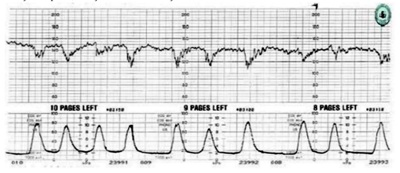
A posição materna sobre o lado esquerdo.
B hiperestimulação uterina pelo agente da maturação cervical.
C trabalho de parto distócico, indicando cesariana urgente.
D compressão da cabeça fetal mediada pelo nervo vago.
E posição materna sobre o lado direito.
Questão 1438 · Parto taquitócito · 4000193593Gestante, 28 anos e com parto normal anterior, é admitida na maternidade em trabalho de parto. A evolução do parto é representada pelo registro no partograma a seguir: A distocia diagnosticada pelo partograma é
A período pélvico prolongado.
B parto precipitado.
C parada secundária da dilatação.
D parada secundária da descida.
E parto eutócico.
Questão 1439 · Distocia de dilatação · Funcional · 4000193592Secundigesta, 39 semanas de gestação, em trabalho de parto, admitida com 6 cm de dilação cervical à 01:00 hora da madrugada. Ao exame físico obstétrico às 09h da manhã: tônus uterino normal, 2 contrações de 20 segundos em 10 minutos, 145 batimentos cardíacos fetais por minuto, ausência de sangramento vaginal, bolsa amniótica íntegra, colo esvaecido 70%, pérvio para 7 cm, apresentação cefálica em - 1 de De Lee. Ao exame físico obstétrico às 11h da manhã: tônus uterino normal, 2 contrações de 18 segundos em 10 minutos, 131 batimentos cardíacos fetais por minuto, ausência de sangramento vaginal, bolsa amniótica íntegra, amnioscopia revela líquido claro com grumos grossos, colo esvaecido 60%, pérvio para 7 cm, apresentação cefálica em -1 de De Lee. Em relação à evolução do trabalho de parto, o diagnóstico correto é
A parto eutócico, com evolução normal.
B distocia funcional por hiperatividade uterina.
C sofrimento fetal agudo.
D distocia funcional por hipoatividade uterina.
E distocia óssea.
Questão 1440 · Abortamento incompleto · 4000193591Primigesta com 19 semanas de idade gestacional, vem ao pronto atendimento com queixa de dor intensa em baixo ventre e sangramento vaginal profuso iniciado há cerca de 4 horas. Nega febre. Ao exame físico: altura uterina= 15 cm, sangramento uterino moderado, colo uterino dilatado 1 cm, eliminação de material amorfo entremeado ao sangue. Ultrassonografia transvaginal identifica material amorfo intrauterino e não identifica o concepto. Com base no quadro clínico, o diagnóstico correto é
A ameaça de abortamento.
B abortamento inevitável.
C abortamento retido.
D abortamento incompleto.
E abortamento completo.
Questão 1441 · Interpretação · 4000193590Paciente de 15 anos, G2P0A1, atualmente com 39 semanas de gestação, em seguimento em pré-natal de alto risco devido à síndrome hipertensiva gestacional. Indicada resolução da gestação sendo encaminhada para a maternidade para indução do parto, após cardiotocogra a para avaliar a vitalidade fetal. O traçado acima é classificado como
A inconclusivo.
B categoria I.
C categoria II.
D categoria III.
E categoria IV.
Questão 1442 · Partograma · 4000193589Observe o partograma a seguir. O diagnóstico correto é

A parada secundária da descida.
B parto eutócico fisiológico.
C parto taquitócico.
D fase ativa prolongada.
E período expulsivo prolongado.
Questão 1443 · Fator tuboperitoneal · Etiologia · 4000193588A respeito das causas de infertilidade, é correto afirmar:
A A disfunção ovulatória não é causa de infertilidade.
B A infertilidade sem causa aparente, por não apresentar diagnóstico definido, não requer tratamento especializado.
C As salpingites são as principais causas do fator tuboperitonal.
D O fator masculino não é causa de infertilidade.
E A histerossalpingografia é um dos exames necessários para avaliação ovulatória.
Questão 1444 · Tempos da apresentação cef álica · Mecanismo de parto · 4000193587A respeito dos mecanismos do trabalho de parto, é correto afirmar:
A O ponto de referência fetal nas apresentações cefálicas fletidas é o bregma ou pequena fontanela.
B O diâmetro do estreito inferior é medido de acordo com os planos de Lee.
C Os tempos do mecanismo do trabalho de parto são: insinuação, descida e desprendimento.
D Os períodos clínicos do parto são dois: dilatação e expulsão.
E Na defletida de terceiro grau, o ponto de referência é o bregma.
Questão 1445 · Quadro clínico · 4000193586Paciente, 22 anos, apresenta queixa de prurido vulvar, disuria e secreção vaginal branca semelhante a leite coalhado. A principal possibilidade de diagnóstico é
A vulvovaginite por Gardnerella vaginalis.
B cistite.
C vulvovaginite por Candida albicans.
D vulvovaginite por Clamydia trachomatis.
E vulvovaginite por Trichmonas vaginallis.
Questão 1446 · Rastreamento do câncer de colo do útero · 4000193585De acordo com as recomendações do Ministério da Saúde, a idade para a coleta de colpocitologia oncótica é de
A 30 a 40 anos.
B 25 a 64 anos.
C 18 a 81 anos.
D 28 a 68 anos.
E 20 a 90 anos.
Questão 1447 · Interpretação · Conduta · Indicações · 4000193584O per l biofísico fetal é um exame solicitado para avaliar a vitalidade fetal muito utilizado para pacientes portadoras de diabetes gestacional ou com gestação múltipla. Sobre o per l biofísico fetal, analise as afirmativas seguintes. I. É um exame capaz de detectar sofrimento fetal agudo. II. Deve ser feito observando os parâmetros por, pelo menos, 30 minutos. III. O primeiro parâmetro a se alterar são os movimentos corporais. IV. O líquido amniótico é um marcador agudo de sofrimento fetal. V. Diante de resultados abaixo ou iguais a 4, deve-se resolver a gestação imediatamente. Estão corretas
A I, II e V, somente.
B I, II, III e V, somente.
C I, III, IV e V, somente.
D II e IV, somente.
E III e IV, somente.
Questão 1448 · Atendimento à vítima de violência sexual · Atendimento · 4000193583Paciente de 17 anos, nuligesta, chega em unidade de pronto atendimento referindo ter sofrido violência sexual. Relata que há cerca de três horas foi abordada por dois homens encapuzados, sob ameaça constante de arma de fogo e sem reconhecimento dos agressores. Houve penetração vaginal sem preservativo, com percepção de secreção semelhante a sêmen após a agressão. Informa que faz uso de anticoncepcional oral combinado regularmente há dois anos. Relata que sua vacinação está atualizada. Além de antirretrovirais, deve ser prescrito(a)
A levonorgestrel 1,5mg; penicilina benzatina 2,4M UI; ceftriaxona 500mg; azitromicina 1g.
B penicilina benzatina 2,4M UI; secnidazol 2g; ceftriaxona 500mg; azitromicina 1g.
C levonorgestrel 1,5mg; penicilina benzatina 2,4M UI; secnidazol 2g; ceftriaxona 500mg; azitromicina 1g.
D levonorgestrel 1,5mg; penicilina benzatina 2,4M UI; secnidazol 2g; ceftriaxona 500mg.
E a associação da metronidazol via vaginal.
Questão 1449 · Dopplervelocimetria Doppler · 4000193582A centralização fetal, que ocorre em determinados casos de gestação de alto risco, pode ser identificada por meio do exame denominado
A cardiotocografia.
B ecocardiografia fetal.
C ecografia morfológica fetal.
D dopplervelocimetria fetal.
E ultrassonografia transvaginal.
Questão 1450 · Roteiro diagnóstico · 4000193581MSR, 17 anos, comparece ao ambulatório de ginecologia acompanhada de sua mãe. Refere que foi encaminhada pelo médico da família, pois ainda não apresentou menstruação, e sua irmã de 13 anos já menstrua. Antecedentes pessoais: asma na infância e amigdalectomia. Antecedentes familiares: avó materna hipertensa e diabética. Ao exame físico, paciente encontra-se em M4, P2 na escala de Tanner no desenvolvimento puberal. Diante do que foi exposto, a melhor conduta seria
A iniciar com terapia de reposição hormonal combinada para auxiliar no desenvolvimento dos caracteres sexuais secundários.
B orientar a paciente e a família que se trata de puberdade tardia, e tranquilizá-las.
C solicitar ressonância pélvica para melhor avaliação, pois se trata de uma malformação dos ductos de Muller.
D solicitar dosagem de hormônios gonadotróficos e cariótipo para auxiliar o diagnóstico.
E iniciar com terapia estrogênica isolada, cálcio e vitamina D.
Questão 1451 · Rastreamento do câncer de colo do útero · 4000193580O rastreamento do câncer de colo uterino através da coleta da colpocitologia oncótica continua sendo a estratégia mais adotada para detecção de lesões precursoras do câncer de colo uterino, em fases iniciais e ainda assintomáticas. Esse rastreamento obedece a recomendações. Assinale a recomendação que não está de acordo com os padrões do Ministério da Saúde.
A Começar em mulheres com mais de 25 anos que já iniciaram atividade sexual.
B Em mulheres com mais de 64 anos e que nunca fizeram a coleta de colpocitologia oncótica, deve- se realizar dois exames com intervalo de um a três anos.
C Durante a gestação, não se recomenda seguir o rastreio de acordo com a faixa etária e periodicidade das demais mulheres, e sim aguardar o término da gestação para fazer a coleta.
D Mulheres que fizeram histerectomia total por patologias benignas podem ser excluídas do rastreamento, caso tenham exames anteriores normais.
E No caso de mulheres que não tenham tido a sexarca, não há indicação para rastreamento do câncer de colo uterino.
Questão 1452 · Pontos de ref erência da apresentação f etal · Pontos de ref erência da bacia materna · 4000193579Avaliação da estática f etal Durante o trabalho de parto, as linhas de orientação são importantes para delimitar melhor o posicionamento fetal, em relação ao diâmetro materno de insinuação. Nas apresentações de etidas de bregma, face e fronte, têm-se como linhas de orientação, respectivamente,
A sutura sagital, linha metópica, linha facial.
B sutura sagitometópica, dorso, linha facial.
C sutura sagital, sutura sagitometópica, linha facial.
D linha facial, dorso, linha metópica.
E sutura sagitometópica, linha facial, linha metópica.
Questão 1453 · Imunizaçao na gestação · 4000193578As imunizações antes, durante e após a gravidez promovem não apenas a saúde materna, mas também, por meio de imunidade passiva, gravidez e período pós-natal saudáveis. As vacinas que devem ser oferecias durante a gestação em nosso estado são
A tuberculose, Influenza, hepatite A.
B Influenza, hepatite B, DTPa.
C Influenza, febre amarela, hepatite B.
D hepatite A, DTPa, tuberculose.
E Influenza, hepatite A, DTPa.
Questão 1454 · Implante subdérmico · DIU liberador de levonorgestrel · DIU de cobre · 4000193577O LARC é conceituado como um contraceptivo reversível e de longa duração, e é representado pelos dispositivos intrauterinos (DIU) e pelo implante contraceptivo. Em relação a esse método, é INCORRETO afirmar:
A É contraindicado em distúrbio trombovenoso ativo.
B Não é indicado como método contraceptivo no puerpério.
C As pacientes portadoras do vírus HIV se beneficiam do uso dos implantes contraceptivos.
D É um método altamente eficaz.
E O DIU não hormonal é um excelente método para a paciente que tratou câncer de mama.
Questão 1455 · Fisiopatologia · 4000193576A endometriose é uma doença crônica, estrogênio-dependente, benigna, e que acomete as mulheres principalmente na fase reprodutiva. A respeito dessa doença, é correto afirmar:
A Por ser uma doença de difícil diagnóstico, as cólicas que se iniciam logo após a menarca já devem ser tratadas com anticoncepcional, para evitar a progressão da endometriose.
B A ressonância de abdome total é o único método que pode avaliar a extensão da endometriose.
C O exame físico na endometriose tem pouco valor propedêutico.
D O CA 125 é um importante marcador de endometriose, muito usado nos dias atuais.
E Uma das teorias para desenvolvimento da endometriose é a teoria genética.
Questão 1456 · Regimes terapêuticos · 4000193575Paciente 49 anos, com queixa de fogachos, insônia e irritabilidade, diminuição de libido e dispareunia de penetração que iniciaram há mais de um ano. Tem como antecedentes pessoais: hipertensão arterial, em uso de losartana 50 mg 2 vezes ao dia, apendicectomia e histerectomia por miomatose uterina e osteopenia diagnosticada recentemente. G4P2 (02 partos normais). De acordo com o que foi exposto, em relação à conduta adequada para este caso, é correto afirmar que a(o)
A terapia não hormonal com uso de antidepressivos (paroxetina) é a melhor conduta neste caso, visto que a paciente é hipertensa.
B terapia combinada com estrogênio associado a progestágeno é a melhor opção terapêutica.
C terapia hormonal tópica vaginal é uma opção terapêutica para a síndrome genitourinária.
D introdução de remodelador de massa óssea, como alendronato, deve ser prescrita, independentemente da terapia hormonal.
E uso da testosterona é a melhor opção para o quadro clínico da paciente.
Questão 1457 · Avaliação do Crescimento · Curvas de Crescimento · 4000193574Fátima de Sá, 32 anos, vem à consulta trazendo sua lha, Tábata, 3 anos, porque há mais ou menos 2 meses está mais preocupada, pois acha que o tamanho de sua lha está menor do que o dos seus primos e irmã mais nova. Nega antecedentes pessoais e familiares relevantes em relação à queixa. Nega alterações no hábito intestinal, porém acha que a lha come muito pouco. Em relação à avaliação inicial no caso de Tábata, é correto afirmar:
A Deve-se solicitar exames de rotina para queixa de baixa estatura.
B Recomenda-se o uso da caderneta da criança para avaliação dos gráficos de crescimento.
C É necessário avaliar Tábata semanalmente para definir o diagnóstico.
D A avaliação nutricional é determinada pelo consumo alimentar da criança.
E O estado nutricional é avaliado pelo estado de saúde da criança.
Questão 1458 · 36 meses · 4000193573Beatriz Rodrigues, 3 anos, é trazida pela mãe até a UBS para consulta de puericultura. No prontuário, encontra-se um registro da sua consulta de 2 anos: “estar atenta à linguagem”. Assinale a alternativa que pode indicar um atraso no desenvolvimento neuropsicomotor em Beatriz.
A Ir ao banheiro sozinha ao longo do dia.
B Usar fralda à noite para dormir.
C Não pronunciar nenhuma palavra inteligível.
D Comer com garfo e colher sozinha.
E Vestir-se sozinha.
Questão 1459 · Inf ecção Urinária e Bacteriúria Assintomática na gestação ITU · 4000193572Gestante comparece à unidade básica de saúde para sua consulta pré-natal. Não refere queixas no momento do atendimento, porém entrega o seguinte exame ao médico de família e comunidade: urocultura > 100.000 UFC. A impressão diagnóstica e o manejo adequados são
A provável contaminação genital; repetir o exame.
B bacteriúria assintomática; iniciar tratamento.
C bacteriúria assintomática; orientar aumento da ingesta hídrica.
D infecção do trato urinário; referenciar para o pré-natal de alto risco.
E infecção do trato urinário; iniciar profilaxia para pielonefrite.
Questão 1460 · Tratamento · 4000193571A vaginose bacteriana encontra-se entre as vulvovaginites mais prevalentes nas mulheres atendidas na Atenção Básica. Sobre o tratamento da vaginose bacteriana, pode-se utilizar
A cetoconazol, clindamicina e miconazol.
B cetoconazol e miconazol.
C metronidazol.
D clindamicina e metronidazol.
E fluconazol e metronidazol.
Questão 1461 · Tricomoníase · 4000193570Isabela Moraes, 25 anos, tem um parceiro xo que trabalha como caminhoneiro. Procura a UBS com queixa de secreção vaginal amarelo-esverdeada bolhosa. Refere dispareunia e irritação vaginal associadas. A provável etiologia dessa vulvovaginite é
A candidíase.
B sífilis.
C clamídia.
D gonorreia.
E tricomoníase.
Questão 1462 · Cistite · 4000193569Marcela Costa, 20 anos, em bom estado geral, comparece à consulta referindo disúria, polaciúria e dor pélvica há 2 dias, com cessação dos sintomas no momento da consulta. É sexualmente ativa, com parceiro xo há 2 anos. Teve 2 episódios de cistite na vida, um há 2 anos, e outro há 5 anos. O seguimento adequado para o caso de Marcela é
A solicitar urocultura após tratamento.
B orientar ingestão regular de água.
C orientar retorno, se recidiva dos sintomas.
D proceder à profilaxia com antibiótico.
E solicitar urina tipo 1.
Questão 1463 · Baciloscopia · 4000193568Sintomático respiratório é toda pessoa que apresenta tosse produtiva, ou não, por três semanas ou mais. Nesse caso, o primeiro exame a ser solicitado é
A Rx de tórax.
B histopatológico.
C baciloscopia de escarro.
D cultura.
E teste rápido molecular.
Questão 1464 · Quadro clínico · 4000193567A tuberculose pulmonar continua prevalente com grande índice de morbidade e mortalidade no país. O principal sintoma de tuberculose pulmonar é
A emagrecimento.
B febre.
C adinamia.
D vômito.
E tosse.
Questão 1465 · Avaliação inicial do paciente em choque · Etiologia do Choque · 4000193566Sr. Giovane Silva, 65 anos, é obeso, diabético tipo 2 e hipertenso há mais de 10 anos. A hipertensão é controlada, porém a hemoglobina glicada segue maior que 9. Infartou há 8 anos. Atualmente faz uso de metformina, aas e atenolol. Trabalha como motorista de van e almoça em casa quando está por perto. Após o almoço, sentiu náusea e procurou a unidade básica de saúde antes de voltar ao trabalho. Assinale o sinal de alerta que indica urgência.
A Idade superior a 55 anos.
B Perda de peso não intencional.
C Disfagia progressiva.
D Desidratação grave.
E Êmese.
Questão 1466 · Medidas Comportamentais · 4000193532Quanto à doença do refluxo gastroesofágico, muito comum na atenção primária à saúde, é correto afirmar:
A Pirose retroesternal e regurgitação geralmente são suficientes para fundamentar diagnóstico.
B A endoscopia digestiva alta é considerada padrão ouro.
C Tosse é o principal sintoma associado.
D É necessário realizar exames complementares para concluir o diagnóstico.
E Deve-se indicar mudanças obrigatórias no estilo de vida como primeiro passo a ser seguido.
Questão 1467 · Tratamento medicamentoso das dislipidemias · Tratamento não medicamentoso das dislipidemias · 4000193530Abordagem das dislipidemias e estratif icação de risco cardiovascular João Mendes, 58 anos, hipertenso, sem histórico significativo de comorbidades na família, retorna para consulta com os seguintes resultados de exames: CT 220 mg/dL, HDL 50 mg/dL, triglicerídeos 150 mg/dL, glicemia de jejum 82 mg/dL, creatinina 0,7, urina tipo 1 sem alterações, ECG normal. O melhor plano terapêutico para esse caso é
A iniciar estatina e reavaliação laboratorial em 3 meses.
B orientar mudanças no estilo de vida e reavaliação laboratorial em 3 meses.
C orientar mudanças no estilo de vida, prescrever estatina e reavaliação laboratorial em 6 meses.
D referenciar para o cardiologista devido ao alto risco cardiovascular.
E iniciar estativa e reavaliação laboratorial em 1 ano.
Questão 1468 · Diagnóstico · 4000193528A hanseníase é uma doença infecciosa crônica causada pelo Mycobacterium leprae. A predileção e nervos periféricos lhe confere características peculiares, tornando seu diagnóstico simples. Em relação ao diagnóstico de hanseníase, é correto afirmar:
A É sempre necessária a baciloscopia de pele para confirmação do diagnóstico.
B A sensibilidade térmica é a primeira a ser perdida nas lesões hansênicas.
C Toda lesão com perda de sensibilidade deve ser biopsiada.
D Em todo paciente com alteração de nervos, deve ser feita eletroneuromiografia.
E A sensibilidade dolorosa é a primeira a ser perdida nas lesões hansênicas.
Questão 1469 · Investigação · Avaliação Cognitiva · 4000193525Demência é um grupo de sintomas caracterizados pela disfunção de, pelo menos, duas funções do cérebro, como a memória e o discernimento. Na suspeita de demência, o médico de família e comunidade procede da seguinte forma:
A Solicita tomografia de crânio e vitamina B12.
B Ouve a pessoa e o cuidador e faz o miniexame do estado mental.
C Escuta as queixas da pessoa e referência ao neurologista.
D Solicita ressonância magnética e exame neuropsíquico.
E Encaminha ao geriatra para melhor seguimento.
Questão 1470 · Transtornos Somáticos · Transtorno dos Sintomas Somáticos · 4000193524As técnicas de abordagem e o manejo dos pacientes com sintomas físicos sem explicação médica são fundamentados no método clínico centrado na pessoa. Quanto ao assunto, é correto afirmar:
A Na somatização mais grave, o usuário deve ser referenciado para um especialista em saúde mental.
B Na somatização mais grave, o usuário deve ser referenciado para um especialista em saúde mental.
C É aconselhável sempre pedir exames para provar ao paciente que ele não tem nada.
D Explicar para o usuário de forma objetiva que o seu sintoma é fruto de estar tentando fugir de algum conflito psíquico.
E A habilidade de comunicação e a utilização do método clínico centrado na pessoa podem facilitar a resolução dos casos.
Questão 1471 · Psiquiatria Inf antil · 4000193520O desenvolvimento de comportamentos de proteção à saúde na adolescência pode ter um efeito positivo nas etapas seguintes da vida. Assinale a alternativa que aborda as estratégias utilizadas pelo médico de família e comunidade para aumentar a motivação do adolescente para evitar comportamentos de risco.
A Orientar sobre os comportamentos de risco e seus prejuízos decorrentes.
B Procurar identificar percepções e atitudes mediante comportamentos de risco e fazer abordagem de orientação a partir daí.
C Ter empatia, evitar o confronto, explorar os padrões de comportamento e os possíveis riscos associados a eles e os comportamentos de proteção.
D Impor todas as medidas necessárias.
E Oferecer preservativo e material educativo impresso.
Questão 1472 · Tratamento da Depressão · Depressão · 4000193517Simone dos Santos, 40 anos de idade, vem à UBS para consulta de acompanhamento para depressão recorrente. Refere melhora dos sintomas após dois meses utilizando uoxetina 20 mg ao dia e sessões semanais de psicoterapia. Sem efeitos colaterais da medicação, ela relata fazer uso regularmente e de forma adequada. O próximo passo mais apropriado nesse caso é
A continuar com o plano atual e esperar mais tempo.
B aumentar a dose de fluoxetina para 40 mg/dia e continuar a psicoterapia.
C suspender a fluoxetina e iniciar paroxetina 10 mg/dia.
D continuar a fluoxetina e acrescentar bupropiona como terapia adjuvante.
E interromper a medicação e referenciar ao psiquiatra.
Questão 1473 · Assistência ao puerpério f isiológico · Dispositivos intrauterinos · 4000193512Larissa Garcia, 19 anos, retorna à unidade básica de saúde 3 semanas após o parto. Está fazendo aleitamento materno exclusivo e não teve um período menstrual após o parto. Relata desejo de colocar um DIU. O passo seguinte mais apropriado no momento dessa consulta é
A planejar inserir o DIU na consulta pós-parto de 6 semanas.
B prescrever minipílula até que ela deixe de amamentar e então inserir o DIU.
C aconselhar que não precisa de contracepção até deixar de amamentar.
D inserir o DIU no momento da consulta.
E informar que o DIU está contraindicado e abordar outros métodos contraceptivos disponíveis no SUS.
Questão 1474 · Violência · 4000193509Maria Lisboa, 42 anos, chega ao consultório para avaliação de dor abdominal crônica. Frequentemente está na UBS com a mesma queixa, mas as investigações sempre foram negativas. Ao exame, seu abdome é macio e não há sinais peritoneais. Não tem lesões cutâneas, mas apresenta uma lesão purpúrea lateral à orbita esquerda. O melhor próximo passo no manejo é
A encaminhar à psiquiatria.
B solicitar uma radiografia abdominal.
C excluir hemorragias antes de indagar sobre situações de violência doméstica.
D perguntar à paciente sobre abuso físico e fornecer informações sobre serviços locais de apoio.
E perguntar à paciente sobre abuso físico e notificar as suspeitas à polícia local.
Questão 1475 · Rastreamento · Critérios para a implantação de um programa de rastreamento · 4000193506Um homem de 52 anos vem para consulta para um checkup anual. Sem queixas e sem histórico familiar relevante. A doença que deve ser alvo de exames de rastreio seria
A câncer de pele.
B câncer de próstata.
C câncer de pulmão.
D aneurisma de aorta abdominal.
E câncer colorretal.
Questão 1476 · Cálculo da idade gestacional pela ultrassonograf ia IG USG · 4000193505Uma mulher de 30 anos vem para a primeira consulta pré-natal na UBS. Com base na data da sua última menstruação, está com 9 semanas de gestação. Quando indagada por mais tempo, observou-se que não tem certeza do primeiro dia da data da última menstruação. A estimativa mais e caz para o cálculo da idade gestacional seria
A ultrassonografia de primeiro trimestre.
B ultrassonografia de segundo trimestre.
C nível quantitativo de hCG sérica.
D continuar usando a data da última menstruação se ela for compatível com a altura uterina.
E Utilizar a altura uterina como referência para a estimativa da idade gestacional.
Questão 1477 · Tipos e classif icação · 4000190763São vários os mecanismos fisiopatológicos que podem gerar Hipertensão Pulmonar (HP):
A Redução da pressão hidrostática do sistema vascular pulmonar, como na estenose mitral; perda do leito vascular associado à vasoconstrição hipóxica, como nas doenças do parênquima pulmonar; remodelamento vascular pulmonar com proliferação endotelial e da camada média, como na hipertensão arterial pulmonar (HAP) idiopática; ou ainda obstrução mecânica do leito vascular.
B Aumento da pressão hidrostática do sistema vascular pulmonar, como na estenose mitral; perda do leito vascular associado à vasoconstrição hipóxica, como nas doenças do parênquima pulmonar; remodelamento vascular pulmonar com proliferação endotelial e da camada média, como na hipertensão arterial pulmonar (HAP) idiopática; ou ainda obstrução mecânica do leito vascular.
C Aumento da pressão hidrostática do sistema vascular pulmonar, como na estenose mitral; perda do leito vascular associado à vasoconstrição hipóxica, como nas doenças do parênquima pulmonar; remodelamento vascular pulmonar com proliferação endotelial e da camada adventícia, como na hipertensão arterial pulmonar (HAP) idiopática; ou ainda obstrução mecânica do leito vascular.
D Aumento da pressão hidrostática do sistema vascular não pulmonar, como na estenose mitral; perda do leito vascular associado à vasoconstrição hipóxica, como nas doenças do parênquima pulmonar; remodelamento vascular pulmonar com proliferação endotelial e da camada média, como na hipertensão arterial pulmonar (HAP) idiopática; ou ainda obstrução mecânica do leito vascular.
Questão 1478 · Manif estações clínicas · 4000190762Doenças sistêmicas autoimunes associadas com a Miocardite:
A A síndrome de Churg-Strauss e não a síndrome hipereosinofílica estão associadas à miocardite eosinofílica.
B A síndrome de Churg-Strauss e a síndrome hipereosinofílica nunca estão associadas à miocardite eosinofílica.
C A síndrome de Churg-Strauss e a síndrome hipereosinofílica estão associadas à miocardite não eosinofílica.
D A síndrome de Churg-Strauss e a síndrome hipereosinofílica estão associadas à miocardite eosinofílica.
Questão 1479 · Tuberculose extrapulmonar · 4000190761Na Tuberculose Extrapulmonar:
A O diagnóstico é frequentemente presuntivo por se tratar de uma forma paucibacilar.
B O diagnóstico nunca é presuntivo por se tratar de uma forma paucibacilar.
C O diagnóstico é frequentemente presuntivo por não se tratar de uma forma paucibacilar.
D O diagnóstico é frequentemente presuntivo por se tratar de uma forma raramente paucibacilar.
Questão 1480 · Anticoagulação · 4000190760A Trombose Venosa Profunda (TVP), é uma condição que:
A Deve ser diagnosticada e tratada adequadamente, podendo levar ao tromboembolismo pulmonar (TEP), situação nunca fatal.
B Deve ser diagnosticada e tratada inadequadamente, podendo levar ao tromboembolismo pulmonar (TEP), situação potencialmente fatal.
C Deve ser diagnosticada e tratada adequadamente, podendo levar ao tromboembolismo pulmonar (TEP), situação potencialmente fatal.
D Deve ser diagnosticada e tratada adequadamente, não podendo levar ao tromboembolismo pulmonar (TEP), situação potencialmente fatal.
Questão 1481 · Miocardite · Manif estações clínicas · 4000190759A miocardite de células gigantes e a sarcoidose, embora raras, revestem-se de especial importância clínica:
A Se diagnosticadas precocemente, não têm tratamento específico, o que pode garantir melhora do prognóstico.
B Se diagnosticadas precocemente, têm tratamento específico, o que pode garantir piora do prognóstico.
C Se diagnosticadas precocemente, têm tratamento específico, o que pode garantir melhora do prognóstico.
D Se diagnosticadas precocemente, têm tratamento específico, o que nunca pode garantir melhora do prognóstico.
Questão 1482 · Manif estações clínicas · 4000190758Na Leishmaniose Mucosa, a avaliação clínica deve ser realizada, sendo indicativo de cicatrização das lesões mucosas a ausência de hiperemia, de úlcera, de vegetação ou de aspecto granulomatoso. Sendo correto que:
A As lesões das mucosas cicatrizam, geralmente, até seis meses após o término do tratamento.
B As lesões das mucosas cicatrizam, geralmente, até seis dias após o término do tratamento.
C As lesões das mucosas cicatrizam, geralmente, até seis meses antes do término do tratamento.
D As lesões das mucosas nunca cicatrizam.
Questão 1483 · Miocardite · 4000190757Miocardite Autoimune pode ocorrer:
A Como acometimento orgânico isolado, mas nunca se manifestar no contexto de doenças autoimunes com manifestações sistêmicas, sendo as mais frequentes: sarcoidose, síndrome hipereosinofílica, esclerodermia e lúpus eritematoso sistêmico.
B Como acometimento orgânico isolado ou manifestar-se no contexto de doenças autoimunes com manifestações sistêmicas, sendo as mais frequentes: sarcoidose, síndrome hipereosinofílica, esclerodermia e lúpus eritematoso sistêmico.
C Como acometimento orgânico isolado ou manifestar-se no contexto de doenças autoimunes com manifestações sistêmicas, sendo as mais frequentes: sarcoidose, síndrome hipereosinofílica, esclerodermia e não por lúpus eritematoso sistêmico.
D Como acometimento orgânico isolado ou manifestar-se no contexto de doenças autoimunes com manifestações sistêmicas, sendo as mais raras: sarcoidose, síndrome hipereosinofílica, esclerodermia e lúpus eritematoso sistêmico.
Questão 1484 · COVID 19 · Fatores de risco · 4000190756A pandemia do novo Coronavírus (Covid-19) acrescentou um novo e crucial papel para a ecocardiografia. Sendo correto que:
A Até o momento, os achados registrados em publicações indicam que o vírus causa redução significativa no risco de trombose venosa (traduzida por elevação do D-dímero) e, consequentemente, da ocorrência de Tromboembolismo Pulmonar (TEP).
B Até o momento, os achados registrados em publicações não indicam que o vírus causa aumento significativo no risco de trombose venosa (traduzida por elevação do D-dímero) e, consequentemente, da ocorrência de Tromboembolismo Pulmonar (TEP).
C Até o momento, os achados registrados em publicações indicam que o vírus causa aumento significativo no risco de trombose venosa (traduzida por redução do D-dímero) e, consequentemente, da ocorrência de Tromboembolismo Pulmonar (TEP).
D Até o momento, os achados registrados em publicações indicam que o vírus causa aumento significativo no risco de trombose venosa (traduzida por elevação do D-dímero) e, consequentemente, da ocorrência de Tromboembolismo Pulmonar (TEP).
Questão 1485 · Tuberculose pulmonar · 4000190755A Tuberculose Pleural é a forma mais comum de Tuberculose Extrapulmonar, exceto em PVHIV. Pode-se afirmar que:
A Os pacientes podem apresentar tosse seca, dor torácica ventilatório-dependente (dor pleurítica) e não a dispneia dependendo do volume de líquido pleural.
B Os pacientes não podem apresentar tosse seca, dor torácica ventilatório-dependente (dor pleurítica) e dispneia dependendo do volume de líquido pleural.
C Os pacientes podem apresentar tosse seca, e não dor torácica ventilatório-dependente (dor pleurítica) e dispneia dependendo do volume de líquido pleural.
D Os pacientes podem apresentar tosse seca, dor torácica ventilatório-dependente (dor pleurítica) e dispneia dependendo do volume de líquido pleural.
Questão 1486 · Miocardite · 4000190754Novos imunoterápicos para tratamento do câncer:
A Podem estar associados ao risco de miocardite, sendo mais recentemente reconhecidos os casos vinculados ao uso dos inibidores de checkpoint imunológico, como Nivolumab e não o Ipilimumab.
B Podem estar associados ao risco de miocardite, sendo mais recentemente reconhecidos os casos vinculados ao uso dos inibidores de checkpoint imunológico, exceto Nivolumab e Ipilimumab.
C Podem estar associados ao risco de miocardite, sendo mais recentemente reconhecidos os casos vinculados ao uso dos inibidores de checkpoint imunológico, como Nivolumab e Ipilimumab.
D Podem estar associados a proteção de miocardite, sendo mais recentemente reconhecidos os casos vinculados ao uso dos inibidores de checkpoint imunológico, como Nivolumab e Ipilimumab.
Questão 1487 · Ecodopplercardiograma · 4000190753Sinais de sobrecarga pressórica de VD no ecocardiograma:
A Ajudam a diferenciar hipocinesia ou acinesia de parede livre decorrente de Tromboembolismo Pulmonar (TEP) daquela causada por infarto agudo de ventrículo direito.
B Não ajudam a diferenciar hipocinesia ou acinesia de parede livre decorrente de Tromboembolismo Pulmonar (TEP) daquela causada por infarto agudo de ventrículo direito.
C Ajudam a diferenciar hipocinesia, mas não acinesia de parede livre decorrente de Tromboembolismo Pulmonar (TEP) daquela causada por infarto agudo de ventrículo direito.
D Ajudam a diferenciar hipocinesia ou acinesia de parede livre decorrente de Tromboembolismo Pulmonar (TEP) daquela causada por infarto agudo de ventrículo esquerdo apenas.
Questão 1488 · Tuberculose ganglionar · 4000190752A Tuberculose Ganglionar:
A É mais frequente em crianças e não mulheres e é a forma extrapulmonar mais comum em PVHIV.
B É mais frequente em crianças e mulheres e é a forma extrapulmonar mais comum em PVHIV.
C É mais rara em crianças e mulheres e é a forma extrapulmonar mais comum em PVHIV.
D É mais frequente em crianças e mulheres e é a forma pulmonar mais comum em PVHIV.
Questão 1489 · Miocardite · 4000190751Na miocardite induzida por drogas, a resposta de sensibilidade pode variar de horas a meses. Sendo correto que:
A Parte da justificativa da hipersensibilidade se dá em resposta a componentes quimicamente reativos que se ligam a proteínas promovendo modificações estruturais.
B Parte da justificativa da hipersensibilidade se dá em resposta a componentes quimicamente reativos que se desligam a proteínas promovendo modificações estruturais.
C Parte da justificativa da hipersensibilidade se dá em resposta a componentes quimicamente reativos que se ligam a proteínas, nunca promovendo modificações estruturais.
D Parte da justificativa da hipersensibilidade se dá em resposta a componentes quimicamente reativos que se ligam a proteínas promovendo modificações não estruturais.
Questão 1490 · Tuberculose ganglionar · 4000190750Na Tuberculose Ganglionar, as cadeias ganglionares mais afetadas são:
A Cervical, unilateral apenas, supraclavicular e mediastinal.
B Cervical, unilateral ou bilateralmente nunca assimétrica, supraclavicular e mediastinal.
C Cervical, unilateral ou bilateralmente (e geralmente assimétrica), supraclavicular e nunca mediastinal.
D Cervical, unilateral ou bilateralmente (e geralmente assimétrica), supraclavicular e mediastinal.
Questão 1491 · Manif estações clínicas · Etiopatogenia · 4000190749A Sarcoidose tem caráter multissistêmico:
A Não envolvendo o pulmão em 90% dos casos, associada a acúmulo de linfócitos T, fagócitos mononucleares e granulomas não caseosos nos tecidos envolvidos.
B Envolvendo o pulmão em 90% dos casos, associada a acúmulo de linfócitos T, fagócitos mononucleares e granulomas não caseosos nos tecidos envolvidos.
C Envolvendo o pulmão em 90% dos casos, associada a acúmulo de linfócitos T, fagócitos mononucleares e granulomas caseosos nos tecidos envolvidos.
D Envolvendo o pulmão em 90% dos casos, associada a acúmulo de linfócitos T, fagócitos mononucleares e nunca granulomas não caseosos nos tecidos envolvidos.
Questão 1492 · Ecodopplercardiograma · 4000190748O único achado ecocardiográfico patognomônico de Tromboembolismo Pulmonar (TEP) é a:
A Presença de trombos móveis em cavidades direitas, tronco e/ ou ramos de artéria pulmonar.
B Presença de trombos imóveis em cavidades direitas, tronco e/ ou ramos de artéria pulmonar.
C Presença de trombos móveis em cavidades direitas, tronco e nunca nos ramos de artéria pulmonar.
D Ausência de trombos móveis em cavidades direitas, tronco e/ ou ramos de artéria pulmonar.
Questão 1493 · Exame f ísico do Recémnascido · 4000190747Sobre a acrocianose assinale a alternativa correta.
A A acrocianose é sinal de gravidade e deve sempre ser investigada.
B A acrocianose é a cianose mais comum nos RNs, nos primeiros minutos de vida, e é um termo científico que se refere à cianose periférica e perioral.
C Os neonatos têm alto grau de resistência vascular intrínseca e instabilidade vasomotora ao nascimento, normalmente com aquecimento, aspiração e oxigenação, e a acrocianose permanece apenas na periferia e dura alguns minutos.
D A acrocianose é incomum nos RNs.
Questão 1494 · Farmacocinética das insulinas · 4000190744As aplicações dos bólus devem ser feitas cerca de 15 a 20 minutos antes das refeições para os análogos rápidos e:
A 15 minutos para a insulina regular.
B 30 minutos para a insulina regular.
C 45 minutos para a insulina regular.
D 55 minutos para a insulina regular.
Questão 1495 · Def inição e Etiologias · 4000190743A fisiopatologia do Status Epileticus (SE), assinale a alternativa correta.
A Nos primeiros momentos do SE, ocorre queda progressiva da PA, perfusão cerebral, oxigenação cerebral e glicemia.
B A lesão cerebral secundária aos eventos do SE está mais ligada à hipóxia cerebral durante o SE por si só do que à falha dos mecanismos compensatórios.
C As crises convulsivas prolongadas estão associadas a alterações na fisiologia, as quais incluem mudanças em PA, FC, função respiratória, concentrações de eletrólitos, glicemia e temperatura corporal.
D As evidências mais recentes mostram que a esclerose do hipocampo é a causa do SE.
Questão 1496 · Tratamento · Tratamento do hipotireoidismo clínico · 4000190742Assinale a alternativa incorreta sobre o uso de beta bloqueadores no tratamento do hipotireoidismo sintomático na criança.
A É recomendado em todos os pacientes sintomáticos, principalmente para crianças com FC superior a 100 bpm.
B Os beta-bloqueadores podem ser úteis em casos de ICC e arritmias cardíacas.
C Em pacientes com hiper reatividade brônquica, o uso de beta bloqueadores é contra indicado.
D O atenolol é o fármaco de escolha, pois é capaz de inibir parte da conversão periférica de T4 em T3.
Questão 1497 · Manejo inicial e pacotes · Choque séptico · 4000190741Quanto às soluções de reposição volêmica para crianças em choque séptico, assinale a alternativa correta.
A A albumina é o líquido de expansão mais útil, mas não deve ser a primeira escolha em razão do elevado custo.
B A utilização de soluções de cristaloides balanceados está associado a menor taxa de mortalidade.
C Os cristaloides balanceados e coloides são a primeira escolha para reposição de volume.
D O uso de amidos e gelatinas é recomendado.
Questão 1498 · Contraindicações das vacinas · 4000190740Assinale a alternativa correta em relação às contraindicações da vacina do sarampo e rubéola.
A Gestantes podem receber a vacina apenas nos primeiros 6 meses de gestação, no último trimestre está contraindicada.
B Dermatite de contato por neomicina.
C Reações de hipersensibilidade.
D Pessoas com anafilaxia à dose prévia da vacina e que tenham reações alérgicas graves à gelatina e neomicina.
Questão 1499 · Vias Aéreas e Proteção da Coluna Cervical · 4000190739Assinale a alternativa correta com relação ao manejo da via aérea em casos em que há suspeita de lesão cervical.
A Quando houver suspeita de lesão da coluna cervical, um segundo socorrista deve manter fixa a região do pescoço do paciente, evitando a rotação ou a flexão durante a manobra de elevação da mandíbula.
B Quando a criança estiver consciente, recomenda-se a utilização da cânula orofaríngea.
C Quando a criança apresentar esforço respiratório inadequado, não se deve realizar intubação orotraqueal.
D Quando houver suspeita de trauma de face, recomenda-se o uso de intubação nasotraqueal.
Questão 1500 · Diabetes Mellitus tipo 1A · 4000190738A orientação nutricional tem papel fundamental no controle metabólico do paciente com diabetes melito (DM) tipo 1. Assinale a alternativa correta sobre as orientações a serem dadas a esses pacientes.
A Ingerir dieta com quantidade excessivamente restrita de carboidratos.
B Nunca ingerir sacarose.
C Consumir nutrientes suficientes para o adequado desenvolvimento.
D Aplicar o bólus alimentar de insulina somente após a refeição.
Questão 1501 · Sarampo · 4000190737Em situações de surto de sarampo, o esquema vacinal pode ser alterado de que forma?
A Três doses da vacina para toda a população.
B Vacinação de crianças com uma dose extra aplicada entre 6 e 12 meses de idade.
C Vacinação neonatal.
D Vacinação da gestante para prevenção da doença no lactente jovem.
Questão 1502 · Drogas específ icas · 4000190736O melhor fármaco vasoativo a ser iniciado para manejo de hipertensão pulmonar no pós-operatório de cirurgia cardíaca e na hipertensão pulmonar do RN é:
A A vasopressina.
B A dobutamina.
C O óxido nítrico.
D A prostaglandina (PGE2).
Questão 1503 · Trauma Esplênico · 4000190735Uma lesão esplênica caracterizada por laceração envolvendo vasos segmentares ou hilo, produzindo maior desvascularização, em mais de 25% do baço, pode ser classificada como:
A Grau V.
B Grau I.
C Grau III.
D Grau IV.
Questão 1504 · Contusão Miocárdica · 4000190734Assinale a alternativa correta em relação às Lesões Cardíacas Contusas.
A As lesões cardíacas contusas consistem em ocorrências de média gravidade, o que é bastante comum.
B A combinação de ECG e troponina I normais exclui lesão cardíaca contusa e pediatria.
C O único objetivo do manejo da contusão cardíaca é a analgesia adequada.
D Os pacientes hemodinamicamente instáveis devem ser submetidos a ecocardiografia para identificar rupturas estruturais no coração.
Questão 1505 · Complicações · 4000190733São prováveis complicações da tireoidectomia total, exceto:
A Hipertireoidismo.
B Hipocalcemia.
C Hematoma.
D Lesão do nervo laríngeo recorrente.
Questão 1506 · Hipoglicemia · 4000190732No caso de um paciente com hipoglicemia significativa, sem causa definida e com muita di culdade para coleta de exames séricos, qual a melhor conduta?
A Insistir na coleta de exames, pois são fundamentais para o diagnóstico.
B Administrar glicose EV imediatamente.
C Solicitar consulta com endocrinologista imediatamente.
D Inserir cateter de oxigênio.
Questão 1507 · Câncer Metastático · 4000190731Assinale a alternativa que é a primeira opção de tratamento para adenocarcinoma de próstata com metástases, sintomático, com lesões secundárias em coluna lombar, cuja função é reduzir ação da testosterona nas células neoplásicas:
A Difosfonados
B 5-Fluoracil
C Goserelina
D Carbamazepina
Questão 1508 · Síndrome de Polipose Hamartomatosa Hereditária · 4000190730Os pólipos do tipo hamartosos são mais frequentemente encontrados em qual síndrome?
A Peutz Jeghers
B Gardner
C Rigler
D Polipose Adenomatosa Familiar
Questão 1509 · Tratamento do choque hipovolêmico · 4000190729Paciente 70 anos, admitido em terapia intensiva após esofagectomia subtotal transhiatal convencional por carcinoma espinocelular de terço médio. Está sedado, em ventilação mecânica, com doses de analgésico otimizadas apresentando frequência cardíaca de 135 bpm, pressão arterial média de 55 mmHg, Sat O2 99% com FiO₂ a 40%. Pressão venosa central de 3 cmH₂0. Gasometria arterial: pH: 7,30; pO₂: 90; pCO₂: 35; HCO₃: 14; Sat 99%. A melhor conduta neste caso é:
A Expansão com albumina humana 10%.
B Prescrever noradrenalina (0,3 mcg/kg/min).
C Administrar bicarbonato de sódio 8,4%.
D Expansão volêmica com Ringer Lactato ou Cloreto de Sódio 0,9%.
Questão 1510 · Quadro Clínico · 4000190728Paciente 70 anos, com queixa de disfagia progressiva há aproximadamente 04 meses, inicialmente para sólidos, atualmente com di culdade para líquidos. Foi realizado exame endoscópico que diagnosticou carcinoma espinocelular de terço médio de esôfago. Hoje é admitido em leito de terapia intensiva após realização de esofagectomia subtotal trans-hiatal com piloroplastia. No momento da admissão encontra-se sem sedação, ventilando em ar ambiente, estável hemodinamicamente sem necessidade de vasopressores, diurese satisfatória, controles glicêmicos normais, recebendo dieta enteral (com sonda nasoenteral passada no intra-operatório) e nutrição parenteral total. Ao exame físico: regular estado geral, emagrecido, IMC: 16 kg/m², descorado, desidratado (+/4+), anictérico. Sem alterações cardiopulmonares. Abdome ácido, indolor, sem sinais de peritonite. Cicatrizes cirúrgicas limpas e secas. Após 12 horas de observação apresenta confusão mental, dispneia, oligúria e taquicardia. São solicitados exames laboratoriais que revelam hipocalemia, hipofosfatemia grave, hipomagnesemia; Eletrocardiograma e Radiogra a de tórax normal. A principal hipótese diagnóstica é:
A Infarto agudo do miocárdio.
B Síndrome perdedora de sal.
C Diabetes insípidus.
D Síndrome da realimentação.
Questão 1511 · Tratamento das taquicardias de QRS estreito · 4000190727Paciente feminina, 35 anos, sem comorbidades, admitida em leito de terapia intensiva após laparotomia exploradora por cisto de ovário roto. Após 12 horas de observação clínica, apresenta dor torácica de forte intensidade, palpitações, associada a dispneia súbita e hipotensão. Sem alterações neurológicas. Realizado eletrocardiograma abaixo. A conduta mais adequada neste caso é:

A Amiodarona 300mg em bolus.
B Amiodarona 150mg em bolus.
C Metoprolol 25mg via oral.
D Cardioversão elétrica.
Questão 1512 · Inf ecção por C dif f icile · 4000190726Paciente de 70 anos, em internação prolongada por fratura exposta de fêmur, apresentando quadro de disenteria, com presença de toxinas para Clostridium A e B em fezes presente. Está em tratamento com metronidazol via oral, sem melhora. A melhor opção terapêutica nesse caso é:
A Dobrar dose de metronidazol, por mais 14 dias.
B Substituir metronidazol por vancomicina via oral.
C Mantem metronidazol em associação com ciprofloxacino.
D Substituir metronidazol por vancomicina endovenosa.
Questão 1513 · Pseudoobstrução Colônica Síndrome de Ogilvie · 4000190725Paciente de 65 anos, internado em unidade de terapia intensiva para tratamento de pneumonia viral e síndrome respiratória aguda grave. Em ventilação mecânica invasiva e dieta por sonda nasoenteral. Apresentou distensão abdominal, quando foram realizadas algumas lavagens com solução glicerinada sem retorno satisfatório. Não apresenta diarreia. Exames séricos normais. A tomogra a de abdome não evidencia lesões obstrutivas. Trata-se, possivelmente, de:
A Síndrome de Olgivie.
B Colite pseudomembranosa.
C Colite isquêmica.
D Isquemia mesentérica.
Questão 1514 · Câncer do Cólon · 4000190724Sobre o câncer colorretal e seu estadiamento, assinale a correta:
A Apenas Rx de tórax é necessário, uma vez que o tratamento é sempre cirúrgico.
B É necessário apenas ultrassonografia de abdome total.
C Realização de CT de crânio para todos se faz necessário.
D Realização de tomografia de abdome, pelve e tórax são necessárias para evidenciar a presença de lesões secundárias.
Questão 1515 · Fases do empiema · 4000190723Sobre Empiemas Pleurais, assinale a correta.
A Fase I - Fibrosante: há intensa fibrose da pleura parietal, com necrose de liquefação local, causando na maioria das vezes fístula aérea de alto débito.
B Fase II – Proliferativa: Caracterizada por líquido fluido e livre na cavidade pleural, sem formar septações. No início, o líquido pode estar estéril e assim permanecer por algum tempo.
C Na Fase III – Crônica: há proliferação mais acentuada de fibroblastos, forma-se uma membrana envoltória mais espessa e consistente, capaz de restringir a reexpansão do pulmão. O tratamento com melhor resultados é a decorticação pulmonar.
D Fase IV – Fibrinopurulenta: A secreção já é purulenta, espessa, com presença de fibrina e grande número de células, em que predominam os polimorfonucleares.
Questão 1516 · Estenoses Traqueais · 4000190722Paciente vítima de trauma encefálico grave há 1 mês, permaneceu em ventilação mecânica em terapia intensiva com tubo orotraqueal por 19 dias, pois seu nível neurológico oscilava durante a internação. Após extubação, recebeu alta sem intercorrências. Hoje, 1 mês após a alta é admitido em sala de emergência queixando-se de dispneia progressiva, rouquidão e apresenta ao exame físico estridor laríngeo. Qual a hipótese diagnóstica mais provável?
A Fístula traqueo-traqueal.
B Broncoespasmo.
C Pneumotórax.
D Estenose laringotraqueal.
Questão 1517 · Sequência Rápida de Intubação SRI · 4000190721Sobre a "Sequência Rápida de Intubação", atualmente chamada de "Intubação Assistida por Drogas", assinale a correta.
A É sempre utilizada em situações eletivas, em que o paciente se apresenta estável, com jejum adequado.
B É utilizada em casos em que se necessita acesso a via aérea quando há risco de broncoaspiração. O protocolo utiliza 3 classes de drogas: analgésico, hipnótico e bloqueador neuromuscular de ação rápida.
C É utilizado na garantia de via aérea em urgências, e sempre utilizamos 4 classes de drogas: hipnóticos, bloqueadores neuromusculares, analgésicos e anticonvulsivantes.
D É uma opção para acesso a via aérea, sendo totalmente contra indicada em pacientes instáveis.
Questão 1518 · Apresentação Clínica e Diagnóstico · 4000190720A hipospádia é descrita como uma malformação em que o óstio uretral se encontra em região atípica na face ventral do pênis. A correção cirúrgica costuma ser necessária para restaurar a anatomia e é indicada após os 06 meses de idade. Sobre a hipospádia ilustrada abaixo, assinale a correta.

A É classificada como hipospádia escrotal e pode ser corrigida pela técnica de Bracka.
B É classificada como hipospádia distal e deve ser operada após o controle esfincteriano vesical.
C É a apresentação mais comum e está associada a altos índices de refluxo vesicoureteral.
D Pode se associar com distopia testicular e distúrbios da diferenciação do sexo.
Questão 1519 · Trauma Renal · 4000190719Paciente jovem é vítima de atropelamento de alta energia cinética em rodovia. É admitido em prancha rígida e com colar cervical e atendido pelo protocolo americano de trauma. A - Via aérea pérvia, com colar cervical. B - Murmúrio presente bilateral, sem ruídos adventícios. Boa expansibilidade. Saturação periférica de oxigênio em ar ambiente: 98%. C - Bulhas rítmicas, taquicárdicas. Pulso filiforme. FC: 130bpm. PA: 80x40 mmHg. D - Glasgow 14. Pupilas isocóricas, fotorreagentes, sem déficits focais. E - Sem lesões ameaçadoras à vida. Achado na avaliação secundária hematoma na parede anterior do abdome e flanco esquerdo, doloroso à palpação, sem sinais de irritação peritoneal. Após atendimento inicial, expansão e transfusão de hemoderivados apresentou estabilidade hemodinâmica que permitiu realizar a tomografia de abdome abaixo. A principal hipótese diagnóstica é:
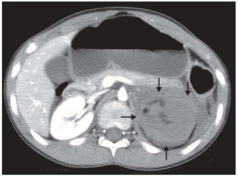
A Trauma esplênico III
B Trauma esplênico IV
C Trauma renal V
D Trauma renal VI
Questão 1520 · Trauma Renal · 4000190718Paciente jovem é vítima de atropelamento de alta energia cinética em rodovia. É admitido em prancha rígida e com colar cervical e atendido pelo protocolo americano de trauma. A - Via aérea pérvia, com colar cervical. B - Murmúrio presente bilateral, sem ruídos adventícios. Boa expansibilidade. Saturação periférica de oxigênio em ar ambiente: 98%. C - Bulhas rítmicas, taquicárdicas. Pulso filiforme. FC: 130bpm. PA: 80x40 mmHg. D - Glasgow 14. Pupilas isocóricas, fotorreagentes, sem déficits focais. E - Sem lesões ameaçadoras à vida. Achado na avaliação secundária hematoma na parede anterior do abdome e flanco esquerdo, doloroso à palpação, sem sinais de irritação peritoneal. Após atendimento inicial, expansão e transfusão de hemoderivados apresentou estabilidade hemodinâmica que permitiu realizar a tomografia de abdome abaixo. Sobre a condução do caso acima, assinale a correta.

A O tratamento não operatório do caso acima pode ser realizado diante da estabilidade hemodinâmica, mas há altos índices de complicações. O tratamento cirúrgico mais indicado é a nefrectomia.
B O tratamento não operatório do caso acima pode ser realizado diante da estabilidade hemodinâmica, mas há altos índices de complicações. O tratamento cirúrgico mais indicado é a esplenectomia.
C O tratamento cirúrgico é contraindicado visto que não há líquido livre na cavidade abdominal.
D O tratamento cirúrgico é contraindicado visto que não há extravasamento de contraste para a cavidade abdominal.
Questão 1521 · Trauma da Bexiga · 4000190717Paciente jovem é vítima de trauma abdominal fechado de alta energia cinética. Durante o atendimento inicial foi visualizado uretrorragia e edema importante de região perineal. Permanece estável hemodinamicamente e realizou a tomogra a abaixo após instilação retrógrada de contraste hidrossolúvel por meio de sonda Foley. Sobre os achados acima, assinale a alternativa correta.

A Demonstra extravasamento do contraste no espaço perivesical. O vazamento é extraperitoneal, uma vez que o contraste extravasado se encontra limitado aos planos laterais da fáscia paravesical da pelve. O tratamento recomendado é cirurgia de urgência.
B Demonstra extravasamento do contraste no espaço perivesical. O vazamento é extraperitoneal, uma vez que o contraste extravasado se encontra limitado aos planos laterais da fáscia paravesical da pelve. O tratamento recomendado é conservador com sondagem vesical.
C Demonstra extravasamento do contraste no espaço intraperitoneal. O tratamento recomendado é cirurgia de urgência.
D Demonstra extravasamento do contraste no espaço intraperitoneal. O tratamento recomendado é conservador com sondagem vesical.
Questão 1522 · Diagnóstico · Manif estações Clínicas e Exame Físico · 4000190716O pneumoperitônio é uma causa de abdome agudo cirúrgico, cuja etiologia principal corresponde a perfuração de vísceras ocas do trato gastrointestinal. É definido quando há presença de gás intra-abdominal livre na cavidade. Pode ser diagnóstico através de avaliação clínica e radiológica. Sobre a propedêutica na emergência destes casos, a assinale a correta.
A É caracterizado pelo sinal de Murphy: perda da macicez hepática à percussão abdominal da loja hepática.
B É caracterizado na radiografia de abdome agudo pelo sinal de Chilaiditi.
C Pode ser notado pela presença do sinal de Rigler: quando a parede intestinal é melhor visualizada devido ao contraste do ar bilateral (intra e extraluminal).
D Raramente é notado na radiografia de abdome.
Questão 1523 · Diagnóstico laboratorial na RPM · 4000190715O pH vaginal mais sugestivo de amniorrexe é de:
A 2
B 4
C 4,5
D 7
Questão 1524 · Tumores ovarianos benignos · 4000190714O tumor de Brenner é:
A Maligno de ovário.
B Benigno de ovário.
C Benigno de vulva.
D Maligno de vulva.
Questão 1525 · Diagnóstico · 4000190713O exame laboratorial normalmente aumentado em gestações gemelares é:
A Ácido úrico.
B Transaminase.
C Contagem de plaquetas.
D Hemoglobina.
Questão 1526 · Colposcopia · 4000190712A biópsia se faz absolutamente necessária na colposcopia em caso de:
A Vasos atípicos.
B Pontilhado.
C Epitélio aceto-branco.
D Deciduose de colo.
Questão 1527 · Medida do colo uterino · 4000190711Atualmente a medida ultrassonográ ca de comprimento de colo uterino mais aceita como fator de risco para prematuridade é abaixo de:
A 40 mm.
B 30 mm.
C 10 mm.
D 25 mm.
Revisar: possível letra faltando em enunciado
Questão 1528 · Inf ecção Urinária e Bacteriúria Assintomática na gestação ITU · 4000190709Gestante de 30 semanas comparece ao ambulatório de pré-natal com queixa de disúria. Sem oportunidade de realizar uma urocultura, o Ginecologista opta por antibiótico com espectro principalmente para:
A Staphylococcus aureus.
B Klebsiela pneumoniae.
C Echerichia coli.
D Proteus mirabilis.
Questão 1529 · Anamnese · 4000190708É característica de infecção genital baixa:
A dor pélvica.
B dipareunia de profundidade.
C leucorreia esbranquiçada em grumos.
D tenesmo.
Questão 1530 · Assistência ao parto na gestação multipla · 4000190707As gestações gemelares monocoriônicas / monoamnióticas devem ter o parto programado para a idade gestacional:
A 39 a 40 semanas.
B 37 a 38 semanas.
C 35 a 37 semanas.
D 32 a 34 semanas.
Questão 1531 · Epidemiologia e f atores de risco · 4000190706O perfil da paciente climatérica com maior tendência a desenvolver perda de massa óssea é:
A branca, magra, tabagista.
B branca, obesa, não tabagista.
C negra, magra, tabagista.
D negra, magra, não tabagista.
Questão 1532 · Etiologia e f isiopatologia · 4000190705São características comuns na pré-eclâmpsia, exceto:
A Aumento do tromboxane.
B Aumento da taxa de filtração glomerular.
C Plaquetopenia.
D Lesão endotelial.
Questão 1533 · Tipos e causas · 4000190704Droga que pode causar descarga papilar:
A Cabergolina.
B Dipirona.
C Domperidona.
D Bromocriptina.
Questão 1534 · Rastreamento de anomalias cromossômicas · 4000190703Gestante em acompanhamento pré-natal na Unidade Básica realiza ultrassom com 13 semanas que demonstrou osso nasal ausente e transluscência nucal fetal de 4,0 mm. O exame é considerado como sugestivo de maior risco para:
A defeitos abertos do tubo neural.
B gastrosquise.
C trissomias.
D anencefalia.
Questão 1535 · Fatores de risco · 4000190702O perfil da mulher que mais se encaixa com risco de câncer de endométrio é:
A nulípara, obesa, menopausa tardia, usuária de estrógeno.
B nulípara, magra, menopausa tardia, usuária de estrógeno.
C multípara, obesa, menopausa tardia, usuária de estrógeno.
D multípara, obesa, menopausa precoce, não usuária de estrógeno.
Questão 1536 · Ameaça de abortamento · 4000190701Uma gestante de 9 semanas procura o pronto atendimento com queixa de sangramento vaginal em pequena quantidade e cólicas leves. Ao exame físico, colo uterino fechado com sangramento discreto. O ultrassom visualizou embrião com batimentos cardíacos presentes e discreta área de descolamento coriônico, com coágulo que ocupa aproximadamente 20% da superfície placentária. O diagnóstico mais provável é:
A Descolamento Prematuro de Placenta.
B Aborto incompleto.
C Aborto retido.
D Ameaça de aborto.
Questão 1537 · Desenvolvimento da genitália externa · Desenvolvimento dos ductos genitais · 4000190700Participam da formação da vagina, porções superiores e inferiores, respectivamente:
A Ducto de Wolff e de Muller.
B Ducto de Muller e Seio Urogenital.
C Ducto de Wolff e Seio Urogenital.
D Seio Urogenital e Ducto de Muller.
Questão 1538 · Manif estações e características clínicas · 4000190699O Escore Cálcio Arterial Coronariano (CACS) deve representar uma forma de segregar indivíduos diabéticos:
A Com menor carga aterosclerótica e provavelmente aqueles que foram submetidos por tempo mais prolongado aos efeitos vasculares da resistência à insulina em conjunto com a endoteliopatia, que se inicia nos estágios mais precoces do pré-diabetes.
B Com maior carga aterosclerótica e provavelmente aqueles que foram submetidos por tempo mais prolongado aos efeitos vasculares da resistência à insulina em conjunto com a endoteliopatia, que se inicia nos estágios mais tardios do pré-diabetes.
C Com maior carga aterosclerótica e provavelmente aqueles que não foram submetidos por tempo mais prolongado aos efeitos vasculares da resistência à insulina em conjunto com a endoteliopatia, que se inicia nos estágios mais precoces do pré-diabetes.
D Com maior carga aterosclerótica e provavelmente aqueles que foram submetidos por tempo mais prolongado aos efeitos vasculares da resistência à insulina em conjunto com a endoteliopatia, que se inicia nos estágios mais precoces do pré-diabetes.
Questão 1539 · Covid na gestação · 4000190698Uma vez que a determinação da gravidade do estado da gestante pode ser desa adora, recomendamos que os profissionais de saúde utilizem o Escore de Alerta Precoce. Sobre isso, podemos afirmar que:
A Mulheres com dois ou mais sinais de alerta amarelo ou um ou mais sinais de alerta vermelho, assim como aquelas com síndrome respiratória aguda grave (SRAG), têm risco reduzido de evolução desfavorável e, portanto, merecem cuidado diferenciado.
B Mulheres com dois ou mais sinais de alerta amarelo ou um ou mais sinais de alerta vermelho, assim como aquelas com síndrome respiratória aguda grave (SRAG), têm risco aumentado de evolução desfavorável e, portanto, não merecem cuidado diferenciado.
C Mulheres com dois ou mais sinais de alerta amarelo ou um ou mais sinais de alerta vermelho, assim como aquelas com síndrome respiratória aguda grave (SRAG), têm risco aumentado de evolução desfavorável e, portanto, merecem cuidado diferenciado.
D Mulheres com dois ou menos sinais de alerta amarelo ou um ou menos sinais de alerta vermelho, assim como aquelas com síndrome respiratória aguda grave (SRAG), têm risco aumentado de evolução desfavorável e, portanto, merecem cuidado diferenciado.
Questão 1540 · Rastreamento · 4000190697A decisão de rastrear o indivíduo com DM2 assintomático:
A Para a presença de doença antes de iniciar um programa de exercícios dependerá da presença de estratificadores de risco, da presença de sintomas cardiovasculares e da intensidade do exercício prescrito.
B Para a presença de doença antes de iniciar um programa de exercícios não dependerá da presença de estratificadores de risco, da presença de sintomas cardiovasculares e da intensidade do exercício prescrito.
C Para a presença de doença antes de iniciar um programa de exercícios dependerá da presença de estratificadores de risco, da presença de sintomas cardiovasculares e nunca da intensidade do exercício prescrito.
D Para a presença de doença antes de iniciar um programa de exercícios dependerá da presença de estratificadores de risco, não da presença de sintomas cardiovasculares e sim da intensidade do exercício prescrito.
Questão 1541 · Covid na gestação · 4000190696Em relação ao desfecho materno e neonatal desfavorável na presença da Covid-19 moderada e grave:
A As gestantes infectadas por SARS-CoV-2 têm menor chance de hospitalização, admissão em unidade de terapia intensiva e ventilação mecânica. É possível que as alterações gravídicas afetem a resposta imunológica.
B As gestantes infectadas por SARS-CoV-2 têm maior chance de hospitalização, admissão em unidade de terapia intensiva e não de ventilação mecânica. É possível que as alterações gravídicas afetem a resposta imunológica.
C As gestantes infectadas por SARS-CoV-2 têm maior chance de hospitalização, mas não de admissão em unidade de terapia intensiva e ventilação mecânica. É possível que as alterações gravídicas afetem a resposta imunológica.
D As gestantes infectadas por SARS-CoV-2 têm maior chance de hospitalização, admissão em unidade de terapia intensiva e ventilação mecânica. É possível que as alterações gravídicas afetem a resposta imunológica.
Questão 1542 · Transmissão vertical · Hepatites na gestação · 4000190695A infecção crônica pelo HBV ocorre, primariamente, por transmissão vertical ou pela infecção na infância. Está correto que:
A A infecção do feto ou do neonato pelo HBV é dependente do estado imune e da carga viral da mãe. Situações que levam à mistura do sangue da mãe e do feto também possibilitam a infecção.
B A infecção do feto ou do neonato pelo HBV não é dependente do estado imune e da carga viral da mãe. Situações que levam à mistura do sangue da mãe e do feto também possibilitam a infecção.
C A infecção do feto ou do neonato pelo HBV é dependente do estado imune e nunca da carga viral da mãe. Situações que levam à mistura do sangue da mãe e do feto também possibilitam a infecção.
D A infecção do feto ou do neonato pelo HBV é dependente do estado imune e da carga viral da mãe. Situações que levam à mistura do sangue da mãe e do feto não possibilitam a infecção.
Questão 1543 · Dependência de Tabaco · 4000190694Dependência definicotina é uma doença crônica, que pressupõe um manejo constante.
A Dentro desse quadro é possível prever como 6 o número de tentativas necessárias para que aquele indivíduo deixe definitivamente de fumar, bem como evitar que haja recaída.
B Dentro desse quadro não é possível prever o número de tentativas necessárias para que aquele indivíduo deixe definitivamente de fumar, bem como evitar que haja recaída.
C Dentro desse quadro é possível prever o número de tentativas necessárias para que aquele indivíduo deixe definitivamente de fumar, bem como evitar que haja recaída.
D Dentro desse quadro não é possível prever o número de tentativas necessárias para que aquele indivíduo deixe definitivamente de fumar, mas sim prever em 3 para evitar que haja recaída.
Questão 1544 · Fatores de risco para hipertensão arterial · 4000190693Os resultados heterogêneos do efeito do álcool no desenvolvimento da Hipertensão Arterial:
A Ocorrem devido a influência do tipo de bebida ingerida, não do volume da ingesta, estilo de vida, padrão de consumo e nível socioeconômico da população estudada.
B Ocorrem devido a influência do tipo de bebida ingerida, volume da ingesta, estilo de vida, padrão de consumo e nunca do nível socioeconômico da população estudada.
C Ocorrem devido a influência do tipo de bebida ingerida, volume da ingesta, estilo de vida, padrão de consumo e nível socioeconômico da população estudada.
D Ocorrem devido a influência do tipo de bebida ingerida, volume da ingesta, mas não estilo de vida, padrão de consumo e nível socioeconômico da população estudada.
Questão 1545 · COVID 19 · 4000190692Para rastreamento dos contatos, é importante que seja realizada uma investigação detalhada dos casos de Covid-19 que são captados pelos sistemas de informação (e-SUS Noti ca ou SIVEPGripe). Sendo correto que:
A Para esta etapa, durante o atendimento do caso pelo serviço de saúde, deve ser utilizada a Ficha para Rastreamento de Contatos, com o objetivo de identificar as pessoas que estiveram em contato com um caso confirmado não no período de transmissibilidade da doença, ou seja, até 48 horas antes do início dos sintomas (para os casos sintomáticos) ou até 48 horas antes da data da coleta do exame (para os casos assintomáticos).
B Para esta etapa, durante o atendimento do caso pelo serviço de saúde, deve ser utilizada a Ficha para Rastreamento de Contatos, com o objetivo de identificar as pessoas que estiveram em contato com um caso confirmado no período de transmissibilidade da doença, ou seja, até 48 horas antes do início dos sintomas (para os casos sintomáticos) ou até 48 horas antes da data da coleta do exame (para os casos assintomáticos).
C Para esta etapa, durante o atendimento do caso pelo serviço de saúde, nunca deve ser utilizada a Ficha para Rastreamento de Contatos, com o objetivo de identificar as pessoas que estiveram em contato com um caso confirmado no período de transmissibilidade da doença, ou seja, até 48 horas antes do início dos sintomas (para os casos sintomáticos) ou até 48 horas antes da data da coleta do exame (para os casos assintomáticos).
D Para esta etapa, durante o atendimento do caso pelo serviço de saúde, deve ser utilizada a Ficha para Rastreamento de Contatos, com o objetivo de identificar as pessoas que estiveram em contato com um caso não confirmado no período de transmissibilidade da doença, ou seja, até 48 horas antes do início dos sintomas (para os casos sintomáticos) ou até 48 horas antes da data da coleta do exame (para os casos assintomáticos).
Revisar: possível letra faltando em enunciado
Questão 1546 · Dependência de Tabaco · 4000190691Menor nível de dependência parece aumentar a chance de cessação do tabagismo, sendo assim:
A A presença de algum distúrbio psiquiátrico pode ser um fator complicador para cessação.
B A presença de algum distúrbio psiquiátrico nunca pode ser um fator complicador para cessação.
C A presença de algum distúrbio psiquiátrico pode ser um fator facilitador para cessação.
D A ausência de algum distúrbio psiquiátrico pode ser um fator complicador para cessação.
Questão 1547 · Fatores de risco para hipertensão arterial · 4000190690O excesso de peso é reconhecidamente um fator relacionado à elevação da PA, sendo que:
A Quanto maior o IMC, menor o risco de Hipertensão Arterial - HA.
B Quanto menor o IMC, maior o risco de Hipertensão Arterial - HA.
C Quanto maior o IMC, maior o risco de Hipertensão Arterial - HA.
D Quanto maior o IMC, não é maior o risco de Hipertensão Arterial - HA.
Questão 1548 · COVID 19 · 4000190689Em lugares que há poucos casos de COVID-19 ou os casos são esporádicos:
A É fortemente recomendada a realização do rastreamento e não o monitoramento de contatos para todos os casos de COVID-19.
B É fortemente não recomendada a realização do rastreamento e o monitoramento de contatos para todos os casos de COVID-19.
C É fortemente recomendada a não realização do rastreamento e o monitoramento de contatos para todos os casos de COVID-19.
D É fortemente recomendada a realização do rastreamento e o monitoramento de contatos para todos os casos de COVID-19.
Questão 1549 · Dependência de Tabaco · 4000190688O desfecho esperado é a cessação total do tabagismo, ou seja, interrupção do uso da substância nicotina em qualquer de suas formas. Sendo assim, pode-se afirmar que:
A A falha terapêutica não deve ser entendida como o não alcance da cessação do tabagismo ao final do tratamento.
B A falha terapêutica deve ser entendida como o alcance da cessação do tabagismo ao final do tratamento.
C A falha terapêutica deve ser entendida como o não alcance da cessação do tabagismo ao final do tratamento.
D A falha terapêutica deve ser entendida como o não alcance da cessação do tabagismo ao início do tratamento.
Questão 1550 · Fatores de risco para hipertensão arterial · 4000190687A obesidade central e o ganho de peso:
A Ao longo do tempo têm se destacado como importantes fatores para o desenvolvimento de Hipertensão Arterial - HA.
B Ao longo do tempo não têm se destacado como importantes fatores para o desenvolvimento de Hipertensão Arterial - HA.
C Ao longo do tempo têm se destacado como importantes fatores para a proteção da Hipertensão Arterial - HA.
D Ao longo do tempo têm se destacado como pouco importante fator para o desenvolvimento de Hipertensão Arterial - HA.
Questão 1551 · Dependência de Tabaco · 4000190686Terapia de reposição definicotina combinada (CTRN), seja isolada ou em combinação, só deve ser iniciada na data em que o paciente deixar de fumar.
A A TRN deve ser usada de forma concomitante com o cigarro ou outros derivados de tabaco.
B A TRN não deve ser usada de forma concomitante com o cigarro ou outros derivados de tabaco.
C A TRN não deve ser usada de forma concomitante com o cigarro, mas pode com outros derivados de tabaco.
D A TRN deve ser sempre usada de forma concomitante com o cigarro ou outros derivados de tabaco.
Questão 1552 · COVID 19 · 4000190685Em relação a identi car, capacitar e manter uma equipe de investigadores prontos para iniciar o rastreamento de contatos a partir do primeiro caso de coronavírus identificado, podemos afirmar que:
A Nesta situação, sugere-se que todos os contatos próximos sejam identificados rapidamente, avaliados por uma equipe de saúde, testados, isolados e monitorados por até 30 dias.
B Nesta situação, sugere-se que todos os contatos próximos não sejam identificados rapidamente, avaliados por uma equipe de saúde, testados, isolados e monitorados por até 10 dias.
C Nesta situação, sugere-se que todos os contatos próximos sejam identificados rapidamente, avaliados por uma equipe de saúde, testados, isolados e monitorados por até 10 dias.
D Nesta situação, sugere-se que todos os contatos próximos sejam identificados rapidamente, não avaliados por uma equipe de saúde, testados, isolados e monitorados por até 10 dias.
Questão 1553 · Redução do peso corporal · Aspectos nutricionais · 4000190684A perda de peso como medida não medicamentosas reduz PA em normotensos e pode prevenir o desenvolvimento de Hipertensão Arterial (HÁ).
A Mudanças no estilo de vida não são fundamentais para a perda de peso e concentram-se na adoção de uma dieta hipocalórica e atividade física regular.
B Mudanças no estilo de vida são fundamentais para a perda de peso e concentram-se na adoção de uma dieta hipocalórica e não na atividade física regular.
C Mudanças no estilo de vida são fundamentais para a perda de peso e concentram-se na adoção de uma dieta hipocalórica e atividade física irregular.
D Mudanças no estilo de vida são fundamentais para a perda de peso e concentram-se na adoção de uma dieta hipocalórica e atividade física regular.
Questão 1554 · Critérios para Admissão em UTI e Unidade de Queimados · 4000190683No atendimento a pacientes vítimas de queimaduras, após a estabilização inicial, deve-se iniciar o processo de transferência para serviço de referência que possa manejar a complexidade do cuidado, caso seja indicado. A respeito da transferência de pacientes queimados para centro de referência é correto a rmar que
A deve ser imediata em casos graves, pelo risco de complicações respiratórias.
B pacientes graves deverão ser acompanhados de médico em ambulância com a possibilidade de assistência ventilatória.
C o transporte aéreo é o ideal em pacientes com trauma torácico e pneumotórax associados.
D têm indicação os pacientes adultos com queimaduras de segundo grau em áreas maiores do que 10% da SCQ.
E nunca é necessária em queimaduras elétricas ou químicas.
Questão 1555 · Apendicite Aguda Não Complicada · 4000190682A apendicite aguda (AA) está entre as causas mais comuns de dor abdominal baixa, que levam os pacientes ao pronto-socorro, e o diagnóstico mais comum feito em pacientes jovens internados com abdome agudo. Com base nas diretrizes atuais acerca da AA, assinale a alternativa correta.
A A taxa de perfuração varia de 16% a 40%, ocorrendo com maior frequência nas faixas etárias mais jovens.
B A morbimortalidade é semelhante na AA perfurada e na não perfurada.
C Escores clínicos sozinhos são suficientemente sensíveis para confirmar o diagnóstico.
D O uso de escores clínicos não altera a indicação de exames de imagem em pacientes com suspeita diagnóstica.
E O tratamento somente com antibióticos é uma alternativa segura para pacientes selecionados com AA não complicada e com ausência de apendicolito.
Questão 1556 · Diretrizes de Tokyo · 4000190681O manejo da colecistite aguda tem passado por mudanças nas últimas décadas. Atualmente, são utilizadas as Diretrizes de Tokyo para critérios de diagnóstico e classificação da gravidade da colecistite aguda e da colangite aguda. Considerando essas diretrizes, assinale a alternativa correta.
A Mesmo em casos precoces e não graves. é óbvio que as bactérias desempenham um papel significativo na patologia encontrada.
B O tratamento cirúrgico deve ser feito, impreterivelmente, dentro das 72 horas após o diagnóstico.
C Nesses casos, a conduta é padrão, independentemente da gravidade do caso e do paciente.
D Idealmente, a cirurgia deve ser realizada por cirurgião experiente em laparoscopia.
E A terapia antimicrobiana para pacientes com colecistite aguda de grau I e II deve ser mantida por sete dias.
Questão 1557 · Avaliação laboratorial da icterícia · 4000190680O quadro clínico de icterícia pode ser secundário ao aumento das bilirrubinas conjugadas, das não conjugadas ou de ambas. Em pacientes nos quais a icterícia tem predomínio de bilirrubinas conjugadas, é correto aventar como hipóteses diagnósticas
A Tumores periampulares, coledocolitíase e cirrose avançada.
B Tumores periampulares, coledocolitíase e hemólise.
C Colangite biliar primária, coledocolitíase e cirrose avançada.
D Ascaris lumbricoides, tumores periampulares e hemólise.
E Ascaris lumbricoides, tumores periampulares e colangite biliar primária.
Questão 1558 · Etiologia · 4000190679A pancreatite aguda é uma condição inflamatória do pâncreas, caracterizada por dor abdominal e níveis elevados de enzimas pancreáticas no sangue. A pancreatite aguda é uma causa frequente de hospitalização, com mortalidade geral de aproximadamente 5%. Várias condições estão associadas à pancreatite aguda, entre as quais é correto citar.
A álcool, cálculo na via biliar e hipercolesterolemia.
B álcool, cálculo na via biliar e trauma pancreático.
C álcool, medicamentosa e hipercolesterolemia.
D cálculo na via biliar, medicamentosa e hipercalemia.
E cálculo na via biliar, trauma pancreático e hipercalemia.
Questão 1559 · Atendimento Hospitalar ATLS · 4000190678Um paciente de 35 anos de idade, vítima de acidente automobilístico em que era o motorista, foi ejetado do veículo, foi levado pelos bombeiros inconsciente, hipotenso com PA = 90 mmHg x 60 mmHg, FC = 128 bpm e taquicárdico. Em relação ao atendimento inicial ao trauma, preconizado pelo Advanced Trauma Life Suport (ATLS), assinale a alternativa correta.
A As radiografias indicadas são de abdome, de tórax, de coluna cervical e de crânio.
B O volume inicial de líquidos a ser infundido é de 2.000 mL de soro aquecido.
C O paciente tem indicação de via aérea definitiva.
D Como o paciente está inconsciente, a principal hipótese é de traumatismo cranioencefálico.
E O uso do ácido tranexâmico é indicado após 24 horas, em sangramentos volumosos.
Questão 1560 · Escroto Agudo · 4000190676Um paciente de 16 anos de idade compareceu ao pronto-socorro com queixa de dor súbita e intensa em região escrotal à direita, associada a náuseas e a vômitos, que persiste há quatro horas. Ao exame físico, o escroto encontra-se edemaciado, endurecido e eritematoso, e o testículo direito está sensível, inchado e ligeiramente elevado. Com base nesse caso clínico, assinale a alternativa correta.
A Exames de imagem são essenciais para definir a conduta desse caso.
B As causas mais comuns de dor escrotal aguda em adolescentes incluem torção testicular, torção do apêndice testicular e epididimite.
C O quadro pode ser compatível com torção testicular intermitente.
D O tratamento para um testículo torcido que permanece viável envolve orquiectomia.
E Não há necessidade de exploração do hemiescroto contralateral em casos de torção de testículo.
Questão 1561 · Tratamento Cirúrgico do Megaesôf ago NãoAvançado · 4000190675REZENDE J. M.; LAUAR K. M.; OLIVEIRA. A. R. Aspectos clínicos e radiológicos da aperistalse do esôfago. Revista Brasileira de Gastroenterologia. 1960; 12: 247 – 62. No tratamento da doença representada nesse exame radiológico contrastado, podem ser usadas determinadas técnicas cirúrgicas. Assinale a alternativa que indica essas técnicas.
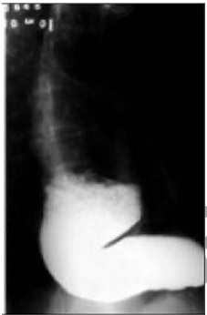
A Cardioplastia à Thal-Hatafuku e operação de Duhamel
B Operação de Duhamel e esofagectomia
C Cardiomiotomia à Heller e operação de Frey
D Cardioplastia à Thal-Hatafuku e esofagectomia
E Cardiomiotomia à Heller e operação de Whipple
Questão 1562 · Def inição e Sintomas · 4000190673Uma paciente de 40 anos de idade procura serviço de emergência queixando-se de dor em queimação localizada na região anterior do tórax, que se irradia para o pescoço e tem a alimentação e a posição supina como fatores de precipitação. A paciente negou que o esforço desencadeie o sintoma. O eletrocardiograma (ECG) seriado e os biomarcadores cardíacos se mostraram sem alterações. Com base no exposto, assinale a alternativa que indica o próximo passo a ser seguido nesse caso.
A Solicitar teste ergométrico.
B Solicitar parecer da psiquiatria.
C Prescrever inibidor de bomba de próton.
D Solicitar tomografia de tórax.
E Prescrever ácido acetilsalicílico.
Questão 1563 · Pico de f luxo expiratório · 4000190672Uma paciente de 25 anos de idade procurou atendimento ambulatorial para mostrar o resultado da monitorização do exame de peak- ow semanal, o qual revelou variações diárias acima de 30% quando no trabalho, e nenhuma variação quando afastada do trabalho. Na cha médica da paciente, havia a informação de quadro de tosse associada a chiados no peito e dispneia há 1 mês. A paciente trabalhava há 6 meses como cabeleireira. Nunca fumou. Nada foi encontrado no exame físico. A prova de função pulmonar revelou- se sem alterações. A respeito desse caso clínico, assinale a alternativa correta.
A Faz-se necessária a realização da prova de broncoprovocação para a confirmação do diagnóstico.
B Os sintomas e as alterações funcionais são transitórios e desaparecerão uma vez instituído o tratamento.
C O mecanismo fisiopatológico da presente doença é diferente do observado na asma alérgica.
D Pode-se confiar no resultado do exame de peak-flow, o qual define o diagnóstico.
E Deve-se iniciar o uso preventivo de broncodilatadores de curta duração 30 minutos antes do horário de entrada no trabalho.
Questão 1564 · · 4000190671Inibidores da enzima conversora de angiotensina e bloqueadores dos receptores AT1 da angiotensina II Um paciente de 60 anos de idade com diagnóstico de insu ciência cardíaca congestiva é submetido a exame ecocardiográfico que mostra diminuição da fração de ejeção sistólica do ventrículo esquerdo. Nesse caso, visando a reduzir o risco de mortalidade, a medicação mais apropriada a ser prescrita é
A ácido acetilsalicílico.
B digoxina.
C diurético.
D bloqueador de cálcio.
E inibidor da enzima conversora de angiotensina.
Questão 1565 · Quadro clínico · 4000190670Um paciente de 20 anos de idade, previamente saudável, procurou o pronto-socorro informando apresentar, há dois dias, quadro clínico constituído por febre de 38 ºC, associada a dor torácica respiratório-dependente à esquerda e tosse com eliminação de secreção amarelada. A radiogra a de tórax mostrou consolidação em língula. O exame físico revelou crepitações inspiratórias em região axilar esquerda, pressão arterial de 80 mmHg x 40 mmHg, SatO2 = 90%, FR = 32 irpm e FC = 110 bpm. Acerca do caso clínico, assinale a alternativa correta.
A O tratamento desse paciente só deve ser iniciado após o resultado do teste rápido do exame de escarro para bactérias e vírus.
B Há necessidade de serem feitos exames complementares para melhor estabelecer a gravidade do quadro clínico do paciente.
C Os dados obtidos com a história clínica, o exame físico e a radiografia de tórax são suficientes para o estabelecimento do diagnóstico.
D O uso de corticoide sistêmico deve ser evitado, pois pode agravar a condição clínica do paciente.
E Os critérios clínicos identificados indicam que o tratamento deve ocorrer em ambiente de unidade de terapia intensiva pela necessidade de se iniciar ventilação mecânica.
Questão 1566 · Nef rite intersticial aguda · 4000190669Uma paciente de 20 anos de idade apresenta perda aguda da função renal, associada a automedicação com anti-inflamatório, sendo feito o diagnóstico de nefrite intersticial aguda. Acerca dessa condição nefrológica, assinale a alternativa correta.
A Eosinofilia constitui manifestação clínica sugestiva do referido diagnóstico.
B O exame sumário de urina (EAS) dessa paciente costuma mostrar-se normal.
C O aumento difuso dos rins, visto na tomografia computadorizada, representa a confirmação de certeza do diagnóstico de afecção renal.
D A maioria dos pacientes nos quais o citado diagnóstico é confirmado evolui para insuficiência renal crônica terminal.
E Cerca de 75% dos casos estão relacionados a comprometimento associado de outros órgãos, como pele e pulmão.
Questão 1567 · Exame Físico · Epidemiologia e Fatores de Risco · 4000190668Uma paciente de 40 anos de idade, sem o diagnóstico de doenças prévias, procurou assistência no pronto- socorro por apresentar dor em cólica, localizada em hipocôndrio direito, com irradiação para a escápula direita 30 minutos após ter participado de uma feijoada da empresa em que trabalha. O sintoma associa-se a náuseas e vômitos. O exame físico mostrou a paciente com fácies de dor e com IMC igual a 40 kg/m². Nesse caso, a causa mais provável da dor é
A infarto agudo do miocárdio.
B úlcera péptica perfurada.
C pneumonia.
D cólica biliar.
E nefrolitíase.
Questão 1568 · Neurotoxoplasmose · 4000190667Um paciente de 36 anos de idade procurou o pronto-socorro apresentando episódio de convulsão há 30 minutos. Informou ter o diagnóstico de síndrome da imunode ciência humana. A tomogra a computadorizada de crânio revelou lesões múltiplas localizadas nos gânglios da base. A causa mais provável da lesão neurológica descrita é
A meningite viral.
B tuberculose.
C tumor maligno cerebral.
D neurocisticercose.
E toxoplasmose.
Questão 1569 · Hipertireoidismo subclínico · 4000190666Um paciente de 35 anos de idade, assintomático, procurou atendimento médico para realizar seu exame anual periódico exigido pela empresa em que trabalha. No exame físico, identi cou-se tireoide palpável com consistência lisa e elástica, não havendo relato de dor à palpação. A avaliação da função tireoidiana mostrou TSH aumentado com T4 livre normal. Que achado laboratorial confirma o provável diagnóstico desse paciente?
A Leucocitose com desvio à esquerda.
B Nível de T3 aumentado.
C Nódulo hipocaptante de tireoide.
D Presença de anticorpo antitireoperoxidase.
E Aumento do colesterol total.
Questão 1570 · Tratamento · 4000190665Um paciente de 40 anos de idade, com diagnóstico de leucemia mieloide aguda e neutropenia, apresenta quadro de febre de 39 ºC, em uso de esquema antimicrobiano constituído por vancomicina e carbapenêmico há cinco dias. O exame físico não mostra evidência clínica que justi que a persistência da febre, e o hemograma realizado tem resultado semelhante ao feito quando do início do tratamento do paciente. Assinale a alternativa que indica a medida mais adequada nesse caso.
A Suspender o esquema antimicrobiano.
B Realizar uma punção liquórica.
C Acrescentar um fármaco antifúngico ao esquema prescrito.
D Solicitar uma transfusão de sangue.
E Indicar o transplante de medula.
Questão 1571 · Diagnóstico eletrocardiograf ico do IAMCSST · 4000190664Um paciente de 61 anos de idade, sedentário, obeso e tabagista, há duas horas iniciou epigastralgia em queimação de forte intensidade após o almoço. O exame físico mostrou uma frequência cardíaca igual a 60 bpm, frequência respiratória = 25 irpm, SatO2 = 92% e PA = 100 mmHg x 60 mmHg, com ausculta cardíaca e pulmonar normais e sem edema de membros inferiores. Na admissão em uma unidade de pronto atendimento, ele realizou o eletrocardiograma (ECG) a seguir. Qual é a principal hipótese de diagnóstico?
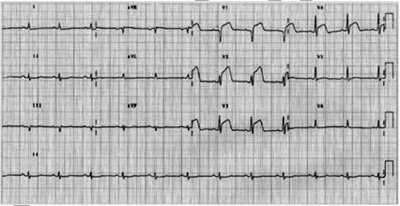
A Bloqueio de ramo direito.
B Infarto agudo do miocárdio.
C Síndrome de Wolf Parkinson White.
D Hipertonia vagal.
E Fibrilação atrial.
Questão 1572 · Critérios Maiores · Critérios menores · 4000190663A febre reumática (FR) é uma doença inflamatória, sistêmica, mais prevalente em crianças na faixa etária de 5 a 15 anos de idade, de agrada pelo articulações, coração e pele. Considerando a patologia descrita e os conhecimentos médicos atuais, assinale a alternativa correta.
A O diagnóstico do primeiro surto de FR é realizado por dois critérios maiores, como poliartralgia e febre.
B A artrite dá-se com o envolvimento de grandes e pequenas articulações, com caráter aditivo e progressivo.
C Na FR recorrente, podem-se considerar três critérios menores, independentemente do grupo de risco do paciente.
D O eritema marginado consiste em uma lesão macular com halo claro, que ocorre frequentemente na face e que é muito pruriginosa.
E O ecodopplercardiograma deve ser solicitado apenas quando, na ausculta cardíaca, for encontrado sopro mitral.
Questão 1573 · Mielomeningocele e def eitos de f echamento posterior do tubo neural · 4000190662Os disra smos espinhais ocultos são um grupo de afecções dorsais que existem abaixo de uma cobertura intacta de derme e epiderme. Como a pele e o tecido nervoso se originam do ectoderma, anomalias de ambos podem ocorrer simultaneamente. Em relação a esse tema, é correto afirmar que representa um estigma neurocutâneo
A mancha mongólica.
B sinus dérmicos.
C nevo auricular.
D pelos finos em região anal.
E ânus imperfurado.
Questão 1574 · Programa Nacional de Imunizações · 4000190661Quanto às vacinas do calendário infantil, assinale a alternativa correta.
A A vacina contra rotavírus está contraindicada em lactentes com refluxo gastroesofágico.
B Em caso de PPD negativo, após vacinação com a BCG, indica-se revacinação com a mesma vacina.
C Caso o lactente vomite a vacina de rotavírus aplicada, a indicação é aplicar nova dose imediatamente.
D Quem já teve coqueluche não precisa receber a imunização contra essa doença em razão de a doença conferir proteção permanente.
E A vacina de poliomielite oral bivalente é indicada para o reforço aos 15 meses e aos 4 anos de idade.
Questão 1575 · Varicela · 4000190660Uma criança com 7 anos de idade apresenta, há quatro dias, lesões que se iniciaram na face e no couro cabeludo, as quais rapidamente se disseminaram para o tronco. As lesões são caracterizadas por prurido intenso, polimor smo (mácula, pápula, vesícula e crosta) e são altamente contagiosas. A mãe procurou o posto de saúde, e o médico que a examinou prescreveu sintomáticos. Acerca do diagnóstico do citado quadro, assinale a alternativa correta
A O exantema papulovesicular acomete muito as extremidades, e o contágio ocorre através de fômites.
B Nas crianças, há um pródromo muito longo, em geral 10 dias, para depois as lesões iniciarem-se como crostas.
C Não é frequente o aparecimento de lesões em mucosa, como no palato e (ou) na mucosa vulvovaginal.
D A evolução lenta da doença faz com que tenhamos lesões pleomórficas, ou seja, em um estágio de lesão elementar.
E A incidência de complicações é relativamente maior em crianças menores de 1 ano de idade e em adultos.
Questão 1576 · Hiperbilirrubinemia não f isiológica · 4000190659Um recém-nascido (RN) a termo, adequado para a idade gestacional, apresenta quadro de icterícia, iniciada com 30 horas de vida. No quinto dia, teve um pico de hiperbilirrubinemia indireta de 15 mg/dL, com redução gradual. Está em aleitamento materno exclusivo, com bom ganho de peso, sem outras alterações ao exame físico. A respeito da icterícia do RN, assinale a alternativa correta.
A Na icterícia do leite materno, pode ocorrer aumento da bilirrubina indireta, havendo indicação de suspender o leite materno exclusivo.
B A terapêutica padrão-ouro da hiperbilirrubinemia indireta é a exsanguineotransfusão para qualquer valor sanguíneo.
C Prematuros com IG < 35 semanas apresentam, comumente, hiperbilirrubinemia direta, em razão de defeito na conjugação da bilirrubina.
D Deve-se solicitar o grupo sanguíneo da mãe e do RN, pois a incompatibilidade ABO leva à icterícia nas primeiras 24 a 36 horas de vida.
E Segundo as zonas de Kramer, observa-se o nível mais alto de bilirrubina na zona 3, cabeça e pescoço.
Questão 1577 · Cuidados neonatais · 4000190658O Método Canguru é um modelo de atenção perinatal voltado para a atenção quali cada e humanizada, que reúne estratégias de intervenção biopsicossocial com uma ambiência que favoreça o cuidado ao recém- nascido (RN) e à sua família. O método promove a participação dos pais e da família nos cuidados neonatais. Faz parte do método o contato pele a pele, que começa de forma precoce e crescente desde o toque, evoluindo até a posição canguru. No que se refere a esse método, assinale a alternativa correta.
A Deve ser aplicado ao RN recebendo nutrição parenteral.
B Indicado para RN prematuro e (ou) de baixo peso.
C Pode atrasar o desenvolvimento neuropsicomotor por causa da posição.
D Impossibilita ao RN manter o seu controle térmico.
E Deve ser aplicado quando o RN atingir 2.000 gramas.
Questão 1578 · Síndrome de Down · 4000190657Acerca do tema síndrome de Down, assinale a alternativa correta.
A Por causa de o risco de hipotireoidismo ser alto ao longo da vida, deve-se solicitar a dosagem de TSH anualmente.
B O ecocardiograma se faz necessário caso se auscultem sopros cardíacos, pois cardiopatia é rara nesses pacientes.
C Recomenda-se evitar cambalhotas, futebol e mergulhos em razão da língua protusa da micrognatia.
D Há um calendário de imunização específico para as crianças com síndrome de Down, com diferenças nas idades das vacinas.
E Intervenções como fisioterapia motora e fonoaudiologia são indicadas somente quando há queixa específica.
Questão 1579 · Complicações da prematuridade · Classif icação de prematuridade · 4000190656Certo recém-nascido (RN) de 30 semanas, nascido de parto cesariana, com peso de nascimento = 1.000 gramas, foi internado em unidade de terapia intensiva neonatal. Com sete dias de vida, iniciou episódios de apneia, com bradicardia e cianose. No que tange à apneia do RN, assinale a alternativa correta.
A A utilização de sulfato de magnésio na parturiente pode ser causa de apneia em RN prematuros.
B Os eventos de apneia em RN pré-termo aumentam por volta do final do primeiro mês de vida.
C As pausas respiratórias periódicas ocorrem com importante queda da saturação e duram maior tempo que a apneia.
D A utilização do CPAP nasal não está indicada por não conseguir proporcionar adequadas pressões e (ou) volume residual pulmonar.
E O tratamento medicamentoso de escolha da apneia primária da prematuridade é a teofilina, pois tem menos efeitos colaterais.
Questão 1580 · Sistema Respiratório · 4000190655Um pré-escolar de 3 anos de idade comparece, com os pais dele, à consulta ambulatorial. Eles relatam que a criança apresenta sintomas recorrentes de tosse persistente, muito baixo ganho de peso e aumento da frequência das evacuações com fezes gordurosas. Na história patológica pregressa, observa-se o quadro a seguir. No quinto dia de vida: íleo meconial; aos 12 meses: internação por bronquiolite grave e, posteriormente, várias internações por sibilância recorrente; e aos 15 meses: bronquiectasias. Na história familiar, sabe-se que o avô faleceu por doença respiratória crônica, que os pais não souberam especificar. Qual é o diagnóstico mais provável desse caso hipotético?
A Asma crônica grave.
B Coqueluche.
C Fibrose cística.
D Cirrose.
E Alergia a leite de vaca.
Questão 1581 · Ventilação · Compressões torácicas · 4000190654A parada cardiorrespiratória (PCR) é a cessação da atividade mecânica cardíaca e caz, confirmada pela tríade inconsciência, ausência de pulso central e de respiração. Muitas vezes, na infância, ela está associada a uma condição reversível; dessa forma, o seu tratamento precoce e bem conduzido pode melhorar o prognóstico do atendimento da criança. O atendimento da PCR inicia-se com o suporte básico de vida (SBV). Quanto às recomendações de SBV em pediatria, assinale a alternativa correta.
A O evento cardíaco primário é causa mais comum de PCR em lactentes e crianças do que por hipoxemia grave.
B Deve-se atrasar o uso de epinefrina na PCR pediátrica, com o objetivo de aguardar a resposta às compressões torácicas.
C Em lactentes até 1 ano de idade, o socorrista deve realizar as compressões torácicas com a mão espalmada em todo o tórax e com o braço estendido.
D As compressões torácicas e a ventilação devem ser sincronizadas. Em crianças, devem ser 2 compressões para 15 ventilações.
E A sequência do SBV deve ser C-A- B (compressão – via aérea – respiração) ao invés de de A-B-C (via aérea – respiração – circulação/compressão).
Questão 1582 · Hipertensão gestacional · Tratamento f armacológico · 4000190653O uso de algumas medicações durante o ciclo gravídico pode interferir no desenvolvimento fetal de diversas maneiras. Em relação aos medicamentos e às possíveis malformações fetais associadas, assinale a alternativa correta.
A Losartana: insuficiência renal fetal; talidomida: focomelia; nimesulida: vasoconstricção do ducto arterioso.
B Digoxina: malformações cardíacas; captopril: polidrâmnio; heparina: síndrome de Down.
C Varfarina: síndrome varfarínica fetal; tenoxicam: vasoconstricção do ducto venoso; digoxina: agenesia renal unilateral.
D Heparina: abortamento; lamotrigina: defeito do tubo neural; talidomida: defeito do tubo neural.
E Losartana: focomelia; digoxina: agenesia renal; paracetamol: agenesia hepática.
Questão 1583 · Diagnóstico · 4000190652O diagnóstico de diabetes gestacional vem sofrendo alterações ao longo dos anos, porém é um tema bastante importante no que diz respeito à assistência maternofetal. Acerca desse assunto, assinale a alternativa correta.
A O diagnóstico de diabetes prévio à gravidez, ou overt diabetes, ocorre quando se obtém uma hemoglobina glicada acima de 5,7% e (ou) uma glicemia de jejum entre 100 e 126.
B O tratamento inicial comumente relacionado a diabetes gestacional inclui o uso de hipoglicemiantes orais como a metformina, com estudos que descartam o risco de malformações fetais.
C As complicações relacionadas a diabetes incluem prematuridade, oligoâmnio, macrossomia fetal e morte súbita fetal, independentemente do controle glicêmico adequado.
D O diagnóstico de diabetes gestacional pode ser feito por meio do teste de tolerância à glicose pós 75 g de dextrosol com valores de: jejum, acima de 92; 1 hora após, acima de 180; e 2 horas após, acima de 153.
E A associação entre a diabetes e a dislipidemia e (ou) a obesidade deve ser considerada e, muitas vezes, o uso de medicações hipolipemiantes pode se relacionar a uma diminuição dos riscos cardiovasculares.
Questão 1584 · Síndrome HELLP · 4000190651As doenças hipertensivas da gestação ainda representam uma importante causa de óbito materno no Brasil. No que se refere ao diagnóstico e ao manejo dessas condições, assinale a alternativa correta.
A O diagnóstico de pré-eclâmpsia sempre exige a comprovação de proteinúria > 300 mg / 24 horas.
B O uso do sulfato de magnésio, no contexto do manejo da pré-eclâmpsia com sinais de gravidade, tem como objetivo a neuroproteção fetal.
C A observação de níveis pressóricos superiores a 140 mmHg x 90 mmHg antes das 20 semanas de idade gestacional, sem proteinúria associada, permite o diagnóstico de hipertensão gestacional.
D Nos casos de hipertensão arterial sistêmica prévia à gestação, a recomendação atual é que seja mantido o anti-hipertensivo de uso habitual da paciente, apenas com ajuste de posologia, independentemente da classe a que pertencer o medicamento.
E O manejo dos distúrbios hipertensivos da gestação inclui a solicitação de rotina laboratorial, apresentando como objetivo, entre outros, a identificação de critérios laboratoriais de gravidade e síndrome HELLP.
Questão 1585 · Quadro clínico · 4000190650Os sangramentos que ocorrem na primeira metade da gestação representam uma grande porcentagem dos atendimentos nas emergências gineco-obstétricas. A respeito desse diagnóstico diferencial e do respectivo manejo, assinale a alternativa correta.
A Atraso menstrual associado a queixa de dor abdominal ou pélvica, com ou sem sangramento vaginal, deve suscitar a hipótese diagnóstica de gestação ectópica.
B Exame especular revelando sangramento leve a moderado e colo uterino entreaberto com eliminação de material sugestivo de restos ovulares permitem o diagnóstico de abortamento em curso, que deve ser sempre imediatamente abordado com conduta ativa, por meio de aspiração manual intrauterina (AMIU).
C Uma dosagem sérica de beta hCG no contexto de sangramento no primeiro trimestre gestacional, com níveis superiores a 100.000 mUI/mL, deve sempre suscitar a hipótese diagnóstica de abortamento, sem pensar em doença trofoblástica gestacional.
D Nos casos de ameaça de abortamento, evidencia-se colo uterino aberto com saída de restos ovulares ao exame especular, bem como características de viabilidade gestacional à ultrassonografia.
E Os casos de abortamento infectado devem ser conduzidos com histerectomia pelo risco de sepse, com tratamento com antibioticoterapia posterior ao procedimento.
Questão 1586 · Parto taquitócito · 4000190649Fonte da imagem: Parto, aborto e puerpério: assistência humanizada à mulher - Ministério da Saúde, 2001. Com base nos dados do partograma apresentado, assinale a alternativa que indica o diagnóstico correto.
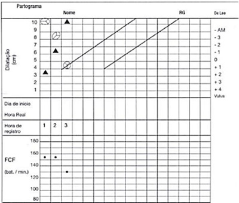
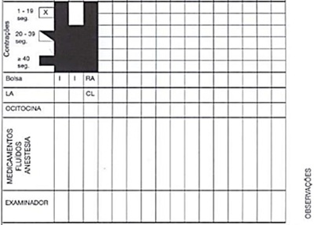
A Parto eutócico
B Parto taquitócico
C Parada secundária da descida
D Parada secundária da dilatação
E Período pélvico prolongado
Questão 1587 · Quadro Clínico · 4000190648Os miomas são tumores benignos uterinos, considerados uma das patologias mais prevalentes em mulheres na idade fértil. No que tange aos miomas, assinale a alternativa correta.
A O mioma pode se degenerar, aumentando o risco de leiomiosarcoma, sendo quadro bastante frequente, e deve ser tratado de forma cirúrgica na sua quase totalidade dos casos.
B O quadro clínico mais comum associado ao mioma é o sangramento uterino anormal, e a localização mais relacionada ao sangramento é a submucosa.
C Os miomas pediculados subserosos podem se apresentar como massas abdominais volumosas, frequentemente levando à obstrução intestinal, e devem ser ressecados sempre que possível.
D A embolização dos miomas consiste em um tratamento minimamente invasivo, com boa aplicação nas pacientes com múltiplos miomas e desejo de gravidez posterior.
E A histerectomia deve ser sempre encorajada nas pacientes com prole constituída, associada à miomatose uterina, mesmo nas pacientes pós-menopausa pelo risco de transformação maligna nas idades mais avançadas.
Questão 1588 · Rastreamento do câncer de colo do útero · 4000190647A colpocitologia oncótica, ou citologia vaginal, segue representando método importante no rastreio do câncer de colo uterino no contexto do Sistema Único de Saúde. Quanto à interpretação dos achados citológicos, assinale a alternativa correta.
A A história de radioterapia pélvica ou de quimioterapia prévia não gera alterações na interpretação dos achados citológicos, uma vez que não leva a alterações celulares mimetizadoras de lesões intraepiteliais.
B A presença de dispositivo intrauterino não muda a interpretação dos exames, não necessitando de tal informação na solicitação do exame por não alterar os achados da citologia.
C O achado de Ascus em paciente com idade inferior a 30 anos deve suscitar prontamente a solicitação de exame colposcópico com biópsia.
D A coilocitose corresponde ao achado citológico de halo escurecido perinuclear, associado a alterações nucleares características, como diminuição do tamanho nuclear.
E É necessário ter atenção para que não haja confusão entre o achado de coilocitose e o acúmulo fisiológico de glicogênio intracelular. Nesse último caso, o núcleo permanecerá picnótico, como é esperado na célula superficial normal.
Questão 1589 · Dor mamária mastalgia · 4000190646Um dos sintomas mais comuns associados às pacientes na idade fértil relaciona-se à dor cíclica das mamas. Acerca das patologias mamárias, assinale a alternativa correta.
A A mastodinia cíclica é um dos sintomas mais comuns relacionados ao período fértil da paciente e, quase na totalidade dos casos, possui características de benignidade, sendo raramente encontrada alguma alteração no exame físico ou nos exames complementares.
B O câncer de mama possui como fatores de risco a presença de dor mamária, associada a nodulações móveis, regulares, de consistência fibroelástica, que devem ser biopsiadas sempre que possível.
C A presença de cistos mamários medindo acima de 2 cm raramente associa-se com a dor mamária, sendo possível o tratamento medicamentoso com uso de antagonistas dopaminérgicos como a cabergolina.
D A descarga papilar escurecida relaciona-se com aumento da secreção de prolactina, permitindo uma secreção láctea acumulada que adquire coloração amarronzada ao se exteriorizar.
E O exame de rastreio do câncer de mama inclui a ultrassonografia mamária com possibilidade de rastreio precoce de microcalcificações, que são lesões precursoras de carcinomas intraductais.
Questão 1590 · Ecossistema e mecanismos de def esa vaginal · Tipos de f lora vaginal · 4000190645Com relação ao exame a fresco e à coloração por Gram da secreção vaginal, no contexto de caso clínico de vulvovaginite, assinale a alternativa correta.
A A identificação de leveduras e (ou) pseudo-hifas no exame a fresco favorece o diagnóstico de tricomoníase.
B A presença de micro-organismos flagelados no exame a fresco favorece o diagnóstico de candidíase vulvovaginal.
C Na coloração pelo Gram, a presença de bacilos Gram-negativos fusiformes é sugestiva de Mobiluncus spp.
D A identificação de "clue cells", ou células alvo, no exame a fresco é altamente preditiva da presença de vaginose citolítica.
E O índice de Nugent pode ser utilizado na investigação de vulvovaginites e tem como objetivo averiguar a possibilidade de candidíase vulvovaginal, a partir de uma gradação em cruzes da presença de leveduras e pseudo-hifas por campo de 100 x.
Questão 1591 · Prolapsos de órgãos pélvicos · 4000190644No que se refere ao prolapso genital, assinale a alternativa correta.
A As pacientes com poucos ou nenhum sintoma, mesmo com prolapsos de graus pequenos (como grau 2), devem ser orientadas a realizar procedimentos cirúrgicos, a fim de prevenir a progressão da doença.
B A classificação de Baden-Walker utiliza, de forma quantitativa, as medidas dos diversos compartimentos do assoalho pélvico, permitindo um método científico mais adequado para a classificação dos prolapsos.
C O prolapso possui um impacto importante na qualidade de vida das pacientes e deve ser avaliado de forma individualizada, para um melhor tratamento dessas pacientes.
D Os fatores de risco dos prolapsos costumam estar relacionados somente aos partos vaginais e instrumentalizados, sendo a incidência de prolapsos nas pacientes nulíparas considerada rara.
E Não há tratamento conservador nos casos de prolapso vaginal descritos na literatura, sendo somente o tratamento cirúrgico possível.
Questão 1592 · Política Nacional de Atenção Básica PNAB · 4000190643De acordo com
A primeiro contato, a coordenação do cuidado e a competência cultural.
B integralidade, a competência cultural e a capilaridade.
C centralidade na família, o primeiro contato e a humanização.
D universalidade, a orientação para a comunidade e a coordenação do cuidado.
E humanização, a longitudinalidade e a integralidade.
Questão 1593 · Financiamento do SUS · 4000190642A Portaria no 2.979/2019 instituiu o Programa Previne Brasil, estabelecendo um novo modelo de financiamento de custeio da Atenção Primária à Saúde (APS) no âmbito do Sistema Único de Saúde (SUS). Acerca da referida Portaria, assinale a alternativa correta.
A A capitação ponderada corresponde ao extinto Piso de Atenção Básica variável (PAB variável.
B A capitação ponderada leva em conta a vulnerabilidade socioeconômica e o perfil demográfico da população, além da classificação geográfica do município.
C O pagamento por desempenho será executado apenas para as equipes de Saúde da Família, ficando excluída a produtividade das equipes de APS.
D A lógica de pagamento por desempenho na atenção básica é inédita no SUS, sendo destaque para a ampliação do financiamento neste nível de complexidade.
E O pagamento para ações estratégicas corresponde ao extinto Piso de Atenção Básica fixo (PAB fixo).
Questão 1594 · Etiopatogenia · 4000190641John Snow é considerado por muitos o pai da epidemiologia. Seu feito foi ter conseguido relacionar a epidemia de uma doença que assolou Londres nos anos de 1850 com o consumo de água contaminada, e não em razão das explicações apresentadas pela teoria miasmática, vigente à época. O fato mais impressionante é que foi somente após algumas décadas deste evento que a humanidade conseguiu desenvolver seus conhecimentos a respeito de microbiologia e comprovar que esta determinada doença estava relacionada a um microrganismo presente na água consumida pelos humanos. As informações mencionadas referem-se à
A hepatite A.
B leptospirose.
C cólera.
D esquistossomose.
E febre tifoide.
Questão 1595 · Sistemas de Saúde e Modelos Assistenciais de Saúde · 4000190640Em seu clássico texto etapas na formação da medicina social e, para tanto, traz exemplos de três países europeus, associando-os a cada uma dessas etapas. Com base nisso, assinale a alternativa que apresenta o país e as características correlacionados de maneira correta.
A Alemanha - Medicina da força de trabalho. Lei dos pobres. Vacina obrigatória. Localização e destruição de lugares insalubres. Controle da saúde e dos corpos dos mais pobres, tornando-os mais aptos ao trabalho.
B Inglaterra - Medicina de estado. Polícia sanitária. Normalização da prática e do saber médicos. Organização administrativa da atividade dos médicos.
C Portugal - Medicina da força de trabalho. Lei dos pobres. Vacina obrigatória. Controle da circulação da água e do ar. Emigração de cemitérios para a periferia da cidade.
D França - Medicina urbana. Modelo médico e político da quarentena. Controle da circulação da água e do ar. Emigração de cemitérios para a periferia da cidade.
E Espanha - Medicina de estado. Polícia sanitária. Normalização da prática e do saber médicos. Controle da saúde e dos corpos dos mais pobres, tornando-os mais aptos ao trabalho.
Questão 1596 · Política Nacional de Atenção Básica PNAB · 4000190639Proposta de um programa específico destinado a populações e regiões pobres a quem se oferece, exclusivamente, um conjunto de tecnologias simples e de baixo custo, provido por pessoal de baixa quali cação pro ssional e sem a possibilidade de referência a níveis de atenção de maior densidade tecnológica. A descrição apresentada é característica da
A Atenção Primária seletiva.
B Clínica Ampliada.
C Medicina Centrada na Pessoa.
D Estratégia Saúde da Família.
E Promoção da Saúde.
Questão 1597 · Prevenção Quaternária · 4000190638Detecção de indivíduos em risco de tratamento excessivo para protegê-los de novas intervenções médicas inapropriadas e sugerir-lhes alternativas eticamente aceitáveis. Esse é o conceito de
A medicina baseada em evidências.
B prevenção quaternária.
C não maleficência.
D medicina defensiva.
E medicalização da vida.
Questão 1598 · Sistema de Inf ormação de Agravos de Notif icação SINAN · 4000190637Os sistemas de informação do Sistema Único de Saúde são importantes ferramentas para se conhecer, avaliar e planejar a saúde pública no Brasil. Assinale a alternativa que representa a fonte que alimenta o SINAN.
A Declaração de nascido vivo
B Declaração de óbito
C Autorização de internação hospitalar
D Notificação compulsória
E Prontuário eletrônico do cidadão
Questão 1599 · Sociedade Brasileira de Imunizações · 4000190636Segundo a Sociedade Brasileira de Imunizações (SBIm), ao nascer, uma criança deverá receber certas vacinas. Assinale a alternativa que indica essas vacinas.
A Hepatite A e poliomielite
B Tríplice viral e rotavírus
C BCG e hepatite B
D Varicela e pneumocócica
E Meningocócica B e hepatite A
Questão 1600 · A carga de doenças no Brasil tripla carga de doenças · 4000190635Para Eugênio Vilaça Mendes (2010), em de atenção à saúde que se manifesta, em maior ou menor grau, em todos os países do mundo, decorre de uma incoerência entre uma situação de saúde de transição demográ ca e de transição epidemiológica completa nos países desenvolvidos e [...] tripla carga de doenças nos países em desenvolvimento e o modo como se estruturam as respostas sociais deliberadas às necessidades das populações". No Brasil, a tripla carga de doenças de relaciona com
A doenças crônicas; transtornos mentais e comportamentais; e neoplasias.
B causas externas; neoplasias; e doenças endócrinas, metabólicas e nutricionais.
C doenças infecciosas, parasitárias e problemas de saúde reprodutiva; neoplasias; e transtornos mentais e comportamentais.
D doenças endócrinas, metabólicas e nutricionais; transtornos mentais e comportamentais; e doenças infecciosas e parasitárias.
E doenças infecciosas, parasitárias e problemas de saúde reprodutiva; causas externas; e doenças crônicas.
Revisar: possível letra faltando em enunciado
Questão 1601 · Declaração de Nascido Vivo DN · 4000190634A declaração de nascido vivo tem importância clínico-assistencial, social e epidemiológica. Quando se realiza um parto hospitalar, seu preenchimento em três deve seguir a correta destinação para que sua missão seja alcançada. Acerca desse tema, assinale a alternativa que corresponde ao correto encaminhamento de via.
A A primeira via é branca e permanece no hospital até ser coletada pela Secretaria de Saúde para fins epidemiológicos.
B A primeira via é amarela e deve ser entregue à família a fim de ser levada ao cartório e para realização do registro civil.
C A segunda via é rosa e deve ficar arquivada no hospital, junto ao prontuário médico do recém- nascido.
D A segunda via é branca e deve ser entregue à família a fim de ser levada ao cartório e para realização do registro civil.
E A terceira via é rosa e permanece no hospital até ser coletada pela Secretaria de Saúde para fins epidemiológicos.
Questão 1602 · Diagnóstico · Manif estações clínicas · 4000190631Os principais fatores de risco para carcinoma hepatocelular (CHC) são:
A Cirrose hepática, infecções pelos vírus da hepatite C e não da B, contaminação de alimentos por aflatoxinas, ingestão alcoólica abusiva, diabetes, obesidade, doença hepática gordurosa não alcoólica e hemocromatose hereditária.
B Cirrose hepática, infecções pelos vírus da hepatite C e B, contaminação de alimentos por aflatoxinas, ingestão alcoólica abusiva, diabetes, obesidade, doença hepática gordurosa não alcoólica e nunca a hemocromatose hereditária.
C Cirrose hepática, infecções pelos vírus da hepatite C e B, contaminação de alimentos por aflatoxinas, mas não a ingestão alcoólica abusiva, diabetes, obesidade, doença hepática gordurosa não alcoólica e hemocromatose hereditária.
D Cirrose hepática, infecções pelos vírus da hepatite C e B, contaminação de alimentos por aflatoxinas, ingestão alcoólica abusiva, diabetes, obesidade, doença hepática gordurosa não alcoólica e hemocromatose hereditária.
Questão 1603 · Agente etiológico · Epidemiologia · 4000190629A disseminação HTLV-1/2 pelo organismo humano determina também a possibilidade de transmissão dos vírus:
A Por transfusão de sangue e hemocomponentes, pelo uso de drogas injetáveis, pelo transplante de órgãos e por relações sexuais, do que decorre a grande variabilidade de manifestações clínicas associadas à infecção, acometendo diversos órgãos-alvo no corpo humano.
B Por transfusão de sangue e hemocomponentes, pelo uso de drogas injetáveis, pelo transplante de órgãos e por relações sexuais, do que decorre a grande invariabilidade de manifestações clínicas associadas à infecção, acometendo diversos órgãos-alvo no corpo humano.
C Por transfusão de sangue e hemocomponentes, pelo uso de drogas injetáveis, pelo transplante de órgãos e nunca por relações sexuais, do que decorre a grande variabilidade de manifestações clínicas associadas à infecção, acometendo diversos órgãos-alvo no corpo humano.
D Por transfusão de sangue e não por hemocomponentes, pelo uso de drogas injetáveis, pelo transplante de órgãos e por relações sexuais, do que decorre a grande variabilidade de manifestações clínicas associadas à infecção, acometendo diversos órgãos-alvo no corpo humano.
Questão 1604 · Cardiomiopatia de Takotsubo · 4000190627Takotsubo, se refere a disfunção ventricular, sendo:
A Esquerda aguda não reversível, em que 30% dos pacientes são mulheres, especialmente pósmenopausa.
B Esquerda aguda reversível, em que 90% dos pacientes são mulheres, especialmente prémenopausa.
C Esquerda aguda reversível, em que 90% dos pacientes são mulheres, especialmente pósmenopausa.
D Direita aguda reversível, em que 90% dos pacientes são mulheres, especialmente pósmenopausa.
Questão 1605 · Classif icação clínica · 4000190626Para a denominação da resposta ventricular, num ECG com FA:
A Deve-se calcular a FC (bpm) a partir de um traçado de 6 s (número de QRS neste período multiplicado por 10).
B Deve-se calcular a FC (bpm) a partir de um traçado de 6 s (número de QRS neste período multiplicado por 100).
C Deve-se calcular a FC (bpm) a partir de um traçado de 56 s (número de QRS neste período multiplicado por 10).
D Deve-se calcular a FC (bpm) a partir de um traçado de 6 s (número de QRS neste período dividido por 10).
Questão 1606 · Cardiomiopatia periparto · 4000190625Cardiomiopatia periparto, é:
A Definida como disfunção ventricular direita no final da gravidez ou nos primeiros meses pósparto, sem outra causa evidente.
B Definida como disfunção ventricular esquerda no final da gravidez ou nos primeiros meses pósparto, com outra causa evidente.
C Definida como disfunção ventricular esquerda no final da gravidez ou nos primeiros meses pósparto, sem outra causa evidente.
D Definida como disfunção atrial esquerda no final da gravidez ou nos primeiros meses pós-parto, sem outra causa evidente.
Questão 1607 · Diabetes Mellitus tipo 1B · Critérios diagnósticos · Diabetes Mellitus tipo 1A · 4000190624Triagem para risco de DM tipo 1 (DM1) com dosagem de autoanticorpos:
A Nunca deve ser considerada para familiares de primeiro grau de pessoas acometidas apenas se houver possibilidade de inserir pessoas de risco em estudos clínicos visando prevenção do DM.
B Deve ser considerada para familiares de primeiro grau de pessoas acometidas apenas se houver possibilidade de inserir pessoas de risco em estudos clínicos visando prevenção do DM.
C Deve ser considerada para familiares de segundo grau de pessoas acometidas apenas se houver possibilidade de inserir pessoas de risco em estudos clínicos visando prevenção do DM.
D Deve ser considerada para familiares de primeiro grau de pessoas acometidas apenas se houver possibilidade de inserir pessoas de risco em estudos clínicos, nunca visando prevenção do DM.
Questão 1608 · Vias Aéreas Def initivas Não Cirúrgicas · 4000190623Qual das seguintes drogas é a melhor escolha para intubação de um paciente politraumatizado com instabilidade hemodinâmica?
A Tipoental.
B Propofol.
C Etomidato.
D Fentanila.
Questão 1609 · Trauma Abdominal Fechado · 4000190622Com relação à avaliação de paciente com suspeita de trauma abdominal, é possível afirmar que:
A Uma E-FAST negativa afasta lesão intra-abdominal.
B Um aumento de transaminases (TGO maior do que 200U/L ou TGP maior do que 125U/L) está associado a trauma contuso abdominal.
C A lesão do cinto de segurança (abrasão e hematoma infraumbilical) não aumenta o risco de trauma abdominal.
D O melhor exame de imagem inicial é a ecografia abdominal se houver suspeita de lesão pancreática.
Questão 1610 · Tratamento não medicamentoso · 4000190621Assinale a alternativa correta sobre a contagem de carboidratos no paciente com diabetes melito.
A Consiste em conhecer a quantidade de alimentos que se deve ingerir em cada refeição.
B Consiste em conhecer a quantidade de alimentos que não se deve ingerir em cada refeição.
C Consiste em fazer refeições isentas de carboidratos.
D Consiste em conhecer a quantidade de alimentos que será ingerida e aplicar a quantidade de insulina necessária para cada refeição.
Questão 1611 · Manif estações clínicas · Classif icação · 4000190620Sobre o diagnóstico de encefalite, de acordo com o International Encephalitis Consortium (IEC), assinale a alternativa correta.
A Se houver três critérios menores, não é necessário que haja alteração do estado mental para o diagnóstico de encefalite.
B Apenas com a presença de alteração do estado mental mais três ou mais sinais menores pode-se confirmar o diagnóstico de encefalite.
C A presença de alteração do estado mental e a febre confirmam o diagnóstico de encefalite.
D A presença de mais de cem leucócitos no líquor é critério menor para diagnóstico de encefalite.
Questão 1612 · Hepatoesplenomegalias crônicas · 4000190619Com relação às infecções bacterianas consideradas diagnósticos diferenciais de hepatoesplenomegalias febril, assinale a alternativa incorreta.
A Brucelose
B Endocardite
C Abscesso cutâneo
D Tuberculose
Questão 1613 · Encef alopatia HipóxicoIsquêmica · 4000190618Assinale a alternativa que apresenta a denominação para alteração abrupta e patológica na função cognitiva e/ou comportamento causada por um distúrbio cerebral funcional ou estrutural subjacente:
A Meningite.
B Encefalite.
C Anoxia.
D Encefalopatia aguda.
Questão 1614 · Outros tratamentos · 4000190617Assinale a alternativa que contém uma indicação de ECMO VV.
A Arritmias refratárias e com instabilidade hemodinâmica.
B Suporte ventilatório mecânico invasivo por menos de 14 dias.
C Ponte para transplante cardíaco ou VAD.
D PCR.
Questão 1615 · Miocardite · 4000190616Assinale a alternativa incorreta sobre o diagnóstico da miocardite.
A O ECG apresenta alterações em quase todos os casos de miocardite, sendo a inversão da onda T a principal alteração.
B A biopsia endomiocárdica é o padrão ouro para o diagnóstico, porém tem baixa sensibilidade.
C A sorologia viral deve ser solicitada na suspeita de miocardite, visto que a etiologia viral é a mais comum.
D A RNM cardíaca é capaz de avaliar sinais de inflamação e fibrose miocárdica, porém é incapaz de detectar a presença do vírus no miocárdio.
Questão 1616 · Def eito de septo atriventricular total · Síndrome de Down · 4000190615Qual é a cardiopatia cirúrgica mais comum na Trissomia do 21?
A DSAVt.
B CIA.
C Tetralogia de Fallot.
D CIV.
Questão 1617 · Cutâneo Subcutâneo e Mucosa · Sistema Respiratório · 4000190614Quando a urticária pode ser o início de uma reação anafilática mais grave?
A Quando a pele apresentar urticária disseminada com angioedema.
B Quando o prurido for intenso sem melhora com anti-histamínicos.
C Quando houver dor abdominal e vômitos no dia anterior à urticária.
D Quando houver acometimento rápido da pele associado à falta de ar e sibilos.
Questão 1618 · Ceco e Apêndice Vermif orme · Outros · 4000190613Assinale a alternativa correta sobre o apêndice cecal/vermiforme.
A O apêndice vermiforme é um divertículo intestinal com fundo cego (de aproximadamente 10 cm de comprimento) que contém massas de tecido linfóide. Da forma mais habitual origina-se na face posteromedial do ceco, inferiormente à junção ileocecal.
B O apêndice vermiforme é desprovido de mesentério e tem sua irrigação a partir da artéria ileocecal, ramo direito da artéria mesentérica inferior.
C A posição do apêndice vermiforme é fixa e geralmente é anterior ao ceco.
D A artéria apendicular, um ramo da artéria ileocólica, irriga o apêndice vermiforme. A drenagem venosa do ceco e do apêndice vermiforme segue por uma tributária da veia mesentérica inferior, a veia ileocólica.
Questão 1619 · Patogênese e Apresentação Clínica · Tratamento · 4000190612Assinale a alternativa incorreta.
A A estenose pilórica hipertrófica congênita é um espessamento acentuado do músculo liso (hipertrofia) no piloro que afeta aproximadamente 1 em cada 150 lactentes do sexo masculino e 1 em cada 750 lactentes do sexo feminino.
B Normalmente, a peristalse gástrica empurra o quimo através do canal e do óstio pilórico até o intestino delgado, com intervalos irregulares. Nos neonatos com estenose pilórica, o piloro superdesenvolvido e alongado é duro e o canal pilórico é estreito, causando resistência ao esvaziamento gástrico.
C Pode haver dilatação da parte proximal do estômago secundária à estenose pilórica. Embora a causa de estenose pilórica hipertrófica congênita seja desconhecida, parece haver participação de fatores genéticos devido à alta incidência desse distúrbio em gêmeos monozigóticos.
D O tratamento preconizado é clínico com inibidor de bomba de prótons e bloqueadores de canais de cálcio.
Questão 1620 · Manif estações Clínicas · Tratamento · 4000190611Sobre o divertículo de Meckel, assinale a correta.
A É uma anomalia congênita que ocorre em 1 a 2% da população. Um remanescente da parte proximal do ducto onfalomesentérico embrionário (pedículo vitelino), o divertículo geralmente apresenta-se como uma bolsa digitiforme. Está no local de fixação do ducto onfalomesentérico na margem mesentérica do jejuno.
B O divertículo geralmente está localizado a 30 a 60 cm da junção ileocecal em lactentes e a 50 cm em adultos. Pode estar livre ou fixado ao umbigo. Embora sua túnica mucosa seja principalmente do tipo ileal, também pode incluir áreas de tecido gástrico produtor de ácido, tecido pancreático, ou mucosa jejunal ou colônica.
C Um divertículo ileal pode inflamar e causar dor semelhante àquela causada pela apendicite. Apresenta bons resultados quando tratado clinicamente em processos inflamatórios agudos perfurados.
D Sua inflamação é a causa mais comum de abdome agudo inflamatório em adultos.
Questão 1621 · Fases da Apendicite Aguda · 4000190610Sobre a apendicite aguda, assinale a correta.
A A inflamação aguda do apêndice vermiforme, apendicite, é uma causa rara de abdome agudo. Em geral, a compressão digital sobre o ponto de Murphy provoca dor abdominal máxima. A apendicite em jovens geralmente é causada por hiperplasia dos folículos linfáticos no apêndice vermiforme, o que oclui o lúmen. Em pessoas idosas, a obstrução geralmente é causada por um fecálito (coprólito), uma concreção que se forma ao redor de um núcleo de material fecal.
B Quando as secreções do apêndice vermiforme não conseguem sair, há edema do apêndice vermiforme, que distende o peritônio parietal. No início, a apendicite geralmente causa dor vaga na região periumbilical, porque as fibras álgicas aferentes entram na medula espinal no nível de T10. Mais tarde, a dor intensa no quadrante inferior direito é provocada pela irritação do peritônio visceral que reveste a parede posterior do abdome.
C A infecção aguda do apêndice vermiforme pode resultar em trombose na artéria apendicular, o que costuma resultar em isquemia, gangrena e perfuração de um apêndice vermiforme com inflamação aguda. A ruptura do apêndice vermiforme resulta em infecção do peritônio (peritonite), aumento da dor abdominal, náusea e/ou vômito, e rigidez abdominal (enrijecimento dos músculos abdominais). A flexão da coxa direita alivia a dor porque causa relaxamento do músculo psoas, um flexor da coxa.
D É mais comum em crianças abaixo de 2 anos de idade, e adultos acima de 60 anos.
Questão 1622 · Volvo de Sigmoide · 4000190609A ilustração abaixo representa de forma esquemática e radiológica uma das causas mais comum de abdome agudo obstrutivo. São achados clássicos encontrados no/na:
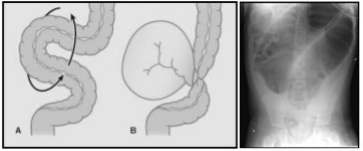
A Diverticulite aguda.
B Volvo de sigmoide.
C Volvo de intestino médio.
D Doença de Hirschsprung.
Questão 1623 · Fisiopatologia · 4000190607Sobre a veia femoral, assinale a alternativa correta.
A Na parte inferior do trígono femoral, a veia femoral recebe a veia femoral profunda, a veia safena magna e outras tributárias.
B Ao se palpar o pulso femoral, a veia femoral está logo lateral, o nervo femoral está situado quatro dedos medial, e a cabeça do fêmur está logo posterior.
C Situa-se anteriormente à artéria femoral, no ápice do trígono femoral.
D Situa-se medialmente à artéria femoral, no ápice do trígono femoral.
Questão 1624 · Fraturas do f êmur · Traumas do Joelho · Traumas da perna tornozelo e pé · 4000190606Um golpe direto na patela pode fraturá-la em dois ou mais fragmentos. As fraturas transversas da patela podem resultar de um golpe no joelho ou contração súbita do músculo quadríceps femoral. A figura abaixo representa uma radiogra a em per l do joelho após contusão, com estruturas representadas pelos números de I a VI. Assinale a alternativa com a correta associação.
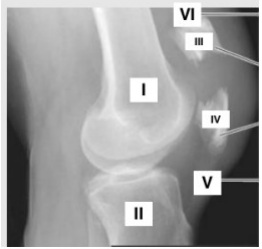
A I: Fêmur, II: Tíbia, III: Fragmento proximal da patela, IV: Fragmento distal da patela, V: Tendão do M. quadríceps femoral, VI: Ligamento da patela.
B I: Tíbia, II: Fêmur, III: Fragmento proximal da patela, IV: Fragmento distal da patela, V: Ligamento da patela, VI: Tendão do M. quadríceps femoral.
C I: Tíbia, II: Fêmur, III: Fragmento proximal da patela, IV: Fragmento distal da patela, V: Tendão do M. quadríceps femoral, VI: Ligamento da patela.
D I: Fêmur, II: Tíbia, III: Fragmento proximal da patela, IV: Fragmento distal da patela, V: Ligamento da patela, VI: Tendão do M. quadríceps femoral.
Questão 1625 · Jejuno e Íleo · Duodeno · 4000190605As artérias da região glútea originam-se, direta ou indiretamente da:
A A. ilíaca externa.
B A. ilíaca interna.
C A. ilíaca superficial.
D A. femoral.
Questão 1626 · Anatomia e Fisiologia do Intestino Delgado e Grosso · 4000190604Sobre a anatomia do intestino delgado, assinale a alternativa correta.
A O duodeno, a primeira e mais curta parte do intestino delgado, também é a mais estreita e mais móvel. O duodeno segue um trajeto em formato de C ao redor da cabeça do pâncreas; começa no piloro no lado esquerdo do abdome e termina na flexura (junção) duodenojejunal no lado direito.
B As artérias do duodeno originam-se do tronco celíaco e da artéria mesentérica inferior. O tronco celíaco, por intermédio da artéria gastroduodenal e seu ramo, a artéria pancreaticoduodenal superior, supre a parte do duodeno proximal à entrada do ducto colédoco na parte descendente do duodeno.
C A segunda parte do intestino delgado, o jejuno, começa na flexura duodenojejunal, onde o sistema digestório volta a ser intraperitoneal. A terceira parte do intestino delgado, o íleo, termina na junção ileocecal, a união da parte terminal do íleo e o ceco.
D O mesentério é uma prega de mucosa em forma de leque que fixa o jejuno e o íleo à parede anterior do abdome. A origem ou raiz do mesentério tem direção oblíqua, inferior e para a esquerda.
Questão 1627 · Classif icação · Exames complementares · 4000190603Uma atleta com queixa de dor mamária bilateral não cíclica, não usuária de contraceptivos, realiza ultrassom mamário que evidencia BI-RADS 1. O diagnóstico mais provável é:
A Nevralgia intercostal.
B Fibroadenoma.
C Mastopatia fibrocística.
D Eczema areolar.
Questão 1628 · Hamartoma · 4000190602O tumor mamário conhecido pelo termo breast in a breast, onde existe padrão histológico semelhante ao da mama envoltos por pseudocápsula, tem o nome de:
A Esteatonecrose.
B Hamartoma.
C Lipoma.
D Adenoma.
Questão 1629 · FSH e estradiol · 4000190601Na pesquisa de infertilidade em paciente com mais de 38 anos, a dosagem do FSH sérico do 2º ao 4º dia do ciclo representa rara chance de gravidez quando acima de:
A 5,0 UI/ml.
B 8,0 UI/ml.
C 15,0 UI/ml.
D 25,0 UI/ml.
Questão 1630 · Dispareunia · 4000190600Uma paciente de 30 anos refere nunca ter conseguido intercurso sexual por sentir dor intensa nas tentativas de penetração. O exame ginecológico é prejudicado por contração da musculatura pélvica e espasmo de intróito vaginal. O tratamento que não está indicado nesse caso é:
A Correção cirúrgica.
B Terapia psíquica.
C Exercícios de Kegel.
D Dilatadores graduados de borracha.
Questão 1631 · Citologia convencional · 4000190599O diagnóstico de uma lesão intraepitelial de alto grau engloba, exceto:
A NIC I
B NIC II
C NIC III
D CA in situ
Questão 1632 · Tipos de gestações múltiplas · 4000190598Em caso de gestação gemelar, onde há discordância no tamanho dos fetos, sem patologias detectadas, o cálculo da idade gestacional deve ser feito preferencialmente pelo(a):
A Feto maior.
B Feto menor.
C Média dos dois fetos.
D Não é viável o cálculo nesse caso.
Questão 1633 · Def inição · Fisiopatologia · 4000190596A teoria da “metástase benigna” sugere que a presença da patologia X em órgãos distantes como pulmão e cérebro pode surgir após disseminação linfática e hematogênica. A patologia X seria:
A Miomatose uterina.
B Endometriose.
C Displasia cervical.
D Tumor benigno de ovário.
Questão 1634 · Préeclâmpsia com sinais de gravidade · Tratamento f armacológico · 4000190595Uma gestante de 32 semanas em quadro de pré-eclâmpsia grave deve ser submetida da pro laxia com Sulfato de Magnésio endovenoso, devendo o Plantonista ter em registro impresso os seguintes parâmetros, exceto:
A Reflexo patelar.
B Escala de coma de Glasgow.
C Diurese.
D Frequência respiratória.
Questão 1635 · Contraindicações · 4000190594Uma mulher de 52 anos, em amenorreia há 1 ano, com queixa de fogachos e ressecamento vaginal, solicita ao Ginecologista terapia hormonal. A situação que não é contraindicação de TH é:
A Infarto Agudo do Miocárdio há 8 meses.
B Câncer de Mama tratado há 5 anos.
C Osteoporose diagnosticada com densitometria.
D Trombose Venosa Profunda em tratamento com anticoagulante.
Questão 1636 · Baciloscopia · 4000190593Quando avaliadas técnicas para a baciloscopia do escarro na tuberculose, pode-se afirmar que:
A A microscopia de fluorescência pode reduzir a capacidade de detecção do bacilo em 10%, quando comparada à microscopia com luz convencional.
B A microscopia de fluorescência pode incrementar a capacidade de detecção do bacilo em 90%, quando comparada à microscopia com luz convencional.
C A microscopia de fluorescência pode incrementar a capacidade de detecção do bacilo em 10%, quando comparada à microscopia com luz convencional.
D A microscopia de fluorescência não pode incrementar a capacidade de detecção do bacilo, quando comparada à microscopia com luz convencional.
Questão 1637 · COVID 19 · 4000190592Há evidências de que a incidência de trombose da veia cerebral em pacientes hospitalizados com COVID-19 foi de 207 por milhão de casos, sendo:
A Muito superior à incidência de casos induzidos por vacina (0,9 a 3,8 por milhão).
B Muito inferior à incidência de casos induzidos por vacina (0,9 a 3,8 por milhão).
C Igual à incidência de casos induzidos por vacina (0,9 a 3,8 por milhão).
D Inferior à incidência de casos induzidos por vacina.
Questão 1638 · Introdução · 4000190591O HCV é um vírus cujo genoma é constituído por uma única molécula de RNA de polaridade positiva, que possui, aproximadamente, 9.600 bases.
A O genoma viral é traduzido via IRES para produzir uma poliproteína, que é clivada durante e após a tradução por proteases celulares e virais em dez produtos gênicos. A região amino-terminal não codifica as proteínas estruturais, que são aquelas incorporadas na partícula viral: a proteína do capsídeo (C) e as glicoproteínas de envelope (E1 e E2).
B O genoma viral é traduzido via IRES para produzir uma poliproteína, que é clivada durante e após a tradução por proteases celulares e virais em dez produtos gênicos. A região amino-terminal codifica as proteínas estruturais, que são aquelas incorporadas na partícula viral: a proteína do capsídeo (C) e as glicoproteínas de envelope (E1 e E2).
C O genoma viral é traduzido via IRES para produzir uma poliproteína, que é clivada durante e após a tradução por proteases celulares e virais em dez produtos gênicos. A região amino-terminal codifica as proteínas estruturais, que são aquelas nunca incorporadas na partícula viral: a proteína do capsídeo (C) e as glicoproteínas de envelope (E1 e E2).
D O genoma viral é traduzido via IRES para produzir uma poliproteína, que é clivada durante e não após a tradução por proteases celulares e virais em dez produtos gênicos. A região aminoterminal codifica as proteínas estruturais, que são aquelas incorporadas na partícula viral: a proteína do capsídeo (C) e as glicoproteínas de envelope (E1 e E2).
Questão 1639 · Miocardite · 4000190590Diferenças epidemiológicas de Miocardites podem ser decorrente de surtos de infecções virais especí cas ocorrendo ao longo dos anos nas diversas regiões do mundo.
A Mas não diferenças nas técnicas de detecção viral, permanecendo o debate acerca da real influência da distribuição geográfica quanto às infecções virais cardiotrópicas.
B Bem como a diferenças nas técnicas de detecção viral, permanecendo o debate acerca da real influência da distribuição geográfica quanto às infecções virais não cardiotrópicas.
C Bem como a diferenças nas técnicas de detecção não viral, permanecendo o debate acerca da real influência da distribuição geográfica quanto às infecções virais cardiotrópicas.
D Bem como a diferenças nas técnicas de detecção viral, permanecendo o debate acerca da real influência da distribuição geográfica quanto às infecções virais cardiotrópicas.
Revisar: possível letra faltando em enunciado
Questão 1640 · Miocardite · COVID 19 · 4000190589A taxa de miocardite associada à COVID-19 excede a taxa observada com as vacinas na maioria dos levantamentos populacionais. Sendo correto que:
A A exceção ainda são homens mais velhos, nos quais o risco de miocardite associada às vacinas excede a taxa de miocardite por COVID-19 na mesma faixa etária.
B A exceção ainda são homens mais jovens, particularmente adolescentes, nos quais o risco de miocardite associada às vacinas não excede a taxa de miocardite por COVID-19 na mesma faixa etária.
C A exceção ainda são homens mais jovens, particularmente adolescentes, nos quais o risco de miocardite associada às vacinas excede a taxa de miocardite por COVID-19 na mesma faixa etária.
D A exceção ainda são homens mais jovens, particularmente adolescentes, nos quais o risco de miocardite associada às vacinas excede a taxa de miocardite por COVID-19 na outra faixa etária.
Questão 1641 · Baciloscopia · 4000190588Para a coleta da baciloscopia do escarro para diagnóstico de Tuberculose:
A Duas a três amostras de escarro devem ser enviadas para baciloscopia, com pelo menos uma coleta no início da manhã para a otimização dos resultados da baciloscopia. O volume de escarro deve ser maior que 3 mL, sendo o volume ideal de 5-10 mL.
B Duas a três amostras de escarro devem ser enviadas para baciloscopia, com pelo menos uma coleta no início da noite para a otimização dos resultados da baciloscopia. O volume de escarro deve ser maior que 3 mL, sendo o volume ideal de 5-10 mL.
C Duas a três amostras de escarro devem ser enviadas para baciloscopia, com pelo menos uma coleta no início da manhã para a otimização dos resultados da baciloscopia. O volume de escarro deve ser menor que 3 mL.
D Dez amostras de escarro devem ser enviadas para baciloscopia, com pelo menos uma coleta no início da manhã para a otimização dos resultados da baciloscopia. O volume de escarro deve ser maior que 3 mL, sendo o volume ideal de 5-10 mL.
Questão 1642 · COVID 19 · 4000190587Para indivíduos que receberam uma primeira dose da vacina ChAdOx1 nCoV-19 e não desenvolveram VITT (vaccine-induced immune thrombotic thrombocytopenia), a recomendação é completar o esquema vacinal com duas doses. Sendo correto que:
A Há evidências de que a segunda dose, ou mesmo o reforço (booster), aumente o risco de complicações trombóticas.
B Não há evidências de que a segunda dose, e sim o reforço (booster), aumente o risco de complicações trombóticas.
C Não há evidências de que a segunda dose, ou mesmo o reforço (booster), aumente o risco de complicações trombóticas.
D Há evidências de que a segunda dose, ou mesmo o reforço (booster), reduza o risco de complicações trombóticas.
Questão 1643 · Teste ergométrico · 4000190586Em relação à prescrição de exercício, principalmente em pacientes com maior risco cardiovascular, o TE - Teste de Esforço submáximo é mais eficiente quando associado à análise de gases expirados.
A A realização do teste cardiopulmonar de exercício (TCPE), que impossibilita a determinação dos índices de limitação funcional e limiares ventilatórios, tornando a prescrição mais precisa, segura e objetiva.
B A realização do teste cardiopulmonar de exercício (TCPE), que possibilita a determinação dos índices de limitação funcional e limiares ventilatórios, tornando a prescrição mais precisa, segura e não objetiva.
C A realização do teste cardiopulmonar de exercício (TCPE), que possibilita a determinação dos índices de limitação funcional e limiares ventilatórios, tornando a prescrição mais precisa, segura e objetiva.
D A realização do teste cardiopulmonar de exercício (TCPE), que possibilita a determinação dos índices de limitação funcional e limiares ventilatórios, tornando a prescrição mais precisa, insegura e objetiva.
Questão 1644 · Cardiopatias na gestação · 4000190585Não existe boa correlação entre carga de esforço e FC para avaliação de gestantes, sendo:
A O TCPE teste cardiopulmonar de exercício realizado nas cardiopatas grávidas em situações específicas (exceto doença valvar e cardiopatias congênitas), após exclusão das contraindicações clínicas e obstétricas absolutas e em nível submáximo.
B O TCPE teste cardiopulmonar de exercício realizado nas cardiopatas grávidas em situações específicas (doença valvar e cardiopatias congênitas), após exclusão das contraindicações clínicas e obstétricas absolutas e em nível apenas máximo.
C O TCPE teste cardiopulmonar de exercício nunca realizado nas cardiopatas grávidas em situações específicas (doença valvar e cardiopatias congênitas), após exclusão das ontraindicações clínicas e obstétricas absolutas e em nível submáximo.
D O TCPE teste cardiopulmonar de exercício realizado nas cardiopatas grávidas em situações específicas (doença valvar e cardiopatias congênitas), após exclusão das contraindicações clínicas e obstétricas absolutas e em nível submáximo.
Questão 1645 · Miocardite · 4000190584Os vírus cardiotrópicos mais prevalentes são: enterovírus, parvovírus B19 (PVB19), adenovírus, vírus influenza A, herpes-vírus humano (HHV), vírus Epstein-Barr, citomegalovírus, vírus da hepatite C e vírus do HIV.
A Algumas evidências sugerem que possa haver diferenças regionais em relação à prevalência dos diferentes agentes virais, com predomínio de adenovírus, parvovírus e herpes na população europeia e não preponderância de enterovírus na população americana.
B Algumas evidências sugerem que possa haver diferenças regionais em relação à prevalência dos diferentes agentes virais, com predomínio de adenovírus, parvovírus e herpes na população europeia e preponderância de enterovírus na população americana.
C Algumas evidências sugerem que possa haver diferenças regionais em relação à prevalência dos diferentes agentes virais, raramente adenovírus, parvovírus e herpes na população europeia e preponderância de enterovírus na população americana.
D Algumas evidências sugerem que possa haver diferenças regionais em relação à prevalência dos diferentes agentes virais, com predomínio de adenovírus, parvovírus e herpes na população europeia e nunca os enterovírus na população americana.
Questão 1646 · Prevenção de sepse neonatal · Conduta na RPM entre 24 a 33 67 semanas · 4000190583RN de 32 semanas de idade gestacional, masculino, com peso de nascimento de 1450g de parto cesárea por indicação materna (doença hipertensiva especí ca da gestação), fora de trabalho de parto e com bolsa rota no ato. Diante do caso descrito, assinale a alternativa que descreve a recomendação da Sociedade Brasileira de Pediatria.
A Coleta de hemograma, proteína C reativa, hemocultura e líquor e início de antibiótico empírico.
B Coleta de hemocultura e monitoramento clínico sem a introdução de antibiótico nesse momento.
C Coleta de hemocultura e início de antibioticoterapia para Streptococcos do grupo B.
D Coleta de hemograma, proteína C reativa e monitoramento clínico sem antibioticoterapia.
Revisar: possível letra faltando em enunciado
Questão 1647 · Hiperbilirrubinemia direta neonatal · 4000190582RN apresenta icterícia desde o nascimento. A mãe o leva ao atendimento médico com 20 dias de vida apresentando icterícia zona II e escleras amareladas, fezes claras e urina escura. Exames de urgência: Bilirrubinas totais: 10 mg/dL Bilirrubina Indireta: 4,5mg/dL Bilirrubina direta: 5,5mg/dL. Diante do quadro, assinale a conduta correta.
A Referenciar com urgência a um serviço terciário para investigação de colestase neonatal.
B Orientar alta com observação ambulatorial, já que esses valores não têm repercussão clínica.
C Colher exames de função hepática e sorologias para hepatite, com retorno para reavaliação após 1 mês.
D Suspender o aleitamento materno e iniciar fórmula infantil sem lactose
Questão 1648 · Contraindicações das vacinas · 4000190581Paciente de 9 anos e 6 meses de idade, feminino com diagnóstico de Lúpus Eritematoso Sistêmico está em uso de corticoide em dose alta e azatioprina. A mãe traz a caderneta de vacinação para atualização e é observado que a menor não recebeu vacinação para febre amarela e HPV. Considerando o Plano Nacional de Imunização, assinale a alternativa com a orientação correta.
A Vacinação para HPV e febre amarela.
B Vacinação para febre amarela apenas.
C Não vacinar no momento.
D Vacinação para HPV apenas.
Questão 1649 · Quadro clínico · 4000190580Paciente de 5 anos, feminino apresenta corrimento vaginal persistente, levemente amarelado e às vezes transparente, acompanhando de prurido vulvar importante. A mãe relata que a criança está muito irritada, tem dormido mal e frequentemente reclama de dor abdominal. Diante dos dados apresentados, assinale a alternativa com o provável diagnóstico.
A Enterobíase
B Toxocaríase
C Ascaridíase
D Candidíase
Questão 1650 · Maturação sexual no sexo masculino · 4000190579Paciente de 11 anos, masculino tem dúvidas quanto ao seu desenvolvimento pois acha que seu pênis é muito pequeno. Nega comorbidades e uso de medicamentos. Ao exame físico apresenta IMC no Z score 0, estatura no Z score -1, volume testicular entre 3 e 4mL, pênis infantil e ausência de pilificação pubiana. Diante do quadro apresentado, assinale a alternativa com o provável diagnóstico.
A Puberdade tardia
B Retardo constitucional da puberdade
C Baixa estatura fisiológica
D Puberdade normal
Questão 1651 · Impetigo não bolhoso crostoso · 4000190578Paciente de 5 anos, vem à consulta ambulatorial para avaliação de lesão cutânea em membro inferior direito (Figura abaixo). Diante do provável diagnóstico, assinale a alternativa com as corretas orientações a serem dadas para seguimento e conduta terapêutica da criança.

A Os principais agentes responsáveis por este tipo de lesão são o Staphylococcus aureus e o Streptococcus pyogenes beta-hemolítico do grupo A.
B As complicações mais comuns deste tipo de lesão são a febre reumática e a glomerulonefrite pós- estreptocócica.
C Antibióticos sistêmicos devem ser utilizados no lugar das medicações tópicas para o tratamento de lesão única para evitar a sua disseminação.
D A cultura da lesão é útil para a definição da terapêutica e deve ser realizada em pacientes imunocompetentes.
Questão 1652 · Síndrome de Down · 4000190577RN de 26 dias de vida é levado à UBS para consulta de puericultura, apresentando hipotonia, reflexo de Moro diminuído, fácies arredondada, pele frouxa na região dorsal do pescoço, ssuras palpebrais oblíquas, pregas epicânticas, língua protrusa, ponte nasal achatada, orelhas pequenas, hiperextensibilidade articular e hérnia umbilical. Diante do provável diagnóstico deste paciente, assinale a alternativa com a correta orientação sobre o seguimento clínico da criança.
A As cardiopatias congênitas, como o defeito do septo atrioventricular e a comunicaçãointerventricular, ocorrem em até 50% dos pacientes com a mesma condição genética.
B O indivíduo portador desta condição genética apresenta, na idade adulta, altura compatível com o seu alvo genético calculado a partir da estatura dos seus pais.
C Devido a sua condição genética, o paciente descrito tem menor incidência de hipotireoidismo congênito ou adquirido.
D A idade paterna acima de 35 anos aumenta a incidência da condição genética do paciente, enquanto a idade materna avançada não influencia em sua prevalência.
Questão 1653 · Plano B · 4000190576Lactente de 1 ano e 6 meses, masculino é levado ao PS por quadro de fezes líquidas, 7-8 episódios por dia, em grande volume, sem sangue, há 2 dias, sem febre ou vômitos. Ao exame físico apresenta irritabilidade, olhos levemente encovados, choro sem lágrimas, pulsos periféricos cheios e rápidos e tempo de enchimento capilar de 3 segundos. Diante do quadro clínico e do grau de desidratação descrito, assinale a melhor conduta.
A Internar para observação e hidratar com soro fisiológico endovenoso.
B Hidratar com soro de reidratação oral na unidade de saúde.
C Alta para casa com hidratação com soro caseiro em domicílio.
D Hidratar com soro fisiológico endovenoso na unidade de saúde.
Questão 1654 · Inf ecção Bacteriana Grave · Bacteremia Oculta · 4000190575Lactente de 2 anos de idade com quadro de otalgia à direita decorrente de resfriado iniciado há 3 dias, apresentava episódios de febre intermitente desde o início. Mãe relata que repentinamente apresentou palidez, hipotonia, extremidades frias, cútis de aspecto rendilhado, algo marmórea, com tremores grosseiros generalizados. Embora estivesse pouco responsivo, não apresentou perda de consciência. A duração total do evento, de acordo com a mãe, foi de cerca de 20 minutos. Ao chegar ao PS, encontrava-se com febre de 39°C. Diante da descrição acima, assinale a alternativa correta sobre o evento.
A Convulsão febril.
B Síncope febril.
C Delírio febril.
D Bacteremia.
Questão 1655 · Tratamento nas crianças e adolescentes · 4000190574Paciente de 10 anos de idade, masculino, saudável e ativo teve o desfralde aos 2 anos. Há 15 dias nasceu a 1a irmã e há 7 dias passou a ingerir água com frequência molhando a própria roupa e apresentando enurese noturna. Sempre que a irmã recebe aleitamento, ele refere fome, apesar disso, está perdendo peso. Durante a visita dos avós para conhecer a neta, o menino apresentou vômitos, cou ofegante e pálido sendo levado ao PS. Ao exame físico está emagrecido, anictérico, acianótico, afebril e desidratado grave e taquipneico. De acordo com a hipótese diagnóstica, assinale a alternativa correta sobre a conduta imediata.
A Infundir fase rápida de soro fisiológico 0,9% endovenoso, manter hidratação, monitorar sinais vitais e administrar antibioticoterapia. Solicitar urina tipo 1 e urocultura e ultrassonografia de vias urinárias.
B Infundir fase rápida com soro fisiológico 0,9% endovenoso na 1ª hora, administrar insulina rápida, controle de glicemia capilar de hora em hora e monitorar sinais vitais. Solicitar gasometria venosa, glicemia, sódio e potássio.
C Infundir fase rápida com soro fisiológico 0,9% endovenoso e glicosado 5% com Dramin B6DL manter a hidratação. Solicitar gasometria arterial e coletar eletrólitos.
D Infundir fase rápida com soro fisiológico 0,9% e glicosado 5% com Dramin B6DL
Questão 1656 · Doença por lesões mínimas · 4000190573Criança de 3 anos de idade, masculino é levado ao PS com queixa de inchaço nos olhos e edema de membros inferiores há 3 dias com piora progressiva. A mãe relata urina espumosa. Nega alergias e conhecimento de comorbidades. Ao exame físico está em bom estado geral, edema bipalpebral 2+/4, edema de membros inferiores 2+/4, normotenso e sem alterações na ausculta cardiorrespiratória. Exame de urina com proteinúria 3+/4. Ao confirmar o diagnóstico descartando causas secundárias, assinale a alternativa com a primeira escolha de tratamento.
A Furosemida
B Adrenalina
C Prednisona
D Ciclosporina
Questão 1657 · Tratamento da púrpura trombocitopênica imunológica PTI · 4000190572Criança de 4 anos, feminino, previamente hígida com quadro de epistaxe há um dia e sem outras queixas. Nega uso de medicamentos, traumatismo craniano ou doenças hematológicas na família. Mora em sítio longe do hospital. Ao exame físico está em bom estado geral, corada, hidratada, anictérica, acianótica, afebril, eupneica e normocárdica. Sangramento nasal ativo. Restante do exame físico sem particularidades. O hemograma normal exceto pela plaquetopenia de 8.000/mm³ e esfregaço de sangue periférico com plaquetas maiores. Diante do quadro, assinale a alternativa com a conduta correta.
A Internar e iniciar imediatamente terapia com imunoglobulina.
B Internar, iniciar dexametasona associada a imunoglobulina e preparar para esplenectomia.
C Orientar observação domiciliar e retorno em 24 horas para repetir o hemograma.
D Internar, observar e avaliar a possibilidade de corticoterapia.
Questão 1658 · Tratamento · Classif icação de risco · 4000190571Escolar de 8 anos, feminino, com queixa de febre de início súbito de 39°C associado a cefaleia, mialgia e prostração há 2 dias. Nega vômitos, diarreia ou outros sintomas. Ao exame físico está normotensa, pulsos periféricos cheios e simétricos com tempo de enchimento capilar de 2 segundos. Apresenta exantema maculopapular em tronco e face, além de petéquias em membros inferiores e superiores, e sem sinais meníngeos. Sem outros achados ao exame físico. Com base na principal hipótese diagnóstica, assinale a alternativa que contenha a melhor conduta inicial.
A Coletar líquor e iniciar antibioticoterapia endovenosa.
B Coletar sorologia e dar alta para o tratamento domiciliar.
C Coletar hemograma e iniciar hidratação oral na unidade de saúde.
D Coletar hemocultura, medicar com antitérmico e observar em pronto socorro.
Questão 1659 · Síndrome Hipnossedativa · 4000190570Criança de 5 anos, feminino deu entrada na sala de emergência com rebaixamento do nível de consciência, muito sonolenta, com FR de 10 ipm e inspiração super cial. Sua mãe está em tratamento para ansiedade e relata ter encontrado uma caixa de lorazepam vazia ao lado da menina. Após a intubação para garantir vias aéreas e aquisição de acesso, indique qual medicação deveria ser utilizada.
A Naloxona
B Sugamadex
C N-acetilcisteína
D Flumazenil
Questão 1660 · Análise de urina · 4000190569Criança de 3 anos, feminino chega ao PS com febre e irritabilidade. O exame físico inicial está sem alterações evidentes. A mãe refere que a urina está mais escura e com odor fétido. Com base nos dados apresentados, assinale a alternativa correta em relação ao acompanhamento do caso.
A O exame de urina tipo I com nitrito positivo sugere o diagnóstico de infecção urinária.
B A coleta de urina por saco coletor pode ser usada para confirmação diagnóstica.
C O resultado da urocultura definirá a conduta terapêutica.
D Deve-se tratar empiricamente Proteus ssp, que é o agente mais provável.
Questão 1661 · Manejo · 4000190568Lactente de 4 meses, feminino previamente hígida com calendário vacinal completo, apresenta febre medida até 39,1oC há 1 dia. A mãe relata discreta anorexia e queda do estado geral. Nega tosse e coriza. Exame físico sem alterações. Assinale a alternativa correta em relação à conduta para esse caso.
A Realização de coleta de exames de sangue e urina, mas não há indicação de raio X de tórax.
B Antibioticoterapia de amplo espectro iniciada logo após a coleta de exames, independente dos resultados.
C A coleta de urina por sondagem vesical ou punção suprapúbica está indicada.
D Este paciente deverá ser internado para o tratamento adequado.
Questão 1662 · Tratamento · 4000190567Pré-escolar, 3 anos, com situação vacinal desconhecida, chegou à emergência com história de febre de até 38,9°C há três dias e sintomas gripais. Refere “vermelhidão”, iniciada no rosto e atrás das orelhas há 24 horas. Ao exame, apresentava exantema maculopapular em face e tronco e mancha branco azulada com halo eritematoso na mucosa oral. Conforme duas figuras abaixo: Diante da principal hipótese diagnóstica, assinale a alternativa abaixo contendo o resultado laboratorial mais comum para esta doença e a correta conduta inicial a ser adotada.

A Presença de hemograma com leucopenia com linfocitose; internação para iniciar o tratamento com imunoglobulina.
B Detecção de RNA viral através de amostra de nasofaringe; isolamento, notificação compulsória uso de sintomáticos e vitamina A.
C Presença de Anticorpo IgG anticapsídeo viral (anti-VCA); internação, e início do tratamento com sintomáticos.
D Aumento nos títulos do anticorpo antiestreptolisina (ASO); início de Penicilina G benzatina, analgésicos e antitérmicos.
Questão 1663 · Transtornos Ansiosos · 4000190566Paciente de 16 anos, feminino, após isolamento por causa do COVID-19, voltou a frequentar a escola. Durante uma aula apresentou taquicardia, sensação de tontura e sudorese. Na consulta médica conta que está preocupada com seu futuro, sente medos irracionais e alterações de humor e apetite. Muitas vezes sente isso o dia todo e ca cansada no nal do dia, outras vezes tem a sensação de que não consegue controlar seus pensamentos. Diante da descrição do caso, assinale a provável hipótese diagnóstica.
A Transtorno de ansiedade.
B Transtorno depressivo.
C Transtorno alimentar.
D Transtorno obsessivo-compulsivo.
Revisar: possível letra faltando em enunciado
Questão 1664 · Manejo clínico e diagnóstico · Diagnóstico laboratorial · 4000190565Paciente de 10 anos, feminino, previamente hígida, apresenta tosse e coriza há 7 dias e febre há 5 dias, prostração e dor abdominal há 2 dias. Nega trauma ou qualquer lesão ou infecção prévia ao quadro atual. Ao exame físico está em regular estado geral, pálida, com FC: 120 bpm, FR: 31 ipm, discreta tiragem de fúrcula sem outros sinais de desconforto respiratório. Ausculta cardíaca sem alterações, ausculta pulmonar com crepitações, diminuição de murmúrio vesicular e da ausculta da voz em base esquerda. Abdome ácido, levemente doloroso à palpação profunda. Oximetria de 95% em ar ambiente. Solicitado teste rápido para in uenza A positivo. Hemograma e proteína C reativa (abaixo) e hemocultura (em andamento) e Raio X de tórax em pé e decúbito lateral esquerdo (abaixo). Considerando o quadro descrito e questões epidemiológicas, assinale a alternativa que descreve o diagnóstico e agente(s) etiológico(s) mais provável.
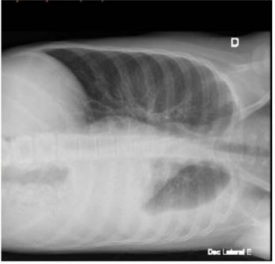


A Pneumonia com derrame parapneumônico, infecção por influenza A e pneumonia bacteriana associada por Streptococcus pneumoniae.
B Pneumonia com derrame parapneumônico, infecção por influenza A e pneumonia bacteriana associada por Staphylococcus aureus.
C Síndrome respiratória aguda grave por influenza A com derrame parapneumônico extenso a esquerda.
D Pneumonia com abcesso pulmonar, infecção por influenza A, pneumonia bacteriana associada por Staphylococcus aureus.
Questão 1665 · Diagnóstico · 4000190564Criança de 8 anos, sexo feminino previamente hígida com vacinação completa, chega ao PS com febre de 39,2 °C, dor de garganta e dor abdominal há 2 dias. Nega tosse, coriza ou manchas na pele. Ao exame físico está em regular estado geral, febril, com gânglios broelásticos de até 1cm de diâmetro em região cervical bilateral. Avaliação de orofaringe e boca apresentada em duas imagens abaixo: Restante do exame físico sem alterações. Diante dos dados apresentados e da hipótese diagnóstica, assinale a alternativa com o tratamento correto.
A Imunoglobulina humana e AAS, pois trata-se de doença de Kawasaki confirmada pelos critérios clínicos.
B Corticoterapia sistêmica endovenosa, pois trata-se de doença de Behçet confirmado pelos critérios clínicos.
C Penicilina benzatina, pois trata-se de amigdalite estreptocócica pode ser confirmada por teste rápido ou cultura.
D Analgésicos e antitérmicos, pois trata-se de rubéola que poderá ser confirmada com a sorologia a partir do 4º dia da doença.
Questão 1666 · Ensaios clínicos · 4000190563Durante a pandemia, você quis buscar evidências sobre o uso do tocilizumabe em pacientes com Covid-19 grave intubados. Após busca ampla da literatura, você identi cou apenas um ensaio clínico randomizado que possuía a seguinte pergunta estruturada: P (pacientes): Adultos com diagnóstico confirmado de Covid-19 e intubados. I (intervenção): Tocilizumabe + cuidados usuais. C (comparador): Cuidados usuais. O (outcome, desfecho): Mortalidade em 28 dias. Após leitura crítica do estudo, você percebeu que os autores não utilizaram placebos ou qualquer estratégia para mascaramento. Diante do exposto, assinale a alternativa correta.
A A utilização de placebos é dispensável no caso do estudo, pois os pacientes estão intubados e não existe a possibilidade de influência nos resultados.
B A ausência de mascaramento coloca o estudo em alto risco de viés de performance pela possível influência de co-intervenções pela equipe multidisciplinar que está cuidando dos pacientes.
C O desfecho mortalidade em 28 dias é suscetível a viés de detecção pelo fato de os avaliadores dos desfechos saberem quais pacientes estavam no grupo controle.
D Como o ensaio clínico foi randomizado, a ausência de mascaramento não afeta o processo inferencial deste estudo.
Revisar: possível letra faltando em alt B
Questão 1667 · Sensibilidade · 4000190562Ao iniciar sua atividade em uma unidade de Saúde da Família, um médico recebe a informação de que, no território onde atua, estão ocorrendo vários casos de sí lis congênita. Ele decide reforçar com os profissionais de todas as equipes da unidade a utilização, no pré-natal, de um teste diagnóstico para a sífilis. Assinale a alternativa correta sobre a principal característica que esse teste deve ter.
A Alta especificidade.
B Valor preditivo negativo elevado.
C Alta sensibilidade.
D Razão de verossimilhança negativa.
Questão 1668 · Estudos de CasoControle · Estudos de Coorte · 4000190561Sobre os estudos de coorte e caso-controle, escolha a alternativa correta.
A Os estudos coortes prospectivos são menos suscetíveis a vieses de memória/recordação que estudos de caso-controle.
B Os estudos coorte são menos suscetíveis a vieses que estudos caso-controles pois são longitudinais, enquanto os caso-controle são transversais por natureza.
C Um estudo coorte é preferível em comparação a um caso-controle pois em um estudo coorte é possível se concluir que o fator de exposição ocorreu antes da incidência da doença.
D Em um estudo caso-controle prospectivo é possível estabelecer melhor relação causal entre fator de exposição e doença do que em um estudo coorte retrospectivo.
Questão 1669 · Princípios bioéticos f undamentais ou principialistas ou principialismo Beauchamp e Childress · 4000190560Um projeto de pesquisa é encaminhado para o Comitê de Ética em Pesquisa no hospital A. O projeto tem como principal objetivo avaliar um novo medicamento para tratamento de câncer de mama. No projeto analisado por meio da Plataforma Brasil, o grupo selecionado para o estudo e que será randomizado é composto apenas por pacientes de determinado plano de saúde na faixa etária de 40 a 59 anos. Assinale a alternativa que descreve a recomendação do comitê de ética em pesquisa.
A Aprovar o estudo com recomendações.
B Aprovar o estudo sem recomendações.
C Manter pendente e justificar.
D Não aprovar o estudo e justificar.
Questão 1670 · Estudos SeccionaisTransversais · 4000190559Estudo aponta que o consumo de álcool aumenta no decorrer do curso de Medicina. Os autores avaliaram o consumo de álcool nos últimos 12 meses, com questões que analisaram quantidade e frequência do consumo da bebida; sintomas da dependência; e as consequências negativas do hábito nos universitários do curso de Medicina. O resultado computou o consumo de bebidas alcoólicas em 81,1%, informando também que, tanto para os homens quanto para as mulheres, o hábito de beber aumenta à medida que o curso avança. Assinale a alternativa com o nome desse tipo de estudo.
A Estudo caso-controle.
B Estudo coorte.
C Estudo transversal.
D Estudo ensaio clínico.
Questão 1671 · Estratégia de observação longitudinal x transversal · 4000190558Você é o médico responsável por um ambulatório de atenção primária que atua na prevenção de doenças e promoção geral em saúde. Um paciente a rma que iniciou por conta própria a tomar vitamina D, e te apresenta a seguinte notícia de jornal: “Pacientes internados com câncer possuem baixos níveis de vitamina D”. Após leitura da notícia, você percebe que ela foi baseada em um estudo transversal que avaliou 20 pacientes internados com diagnóstico de algum tipo de câncer. Diante da situação descrita, assinale a alternativa correta.
A A conclusão do paciente, que o levou a iniciar a reposição de vitamina D, é adequada, pois o desenho apresentado indica uma tendência de relação causal entre a deficiência de vitamina D e câncer.
B Como baixos níveis de vitamina D foram associados à ocorrência de câncer, a reposição de vitamina D deve prevenir a ocorrência de câncer, sendo dispensáveis ensaios clínicos randomizados neste caso.
C Em um estudo transversal como o apresentado na notícia, não é possível estabelecer a temporalidade entre desfecho (incidência do câncer) e exposição (níveis de vitamina D).
D O melhor desenho para avaliar a associação de um fator de exposição (níveis de vitamina D) e desfecho (incidência de câncer) seria um estudo transversal ecológico, pois existem vários tipos de câncer que podem ter diferentes interações com a vitamina D.
Questão 1672 · Coef iciente ou Taxa de Mortalidade Inf antil · 4000190557A seguir são apresentados dois gráficos da taxa de mortalidade neonatal precoce (0 a 6 dias) e taxa de mortalidade neonatal tardia (7 a 27 dias) do Brasil e Grandes Regiões no período de 2000 a 2016. Fonte: Sim/SINASC e busca ativa. Analise a série histórica do período apresentado (2000 a 2016) da taxa de mortalidade neonatal precoce e tardia. Assinale a alternativa correta.

A A mortalidade neonatal precoce é maior do que a tardia, e os gráficos exprimem maiores diferenças entre as regiões. Enquanto, em 2016, a mortalidade neonatal precoce variou de 5,1 (Sul) a 9,5 (Norte); a tardia se manteve entre 1,9 (Sul) e 2,6 (Nordeste).
B A mortalidade neonatal precoce é maior do que a tardia, não havendo diferenças entre as regiões. Em 2016, se manteve em todas as regiões em torno de 6,5 a mortalidade neonatal precoce; a tardia se manteve entre 4 e 5.
C A mortalidade neonatal precoce é menor do que a tardia, sendo bastante distinta entre as regiões. Enquanto, em 2016, a mortalidade neonatal precoce variou de 1,9 (Sul) a 2,6 (Nordeste); a tardia variou de 5,1 (Sul) a 9,5 (Norte).
D Tanto a taxa de mortalidade neonatal precoce quanto a tardia, tem-se mantido abaixo de 8 desde 2010, para o Brasil e em todas as regiões: Sudeste, Sul, Norte, Nordeste e Centro-oeste.
Questão 1673 · Ensaios clínicos de superioridade equivalência e nãoinf erioridade · 4000190556Você quer se atualizar sobre o tratamento de pacientes com tromboembolismo pulmonar e encontra o seguinte ensaio clínico randomizado (hipotético) que avaliou a efetividade de uma nova droga “Trombolina” para pacientes com tromboembolismo pulmonar. O ensaio clínico possui a seguinte pergunta estruturada: P (pacientes): Adultos com tromboembolismo pulmonar instável. I (intervenção): “Trombolina” + cuidados usuais. C (comparador): Placebo + Cuidados usuais. O (outcome, desfecho): Mortalidade em 7 dias. Após leitura crítica do estudo, você concluiu que o estudo é livre de vieses e utilizou uma metodologia adequada para a análise dos dados considerando um nível de signi cância estatística de 5 % (0.05). O resultado apresentado para o desfecho mortalidade em 7 dias foi: Risco relativo (RR) = 0,8; Intervalo de con ança de 95% (IC95%) = 0,6 a 1,0; p = 0,06. Diante do exposto, assinale a alternativa correta.
A O intervalo de confiança afasta aumento de mortalidade com a intervenção, indicando um potencial benefício clínico com a sua utilização nos pacientes com tromboembolismo pulmonar instável.
B O resultado é não estatisticamente significante pois o valor de p foi maior que 0,06, o que indica que a “trombolina” não possui efeito em pacientes com tromboembolismo pulmonar instável.
C O intervalo de confiança cruza a linha da nulidade (1,0) não sendo possível concluir nada substancial sobre a efetividade da intervenção.
D É possível recomendar a “trombolina” pois o valor de p foi superior à probabilidade da ocorrência de redução de mortalidade ao acaso (5%).
Questão 1674 · Calendário inf antil · 4000190555A médica da ESF atende em consulta de puericultura um paciente, masculino, de 14 meses de idade. Durante a consulta, a profissional realiza anamnese e exame físico de rotina, e solicita a carteira vacinal para avaliação, porém, a mãe relata que se mudou há pouco tempo para a região, com origem do nordeste, e que perdeu a carteira vacinal. Assinale a alternativa que contempla as vacinas indicadas para atualização da situação vacinal no dia da consulta.
A BCG (mesmo que a criança tenha cicatriz vacinal), Pentavalente (DTP-HepB-Hib), Pneumocócica 10 valente, Meningocócica C, Vacina injetável contra poliomielite, Febre amarela e SCR (Sarampo- Caxumba-Rubéola).
B BCG (caso a criança não tenha cicatriz vacinal), Pentavalente (DTP-HepB-Hib), Pneumocócica 10 valente, Meningocócica C, Vacina injetável contra poliomielite e SCR (Sarampo-CaxumbaRubéola).
C BCG (caso a criança não tenha cicatriz vacinal), Pentavalente (DTP-HepB-Hib), Pneumocócica 10 valente, Meningocócica C, Vacina oral contra poliomielite e SCR (Sarampo-CaxumbaRubéola).
D BCG (mesmo que a criança tenha cicatriz vacinal), Pentavalente (DTP-HepB-Hib), Rotavírus, Pneumocócica 10 valente, Meningocócica C, Vacina oral contra poliomielite, Febre amarela e SCR (Sarampo-Caxumba-Rubéola).
Questão 1675 · Quadro clínico · 4000190554A dengue vem ocorrendo no Brasil de forma continuada, intercalando-se com a ocorrência de períodos de epidemias. Entre os objetivos da vigilância epidemiológica está definir o caso suspeito de dengue clássico. Assinale a alternativa correta que descreve o quadro clínico suspeito.
A Todo indivíduo que, independente da idade e situação vacinal, apresentar febre e exantema maculopapular, acompanhados de um ou mais dos seguintes sinais e sintomas: tosse, coriza e conjuntivite.
B Todo indivíduo que apresentar febre e exantema maculopapular, acompanhado de linfoadenopatia retroauricular, occipital e cervical.
C Todo indivíduo que apresentar febre, com tosse com expectoração por três ou mais semanas, acompanhada de perda de peso e apetite.
D Todo indivíduo que tenha doença febril aguda, com duração máxima de 7 dias, acompanhada de pelo menos dois dos seguintes sintomas: cefaleia, dor retro orbital, mialgia, artralgia, prostração, exantema.
Questão 1676 · Violência contra o idoso · 4000190553Idosa de 80 anos, viúva, reside no município de São Paulo desde que nasceu, tem diagnóstico de HAS e DM do tipo 2. Ela reside com duas lhas e um neto, desde que cou viúva. Durante uma visita domiciliar a ACS encontra uma das lhas responsável pelos cuidados da mãe assistindo à televisão e gritando com ela, que está sozinha fazendo crochê em seu quarto. Em conversa particular com a ACS, a idosa relata que não está tomando os medicamentos porque a lha não os pegou na farmácia, e que não vai ao posto de saúde porque sua lha não a leva, além de car com toda a sua aposentadoria, e por isso, não consegue pagar um UBER, ou comprar as medicações. Chegando na Unidade de Saúde, a ACS explica a situação para a equipe e o médico resolve fazer uma visita domiciliar à idosa. Perante o exposto, assinale a alternativa que deve ser adotada como conduta pela equipe desta Unidade de Saúde.
A Após confirmar que realmente a idosa está sofrendo violência doméstica a equipe deverá realizar a notificação compulsória.
B A idosa deverá ser referenciada ao serviço de assistência social, pois não compete ao serviço de saúde realizar notificação desta magnitude.
C A idosa deve ser referenciada para a delegacia de polícia para formalizar a denúncia contra a filha de maus tratos.
D O profissional da equipe de saúde deverá realizar a notificação compulsória deste agravo, pois se trata de um caso suspeito de violência doméstica.
Questão 1677 · Princípios e Diretrizes do SUS na Constituição Federal · 4000190552Homem de 56 anos, residente no Município de São Paulo, comparece à UBS, localizada na área de abrangência onde reside sua lha, devido a sintomas respiratórios, febre, tosse e coriza. Na recepção, informam-no que a demanda de atendimento está elevada e, como ele não reside no território sob responsabilidade da UBS e não é idoso, não é prioritário no atendimento e deve comparecer ao AMA, localizado a três quarteirões do local. Considerando os princípios filosóficos do SUS, assinale a alternativa correta.
A O princípio da equidade foi respeitado, visto que o homem não é idoso e não reside na área de abrangência da UBS, podendo ser encaminhado a outro serviço quando necessário, já que não é considerado prioritário.
B O princípio da universalidade não foi respeitado no caso, visto que o acesso aos serviços de saúde em todos os níveis de assistência deve ser para todos os cidadãos brasileiros ou residentes no Brasil, independente de cor, idade e condições socioeconômicas.
C O princípio da regionalização foi respeitado, pois o homem não reside na área de abrangência da UBS, ou seja, seu atendimento deve ser realizado em território adscrito da UBS onde reside.
D O princípio da integralidade não foi respeitado, pois o correto em caso de sintomas respiratórios, seria o encaminhamento para um nível secundário ou terciário de atenção na Rede de Urgências e Emergências.
Questão 1678 · Princípios e Diretrizes do SUS na Constituição Federal · 4000190551No território sob responsabilidade sanitária de uma UBS na zona sul Município de São Paulo, uma equipe de ESF identi ca problemas relacionados a saneamento básico. Boa parte da população usa água de poço, pois não possui acesso à água encanada e tratada, gerando muitos casos de gastroenterites. Uma das ACS mobiliza a população para participar da reunião do Conselho Gestor da Unidade, para tentar solucionar o problema. De acordo com os princípios organizacionais do SUS, assinale a alternativa sobre o Conselho Gestor:
A É uma das instâncias da participação popular no SUS, princípio organizacional relacionado à democracia no sistema de saúde brasileiro, que garante a participação de representantes dos usuários na formulação de estratégias e no controle da execução da política de saúde.
B É uma das instâncias de regionalização no SUS, visto que usuários que residem na área de abrangência de uma UBS podem participar reivindicando saúde para o território de moradia.
C É uma das instâncias de descentralização no SUS, princípio organizacional relacionado à capilarização do atendimento e do acesso no sistema brasileiro, proporcionando maior conhecimento acerca do território sob responsabilidade e maior acesso da população para uso das ações de saúde e reivindicações de melhorias.
D É uma das instâncias relacionadas à intersetorialidade, pois apesar do tratamento da água não estar diretamente relacionado à área da saúde e às ações próprias dos serviços de saúde, os Determinantes Sociais da Saúde implicam uma ampliação sobre o olhar do processo saúde-doença.
Revisar: possível letra faltando em enunciado
Questão 1679 · Atributos gerais da Atenção Primária à Saúde APS · 4000190550Em reunião da equipe amarela na UBS, a enfermeira relata que está preocupada com a falta de noti cação para tuberculose na área de abrangência desta equipe, visto ser uma área extremamente vulnerável, onde a maioria da população reside em moradias com 5 a 10 moradores em um ou dois cômodos. Solicita aos ACS que intensi quem as ações no território voltadas à tuberculose e agenda uma data na semana para realizar busca ativa de sintomáticos respiratórios, com orientações e o fornecimento de kit para coleta de escarro. A médica da equipe aproveita a fala e reforça a necessidade de ações na comunidade voltadas para a prevenção de sí lis, visto o aumento expressivo de casos em adolescentes. Fica acordado, então, que ações serão realizadas no território da equipe, neste momento, priorizando os dois agravos. Uma ACS propõe também que um grupo sobre sexualidade seja implementando na unidade, além da abordagem destas temáticas nas escolas, através do Programa Saúde na Escola. Assinale a alternativa que descreve a qual atributo da Atenção Primária a Saúde (APS) o caso se refere.
A Competência cultural, visto que as ações estão sendo adequadas de acordo com a realidade cultural da comunidade que reside na área de abrangência da equipe.
B Orientação familiar, com ações da APS voltadas para as famílias que residem na área de abrangência da equipe amarela, considerando a realidade social e as problemáticas principais de enfrentamento.
C Orientação comunitária, desenvolvendo ações nos serviços da APS voltadas para a realidade da área de abrangência sob sua responsabilidade, analisando indicadores e pensando em estratégias de acordo com a necessidade dessa comunidade.
D Regionalização, com ações da APS voltadas para a equipe amarela, de acordo com a análise da realidade sociocultural da área de abrangência sob responsabilidade desta equipe, priorizando ações de saúde para essa população.
Questão 1680 · Políticas de Saúde para Populações Específ icas · 4000190549Ana saiu da consulta com o médico de família e comunidade com a prescrição de uso de anticoncepcional mesmo depois de ter explicado que só mantinha relações sexuais com mulheres. Ela saiu frustrada da unidade de saúde, dizendo para si, que não iria mais passar em consultas na UBS. Considerando o objetivo geral da Política Nacional de Saúde Integral de Lésbicas, Gays, Bissexuais, Travestis e Transexuais que promove a saúde desta população, eliminando a discriminação e o preconceito institucional, bem como contribuindo para a redução das desigualdades e a consolidação do SUS como sistema universal, integral e equitativo, indique a melhor definição para a atitude do médico.
A Prevenção.
B Heteronormatividade.
C Discriminação.
D Lesbofobia.
Questão 1681 · Política Nacional de Saúde Integral da População Negra · 4000190548A Política Nacional de Saúde Integral da População Negra: uma política para o SUS, expõe dados alarmantes relacionado à população negra no Brasil. Em 2014, a distribuição racial da riqueza mostrou que dos 10% mais pobres, 76% eram pretos ou pardos; em 2015, a pesquisa registrou que os trabalhadores de cor preta ou parda ganhavam, em média, pouco mais da metade (59,2%) do rendimento recebido pelos trabalhadores de cor branca. Já outra pesquisa realizada em 2013 mostrou que 60% das mulheres brasileiras, de 50 a 69 anos de idade, realizaram exame de mamogra a nos últimos dois anos anteriores à pesquisa. Esse cuidado com a saúde foi mais observado entre as mulheres brancas (66,2%) e com ensino superior completo (80,9%). As menores proporções foram observadas entre as mulheres pretas (54,2%), pardas (52,9%) e sem instrução ou com ensino fundamental incompleto (50,9%). Dados do Sistema de Informações sobre Nascidos Vivos para 2013 mostram que as mães indígenas, pardas e pretas são mais jovens em comparação com as brancas. Assinale a alternativa que melhor explica este fenômeno relacionados à população negra.
A A falta do reconhecimento do racismo, das desigualdades étnico-raciais e do racismo institucional como determinantes sociais das condições de saúde.
B A falta de infraestrutura da saúde para atender a população negra e quilombola já que estas se concentram como as camadas mais pobres da população e com maiores números de pessoas SUS dependentes.
C A concentração do ensino superior no Brasil na população de raça branca associado aos preconceitos raciais muito presentes.
D As políticas públicas voltadas às populações de minoria estão em descompasso com a organização do sistema de saúde.
Questão 1682 · Redes de Atenção à Saúde RAS · Política Nacional de Humanização · 4000190547Em 2008, o Ministério da Saúde cria os Núcleos de Apoio à Saúde da Família (NASF) com o objetivo de ampliar a abrangência e o escopo das ações da Atenção Básica (AB), aumentar sua resolutividade reforçando os processos de territorialização e regionalização em saúde (Brasil, 2008). Em 2019, o programa Previne Brasil estabelece novo modelo de nanciamento de custeio, deixando de repassar regularmente para o município o valor xo por equipe de saúde da família e equipe do Núcleo Ampliado à Saúde da Família e Atenção Básica (NASF-AB)– novo nome atribuído posteriormente a estas equipes multipro ssionais (Brasil, 2019). Desta forma, ca a cargo do gestor local definir se manterá e de que maneira estes pro ssionais nas Unidades Básicas de Saúde. Tendo em vista o trabalho multipro ssional na AB, as Redes de Atenção à Saúde (RAS) e a política de Humanização em Saúde, identi que a alternativa que mais orienta a um trabalho na perspectiva da integralidade do cuidado.
A O Ministério da Saúde aconselha que a agenda da equipe multiprofissional permaneça disponível na recepção a fim de garantir um acesso universal, igualitário e integral aos usuários do SUS.
B Atendimentos de reabilitação em fonoaudiologia, terapia ocupacional e fisioterapia devem ser encaminhados para atendimento no Centro de Reabilitação (CER) via regulação de vagas.
C O cuidado aos usuários de saúde mental do território deve ser compartilhado entre equipes de Saúde da Família, equipe multiprofissional e dispositivos de saúde mental, permanecendo a coordenação do cuidado com a equipe de Saúde da Família.
D Atualmente, as Equipes Multiprofissionais de Atenção Domiciliar (EMAD) atuam na Atenção Primária à Saúde compondo as Equipes de Saúde da Família com vistas a aumentar a abrangência e a resolutividade da AB.
Questão 1683 · Prof ilaxia pósexposição PEP · 4000190546Mulher de 27 anos trabalha como técnica de enfermagem há 5 anos no PS de clínica médica. Durante o plantão sofre um acidente com agulha que provocou um ferimento perfurocortante em polpa digital do 1o quirodáctilo esquerdo enquanto realizava uma punção venosa em um paciente. Em relação a este acidente de trabalho, assinale a alternativa correta sobre a indicação de pro laxia antiretroviral pós-exposição de risco à infecção pelo vírus da imunodeficiência humana (HIV).
A Independe do status sorológico para HIV da trabalhadora exposta ao material biológico.
B Deve se iniciar em 72 horas do episódio se a sorologia para HIV da paciente for desconhecida.
C É compulsória para a trabalhadora e de início imediato, pois visa prevenir a soroconversão.
D Depende da confirmação de estado gestacional da trabalhadora, pois é sempre indicada nesses casos.
Questão 1684 · Classif icação de Schilling · 4000190545Homem de 46 anos, trabalha como auxiliar de produção de lâmpadas uorescentes há mais de 20 anos, sendo exposto ao agente químico mercúrio. Durante atendimento de rotina na Unidade ESF entrega ao seu médico o relatório de contra-referência do serviço de nefrologia com diagnóstico de doença glomerular crônica com declínio progressivo da função renal. Complete a frase abaixo com a alternativa correta. Conforme a classificação de Schilling, a caracterização do quadro de hidrargirismo decorre do histórico de exposição ocupacional ao agente químico pois o trabalho foi:
A causa necessária do adoecimento (classe I).
B fator contributivo, mas não necessário (classe II).
C provocador de um distúrbio latente (classe III).
D agravador de doença pré-estabelecida (classe IV).
Questão 1685 · Disposições gerais do Código de Ética Médica · 4000190544Paciente de 34 anos, feminino, foi avaliada pelo médico no dia 20/05 pela manhã com queixa de gripe há 4 dias, e dor de ouvido com secreção amarelada à direita. Recebeu prescrição de sintomáticos. No mesmo dia à tarde voltou ao PS com história de cefaleia de forte intensidade, mal-estar, tontura e vômitos e sem febre. Foi medicada com dimenidrato injetável 2 vezes, além de tramadol, dipirona e dexametasona e dispensada para casa à noite. No dia seguinte às 23 h retornou ao hospital ainda com queixa de cefaleia. Em seu prontuário, em relação ao exame físico o médico escreveu “NDN” e prescreveu as medicações: dipirona+cetoprofeno+dexametasona injetáveis. Recebeu alta as 02H25. Menos de 04 horas após a alta, retornou ao PS de ambulância procedente da residência em mal estado geral, hipocorada, eupneica e afebril, com Glasgow 06, pupilas médio xas não fotorreagentes, e rigidez de nuca. Com a hipótese diagnóstica de meningite foi entubada e encaminhada para UTI evoluindo com morte encefálica e óbito em 27/05. As causas foram descritas como choque neurogênico, hipertensão intracraniana e meningite bacteriana. Diante do ocorrido, a família entrou com ação cível para indenização por erro médico e no CRM para punição por infração profissional. Considerando as informações apontadas, assinale a alternativa com a conclusão do laudo do perito médico.
A Não houve erro médico. Em nenhum dos atendimentos havia indicativos que a paciente desenvolvia um quadro de meningite, sobretudo por haver um quadro de otite em andamento. Não há infrações quanto ao Código de Ética Médica.
B Houve erro médico. O quadro clínico da paciente indicava a meningite como um diagnóstico diferencial que deveria ter sido considerado nos dois últimos atendimentos. Houve infração ao Código de Ética Médica decorrente de negligência.
C Não houve erro médico. Apesar do quadro clínico poder sugerir meningite, o médico examinou adequadamente a paciente não tendo encontrado nenhuma alteração, nem mesmo rigidez de nuca, estando isto claro na descrição do exame físico onde afirma “NDN”. Não há infração ao Código de Ética Médica.
D Não há elementos em toda a história descrita para afirmar sobre a ocorrência ou não de erro médico ou infração ao Código de Ética Médica.
Questão 1686 · Imunizaçao na gestação · 4000190543Secundigesta com um parto normal há 2 anos de 37 anos, com idade gestacional de 8 semanas e 1 dia pela DUM, vem para primeira consulta de pré-natal. Traz carteira da vacinação com as seguintes anotações: dT (difteria e tétano) com 3 doses há 2 anos, tríplice viral há 16 anos, influenza há 2 anos. Assinale a alternativa que indica a correta orientação vacinal.
A Indicar agora a vacina contra influenza e o esquema vacinal para hepatite B (3 doses) e aguardar a 20ª semana para administrar 1 dose de dTpa.
B Indicar agora a dTpa e aguardar a 20ª semana para administrar esquema vacinal da hepatite B (3 doses) e Influenza.
C Indicar agora o esquema vacinal de hepatite B e influenza. Sem necessidade de outras complementações durante a gestação.
D Indicar agora o esquema vacinal de hepatite B e Influenza. Aguardar a 20ª semana para realizar dTpa e reforço da tríplice viral.
Questão 1687 · Dieta · Diagnóstico · Atividade f ísica · 4000190542Primigesta de 36 anos, inicia o pré-natal com 25 semanas na UBS e são solicitados exames de rastreamento de risco da gestação. Após 3 semanas retorna com o seguinte exame de teste de tolerância oral à glicose com 75 g: Jejum 91 mg/dL; 1ª hora 179 mg/dL; 2ª hora 159 mg/dL Assinale a alternativa correta com o diagnóstico e conduta inicial.
A Diabetes gestacional. Introdução de atividade física e dieta composta por 30 a 40% de proteínas.
B Diabetes mellitus pré-gestacional. Introdução de hipoglicemiante oral e dieta composta por 30 a 40% de proteínas.
C Diabetes gestacional. Introdução de dieta fracionada de acordo com IMC e introdução de atividade física.
D Diabetes mellitus pré-gestacional. Introdução de dieta fracionada de acordo com IMC e insulina com controle de glicemia capilar.
Questão 1688 · Conduta obstétrica · Tratamento f armacológico · 4000190541Primigesta de 36 anos com idade gestacional de 34 semanas está em consulta pré-natal na UBS. Não relata antecedentes pessoais mórbidos. Está sem queixas, no entanto, a medida da PA na consulta foi de 140x100 mmHg (duas medidas após repouso sentada) e o peso corporal aumentou 4 Kg em relação à consulta passada há 20 dias. Traz uma ultrassonogra a que mostra idade gestacional compatível com a DUM, líquido amniótico normal e placenta posterior, normoimplantada. Na palpação abdominal percebe-se apresentação cefálica, posição esquerda e escava vazia, altura uterina 33 cm e BCF presente e rítmico. Apresenta edema depressível e indolor de membros inferiores 1+/4. Fez teste de proteinúria de fita > 1+. Diante desse quadro, com a paciente já internada, assinale a conduta adequada.
A Avaliar se não existem alterações de exames laboratoriais que indiquem gravidade do quadro materno ou perda da vitalidade fetal. Prescrever corticosteroide para maturação pulmonar fetal, 750 mg de metildopa por dia e induzir o parto vaginal quando a PA atingir 120x80 mmHg.
B Avaliar se não existem sinais laboratoriais de gravidade materna e se estiver normal, administrar 750 mg de metildopa/dia e diurético poupador de potássio por via oral. Indicar o parto cesáreo com 40 semanas após a PA diastólica ter reduzido em 30%.
C Avaliar se não existe comprometimento das condições fetais e se estiver normal, administrar diurético tiazídico para redução do edema materno, sedação com benzodiazepínicos e 750 mg de metildopa por dia. Induzir o parto vaginal quando a PA diastólica reduzir 20%.
D Avaliar se não existem alterações de exames laboratoriais que indiquem gravidade do quadro materno ou perda da vitalidade fetal. Prescrever benzodiazepínicos e 750mg de metildopa por dia. Aguardar a 37a semana se as condições maternas e fetais se mantiverem estáveis e PA reduzir em 20%.
Questão 1689 · Tratamento · 4000190540Gestante de 35 anos, 10 semanas de gestação com antecedente de abortamento anterior há 2 anos, apresenta sangramento vaginal há 12 horas. Ao exame especular é visualizado sangramento pelo orifício externo do colo uterino. Ao toque vaginal, o colo está impérvio e o útero aumentado para 16 semanas. Realizado beta HCG qualitativo com resultado positivo e ultrassonogra a transvaginal que descreve imagens intrauterinas de flocos de neve e cistos ovarianos tecaluteínicos bilateralmente. Diante do quadro, assinale a alternativa com a conduta a ser tomada nesse momento.
A Internar, solicitar hemograma, coagulograma, eletrólitos e tipagem sanguínea e preparar para histerectomia abdominal.
B Internar, solicitar hemograma, tipagem sanguínea, betaHCG quantitativo e instalar infusão endovenosa de ocitocina para dilatação do colo uterino e esvaziamento.
C Internar, solicitar hemograma, tipagem sanguínea, betaHCG quantitativo e realizar o esvaziamento do conteúdo intrauterino preferencialmente por aspiração manual intrauterina.
D Internar, solicitar hemograma, tipagem sanguínea e beta HCG quantitativo seriado e aguardar resolução espontânea do quadro.
Questão 1690 · Tratamento · Diagnóstico · 4000190539Primigesta de 20 anos com 36 semanas de gestação chega ao PS com queixa de dor abdominal em cólicas de forte intensidade e parada de movimentação fetal há 3 horas. Faz pré-natal com diagnóstico de DHEG grave e está medicada com metildopa 2 g/dia e anlodipino 5 mg/dia. Ao exame: regular estado geral, PA = 110x65 mmHg, FC: 100 bpm, mucosas descoradas 3+/4+, altura uterina 36 cm, útero hipertônico e BCF não audível. Apresentação cefálica não insinuada pela palpação do abdômen. No exame especular nota-se sangramento escurecido em pequena quantidade saindo do orifício do colo. Ao toque o colo está dilatado 2 cm, esvaecido < 50%, bolsa íntegra e tensa. Assinale a alternativa que corresponde ao diagnóstico mais provável e a conduta adequada ao caso.
A Descolamento prematuro de placenta; realizar estabilização hemodinâmica, romper bolsa e indicar cesariana.
B Placenta prévia com sangramento ativo; solicitar ultrassonografia para confirmação do diagnóstico e avaliar o bem-estar fetal para indicar indução do parto via vaginal.
C Placenta prévia com sangramento ativo, realizar reposição volêmica e estabilização hemodinâmica, romper a bolsa e realizar cesariana.
D Descolamento prematuro de placenta; solicitar ultrassonografia para confirmação do descolamento placentário e avaliar o bem-estar fetal para indicar indução do parto via vaginal.
Questão 1691 · Eclâmpsia · 4000190538Primigesta de 35 anos apresentou turvação visual e cefaleia e por isso chamou o transporte do SAMU para que a levasse ao hospital de referência. Na chegada ao PS, o enfermeiro do transporte informa que a paciente acabou de convulsionar ainda dentro da viatura. Pela carteira de acompanhamento pré-natal calcula-se idade gestacional de 36 semanas e confirma-se a prescrição de metildopa 2,0 g e anlodipino 20 mg ao dia. Ao exame físico: mal estado geral, torporosa, edema de membros e abdômen 3+/4+. PA 170x120 mmHg, FR 20 ipm, FC 100 bpm, T axilar 36,7º C. Ausculta cardiopulmonar sem alterações importantes, exceto pela taquicardia. Abdômen: altura uterina 31 cm, BCF 170 bpm, com desacelerações frequentes. Assinale a alternativa que descreve a condução adequada para o caso.
A Administrar benzodiazepínico endovenoso para controle da convulsão e metoprolol 100 mg ao dia por via oral para controle dos níveis pressóricos e aguardar até o termo da gestação para a indução do parto vaginal.
B Administrar metoprolol 100 mg ao dia por via oral para controle da pressão e sedação com benzodiazepínicos via oral para indicar a cesariana quando atingir o termo da gestação, já que o feto ainda não é viável.
C Administrar dose de ataque de sulfato de magnésio endovenoso, cateter de O2 e indicar a interrupção imediata da gravidez após estabilização dos níveis pressóricos com hidralazina endovenosa por se tratar de feto vivo e viável.
D Administrar benzodiazepínico endovenoso e dose de ataque de sulfato de magnésio endovenoso para evitar nova convulsão e indicar interrupção da gestação após administração de corticoides para maturação pulmonar fetal.
Questão 1692 · Tratamento · 4000190537Primigesta de 15 anos com 20 semanas de idade gestacional pela DUM procura a unidade de pronto atendimento com queixa de mal-estar, febre, dor de garganta. Ao exame: PA 110x70mmHg FC: 80bpm, T: 38,5ºC, ausculta pulmonar com murmúrios vesiculares presentes e sem ruídos adventícios. Oroscopia: orofaringe hiperemiada, tonsilas palatinas com exsudato e criptas com pontos purulentos. Exame obstétrico normal e adequado para idade gestacional. Diante do quadro, assinale a alternativa com a hipótese diagnóstica e conduta.
A Amigdalite viral. Prescrever Paracetamol 500mg de 6 em 6 horas por 4 dias, pois na adolescência é baixa incidência de amigdalite bacteriana.
B Amigdalite bacteriana (provavelmente streptococica). Prescrever Amoxicilina 500mg de 8 em 8 horas por 7 dias, a fim de evitar complicações.
C Amigdalite bacteriana (provavelmente streptococica). Prescrever Ciprofloxacina 500mg de 8 em 8 horas por 7 dias, a fim de evitar complicações.
D Amigdalite viral. Prescrever Predinisona 10mg por dia por 7 dias, a fim de evitar complicações.
Questão 1693 · Parada secundária da descida · 4000190536Primigesta com 35 anos de idade e 38 semanas de idade gestacional confirmada pela DUM, diabética gestacional controlada com dieta. É admitida no PS com exame obstétrico: altura uterina 37 cm; dinâmica uterina = 4 contrações de mais de 40 segundos em 10 minutos; BCF:144 bpm, com aceleração transitória presente. Ao toque vaginal o colo uterino estava dilatado para 3 cm, esvaecido 80% e anteriorizado; apresentação cefálica, bolsa rota, líquido claro e grumos presentes. A evolução do trabalho de parto é apresentada no partograma ilustrado abaixo: De acordo com o quadro clínico e evolução, assinale a alternativa com a conduta mais adequada, baseada nos princípios da OMS de 2018.
A Indicar parto cesáreo devido à hipótese de desproporção céfalo-pélvica.
B Administrar ocitocina e guardar o desprendimento do polo cefálico.
C Solicitar que a paciente deambule e aguardar a descida do feto.
D Realizar episiotomia e aguardar o desprendimento do polo cefálico.
Questão 1694 · Cardiotocograf ia intraparto · Interpretação · 4000190535Primigesta de 25 anos de idade, com 38 semanas de gestação é admitida em trabalho de parto com 6 cm de dilatação do colo uterino, apresentação cefálica etida, bolsa rota espontânea no momento do exame, com líquido claro com grumos. Restante do exame físico em bom estado geral, PA 110/70 mmHg; altura uterina de 34 cm. Realizou uma cardiotocografia que está apresentada abaixo: Assinale a alternativa que representa corretamente a interpretação da cardiotocogra a e a conduta adequada.

A Categoria III - anormal; resolução da gestação por cesárea devido ao risco de óbito fetal iminente por suspeita de anóxia fetal.
B Categoria II - indeterminada; oferecer dieta leve e mudança de decúbito para reavaliar mudança para categoria I – normal.
C Categoria II - indeterminada; resolução da gestação por cesariana pela suspeita de sofrimento fetal agudo.
D Categoria I - normal; observar a evolução do trabalho de parto e verificar condições materna e fetal periodicamente.
Questão 1695 · Quarto período primeira hora pós parto período de Greenberg · 4000190534Parturiente de 39 anos com 39 semanas de gestação, multípara, com 5 partos normais anteriores com as seguintes informações do pré-natal: 5 consultas, última há 15 dias. Exames realizados no 1º trimestre: sorologias negativas, hemograma normal e glicemia 98mg/dL. Último exame obstétrico: Bom estado, corada, hidratada, peso 95kg (ganho ponderal de 15kg), PA: 130x90mmHg, altura uterina 39cm, BCF presente, movimentação fetal presente, toque: colo amolecido, pérvio para 1,5cm, não esvaecido, apresentação cefálica, alta e móvel. Entrou em trabalho de parto em casa, e o parto ocorreu por via vaginal sem episiotomia com dequitação espontânea após 10 minutos. Após o parto, a paciente foi encaminhada ao hospital para acompanhamento do puerpério imediato e internada. Diante do caso, assinale a alternativa correta sobre a hospitalização dessa paciente.
A A administração de ocitocina e a valorização da 1a hora pós-parto em ambiente hospitalar reduz a mortalidade materna em pacientes com fatores de risco como ela.
B A internação foi desnecessária, já que a paciente não apresentou intercorrências no 1º, 2º e 3º períodos do parto, dessa forma não teria problemas no 4º período do parto.
C Diante dos fatores de risco apresentados, a paciente deve ser monitorada em unidade de terapia intensiva pois o risco de hemorragia é considerado alto.
D A internação foi desnecessária, já que a recomendação de observação do sangramento puerperal e massagem uterina seriam suficientes para prevenção.
Questão 1696 · Anamnese · 4000190533Secundigesta de 36 anos com um parto fórcipe anterior há 10 anos chega à 1ª consulta de prénatal no início da gestação. Refere muita preocupação por ter sofrido laceração e rotura perineal que evoluiu com incontinência fecal por ter sido submetida ao fórceps no parto anterior. Assinale a alternativa que descreve a melhor conduta a ser tomada pelo obstetra nesse primeiro momento.
A Tranquiliza-la sobre o risco da rotura durante os partos vaginais e determinar nessa consulta a indicação de parto cesáreo quando atingir o termo da gestação.
B Tranquiliza-la, realizar o exame perineal para se certificar sobre a rotura relatada e recriminar a conduta do colega que indicou o parto fórceps, caracterizando-o como violência obstétrica.
C Tranquiliza-la e orientá-la quanto à elaboração de plano de parto. Orientar sobre a segurança das vias de parto adequadas quando oportunamente entrar em trabalho de parto.
D Tranquiliza-la esclarecendo que a intercorrência no parto anterior não ocorrerá, necessariamente, neste parto e que no plano de parto deverá constar a indicação de parto vaginal.
Questão 1697 · Fase lútea · 4000190532Mulher de 40 anos apresentava ciclos menstruais regulares com intervalo de 28 dias, sem uso de qualquer medicação hormonal, mas há 6 meses começou a apresentar sangramento menstrual escurecido durante os 5 dias que antecedem o início do uxo menstrual. Atualmente sem vida sexual e teve a última relação há 1 ano. Não apresenta antecedentes pessoais, ginecológicos e obstétricos relevantes. Assinale a alternativa que justifica o quadro clínico descrito.
A Aos 40 anos, o corpo lúteo degenera antes de 12-14 dias, que seria o prazo fisiológico. Com essa degeneração há queda abrupta da progesterona levando ao início precoce do período menstrual como no quadro clínico descrito.
B Com o envelhecimento ovariano, os folículos produzem menores quantidades de estrogênio, que levam a perda da estabilidade do endométrio na fase secretora e sangramento escurecido descrito pela paciente.
C No final da vida reprodutiva, os ciclos menstruais são anovulatórios e não há formação de corpo lúteo. Por isso, o endométrio não se mantém estável até o término da fase secretora, causando o sangramento descrito.
D A qualidade do corpo lúteo está relacionada a qualidade do desenvolvimento folicular reduzida nessa idade. Por isso, o corpo lúteo reduz a produção de progesterona até o término da fase secretora, causando o quadro descrito.
Questão 1698 · Tratamento do sangramento uterino anormal nas adolescentes · 4000190531Paciente de 11 anos é levada ao PS após apresentar sangramento vaginal aumentado associado a cólicas de moderada intensidade. A mãe refere que este é o segundo episódio de sangramento mais intenso desde que ela começou a menstruar há 9 meses. Paciente é virgem e nega comorbidades. Ao exame está em bom estado geral, corada, eupneica, afebril, PA 110 x 70 mmHg, FC: 85bpm. Abdome plano, ácido, doloroso a palpação profunda em região hipogástrica. Genitália externa - lábio maior recobrindo menor, hímen pérvio com saída de sangue em pequena quantidade. Assinale a alternativa que contenha a melhor proposta terapêutica e justificativa.
A Prescrever anti-inflamatório não hormonal para melhora dos sintomas e tranquilizar a mãe, pois sangramento uterino disfuncional é comum e autolimitado nos dois primeiros anos pós-menarca.
B Prescrever anti-inflamatório não hormonal e propor realização de histeroscopia para confirmar hipótese de sangramento uterino de causa estrutural.
C Prescrever anti-inflamatório não hormonal e ácido tranexâmico solicitar coagulograma pois trata-se de doença de Von Willebrand.
D Prescrever anticoncepcional hormonal combinado por via oral e solicitar FSH e LH para confirmar sangramento uterino por disfunção ovulatória.
Questão 1699 · DDS46XYinsensibilidade androgênica ou def eito no receptor androgênico · Exame f ísico · 4000190530Paciente de 25 anos procura o ambulatório de infertilidade. Refere vida sexual ativa desde 16 anos, sem queixas. Refere que nunca menstruou, mas disseram que era algo familiar, tias e primas também não menstruavam. Ao exame apresenta desenvolvimento sexual, aparelho genital externo feminino e estatura normais. Ao toque apresenta vagina em fundo cego. Exames laboratoriais: Assinale a alternativa que justifica a amenorreia primária da paciente.
A Síndrome de Rokitansky-Kuster-Hauser – anomalia dos ductos de Muller.
B Síndrome de Swyer – disgenesia gonadal 46XY.
C Síndrome da insensibilidade androgênica – cariótipo 46 XY.
D Síndrome de Turner – cromossomo sexual anormal 45X.
Questão 1700 · Tratamento · 4000190529Mulher de 17 anos, menarca aos 12 anos, ciclos menstruais regulares com volume normal, com vida sexual ativa em uso de preservativo como método contraceptivo refere em consulta de rotina cólicas menstruais que a estão incomodando. Ela apresenta dismenorreia desde os primeiros anos do menacme, sempre se iniciando um dia antes do início do ciclo menstrual, com piora no 1º dia e melhora progressiva até o término do uxo. Nega que os sintomas tenham piorado nos últimos anos. A dor é leve a moderada e não utiliza medicações, apenas compressa quente. Nega dispareunia ou dor pélvica fora do período menstrual. Refere hábito intestinal normal e não tem queixas urinárias. Ao exame ginecológico não há alterações ou dor. O exame de ultrassonografia transvaginal resultou normal. Diante da descrição do quadro, assinale a alternativa para a condução do caso.
A A primeira linha de tratamento é o anticoncepcional oral, caso não haja contraindicação.
B Deve-se ampliar a propedêutica com ressonância magnética de pelve antes de iniciar o tratamento.
C A primeira linha de tratamento é o uso de analgésicos simples, caso não melhore, solicitar a ressonância magnética de pelve.
D Deve-se ampliar a pesquisa para endometriose com ultrassonografia com preparo intestinal e laparoscopia.
Questão 1701 · Quadro clínico · 4000190528Paciente de 27 anos, comparece ao PS, com quadro de prurido intenso perineal e disúria, gerando intenso desconforto. Refere 3 parceiros sexuais nos últimos 6 meses e o parceiro atual encontra-se assintomático. O exame de urina 1 solicitado não apresenta alterações sugestivas de infecção urinária. O exame especular demonstrou o seguinte achado: Assinale a alternativa com o diagnóstico do caso descrito.
A Tricomoníase
B Vaginose bacteriana
C Cervicite por clamídia
D Candidíase
Questão 1702 · Características · 4000190527Paciente de 31 anos comparece ao PS com quadro de lesão em grande lábio vaginal à direita, indolor que surgiu há 4 semanas. Inicialmente era única, mas aumentou de tamanho e surgiu outra em espelho, no grande lábio vaginal à esquerda. Nega corrimento vaginal, mas relata que as lesões sangram facilmente. Sem parceiro atualmente e relata nunca ter feito uso de preservativo como método contraceptivo. Assinale a alternativa com a hipótese diagnóstica correta.
A Donovanose
B Linfogranuloma venéreo
C Cancro duro
D Herpes genital
Questão 1703 · Mamograf ia digital · 4000190526Mulher de 39 anos, em consulta ginecológica questiona o médico sobre a indicação de mamogra a. Ela nunca engravidou e nunca utilizou nenhum método contraceptivo pois é homossexual, sua menarca foi aos 9 anos, tem ciclos menstruais regulares com intervalo, duração e uxo normais. Nega comorbidades, tabagista de 20 cigarros por dia há 20 anos. Nega antecedentes familiares de câncer. Exame físico das mamas normal. Em relação à indicação de rastreamento mamográ co de acordo com as diretrizes do Ministério da Saúde, assinale a correta.
A Diante dos fatores de risco como menarca precoce, ausência de amamentação, e tabagismo há indicação formal de mamografia anualmente.
B Diante das evidências científicas que indicam benefício da mamografia em pacientes como a descrita, há indicação de mamografia bianualmente.
C Diante dos fatores de risco como menarca precoce, ausência de amamentação e tabagismo, há indicação de uma mamografia agora e se normal, repetir a cada dois anos.
D Diante da falta das evidências científicas que indicam que os riscos superam os benefícios, ela não tem indicação de mamografia antes dos 50 anos de idade.
Revisar: possível letra faltando em enunciado
Questão 1704 · Tratamento não hormonal dos sintomas climatéricos · Tratamento · 4000190525Paciente de 52 anos, menopausada há 5 anos apresenta vários episódios de ondas de calor ao longo do dia e no período noturno, que têm atrapalhado seu sono e a deixando muito irritada e pouco concentrada no trabalho. Apresenta dispareunia e diminuição da lubri cação vaginal. É hipertensa compensada com captopril e há 7 anos teve tromboembolismo venoso em membro inferior esquerdo. Ao exame físico: PA 120x80 mmHg, Peso 60 Kg, altura 1,55 m, vulva atrófica com fissura discreta em introito vaginal. Assinale a alternativa correta em relação ao tratamento do quadro descrito.
A Prescrever terapia oral com estrogênio sintético e um progestínico.
B Prescrever promestrieno via vaginal e inibidor da receptação de serotonina.
C Prescrever terapia estrogênica isolada por via transdérmica e um progestínico por via oral.
D Prescrever terapia estrogênica isolada por via oral e inibidor da recaptação da serotonina.
Questão 1705 · Aborto legal no Brasil · Legislação sobre aborto · 4000190524Paciente de 29 anos, sexo feminino, com 2 lhos vivos solteira e sem parceiro, procura o PS para interrupção da gravidez. Alega ter sido vítima de estupro há 2 meses, mas na ocasião não procurou a polícia e nem atendimento médico por constrangimento. Na situação descrita, assinale a alternativa correta.
A Há obrigatoriedade de fazer o boletim de ocorrência, para que a interrupção seja possível.
B Há necessidade de uma autorização judicial para a interrupção da gestação.
C Há indicação de iniciar o pré-natal pois ela não tem direito de interromper a gestação.
D Há permissão legal de interromper a gestação somente com o relato das circunstâncias.
Questão 1706 · Fasciíte necrotizante · 4000190523Paciente, sexo masculino, 55 anos, diabético em uso irregular de insulina e metformina é admitido na emergência toxemiado, febril, instável hemodinamicamente, com queixa de aumento e endurecimento do escroto há 7 dias com dor que piorou nos últimos 3 dias quando iniciou febre e saída de secreção purulenta e fétida. A conduta inicial foi protocolo de sepse e procedimento cirúrgico de drenagem de 150 mL de secreção purulenta e desbridamento de grande área necrótica que se estendia do escroto para a região perineal até a borda anal. Diante do quadro, assinale a alternativa com a sequência recomendada para o seguimento.
A Curativo a vácuo programado com desbridamento da área necrótica, realização de colostomia em alça para derivação do trânsito intestinal e enxertia posteriormente.
B Curativo a vácuo programado com desbridamento cirúrgico da área necrótica, realização de colostomia terminal para derivação do trânsito intestinal e enxertia posteriormente.
C Desbridamento cirúrgico e químico utilizando pomada com hialuronidase e corticoide diário e curativo, programação de enxertia precoce.
D Desbridamento da área necrótica e enxertia na zona desvitalizada para cobertura dos testículos, curativo a vácuo da área de enxertia e colostomia em alça.
Questão 1707 · Indicações de PAAF · 4000190522Paciente de 45 anos, feminino, apresenta um nódulo em região mediana do pescoço há um ano, palpável com di culdade, sem outros sintomas. A ultrassonogra a descreve: nódulo sólido de 1,2 cm em lobo direito da tireoide de aspecto hipoecóico, lobulado e com microcalcificações. Diante da história clínica e da ultrassonografia, assinale a alternativa com conduta adequada.
A Complementar a investigação do nódulo solicitando uma cintilografia.
B Repetir a ultrassonografia em 6 meses e indicar punção se o nódulo crescer até 1,5cm.
C Indicar uma punção aspirativa por agulha fina guiada por ultrassonografia.
D Indicar a lobectomia à direita para a remoção do nódulo, seguida de iodo radioativo.
Questão 1708 · Classif icação · 4000190521Paciente de 33 anos, masculino, foi vítima de colisão moto x mureta xa de proteção em baixa velocidade. Comparece à sala de emergência com dor, deformidade, crepitação, sangramento ativo e solução de continuidade puntiforme com menos de 1cm de extensão em terço médio da perna esquerda. Radiogra a evidencia fratura diafisária do terço médio da tíbia esquerda. Assinale a alternativa que indica o tipo correto de fratura e sua classificação por Gustillo Anderson.
A Fratura exposta. Classificação tipo 1.
B Fratura exposta. Classificação tipo 2.
C Fratura exposta. Classificação tipo 3.
D Fratura fechada. Sem classificação.
Questão 1709 · Apresentação Clínica · 4000190520Paciente de 14 anos, sexo masculino comparece ao PS trazido pela mãe por surgimento de edema e massa palpável no joelho esquerdo há cerca de 2 meses associado à presença de aumento da rede venosa e calor local. Refere que a dor e o edema estão progressivamente aumentando. A mãe percebeu emagrecimento de cerca de 8 kg no período. Devido a faixa etária do paciente, o tempo de evolução e os sintomas apresentados, assinale a alternativa com o diagnóstico mais provável e as regiões mais acometidas pela lesão em questão.
A Osteossarcoma. Regiões mais comuns: fêmur proximal, tíbia distal e rádio distal.
B Osteossarcoma. Regiões mais comuns: fêmur distal, tíbia proximal e úmero proximal.
C Tumor de células gigantes. Regiões mais comuns: fêmur distal, tíbia proximal e rádio distal.
D Tumor de células gigantes. Regiões mais comuns: fêmur distal, tíbia proximal e úmero distal.
Questão 1710 · Avaliação Anestésica Préoperatória · 4000190519Paciente de 53 anos, masculino natural e procedente de Campinas-SP é hipertenso em uso regular de clortalidona 25mg/dia. Ele foi jogador pro ssional de futebol, mas acabou interrompendo a carreira por conta de uma grave lesão ligamentar no joelho esquerdo há 20 anos. Nos últimos anos vem desenvolvendo uma dor crônica neste joelho, de característica mecânica, que é aliviada parcialmente por analgésicos, sendo que nos últimos 3 meses vem limitando as aulas que dá na academia, o ato de dirigir e até mesmo de caminhar. Com um diagnóstico de osteoartrite de joelho esquerdo secundária a trauma prévio, há indicação de uma artroplastia de joelho com o paciente. Assinale a alternativa que descreve o conjunto de ações a serem realizadas na internação, pertinentes à realização de cirurgia segura evitando um erro de lateralidade.
A Confirmação do sítio cirúrgico antes da indução anestésica com o paciente e antes da incisão da pele com toda a equipe em sala, além da demarcação do joelho a ser operado com um círculo na presença do paciente ainda consciente.
B Confirmação do sítio cirúrgico antes da indução anestésica com o paciente e antes da incisão da pele com toda a equipe em sala, além da demarcação do joelho a ser operado com um “X” na presença do paciente ainda acordado.
C Confirmação do sítio cirúrgico antes da indução anestésica com o paciente e após o término da cirurgia com toda a equipe em sala, além da demarcação do joelho a ser operado com um círculo na presença do paciente ainda acordado.
D Confirmação do sítio cirúrgico antes da indução anestésica com o paciente e antes da incisão da pele com toda a equipe em sala, além de verificar no prontuário do paciente qual será a cirurgia a ser feita.
Questão 1711 · Exames Laboratoriais · 4000190518Paciente diabético com anemia crônica mantendo níveis de hemoglobina (HB) entre 8,5 e 10, 0 g/dL apresenta quadro de colecistite aguda litiásica, com quadro de dor abdominal e febre há 24 horas. Após ser internado, recebeu tratamento inicial com antibioticoterapia e hidratação, e foi colhida nova medida de Hb de 9,2g/dL. Baseado nos conceitos de transfusão pré-operatória, assinale a alternativa que descreve a conduta que o cirurgião deverá seguir.
A Deverá transfundir no pré-operatório para alcançar os níveis de Hb acima de 11g/dL, pelo risco de sangramento durante o procedimento.
B Deverá transfundir no pré-operatório para alcançar os níveis de Hb acima de 10g/dL, visando melhor recuperação do quadro infeccioso.
C Não deverá realizar a transfusão pré-operatória pois a decisão deve se basear somente na evolução intra e pós-operatória.
D Não deverá realizar a transfusão pré-operatória, pois ela deverá ser realizada durante o intraoperatório, devido ao quadro infeccioso.
Questão 1712 · Tratamento · 4000190517Paciente de 70 anos, masculino, com obesidade grau II, é submetido a cirurgia para correção de hérnia incisional de incisão mediana realizada há 20 anos. Foi realizada extensa dissecção e colocação de tela de prolene, devido a extensão da hérnia. Assinale a alternativa com a conduta para evitar complicações pós-operatórias.
A Evitar uso de bisturi elétrico, para não causar lipólise e piora do acúmulo de gordura, e não drenar devido risco de infecção da tela.
B Colocar dreno a vácuo, do tipo Portovac ou de Blake, e indicar a sua retirada apenas quando estiver sem débito por 24 horas.
C Observar criteriosamente a saída de secreção da ferida e, caso se forme seroma, realizar a simples drenagem por punção.
D A colocação da tela está contraindicada e a cirurgia deveria ter sido feita com reparo primário e curativos compressivos.
Questão 1713 · Abordagem inicial do choque hemorrágico · 4000190516Paciente de 32 anos, masculino, foi vítima de trauma abdominal fechado após ser atropelado. Chega ao hospital terciário com extremidades frias, enchimento capilar lenti cado e pulsos periféricos de difícil detecção. Diante dos dados apresentado, assinale a alternativa com a principal hipótese diagnóstica e a investigação mais apropriada.
A Choque obstrutivo por tamponamento cardíaco. Realizar ecocardiografia transtorácica ou ultrassonografia por protocolo FAST.
B Choque neurogênico devido à lesão medular. Realizar tomografia de crânio e ultrassonografia por protocolo FAST.
C Choque distributivo. Realizar coleta de exames laboratoriais, eletrocardiograma e ultrassonografia por protocolo FAST.
D Choque hipovolêmico por lesão de órgão abdominal. Realizar exame físico, sondagem vesical e ultrassonografia por protocolo FAST.
Revisar: possível letra faltando em enunciado
Questão 1714 · Conduta · Diagnóstico · 4000190515Paciente de 30 anos, masculino, sofreu queda da motocicleta e foi resgatado pelo SAMU. No local, estava consciente, orientado, taquicárdico e hipotenso com deformidade de membro inferior a direita, suspeita para fratura do fêmur. A equipe de resgata aplicou 1000mL de SF 0,9%, o membro foi imobilizado e foi levado ao PS, onde chegou hemodinamicamente estável, em Glasgow 15. Realizada tomogra a de crânio e de coluna sem alterações e radiogra a de membro inferior que confirmou a fratura de fêmur. Após 48 horas evoluiu com desconforto respiratório e confusão mental acompanhado do surgimento de petéquias em conjuntiva ocular. Foi sedado, entubado e colocado em ventilação assistida. Diante do caso, assinale a alternativa correta com a conduta e hipótese diagnóstica.
A Realizar tomografia axial de crânio, hemograma e coagulograma por suspeita de embolia gordurosa.
B Realizar punção de alívio em segundo espaço intercostal e posterior radiografia de tórax para confirmação de pneumotórax.
C Realizar tomografia axial de crânio, pela suspeita de hematoma extradural com intervalo lúcido.
D Realizar tomografia axial de crânio, hemograma e coagulograma por suspeita de discrasia sanguínea.
Questão 1715 · Hematoma Extradural · 4000190514Paciente de 18 anos, masculino, vítima de agressão física com trauma direto em crânio com garrafa deu entrada no PS consciente, orientado e Glasgow 15. No atendimento inicial foi realizada sutura de ferimento corto- contuso em couro cabeludo em região temporal à direita e solicitado Raio X de crânio que resultou normal, e na sequência foi liberado de alta. Seis horas após a liberação retornou ao PS com queixa de cefaleia e sonolência. Diante do exposto, assinale a alternativa com a conduta.
A Repetir o Raio X de crânio, medicar com sintomáticos e manter a observação neurológica.
B Solicitar exames toxicológicos, medicar com sintomáticos e manter a observação neurológica.
C Realizar tomografia axial de crânio e acionar o neurocirurgião.
D Coletar líquor, medicar com sintomáticos e liberar de alta para observação em casa.
Questão 1716 · PSA · Biópsia · 4000190513Paciente de 62 anos, masculino procura o médico da ESF porque deseja fazer o rastreamento para o câncer de próstata. Não tem queixas e nega comorbidades. Está preocupado pois seu pai faleceu pela doença aos 65 anos. Traz exames de PSA: 2019 – PSA: 3,5 ng/mL; 2022 – PSA: 18,9 ng/mL; (Valor de referência: <4,0ng/mL); Diante do quadro, assinale a conduta a ser realizada.
A Realizar toque retal e só encaminhar ao Urologista se estiver alterado.
B Solicitar ultrassonografia da próstata para avaliar se apresenta nódulo prostático.
C Encaminhar para avaliação do Urologista para solicitação de biópsia de próstata.
D Desencorajar o paciente a realizar rastreamento já que antecedente familiar não é fator de risco.
Questão 1717 · Queimaduras Químicas Oculares · 4000190512Paciente de 22 anos, feminino, estudante de engenharia química está estagiando em uma empresa de processamento de laticínios. Durante o estágio foi verificar o funcionamento de recipientes descartáveis quando um jato de uma substância alcalina atingiu seu olho direito. Diante do caso, assinale a alternativa que descreve a primeira atitude a ser adotada pela equipe de saúde local.
A Lavagem copiosa do olho com água-corrente.
B Aplicação de pomada anti-bacteriana.
C Oclusão com tampão de algodão.
D Aplicação de pomada com corticóide.
Questão 1718 · Diagnóstico · 4000190511RN de parto cesáreo indicado por polihidrâmnio com idade gestacional 38 semanas, sexo masculino, com 2.900 gramas, 49cm, Apgar 9 e 10 estava no alojamento conjunto da maternidade com 24 horas de vida, quando após a mamada, apresentou vômitos biliosos repetitivos e leve distensão abdominal. Na radiogra a de abdome observamos distensão de gástrica (abaixo). Diante do quadro assinale a alternativa com o diagnóstico adequado.

A Atresia jejunal
B Enterocolite necrosante
C Volvo gástrico
D Atresia duodenal
Questão 1719 · Hierarquização do Atendimento e Avaliação Primária · 4000190510Motociclista de 45 anos, hipertenso em uso de betabloqueador e AAS 100mg ao dia, devido quadro de HAS, sofreu colisão contra veículo parado e foi arremessado contra o asfalto. No atendimento inicial, realizado no local pelo resgate encontrava-se com capacete, FR 24 ipm, FC 84bpm, cianose em lábios, gemente e contactuante. Na UPA, ao exame físico apresentava equimoses em região de tórax à esquerda, discreta diminuição do murmúrio vesicular ipsilateral e macicez à percussão. Baseado nesse cenário, assinale a alternativa com a sequência de atendimento do politraumatizado com objetivo de dar suporte à vida até a transferência para centro especializado.
A Intubação orotraqueal, ventilação em pressão positiva e transfusão de concentrado de hemácias.
B Preservar vias aéreas pérvias, oferecer oxigênio e drenagem torácica com dreno em selo d’água.
C Punção de Marfan, caso positiva, realizar drenagem de hemitórax à esquerda com dreno de Blake.
D Intubação orotraqueal e posterior transferência do paciente para tomografia de tórax e abdome.
Questão 1720 · Trauma Renal · 4000190509Paciente de 18 anos, sexo masculino, dá entrada no PS com queixa de dor lombar e hematúria há 1 hora. Estava jogando futebol e ao tentar fazer um gol de bicicleta, teve um trauma na costela. Após o término do jogo apresentou hematúria franca, total e indolor. Nega febre ou disúria. Ao exame físico: sinais vitais normais, dor à palpação da 12ª costela do lado esquerdo. Foi submetido a radiogra a de arcos costais que identi cou fratura da 12ª costela esquerda e Tomogra a Computadorizada com contraste via oral e intravenoso (abaixo). Assinale a alternativa que descreve o grau do trauma renal evidenciado pelo exame e a melhor conduta para o caso.

A Grau III, laceração > 1cm sem envolvimento do sistema coletor (sem evidência de extravasamento de urina); tratamento conservador com observação cuidadosa.
B Grau II, laceração superficial =1cm sem envolvimento do sistema coletor (sem evidência de extravasamento de urina); tratamento com embolização endovascular.
C Grau III, laceração >1cm com envolvimento do sistema coletor (com evidência de extravasamento de urina); tratamento cirúrgico através de laparotomia exploradora.
D Grau II, laceração superficial =1cm com envolvimento do sistema coletor (com evidência de extravasamento de urina); tratamento cirúrgico através de implante de duplo J à esquerda.
Questão 1721 · Abordagem Inicial · 4000190508Paciente de 50 anos, masculino foi trazido à Emergência pelos familiares devido a um episódio de vômito com sangue vivo, em moderada quantidade, junto a fezes enegrecidas. Ao exame clínico, encontra-se torporoso, despertando brevemente aos chamados. FC:110bpm; PA sistólica:80mmHg; FR: 14 ipm, SpO2: 97% (em ar ambiente). A ausculta cardíaca e pulmonar não mostra alterações. Abdome globoso, ascítico, com esplenomegalia palpável a cerca de 3cm do rebordo costal esquerdo. Familiares relatam diagnóstico conhecido de cirrose hepática por álcool há cinco anos, mas não fazer seguimento médico regular. Além de prescrever jejum e reserva de hemoderivados, assinale a alternativa com a melhor conduta a se tomar neste momento.
A Considerar intubação orotraqueal para proteção de vias aéreas e priorizar a estabilização hemodinâmica, evitando expansão volêmica agressiva.
B Encaminhar o paciente para realizar endoscopia digestiva alta imediatamente, para permitir a ligadura elástica das varizes de esôfago.
C Iniciar o atendimento coletando exames laboratoriais e de rastreio infeccioso para definir início da aplicação de vasoconstritor esplâncnico.
D Instalar balão de
Questão 1722 · Ultrassonograf ia Transabdominal · 4000190507Mulher de 55 anos, em consulta com gastroenterologista, relata dor abdominal recorrente de início há sete meses, localizada em hipocôndrio direito, de moderada intensidade, precipitada por ingesta de alimentos gordurosos e melhora com antiespasmódico. Eventualmente acompanha náuseas e vômitos. Paciente sem antecedentes médicos relevantes, sedentária, sem uso de medicamentos contínuos e sem cirurgias prévias. Ao exame físico, FC: 80bpm, PA: 120x70mmHg, IMC: 31kg/m². Exame cardiopulmonar sem alterações, abdome ácido, pouco doloroso à palpação de hipocôndrio direito, sem massas ou visceromegalias identificáveis ao exame, com ruídos hidroaéreos presentes. Diante deste caso, assinale a alternativa com aa conduta inicial mais adequada.
A Investigar o quadro inclusive com realização de endoscopia digestiva alta e colonoscopia, pelos diferenciais oncológicos.
B Considerar a possibilidade de dor visceral e indicar investigação inicial com ultrassonografia do abdome superior.
C Iniciar tratamento empírico com inibidor de bomba de prótons em dose plena, com reavaliação após 8 a 12 semanas.
D Complementar o exame físico em busca do sinal de Carnett, pois dados da história sugerem dor originada em parede abdominal.
Questão 1723 · Preparo para a intubação traqueal · 4000190506Paciente masculino, 29 anos, 180 kg, 1,70 m será submetido a cirurgia bariátrica sob anestesia geral. Antes da indução anestésica, o paciente é posicionado para alinhamento dos eixos da via aérea e submetido a pré- oxigenação com FiO2 100%. Após administração do fentanil, propofol e rocurônio não foi possível a ventilação com máscara facial. Realizada a tentativa da intubação orotraqueal, sem sucesso. Diante do quadro, assinale a alternativa com a 1ª conduta a ser realizada.
A Realização da cricotireoidostomia.
B Utilização do broncofibroscópio.
C Utilização da máscara laríngea.
D Realização da traqueostomia.
Questão 1724 · Quadro Clínico e Indicações de Tomograf ia de Crânio · 4000190505Homem de 32 anos, sem comorbidades, vítima de um grave acidente automobilístico moto contra carro (ele era o motociclista e usava capacete), é trazido pelo corpo de bombeiros a unidade de emergência onde é iniciado o protocolo de atendimento com monitorização, acesso venoso, oxigênio por meio de máscara não reinalante a 15l/min, um ECG 12 derivações e o preparo do material para intubação orotraqueal. Ao exame físico: paciente apresentando múltiplas escoriações e equimoses em todo o corpo, membro inferior direito rodado externamente e mais curto que o esquerdo, rebaixamento do nível de consciência, sem abertura ocular a dor, emitindo alguns sons incompreensíveis e etindo anormalmente os membros superiores à dor. Pupilas isocóricas, não fotorreagentes. No monitor multiparamétrico PA: 170x95 mmHg; FC: 48 bpm; FR: 10 irpm; Sat: 90%. Ausculta com Murmúrio vesicular reduzido em base direita, sem ruídos adventícios. Ritmo cardíaco regular, em dois tempos e sem sopros. ECG realizado na sala de emergência: Considerando a hipótese principal, escolha a alternativa que melhor aponta o sistema ou órgão envolvido e o exame complementar que poderia ajudar a confirmar seu diagnóstico rapidamente.

A Pulmonar; angiotomografia do tórax
B Cardíaco; ecocardiograma transtorácico
C Pulmonar; radiografia de tórax no leito
D Neurológico; tomografia de crânio
Questão 1725 · Tratamento do Adenocarcinoma Gástrico · 4000190504Paciente de 55 anos, masculino, admitido no PS com quadro de hematêmese, enterorragia e melena. Após estabilização do quadro clínico foi submetido a endoscopia digestiva alta e colonoscopia, evidenciando lesão gástrica ulcerada, sem sangramento ativo no momento do exame, que se localizava na “incisura angulares” se estendendo pela pequena curvatura até o corpo gástrico proximal. Realizada biópsia que evidenciou neoplasia gástrica por adenocarcinoma com células em anel de sinete. Qual a melhor conduta para procedimento cirúrgico:
A Gastrectomia total com anastomose esôfago-jejunal término-terminal.
B Gastrectomia Billrott I com anastomose término terminal.
C Gastrectomia Billrott II com epiplectomia e anastomose pré-colica, “oralis-totalis”.
D Gastrectomia total com esofagectomia e anastomose esôfago-ileal término terminal.
Questão 1726 · Tratamento medicamentoso · 4000190503Homem de 42 anos, procura o Ambulatório relatando dispneia progressiva a esforços com início há 8 meses; atualmente presente ao andar dois quarteirões no plano. Há três meses, a dispneia é acompanhada por opressão retroesternal de leve intensidade, que desaparece em poucos minutos com o repouso. Há uma semana, ao subir uma ladeira, teve perda de consciência durante alguns segundos, precedida por escurecimento visual. Nega outras comorbidades. Não fuma. Está muito preocupado, pois um de seus irmãos teve morte súbita durante esforço, aos 35 anos. Usa Metoprolol 25 mg ao dia há 6 meses. Ao exame físico, tem FC: 90 bpm e PA 140x80mmHg. Os pulsos carotídeos têm ascenso inicial rápido. À ausculta cardíaca, as bulhas são normofonéticas, com presença de quarta bulha, e ouve-se um sopro mesotelessistólico ejetivo no quarto espaço intercostal, junto ao bordo esternal esquerdo. O ECG mostra sobrecarga de câmaras esquerdas. A radiografia de tórax mostra área cardíaca normal. Em relação ao uso de Metoprolol neste caso, assinale a alternativa correta.
A A dose deve ser aumentada, o que deve ocasionar provável melhora parcial dos sintomas.
B Deveria ser substituído por associação de valsartana e sacubitril, visando impacto na sobrevida.
C Deveria ser suspenso pois muito provavelmente foi a causa da síncope apresentada pelo paciente.
D A dose atual deve ser mantida, porém associada a diurético, estatina e antiagregante plaquetário.
Questão 1727 · Tratamento · Tratamento medicamentoso · 4000190502Julia tem 48 anos de idade e procura atendimento no Ambulatório relatando dor em mãos e pés há quatro meses. Ao exame físico, há artrite em punhos e tornozelos, além de metacarpofalangeanas proximais das mãos. Ela veio à consulta acompanhada de sua amiga Marlene, de 52 anos, que tem a mesma queixa, mas ao exame apresenta também lesões cutâneas eritêmato-descamativas em cotovelos, dorso e couro cabeludo, além de distrofia ungueal e artrite em interfalangeanas distais. Em relação aos casos das amigas, assinale a alternativa correta.
A Júlia parece ter artrite reumatoide e Marlene, osteoartrite. Portanto, somente Júlia deverá ser tratada com metotrexato.
B Ambas parecem sofrer de artrite reumatoide, mas apenas Marlene deve iniciar imunobiológico, pois tem acometimento distal.
C Ambas têm quadros de espondiloartrite periférica e têm indicação de tratamento com metotrexato ou sulfassalazina.
D Apesar de as duas terem diagnósticos diferentes, seus tratamentos podem ser feitos com os mesmos medicamentos.
Questão 1728 · Classif icação conf orme controle · Etapas do tratamento steps · 4000190501Mulher de 30 anos, asmática em tratamento irregular com Beclometasona inalatória retorna em consulta no Ambulatório relatando dispneia diária ao caminhar e ao subir escadas e despertar noturno com chiados cerca de três vezes por semana. Usa Salbutamol spray todos os dias e pontua 12 na ACT (Teste de Controle de Asma). Nega limitações em suas atividades. Em relação a seu status de controle à conduta adequada, de acordo com o GINA (Global Initiative for Asthma Management and Prevention), assinale a alternativa correta.
A Como não se apresenta clinicamente controlada e está no Step 2 de tratamento, devemos prosseguir para o Step 3 nesta consulta.
B Apesar de a asma da paciente não estar controlada, não se deve prosseguir o Step de tratamento, pois a adesão terapêutica está incorreta.
C Como a paciente tem asma parcialmente controlada e se encontra no Step 1 de tratamento, devemos passar ao Step 2 ou 3 e reforçar adesão.
D Apesar de a aderência terapêutica não estar adequada, a falta de controle e o risco de hospitalização e morte pelo ACT baixo indicam passar ao Step 3.
Questão 1729 · Manejo da Hipertensão arterial · Estratégias preventivas · 4000190500Paciente masculino, 58 anos, negro, comparece a consulta ambulatorial, estando assintomático. É hipertenso há 15 anos e diabético há oito anos, mas fez sua última consulta regular há mais de três anos. Utiliza regularmente Metformina 1000mg/dia, Hidroclorotiazida 25mg/dia e Amlodipino 5mg/dia. O exame físico não apresenta alterações, exceto por medida de PA: 150x90mmHg, simétrica entre os membros superiores. Exames laboratoriais colhidos na semana passada: Creatinina: 1,7mg/dL (taxa de ltração glomerular pelo CKD-EPI = 46ml/minuto); Potássio: 4,3mEq/L; Glicemia: 124mg/mL; HbA1c: 8,5%; albuminúria em amostra isolada: 425mg/g de creatinina. Tendo em vista retardar progressão de doença renal crônica, assinale a alternativa com a melhor conduta a adotar neste momento.
A Associar inibidor de enzima conversora de angiotensina.
B Trocar metformina por glimepirida em baixa dose.
C Trocar hidroclorotiazida por furosemida 2x ao dia.
D Associar hidralazina e mononitrato de isossorbida.
Questão 1730 · Vias aéreas · Epinef rina · 4000190499Mulher de 27 anos chega ao setor de Emergência trazido pelo SAMU relatando desmaio após ingestão de torta com recheio de camarão. Antes de perder os sentidos, relatou ao acompanhante cólicas abdominais. Ao exame físico: FC:122bpm; PA:80X40mmHg; FR:32ipm; SpO2:91%; Glasgow: 12; Pupilas isocóricas e reativas. Está hidratada, descorada, acianótica, anictérica, com lesões urticariformes difusas, além de angioedema em pálpebras, lábios e língua. À ausculta respiratória, murmúrios vesiculares reduzidos globalmente, com estridor audível bilateralmente. Ausculta cardíaca sem alterações, abdome plano, ácido e responsivo à palpação profunda, com ruídos hidroaéreos aumentados. Assinale a alternativa com melhor conduta a indicar neste momento.
A Aplicar anti-histamínico H2 via endovenosa e agonista beta-2 adrenérgico via inalatória.
B Administrar glicocorticoide via endovenosa e adrenalina por via inalatória.
C Aplicar adrenalina via intramuscular e preparar material para intubação precoce.
D Administrar adrenalina via endovenosa e agonista beta-2 adrenérgico via inalatória.
Questão 1731 · Drogas antidiabéticas não insulina · 4000190498Paciente masculino de 58 anos, branco, em acompanhamento ambulatorial devido a síndrome metabólica. Já teve um infarto do miocárdio há três anos. Na consulta atual, está assintomático usando regularmente Metformina 1000mg/dia, Gliclazida 60mg/dia, Losartana 100mg/dia, Atenolol 100mg/dia e Atorvastatina 20mg/dia. Ao exame físico, encontra-se com IMC: 30kg/m2, PA: 127x85mmHg, FC:66bpm, sem alterações ao exame cardiopulmonar, abdominal ou de extremidades. Últimos exames laboratoriais, colhidos dez dias antes da consulta: Glicemia (jejum) :125mg/dl; HbA1c: 6,8%; Creatinina: 1,3mg/dl; LDL-colesterol: 49mg/dl. Assinale a alternativa com a melhor conduta a tomar em relação à medicação na consulta de hoje.
A Manter a medicação pois está nas metas terapêuticas.
B Substituir Gliclazida por Empaglifozina ou Liraglutida.
C Associar Sitagliptina para otimizar controle glicêmico.
D Trocar atenolol e metformina por sacubitril e Sitagliptina
Questão 1732 · Diagnóstico · 4000190497Paciente masculino, 50 anos, trazido ao PS pelos vizinhos, que o encontraram perambulando pela rua, confuso. O paciente mora sozinho e é etilista. Os acompanhantes sabem informar apenas que ele tem algum problema no fígado, mas não sabem detalhes nem se vem em acompanhamento atualmente. Ao exame, o paciente se encontra sonolento, despertando ao chamado. Obedece a comandos simples e está desorientado em tempo e espaço, desatento, porém, colaborativo. Apresenta tremores grosseiros de membros superiores. FC: 96bpm; PA: 104x70mmHg. T: 36,8°C. Glicemia capilar:125mg/dl. Ausculta pulmonar reduzida nas bases, sem ruídos adventícios. Ausculta cardíaca sem alterações. Abdome globoso, tenso, difusamente doloroso à palpação, descompressão brusca negativa, ruídos hidroaéreos presentes. Assinale a alternativa que contém apenas exames que devem ser realizados neste momento da avaliação.
A Função renal e paracentese para citologia e cultura.
B Endoscopia digestiva alta e coagulograma.
C Tomografia de crânio e análise da urina tipo 1.
D Hemograma e ultrassonografia de abdome.
Questão 1733 · Pielonef rite · 4000190496Mulher de 79 anos, com antecedente de demência de Alzheimer em estágio leve e DM não insulino- dependente, bem controlado. Trazida ao PS pois há dois dias tem estado sonolenta, com momentos de confusão mental. Não está aceitando alimentos, relatou náuseas e a urina está mais escurecida e fétida. Não houve queixa de disúria nem polaciúria, não teve febre. Desconhece alergia a qualquer medicamento, vem em uso de Metformina apenas. Coletados hoje hemograma (Hb= 13,1g/dl; leucócitos = 15.000/mm³ sem desvio; plaquetas = 220.000/mm³) e urina tipo 1 (glicose ausente; hemácias = 8.000/ml; leucócitos = 750.000/ml; nitrito negativo). Assinale a alternativa com a hipótese diagnóstica adequada e a conduta necessária.
A Cistite com indicação de tratamento com fosfomicina trometamol 3g, dose única, via oral.
B Infecção urinária alta não complicada e pode ser tratada com sulfametoxazol + trimetoprima por 5 dias.
C Bacteriúria assintomática e não há indicação de tratamento com anitibióticos neste momento.
D Infecção urinária complicada, deve receber ceftriaxone endovenoso em internação hospitalar.
Questão 1734 · Diagnóstico e avaliação de gravidade · 4000190495Homem de 38 anos, procura A UPA relatando lesões de pele e prostração há dez dias. O quadro cutâneo se iniciou com placas eritematosas que foram aumentando progressivamente, agora acometendo quase todo o corpo. Há 30 dias, fez extração dentária e foi medicado com Amoxicilina por 7 dias, dipirona e prednisona. Tem antecedentes de hipertensão arterial, dislipidemia e psoríase, é ex-etilista (parou há três anos). Ao exame clínico, apresenta eritema esfoliativo difuso acometendo mais de 80% da superfície corpórea. Assinale a alternativa com o provável diagnóstico e o(s) exame(s) indicado(s) para sua confirmação.

A Farmacodermia. RAST para amoxicilina e dipirona.
B Linfoma cutâneo. Mielograma e biopsia de pele.
C Pênfigo foliáceo. Imunofluorescência direta e indireta.
D Psoríase eritrodérmica. Biopsia de pele em três pontos.
Questão 1735 · Tratamento da Depressão · 4000190494Paciente feminina, 45 anos retorna no ambulatório de Clínica Médica, onde faz acompanhamento devido a obesidade e dislipidemia, em uso Atorvastatina 10mg por dia. Na última consulta, há 30 dias, foi iniciado tratamento para depressão com Amitriptilina 50mg à noite, além de recomendada a prática de atividade física, que ainda não começou. Hoje relata não ter notado qualquer melhora na disforia, mantendo anedonia, choro fácil, baixa energia e hipersonia com sono não reparador. Os exames laboratoriais e complementares estão todos dentro da faixa de normalidade e não há sintomas psicóticos associados. Diante desta evolução, assinale a alternativa com a melhor conduta a ser tomada.
A Aumentar a dose de Amitriptilina semanalmente com reavaliação breve, pois a dose ainda está muito abaixo do alvo terapêutico.
B Substituir a medicação para Clomipramina, pois não houve resposta com o tratamento inicial e deve ser tentada uma nova classe terapêutica.
C Associar Fluoxetina em dose baixa para otimizar o tratamento em dupla terapia e evitar agravamento do quadro depressivo.
D Cogitar teste terapêutico com lítio para excluir a possibilidade de transtorno bipolar, uma vez que não houve resposta terapêutica com tricíclico.
Questão 1736 · Diagnóstico · 4000190493Paciente masculino de 15 anos, procura a UPA relatando dor de garganta e febre de 39°C há dois dias. À oroscopia, nota-se tonsilas palatinas aumentadas, com exsudato purulento bilateral e hiperemia difusa da orofaringe. Em relação à investigação do quadro apresentado, assinale a alternativa correta.
A Velocidade de hemossedimentação (VHS) e dosagem da proteína C reativa (PCR) são o padrão ouro para diferenciar entre infecção viral e bacteriana.
B Realizar dosagem de antiestreptolisina O (ASLO) nesta fase clínica permite evidenciar a presença da bactéria e direcionar o tratamento.
C A cultura de material obtido da orofaringe é o padrão ouro para a confirmação de infecção por Streptococcus pyogenes.
D Um resultado negativo ao realizar um teste rápido de ELISA confirma diagnóstico de mononucleose.
Questão 1737 · Conjuntivite Viral · 4000190492Paciente masculino, 22 anos, procura a UPA referindo dor no olho direito há um dia, além de irritação local, fotofobia e secreção aquosa. Relata infecção de vias aéreas superiores há dois dias. Assinale a alternativa com a conduta mais adequada.
A Introduzir pomada ocular de Ciprofloxacino a cada seis horas, por cinco a sete dias e manter troca diária de roupa de cama e banho.
B Fazer limpeza da secreção local sempre que houver acúmulo e tratar com associação de antibiótico e corticosteroide em colírio.
C Aplicar compressas frias com soro fisiológico de hora em hora e reavaliação em um dia, sem necessidade de colírios.
D Prescrever colírio de corticosteroide para aplicação duas vezes ao dia e compressas mornas de soro fisiológico.
Questão 1738 · Conduta na taquiarritmia instável · 4000190491Paciente masculino, 72 anos de idade, trazido à sala de emergência após avaliação inicial pela enfermagem em protocolo de estrati cação de risco. Relata dor retroesternal em aperto, iniciada em repouso, há cerca de duas horas. Acompanha dispneia e tontura importante, com incapacidade para andar. Relata antecedente de miocardiopatia isquêmica em tratamento ambulatorial, e traz ecocardiograma recente com fração de ejeção de 30%. Ao exame físico, está vígil, orientado, sudoreico, pálido, com PA:70x40mmHg, SpO2:86%, pulsos nos e de difícil palpação. Ausculta sugere congestão pulmonar e o monitor mostrava QRS largo, com frequência cardíaca de 215bpm, registrado abaixo. Nesta situação, assinale a alternativa com a conduta adequada.

A Sedação com Propofol e cardioversão elétrica com 100J.
B Sedação com Propofol e cardioversão elétrica com 300J.
C Sedação com Etomidato e cardioversão elétrica com 300J.
D Sedação com Etomidato e cardioversão elétrica com 100J.
Questão 1739 · Quadro clínico · Manejo inicial e pacotes · 4000190490Homem de 34 anos, sem antecedentes mórbidos, trazido ao PS por familiares relatando dois dias de cefaleia holocraniana inicialmente leve, com piora progressiva. Hoje a dor tinha forte intensidade, associada a vômitos e febre medida de 39°C. Ao exame inicial, encontra-se com FC:113bpm; PA:80x62mmHg; FR:18ipm; SpO2:96% em ar ambiente. Exame cardiopulmonar e abdominal sem alterações. Abertura ocular aos chamados, verbaliza por sons incompreensíveis e localiza estímulo doloroso, sem dé cits neurológicos focais. Rigidez nucal presente. A equipe de plantão indicou isolamento respiratório para gotículas e preencheu a noti cação na suspeita, iniciou o protocolo sepse, realizou coleta de líquor e culturas, iniciou expansão volêmica e pesquisa de disfunções orgânicas, além da prescrição de corticoterapia. Assinale a alternativa com as condutas a serem tomadas a seguir.
A Prescrever Vancomicina e Meropenem e suspender o isolamento respiratório após 48 horas do início do tratamento.
B Administrar Ceftriaxone e suspender o isolamento respiratório após 24h do início do tratamento com antibióticos.
C Aguardar resultados de culturas para iniciar antibioticoterapia e suspender o isolamento em 24 horas do início do tratamento guiado.
D Prescrever Ceftriaxone e Ampicilina e manter o paciente em isolamento respiratório até o final do tratamento com antibióticos
Questão 1740 · Ventilação Não Invasiva VNI · 4000190489Paciente masculino, 62 anos, tabagista é trazido ao PS por serviço de ambulância particular. Familiar relata história de quatro dias de tosse produtiva, dispneia progressiva, sibilância e queda progressiva do estado geral, sem febre. É tabagista de 60 anos-maço e faz seguimento médico, usando beta-2- agonista de longa ação em uso contínuo e inalações conforme necessário. À entrada na sala de emergência, encontra-se sonolento, Glasgow: 10, FC:132bpm; PA: 110x70mmHg; FR:18ipm; SpO2:82% em máscara não-reinalante. Coletada gasometria arterial: pH:7,20; paO2:80mmHg; paCO2:80; bicarbonato:30mEq/L; base excess: +4mEq/L. Raio X abaixo: Em relação ao suporte ventilatório adequado para este paciente neste momento, assinale a alternativa com a melhor conduta.

A Troca da máscara não-reinalante por cateter nasal de oxigênio visando SpO2entre 88 e 92%.
B Manter oxigenioterapia pela máscara não-reinalante visando manutenção da SpO2>94%.
C Indicar intubação orotraqueal e ventilação mecânica devido ao rebaixamento de consciência atual.
D Substituir a máscara por ventilação não-invasiva (VNI) e monitorar consciência, SpO2 e paCO2.
Questão 1741 · Quimioprof ilaxia · 4000190488Homem de 28 anos, procurou o PS no início do plantão noturno, relatando um dia de coriza, dor de garganta, mialgia, cefaleia e febre medida de 38,5°C. Como antecedentes, relatava apenas pós-operatório tardio (mais de dois anos) de cirurgia bariátrica, com IMC atual de 31kg/m2. Apesar de se encontrar normotenso e normocárdico à chegada, o plantonista notou hipoxemia (SpO2:90%), e instalou cateter nasal de oxigênio, com melhora inicial e colocação do paciente em leito de observação na retaguarda do PS, onde estava aguardando realização de radiogra a de tórax e exames laboratoriais. Entretanto, ao longo da noite evoluiu com piora da hipoxemia e crescente necessidade de oxigênio suplementar. A radiogra a mostrou in ltrado pulmonar bilateral difuso ainda discreto, o que levantou hipótese de H1N1. Com menos de 12 horas de observação, desenvolveu hipotensão. O plantonista do período matinal introduziu antibióticos empiricamente, instalou um acesso venoso central e iniciou vasopressores e encaminhou à UTI. Ao chegar à unidade, houve rebaixamento de consciência e necessidade de intubação orotraqueal. Após 8 horas da admissão à UTI, o choque mostrou-se refratário e o paciente foi a óbito. No dia seguinte, a equipe recebe o resultado parcial das hemoculturas colhidas no PS, com diplococos Gramnegativos em identificação. Assinale a alternativa que indica quem deve receber quimioprofilaxia.
A Todos os profissionais que tiveram contato com o paciente, tanto no PS como na UTI.
B Os profissionais que fizeram procedimentos invasivos sem equipamento de proteção.
C Os profissionais que cuidaram do paciente antes do início da antibioticoterapia.
D Todos os profissionais que tiveram contato com o paciente antes da intubação.
Questão 1742 · Controle de comorbidades · 4000190487Paciente masculino de 37 anos, retorna no ambulatório de Clínica Médica onde faz acompanhamento devido a asma diagnosticada há doze anos. Apesar de ter sido aumentada a dose de medicação na última consulta para Beclometasona 500mcg a cada 12 horas + Formoterol 12mcg a cada 12 horas, permanece com sintomas diários de sibilância e tosse seca, além de despertar noturno por broncoespasmo pelo menos duas vezes por semana, embora não tenha necessidade de buscar atendimentos médicos de emergência. A técnica de uso dos dispositivos inalatórios está adequada, assim como as medidas ambientais. Assinale a alternativa com o passo mais adequado a realizar nesta consulta.
A Encaminhar para especialista em tratamento de asma grave.
B Investigar a possibilidade de diagnóstico diferencial com fibrose cística.
C Buscar ativamente e tratar comorbidade que perpetue os sintomas.
D Associar prednisona 0,5mg/kg contínua e aumentar dose do Formoterol.
Questão 1743 · Trombólise Endovenosa · 4000190486Paciente feminina de 60 anos, hipertensa mal controlada e tabagista. Trazida à emergência pois há 4 horas caiu da própria altura enquanto se vestia e não conseguiu se levantar. Familiares a encontraram caída e trouxeram ao serviço, onde à chegada apresentava-se alerta, com pupilas isocóricas e fotorreativas, sem rigidez nucal, com hemiparesia direita e disartria; NIHSS:8; FC: 88bpm; PA:164x100mmHg; glicemia capilar: 164mg/dl. Realizada TC de crânio representada pela imagem abaixo: Assinale a alternativa com a melhor conduta terapêutica no momento.

A Aplicar Alteplase, desde que não haja contraindicação à realização de trombólise.
B Prescrever insulina e avaliar novamente o déficit após controle metabólico.
C Iniciar Nitroprussiato em bomba de infusão contínua até reduzir 25% da pressão arterial.
D Administrar Aspirina 300mg e manter em observação hospitalar por 48 horas.
Questão 1744 · Rastreamento · 4000190485Mulher de 52 anos, em consulta ambulatorial de rotina, deseja fazer exames de “check-up”. Nega sintomas cardiorrespiratórios, neurológicos ou digestórios. É casada e tem duas lhas, nascidas de parto normal. Não tem doenças prévias nem usa medicamentos. Menarca aos 13 anos, menopausa aos 48 anos. A única cirurgia que já sofreu foi apendicectomia aos 16 anos. Fumou meio maço/dia dos 15 aos 35 anos. Pratica exercícios três vezes por semana, por uma hora, sem queixas. O exame físico é normal, PA: 118x76mmHg e IMC: 23kg/m². O único antecedente familiar significativo é demência de Alzheimer (pai). Assinale a alternativa que contém apenas exames de rastreamento indicados para esta paciente, baseados em evidências.
A Rastreamento para osteoporose e risco de fraturas com densitometria óssea e dosagem de vitamina D e rastreamento de coronariopatia com eletrocardiograma de esforço.
B Rastreamento para condições metabólicas com glicemia de jejum e dosagem do TSH e rastreamento de ateromatose carotídea com ultrassonografia com doppler.
C Rastreamento para neoplasia de colón com colonoscopia e de colo uterino citologia oncótica e rastreamento de doenças infecciosas com sorologias para HIV e hepatite C.
D Rastreamento para DPOC com espirometria e para neoplasia de pulmão com tomografia de tórax e rastreamento de aneurisma de aorta com ultrassonografia de abdome.
Questão 1745 · Diagnóstico da anemia megaloblástica · 4000190484Paciente feminina de 50 anos, em seguimento no ambulatório de Clínica Médica, procurou o atendimento para fazer um check -up de rotina, com queixa apenas de insônia e estresse por sobrecarga de trabalho e retorna hoje para checar exames. Como antecedentes, tem hipotireoidismo em uso de levotiroxina 75mcg/dia e vitiligo. Pratica atividade física (180 minutos de atividade aeróbica semanal), sem intolerância. Nega tabagismo ou etilismo. Ao exame clínico na primeira consulta, estava normotensa, normocárdica, descorada 1 a 2+/4, hidratada, eupneica. IMC: 24kg/m² , sem alterações ao exame de cabeça e pescoço, cardiopulmonar ou abdominal, com manchas hipocrômicas em joelhos, cotovelos e mãos, sem adenomegalias palpáveis. Na primeira consulta foram pedidos alguns exames direcionados, trazidos hoje pela paciente: Indique o(s) exame(s) adequado para a confirmação da principal suspeita diagnóstica e o tratamento inicial a ser instituído:
A Teste de Coombs direto e indireto e pesquisa de FAN; prescrever pulsoterapia com corticosteroide após uso de Mebendazol por três dias.
B Índice de segmentação de neutrófilos; prescrever cobalamina 1.000mcg intramuscular semanal por quatro semanas e mensal após.
C Mielograma com coloração de Pearls; realizar transfusão de hemácias e plaquetas hoje e periodicamente conforme necessário.
D Biopsia de medula óssea com imunofenotipagem; iniciar quimioterapia com metotrexato e ácido folínico semanal.
Questão 1746 · Prevenção Primária · Prevenção Terciária · Prevenção Secundária · 4000190483Vacinas, reabilitação com sioterapia, realização de exames de rastreamento e medicalização são tipos de prevenção, respectivamente:
A Primária, primária, terciária e quaternária.
B Secundária, terciária, primária e quaternária.
C Primária, terciária, secundária e secundária.
D Secundária, quaternária, terciária e secundária.
E Quaternária, primária, terciária e secundária.
Questão 1747 · Esteroidogênese · Índices hematimétricos · Hemograma · 4000190482Um homem de 29 anos, passado de competições de cross t, deixou de competir há 8 meses devido a lesão importante em músculos da coxa. Ele vem à consulta com a esposa alegando não conseguirem gerar lhos, apesar de relações sexuais frequentes 3x por semana e sem contracepção há 1 ano e seis meses. Suspeitando do uso de esteroides anabolizantes (EAS), qual alternativa está correta em relação ao uso de EAS?
A A observação do aumento do hematócrito no hemograma rotineiro aumenta a suspeita do abuso de EAS.
B Os usuários de EAS possuem a mesma mortalidade da população geral.
C O aumento do hormônio luteinizante e a supressão do hormônio folículo estimulante constituem dados indiretos do uso abusivo de EAS.
D O aumento do volume testicular é um sinal comum do abuso de EAS.
E Os frequentes ensaios clínicos randomizados duplo cegos e as metanálises sobre o uso abusivo de EAS fornecem à comunidade médica muitas informações sobre o tema do uso abusivo de EAS.
Questão 1748 · Cuidados paliativos · 4000190481Mulher de 72 anos de idade com fibrose pulmonar idiopática em estágio terminal. Sua capacidade funcional é 0; está acamada e recebendo assistência domiciliar em regime de home care. Utiliza cronicamente oxigênio por cateter nasal, 4l/min., e com saturação de O₂ no sangue arterial de 94%. Ela se queixa de dispneia contínua e intensa que piorou nos últimos 2 meses. Ao exame físico apresenta demais paramentos normais, exceto uma frequência respiratória de 25 irm. Não há evidência de infecção ou qualquer processo pulmonar agudo. Das intervenções descritas abaixo, qual o primeiro passo razoável na melhora do desconforto dessa paciente?
A Salbutamol inalatório e ou xarope.
B Codeína.
C Aumentar o oxigênio para 8L/min.
D Lorazepam.
E Morfina nebulizada.
Questão 1749 · Def iciênciaEscorbuto · 4000190480Um homem de 55 anos, alcoolista crônico, procura a emergência do Hospital Nova Esperança com queixa de vômitos de sangue. Após análise minuciosa, incluindo lavagem gástrica sem a presença de sangramento ativo, e analisando a cavidade oral em busca de origem do sangramento observamos tratar-se de sangramento gengival significativo, e na pele observamos erupções hemorrágicas perifoliculares em membros inferiores. Ele refere muita astenia, e no seu prontuário consta atendimento anterior com hemartrose evacuado no serviço há 6 meses, desde então sem mais idas ao pronto socorro; nega uso de medicações ou outras comorbidades. O laboratório revela uma contagem de plaquetas de 250 000, uma atividade de protrombina de 100% e um INR de 0,9. Qual a terapêutica recomendada para o caso em questão?
A Folato.
B Niacina.
C Tiamina.
D Ácido ascórbico.
E Vitamina K.
Questão 1750 · Eosinóf ilos · Síndrome hipereosinof ílica · 4000190479Homem de 44 anos, com dor leve contínua em hipocôndrio esquerdo, não aliviada por analgésicos comuns, associada à queimação epigástrica importante, sem melhora após medidas higiênico-dietéticas e antiácidos há 2 anos. Há 8 meses apresenta lesões úlcero-crostosas, eritematosas em lábios e ulceradas em mucosa jugal, dolorosas, sangrantes e máculas eritematosas que evoluíram rapidamente para lesões úlcero-crostosas, eritematosas, não pruriginosas, não dolorosas, não sangrantes, difusas em face, pescoço e membros superiores, piores em áreas expostas ao sol. Nenhum antecedente familiar, social, patológico ou laboral relevante, sem história de alergias ou atopia. Exame físico: normocorado, baço palpável a 5cm da borda costal esquerda, ausência de linfonodomegalia e lesões mucocutâneas já descritas. Hemograma: hemoglobina 10 mg/dL, leucócitos 18,2x109 /L, eosinó los 9,1x109 /L (sem anormalidades morfológicas), plaquetas 177x109 /L. Desidrogenase láctica, ferritina, albumina, vitamina B12 e IgE séricas normais. Sorologias para HIV e hepatites virais, provas reumatológicas e inflamatórias negativas. Pesquisas negativas para ovos e parasitas nas fezes, com persistência da eosino lia após cursos de albendazol e ivermectina. Ecodopplercardiograma com espessamento mitral, ultrassonogra a abdominal com esplenomegalia homogênea (16 cm) e tomogra as (tórax/abdome) sem achados relevantes. Endoscopia digestiva demonstrou gastrite enantematosa leve e biópsia de mucosa gástrica com gastrite crônica moderada, sem evidência de infecção pelo helicobacter pilory. Biópsia de pele com ectasia vascular inespecí ca e biópsia de mucosa jugal com ulceração mucosa e infiltrado coriônico difuso por mononucleares, neutrófilos e eosinófilos. Aspirado MO: hipercelular, relação G/E: 5/1, série granulocítica hipercelular, com escalonamento maturativo preservado (blastos 2%) e presença de eosino lia (30%). Biópsia MO: celularidade 100%, 90% da qual representada por eosinó los e precursores. Cariótipo MO (banda G): 46, XY em 20 metáfases. Pesquisa BCR-ABL (RT-PCR): negativa. Hibridação in situ por uorescência (FISH) para anormalidade de CHIC₂, testado com sonda 4q12 (FIP1L1, CHIC₂, PDGFR PDGFR queixas gastrointestinais após 15 dias e desaparecimento dos sinais de esplenomegalia após 30 dias de tratamento. Com base no caso descrito acima, qual a alternativa correta?
A O diagnóstico dessa patologia não requer exclusão de outras causas de eosinofilia.
B A apresentação é clássica com esplenomegalia presente em mais de 90% dos casos.
C Manifestações cutâneas com as descritas são raras e acometem menos de 10% dos casos.
D A fisiopatologia dessa condição é à custa de vasculite na microcirculação e depósitos de eosinófilos nas paredes vasculares.
E A maior causa de morbimortalidade é a cardiopatia, que acontece em até 50% dos casos.
Revisar: possível letra faltando em enunciado
Questão 1751 · Miocardite · 4000190478Homem, 35 anos, tabagista, procurou pronto-socorro com queixa de dor torácica típica de Síndrome Coronariana Aguda (SCA), sem história de pródromos virais associados. Exame físico sem alterações. Eletrocardiograma (ECG) com inversão de onda T em toda parede anterior. Troponina elevada. Submetido à estrati cação invasiva com cineangiocoronariogra a, com achado de coronárias normais. A Ressonância Nuclear Magnética (RNM) cardíaca mostrou hipertro a medioapical com maior espessura de 14mm e edema miocárdio nas sequências ponderadas de T2 em segmentos ântero-lateral anterior, anterosseptal e inferoseptal médios e segmentos anterior e septal apicais. Nestas mesmas paredes, observado realce tardio mesocárdico. Na ocasião é orientado o uso de betabloqueador, restrição de atividade física intensa e pesquisa de familiares. Dois anos após, em atendimento ambulatorial, seu ECG era normal, feita uma nova RNM, que evidenciou ausência de sinais sugestivos de hipertro a miocárdica; presença de brose mesocárdica acometendo os segmentos inferior e inferolateral basais; ausência de edema. Com base no caso descrito acima qual a alternativa correta?
A Trata-se de miocardiopatia hipertrófica com melhora clínica e na imagem após medidas recomendadas.
B O cardiodesfibrilador implantável é recomendado pelo risco de arritmias e morte súbita.
C Displasia arritmogênica de ventrículo direito é a principal hipótese diagnóstica.
D Miocardite é um provável diagnóstico, já que apresentou melhora com seguimento.
E Amiloidose miocárdica é provável pelo espessamento das paredes por provável depósito de substância amiloide.
Questão 1752 · Lesões por exposição ao f rio · 4000190477Uma mulher moradora de rua da grande São Paulo foi resgatada para uma hospital após uma noite fria e verificação de que seu pé esquerdo está entorpecido e parecer como “morto”. Ao exame, o pé apresenta vesículas hemorrágicas distribuídas em toda região distal do pé até o tornozelo. O pé está frio e perdeu a sensibilidade à dor ou à temperatura. O pé direito está hiperemiado, mas não apresenta vesículas e sua sensibilidade está normal. O restante do exame físico está dentro da normalidade. Qual alternativa traz a afirmação correta em relação ao tratamento desse distúrbio?
A Não se deve tentar o reaquecimento ativo do pé.
B Uma dor intensa será antecipada durante o período de reaquecimento e precisará de narcóticos.
C Foi constatada que a heparina melhora os desfechos nesse distúrbio.
D Amputação imediata está indicada.
E A sensação normal tende a voltar totalmente com o reaquecimento.
Questão 1753 · Síndrome Narcótica · Intoxicação por Opioides · 4000190476Uma mulher de 40 anos de idade é levada à emergência por rebaixamento do nível de consciência. Foi submetida a histerectomia há 2 dias e prescrito oxicodona oral para alívio da dor. O familiar refere que ela usou o suprimento de 1 semana do medicamento num único dia. Ele nega crises convulsivas, comorbidades e uso de outras substâncias. Ao exame: afebril ao toque, pressão arterial 120 x 80 mmHg, frequência cardíaca de 70 bpm, frequência respiratória de 5 incursões por minuto, a saturação de O2 no sangue arterial é de 84% em ar ambiente. Resposta muito fraca a estímulos dolorosos, mas sem dé cits focais com movimentos preservados em todos os membros. Qual terapêutica abaixo é capaz de melhorar a alteração da consciência da paciente?
A Etanol.
B Piridoxina.
C Flumazenil.
D N acetilcisteína.
E Naloxona.
Questão 1754 · Diagnóstico · Apresentação clínica · Hipopituitarismo · 4000190475Paciente do sexo masculino, 60 anos, pardo, portador de brilação atrial, em uso de rivaroxabana 20mg/dia, com antecedente de derrame pericárdico importante com realização de janela pericárdica 03 meses antes da atual internação, com drenagem de líquido citrino gelatinoso, que após análise bioquímica revelou tratar-se de um transudato. Apresentou quadro de desorientação e alteração do nível de consciência, sendo internado para investigação. À anamnese, paciente apresentava sintomas inespecí cos, como fadiga, insônia, labilidade emocional e indisposição para realização de atividades diárias. Ao exame físico, paciente euvolêmica, sem alterações evidentes. Nos exames admissionais, evidenciado sódio sério de 119 mg/d (135-145), com resposta sintomática parcial à reposição de salina hipertônica a 3%. Na tomogra a de crânio, sem sinais sugestivos de acidente vascular encefálico (AVC), somente evidenciado sinais de manipulação prévia cirúrgica com alterações na calota craniana adjacente devido a cirurgia para retirada de tumor benigno, o qual não soube especi car, há 18 anos. Durante internação, manteve os sintomas inespecí cos, sem alteração do nível de consciência, com hiponatremia mantida apesar da restrição hídrica. Na investigação laboratorial, anemia normocrômica e normocítica, leve eosino lia , sódio sérico variando entre 121-129 mg/dl, TGP 21 e TGO 36, sem alteração na função renal, potássio limite superior da normalidade, sendo encontrado TSH 4.0 mg/dl( 0,5-5,5) e T4L 0.21 mg/dl( 0,6-1,9) , cortisol matinal 2.4 mcg/dl ( 5-23), testosterona total de 23.8 mg/dl( 300-800).Na ressonância magnética de crânio, apresentando glândula hipo sária de volume bastante reduzida, notando-se insinuação da cisterna supra selar na sela turca, determinando compressão da hipó se contra o assoalho da sela. Com base no caso, qual a alternativa com a resposta correta?
A Paciente deverá repetir os exames pois não existe explicação para essa correlação TSH e T4 livre.
B Trata-se de um pan-hipopituitarismo secundários a uma sela vazia, e a hiponatremia poderá ser explicada tanto pelo hipotireoidismo central como pelo hipocortisolismo.
C Hiponatremia é secundária à doença neoplasia recidivante em sela túrcica.
D O derrame pericárdico e a hiponatremia são secundários a um quadro de insuficiência cardíaca congestiva.
E O tumor benigno operado no passado tratava-se de um prolactinoma, pois é o adenoma benigno mais comum e a cirurgia é a terapêutica de escolha.
Revisar: possível letra faltando em enunciado
Questão 1755 · Diagnóstico dif erencial de dor torácica na emergência · 4000190474Paciente do sexo masculino de 62 anos de idade, hipertenso e dislipidêmico, chega ao serviço de emergência do Hospital Nova Esperança com dor torácica; surgiu no repouso e já dura mais de 1 hora. A dor é retroesternal com irradiação para ambos os ombros. A dor é descrita como pressão difusa, associada também a náusea e sudorese fria. Um fator de melhora da dor é se encolher em decúbito lateral esquerdo. Ao exame físico é observado a diaforese, frequência cardíaca de 105 bpm, pressão arterial 150x 88 mmHg. Com base na história do paciente, qual dado tem menos correlação com síndrome coronariana aguda?
A Sudorese.
B Náusea.
C Melhora com decúbito lateral esquerdo.
D Dor retroesternal e como pressão difusa.
E Irradiação para ambos os ombros.
Questão 1756 · Tratamento Prof ilático · 4000190473Mulher de 24 anos é atendida em consulta de rotina. Ela se queixa de episódios de cefaleia, associada a náuseas, sintomas visuais e sensibilidade à luz. A dor é latejante, pulsátil e unilateral. O sono melhora os sintomas. Refere que o quadro tem atrapalhado sua vida diária. Uma vez decidido iniciar uma medida profilática para o quadro descrito, a conduta inicial de escolha é
A escitalopram.
B fluoxetina.
C gabapentina.
D propranolol.
E rizatriptano.
Questão 1757 · Exame f ísico · 4000190472Mulher de 75 anos com diabete melito tipo 2 e hiperlipidemia se queixa de períodos de dor torácica aos esforços físico há 2-3 anos. No dia anterior, ela relata que sentiu a dor no peito ao subir uma escada e em seguida desmaiou. Ao exame físico: no momento está bem, sem sintomas; pressão arterial: 132 x 98 mmHg; frequência cardíaca: 82 bpm; ausculta cardíaca: sopro sistólico em crescendo-decrescendo áspero, melhor audível no segundo espaço intercostal da borda esternal direita. O diagnóstico mais provável é
A aneurisma de aorta.
B estenose aórtica.
C insuficiência mitral.
D miocardiomiopatia hipertrófica.
E miocardiomiopatia restritiva.
Questão 1758 · Secreção Inapropriada de Hormônio Antidiurético SIADH · 4000190471Mulher de 76 anos com história de câncer de pulmão chega ao pronto-socorro com fraqueza 2 dias após tratamento quimioterápico ambulatorial. Os sinais vitais são notáveis para pulso: 80/min; pressão arterial: 110 x 70 mmHg; frequência respiratória: 18 ipm. Exames séricos: sódio: 120 mEq/L. Ela recebe 2 litros de soro siológico durante 1 hora e evolui com uma crise convulsiva. Novo sódio coletado é de 116 mEq/L. A etiologia mais provável do quadro clínico dessa paciente é
A liberação inapropriada de hormônio antidiurético (ADH).
B metástase no sistema nervoso central.
C neutropenia febril com sepse.
D pseudohiponatremia.
E toxicidade pela quimioterapia.
Questão 1759 · Diagnóstico e tratamento de erisipela e celulite · 4000190470Em relação à celulite, é correto afirmar que
A a avaliação ultrassonográfica não é útil para descartar a presença de um abscesso extenso.
B a tomografia computadorizada é útil para descartar fasciíte necrotizante.
C a aspiração por agulha da celulite não complicada raramente é capaz de identificar um organismo causador da infecção.
D o acometimento bilateral das extremidades inferiores é muito frequente.
E febre e leucocitose são fundamentais para o diagnóstico.
Questão 1760 · Doença de Graves · 4000190469Mulher de 31 anos apresenta quadro de taquicardia, ansiedade, irritabilidade, tremores, palpitações, intolerância ao calor e perda de peso. Ela não está grávida. Na região cervical, nota-se bócio à inspeção (grau III) e não há oftalmopatia. O hormônio estimulante da tireoide está suprimido e o T4 livre aumentado (3,3 ng/dL). A cintilogra a da tireoide mostra uma absorção aumentada difusamente. A pesquisa de imunoglobulina estimulante da tireoide é positiva (3,1 UI/L). O melhor tratamento para doença de base dessa paciente é
A -bloqueador. β
B cirurgia.
C iodo radioativo.
D lítio.
E propiltiouracil.
Questão 1761 · Quadro clínico da síndrome hemolítico urêmica SHU · 4000190468Mulher de 38 anos é admitida com dor abdominal e febre na última semana. A creatinina sérica é de 3,1 mg/dL (era de 1,0 mg/dL há 6 meses) além de plaquetopenia. Sorologias e autoanticorpos foram coletados e estão pendentes. A biópsia renal é feita e revela lesão endotelial e deposição de trombos/ brina nos capilares glomerulares e arteríolas. O diagnóstico mais provável nessa paciente é
A glomerulonefrite proliferativa focal.
B síndrome hemolítico-urêmica.
C síndrome de Goodpasture (doença antimembrana basal glomerular).
D vasculite de hipersensibilidade.
E vasculite por anticorpo anticitoplasma de neutrófilo.
Questão 1762 · Espirometria · 4000190467Homem de 40 anos é avaliado 10 dias após uma visita ao pronto-socorro com tosse, desconforto torácico, chiado e falta de ar. Ele foi tratado com salbutamol nebulizado e prednisona por 5 dias. Desde o término do corticoide, refere que tem se sentido bem, sem sintomas e sem necessidade de uso do salbutamol. Ao exame físico, os sinais vitais são normais. A saturação de oxigênio é de 98% em ar ambiente. O exame cardiopulmonar não é digno de nota. A espirometria é normal. Nesse paciente, o manejo mais adequado é
A iniciar budesonida-formoterol.
B iniciar fluticasona.
C solicitar um hemograma e dosagem de IgE sérica.
D solicitar a dosagem de óxido nítrico exalado.
E solicitar o teste de provocação com metacolina.
Questão 1763 · Condutas e tratamento · 4000190466Mulher de 55 anos de idade vem apresentando dor de intensidade progressiva no ombro esquerdo há um mês. O histórico médico é significativo para obesidade e diabete tipo 2. Não há febre nem histórico de problemas em coluna cervical ou ombros. Ao exame físico: ombro direito normal; há dor intensa difusamente ao redor do ombro esquerdo à movimentação, associada à redução passiva e ativa dos movimentos em todos os planos; a força e a sensibilidade de ambos os braços são normais. Radiogra as simples do ombro esquerdo são normais. Além de analgésico e anti-inflamatório, a próxima conduta recomendada é
A injeção de corticosteroide na articulação glenoumeral.
B injeção de corticosteroide no espaço subacromial.
C ressonância magnética do ombro afetado.
D tomografia computadorizada do ombro afetado.
E encaminhamento para fisioterapia.
Questão 1764 · Quadro clínico · Febre e Febre de origem indeterminada FOI · Febre de origem indeterminada FOI · 4000190465Paciente de 40 anos de idade, sexo masculino, com doença de Crohn, em uso de in iximab nos últimos 6 meses. Chega em ambulatório do Centro de Saúde Nova Esperança no meio do ano com tosse persistente e febre de 38,4ºC. Ele refere não ter feito imunização contra influenza no corrente ano. Em relação à abordagem da febre nesse paciente, qual a afirmativa verdadeira?
A Paciente possuía PPD negativo antes do infliximab, mesmo assim, deve-se considerar tuberculose ativa como causa da febre e tosse.
B Devido à época do ano e na ausência de imunização deve-se pensar em infeção viral de vias aéreas.
C É rara a associação entre febre com infecção e uso de infliximab.
D É prudente evitar antitérmicos nesses casos, existem evidências de que a febre atua como adjuvante no sistema imune, e os antipiréticos retardam a resolução de infecções virais e bacterianas.
E A dosagem da interleucina 1 seria importante para determinar se a febre é de etiologia infecciosa.
Questão 1765 · Síndrome de MalloryWeiss · 4000190464Homem de 21 anos de idade, previamente hígido, sem comorbidades, é atendido após consumo excessivo de bebida alcoólica durante a noite anterior. Ele apresentou vários episódios de vômitos reentrantes, evoluindo com o aparecimento de estrias de sangue vermelho vivo na êmese. Após hidratação uida e antieméticos, o paciente encontra-se em repouso confortável e hemodinamicamente estável. O teste do guaiaco fecal é negativo e o abdome é flácido e indolor. A causa mais provável do sangramento é
A doença ulcerosa péptica.
B esofagite erosiva aguda.
C gastrite aguda induzida pelo álcool.
D laceração de Mallory-Weiss.
E varizes esofágicas.
Questão 1766 · Hipoaldosteronismo · 4000190463Uma mulher de 22 anos portadora de diabetes desde os 10 anos queixa-se de fadiga progressiva há 1 mês. Durante os últimos 10 dias, ela também tem apresentado febre, náusea e diarreia. Os exames laboratoriais mostram hematócrito de 44%, sódio de 122 mEq/L, potássio de 5,5 mEq/L, cloreto de 98 mEq/L, bicarbonato de 20 mEq/L, glucose de 105 mg/dl e corpos cetônicos na urina +. O exame físico deverá mostrar
A xantomas eruptivos.
B hiperpigmentação de mucosas.
C acantose nigricans.
D hálito cetônico.
E baixa estatura e ausência de caracteres sexuais secundários.
Questão 1767 · Carência nutricional de vitamina B12 · 4000190462Homem de 59 anos procura a unidade de saúde se queixando de fraqueza, fadiga e tontura há 3-4 meses. Ele é vegano e pratica a ioga, mas notou recentemente um agravamento do desequilíbrio durante as atividades. Os exames laboratoriais são notáveis para hemoglobina de 9,8 g/dL; volume corpuscular médio de 111 fL; bilirrubina indireta de 2,2 mg/dL; desidrogenase lática de 662 U/L. O esfregaço periférico mostra hipersegmentação de neutró los e macro-ovalócitos. Considerando a principal hipótese diagnóstica, constitui uma complicação frequente da doença:
A demência tratável.
B degeneração cerebelar.
C hemólise intravascular.
D miopatia.
E oftalmoplegia.
Questão 1768 · Introdução · 4000190461Criança de 6 anos, vítima de acidente automobilístico, dá entrada em PS trazida por familiares, consciente, chorosa, com di culdade para respirar, taquidispneica, PA estável, taquicárdica, com saturação de O2 baixa, escoriação em hemitórax direito, sem sangramento ativo. A equipe de plantonistas prestou atendimento seguindo as etapas do ATLS e foi constatada presença de pneumotórax simples. Após drenagem torácica, houve melhora do quadro respiratório. Com relação ao trauma torácico nesta criança, é correto afirmar que
A a lesão torácica que originou o pneumotórax é a principal causa de morte em casos de traumatismo pediátrico e responde por 35% das internações hospitalares relacionadas com os traumas.
B o trauma torácico fechado, particularmente causado por veículo automotor, como foi o caso, é responsável pela maioria das lesões torácicas em crianças.
C as costelas nas crianças são principalmente cartilaginosas e, portanto, mais maleáveis, assim, uma criança raramente terá lesão intratorácica significativa, mesmo com evidência óbvia de fratura de costelas.
D a ruptura traqueobrônquica em criança resulta em vazamento de ar maciço, sendo uma das causas de pneumotórax simples nessa faixa etária.
E E) a ruptura traqueobrônquica pode ocasionar pneumotórax hipertensivo, e o alargamento do mediastino na radiografia de tórax em criança é muito frequente e fundamental para o diagnóstico.
Questão 1769 · Apresentação clínica · Reação medicamentosa com eosinof ilia e sintomas sistêmicos DRESS · 4000190460Paciente de 22 anos de idade, sexo feminino, apresenta história prévia de crises convulsivas, com o primeiro episódio em setembro de 2021. Em janeiro de 2022 iniciou o uso contínuo de carbamazepina via oral. Em 07 de fevereiro do mesmo ano deu entrada no pronto socorro apresentando mal estado geral, com di culdade em falar, trazida em cadeira de rodas, febre de 39°C, linfadenomegalia dolorosa, icterícia (++/4), edema generalizado e exantemas por todo o corpo com descamação precoce. O hemograma traz contagem de leucócitos: neutrófilos 72%, linfócitos 10%, eosinófilos 17%, monócitos 1% e nenhum basófilo. Qual o diagnóstico mais provável?
A Reação medicamentosa com eosinofilia e sintomas sistêmicos (DRESS).
B Linfoma de Hodgkin eosinofílica com síndrome de Sweet.
C Eritema multiforme.
D Síndrome do choque tóxico estafilocócica.
E Síndrome de Stevens-Johnson.
Questão 1770 · ABCDE · 4000190459Criança de 6 anos, vítima de acidente automobilístico, dá entrada em PS trazida por familiares, consciente, chorosa, com di culdade para respirar, taquidispneica, PA estável, taquicárdica, com saturação de O2 baixa, escoriação em hemitórax direito, sem sangramento ativo. A equipe de plantonistas prestou atendimento seguindo as etapas do ATLS e foi constatada presença de pneumotórax simples. Após drenagem torácica, houve melhora do quadro respiratório. Supondo que essa criança tivesse tido um traumatismo cranioencefálico associado ao trauma torácico e que o nível de consciência dela estivesse se deteriorando, a intubação orotraqueal se faria necessária. Assinale a alternativa que descreve especi cidades da criança que devem ser observadas para realizar esse procedimento.
A O tamanho do tubo endotraqueal adequado pode ser estimado como equivalente ao diâmetro do terceiro dígito da criança.
B O limiar para a intubação endotraqueal, especialmente após sedação excessiva, deve ser alto.
C A traqueia na criança é mais curta e proporcionalmente mais estreita, enquanto a laringe é mais posterior e mais caudal em relação à do adulto.
D A epiglote da criança é mais maleável, em forma de “U” ou “V”, e o ângulo da mandíbula é menor que no adulto.
E O diâmetro interior do tubo endotraqueal pode ser calculado pela idade do paciente (em anos) dividida por 4 mais 4.
Questão 1771 · Abordagem Inicial · 4000190458Homem 71 anos, natural de Águas Claras, residente em São Paulo, divorciado, com história de apresentar fezes nas com sangramento há 4 meses, acompanhada de emagrecimento significativo, desconforto abdominal em hipogástrio, procurou serviço médico de emergência por ter tido um episódio de sangramento anal de grande monta há 1 dia, acompanhado de tontura e sensação de desfalecimento. Ao EF, apresenta-se com instabilidade hemodinâmica e confusão mental. Assinale a alternativa que melhor descreve o atendimento inicial.
A Deve-se dirigir a atenção para o histórico clínico e para o exame físico, pois a história ajuda a fazer uma avaliação preliminar do local e da causa do sangramento e das condições clínicas significativas que possam determinar ou alterar o curso da terapia e, consequentemente, conduzir ao melhor tratamento, independente do tempo que isso leve
B Encaminhar o paciente para colonoscopia é o procedimento diagnóstico inicial de escolha, uma vez que o local da hemorragia é detectado, tendo a vantagem de ser também terapêutico, o que reduz os riscos para o paciente e os custos para o hospital.
C Encaminhar o paciente para endoscopia precoce com terapia dirigida, o que pode reduzir a necessidade de transfusão sanguínea, indicação de cirurgia e a permanência hospitalar, sendo altamente positiva para identificar uma lesão GI alta e, se negativa, para direcionar a atenção para uma fonte GI baixa.
D Uma avaliação inicial rápida possibilita a determinação da urgência da situação que demanda imediata reanimação volêmica, com a estabilização das condições hemodinâmicas do paciente e o estabelecimento de um meio para a monitoração da perda sanguínea ativa.
E Indicação de laparotomia exploradora de urgência com o propósito de elucidar com mais rapidez o diagnóstico e proporcionar uma terapêutica efetiva para o caso, o que reduz os riscos para o paciente e os custos para o hospital.
Questão 1772 · Sangramento por Tumor Colorretal · 4000190457Homem 71 anos, natural de Águas Claras, residente em São Paulo, divorciado, com história de apresentar fezes nas com sangramento há 4 meses, acompanhada de emagrecimento significativo, desconforto abdominal em hipogástrio, procurou serviço médico de emergência por ter tido um episódio de sangramento anal de grande monta há 1 dia, acompanhado de tontura e sensação de desfalecimento. Ao EF, apresenta-se com instabilidade hemodinâmica e confusão mental. Qual o diagnóstico mais provável nesse caso?
A Doença inflamatória intestinal.
B Doença hemorroidária.
C Neoplasia de cólon esquerdo.
D Colite isquêmica.
E Fissura anal.
Questão 1773 · Sangramento por Angiodisplasias · 4000190456Mulher, 27 anos, obstipada crônica, sem comorbidades ou antecedentes familiares de doenças neoplásicas, apresentou sangramento ao evacuar, que tingiu a água do vaso sanitário, fazendo-a procurar serviço médico. Paciente encontrava-se estável hemodinamicamente. Foi realizado exame proctológico, no qual se evidenciaram alterações. Com base nessas informações, qual é o diagnóstico mais provável?
A Doença hemorroidária.
B Neoplasia de cólon direito.
C Angiodisplasia.
D Diverticulose.
E Colite.
Questão 1774 · Diagnóstico · 4000190455Um homem com 49 anos queixa-se de dor abdominal intermitente em forma de cólica há 18 horas, acompanhada de vômitos biliosos. Ele diz que os sintomas começaram aproximadamente três horas após o almoço do dia anterior, melhoraram depois que vomitou, mas retornaram cerca de duas horas depois. Ele sentiu vontade de evacuar logo após o início da dor, mas não houve eliminação de ato nem de fezes desde então. O paciente nega quaisquer episódios semelhantes prévios e não tem outros sintomas clínicos no momento. Foi submetido a uma laparotomia exploradora por traumatismo abdominal há três anos. Ao exame, T: 36,5ºC, FC: 105 bpm, PA: 140/80 mmHg e FR: 24 mpm. Abdome: distendido, cicatriz na linha média supra e infraumbilical, RHA aumentados, com surtos ocasionais de timbre metálico, discretamente doloroso à palpação profunda, DB negativo. Toque retal sem fezes na ampola retal. Os exames laboratoriais revelam níveis normais de eletrólitos. A leucometria é de 16.000/mm2, com 85% de neutró los, 4% de bastões, 10% de linfócitos e 1% de monócitos; a hemoglobina e o hematócrito são de 18 g/dL e 48% respectivamente. Foram feitas radiogra as abdominais nas posições supina e ortostática, que mostram o intestino delgado dilatado, com níveis hidroaéreos presentes. Qual é o diagnóstico sindrômico mais provável?
A Abdome agudo inflamatório.
B Abdome agudo obstrutivo.
C Abdome agudo vascular.
D Abdome agudo hemorrágico.
E Abdome agudo perfurativo.
Questão 1775 · Diagnóstico dos linf omas clínico laboratorial citogenética e biologia molecular · 4000190454Um paciente de 50 anos, sexo masculino, veio para consulta com queixa de febre e perda de peso. Os sintomas surgiram há 3 meses, a febre é diária e os valores chegam a 39,4° C com sudorese noturna, fadiga intensa e perda de 22kg no período. Nega exposição a pacientes com alguma doença, nega histórico de viagens, única parceira sexual há 25 anos, nega transfusões sanguíneas. Ao exame não foi identi cado nada relevante. No laboratório revelou leucócitos 15 700/µL, com 80% de polimorfonucleados, 15% linfócitos, 3% eosinó los e 2% monócitos e níveis de cálcio de 11,2 g/dl (8, 8-10, 4). O esfregaço do sangue periférico é normal e o VHS é de 57 mm/h. O painel reumatológico é normal, o nível de ferritina é de 550 ng/ml. Função hepática e renal sem anormalidades. Eletroforese de proteínas séricas demonstra gamopatia policlonal. Os testes para vírus HIV, hepatite B, hepatite C, Epstein-Barr e citomegalovírus foram negativos. O antígeno urinário de Histoplasma é negativo. As hemoculturas colhidas na hora da febre em 3 amostras, radiogra a do tórax e PPD foram todos negativos. A tomogra a de tórax, abdômen e pelve revelam aumento limítrofe de linfonodos no abdômen e retroperitônio de 1,3cm. Qual deve ser e o melhor passo seguinte na investigação desse caso?
A Tratamento empírico com corticosteroides em dose imunossupressora.
B Tratamento empírico para mycobacterium tuberculosis.
C Punção biópsia por agulha dos linfonodos aumentados.
D Tomografia por emissão de pósitrons (PET)-TC.
E Dosar níveis séricos de enzima conversora de angiotensina.
Revisar: possível letra faltando em enunciado
Questão 1776 · Antibioticoprof ilaxia Cirúrgica · 4000190453Mulher, 74 anos, diabética, com quadro de colecistite foi submetida a uma colecistectomia por videolaparoscopia de urgência, durante a qual houve vazamento de bile. Com relação à antibioticoterapia para esse caso, assinale a alternativa correta.
A Não há indicação de antibioticoterapia profilática, pois a bile é um fluido orgânico e estéril, e a cirurgia pode ser considerada limpa.
B O tempo ideal para administrar a antibioticoprofilaxia é de 6 a 8h antes da incisão, o que inviabiliza seu uso em uma cirurgia de urgência, como a apresentada.
C Se for indicado o emprego de dreno abdominal, a utilização de antibióticos, neste caso, é dispensável.
D Na utilização de antibióticos para os casos como o dessa paciente, geralmente são empregados a ceftriaxona e metronidazol.
E A classificação esperada da ferida do procedimento cirúrgico planejado é indiferente na decisão do espectro antibiótico adequado.
Questão 1777 · Tratamento das Hérnias Inguinais · 4000190452Mulher de 44 anos, aposentada, procura atendimento médico por quadro de dor e abaulamento na região inguinal à direita há 8 meses, o que vem atrapalhando suas atividades diárias. Como antecedente pessoal, paciente é portadora de HAS e DMII, tabagista 30 maços-ano. Pai falecido com doença cardíaca. Ao Exame Físico, constatada hérnia inguinal direta – NYHUS II, redutível, à direita. Assinale a alternativa que melhor descreve a conduta para esse caso.
A A paciente não tem indicação de cirurgia pela presença de comorbidades.
B Há indicação de cirurgia de urgência pelo risco de complicações.
C Deve ser realizada anamnese AMPLA, para avaliar o risco cirúrgico.
D A avaliação pré-operatória deve ser realizada para classificar o risco cirúrgico.
E A presençaa de HAS contraindica a cirurgia por videolaparoscopia.
Questão 1778 · Materiais e Técnicas de Sutura · Tipos de Sutura e Suas Principais Características · 4000190451Mulher, 32 anos, dá entrada em pronto socorro com história de queda da própria altura na rua, com ferimento corto contuso extenso em antebraço, não atingindo a superfície articular, com sinais de sangramento. A melhor sutura a ser realizada e o fio mais adequado a ser utilizado são respectivamente:
A chuleio simples, mononylon.
B sutura intradérmica, catgut.
C pontos simples, catgut.
D pontos em U, monocryl.
E pontos simples, mononylon.
Questão 1779 · Esteroidogênese · 4000190449O sobrepeso e a obesidade estão cada vez mais frequentes nas mulheres brasileiras e muitas alterações endócrinas estão presentes, o que compromete a regularidade dos ciclos menstruais e afeta diretamente o sistema reprodutor feminino, causando alteração na esteroidogênese folicular e no recrutamento anormal de ovócito. Assinale a alternativa que apresenta a causa principal dessas alterações.
A O aumento dos pulsos de FSH.
B A diminuição da produção de estrogênios.
C O aumento da produção de progesterona.
D A diminuição dos pulsos de LH.
E O aumento do hormônio antimulleriano.
Questão 1780 · Doenças das glândulas de Bartholin · 4000190448As glândulas de Bartholin têm como principal função secretar muco para garantir a lubri cação vaginal e vulvar. Porém, elas são propensas a infecções, podendo resultar em dor vestibular e dispareunia. Assinale a alternativa que apresenta a melhor estratégia no tratamento da paciente com abscesso da glândula de Bartholin.
A Gelo e analgésicos.
B Antibioticoterapia, anti-inflamatórios e analgésicos.
C Drenagem e antibioticoterapia.
D Antibioticoterapia e remoção cirúrgica.
E Compressa morna, assepsia local e controle em 2 a 3 dias.
Questão 1781 · Antibioticoprof ilaxia Cirúrgica · 4000190447A ginecologia nada mais é do que uma grande clínica médica com particularidades de gênero. Desse modo, as complicações cirúrgicas representam para o médico uma espécie de insucesso e, para o paciente, situação de má prática. Essa dualidade somente será desfeita se seguidas algumas regras básicas pelo médico, por sua equipe e pela paciente operada. Quanto à antibioticopro laxia nas cirurgias ginecológicas, assinale a alternativa que demonstra corretamente quando ela deve ser indicada.
A Sempre deve ser realizada em cirurgias limpas.
B Em cirurgias potencialmente contaminadas.
C Deve ser iniciada após a incisão cirúrgica.
D Deve ser iniciada 3 horas antes do início da cirurgia.
E Deve ser mantida até a retirada da sonda vesical de demora.
Questão 1782 · Tratamento cirúrgico · 4000190446Paciente obesa, foi submetida a histerectomia total abdominal mais salpingooforectomia bilateral por câncer de endométrio. Assinale a alternativa que apresenta a melhor orientação pósoperatória.
A Mobilização precoce.
B Repouso no leito até a recuperação do trânsito intestinal.
C A reintrodução alimentar deve obedecer a progressão de dieta líquida, leve, branda e geral.
D A retirada da sonda vesical de demora deve aguardar a saída da paciente do leito.
E Por a paciente ser obesa, deve-se introduzir heparina de baixo peso molecular 3h após a cirurgia
Questão 1783 · Gonococo · Tratamento · 4000190445O ginecologista enfrenta em seu dia a dia um sério problema que é o diagnóstico das leucorreias vaginais, visto que o diagnóstico incorreto acarreta no tratamento incorreto. Desse modo, com relação às infecções ginecológicas em que são recomendadas sistematicamente a captação e o tratamento do parceiro sexual, assinale a alternativa correta.
A Cervicite por gonococo, DIP e tricomoníase.
B Cervicite por clamídia, vaginose e tricomoníase.
C Cervicite por gonococo, tricomoníase e candidíase.
D Cervicite por clamídia, vaginose e candidíase.
E Cervicite por clamídia, DIP e vaginose.
Questão 1784 · Mastite · 4000190444Sobre a mastite puerperal, assinale a alternativa correta.
A A principal porta de entrada da bactéria na mastite puerperal são as lesões de pele da mama, causadas por escoriações por prurido.
B A infecção ocorre, principalmente, da segunda à quinta semanas do puerpério.
C E. coli é o principal germe causador da doença.
D As infecções causadas pelo estafilococo geralmente evoluem para celulite.
E Os antibióticos utilizados podem ser inicialmente por via oral e as quinolonas são indicadas como primeira linha de tratamento.
Questão 1785 · Dif erenças Clínicas entre vertigem de origem central e perif érica · 4000190443Uma mulher de 60 anos, diabética, obesa, hipertensa e tabagista queixa-se de tontura. Os sintomas começaram subitamente há 12 horas e persistem apesar de uma boa noite de sono. A tontura é descrita como vertiginosa, constante e leve. Nega perda auditiva, zumbido, sensação de plenitude auricular e exantema. Não se observa sacada corretiva bilateralmente no teste de impulso da cabeça. A manobra de Dix-Hallpike exacerba a tontura. Não observamos nenhum nistagmo. Qual passo mais apropriado para o diagnóstico e tratamento desse caso?
A Ressonância nucelar magnética de cérebro.
B Teste calórico.
C Manobra de Epley.
D Iniciar betaistina.
E Iniciar prenisolona
Questão 1786 · Indicações e contraindicações · 4000190442Paciente GII PI 1N (há 3 anos) A0, deu entrada no pronto-socorro obstétrico (PSO) por perda de líquido via vaginal há cerca de 2 horas. IG por ultrassom precoce de 36 semanas. Nega comorbidades. Pesquisa de EGB (Streptococcus agalactiae beta hemolítico do grupo B) negativo (< 5 semanas). Nega dor tipo contração uterina. Ao exame obstétrico: DU (dinâmica uterina) ausente, exa- me especular: saída de líquido claro pelo orifício externo do colo uterino, BCF (batimentos cardíacos fetais): 140 bpm, MF presentes, toque vaginal (TV): colo impérvio, grosso e posterior. Cardiotocogra a: normal. PA 100 x 70 mmHg. Assinale a alternativa que demonstra a conduta adequada para o caso.
A Coleta de hemograma, PCR, Urocultura. Se exames normais, alta, com orientações de retorno no PSO 3/3 dias.
B Coleta de hemograma, PCR e urocultura. Se exames alterados, prescrever Amoxicilina e Azitromicina via oral, via ambulatorial e retorno ao pré-natal.
C Internação, coleta de exames laboratoriais e parto cesariano.
D Internação, coleta de exames laboratoriais e indução do trabalho de parto com misoprostol.
E Internação, coleta de exames laboratoriais e dilata- ção do colo uterino com sonda de Foley.
Questão 1787 · Síndrome do Neurônio Motor Inf erior · 4000190441Um homem de 48 anos de idade procura ambulatório de clínica médica no Centro de Saúde Nova Esperança com queixa de fraqueza progressiva há 6 meses. Relata tropeçar com os dedos dos pés enquanto caminha; em certa ocasião deixou cair um copo cheio de água por se sentir muito fraco para tolerar o peso dele. Suspeitamos de um distúrbio acometendo o neurônio motor inferior. Dos achados abaixo, qual deles não possui uma manifestação de acometimento de neurônio motor inferior?
A Diminuição do tônus muscular.
B Fraqueza distal maior que a proximal.
C Fasciculações.
D Reflexos tendíneos negativos.
E Atrofia muscular grave.
Questão 1788 · Prof ilaxia materna intraparto · 4000190440Pesquisa Streptococcus do grupo B Strepto B EGB swab para pequisa Strepto B Paciente GII PI 1N (há 3 anos) A0, deu entrada no pronto-socorro obstétrico (PSO) por perda de líquido via vaginal há cerca de 2 horas. IG por ultrassom precoce de 36 semanas. Nega comorbidades. Pesquisa de EGB (Streptococcus agalactiae beta hemolítico do grupo B) negativo (< 5 semanas). Nega dor tipo contração uterina. Ao exame obstétrico: DU (dinâmica uterina) ausente, exa- me especular: saída de líquido claro pelo orifício externo do colo uterino, BCF (batimentos cardíacos fetais): 140 bpm, MF presentes, toque vaginal (TV): colo impérvio, grosso e posterior. Cardiotocogra a: normal. PA 100 x 70 mmHg. Em um determinado momento, a paciente entrou em tra- balho de parto. Nega alergias. Foi reavaliada, sendo o exame físico/obstétrico: bom estado geral, afebril, eucárdica e eupneica; TV: 4-5 cm, médio, medianizado, bolsa rota (líquido claro) há 18 horas, sem sinais de sometria, apresentação cefálica. Exames laboratoriais normais. DU: 3/10’/40”, BCF: 130 bpm. Sobre a continuação da condução do caso, assinale a alternativa correta
A Introdução de Ampicilina dose de ataque e manutenção, por prematuridade fetal.
B Introdução de Ampicilina dose de ataque e manutenção, por ser um caso de RPMO (ruptura prematura de membranas) há 18 horas.
C Introdução de Penicilina G cristalina dose de ataque e manutenção, por prematuridade fetal.
D Introdução de Penicilina G cristalina dose de ataque e manutenção, por ser um caso de RPMO (ruptura prematura de membranas) há 18 horas.
E Não há necessidade de antibioticoprofilaxia, por pesquisa EGB ter sido negativa há menos de 5 semanas, no pré-natal.
Questão 1789 · Diagnóstico · 4000190439Paciente de 38 anos, GII P0 AI, deu entrada no PSO com queixa de sangramento vaginal em pequena quantida- de e dor em hipogástrio de início súbito. IG cronológica de 7 semanas. Nega ultrassom prévio. PA 90 x 60 mmHg, FC: 105 bpm, exame físico: TV (toque vaginal) bimanual: dor à descompressão brusca positiva, colo impérvio, grosso e posterior. Dor à mobilização do colo uterino. Fundo uteri- no intra-pélvico. Especular: vagina com mínima quantidade de sangue. Sem sangramento ativo. Beta HCG quantitativo: 3.000 mIU/mL. Diante do quadro exposto, assinale a alter- nativa que apresenta a suspeita diagnóstica mais provável.
A Aborto retido.
B Ameaça de aborto.
C Gestação molar.
D Gestação ectópica rota.
E Torção de ovário.
Questão 1790 · Cardiopatia hipertróf ica · Cardiomiopatia hipertróf ica · 4000190438Um homem de 60 anos de idade chega ao ambulatório de cardiologia do Hospital Nova Esperança com queixa de dor torácica ao esforço moderado e dispneia leve quando sobe ladeiras. Ao exame verificamos sopro messosistólico. Após ausculta cuidadosa temos certeza de trata-se de sopro estenose aórtica ou da forma obstrutiva de miocardiopatia hipertró ca. Qual manobra está adequadamente associada a achado clínico que sugere que esse sopro é devido à miocardiopatia hipertró ca obstrutiva, em oposição à estenose de valva aórtica?
A Manobra de preensão da mão – diminuição da intensidade do sopro.
B Iniciar a administração venosa de milrinona – aumento do sopro sistólico.
C Palpação de pulso carotídeo – pulso carotídeo diminuído e tardio.
D Agachamento – aumento da intensidade do sopro.
E Manobra de valsava – aumento da intensidade do sopro.
Revisar: possível letra faltando em enunciado
Questão 1791 · Tratamento · Quadro clínico · 4000190437Paciente de 34 anos, GII PI 1C (há 5 anos) A0, IG 34 semanas. Deu entrada do PSO com queixa de dor abdo- minal de início súbito e sangramento vaginal em moderada quantidade vermelho escuro. Ao exame físico/obstétrico: PA 150 x 100 mmHg, BCF 120 bpm, DU ausente, tônus uterino aumentado, dor à descompressão brusca negati- va. Especular: moderada quantidade de sangue vermelho escuro coletado em conduto vaginal, associado a coágu- los. Frente ao caso, assinale a alternativa que representa o diagnóstico e a conduta adequados.
A Placenta prévia; ultrassom transvaginal, internação para controle de sangramento.
B Descolamento prematuro de placenta; cesárea de emergência.
C Rotura de vasa prévia; cesárea de emergência.
D Ruptura de seio marginal; internação e controle de sangramento.
E Rotura uterina; cesárea de emergência.
Questão 1792 · Teste do coraçãozinho · 4000190436Recém-nascido no alojamento conjunto é submetido às triagens neonatais e apresenta triagem de cardiopatia congênita crítica, realizada com 24 horas de vida, com saturação de 95% em membro superior direito e 93% em membro inferior esquerdo. Assinale a alternativa correta.
A O teste é positivo, porém não deve ser levado em consideração, pois foi realizado antes de 48 horas de vida, fora do período indicado para sua realização.
B O teste é positivo, pois um dos valores de saturação encontra-se abaixo de 95%; deve-se repetir o teste em 1 hora.
C O teste é negativo, já que a diferença entre a saturação pré e pós-ductal é menor que 3 pontos percentuais; não é necessário repetir o exame.
D O teste é positivo, pois está abaixo do valor de saturação-alvo do recém-nascido; deve-se solicitar imediatamente um ecocardiograma.
E O teste não pode ser considerado, pois foi realizado com técnica incorreta.
Questão 1793 · Tratamento da hiponatremia · 4000190435Uma mulher de 63 anos de idade chega à emergência do Hospital Nova Esperança com história de diarreia há 4 dias de duração. Ao exame físico ela apresenta taquicardia leve, mucosas secas. No laboratório, o nível de sódio é de 132 mEq/L (135-145), e a concentração de sódio urinário está indetectavelmente baixa. Qual a conduta na correção da hiponatremia dessa paciente?
A Prescrever furosemida para promover perda de água livre.
B Prescrever hidroclorotiazida para promover perda de água livre.
C Prescrever hidratação venosa para reduzir os níveis séricos de hormônio antidiurético (ADH) e possibilitar uma diurese aquosa livre.
D Prescrever terapia com tolvaptana com antagonista do ADH.
E Oferecer uma quantidade extra de sódio para corrigir a deficiência corporal total de sódio.
Questão 1794 · Curvas de Crescimento · 4000190434Pré-escolar do sexo feminino, com 4 anos de idade, com- parece à Unidade Básica de Saúde para realização de uma consulta de rotina. Na antropometria, observa-se peso de 18 kg o que corresponde para a idade um escore-z de +0,80. Sua estatura para idade está no escore-z: –1,10 (98 cm) e o índice de massa corpórea (IMC) está no escore z: +2,12 (IMC = 18,7 kg/m²). Assinale a altenativa corre- ta sobre a classificação antropométrico-nutricional dessa criança, de acordo com os critérios atuais da Organização Mundial de Saúde e do Ministério da Saúde.
A A análise do peso identifica o baixo peso para idade.
B A análise do IMC identifica eutrofia.
C A análise da estatura identifica a baixa estatura para a idade.
D A análise da estatura identifica estatura adequada para a idade.
E A análise do IMC identifica risco de sobrepeso.
Questão 1795 · Doença por lesões mínimas · 4000190433Escolar do sexo masculino, 7 anos de idade, apresenta obstrução nasal, coriza clara e dor de garganta há 6 dias. Fez uso de anti-inflamatório nos últimos 2 dias. Apresentou, há 4 dias, aumento da frequência das evacuações e fezes amolecidas, quadro que melhorou em cerca de 48 horas. Apresenta, nas últimas 24 horas, edema periorbitário. Mãe refere diminuição do volume urinário, com aspecto mais escurecido da urina. Ao exame físico, apresenta-se com FR de 25 irpm, FC de 124 bpm e PA: 100 x 60 mmHg (valores menores que o percentil 90 para a idade, sexo e altura). Há edema periorbitário bilateral. Exames laboratoriais: Urina tipo 1 com densidade 1025, pH de 5, proteínas de 500 mg/dL, 3 leucócitos por cam- po, 20 hemácias por campo. A relação proteína/creatinina urinária em amostra única foi de 2,1. A dosagem de albu- mina é de 2,5 mg/dL, ureia 50 mg/dL e creatinina sérica de 0,6 mg/dL. O diagnóstico mais provável é
A glomerulonefrite aguda pós-infecciosa.
B síndrome hemolítico-urêmica.
C síndrome nefrótica.
D nefrite tubulointersticial por droga.
E infecção do trato urinário.
Questão 1796 · Tratamento · Quadro clínico · 4000190432Lactente com 40 dias de vida vem para consulta ambulatorial de rotina. Os pais referem que há cerca de 5 dias a criança está mais chorosa, não se acalma ao ser colocada no peito e acham que ela pode estar com alguma dor. Ela apresenta crises de choro principalmente na madrugada e chora por cerca de 3 horas seguidas. Mantém hábito intestinal diário, com fezes amareladas, 5 vezes ao dia. Há 2 dias começou a apresentar sangramento em pequena quantidade nas fezes. Hábito urinário normal. Dorme na cama dos pais a noite toda e cochila durante o dia. Não apresentou febre, vômitos ou sintomas respiratórios. Apresenta algumas regurgitações após mamadas. Foi criança nascida a termo e está em aleitamento materno complementado com fórmula infantil de partida. No exame clínico, está em bom estado geral, corada, hidratada, ganhando em média 10 g/dia, sem alterações de sinais vitais. Exame abdominal normal e períneo sem lesões. Assinale a alternativa que apresenta a hipótese diagnóstica mais provável e a respectiva conduta.
A Cólica do lactente; introdução de probióticos e simeticona.
B Alergia à proteína do leite de vaca; dieta materna de exclusão e uso de fórmula extensamente hidrolisada.
C Doença do refluxo gastroesofágico; realização de teste terapêutico com omeprazol e domperidona.
D Crise transitória da lactação e confusão de bicos; aumentar quantidade de complemento.
E Erro de técnica de mamada; usar uma pomada cicatrizante na aréola da mãe e aumentar o complemento.
Questão 1797 · Tratamento · 4000190431Paciente de 50 anos, sexo masculino e com câncer de pulmão de pequenas células submetido à quimioterapia. É levado à emergência do Hospital Nova Esperança para avaliação do rebaixamento do nível de consciência. Na avaliação laboratorial, o cálcio sérico é de 11,5 mg/dl, com nível sérico de albumina de 2,5g/dl. Ao exame físico observamos uma frequência cardíaca de 132 bpm, pressão arterial 90 x 55 mmHg, frequência respiratória de 18 incursões/min., temperatura de 37,8ºC. Qual é a primeira resposta terapêutica apropriada para a hipercalcemia desse paciente?
A Furosemida venosa, 80 mg.
B Hidratação agressiva com solução salina intravenosa.
C Hidrocortisona 100 mg ao dia.
D Não há necessidade de terapia, pois o nível de cálcio corrigido pela albumina está normal.
E Ácido zoledrônico, 4 mg via intravenosa.
Questão 1798 · Acidose metabólica · 4000190430Um homem de 50 anos de idade, com história de diabetes melitus, hipertensão e abuso anterior de narcóticos chega à emergência do Hospital Nova Esperança com alteração do estado mental. Na apresentação, o paciente encontra-se obnubilado. Os valores dos exames laboratoriais colhidos na emergência são o seguinte: pH= 7,21; PaCO₂ =26; HCO₃ = 12; Na+ = 145; cloreto = 100 e glicose = 180 mg/dl. Qual é o distúrbio metabólico acidobásico desse paciente?
A Acidose metabólica e acidose respiratória combinados.
B Acidose metabólica.
C Alcalose metabólica.
D Acidose respiratória.
E Alcalose respiratória.
Questão 1799 · Manif estações Clínicas · Condições Associadas · Diagnóstico · 4000190429Uma mulher de 24 anos de idade procura o ambulatório de clínica médica no Centro de Saúde Nova Esperança com exantema de distribuição difusa no dorso, nas nádegas, cotovelos e joelhos. O exantema começou de forma súbita com prurido intenso e sensação de queimação. A biopsia da lesão revela dermatite neutrofílica nas papilas dérmicas, enquanto a imuno uorescência mostra depósito granuloso de IgA na derma papilar e ao longo da membrana basal epidérmica. Os exames de laboratório são todos normais, exceto por uma deficiência de vitamina D e uma ferritina baixa que não responderam à reposição oral. Qual o provável diagnóstico do caso em questão?
A Anemia perniciosa com dermatite esfoliativa.
B Doença de Whipple com dermatite atópica.
C Anemia perniciosa com exantema súbito.
D Doença celíaca com dermatite herpetiforme.
E Linfangiectasia intestinal com linfedema pruriginoso.
Questão 1800 · Sinais e sintomas · 4000190428Recém-nascido (RN) termo (39 semanas), Apgar 9/9, com peso de nascimento de 2100 g, com sorologias maternas normais, sem nenhuma intercorrência na maternidade, recebe alta com 3 dias de vida. No sexto dia de vida, é trazido para atendimento, pois a criança está mais sonolenta, não está acordando para mamar. Mãe refere que a criança está nervosa, pois apresenta tremores nas extremidades. Na última hora começou piscar mais, apresentar desvios no olhar e sorrir reiteradamente. Sobre a conduta imediata a ser realizada para esse RN, é correto afirmar:
A deve-se respeitar o ritmo de alimentação determinado pela criança e suas características comportamentais e dar alta da unidade de emergência.
B deve-se estimular o aleitamento materno, estimulando-se e tentando acordar a criança periodicamente e dar alta da unidade de emergência.
C deve-se colher um hemograma e manter observação clínica de 24 horas pela possibilidade de sepse e indicar fototerapia.
D deve-se realizar expansão volêmica imediata e colher gasometria após a hidratação.
E deve-se avaliar a glicemia e prescrever fenobarbital.
Questão 1801 · Contraindicações das vacinas · Contraindicações · Reações adversas vacinais · 4000190427É lamentável que a queda de cobertura vacinal já é realidade no Brasil há alguns anos. Uma das várias explicações para esse fenômeno consiste na ampli cação de divulgação de fake news e mitos sobre as vacinas. Sobre contraindicações e efeitos adversos das vacinas, assinale a alternativa correta.
A A vacina oral contra o rotavírus humano não deve ser contraindicada em bebês com refluxo gastroesofágico.
B Uso de corticoterapia com prednisolona, na dose de 1 mg/kg, por uma semana, por quadro de sibilância em criança com 1 ano de vida, indica postergação da vacina contra sarampo, caxumba e rubéola por, pelo menos, 3 meses
C A vacina contra o papilomavírus humano associa-se com o estímulo para a prática sexual não protegida entre adolescentes.
D Uso de antibioticoterapia para infecção de vias aéreas superiores contraindica uso de vacinas com componentes vivos.
E Febre alta, sonolência e choro incontrolável e persistente contraindicam doses posteriores da vacina tríplice bacteriana com células inteiras do componente pertussis.
Questão 1802 · Trauma Abdominal Fechado · 4000190426O retroperitônio é um espaço anatômico virtual que se situa entre o peritônio parietal posterior e os músculos da parede posterior do abdômen. Esse espaço inclui órgãos como o pâncreas, parte do duodeno, rins, ureteres, artéria aorta abdominal, veia cava inferior, parede posterior da bexiga, glândulas suprarrenais, músculos, vasos sanguíneos, vasos linfáticos, nervos, gânglios e tecido conectivo fibroso. No trauma abdominal fechado, com o achado, durante a laparotomia, de hematoma retroperitoneal da Zona I de Kudsk-Sheldon
A Exploração imediata.
B Observação e exploração imediata, se houver expansão do hematoma no intraoperatório.
C Observação e controle pós-operatório com tomografias seriadas de abdômen.
D Exploração e fixação das estruturas ósseas pélvicas.
E Observação e avaliação com urografia excretora.
Questão 1803 · Tratamento · 4000190425Pré-escolar, sexo masculino, com 3 anos, apresenta quadro febril agudo (até 38 graus), com dor de gargan- ta e cefaleia há cerca de 48 horas. Refere coriza hia- lina e pouca tosse. Não apresenta vômito ou diarreia. Não apresenta doenças de base. No exame físico está em bom estado, corado, sem alterações de seus sinais vitais, com alguns gânglios broelásticos de até 0,5 cm em região cervical anterior bilateralmente. Oroscopia com edema e moderada hiperemia. Demais aspectos do exame físico sem alterações significativas. Assinale a alternativa que apresenta a conduta mais adequada.
A Iniciar antibiótico, não solicitando nenhum exame laboratorial.
B Solicitar prova rápida para o estreptococo e, mesmo que negativa, iniciar antibiótico.
C Solicitar prova rápida para o estreptococo e, se positiva, confirmar com a coleta da cultura de orofaringe.
D Solicitar prova rápida para o estreptococo e, se negativa, colher cultura de orofaringe com introdução de antibioticoterapia até a disponibilidade do resultado final.
E Prescrição de sintomáticos e acompanhamento clínico.
Questão 1804 · Filhos de mães com hepatite B · 4000190424Chega ao berçário um recém-nascido com 1 hora de vida, lho de mãe com HBsAg positivo diagnosticada durante o pré-natal. Sobre a conduta específica para esse RN, deve-se
A manter a rotina de cuidados neonatais, administrando a vacina contra a hepatite B respeitandose o calendário preconizado pelo Programa Nacional de Imunizações, pois o exame da mãe indica que ela já está imunizada para hepatite.
B administrar vacina contra hepatite B o quanto antes, preferencialmente nas primeiras 12 horas de vida e administrar imunoglobulina humana anti-hepatite B.
C administrar vacina contra hepatite B o quanto antes, preferencialmente nas primeiras 12 horas de vida; contraindicar aleitamento materno e não administrar imunoglobulina humana anti-hepatite B.
D administrar somente imunoglobulina humana anti-hepatite B nas primeiras 12–24 horas de vida e adiar vacina de hepatite B.
E prescrever antiviral e imunoglobulina humana anti- -hepatite B nas primeiras 72 horas de vida.
Questão 1805 · Hérnia Lombar · 4000190423De ne-se como hérnia lombar a presença de falha na fáscia transversal ou na aponeurose do músculo transverso do abdome que resulta na extrusão de órgãos intra ou extraperitoneais através da descontinuidade da parede abdominal póstero-lateral. A hérnia lombar de Petit ocorre no triângulo lombar inferior, cujos limites anatômicos são:
A Borda do músculo oblíquo interno do abdômen, borda do músculo oblíquo externo do abdômen e ligamento inguinal.
B Borda inferior da 12ª costela, músculos paraespinhais e músculo oblíquo interno do abdômen.
C Músculo grande dorsal, músculo oblíquo externo do abdômen e crista ilíaca.
D Borda do músculo oblíquo externo do abdômen, músculo oblíquo interno do abdômen e ligamento de Gimbernat.
E Vasos lombares inferiores, borda inferior da 12ª costela e músculo grande dorsal.
Questão 1806 · Quadro Clínico · Cutâneo Subcutâneo e Mucosa · 4000190422Escolar, sexo masculino, com 5 anos de idade, estava brincando com seu irmão em uma casa de campo quando apresentou subitamente edema labial, tosse, rouquidão, dispneia e vômitos. O irmão adolescente refere que estavam perto de uma colmeia. No exame físico não existem lesões urticariformes. A pressão arterial estava normal. Identi ca-se, na ausculta, alguns raros sibilos. Sobre essa condição, é correto a rmar que
A o diagnóstico de anafilaxia é improvável pela ausência da hipotensão arterial.
B a ausência de urticária pode ocorrer em uma anafilaxia grave, potencialmente fatal.
C a primeira droga a ser administrada nessa situação é o broncodilatador por via inalatória.
D a dispneia e a ausculta pulmonar nessa situação caracterizam a crise asmática como grave.
E a primeira droga a ser administrada nessa situação deve ser a adrenalina por via subcutânea.
Revisar: possível letra faltando em enunciado
Questão 1807 · Tratamento e Condutas · Apresentação Clínica · Diagnóstico · 4000190421Pré-escolar, de 2 anos e 3 meses, chega à emergência com dor em membro inferior direito, não conseguindo car de pé há cerca de 3 dias. Mãe nega ter presenciado trauma, porém diz que a criança é cuidada pelos irmãos de 8 e 11 anos enquanto ela trabalha. Ao exame clínico, apresenta abaulamento e dor à palpação de coxa direita. A radiogra a evidencia fratura cominutiva de porção proximal do fêmur direito. Diante do caso, após o tratamento da fratura, a conduta correta é
A solicitar radiografia de corpo inteiro, acionar o serviço social para avaliar o contexto do trauma, as condições familiares e de moradia e comunicar o caso para o Conselho Tutelar da localidade de moradia da família.
B abrir boletim de ocorrência policial e impedir que a mãe deixe a unidade com a criança, que está correndo risco de vida.
C entender que a situação adversa deu-se por fatalidade provocada por situação social de vulnerabilidade e encaminhar para acompanhamento com equipe de saúde da família do seu território.
D acionar o serviço social para avaliar as condições familiares e de moradia e providenciar os benefícios sociais necessários e comunicar o caso para a autoridade policial mais próxima ao hospital.
E solicitar exame e laudo de corpo de delito, junto ao Instituto Médico Legal para complementar o prontuário médico da criança.
Questão 1808 · Tratamento da Doença Metastática · 4000190420Paciente de 65 anos, bom estado geral, portador de neoplasia maligna de cólon direito (adenocarcinoma), sem sinais de obstrução, sangramento ou perfuração, e apresentando metástase isolada de 4cm de diâmetro no segmento III do fígado. Qual o tratamento mais adequado para esse paciente?
A Quimioterapia pré-operatória, seguida de colectomia direita e hepatectomia segmentar no mesmo tempo cirúrgico.
B Colectomia direita, seguida de quimioterapia pós-operatória e hepatectomia segmentar no terceiro tempo.
C Colectomia direita e hepatectomia segmentar no mesmo tempo cirúrgico, seguida de quimioterapia pós-operatória.
D Hepatectomia esquerda, seguida de quimioterapia pós-operatória e colectomia direita no terceiro tempo.
E Apenas quimioterapia paliativa.
Questão 1809 · Princípios e Diretrizes do SUS na Constituição Federal · 4000190419A Constituição Federal estabelece que “a saúde é direito de todos e dever do Estado, garantido mediante políticas sociais e econômicas que visem à redução do risco de doença e de outros agravos e ao acesso universal e igualitário às ações e serviços para sua promoção, proteção e recuperação.” O conceito de “acesso universal e igualitário” significa que ao Estado compete atender a toda a população
A por meio de serviços públicos e privados conveniados ou contratados, de forma igual para todos.
B por meio de serviços públicos e privados conveniados ou contratados, respeitando os direitos de cada um, segundo as suas diferenças.
C em qualquer local do mundo, por meio de serviços públicos ou privados, quando necessário, de forma igual para todos.
D apenas por meio de serviços públicos, de forma igual para todos.
E apenas por meio de serviços públicos, respeitando aos princípios da equidade.
Questão 1810 · Classif icação do choque hemorrágico · 4000190418Paciente de 45 anos, 70Kg, vítima de trauma abdominal penetrante, dá entrada na emergência apresentando os seguintes parâmetros hemodinâmicos: PA 60 x 40mmHg; FC 145bpm; FR 35irpm; diurese 5ml/h. Qual a estimativa da perda sanguínea desse paciente (%) e como esta perda deve ser reposta de forma correta:
A Mais de 40% da volemia, devendo ser tratada com administração de soluções cristaloides, coloides e transfusão maciça de hemácias.
B Entre 30-40% da volemia, devendo ser tratada com administração de soluções cristaloides e transfusão maciça de hemácias.
C Entre 15-30% da volemia, devendo ser tratada com administração de coloides e transfusão de hemácias.
D Entre 30-40% da volemia, devendo ser tratada com administração de soluções cristaloides, coloides e transfusão maciça de hemácias.
E Mais de 40% da volemia, devendo ser tratada com administração de soluções cristaloides e transfusão maciça de hemácias.
Questão 1811 · Política Nacional de Promoção de Saúde · 4000190417Partindo do pressuposto de que a saúde tem como fatores determinantes e condicionantes, entre outros, a alimentação, a moradia, o saneamento básico, o meio ambiente, o trabalho, a renda, a educação, o transporte, o lazer e o acesso aos bens e serviços essenciais, é correto a rmar que os níveis de saúde da população expressam
A o estado nutricional das crianças, jovens e adultos.
B o seu grau de escolaridade.
C a forma como o Estado oferece os serviços de cultura e lazer.
D a organização dos serviços de assistência à saúde e a importância das ações de prevenção.
E a organização social e econômica do País.
Questão 1812 · Choque hipovolêmico · 4000190416Para a adequada reposição volêmica de um paciente em estado de choque por perda aguda de sangue, cateterismo intravenoso periférico deve ser imediatamente obtido. Pela Lei de Poiseuille, ao duplicar o diâmetro de um cateter de infusão venosa, o fluxo aumenta
A duas vezes.
B quatro vezes.
C oito vezes.
D 16 vezes.
E 22 vezes.
Questão 1813 · Imunoglobulina antisarampo · 4000190415Professora da rede pública, gestante, procura unidade de saúde e informa que na escola em que leciona ocorreu um surto de sarampo. A conduta correta com relação à aplicação da vacina Tríplice Viral é
A aplicar somente se o surto for confirmado.
B aplicar somente se o período gestacional for superior a 12 semanas.
C aplicar somente se a pessoa vier a desenvolver quadro febril.
D aplicar somente se a pessoa não tiver o esquema vacinal completo.
E não aplicar a vacina em hipótese alguma.
Questão 1814 · Prevenção Terciária · 4000190414Um trabalhador sofreu acidente de trânsito, não relacionado ao trabalho, e teve amputada uma de suas pernas. Após passar por reabilitação pro ssional, foi despedido do emprego que possuía e desenvolveu quadro de sofrimento psíquico. Atendido na unidade básica de saúde, foi orientado, dentre outros aspectos, a tentar novo emprego, tirando proveito da reserva legal de vagas para pessoas com de ciência. Segundo o clássico modelo de prevenção apresentado por Leavell e Clark, essa orientação pode ser classificada como
A promoção da saúde.
B prevenção primária.
C prevenção secundária.
D prevenção terciária.
E não sendo uma ação de prevenção.
Questão 1815 · Sistema de Inf ormação de Agravos de Notif icação SINAN · 4000190413Paciente procura o pronto-socorro com suspeita de ter sido picado por animal peçonhento. Com relação à noti cação desse agravo no Sistema de Informação dos Agravos de Noti cação – SINAN, é correto a rmar que o caso
A só deve ser notificado se for confirmado.
B só pode ser notificado pelo médico de atendimento.
C deve ser notificado por qualquer profissional de saúde de nível superior.
D deve ser notificado imediatamente (prazo de 24 horas) à Secretaria Municipal de Saúde.
E deve ser notificado no prazo de 1 semana à Secretaria Estadual de Saúde.
Questão 1816 · Abordagem inicial do choque hemorrágico · 4000190412Qual a composição da solução de Hartmann?
A Sódio (130mmol/L), Potássio (4,0mmol/L), Cálcio (3,0mmol/L), Cloro (109mmol/L) e Lactato (28mmol/L).
B Sódio (125mmol/L), Potássio (5,0mmol/L), Cálcio (3,0mmol/L), Cloro (109mmol/L) e Acetato (25mmol/L).
C Sódio (130mmol/L), Potássio (4mmol/L), Magnésio (1,5mmol/L), Cloro (109mmol/L) e Gluconato (28mmol/L).
D Potássio (4mmol/L), Cálcio (3mmol/L), Cloro (109mmol/L) e Magnésio (1,5mmol/L).
E Potássio (5mmol/L), Cálcio (4mmol/L), Cloro (109mmol/L) e Acetato (30mmol/L).
Questão 1817 · Doenças relacionadas ao asbesto Asbestose · 4000190411A asbestose é uma pneumoconiose devido à exposição ocupacional a poeiras de asbesto ou amianto. A medida viável mais eficiente para sua prevenção é
A substituir o amianto por outra substância não tóxica.
B diminuir o tempo de exposição.
C obrigar o uso de equipamentos de proteção individual.
D selecionar apenas trabalhadores não tabagistas.
E realizar exames médicos periódicos para diagnóstico precoce da doença.
Questão 1818 · História Natural das Doenças · 4000190410O lapso de tempo entre os primeiros sintomas da doença e o início dos sinais e sintomas com os quais o diagnóstico pode ser estabelecido é chamado de período
A de incubação.
B latente.
C prodrômico.
D de observação.
E pré-patogênico.
Questão 1819 · Íleo Pósoperatório · Conduta e Tratamento · 4000190409O íleo pós-operatório é definido como a cessação temporária do peristaltismo intestinal coordenado após a cirurgia, restringindo a passagem do conteúdo intestinal e tornando o paciente incapaz de tolerar a ingestão oral de líquidos ou alimentos sólidos. Segundo o conceito do protocolo perioperatório multimodal ERAS (Enhanced Recovery After Surgery – Recuperação Otimizada Após a Cirurgia), apenas três (03) medidas foram mostradas em meta-análise (nível de evidência IA) como capazes de encurtar a duração do íleo pós- operatório. São elas:
A Oferta de bebida de carboidratos 2h antes da cirurgia, administração de fluidos intravenosos guiado por doppler, correção de distúrbios ácido-básicos e eletrolíticos.
B Anestesia peridural, limpeza mecânica do cólon, deambulação precoce.
C Administração de fluidos intravenosos guiados por doppler, reinício precoce da dieta oral, mascar chiclete no pós-operatório.
D Analgesia com inibidores da COX-2, passagem de sonda nasogástrica, enemas de retenção.
E Cirurgia minimamente invasiva, analgesia no pós-operatório com cateter peridural, mascar chiclete no pós-operatório.
Questão 1820 · Estudos de CasoControle · 4000190408Um modelo de estudo epidemiológico recomendado para abordagem de associações etiológicas com doenças de baixa incidência é o estudo
A de prevalência.
B caso-controle.
C de coorte transversal.
D de coorte concorrente.
E seccional.
Questão 1821 · Incidência · 4000190407Num município com população de 100 000 habitantes, sendo 40% do sexo masculino, há o registro de 20 casos de câncer de colo de útero, tendo 5 casos diagnosticados no anos de 2022 e os demais em anos anteriores. O coeficiente de incidência dessa doença, no ano de 2022, é obtido pela divisão de
A 5 por 100 000.
B 20 por 100 000.
C 5 por 60 000.
D 20 por 60 000.
E 15 por 100 000.
Questão 1822 · Fatores Favoráveis e Desf avoráveis para Fechamento de Fístulas Intestinais · 4000190406Uma fístula enterocutânea é uma conexão aberrante entre o trato gastrointestinal e a pele/ferida. Todos os fatores preditivos abaixo são considerados desfavoráveis para o fechamento espontâneo das fístulas enterocutâneas, exceto:
A Transferrina > 200 mg/dL.
B Obstrução distal.
C Comprimento < 2 cm.
D Débito > 500mL/24 h.
E Origem ileal ou jejunal.
Questão 1823 · Síndrome do Intestino Curto · Outros Diagnósticos · 4000190405Paciente portador de isquemia mesentérica aguda é submetido à laparotomia com achado intraoperatório de trombose da artéria ileocecocólica e necrose do segmento intestinal por ela irrigado. Na síndrome do intestino curto que este paciente desenvolverá após ressecção do segmento comprometido, quais serão os principais nutrientes que sofrerão déficit de absorção?
A Ferro, magnésio e cálcio, vitamina A.
B Ferro e monossacarídeos.
C Sais biliares e vitamina B12.
D Sais biliares e ácido fólico e vitamina D.
E Proteínas, sais biliares, cálcio e magnésio.
Questão 1824 · Fase Prolif erativa · 4000190404O tecido de granulação formado durante a fase proliferativa da cicatrização é um tecido inflamatório jovem, muito vascularizado, formado por água, proteínas, células inflamatórias, broblastos, colágeno, citocinas, complemento, glicoproteínas, proteoglicanos, fibrina e neovasos em grande quantidade. Durante o processo de cicatrização, esse tecido sofre um processo de remodelagem, quando ocorrem os seguintes fenômenos, exceto:
A Reabsorção de glicoproteínas, albumina e globulinas.
B Degradação dos proteoglicanos (ácido hialurônico, fibronectina etc.).
C Reabsorção de água e eletrólitos.
D Substituição do colágeno tipo III (20%) pelo colágeno tipo I (80%).
E Espessamento da epiderme ao longo das bordas da ferida.
Questão 1825 · Program Saúde da Família PSF e Estratégia Saúde da Família ESF · 4000190403Com relação à “Estratégia da Saúde da Família”, que visa à reorganização da atenção básica no País, de acordo com os preceitos do Sistema Único de Saúde, é correto afirmar que
A ela se beneficia do fato de o financiamento da Atenção Básica ser suficiente para a cobertura das principais despesas em saúde dos municípios de menor porte.
B em decorrência da limitação dos recursos de que dispõe, ela não tem a integralidade como um de seus princípios.
C a expressão “Programa de Saúde da Família”, adotada originalmente, também pode ser usada por ter o mesmo significado.
D sua equipe deve contar com, no mínimo, médico, enfermeiro, auxiliar e/ou técnico de enfermagem e agente comunitário de saúde.
E ela não é voltada para as populações quilombolas ou de assentamentos, que são atendidas por programas específicos.
Questão 1826 · Nutrição em Cirurgia e Recuperação PósOperatória · Suporte Nutricional Perioperatório · 4000190402Todas as condições abaixo são critérios para iniciar suporte nutricional no perioperatório, exceto:
A Perda involuntária >10%-15% do peso corporal usual dentro de 6 meses ou >5% dentro de 1 mês.
B Perda sanguínea esperada >500mL durante a cirurgia.
C Peso 20% abaixo do peso corporal ideal ou índice de massa corpórea <18,5 kg/m².
D Albumina no soro < 3,5 g/dL ou transferrina < 250 mg/dL na ausência de um estado inflamatório, disfunção hepática ou disfunção renal.
E Previsão de que o paciente não conseguirá cumprir os requisitos calóricos dentro do período perioperatório de 7-10 dias.
Questão 1827 · Nutrição em Cirurgia e Recuperação PósOperatória · 4000190401Paciente desnutrido foi submetido à cirurgia abdominal de urgência por abdômen agudo perfurativo. Todos os princípios abaixo devem nortear o suporte nutricional no período pós operatório nesse tipo de paciente, exceto:
A A via oral deverá ser usada se o trato gastrointestinal estiver totalmente funcional e não houver outras contraindicações à alimentação oral.
B A dieta enteral deve ser iniciada apenas se não for previsto que o paciente estará em uma dieta oral completa dentro de sete dias após a cirurgia e se não houver contraindicações do trato gastrointestinal.
C Se a via enteral for contraindicada ou não tolerada, a via parenteral deve ser usada dentro de 24 a 48 horas em pacientes em que não haja a capacidade prevista de tolerar a nutrição enteral total dentro de sete dias.
D Deve ser administrado pelo menos 20% dos requisitos calóricos e de proteína por via enteral, enquanto atinge a meta exigida com a nutrição parenteral adicional.
E A nutrição parenteral deve ser mantida até que o paciente possa tolerar 50% das calorias por via enteral, e nutrição enteral até que possa tolerar 50% das calorias via oral.
Questão 1828 · Antibioticoprof ilaxia Cirúrgica · 4000190400O antibiótico escolhido para pro laxia em cirurgia deve cobrir o espectro de patógenos mais comuns que causam infecção do sítio cirúrgico. As mais recentes diretrizes recomendam a cefazolina como droga de escolha para a maioria dos procedimentos cirúrgicos. Em caso de pacientes alérgicos aos beta-lactâmicos, quais as opções indicadas de antibiótico profilático para cobertura de germes gram-positivos?
A Clindamicina e vancomicina.
B Penicilina G cristalina e vancomicina.
C Ceftazidima e clidamicina.
D Ceftriaxona e gentamicina.
E Ampicilina sulbactam e vancomicina.
Questão 1829 · Vacina contra Haemophilus inf luenza tipo B · Vacinas pneumocócicas · Autoesplenectomia · 4000190399Paciente de 16 anos será submetido à esplenectomia total para tratamento de anemia falciforme. Umas das medidas para prevenção da sepse fulminante pós-esplenectomia é vacinação contra germes encapsulados, que deve oferecer proteção para quais patógenos:
A Streptococcus pneumoniae, neisseria meningitidis e haemophilus influenzae.
B Stafilococcus aureus, streptococcus pneumoniae e neisseria meningitidis.
C Stafilococcus epidermidis, haemophilus influenzae e proteus mirabilis.
D Streptococcus pneumoniae, haemophilus influenzae e pseudomonas aeruginosa.
E Streptococcus pneumoniae, neisseria meningitidis e klebisella pneumoniae.
Questão 1830 · Etiologia · 4000190398De acordo com as recentes diretrizes do manejo da pancreatite aguda (PA), são consideradas recomendações nível IA de evidência, exceto:
A Antibióticos profiláticos em pacientes com PA não estão associados a uma diminuição significativa na mortalidade ou morbidade. Assim, antibióticos profiláticos de rotina não são mais recomendados para todos os pacientes com pancreatite aguda.
B Colangiopancreatografia retrógrada endoscópica (CPRE) de rotina em PA por cálculos biliares não é indicada.
C Na necrose pancreática infectada, a drenagem percutânea como primeira linha de tratamento (abordagem step-up) retarda o tratamento cirúrgico para um momento mais favorável, ou mesmo resulta na resolução completa da infecção em 25-60% dos pacientes e é recomendada como primeira linha de tratamento.
D A colecistectomia laparoscópica durante a admissão é recomendada na PA leve por cálculos biliares.
E Na ausência de cálculos biliares ou história significativa de uso de álcool, os níveis séricos de triglicérides e cálcio devem ser medidos. Níveis séricos de triglicerídeos acima de 1000 mg/dl indicam a hipertrigliceridemia como causa da PA.
Questão 1831 · Trauma Raquimedular e Fraturas da Coluna Vertebral · 4000190397Paciente masculino 17 anos, trazido ao pronto socorro, protocolado, com história de capotamento de veículo em baixa velocidade sem vítimas fatais. Refere dor cervical importante sem dé cit motor ou sensitivo. No atendimento à vítima foi realizada a tomogra a cervical que evidenciou a fratura da pars interarticularis de C2. O nome atribuído a essa fratura é
A fratura do degolado.
B fratura do mergulhador.
C fratura de Jefferson.
D fratura do axis.
E fratura do enforcado.
Questão 1832 · Tumores benignos do intestino delgado · 4000190396Os adenomas de Brunner são pequenos nódulos submucosos observados principalmente em:
A estômago.
B cólon direito.
C sigmóide.
D duodeno.
E cólon esquerdo.
Questão 1833 · Tratamento · Manif estações clínicas e complicações · 4000190395Homem de 59 anos de idade é admitido na unidade de emergência devido a dor retroesternal de início súbito, de forte intensidade e sem irradiação, há cerca de uma hora. Relata ainda que não consegue sentir ou movimentar sua perna esquerda. Tem antecedente de hipertensão arterial sistémica mal controlada e tabagismo. Ao exame, tem pressão arterial de 210x130mmHg, frequência cardíaca de 110bpm, frequência respiratória de 22irpm, estando afebril. Apresenta sopro aórtico diastólico, aspirativo, de intensidade 4/6 e com irradiação para foco mitral. O membro inferior esquerdo apresenta pulsos ausentes, com força muscular grau 2/5 e com sensibilidade reduzida Sem outras alterações. Glicemia capilar de 122mg/dL. Foi realizado o eletrocardiograma que pode ser visto na imagem a seguir: Não há serviço de hemodinâmica na unidade e o mais próximo ca a três horas de distância. Considerando a hipótese diagnóstica mais provável, qual é a conduta neste momento?
A Iniciar ácido acetilsalicílico e clopidogrel em dose de ataque, anticoagulação endovenosa com heparina de baixo peso molecular e proceder à trombólise química.
B Iniciar ácido acetilsalicílico e clopidogrel em dose de ataque, solicitar tomografia de crânio de urgência e proceder à trombólise química, se não houver contraindicação.
C Solicitar radiografia de tórax e aguardar resultado da dosagem de troponina e d-dímero antes de indicar ou contraindicar trombólise química.
D Solicitar angiotomografia de aorta e grandes vasos de urgência e não proceder com a trombólise química, reavaliando sua indicação após o resultado do exame.
Revisar: possível letra faltando em enunciado
Questão 1834 · Tratamento da Diverticulite Não Complicada · 4000190394Uma paciente de 63 anos diabetica é diagnosticada com diverticulite aguda, primeiro episódio, no exame de imagem se observa leve espessamento da parede do sigmoide associado a um pequeno abscesso de 2 cm e a divertículos sem outras complicações. Apresenta dor em fossa ilíaca esquerda sem descompressão brusca e, nos exames laboratoriais, uma leucometria normal associada a uma PCR de 8.35. O tratamento adequado consiste em:
A analgesia oral e seguimento ambulatorial.
B punção e drenagem por rádio intervenção.
C retossigmoidectomia a Hartmann.
D tratamento ambulatorial e antibiótico oral.
E internação hospitalar e antibioticoterapia parenteral.
Questão 1835 · Tratamento da Diverticulite Não Complicada · 4000190393Um novo sistema de classificação da diverticulite colônica aguda do lado esquerdo foi proposto e publicado em 2015, agora universalmente aceito para a prática diária. Esse sistema é baseado em achados de tomogra a computadorizada e guia a decisão terapêutica. Em qual estágio dessa classificação e de que forma pode ser tratado inicialmente um paciente que apresenta abscesso diverticular de 3,5cm?
A Estágio 2A, podendo ser tratado apenas com antibióticos e drenagem percutânea.
B Estágio 2B, podendo ser tratado com antibióticos, drenagem percutânea e corticoides.
C Estágio IA, podendo ser tratado apenas com antibióticos.
D Estágio III, podendo ser tratado com drenagem por vídeolaparoscopia.
E Estágio IB, podendo ser tratado apenas com antibióticos.
Questão 1836 · Obstrução Intestinal Baixa · 4000190392A perfuração do ceco nas obstruções em alça fechada do cólon é explicada pela lei de
A Lavoisier.
B Laplace.
C Murphy.
D Courvoisier.
E Ness.
Questão 1837 · Tratamento · Diagnóstico · 4000190391Homem de 58 anos de idade comparece em consulta ambulatorial com queixa de que, há cerca de um mês, apresenta cefaleia unilateral em peso, intermitente, de moderada intensidade, que piora ao se alimentar e irradia para a mandíbula. Refere ainda fadiga e sensação de febre, não aferida. Exame físico sem alterações. Os exames evidenciaram: proteína C reativa 45mg/L (VR < 5mg/L); velocidade de hemossedimentação 110mm/h (VR < 15mm/h); creatinina 1,0mg/dL (VR 0,7 - 1,2mg/dL); ureia 42mg/dL (VR 10 - 50mg/dL); sódio 138mEq/L (VR 135 - 145mEq/L); potássio 4,2mEq/L (VR 3,5 - 5,0mEq/L); hemoglobina 11,0g/dL (VR 13,5 - 17,5g/dL); leucócitos 9mil/mm (VR 4,00 - 11,00mil/mm³) e plaquetas 350mil/mm³ (VR 150 - 400mil/mm³). Tomogra a computadorizada do crânio sem alterações. Quais são as condutas diagnóstica e terapêutica que devem ser adotadas neste momento?
A Tomografia computadorizada de seios da face e iniciar antibioticoterapia.
B Biopsia de artéria temporal unilateral e iniciar corticoterapia.
C Ressonância magnética da coluna cervical e iniciar anti-inflamatório não esteroidal.
D Ressonância magnética do crânio, além de iniciar antiagregante plaquetário e estatina.
Questão 1838 · Tratamento cirúrgico · 4000190390A complicação mais comumente associada à cirurgia de Warren é:
A trombose da veia porta.
B encefalopatia hepática.
C icterícia.
D recidiva hemorrágica.
E ascite.
Questão 1839 · Exames Complementares · 4000190389O principal e mais grave distúrbio metabólico na síndrome da realimentação está relacionada ao
A magnésio.
B potássio.
C sódio.
D fósforo.
E cálcio.
Questão 1840 · Avaliação PréOperatória · Risco Cirúrgico · Avaliação Préoperatória Geral · 4000190388Em relação ao preparo pré-operatório do paciente cirúrgico, é correto afirmar, exceto:
A O fator preditivo mais importante de morbimortalidade pós-operatória é o nível sérico préoperatório de albumina.
B O tempo ideal de um procedimento cirúrgico, após um infarto agudo do miocárdio (IAM), é de quatro a seis semanas após a ocorrência do IAM.
C Os agentes betabloqueadores devem ser continuados em pacientes que já estão em uso no préoperatório, mas devem ser ajustados à frequência cardíaca e pressão arterial em cirurgias vasculares.
D Adultos com um volume expiratório forçado no 1° segundo (VEF1) < 0,8 L/s ou 30% do previsto têm um alto risco de complicações pulmonares e de insuficiência respiratória pósoperatória.
E Nível pré-operatório de creatinina = 2,0 mg/dL é um fator de risco independente para complicações cardíacas.
Questão 1841 · Tratamento da trombocitopenia induzida pela heparina HIT · 4000190387Homem de 56 anos de idade, portador de doença renal crônica dialítica, encontra-se no 8º dia de internação hospitalar por infecção de corrente sanguínea associada a cateter. Ele iniciou a hemodiálise há 2 meses, em virtude de doença glomerular idiopática. Após a admissão na unidade de terapia intensiva, necessitou de droga vasoativa, sendo feita a troca do cateter de longa por um de curta permanência. Evoluiu com melhora gradual do quadro, recebendo alta para a enfermaria há 1 dia, para completar o período de antibioticoterapia. No momento, queixa-se de incômodo e surgimento de uma lesão na região abdominal. Está afebril há mais de 48 horas. Ao exame, está clinicamente estável, sem drogas vasoativas há mais de 24 horas. Apresenta pressão arterial de 115x64mmHg. frequência cardíaca de 80bpm, frequência respiratória de 14irpm e saturação de oxigênio de 97% em ar ambiente. No abdome, foi observada lesão necrótica em anco e fossa ilíaca direita. Está em uso de daptomicina, dipirona, metoclopramida e heparina não- fracionada (HNF) Mantém a terapia dialítica três vezes por semana Exames evidenciaram hemoglobina 9,0g/dL (VR 13 - 17g/dL); leucócitos 8.700/mim (VR 4.500 10.000/mm), plaquetas 35.000/mm (VR 150.000 - 450.000/mm); creatinina 5,2mg/dl (VR 0,6 - 1.3mg/dl) e ureia 81mg/dL (VR 10 - 50mg/dl). As plaquetas na admissão eram de 160.000/mm³. Qual é a conduta que deve ser adotada neste momento?
A Suspender o uso de HNF e iniciar fondaparinux em dose profilática.
B Suspender o uso de HNF e iniciar apixabana em dose profilática.
C Fazer uso de protamina e, posteriormente, trocar HNF por enoxaparina 20mg/dia.
D Manter o uso de HNF e indicar transfusão de plaquetas.
Questão 1842 · Gastrostomia · 4000190386A técnica de Stamm é utilizada na confecção de
A gastrectomias.
B jejunostomias.
C ileostomias.
D gastrotomias.
E gastrostomias.
Questão 1843 · Volvo Gástrico · 4000190385Paciente de 89 anos feminina com história de dor tóraco-abdominal, vômitos inicialmente alimentares que progrediram para salivares com laivos de sangue e, no momento da admissão no pronto atendimento, pela incapacidade de vômito, distensão abdominal importante. O médico socorrista tentou passar uma sonda nasogástrica no intuito de aliviar a distensão, sem sucesso. O diagnóstico mais provável e seu tratamento adequado são:
A úlcera gástrica; IBP
B síndrome do piloro hipertrófico; piloroplastia.
C síndrome de Dieulafoy; EDA.
D volvo gástrico; laparotomia exploradora.
E síndrome de Boerhaave; esofagectomia.
Questão 1844 · Diagnóstico da trombocitopenia induzida pela heparina HIT · 4000190384Homem de 56 anos de idade, portador de doença renal crônica dialítica, encontra-se no 8º dia de internação hospitalar por infecção de corrente sanguínea associada a cateter. Ele iniciou a hemodiálise há 2 meses, em virtude de doença glomerular idiopática. Após a admissão na unidade de terapia intensiva, necessitou de droga vasoativa, sendo feita a troca do cateter de longa por um de curta permanência. Evoluiu com melhora gradual do quadro, recebendo alta para a enfermaria há 1 dia, para completar o período de antibioticoterapia. No momento, queixa-se de incômodo e surgimento de uma lesão na região abdominal. Está afebril há mais de 48 horas. Ao exame, está clinicamente estável, sem drogas vasoativas há mais de 24 horas. Apresenta pressão arterial de 115x64mmHg. frequência cardíaca de 80bpm, frequência respiratória de 14irpm e saturação de oxigênio de 97% em ar ambiente. No abdome, foi observada lesão necrótica em anco e fossa ilíaca direita. Está em uso de daptomicina, dipirona, metoclopramida e heparina não- fracionada (HNF) Mantém a terapia dialítica três vezes por semana Exames evidenciaram hemoglobina 9,0g/dL (VR 13 - 17g/dL); leucócitos 8.700/mim (VR 4.500 10.000/mm), plaquetas 35.000/mm (VR 150.000 - 450.000/mm); creatinina 5,2mg/dl (VR 0,6 - 1.3mg/dl) e ureia 81mg/dL (VR 10 - 50mg/dl). As plaquetas na admissão eram de 160.000/mm³. Qual é o próximo passo para confirmar a principal hipótese diagnóstica?
A Dosagem de anticorpo específico.
B Solicitação de sorologias virais.
C Dosagem de fibrinogênio e d-dímero.
D Análise de esfregaço do sangue periférico.
Questão 1845 · Medição da Pressão Intraabdominal · 4000190383O valor da pressão de perfusão abdominal em um paciente com uma PIA aferida de 27 mmHg e uma Pressão arterial sistêmica de 87 x 60 mmHg é de
A 46 mmHg.
B 42 mmHg.
C 32 mmHg.
D 38 mmHg.
E 48 mmHg.
Questão 1846 · Reparo Aberto Livre de Tensão · 4000190382No tratamento das hérnias de parede abdominal, a técnica de Ramirez consiste em:
A realizar incisões relaxadoras lateralmente à linha semilunar.
B secção do músculo transverso.
C realizar incisões relaxadoras na linha semilunar.
D realizar incisões relaxadoras medialmente à linha semilunar.
E reforço pré-peritoneal na região inguinal bilateral.
Questão 1847 · Diagnóstico e investigação adicional · 4000190381Mulher de 42 anos de idade comparece em consulta ambulatorial com queixa de fadiga, sonolência, lentidão de raciocínio, vertigem, pele ressecada, queda de cabelos e artralgias há três meses. Fez uso de polivitamínicos, sem melhora do quadro. Sem histórico de doenças prévias. Qual é o diagnóstico e como estarão os resultados dos exames solicitados para a paciente?
A Deficiência de iodeto. TSH e T4 livre aumentados.
B Tireoidite de Hashimoto. TSH aumentado e T4 livre reduzido.
C Tireoidite de Riedel. TSH normal e T4 livre reduzido.
D Hipofisite linfocítica. TSH e T4 livre reduzidos.
Questão 1848 · Queimaduras e Trauma Elétrico · Resposta Metabólica de Queimaduras · 4000190380Que droga representa atualmente a terapia anticatabólica mais eficaz no tratamento das queimaduras, capaz de, em doses tituladas, reduzir a in ltração gordurosa hepática, a perda de massa muscular esquelética, a quantidade de insulina necessária para reduzir os níveis de glicose elevados e a frequência cardíaca em 15 a 20%?
A Hormônio de crescimento recombinante humano.
B Fator de crescimento insulina-símile.
C Propranolol.
D Oxandrolona.
E Peptídeo-1 semelhante ao Glucagon (GLP-1).
Questão 1849 · Complicações · 4000190379A complicação mais comum relacionada ao uso de cateter venoso destinado à infusão de nutrição parenteral total é:
A dor local.
B vazamento subcutâneo da dieta.
C sepse.
D infecção de sitio de insersão do cateter.
E embolia venosa.
Questão 1850 · Anatomia do Neuroeixo · 4000190378A lesão de nervos periféricos é uma complicação conhecida da anestesia. A lesão mais comum ocorre
A no nervo fibular.
B no nervo radial.
C no plexo braquial.
D nas raízes da cauda equina.
E no nervo ulnar.
Questão 1851 · Cuidados paliativos · 4000190377Mulher de 43 anos de idade, portadora de carcinoma ductal invasivo de mama refratário a quimioterapia, comparece ao ambulatório se queixando de dispneia aos pequenos esforços e dor em hemitórax direito de moderada intensidade. Atualmente está utilizando apenas dipirona como analgésico. Tomogra a computadorizada de tórax mais recente evidenciou diversos nódulos pulmonares e implante ósseo em arco costal direito (na topogra a de seu sintoma). Ao exame físico, apresenta frequência respiratória de 30irpm, peso de 40kg e saturação de oxigênio 92% em ar ambiente, sem outras alterações. Função renal e hepática sem alterações em exames laboratoriais. A paciente entende sobre seu diagnóstico e prognóstico e tem o desejo de falecer em casa. Frente à decisão da paciente, qual é a conduta que deve ser adotada para o controle de seus sintomas neste momento?
A Ibuprofeno 600 miligramas a cada 6 horas, morfina 10 miligramas a cada 4 horas, se necessário, e instalação de oxigenoterapia domiciliar.
B Dipirona 2 gramas a cada 6 horas, tramadol 100 miligramas a cada 8 horas e instalação de oxigenoterapia domiciliar.
C Dipirona 2 gramas a cada 6 horas, morfina 5 miligramas a cada 4 horas e dose extra de morfina 5 miligramas a cada 4 horas, se necessário.
D Paracetamol 500 miligramas com codeína 30 miligramas a cada 8 horas e morfina 5 miligramas a cada 4 horas se necessário.
Questão 1852 · Conceitos Básicos e Complicações em Cirurgia Laparoscópica · 4000190376Qual o valor normal da pressão intra-abdominal nas punções com agulha de veress observada no visor do insu ador em paciente normotró cos e hígidos, sob relaxamento adequado que será submetido a procedimento laparoscópico?
A 12 mmHg.
B 18 mmHg.
C 15 mmHg.
D 10 mmHg.
E 5 mmHg.
Revisar: possível letra faltando em enunciado
Questão 1853 · Fisiopatologia do choque no trauma · 4000190375No paciente politraumatizado, a hipotermia
A somente é observada em países de clima frio.
B é observada principalmente após 24h do trauma.
C não tem importância na sobrevida global do politraumatizado.
D deve ser fator a ser levado em consideração de forma secundária.
E é fator decisivo nas coagulopatias.
Questão 1854 · Fatores desencadeantes · 4000190374Homem de 68 anos de idade comparece ao ambulatório com queixa de que está apresentando alteração do ciclo sono-vigília e, esporadicamente, comportamentos inadequados em situações sociais. Adicionalmente, relata que o ritmo intestinal está mais lento, passando de duas para uma evacuação ao dia. Nega outros sintomas. Tem história de cirrose hepática Child B (8) por hepatite C, a qual foi previamente tratada, com resposta virológica sustentada. Apresentava ascite, que melhorou com dieta hipossódica, furosemida 80mg/dia e espironolactona 200mg/dia. Ao exame físico, apresenta pressão arterial de 100x60mmHg, frequência cardíaca de 75bpm, frequência respiratória de 14irpm e saturação de oxigênio de 96%, em ar ambiente. Está lúcido, orientado, colaborativo e levemente hipoativo. Apresenta mucosas secas e icterícia (+/4). Tem discreto tremor de extremidades e asterixis. O abdome está globoso, ácido e indolor, sem sinais clínicos de ascite. Os exames evidenciaram: hemoglobina 10.0g/dL (VR 13,0 - 16,9g/dL); leucócitos 8.000/mm³ (VR 4500 - 10000/mm³) plaquetas 70.000/mm³ (VR 150.000 - 450.000/mm³); creatinina 1,4mg/dL (VR 0,6 - 1,3mg/dL); ureia 60mg/dL (VR 10 - 50mg/dL); potássio 3,1mEq/L (VR 3,5 - 5,0mEq/L); bicarbonato 30mEq/L (VR 22 - 26mEq/L); bilirrubina total 2,7mg/dL (VR < 1,2mg/dL); INR 1.5 (VR 0,8 1,0); albumina 3,3g/dL (VR 3,5-5,0g/dL) e alfafetoproteína normal. Ultrassonogra a de abdome com doppler sem alterações. Qual foi o fator que precipitou o quadro neurológico do paciente?
A Dieta sem restrição proteica
B Uso de diuréticos
C Anemia de etiologia multifatorial
D Lesão renal aguda
Questão 1855 · Apresentação Clínica · 4000190373Paciente masculino, 47 anos, com história de desconforto abdominal difuso com migração para a fossa ilíaca esquerda. Refere hiporexia, febre e calafrios associados à náuseas e vômitos. Ao exame físico apresenta dor em fossa ilíaca à esquerda com descompressão brusca positiva também à esquerda. Refere antecedentes familiares com dextrocardia. Levando em conta o quadro clínico e os antecedentes pode-se a rmar que o diagnóstico sindrômico e etiológico mais provável é
A Síndrome de Cartagena e verminose.
B Situs inversus totalis e câncer colônico.
C Síndrome da má rotação intestinal e colecistite.
D Situs inversus abdominalis e diverticulite aguda.
E Síndrome do situs inversus e apendicite aguda.
Questão 1856 · Resposta Neuroendócrina · 4000190372No período pós-operatório de grandes cirurgias, três (03) hormônios atuam em conjunto produzindo substrato energético para o estado de hipermetabolismo às custas de processos como glicogenólise, gliconeogênese, lipólise e cetogênese. Esses hormônios são chamados de contrarreguladores ao induzirem um estado de hiperglicemia e a sua atuação conjunta é conhecida como sinergismo permissivo. Esses hormônios são:
A Catecolaminas, cortisol e glucagon.
B Cortisol, glucagon e hormônio antidiurético.
C Cortisol, estrógeno e vasopressina.
D Catecolaminas, glucagon e betaendorfinas.
E Cortisol, aldosterona e hormônio antidiurético.
Questão 1857 · Tratamento Cirúrgico do Megaesôf ago Avançado · 4000190371O procedimento de Thal Hatafuku é utilizado no tratamento de
A doença do refluxo gastroesofágico.
B câncer esofágico.
C acalasia do esôfago.
D varizes esofágicas.
E câncer gástrico.
Questão 1858 · Lactulose · 4000190370Homem de 68 anos de idade comparece ao ambulatório com queixa de que está apresentando alteração do ciclo sono-vigília e, esporadicamente, comportamentos inadequados em situações sociais. Adicionalmente, relata que o ritmo intestinal está mais lento, passando de duas para uma evacuação ao dia. Nega outros sintomas. Tem história de cirrose hepática Child B (8) por hepatite C, a qual foi previamente tratada, com resposta virológica sustentada. Apresentava ascite, que melhorou com dieta hipossódica, furosemida 80mg/dia e espironolactona 200mg/dia. Ao exame físico, apresenta pressão arterial de 100x60mmHg, frequência cardíaca de 75bpm, frequência respiratória de 14irpm e saturação de oxigênio de 96%, em ar ambiente. Está lúcido, orientado, colaborativo e levemente hipoativo. Apresenta mucosas secas e icterícia (+/4). Tem discreto tremor de extremidades e asterixis. O abdome está globoso, ácido e indolor, sem sinais clínicos de ascite. Os exames evidenciaram: hemoglobina 10.0g/dL (VR 13,0 - 16,9g/dL); leucócitos 8.000/mm³ (VR 4500 - 10000/mm³) plaquetas 70.000/mm³ (VR 150.000 - 450.000/mm³); creatinina 1,4mg/dL (VR 0,6 - 1,3mg/dL); ureia 60mg/dL (VR 10 - 50mg/dL); potássio 3,1mEq/L (VR 3,5 - 5,0mEq/L); bicarbonato 30mEq/L (VR 22 - 26mEq/L); bilirrubina total 2,7mg/dL (VR < 1,2mg/dL); INR 1.5 (VR 0,8 1,0); albumina 3,3g/dL (VR 3,5-5,0g/dL) e alfafetoproteína normal. Ultrassonogra a de abdome com doppler sem alterações. Qual é a conduta terapêutica que deve ser adotada neste momento, além do controle dos precipitantes?
A Aumentar a dose da furosemida e espironolactona.
B Corrigir hipocalemia e iniciar uso de lactulose por via oral.
C Iniciar uso de bisacodil e prescrever metronidazol por via oral.
D Iniciar uso de L-ornitina-L-aspartato e rifaximina.
Questão 1859 · Apresentação Clínica · 4000190369As hérnias pleuroperitoneais posterolaterais congênitas são conhecidas mais comumente como hérnias de:
A Petir.
B Amyand.
C Bochdalek.
D Morgagni.
E Littre.
Questão 1860 · Necrose Pancreática Murada · 4000190368Na pancreatite aguda, o termo WOPN se refere a:
A neoplasia pancreática associada.
B cisto pancreático.
C resolução satisfatória da pancreatite.
D pseudocisto pancreático.
E necrose pancreática.
Questão 1861 · Colite Isquêmica · 4000190367A colite isquêmica é uma doença principalmente observada em:
A transverso.
B ceco.
C cólon esquerdo.
D cólon ascendente.
E reto.
Questão 1862 · Prof ilaxia pósexposição PEP · 4000190366Um médico residente comparece à unidade de saúde ocupacional após acidente perfurante com agulha de gasometria arterial de um paciente internado na unidade de terapia intensiva. O acidente ocorreu há 16 horas, com perfuração da palma da mão esquerda e com saída de sangue pelo ferimento. Foi inicialmente feita lavagem abundante com água e sabão, além de compressão local. O paciente-fonte está internado há 5 dias por pneumonia, estando intubado, sedado e sem acompanhantes. Também não possui sorologias conhecidas. O paciente exposto possui 3 doses de vacina para hepatite B, com último anti-HBs 10UI/mL, e sorologias prévias para vírus da imunode ciência humana (HIV), hepatites B e C negativas. Assinale a alternativa que contém uma conduta correta que deve ser adotada neste momento:
A É necessária a realização de teste rápido para HIV no paciente exposto.
B A profilaxia pós-exposição para HIV é feita com emtricitabina e tenofovir
C Há indicação de imunoglobulina humana anti-hepatite B (IGHAIB).
D Não há indicação de profilaxia pós-exposição para HIV.
Questão 1863 · Tratamento do Adenocarcinoma Gástrico · 4000190365Na realização de uma gastrectomia oncológica a D2, os linfonodos do grupamento número 10 correspondem a:
A tronco celíaco.
B esplâncnicos.
C artéria esplênica.
D pancreáticos.
E hepáticos.
Questão 1864 · Fatores de Risco · Classif icação Histológica de Lauren · 4000190364Paciente de 35 anos, sexo masculino, portador de lesão ulcerada de corpo gástrico, cuja biópsia demonstrou tratar-se de adenocarcinoma, grau III de diferenciação celular. Todas as particularidades clínicas citadas abaixo suscitam a possibilidade do subtipo “difuso” do câncer gástrico pela classificação de Lauren, exceto:
A Ter caráter familiar.
B Ter disseminação transmural e linfática.
C Ser mais comum em homens.
D Ocorrer em pacientes do grupo sanguíneo B e em indivíduos mais jovens.
E Apresentar na microscopia células pouco diferenciadas e em anel de sinete.
Questão 1865 · Inf ecção aguda pelo HIV · 4000190363Homem de 24 anos de idade apresenta quadro de febre, erupção cutânea e artralgia há 3 dias. Ele relata múltiplas exposições sexuais desprotegidas nos últimos meses. As investigações revelam: leucócitos: 6 900/mm³ ; linfócitos: 2 600/mm³ ; anti-HIV: positivo; contagem de células CD4: 950/mm³ . Nesse paciente, é correto afirmar
A o quadro pode representar doença de soroconversão.
B ele apresenta uma doença definidora de AIDS.
C ele está na janela imunológica.
D trata-se de uma sorologia falso positiva.
E "o tratamento com antirretrovirais deve começar quando a contagem de CD4 for < 200 células/mm³."
Questão 1866 · Síndrome Anticolinérgica · 4000190362Mulher de 45 anos de idade é admitida na unidade de emergência após ter sido encontrada caída no banheiro de casa, próxima a diversos frascos vazios de um medicamento não identi cado. A paciente encontra-se sonolenta, com escala de coma de Glasgow de 10 (abertura ocular: 3; resposta verbal: 3 e resposta motora: 4), com pupilas midriáticas e mucosas secas. Apresenta pressão arterial de 80x50mmHg, frequência cardíaca de 115bpm, frequência respiratória de 14irpm, saturação de oxigênio de 96% em ar ambiente e temperatura axilar de 38,7°C. Seu ritmo cardíaco está regular. Os murmúrios vesiculares estão presentes em todo o tórax, sem ruídos adventícios. Os ruídos hidroaéreos estão diminuídos. Sem outras alterações. O eletrocardiograma realizado pode ser visto a seguir. Qual é a conduta que deve ser realizada neste momento?
A Bicarbonato de sódio
B Gluconato de cálcio
C Atropina
D Naloxona
Revisar: possível letra faltando em enunciado
Questão 1867 · Fator tuboperitoneal · 4000190361A.S.V., 32 anos, acompanhamento médico especializado com programação para FIV. Apresenta histerossalpingogra a com tubas tortuosas, espessadas, prova de Cottè bilateral negativa. APP: sobrepeso, internamento hospitalar por “in amação” que culminou com cirurgia para drenagem de abcesso. AM: menarca 15 anos com catamênios posteriores regulares. AS: coitarca aos 17 anos, mais de três parceiros. Há 4 anos com parceiro xo, sem método contraceptivo, tendo ele feito espermograma com critério de Kruger superior a 4%. AO: G: l P: 0, aborto 01 aos 18 anos, secundário a uso de misoprostol. Considerando o caso acima podemos levantar como principal hipótese:
A Esterilidade feminina secundária DIPA, estadiamento lll.
B Infertilidade conjugal por fator tubopeitoneal sequela de DIPA, estadiamento IV.
C Infertilidade mista por fator tuboperitoneal, DIPA e fator endócrino (sobrepeso).
D A avaliação tubária pela histerosalpingografia evidencia critérios específicos para DIPA.
E O fator feminino dispensa avaliação do fator masculino quando a causa de infertilidade é por fator tuboperitoneal.
Questão 1868 · Endoscopia Digestiva Alta EDA · 4000190360Mulher, 45 anos de idade, sem comorbidades prévias, internada em Unidade de Terapia Intensiva (UTI) por queimadura extensa (50% da superfície corpórea queimada) Encontra-se intubada, sob ventilação mecânica em traqueostomia, Evoluiu com um episódio de enterorragia franca em grande quantidade. Ao exame clínico, encontra-se em regular estado geral, sedada, Rass -3, descorada 2+/4+, desidratada +/4+. Apresenta pressão arterial 90x50mmHg, frequência cardíaca 120bpm, em uso de noradrenalina 10mL/h. Exame abdominal sem alterações e toque retal com presença de sangue vivo, sem lesões tocáveis, sem doença ori cial. Os exames laborat oriais evidenciaram hemoglobina 8.5g/dL (VR 11,5 - 11,9g/dL), restante normal. O procedimento indicado para essa paciente é:
A Passagem de balão de Sangstaken-Blakemore
B Endoscopia digestiva alta
C Arteriografia
D Colonoscopia
Questão 1869 · Aumentos cavitários · 4000190359Homem de 21 anos é avaliado antes de participar de um evento de esporte universitário. Ele não tem histórico de nenhuma doença. Nega palpitações, dor torácica ou dispneia incomum, e não há história familiar de morte súbita cardíaca ou cardiomiopatia. Ao exame físico: pressão arterial: 110 x 70 mmHg; frequência cardíaca: 52 bpm; IMC: 22 kg/m²; cardiopulmonar: normal. O ECG mostra: bradicardia sinusal; presença de critérios de voltagem para hipertro a do ventrículo esquerdo (VE); intervalo QT corrigido de 400 ms; repolarização precoce. O ecocardiograma mostra cavidade do VE levemente dilatada, fração de ejeção superior a 55%, sem anormalidade regional; observa-se hipertro a simétrica de VE, com espessura da parede do VE de 12 mm; demais achados (enchimento diastólico de VE, tamanho do átrio esquerdo e a estrutura e função valvares) são normais. O diagnóstico mais provável é
A cardiomiopatia hipertrófica não obstrutiva.
B coração de atleta.
C cardiomiopatia restritiva.
D doença de Fabry.
E cardiopatia hipertensiva.
Questão 1870 · Volvo de Sigmoide · 4000190358Mulher de 65 anos de idade procura a emergência por dor abdominal em cólica, localizada principalmente em hipogástrio, há 5 dias com parada de eliminação de fezes e atos no mesmo período. Nega febre. Ao exame clínico, encontra-se em bom estado geral, afebril, consciente e orientada. Sinais vitais estáveis. Abdome globoso, ácido, doloroso à palpação do hipogástrio, sem sinais de irritação peritoneal. Toque retal sem lesões tocáveis, sem sangue. Os exames complementares estão normais. Realizou a tomogra a computadorizada de abdome total disponibilizada a seguir. O diagnóstico apresentado pela paciente é:

A Diverticulite aguda pseudotumoral
B Apendicite aguda hiperplásica
C Neoplasia de cólon transverso
D Volvo de sigmoide
Questão 1871 · Tratamento · 4000190357Mulher de 35 anos de idade é avaliada em consulta de retorno por um diagnóstico recente de espondilite anquilosante. Apesar do uso de três anti-inflamatórios não hormonais diferentes e sioterapia, ela continua sintomática, desconfortável, com dor noturna e rigidez/dor matinal com duração superior a 1 hora. Ao exame físico: sinais vitais são normais; há dor nas articulações sacroilíacas à exão do quadril, abdução e rotação externa; a amplitude de movimento da coluna lombar é levemente limitada; as articulações periféricas são normais. A radiogra a anteroposterior inicial da pelve mostrou sacroileíte bilateral. Nesse momento, o tratamento correto é
A etanercepte (anti-TNF).
B sulfassalazina.
C prednisona.
D azatioprina.
E metotrexato.
Questão 1872 · Exames complementares · 4000190356Mulher de 57 anos é avaliada por uma história de 4 meses de dispneia de esforço progressiva, dor torácica e palpitações ocasionais. Ela tem esclerose sistêmica cutânea limitada com fenômeno de Raynaud e doença do re uxo gastroesofágico, em uso de omeprazol e diltiazem. Ao exame físico: pressão arterial: 107 x 74 mmHg; frequência cardíaca: 90 bpm; oximetria de pulso com saturação de oxigênio normal; achados cutâneos característicos de esclerose sistêmica limitada; novos achados cardíacos incluem distensão venosa jugular, desdobramento persistente de segunda bulha (B2) e sopro sistólico 2+/6 na borda esternal inferior esquerda, que aumenta com a inspiração; pulmões estão normais. Eletrocardiograma sem alteração relevante. A radiogra a de tórax é normal. O ecocardiograma realizado há 12 meses foi normal. Considerando a principal hipótese diagnóstica, o exame complementar de maior poder diagnóstico é
A ECG de esforço (ergométrico).
B ecocardiografia.
C teste de função pulmonar.
D tomografia de tórax de alta resolução.
E angiotomografia de tórax.
Questão 1873 · Diagnóstico · 4000190355Outubro é o mês eleito para o combate a sí lis congênita. Em 2021 foram noti cados 355 casos, em 2020 foram 370 e em 2019 foram 330 casos em todo o estado da Paraíba. A diferença do número de casos pode ter sido decorrente da falta do diagnóstico precoce e tratamento secundários à pandemia pela covid-19. O controle e redução desses números está diretamente relacionado à aplicação das diretrizes para o controle da sífilis congênita traduzido pelos exames abaixo:
A FTA-Abs (Fluorescent Treponema Antibody Absorvent Test), e o VDRL (Veneral Diseases Research Laboratoy) são respectivamente teste para gestante e para recém-nascido de mãe com sífilis.
B O VDRL (Veneral Diseases Research Laboratoy) é um bom teste para diagnóstico mas não se presta para seguimento.
C FTA-Abs (Fluorescent Treponema Antibody Absorvent Test), sendo um teste treponêmico, é usado para diagnóstico e seguimento da gestante.
D FTA-Abs (Fluorescent Treponema Antibody Absorvent Test), e o VDRL (Veneral Diseases Research Laboratoy), são respectivamente testes para rastreamento e seguimento.
E O VDRL (Veneral Diseases Research Laboratoy) e o RPR (Rapid Plasma Reagin) são os testes utilizados para a triagem sorológica da sífilis em gestantes e da adquirida.
Questão 1874 · Bloqueadores dos canais de cálcio BCC · 4000190354Mulher de 52 anos de idade é avaliada durante uma consulta de acompanhamento para hipertensão. Enalapril (40 mg/dia) e hidroclorotiazida (25 mg/dia) foram iniciadas há 1 mês, com boa aderência ao tratamento. Não há outros problemas médicos. Eletrocardiograma, exame de urina e resultados de um per l metabólico abrangente são normais. Ao exame físico: pressão arterial (em 3 medidas diferentes): 148 x 88 mmHg; frequência cardíaca: 70 bpm; o restante do exame não é digno de nota. Creatinina sérica de 0,8 mg/dL e potássio de 3,6 mEq/L; demais exames séricos são normais. O próximo passo correto é
A manter o tratamento atual, observação e retorno em 1 ano.
B associar anlodipino.
C trocar a hidroclorotiazida por clortalidona.
D associar hidralazina.
E trocar o enalapril por losartana.
Questão 1875 · Pneumotórax Aberto · 4000190353Homem, 40 anos de idade, vítima de ferimento por arma branca em hemitórax direito, é trazido pelo SAMU para a emergência. Dados da cena: frequência cardíaca 130bpm, pressão arterial 80x50mmHg, saturação de oxigénio 88% em ar ambiente, escala de coma de Glasgow 15. Intervalo de tempo 30 minutos. Apresenta vias aéreas pérvias com colar cervical, saturação de oxigênio 88% em ar ambiente, subindo para 90% com máscara de oxigênio 12L/min, sem desvio de traqueia e sem turgência jugular. Expansibilidade torácica diminuída à direita, com murmúrios vesiculares diminuídos à direita e hipertimpanismo à percussão em hemitórax direito. Frequência respiratória 22irpm, pressão arterial 70x50mmHg e frequência cardíaca 140bpm. Abdome plano, ácido e indolor. Pelve estável, toque retal sem alterações. Escala de coma de Glasgow 15, pupilas isocóricas e fotorreagentes. Sem dor na coluna vertebral. Presença de ferimento de 8cm em hemitórax direito, em terceiro/quarto espaços intercostais, sem sangramento ativo, com exposição de estruturas profundas conforme imagem a seguir. A sequência de tratamento inicial para esse paciente deve ser respectivamente:
A Drenagem de hemitórax direito com dreno tubular em selo d'água em outro sitio, limpeza do ferimento e mantê-lo exposto com fechamento por segunda intenção, devido ao elevado risco de contaminação.
B Drenagem de hemitórax direito com dreno tubular em selo d'água pelo orifício do ferimento, com sutura em bolsa ao redor do dreno para ajustar o orifício ao tamanho do dreno.
C Realização de curativo oclusivo de três lados e drenagem de hemitórax direito com dreno tubular em selo d'água em outro sitio.
D Sutura do ferimento por planos, seguida de drenagem de hemitórax direito com dreno tipo pigtail em outro sitio.
Questão 1876 · Sintomas neurológicos · 4000190352Mulher de 42 anos de idade relata história de 2 meses de dormência e formigamento nos pés e em ambos os membros inferiores. Refere ter doença celíaca e enxaqueca. Ao exame neurológico: ela tem força normal; hiperre exia generalizada; sensação de toque leve e vibração diminuídas nos tornozelos; propriocepção prejudicada nos dedos dos pés e respostas plantares extensoras. Hemograma completo, painel de química do sangue, glicemia, vitamina B12, ácido metilmalônico, anticorpos antinucleares e anticorpos da síndrome de Sjögren são todos normais. Os anticorpos da transglutaminase tecidual estão levemente elevados e os níveis séricos de cobre estão diminuídos. Em que parte do sistema nervoso se localizam os sintomas dessa paciente?
A Colunas dorsais e tratos corticospinais.
B Região parassagital do cérebro.
C Tronco cerebral.
D Raízes nervosas espinhais.
E Sistema nervoso periférico.
Questão 1877 · Pneumonite de Hipersensibilidade PH · 4000190351Homem de 59 anos de idade é hospitalizado com quadro de 5 dias de tosse não produtiva e febre. A história médica não é contributiva e não faz uso de medicamentos. Ele nega qualquer viagem nos últimos anos e refere que cria pombos. Ao exame físico: temperatura: 39,1 ºC; pressão arterial: 136 x 72 mmHg; frequência cardíaca: 110 bpm; frequência respiratória: 20 ipm; oximetria de pulso com saturação de 92% em ar ambiente. A radiogra a de tórax mostra in ltrados intersticiais bilaterais. A etiologia mais provável para o quadro desse paciente é
A Rhodococcus equi.
B Coxiella burnetii.
C Legionella pneumophila.
D Influenza A tipo H7N9.
E Chlamydia psittaci.
Questão 1878 · Hiperaldosteronismo primário · 4000190350Homem de 51 anos é avaliado para hipertensão resistente. Ele foi diagnosticado com hipertensão há 10 anos e sua pressão arterial tem sido cada vez mais difícil de controlar. Os medicamentos em uso atual são anlodipino, clortalidona e metoprolol. Ao exame físico, sua pressão arterial é de 164 x 82 mmHg; o restante do exame é normal. Testes laboratoriais para causas secundárias de hipertensão revelam aldosteronisrno primário. A tomografia computadorizada mostra uma massa adrenal esquerda de 1 cm. A amostragem da veia adrenal não revela elevações unilaterais nos níveis de aldosterona. Nesse momento, o tratamento mais adequado é
A associar espironolactona.
B adrenalectomia esquerda.
C associar enalapril.
D adrenalectomia bilateral.
E trocar a clortalidona por losartana.
Questão 1879 · Fatores de risco · 4000190349A Sociedade Internacional de Incontinência (ICS) e a Sociedade Internacional de Uroginecologia (IUGA) de nem prolapso dos órgãos pélvicos (POP) como o descenso da parede vaginal anterior e/ou posterior e do ápice da vagina (útero ou cúpula vaginal em mulheres histerectomizadas). Sobre o prolapso dos órgãos pélvicos (POP):
A O uso de telas sintéticas para correção dos prolapsos por via vaginal tem sido o tratamento cirúrgico de eleição nos últimos anos, sendo comparável aos dos slings para incontinência urinária.
B A queixa mais comumente referida por pacientes com prolapso genital é sensação de urgência miccional e/ou incontinência urinária de esforço.
C O diagnóstico é feito pela quantificação do POP, chamada de POP-Q (Pelvic Organ Prolapse Quantification), que apresenta menos variabilidade interobservador e é a mais utilizada.
D A ultrassonografia bidimensional (transabdominal, transperineal ou translabial, introital e transvaginal) é o padrão ouro no diagnóstico e determinação de conduta no POP.
E São fatores de risco associados ao POP, como idade acima de 60 anos, multiparidade, aumento da pressão intra-abdominal, etnia, obesidade.
Questão 1880 · Diagnóstico · Exames de Imagem · 4000190348Mulher, 68 anos de idade, procura a emergência por dor abdominal em cólica associada a náuseas, vômitos e parada de eliminação de fezes e atos há 3 dias. Nega febre. Refere perda ponderal de 5kg (60kg para 55kg) nos últimos 3 meses. Nega cirurgias prévias. Ao exame clínico, encontra-se em bom estado geral, desidratada 1+/4+ com pressão arterial 110x70mmHg e frequência cardíaca 90bpm. Abdome distendido, ruídos hidroaéreos aumentados, ácido, doloroso à palpação profunda difusamente, sem sinais de irritação peritoneal. Toque retal sem sangue, sem lesões tocáveis, sem fezes. Realizou a tomogra a computadorizada de abdome total disponibilizada a seguir: Considerando o quadro clínico e o exame de imagem, qual é o diagnóstico da paciente?

A Obstrução tumoral da válvula ileocecal
B Neoplasia obstrutiva de cólon sigmoide
C íleo biliar
D Volvo de ceco
Questão 1881 · Fisiopatologia · Quadro Clínico · 4000190347Segundo o Ministério de Saúde, leiomiomas uterinos são responsáveis por 300 mil histerectomias por ano no Brasil. Nos Estados Unidos, a prevalência de miomatose uterina em mulheres até 50 anos é de 70%. De acordo com a Febrasgo, a estimativa é similar no Brasil, apesar da falta de estudos recentes em nosso país. (PORTAL PEBMED, 2021). Na abordagem da mulher com miomatose uterina:
A A disfunção reprodutiva tem sido relatada por alteração da ovulação, obstrução tubária e anomalias na implantação placentária.
B O sangramento uterino da miomatose é caracterizado por menorragia (menstruação abundante) e hipermenorreia (sangramento menstrual prolongado e excessivo). A presença e o grau de sangramento são definidos pela localização do mioma e, secundariamente, por seu tamanho, sendo que os submucosos apresentam mais frequentemente menorragia.
C A US transvaginal associada, se necessário, à via abdominal, é o exame de imagem de rastreamento da miomatose uterina, sendo a Ressonância Nuclear Magnética o padrão ouro para diagnóstico, demonstrando alta sensibilidade (95% a 100%).
D A técnica de embolização da artéria uterina (EAU) promove o controle do fluxo sanguíneo miometrial, as manifestações clínicas, e é o tratamento de eleição para preservar a fertilidade.
E Os análogos do GnRH, neuropeptídeos que regulam a função hipofisária nas mulheres são considerados o principal tratamento clínico dos miomas em mulheres sem prole constituída, evitando tratamento cirúrgico complementar.
Questão 1882 · Estimativa da Superf ície Corpórea Queimada e Circulação · 4000190346Mulher, 42 anos de idade, trazida ao pronto atendimento após queimadura por água quente há 2 horas. Em avaliação primária, estável hemodinamicamente, sem sinais de acometimento de vias aéreas, com a alteração do exame físico mostrada em imagem a seguir e representada no desenho ao lado. Nega comorbidades e alergias. Apresenta esquema vacinal de tétano completo, com última dose de reforço há 7 anos. Peso aproximado de 80kg. Em relação ao caso apresentado, deve-se:
A Realizar reanimação volêmica inicial com 1.440ml. nas próximas 6 horas.
B Promover a limpeza das áreas acometidas com soro fisiológico frio e aplicação de compressas geladas para alívio da dor.
C Manter as áreas acometidas expostas para diminuir o risco de infecção por bactérias anaeróbias.
D Administrar antibioticoterapia endovenosa com cobertura de Staphylococcus aureus.
Questão 1883 · Tratamento · 4000190345O Sangramento Uterino Anormal (SUA) é uma condição comum que afeta até 40% de mulheres no mundo, impacta negativamente sobre a qualidade de vida das mulheres, sendo a vida social e os relacionamentos prejudicados em quase dois terços dos casos. Quanto ao tratamento do SUA, assinale a alternativa correta.
A A avaliação primária com histerossonografia, histeroscopia e biópsia de endométrio afastam riscos de câncer de endométrio ao mesmo tempo em que podem controlar sangramento pela ablação do endométrio.
B O tratamento cirúrgico com embolização da artéria uterina é procedimento de primeira escolha em mulheres com instabilidade hemodinâmica e risco cirúrgico aumentado.
C O tratamento cirúrgico no SUA sem causa estrutural está contraindicado, exceto em mulheres com prole definida.
D As opções disponíveis para tratamento medicamentoso são: 1- tratamento hormonal (estrogênio e progestagênio combinados; progestagênio oral cíclico ou contínuo; progestagênio injetável; sistema uterino liberador de levonorgestrel) e 2- tratamento não hormonal (anti-inflamatórios; antifibrinolíticos).
E A histerectomia está reservada quando houver falha do tratamento clínico ou quando não há desejo de preservar a fertilidade, sendo a laparoscopia a via de eleição.
Questão 1884 · Tratamento da hipotensão ortostática e disautonomia · 4000190344Mulher de 89 anos de idade é internada após uma queda em casa, sem perda da consciência. Há histórico de hipertensão e cardiopatia isquêmica crônica, em uso de aspirina (75 mg/dia), anlodipino (5 mg/dia), atorvastatina (20 mg/dia), bisoprolol (5 mg/dia), furosemida (40 mg/dia) e lisinopril (5 mg/dia). Ela mora sozinha e se mobiliza com uma estrutura de duas rodas dentro de casa. Ao exame físico, pressão arterial deitada de 96 x 62 mmHg e 83 x 49 em ortostase; frequência cardíaca: 86 bpm; pulmonar normal; extremidades sem edema. Exames séricos: hemoglobina: 12,8 g/dL; sódio: 142 mEq/L; potássio: 4,4 mEq/L; ureia: 18 mg/dL; creatinina: 0,84 mg/dL; glicemia: 120 mg/dL. ECG: ritmo sinusal. Nessa paciente, o primeiro medicamento que deve ser descontinuado é
A bisoprolol.
B furosemida.
C anlodipino.
D lisinopril.
E atorvastatina.
Questão 1885 · Estratif icação do risco cardiovascular adicional · Angina Instável AI · 4000190343Abordagem das dislipidemias e estratif icação de risco cardiovascular Homem de 71 anos é avaliado por uma história de 6 meses de dor torácica aos grandes esforços. A dor vem aumentando em frequência e agora ocorre aos moderados esforços, sendo aliviada com o uso definitroglicerina sublingual. Ele foi submetido à cirurgia de revascularização do miocárdio há 4 anos. O histórico também é significativo para hipertensão e hiperlipidemia, em uso de atenolol, losartana, rosuvastatina e aspirina em baixa dose. Os achados do exame físico, incluindo sinais vitais, são normais. O ECG mostra ritmo sinusal com bloqueio de ramo esquerdo. O próximo passo de escolha é
A ECG de esforço (teste ergométrico).
B angiografia coronariana percutânea.
C tomografia por emissão de prótons com vasodilatador.
D ecocardiografia com dobutamina.
E angiotomografia de coronárias.
Questão 1886 · Tratamento · 4000190342Homem, 39 anos de idade, trazido pelo SAMU após acidente de motocicleta contra automóvel. Dados locais: frequência cardíaca 108bpm, pressão arterial 100x70mmHg, frequência respiratória 20irpm, saturação de oxigênio 92% em ar ambiente, escala de coma de Glasgow 14 por abertura ocular ao estímulo verbal. Intervalo de tempo de 30 minutos. Em uso de colar cervical e prancha rígida. Em avaliação inicial: vias aéreas pérvias, colar cervical bem locado, saturação de oxigênio 92% em ar ambiente, 97% após colocação de máscara de oxigênio em 12L/min, sem alterações cervicais. Expansibilidade torácica simétrica e normal, ausculta cardiopulmonar sem alterações. Frequência respiratória 17irpm, frequência cardíaca 100bpm, pressão arterial 100x70mmHg. Abdome ácido, doloroso à palpação de hipocôndrio esquerdo, sem sinais de irritação peritoneal, pelve estável. Toque retal sem lesões, sem espículas ósseas, sem sangramento. Escala de coma d e Glasgow 12 por abertura ocular ao estímulo verbal e resposta verbal confusa. Pupilas isocóricas e fotorreagentes, sem dé cits neurológicos focais. Realizou tomogra as computadorizadas de crânio e abdome total, disponibilizadas a seguir: Uma hora após a admissão, o paciente evoluiu com piora do rebaixamento do nível de consciência, frequência cardíaca 130bpm, pressão arterial 80x50mmHg, sem alterações em vias aéreas e avaliação respiratória. Em relação à conduta indicada para esse paciente, podemos afirmar:
A Deve-se realizar expansão volêmica parcimoniosa, com estratégia de hipotensão permissiva e abordagem cirúrgica minimamente invasiva por videolaparoscopia.
B Deve-se realizar expansão volêmica com cristaloides aquecidos e hemocomponentes e indicar abordagem cirúrgica por laparotomia exploradora.
C Deve-se realizar expansão volêmica parcimoniosa, com estratégia de hipotensão permissiva e realização de arteriografia com embolização, para contenção do sangramento esplênico.
D Deve-se realizar expansão volêmica com cristaloides aquecidos e hemocomponentes e indicar abordagem cirúrgica minimamente invasiva por videolaparoscopia.
Questão 1887 · Rastreamento do câncer de colo do útero · 4000190341Com relação ao rastreamento do câncer do colo do útero, são recomendações importantes:
A O método de rastreamento do câncer do colo do útero e de suas lesões precursoras é o exame citopatológico. O início da coleta deve ser aos 25 anos de idade para as mulheres que já tiveram ou têm atividade sexual.
B É considerado satisfatória a amostra do citológico com: células escamosas, células glandulares, células endometriais, células metaplásicas.
C O achado de modificações fisiológicas durante o ciclo grávido puerperal nas células escamosas, bem como a impossibilidade de coleta do canal cervical justificam a pausa de rastreamento nessa fase.
D A citopatologia cévico-vaginal, colposcopia e biópsia como métodos de rastreamento do câncer do colo do útero.
E Mulheres na pós-menopausa devem ser rastreadas, de acordo com as orientações, quando em uso de Terapia Hormonal (TH).
Questão 1888 · Critérios diagnósticos · 4000190340O protocolo atualmente mais utilizado para o diagnóstico da SOP é o consenso proposto por publicado em agosto de 2018, sugere a
A presença de dois ou três critérios diagnósticos: oligomenorreia, hiperandrogenismo clínico e/ou laboratorial e morfologia ultrassonográfica de policistose ovariana (presença de 20 ou mais folículos com diâmetro médio de 2 a 9 mm e/ou volume ovariano total maior ou igual 10 cm³), exceto para pacientes adolescentes.
B presença de dois ou três critérios diagnósticos: oligomenorreia, hiperandrogenismo clínico e ou laboratorial (exceto para as adolescentes) e morfologia ultrassonográfica de policistose ovariana (presença de 20 ou mais folículos com diâmetro médio de 2 a 9 mm e/ou volume ovariano total maior ou igual 10 cm³).
C presença de dois ou três critérios diagnósticos: oligomenorreia (com níveis de prolactina, FSH, TSH elevados), hiperandrogenismo clínico e ou laboratorial e morfologia ultrassonográfica de policistose ovariana (presença de 20 ou mais folículos com diâmetro médio de 2 a 9 mm e/ou volume ovariano total maior ou igual 10 cm³).
D presença de dois ou três critérios diagnósticos: oligomenorreia, hiperandrogenismo clínico e/ou laboratorial e morfologia ultrassonográfica de policitose ovariana (presença de 20 ou mais folículos com diâmetro médio de 2 a 9 mm e/ou volume ovariano total maior ou igual 10 cm³), exceto pacientes adolescentes que só podem ser avaliadas após oito anos da menarca.
E presença de dois ou três critérios diagnósticos: oligomenorreia, resistência aumentada à insulina, hipertensão arterial, obesidade, hiperandrogenismo clínico e/ou laboratorial e morfologia ultrassonográfica de policitose ovariana (presença de 20 ou mais folículos com diâmetro médio de 2 a 9 mm e/ou volume ovariano total maior ou igual 10 cm³).
Questão 1889 · Af ecções Testiculares Benignas · 4000190339Homem, 18 anos de idade, procura a emergência por dor em testículo esquerdo há quatro horas. Nega trauma, febre e episódios prévios. Os achados do exame físico e a imagem da ultrassonogra a doppler são evidenciados a seguir. Qual é o diagnóstico e a respectiva conduta para o caso?
A Torção testicular à esquerda, com indicação de abordagem cirúrgica imediata.
B Torção de hidátide à esquerda, com indicação de anti-inflamatórios não-hormonais, analgésicos e banho de assento morno.
C Neoplasia de testículo esquerdo, com indicação de coleta de marcadores tumorais para confirmação.
D Orquiepididimite não-complicada à esquerda, com indicação de antibioticoterapia oral.
Questão 1890 · Exames complementares · 4000190338A endometriose acomete de 6% a 10% das mulheres em idade reprodutiva, 50% a 60% de adolescentes e adultas com dores pélvicas, e até 50% de mulheres com infertilidade. Sobre o diagnóstico da endometriose:
A O padrão ouro é a ressonância magnética, com alta sensibilidade e especificidade.
B A dor pélvica cíclica proporcional à extensão e profundidade da doença em 60% das mulheres com endometriose é o sintoma mais importante seguido de hipermenorragia e esterilidade.
C Os exames de imagem mais utilizados em paciente com suspeita clínica de endometriose são a USG endovaginal e ressonância magnética.
D A videolaparoscopia deve ser reservado para estadiamento da doença em mulheres com Ca 125 elevado e com esterilidade.
E Os marcadores tumorais são os principais parâmetros de controle de doença.
Questão 1891 · Quadro clínico · Fisiopatologia · 4000190337Homem, 70 anos de idade, internado há 60 dias por acidente vascular encefálico. Encontra-se em leito de enfermaria, em uso de traqueostomia, gastrostomia para alimentação e sondagem vesical de demora por bexiga neurogênica. Após os primeiros 21 dias de internação, o paciente desenvolveu lesão por pressão em região sacral, sendo avaliado pela equipe de Cirurgia, que orientou alternância de decúbito, nutrição adequada e cuidados locais com a ferida. Há dois dias, o paciente passou a apresentar episódios de febre de 38°C, associados a calafrios, evoluindo hoje com sonolência e hipotensão arterial. Foi solicitada nova avaliação da equipe de Cirurgia. A lesão sacral é mostrada a seguir. Em relação ao caso apresentado, é correto afirmar:
A A lesão não é o provável foco infeccioso, devendo-se realizar investigação de outros sítios.
B A lesão é o provável foco infeccioso, devendo-se realizar radiografia convencional do osso sacro, para avaliar osteomielite associada.
C A lesão é o provável foco infeccioso, devendo-se realizar tratamento não-operatório e administrar antibioticoterapia de amplo espectro, devido ao longo período de internação hospitalar.
D A lesão é o provável foco infeccioso, devendo-se realizar desbridamento cirúrgico e colocação de curativo a vácuo.
Questão 1892 · Tratamento · 4000190336Sobre o tratamento da vulvovaginite por cândida:
A Os corticoides tópicos de baixa potência devem ser evitados para alívio dos sintomas, considerando a proliferação de cândida não albicans.
B Pacientes diabéticas ou com candidíase não albicans: tratamento tópico pode ser prolongado por 10 a 14 dias e associados a medicamentos de via oral.
C As vacinas específicas para a candidíase são a primeira opção em candidíase de repetição.
D Paciente e parceiro(s) sexual(is) devem ser tratado.
E Tratamento em dose única via oral e de curta duração via vaginal (<7 dias) são a primeira escolha nas primoinfecções.
Questão 1893 · Apendicite Aguda Não Complicada · 4000190335Mulher, 30 anos de idade, procura a emergência por dor em hipogástrio associada a disúria e polaciúria há 6 dias. Relata ter procurado outro serviço após dois dias de sintomas, sendo prescrito nitrofurantoína para tratamento de infecção urinária. Há dois dias, apresentou piora da queixa álgica e febre máxima de 38,2°C. Ao exame clínico, encontra-se em bom estado geral, com temperatura axilar 38,1°C, pressão arterial 110x70mmHg e frequência cardíaca 96bpm. Abdome plano, doloroso à palpação em hipogástrio, sem massas palpáveis. Os exames laboratoriais evidenciam: hemoglobina 12,1g/dL (VR 11,5 - 14.9g/dL); leucócitos 18. 100/mm³ (VR 4.000 - 11.000/mm³); PCR 203mg/L (VR < 3mg/L); restante normal. Urina tipo I: hemácias ausentes, leucócitos 45.000/mm³, nitrito negativo. Realizou a tomogra a computadorizada de abdome total evidenciada a seguir: Qual é a conduta para esta paciente?
A Realizar apendicectomia e introduzir antibioticoterapia endovenosa com ceftriaxone e metronidazol.
B Realizar drenagem de abscesso pélvico via transvaginal e iniciar antibioticoterapia oral com doxiciclina, azitromicina e metronidazol.
C Coletar urocultura e iniciar antibioticoterapia oral empírica com ciprofloxacino até o resultado do exame.
D Realizar salpingectomia direita com preservação ovariana e iniciar antibioticoterapia endovenosa com ceftriaxone e metronidazol.
Questão 1894 · Métodos hormonais combinados · 4000190334Os Anticoncepcionais Orais Combinados (AOC):
A Devem ser evitados em mulheres jovens tabagistas.
B Possibilitam o retorno à fertilidade no ciclo seguinte após sua suspensão.
C Determinam ganho de peso em até 5% no primeiro ano de uso.
D Além da contracepção, reduzem a incidência de câncer de endométrio e ovário, doença inflamatória pélvica, miomas uterinos e anemia ferropriva.
E Devem ser evitados nas mulheres sem pesquisa de trombofilia.
Questão 1895 · Tratamento das Hérnias Femorais · 4000190333Mulher, 30 anos de idade, encaminhada ao ambulatório de Cirurgia Geral por abaulamento em parede abdominal há 2 meses. Nega queixas álgicas, alterações urinárias ou intestinais. Ao exame clínico, o abdome encontra-se plano, ácido, indolor, com abaulamento abaixo do ligamento inguinal durante a manobra de Valsalva, com redução espontânea ao repouso (foto do exame físico durante realização da manobra de Valsalva a seguir): Em relação ao quadro clínico apresentado, é correto afirmar:

A Deve-se recomendar tratamento cirúrgico, devido ao elevado risco de complicações da afecção, e a realização de hernioplastia à Lichtenstein é uma opção.
B Deve-se recomendar tratamento cirúrgico, devido ao elevado risco de complicações da afecção, e a abordagem videolaparoscopica é uma opção.
C Deve-se recomendar seguimento clínico, devido ao baixo risco de complicações da afecção, e recomendar tratamento cirúrgico somente quando houver surgimento de sintomas ou em situações emergenciais.
D Deve-se realizar seguimento clínico, pois a afecção apresentada não é de tratamento cirúrgico. Deve-se prosseguir com investigação de condições infecciosas e hematológicas.
Questão 1896 · PréEclâmpsia · 4000190332A redução de desfechos graves de pré-eclâmpsia está na dependência de:
A Avaliação do balanço angiogênico (PIGF) pré-concepcional.
B USG doppler das artérias uterinas com 20 semanas.
C Reposição de cálcio (principalmente em mulheres com baixa ingesta diária) e AAS em baixa dose (75 a 150 mg) em mulheres selecionadas com fatores de risco.
D Controle hipotensor efetivo de pressão arterial, tendo como meta os níveis de normotensão.
E Interrupção precoce de gestantes identificadas com fatores de risco.
Questão 1897 · Seguimento pós molar · 4000190331Com relação ao seguimento de paciente acometida por doença trofoblástica gestacional:
A USG transvaginal semanal até remissão dos cistos tecaluteínicos.
B A contracepção imediata deve ser instituída por métodos naturais até a normalização dos títulos de beta-hCG.
C Dosagem de beta-hCG sérico semanal até a normalização por três dosagens consecutivas, seguida de avaliação mensal durante seis meses.
D Pesquisa trimestral de metástase hepática, pulmonar e cerebral.
E Cistos tecaluteínicos devem receber radioterapia em mulheres sem prole constituída visando a redução de riscos de torção e de metástase.
Questão 1898 · Calendário dos adultos · Calendário inf antil · 4000190330Você trabalha na Unidade Básica de Saúde (UBS) e é chamado para discussão conjunta sobre a conduta de imunização em um paciente de 13 meses de idade. Luiz, criança do sexo masculino, acompanha no ambulatório de Imunologia do hospital terciário por imunode ciência primária. Está acompanhado de sua mãe, Rosângela, 40 anos de idade, hígida, única coabitante no domicilio. Rosângela trouxe Luiz à UBS para se informar sobre a aplicação da vacina de poliomielite e atualizar o cartão vacinal da criança, pois ainda não recebeu as vacinas dos 12 meses. Rosângela refere ter perdido a própria caderneta de vacina e não lembra quais vacinas recebeu, apenas relata ter recebido a vacina de gripe da campanha. Considerando as diretrizes do Programa Nacional de Imunizações, assinale a alternativa que expressa a conduta correta em relação à vacinação do paciente e do familiar em questão:
A Luiz pode receber os reforços das vacinas meningocócica e pneumocócica. Não deve receber a vacina tríplice viral e a vacina da poliomielite da campanha (VOP). Deve-se vacinar Rosângela com a vacina tríplice viral.
B Luiz pode receber os reforços das vacinas meningocócica e pneumocócica. Não deve receber as vacinas tríplice viral e a da poliomielite da campanha (VOP). Deve-se vacinar Rosângela com a vacina tríplice viral e a da poliomielite da campanha (VOP).
C Luiz pode receber os reforços da vacina meningocócica e pneumocócica, a primeira dose da vacina tríplice vital e a vacina da poliomielite da campanha (VOP). Deve-se vacinar Rosângela com a vacina tríplice viral e a da poliomielite da campanha (VOP).
D Luiz pode receber os reforços das vacinas meningocócica e pneumocócica, além da primeira dose da vacina tríplice viral. Não deve receber a vacina da poliomielite da campanha (VOP). Deve-se vacinar Rosângela com a vacina tríplice viral.
Questão 1899 · Sangramento segunda metade da gestação · Placenta prévia PP · 4000190329Diagnóstico dif erencial sangramento da segunda metade da gestação As hemorragias da segunda metade da gestação respondem por uma parcela significativa de morbimortalidade materna e fetal. Com relação à conduta baseada na sua etiologia podemos afirmar que:
A No acretismo placentária de mulheres sem prole constituída objetivando preservar o útero deve ser feita a ressecção da porção uterina acometida e sutura posterior.
B Frente a um diagnóstico de placenta prévia por ultrassom é necessário, principalmente em casos de pacientes com cicatrizes uterinas, solicitar avaliação sobre a existência ou não de acretismo placentário. Essa informação é de enorme utilidade para o planejamento do parto e para a prevenção da morbimortalidade associada a essa condição.
C A histerectomia subtotal é o tratamento-padrão nos casos de incretismo ou percretismo.
D A ligadura de artéria ilíaca interna (hipogástrica) deve ser considerada, e pode resolver o quadro hemorrágico de placenta increta e percreta nas mulheres que pretendem ter filhos.
E A paciente com acretismo placentário deverá receber imediatamente após extração fetal ocitocina endovenosa, metilergometrina intramuscular e misoprostol para auxiliar na contratilidade uterina.
Questão 1900 · Situações em que há restrições ao aleitamento materno · 4000190328Você trabalha na Unidade Básica de Saúde e durante participação em um "grupo de amamentação" identi ca uma demanda das participantes em discutir contraindicações à prática da amamentação. Assinale a alternativa que apresenta uma contraindicação ao aleitamento materno:
A Lactante em uso de sertralina para tratamento de depressão.
B Lactante que amamenta criança menor de 6 meses e recebeu a vacina contra febre amarela hoje.
C Lactante hígida 3 horas após o consumo de uma lata de cerveja.
D Lactante portadora de vírus da hepatite C.
Revisar: possível letra faltando em enunciado
Questão 1901 · Assistência ao parto normal · 4000190327A Organização Mundial da Saúde (OMS) determina como nascimento normal aquele com início espontâneo do trabalho de parto (TP), em pacientes com risco habitual e que permanecem assim durante todo o pré- parto e o parto. São recomendações para a assistência aos quatro estágios do processo de nascimento:
A Nas parturientes de risco habitual não há necessidade de monitorização eletrônica contínua no primeiro período, e é mandatória no segundo período na assistência ao parto seguro.
B A amniotomia de rotina pode ser realizada nas gestações de alto risco por antecipar substancialmente a evolução do TP.
C As evidências recomendam que a monitoração eletrônica contínua da frequência cardíaca fetal deve ser utilizada para avaliação do bem-estar fetal diante da eliminação de mecônio durante o TP.
D A monitorização contínua deve ser restrita às gestações de alto risco, ou nas situações de anormalidades diagnosticadas durante o trabalho de parto.
E O contato pele a pele deve ser realizado após a ligadura do cordão nos partos vaginais e após sutura dos planos nas cesarianas.
Questão 1902 · Investigação diagnóstica · 4000190326Paciente de 6 anos de idade com antecedente de Transtorno do Espectro Autista, não verbal, comparece em consulta por retorno da noctúria após já ter obtido controle es ncteriano há dois anos. A mãe relata dois episódios de infecções urinárias em 8 meses. Quando questionada sobre controle evacuatório, refere que está mantido. Nega alterações na alimentação ou no sono. Sem uso de medicações. O exame clínico do paciente está normal. Nas medidas antropométricas, nota-se reti cação da curva no Z-score entre 0 e -1. Assinale a alternativa correta:
A Orientar redução de ingesta de líquidos à noite e melhorar a higiene da região genital.
B Paciente com retificação na curva de peso e infecções urinárias de repetição, deve ser investigado pelo conselho tutelar.
C Deve-se coletar rotina de urina com cetonúria como parte da investigação inicial.
D Trata-se de um atraso do desenvolvimento, não sendo necessários exames adicionais.
Questão 1903 · Tratamento · 4000190325Paciente de 3 anos de idade é admitido na emergência desacordado. O pai relata que, há 15 minutos, a criança apresentou convulsão tônico-clônica generalizada, com duração aproximada de 7 minutos. Relata que a criança apresentou tosse e coriza há 24 horas, com febre iniciada junto à convulsão. Nega antecedentes patológicos e uso de medicações prévias. A caderneta de vacinação está atualizada. Ao exame clínico, o paciente encontra-se sonolento, com escala de coma de Glasgow 13, corado, com respiração regular. Permaneceu em observação por uma hora, mantendo-se ativo e sem alterações ao exame clínico. Assinale a alternativa correta:
A Paciente com convulsão febril clássica. Deve-se dar alta para seguimento com pediatria geral e tranquilizar o pai sobre possíveis danos neurológicos.
B Paciente com episodio de convulsão grave, com crise complexa. Deve ser medicado e aguardar avaliação pela neurologia pediátrica.
C Paciente com provável convulsão febril. Deve-se realizar investigação etiológica com eletroencefalograma, pois convulsão febril é diagnóstico de exclusão.
D Paciente com episódio de convulsão grave, com crise convulsiva prolongada. Deve ser internado para investigação etiológica com coleta de líquor e eletroencefalograma.
Questão 1904 · Conduta na RPM entre 34 a 36 67 semanas · Antibioticoprof ilaxia para EGB na RPM · 4000190324Paciente 27 anos, G2 P1, 1 parto eutócico, idade gestacional 34 semanas, admitida com bolsa rota há 4 horas. Na admissão:
A A corioamnionite é indicação absoluta de interrupção da gestação, independentemente da idade gestacional, e deve ser antecedida de antibiótico profilático e corticoide para garantir maturidade pulmonar fetal.
B Inibir trabalho de parto e administrar: ampicilina 2g IV 6/6 horas por 48 horas + azitromicina 1g VO dose única. Após 48 horas, substituir a ampicilina por amoxicilina 500 mg VO de 8/8 horas por 5 dias, visando aumentar período de latência entre a perda de líquido e o trabalho de parto.
C Inibir trabalho de parto e administrar: betametasona 12mg via intramuscular de 24/24 horas por 48 horas. Droga alternativa: dexametasona 6mg, IM, de 12/12h por 48h (4 doses – total 24mg) visando acelerar a maturidade pulmonar fetal.
D Prescrever sulfato de magnésio visando neuroproteção fetal entre 28 e 36,6 semanas.
E Pesquisar a presença de infecção materna e/ou fetal: clínica (febre) + exames laboratoriais; solicitar pesquisa de streptococcus do grupo B com coleta de Swab vaginal e anal.
Questão 1905 · Diagnóstico · 4000190323Pré-adolescente do sexo masculino de 10 anos de idade é levado à emergência por odinofagia e febre, aferida em até 39°C ha 3 dias. Está em uso de cetoprofeno de 12/12 horas, sem melhora. Relata uso de amoxicilina há 2 meses para tratamento de otite média aguda. Ao exame clínico, apresenta-se em bom estado geral, corado, hidratado, sinais vitais estáveis. Linfonodos cervicais de cerca de 1cm, palpáveis em cadeias cervicais anteriores bilateralmente, sem sinais ogísticos. À oroscopia, notam-se tonsilas hipertro adas, hiperemiadas, com placas esbranquiçadas e petéquias em palato mole. Não apresenta lesões de pele. Otoscopia sem alterações. Restante do exame clínico sem alterações. Diante do exposto, qual é a conduta?
A Realizar strep test. Se negativo, está indicada a realização de cultura de orofaringe, e a antibioticoterapia pode ser introduzida após o seu resultado.
B Deve-se iniciar a antibioticoterapia com amoxicilina + clavulanato até o sétimo dia de doença, para evitar glomerulonefrite.
C Não há necessidade de realização de exame laboratorial para o diagnóstico, e o antibiótico de escolha neste caso é amoxicilina + clavulanato.
D A ausência de coriza ou tosse exclui a possibilidade de etiologia viral, logo deve-se prescrever penicilina benzatina no pronto-socorro.
Questão 1906 · Tomograf ia computadorizada · 4000190322Homem de 24 anos de idade é avaliado com o quadro de 3 horas de dor intensa no anco direito que se irradia para a virilha, associado a náuseas, sudorese e disúria, sem febre ou calafrios. A história médica é de outra forma normal. Ele não toma remédios. Ao exame físico: frequência cardíaca: 104 bpm; outros sinais vitais são normais; o paciente parece desconfortável, com dor; o exame abdominal revela sensibilidade costovertebral direita; o restante do exame não é digno de nota. Analgesia parenteral é iniciada. Exames séricos: cálcio: 9,8 mg/dL; creatinina: 0,8 mg/dL. Exame de urina: gravidade especí ca de 1,020; pH: 5,0; proteína: ausente; esterase leucocitária negativa; nitrito: negativo; hemácias: 30/campo; leucócitos: normais. O exame diagnóstico de imagem de maior sensibilidade que deve ser solicitado é
A ultrassonografia renal e de vias urinárias.
B ressonância magnética de coluna.
C tomografia multidetector de abdome e pelve sem contraste.
D radiografia abdominal.
E pielografia intravenosa.
Revisar: possível letra faltando em enunciado
Questão 1907 · Tratamento da síndrome do anticorpo antif osf olipídeo SAAF · 4000190321Mulher de 33 anos de idade com história de lúpus eritematoso sistêmico apresenta quadro de falta de ar. Pressão arterial, frequência cardíaca e oximetria de pulso são normais. A angiotomogra a de tórax revela dois êmbolos pulmonares segmentares. Exames laboratoriais e ecocardiograma à beira do leito não são dignos de nota. A revisão do prontuário revela títulos positivos de anticorpos anticardiolipina e anti- glicoproteína I .O próximo passo mais apropriado na terapia para essa paciente é
A tenecteplase.
B varfarina com aspirina.
C bivalirudina.
D dabigatrana.
E enoxaparina.
Questão 1908 · Fatores de risco · Descolamento prematuro de placenta DPP · 4000190320O descolamento prematuro de placenta normalmente inserida (DPPNI) representa causa significativa de morbimortalidade materna e perinatal. A taxa de mortalidade perinatal é aproximadamente 20 vezes maior em relação às gestações sem DPP (12% versus 0,6%, respectivamente). A maioria das mortes perinatais (até 77%) ocorre intraútero. É a prematuridade a principal causa de mortalidade pós-natal. Cumpre-nos frente a um sangramento da segunda metade da gravidez
A associar às síndromes hipertensivas que representam a condição clínica mais frequentemente associada ao DPP. As mulheres hipertensas têm um risco cinco vezes maior de DPP grave em comparação com mulheres normotensas, e a terapia anti-hipertensiva não parece reduzir o risco de descolamento placentário entre mulheres com hipertensão crônica.
B realizar sistematicamente USG pélvica e associar um hematoma retroplacentário ao DPPNI, sendo esse o achado clássico que apoia fortemente o diagnóstico clínico, e na sua ausência, a rotura de seio marginal, corresponde a causa mais frequente de sangramento.
C com aspecto vermelho vivo, em coágulos, indolor, feto vivo, indicar interrupção pela via obstétrica mais rápida e na dependência da idade gestacional.
D a ruptura uterina seguida de distúrbios de coagulação são as complicações maternas mais comuns do DPPNI e o sofrimento fetal por anóxia o desfecho mais comum aos fetos quando não interrompida a gestação em tempo hábil.
E evitar a amniotomia por aumentar hemorragia materna e induzir a passagem de tromboplastina para a corrente sanguínea da mãe, e elevar riscos de infecção materna e fetal, em especial pelo estreptococos beta-hemolítico.
Questão 1909 · Teste do coraçãozinho · 4000190319Recém-nascido com 36 horas de vida, a termo, adequado para a idade gestacional, APGAR 9/9 e sem antecedentes patológicos no pré-natal, é submetido ao teste do coraçãozinho. O resultado obtido é uma saturação no membro superior direito de 98% e no membro inferior esquerdo de 94%. Qual é a classificação do resultado desta triagem e qual é a conduta a seguir?
A Teste positivo. Deve-se solicitar ecocardiograma imediatamente.
B Teste negativo. Não há necessidade de repetição.
C Técnica inadequada. Deve-se verificar a saturação nos membros superior e inferior direitos.
D Teste duvidoso. Deve-se repetir o exame em uma hora.
Questão 1910 · Etiologia Pósrenal · 4000190317Homem de 79 anos de idade é atendido em serviço de saúde após um declínio acentuado do estado geral nos últimos cinco dias, junto com confusão, vômitos e agitação. Sua ingestão oral foi reduzida, nesse período, e ele foi encontrado no chão do quarto antes de ser levado ao prontosocorro. Ao exame físico: desidratado, sonolento, confuso e incapaz de fornecer qualquer história verbal; pressão arterial: 94 x 57 mmHg; frequência cardíaca: 95 bpm; frequência respiratória: 16 ipm; temperatura: 36,4 C; pulmonar normal; extremidades sem edema. Exames séricos de hoje: ureia: 186 mg/dL (há 1 mês era 38 mg/dL); creatinina: 3,4 mg/dL (há 1 mês era 1,1 mg/dL). Expansão volêmica com cristaloide é iniciada. A investigação mais útil a ser realizada nesse momento é
A tomografia de abdome e pelve.
B urografia intravenosa.
C urocultura.
D ultrassonografia de rins e vias urinárias.
E eletroforese de proteínas.
Questão 1911 · Icterícia do leite mateno · Hiperbilirrubinemia direta neonatal · 4000190316Lactente do sexo feminino de 30 dias de vida é levada à consulta de puericultura. Nasceu a termo, parto normal, pré-natal adequado, sem complicações na gestação ou no parto. A tipagem sanguínea da paciente é A positivo e a da mãe é O positivo. Recebeu alta da maternidade com 48 horas de vida, em aleitamento materno exclusivo. A mãe notou a pele da paciente mais amarelada desde os 3 dias de vida, que se manteve assim até o momento. Ela teve ganho ponderal de 25g/dia. Ao exame clínico, encontra-se em bom estado geral, ativa e reativa, ictérica até a zona 3. Abdome com fígado a 3cm do rebordo costal direito. Restante do exame clínico normal. Qual é a conduta para esta paciente?
A Como a principal causa de síndrome colestática no período neonatal é infecciosa, devem- se solicitar sorologias para toxoplasmose, HIV, rubéola e pesquisa de citomegalovírus urinário.
B Como a principal hipótese nesse caso é icterícia fisiológica do recém-nascido, deve-se orientar manter o aleitamento materno exclusivo, além de banho de sol de 15 minutos por dia.
C Deve-se considerar a possibilidade de manutenção de hemólise por passagem de anticorpos maternos e solicitar hemograma, bilirrubina total e frações, reticulócitos, desidrogenase lática e haptoglobina.
D A principal causa de icterícia com 4 semanas de vida é a do leite materno, no entanto deve- se solicitar dosagem de bilirrubina total e frações para avaliar a possibilidade de síndrome colestatica.
Questão 1912 · Etiopatogenia · 4000190315Mulher de 63 anos é atendida com o relato de 4 dias de diarreia, mas já resolvida. Seus sintomas eram leves, com fezes aquosas e não sanguinolentas. Relata que teve cólicas abdominais leves, mas sem febre, náuseas ou vômitos. Ela nega qualquer contato recente com pessoas doentes e não fez nenhuma viagem nos últimos anos. O exame de fezes que ela havia feito há 4 dias veio positivo para Blastocystis hominis. No momento, ela encontra-se em bom estado geral, sem sintomas. Em relação à infecção pelo Blastocystis hominis, é correto afirmar:
A o tratamento com nitazoxanida deve ser prescrito.
B controle de cura deve ser feito após 6 semanas do tratamento.
C trata-se de uma infecção restrita a países subdesenvolvidos.
D está associada a outras infecções não reconhecidas em mais de 50% dos casos.
E existe uma associação com doença inflamatória intestinal.
Questão 1913 · 9 meses · 4000190314Você avalia um lactente de 8 meses de idade, trazido por familiar que não convive muito com a criança e não sabe relatar os marcos de desenvolvimento. Qual característica seria esperada de um desenvolvimento adequado nesta idade?
A Imitar gestos.
B Andar com apoio.
C Duplicar sílabas.
D Fazer movimento de pinça.
Questão 1914 · Estabilizadores do Humor · Tratamento do Transtorno do Humor Bipolar THB · 4000190313Paciente com transtorno bipolar bem controlado apresenta quadro de náuseas, diarreia e vômitos nos últimos 3 dias. Ao exame físico, nota-se um tremor grosseiro de extremidades; paciente parece confuso na entrevista. O teste sérico mais provável de ser anormal é
A lítio.
B leucograma.
C cálcio.
D tiroxina.
E creatinofosfoquinase.
Questão 1915 · Bisf osf onatos · 4000190312Mulher de 66 anos é avaliada em acompanhamento para osteoporose. O tratamento inicial com alendronato resultou em sintomas gastrointestinais altos que se resolveram com a descontinuação do medicamento. Após receber ácido zoledrônico intravenoso há 1 ano, ela apresentou dores leves no corpo, náuseas e cefaleia, com pico no dia seguinte à infusão e resolução no dia 3. Exames séricos atuais: cálcio: 10,1 mg/dL; nível de creatinina sérica é de 0,9 mg/dL. A paciente está preocupada com uma reação mais grave com a próxima infusão de ácido zoledrônico. Em relação à próxima administração do ácido zoledrônico parenteral, é correto sugerir:
A recomendar a mudança para denosumabe.
B indicar pré-tratamento com prednisona e difenidramina.
C proceder à infusão e tranquilizar a paciente.
D indicar pré-tratamento com cálcio oral.
E cancelar o tratamento.
Questão 1916 · Manejo das crises álgicas · 4000190311Criança do sexo masculino de 4 meses e 15 dias de vida é levada à emergência por edema dos dedos da mão esquerda, associado a um episódio de febre, choro fácil e irritabilidade há 1 dia. Mantém ingestão hídrica, diurese e evacuações habituais. O paciente teve resfriado comum há 5 dias, mas já está sem sintomas respiratórios. Ao exame clínico, encontra-se em regular estado geral, hidratado, hipocorado 1+/4+, afebril, eupneico, com fácies de dor (escala facial - dor intensa). Apresenta pressão arterial de 78x50mmHg, frequência cardíaca de 140bpm, frequência respiratória de 30irpm e saturação de oxigênio 96% em ar ambiente. Nota-se mão esquerda com edema, rubor e calor em dedos, sem alterações nos demais sistemas. Traz o seguinte resultado da triagem neonatal: Hemoglobinopatia SS. A criança nasceu de termo, sem intercorrências neonatais. Não faz uso de medicamentos. Os genitores negam acompanhamento médico regular e relatam vacinação desatualizada, recebendo as vacinas programadas até 3 meses. Em relação ao quadro clinico apresentado, qual é a conduta inicial para esse paciente?
A Analgesia endovenosa com morfina, suporte com oxigênio e transfusão de concentrado de hemácias.
B Analgesia endovenosa com dipirona, associada a anti-inflamatório não-esteroidal e hidratação endovenosa com cristaloide.
C Analgesia endovenosa com morfina, associada a anti-inflamátorio não esteroidal.
D Analgesia endovenosa com dipirona, suporte com oxigênio e hidratação endovenosa com cristaloide.
Questão 1917 · Assistência prénatal · 4000190310A Organização Mundial da Saúde (OMS) definiu que a proteção à maternidade tem como objetivo garantir a saúde das mulheres durante a gestação, o puerpério e o aleitamento, além de ensinar os cuidados dispensados às crianças. Na assistência pré-natal de risco habitual
A o uso de ácido fólico na dose de 0,4 mg/dia, com o objetivo de prevenir defeitos de fechamento do tubo neural, iniciado um mês antes da gravidez, deverá ser mantido durante o período de embriogênese (até 16 semanas). Ideal seria que as gestantes portadoras de doenças crônicas já estivessem com sua medicação de uso contínuo adequada previamente à gravidez.
B a prenhez intrauterina por ultrassonografia endovaginal corresponde a hCG acima de 5000 mLU/mL. Níveis entre 4000 e 3999mL/mL sugere gravidez anormal ou ectópica. Níveis de hCG maiores do que o normal indicam gravidez molar ou múltipla.
C a ultrassonografia morfológica de primeiro trimestre deve ser realizada entre a 14ª e 16ª semanas, com o objetivo de detectar a síndrome de Down (89%) e a trissomia do 18 (95%) através da medida da translucência nucal e avaliação do osso nasal eleva o índice de detecção de síndrome de Down para cerca de 95%.
D o rastreamento de diabetes gestacional é na primeira consulta pré-natal com 75 mg de dextrozol, e os valores propostos para diagnóstico foram jejum de 90 mg/dL; 1ª hora de 165 mg/dL; 2ª hora de 143 mg/dL.
E a cultura de estreptococo do grupo B do introito vaginal e perianal se associa ao aumento da morbimortalidade perinatal. Pode ser transmitida ao recém-nascido durante a gestação e o parto, levando à pneumonia, meningite e septicemia. O exame deve ser realizado na primeira consulta pré- natal e, quando negativo, repetir com 22 semanas por volta de 35 semanas; e quando positivo, fazer a antibioticoprofilaxia anteparto.
Questão 1918 · Palivizumabe · 4000190309Você trabalha em uma Unidade Básica de Saúde e recebe a tarefa de selecionar, dentre as crianças atendidas pela equipe, aquelas que possuem indicação de receber o anticorpo monoclonal Palivizumabe, para prevenção do vírus sincicial respiratório. Dentre os casos abaixo, qual tem indicação de receber a profilaxia?
A Menino de 2 anos de idade, com paralisia cerebral, uso de traqueostomia e ventilação mecânica em domicilio.
B Menina de 7 meses, portadora de comunicação interatrial, sem dilatação de câmaras cardíacas.
C Menino de 1 ano e 6 meses, portador de comunicação interventricular ampla e persistência do canal arterial, com dilatação importante de câmaras esquerdas, em uso de furosemida, captopril e espironolactona.
D Menina de 1 ano e 3 meses, que foi prematura de 28 semanas, sem uso de oxigênio ou corticoterapia.
Questão 1919 · Tratamento · Abaixo de 34 semanas · 4000190308O trabalho de parto prematuro (TPP) é responsável por 75% dos nascimentos antes da 37ª semana de gestação. A sua prevenção durante o pré-natal é poucas vezes possível, pois, geralmente, apresenta etiologia multifatorial ou desconhecida. Na assistência à mulher com TPP:
A Não é recomendado o uso de antibióticos de largo espectro com o intuito de prolongar a gestação, considerando baixa efetividade e efeitos adversos fetais.
B A utilização de 400 mg/d de progesterona natural pela via vaginal em pacientes com TPP anterior, gemelar, macrossomia, polidrâmnio, incontinência istimo cervical, aumenta o período de latência para o parto de 12 dias.
C Recomendada entre a 26ª e a 34ª semana de gestação, é utilizada a betametasona sob a dose de 12 mg por via intramuscular ao dia, com intervalo de 24 horas num total de duas aplicações. O efeito máximo inicia-se após 24 horas e persiste por 7 dias.
D Há três tipos de uterolíticos mais utilizados em TPP: agonistas beta-adrenérgicos, bloqueadores do canal de cálcio e antagonistas do receptor de ocitocina. Outras drogas também utilizadas para inibir o TPP (sulfato de magnésio, inibidores de prostaglandinas e doadores de óxido nítrico) e devem ser utilizados entre 24 e 36 semanas, tendo seu início no diagnóstico e manutenção até feto atingir maturidade.
E O TPP tardio pode ser conduzido na atenção secundária à saúde, e o TPP precoce em serviço terciário de atenção à saúde.
Questão 1920 · Imunizaçao na gestação · 4000190307Mulher de 30 anos de idade, com idade gestacional de 6 semanas, comparece à primeira consulta de pré- natal. Tem história prévia de três gestações e dois partos, sendo o último ocorrido há 1 ano. No momento está assintomática, e apresenta carteira de vacinação com duas doses de vacina para hepatite B, uma dose de DTPa, realizada na última gestação, e uma dose de vacina para In uenza, realizada na campanha do último ano. Quais as orientações que devem ser feitas neste momento a cerca da vacinação da paciente?
A Realizar nova dose de Influenza, no caso de nova campanha.
B Reiniciar esquema vacinal para hepatite B.
C Não há necessidade de qualquer vacina nessa gestação.
D Não realizar nova dose de DTPa nessa gestação.
Questão 1921 · Imunizaçao na gestação · 4000190306Qual vacina NÃO deve ser indicada para a paciente durante a gestação?
A Triplice viral
B Febre amarela
C Meningoco
D Pneumococo
Questão 1922 · Quadro clínico · 4000190305Mulher de 73 anos de idade com doença de Parkinson é atendida com o relato de falta de ar que começou após episódios de vômitos. Considerando a hipótese de pneumonia por aspiração, é correto afirmar:
A mais comumente causada por organismos anaeróbios.
B cerca de 75% dos casos de pneumonia comunitária em idosos seja causada por aspiração.
C detectar aspiração de pequenos volumes durante o sono é altamente preditivo do desenvolvimento de pneumonia.
D a aspiração em decúbito dorsal tem maior chance de afetar o lobo inferior superior ou lobo superior posterior.
E normalmente apresenta um padrão de pneumonia lobar.
Questão 1923 · Ataque Isquêmico Transitório · 4000190304Homem de 65 anos de idade refere história de longa data de diabete melito e hipertensão arterial e apresenta início súbito de diplopia persistente, que começou algumas horas antes da chegada. Relata desconforto retro-orbitário esquerdo, e seu exame é notável por um olho esquerdo desviado lateralmente e para baixo, com paralisia de movimento medial e superior. Ele também tem ptose do lado esquerdo, mas sem injeção conjuntival, quemose ou proptose. Suas pupilas são de tamanho igual em 4 mm, redondas e igualmente reativas à luz em ambos os reflexos direto e consensual. Os sinais vitais são normais. Não há outros déficits neurológicos. A causa mais provável da diplopia é
A aneurisma cerebral.
B tumor cerebral.
C síndrome de hipertensão intracraniana.
D acidente vascular cerebral.
E isquemia microvascular.
Questão 1924 · Herpes na gestação · Indicações de cesárea · 4000190303Mulher de 36 anos de idade, primigesta, com idade gestacional de 38 semanas, é admitida na unidade de emergência com queixa de saída de secreção vaginal líquida há 3 horas e contrações irregulares. Ao exame clínico, apresenta dinâmica uterina de 2 contrações de 45 segundos em 10 minutos, líquido claro coletado em fundo de saco posterior visualizado em exame especular e toque vaginal com 5cm de dilatação cervical. À inspeção vulvar, são visualizadas lesões vesiculares e ulceradas, intensamente dolorosas, que segundo a paciente surgiram há 2 dias. Também relatou história de quadro semelhante anteriormente à gestação. A sorologia para HIV foi negativa e o VDRL foi de 1:8. A paciente nega ter realizado qualquer tratamento previamente. Qual é a conduta que deve ser adotada neste momento?
A Iniciar esquema de aciclovir e realizar assistência ao parto.
B Indicar a realização imediata de parto cesárea.
C Iniciar ocitocina para diminuir o tempo de trabalho de parto.
D Assistência ao trabalho de parto por via baixa.
Questão 1925 · Incidência · Parto cesárea · Assistencia ao parto pélvico · 4000190302Estudos recentes da OMS sugerem que taxas populacionais de cesariana superiores a 10% não contribuem para a redução da mortalidade materna, perinatal ou neonatal. Considerando as características da nossa população, que apresenta entre outros distintivos um elevado número de operações cesarianas anteriores, a taxa de referência ajustada para a população brasileira gerada a partir do instrumento desenvolvido para esse fim pela OMS estaria ao redor de 25-30%. Objetivando alcançar essa meta, sobre o parto cesariana:
A A avaliação ultrassonográfica da cicatriz uterina pós-cesariana segmentar e pelvimetria são recomendadas de rotina em mulheres com uma ou mais cesarianas prévias que irão ser submetidas à condução de parto eutócico.
B No caso de gestação gemelar não complicada, cujo primeiro feto tenha apresentação cefálica e o segundo pélvico, a cesariana é recomendada.
C A cesariana é recomendada como forma de prevenção da transmissão vertical em gestantes com infecção por vírus da hepatite B, C e herpes tipo ll.
D Em apresentação pélvica, e na ausência de contraindicações, a versão cefálica externa é recomendada a partir de 36 semanas de idade gestacional, mediante termo de consentimento livre e esclarecido. A versão cefálica externa deve ser ofertada às mulheres e realizada por profissional experiente com essa manobra em ambiente hospitalar.
E É recomendado o cuidado térmico para o recém-nascido de cesariana, e o contato pele-a-pele precoce entre a mãe e o recém-nascido deve ser assegurado e facilitado imediatamente após concluído o procedimento cirúrgico no ambiente de pós-operatório.
Questão 1926 · Diagnóstico da síf ilis · 4000190301Mulher de 36 anos de idade, primigesta, com idade gestacional de 38 semanas, é admitida na unidade de emergência com queixa de saída de secreção vaginal líquida há 3 horas e contrações irregulares. Ao exame clínico, apresenta dinâmica uterina de 2 contrações de 45 segundos em 10 minutos, líquido claro coletado em fundo de saco posterior visualizado em exame especular e toque vaginal com 5cm de dilatação cervical. À inspeção vulvar, são visualizadas lesões vesiculares e ulceradas, intensamente dolorosas, que segundo a paciente surgiram há 2 dias. Também relatou história de quadro semelhante anteriormente à gestação. A sorologia para HIV foi negativa e o VDRL foi de 1:8. A paciente nega ter realizado qualquer tratamento previamente. Qual é a conduta que deve ser adotada em relação ao resultado das sorologias?
A Iniciar o tratamento com antibiótico para sifilis.
B Repetir a sorologia para sifilis e HIV novamente em 1 mês.
C Aguardar as sorologias do recém-nascido para definir a conduta.
D Realizar teste treponêmico para confirmar o diagnóstico.
Questão 1927 · Síndrome da transf usão f etof etal STFF · Introdução · Etiologia · 4000190300O crescimento intrauterino restrito (CIUR), apresenta morbidade perinatal cinco vezes maior quando comparado aos fetos com desenvolvimento adequado. Atenção especial deve ser dada à(ao)
A uso do doppler da artéria uterina é o principal preditor de CIUR quando feito na fase préconcepcional.
B diabetes gestacional insulinodependente cursa em 30% das gestações com comprometimento do desenvolvimento fetal pelas malformações comuns a esses fetos.
C tipo II – simétrico ou intrínseco, ou proporcional, ou hipoplásico: ocorre em 20% dos casos, sendo decorrente de fatores etiológicos que atuam no final da gravidez, na fase de hiperplasia celular, reduzindo o número de células dos órgãos.
D tipo I – assimétrico ou desproporcional: ocorre em 75% dos casos, sendo geralmente decorrente de insuficiência placentária.
E gestação múltipla tende a manifestar redução de crescimento de um ou ambos os fetos, quando comparados com fetos de gestação única. É mais frequente em gestações monocoriônicas complicadas pela síndrome da transfusão feto-fetal.
Questão 1928 · Perf il de f erro na anemia f erropriva · 4000190299Homem de 60 anos está em acompanhamento para quadro de fadiga, fraqueza e intolerância ao exercício. A avaliação laboratorial revela: hemoglobina: 9,1 g/dL (VCM: 74 fL); ferritina: 5 ng/mL (normal: 20-150); ferro sérico: 36 mcg/dL (normal: 65-175) e capacidade total de ligação de ferro: 626 mcg/dL (normal: 70-240). A etiologia de maior probabilidade nesse paciente é
A anemia perniciosa.
B doença crônica.
C absorção inadequada.
D pobre nutrição.
E perda de sangue.
Questão 1929 · Inf ecção Urinária e Bacteriúria Assintomática na gestação ITU · 4000190298Mulher, com idade gestacional de 20 semanas, comparece à unidade de emergência com queixa de dor em baixo ventre, ardência urinar e aumento da frequência de micção há dois dias. Nega febre ou outros sintomas no momento. Tem história de quatro gestações, com três partos, sendo os dois últimos cesarianas. Também relatou que teve um episódio semelhante com 13 semanas de gestação, o qual foi tratado com resolução total dos sintomas, e que na segunda consulta de pré-natal precisou fazer uso de antibiótico para tratar uma infecção urinária (ITU), mesmo sem ter nenhum sintoma na ocasião. Qual é a conduta que deve ser adotada neste momento?
A Aguardar resultado de urocultura e antibiograma para iniciar tratamento.
B Solicitar uma ultrassonografia de vias urinárias para definição da terapêutica.
C Internar a paciente para realização de antibioticoterapia endovenosa.
D Tratar a ITU imediatamente após a coleta de material para urocultura.
Questão 1930 · Plano C · 4000190297João, 7 anos, foi levado à consulta na Unidade Básica de Saúde por quadro de diarreia, sem muco ou sangue nas fezes, iniciado há 03 dias. Ao exame, encontrava-se sonolento, sem lágrimas, com di culdade para deglutir e sinal da prega desaparecendo muito lentamente. A conduta terapêutica a ser adotada é:
A Manter alimentação habitual, aumentar aporte de líquidos e retornar em 48 horas.
B Iniciar hidratação oral, solicitar hemograma e sintomáticos, se necessário.
C Iniciar hidratação oral, solicitar hemograma e antibioticoterapia.
D Iniciar hidratação parenteral, coleta de gasometria venosa e ionograma e antibioticoterapia.
E Iniciar hidratação parenteral, coleta de gasometria venosa e ionograma e sintomáticos, se necessário.
Questão 1931 · Abortamento completo · Ameaça de abortamento · 4000190296M.S.B., 32 anos, GII P0 AI, deu entrada no PSO com sangramento vaginal em pequena quantidade e leve dor tipo cólica. Refere preocupação, pois já teve um aborto anterior. Beta HCG quantitativo de 450 mUI/mL. IG cronológica: 5 semanas. Refere ciclos menstruais regulares, antes da gestação. Ao exame físico: corada, eucárdica. Especular: colo uterino sem lesões. Pequena quantidade de sangue em fórnice posterior. Toque vaginal bimanual: colo impérvio, fundo uterino intrapélvico. Anexos não palpáveis. Assinale a alternativa que apresenta os exames complementares importantes para a confirmação diagnóstica e conduta para o caso.
A Ultrassom transvaginal e hemograma.
B Ultrassom transvaginal e tipagem sanguínea.
C RNM de pelve e tipagem sanguínea.
D Tomografia computadorizada de pelve e tipagem sanguínea.
E RNM de pelve e hemograma.
Questão 1932 · Inf ecção Urinária e Bacteriúria Assintomática na gestação ITU · 4000190295Mulher, com idade gestacional de 20 semanas, comparece à unidade de emergência com queixa de dor em baixo ventre, ardência urinar e aumento da frequência de micção há dois dias. Nega febre ou outros sintomas no momento. Tem história de quatro gestações, com três partos, sendo os dois últimos cesarianas. Também relatou que teve um episódio semelhante com 13 semanas de gestação, o qual foi tratado com resolução total dos sintomas, e que na segunda consulta de pré-natal precisou fazer uso de antibiótico para tratar uma infecção urinária (ITU), mesmo sem ter nenhum sintoma na ocasião. Considerando-se o histórico da paciente, qual é a orientação que deve ser realizada após a resolução do quadro atual?
A Indicar que a paciente realize profilaxia para ITU sempre após o coito.
B Solicitar nova urocultura após o tratamento e, se negativa, não indicar a profilaxia.
C indicar a profilaxia antibiótica para ITU até o final do período puerperal.
D Iniciar a profilaxia antibiótica, caso a paciente tenha novo episódio de infecção urinária.
Questão 1933 · Vacina Tríplice Viral · 4000190294Marina, 12 meses, é trazida à unidade básica de saúde para realizar vacinação de rotina. Sua mãe refere que aos seis meses, ao iniciar alimentação complementar, apresentou vermelhidão no pescoço e ombros, além de tosse seca e di culdade para respirar, que foi relacionada à ingestão de ovo, e o pediatra orientou retirar ovos e derivados da alimentação da lactente. O técnico responsável pergunta se pode aplicar a vacina. Qual conduta deve ser adotada?
A Não vacinar, pois apresentou anafilaxia a ovo.
B Realizar a vacinação, pois não há história de anafilaxia.
C Encaminhar para o centro de imunobiológicos especiais.
D Solicitar teste de IgE específica para ovo antes de vacinar.
E Realizar a vacinação apenas se unidade dispor de epinefrina e corticoesteroides para administração imediata.
Questão 1934 · Células escamosas atípicas de signif icado indeterminado possivelmente nãoneoplásicaas ASCUS · 4000190293Mulher de 32 anos de idade comparece em consulta ginecológica ambulatorial de rotina. No momento está assintomática, não tem antecedentes relevantes e seu exame físico está normal. Apresenta resultado de colpocitologia oncólica de colo uterino, que evidenciou amostra convencional satisfatória para avaliação, com componentes de zona de transformação e atipia de células escamosas, de significado indeterminado (ASC- US). A orientação que deve ser feita a partir do resultado descrito, é solicitar nova colpocitologia oncótica:
A Em 1 ano
B Em 6 meses
C Em 3 anos
D Neste momento
Questão 1935 · Estrogênio · 4000190292Mulher de 55 anos, menopausada há 4 anos, sem comorbidades, queixa-se de fogachos, irritabilidade e falha de memória. Nega história de câncer em parentes próximos. Nega histerectomia prévia. Assinale a alternativa que apresenta a conduta adequada.
A Venlafaxina VO.
B Terapia com testosterona e estrógeno via transdérmica.
C Terapia estroprogestativa oral.
D Testosterona transdérmica isolada.
E Terapia estrogênica oral isolada.
Questão 1936 · Células escamosas atípicas de signif icado indeterminado possivelmente nãoneoplásicaas ASCUS · 4000190291Mulher de 32 anos de idade comparece em consulta ginecológica ambulatorial de rotina. No momento está assintomática, não tem antecedentes relevantes e seu exame físico está normal. Apresenta resultado de colpocitologia oncólica de colo uterino, que evidenciou amostra convencional satisfatória para avaliação, com componentes de zona de transformação e atipia de células escamosas, de significado indeterminado (ASC- US). Após a execução da conduta definida na questão anterior, a paciente retorna com nova colpocitologia oncotica que teve resultado igual a anterior. Qual é a conduta que deve ser adotada neste momento?
A Solicitar nova colpocitologia oncótica em 3 meses.
B Encaminhar a paciente para realização de colposcopia.
C Solicitar nova colpocitologia oncótica em 6 meses.
D Encaminha paciente para realização de conização uterina.
Questão 1937 · Fatores de risco da RPM · 4000190290A vulvovaginite que mais fortemente se associa à prematuridade e à amniorrexe prematura é a
A vaginose bacteriana.
B vaginite citolítica.
C tricomoníase vaginal.
D infecção por HPV.
E candidíase.
Questão 1938 · DDS46XYinsensibilidade androgênica ou def eito no receptor androgênico · Causas f uncionais · 4000190289Paciente de 18 anos de idade, com queixa de amenorreia primária. Ao exame físico: estatura de 1.75 m, IMC 22 kg/m , mamas desenvolvidas, pelos pubianos e axilares escassos e hérnia inguinal bilateral. Paciente VIRGO. Assinale a alternativa que apresenta os exames que comprovariam o diagnóstico do caso clínico.
A Ultrassom pélvico, FSH, testosterona.
B RNM de sela turca, LH, estradiol.
C Estradiol, testosterona, ultrassom de abdome para avaliar adrenais.
D Prolactina, TSH, estradiol.
E Prolactina, FSH, LH.
Questão 1939 · Tratamento das mulheres que não desejam engravidar · 4000190288Mulher de 19 anos de idade comparece ao ambulatório com queixa de irregularidade menstrual. Durante a consulta, ela também solicita um encaminhamento ao dermatologista por apresentar acne em face e nas costas, além de aumento de pili cação pelo corpo. Relatou ainda que, há 2 anos, realizou ultrassonogra a transvaginal, que não evidenciou qualquer alteração. Ao exame clínico, apresenta peso de 63kg, altura de 1,65m, pressão arterial de 110x65mmHg e exame ginecológico sem alterações. Qual é a primeira conduta que deve ser adotada neste momento, considerando o diagnóstico clínico da paciente?
A Orientar a paciente a adequar sua dieta e praticar exercícios físicos.
B Solicitar nova ultrassonografia transvaginal para confirmar o diagnóstico.
C Introdução de metformina para tratamento de resistência a insulina.
D Solicitar exames laboratoriais para confirmação do diagnóstico.
Questão 1940 · Artéria umbilical · 4000190287S.A., 34 anos, GIV PII (1N 1C) AI, IG usg precoce: 29 semanas e 1 dia, deu entrada no PSO com PA de 150 x 100 mmHg, encaminhada do pré natal, assintomática. Nega aumento prévio de níveis pressóricos. Ao exame obstétrico: AU 25 cm, DU ausente, BCF 150 bpm. Submetida a ultrassom obstétrico que demonstrou: FUV (feto único e vivo), apresentação cefálica, placenta anterior, grau II de Grannum, MBV (maior bolsão vertical): 2,5 cm, peso fetal 890 g, percentil 0,3. Exames laboratoriais: relação proteína na urina / creatinina na urina: 0,4. Realizado, também, doppler da artéria umbilical: diástole zero (de acordo com a imagem a seguir) e do ducto venoso: IP (índice de pulsatilidade) 0,45. Assinale a alternativa que apresenta a interpretação correta da imagem a seguir.

A Provavelmente o índice de resistência da artéria cerebral média encontra-se normal.
B Provavelmente o índice de pulsatilidade da artéria cerebral média encontra-se aumentado.
C O ducto venoso está, necessariamente alterado, quando há diástole zero na artéria umbilical.
D Diminuição do índice de resistência da artéria umbilical.
E Aumento do índice de pulsatilidade da artéria umbilical.
Questão 1941 · Tratamento das mulheres que não desejam engravidar · 4000190286Mulher de 19 anos de idade comparece ao ambulatório com queixa de irregularidade menstrual. Durante a consulta ela também solicita um encaminhamento ao dermatologista por apresentar acne em face e nas costas, além de aumento de pili cação pelo corpo. Relatou ainda que, há 2 anos, realizou ultrassonogra a transvaginal, que não evidenciou qualquer alteração. Ao exame clínico, apresenta peso de 63kg, altura de 1,65m, pressão arterial de 110x65mmHg e exame ginecológico sem alterações Qual é o tratamento de primeira linha que deve ser indicado para o controle do hirsutismo e da acne?
A Implante de levonogestrel
B Anticoncepcional oral combinado
C SIU de levonogestrel
D Progestagênio isolado
Questão 1942 · Tuberculose pulmonar secundária · Diagnóstico · 4000190285Homem de 48 anos de idade comparece à unidade básica de saúde com queixa de tosse há um mês, que tem piorado progressivamente. O paciente já teve acessos de tosse mais fortes, que vieram com um pouco de sangue, e também se queixa de que à noite tem sentido "um suador e uma quentura", além de ter notado que sua calça está mais frouxa, pois teve que apertar a cinto. É etilista (2-3 latas de cerveja nos ns de semana), mas nega tabagismo ou uso de outras drogas. Ao exame físico, apresentava redução do murmúrio vesicular em ápice pulmonar esquerdo. Qual é a conduta diagnóstica que deve ser adotada neste momento?
A Teste rápido molecular para tuberculose e radiografia de tórax.
B Prova tuberculínica (PPD) e sorologia para vírus da imunodeficiência humana (HIV).
C Tomografia computadorizada de tórax e broncoscopia diagnóstica.
D Prova de função pulmonar completa, com prova de broncodilatador.
Questão 1943 · Períodos da gestação · 4000190284Paciente foi submetida a exame complementar, que demonstrou imagem intrauterina, anecogênica, em topogra a fúndica, contornos regulares, com diâmetro médio de 4,1 mm. Não identi cados embrião ou vesícula vitelínica em seu interior. Ovários sem alterações. Útero em anteversão, medindo 7,6 x 4,8 x 5,3 cm, volume de 103,7 cc. Assinale a alternativa que apresenta o diagnóstico final adequado.
A Aborto retido.
B Gestação incipiente.
C Mola completa.
D Pólipo endometrial.
E Mola parcial.
Questão 1944 · Sindrome Turner · 4000190283Luana, 13 anos, procura atendimento por não apresentar sinais de puberdade. Nega outras queixas. Alimentação, atividade física e sono adequados para a idade. Refere infecção urinária de repetição e di culdade auditiva. Antecedente pessoal: peso e comprimento de nascimento adequados para idade gestacional. Exame físico: peso no percentil 50; estatura abaixo do percentil 3 e IMC entre o percentil 85 e 95; baixa implantação dos cabelos na nuca, orelhas rodadas para trás e genitais femininos normais M1P2. Hormônio folículo-estimulante (FSH) e hormônio luteinizante (LH) elevados para a idade. Qual a hipótese diagnóstica?
A Adolescente eutrófica.
B Hipotireoidismo.
C Deficiência de GH.
D Síndrome de Turner.
E Síndrome de Silver-Russell.
Questão 1945 · Indicações · 4000190282Um casal de imigrantes comparece a unidade básica de saúde, acompanhado de seu lho de 1 mês de idade. A família está preocupada, pois tem havido casos de tuberculose na vizinhança e eles gostariam que todos na casa fossem vacinados com a vacina BCG (bacilo de Calmette-Guérin), assim como seu lho, para que também possam se prevenir da tuberculose. Eles relatam que a vacina não estava disponível em seu país de origem, sendo que nenhum deles fez uso desta antes. Qual é a orientação que deve ser feita ao casal a cerca do papel da BCG na prevenção da tuberculose?
A A BCG evita o adoecimento após reinfecção endógena ou exógena pelo bacilo.
B A BCG deve ser aplicada em todos os contactantes domiciliares de um caso da doença.
C A BCG previne de formas graves da doença, como miliar e meníngea, em crianças.
D A BCG protege indivíduos já infectados pelo M. tuberculosis do adoecimento.
Questão 1946 · Estrogênio · Tratamento não hormonal dos sintomas climatéricos · 4000190281Mulher de 55 anos, menopausada há 4 anos, sem comorbidades, queixa-se de fogachos, irritabilidade e falha de memória. Nega história de câncer em parentes próximos. Nega histerectomia prévia. Após prescrita a terapia adequada para a paciente, ela retornou, um mês depois, queixando-se de irritação genital e queixas sexuais relacionadas à estenose e ressecamento vulvovaginal intenso. Em relação à opção de tratamento, nesse caso, assinale a alternativa correta.
A "Há de se aguardar mais 2 meses para a avaliação da resposta da terapia introduzida anteriormente."
B A literatura atual respalda o uso de testosterona tópica via vaginal.
C Oferecer o uso concomitante de estrogênio vaginal tópico.
D O uso de laser vaginal não está indicado nesse caso.
E Os dilatadores ou hidratantes vaginais são a melhor opção de tratamento.
Questão 1947 · Glomerulonef rite pósinf ecciosa · 4000190280Fernando, 7 anos, vem ao pronto-socorro de pediatria com queixa de edema, oligúria, urina de cor escura, amaurose e hipertensão arterial. Relata infecção em pele com pústulas há 10 dias. No caso desse paciente, qual a principal hipótese diagnóstica e conduta mais adequada para o caso?
A Síndrome nefrótica complicada por meningoencefalite por pneumococo. Deve-se internar o paciente, colher LCR, solicitar albumina sérica e proteinúria de 24h e iniciar ceftriaxona e furosemida na urgência.
B Glomerulonefrite pós-infecciosa complicada com encefalopatia hipertensiva. Deve-se internar, iniciar anti-hipertensivo venoso, diurético de alça e solicitar sumário de urina, função renal e C3.
C Infecção do trato urinário complicada, provavelmente por malformação renal. Colher urocultura, iniciar antibioticoterapia parenteral e solicitar USG renal.
D Glomerulonefrite pós-infecciosa não complicada. Acompanhamento ambulatorial. Deve-se solicitar C3, exames de urina para confirmar a hematúria e fazer penicilina benzatina.
E Injúria renal aguda pré-renal. Internar, solicitar função renal, fazer expansão volêmica com soro fisiológico e iniciar diurético de alça.
Questão 1948 · Conduta · 4000190279S.A., 34 anos, GIV PII (1N 1C) AI, IG usg precoce: 29 semanas e 1 dia, deu entrada no PSO com PA de 150 x 100 mmHg, encaminhada do pré natal, assintomática. Nega aumento prévio de níveis pressóricos. Ao exame obstétrico: AU 25 cm, DU ausente, BCF 150 bpm. Submetida a ultrassom obstétrico que demonstrou: FUV (feto único e vivo), apresentação cefálica, placenta anterior, grau II de Grannum, MBV (maior bolsão vertical): 2,5 cm, peso fetal 890 g, percentil 0,3. Exames laboratoriais: relação proteína na urina / creatinina na urina: 0,4. Doppler velocimetria: Artéria umbilical: diástole zero. Ducto venoso: IP: 0,45. Artéria cerebral média: IP: 0,7. Diante desse caso, assinale a alternativa que apresenta conduta correta.
A Indução do trabalho de parto com Misoprostol.
B Internação e controle de doppler diário até IG 34 semanas, se ducto venoso mantiver-se normal.
C Internação, corticoterapia, sulfato de magnésio e parto cesáreo.
D Interrupção da gestação via alta com urgência.
E Preparo do colo uterino com sonda de Foley.
Questão 1949 · Tratamento · Diagnóstico · 4000190278Mulher de 32 anos de idade comparece à unidade básica de saúde com queixa de corrimento vaginal. Ela relata que, há 10 dias, iniciou com quadro de leucorreia esbranquiçada, grumosa e com odor desagradável, associada a prurido vaginal. Tem vida sexual ativa, sem parceiro xo e com uso irregular de preservativo. Também notou o surgimento de algumas placas esbranquiçadas em mucosa oral. Há 5 dias procurou a unidade de emergência, onde foi prescrito uso de uconazol oral e nistatina creme vaginal. Dois dias após o início das medicações, evoluiu com as lesões que podem ser vistas nas imagens a seguir. Fez uso de medicação antialérgica por conta própria sem melhora. Não possui outros antecedentes relevantes e não apresentou cartão vacinal, referindo não ter feito uso de vacinas desde a infância. No momento, mantém o quadro clínico. Foi realizado um teste rápido para sí lis, que foi positivo. Qual é a conduta que deve ser indicada neste momento?

A Solicitar VDRL e agendar retorno em 7 dias. Se o teste for positivo, tratar para sífilis.
B Solicitar VDRL e indicar que o tratamento para sífilis seja feito neste momento.
C Solicitar FTA-Abs e agendar retorno em 7 dias. Se o teste for positivo, tratar para sífilis.
D Solicitar FTA-Abs e indicar que o tratamento para sifilis seja feito neste momento.
Questão 1950 · Métodos mecânicos · 4000190277V.P., 30 anos, GIV PI 1C (há 3 anos) AII, IG usg precoce: 40 semanas. EGB (estreptococo grupo B) negativo. Comorbidade: hipotireoidismo, em uso de levotiroxina 100 mcg/dia. Veio ao PSO para avaliação da vitalidade fetal. Carditocografia normal. Assinale a alternativa que apresenta a conduta correta.
A Alta com retorno a cada 2-3 dias para controle da vitalidade fetal.
B Internação para parto cesáreo.
C Internação para preparo do colo uterino com sonda de Foley.
D Alta com retorno ao pré-natal 7/7 dias.
E Internação para indução do trabalho de parto com Misoprostol.
Questão 1951 · Prevenção e manejo dos principais problemas relacionados à amamentação · 4000190276Filhos de mães bacilíf eras Poliana, 28 anos, deu à luz a um recém-nascido (RN) a termo, com exame físico normal. Ela fora diagnosticada com tuberculose pulmonar há 10 dias, tendo iniciado o tratamento também nessa data. Qual a conduta adequada em relação ao aleitamento materno?
A Suspender o aleitamento materno exclusivo e solicitar pesquisa de bacilo de Koch em lavado gástrico para o RN.
B Suspender o aleitamento materno até o término do tratamento, pois esses fármacos causam toxicidade ao RN.
C Suspender o aleitamento materno até a realização da vacina BCG no lactente. Após isso, liberar o aleitamento materno exclusivo.
D Manter o aleitamento materno exclusivo sem indicação de quaisquer outras precauções, pois a mãe já está em tratamento há mais de uma semana e, portanto, não é mais bacilífera.
E Manter o aleitamento materno, orientar a mãe a utilizar máscara e prescrever isoniazida para o RN por 03 meses. Após esse período, fazer teste tuberculínico no lactente.
Questão 1952 · DDS46XYinsensibilidade androgênica ou def eito no receptor androgênico · Causas f uncionais · 4000190275Paciente de 18 anos de idade, com queixa de amenorreia primária. Ao exame físico: estatura de 1.75 m, IMC 22 kg/m² , mamas desenvolvidas, pelos pubianos e axilares escassos e hérnia inguinal bilateral. Paciente VIRGO. Assinale a alternativa que apresenta o diagnóstico mais provável.
A Hipogonadismo hipogonadotrófico.
B Tumor ovariano produtor de esteroide.
C Insensibilidade androgênica por defeito no receptor ou por deficiência da 5 alfa redutase.
D Síndrome da anovulação crônica por resistência periférica à insulina.
E Síndrome de Asherman.
Questão 1953 · Icterícia neonatal · 4000190274Recém-nascido a termo, parto normal, com 18 horas de vida, em bom estado geral, grupo sanguíneo A positivo, em aleitamento materno exclusivo, apresenta icterícia até a região do tronco. No prontuário materno há registro de gesta: 1 Para: 1, Aborto: 0, três consultas de pré-natal; tipagem sanguínea materna: O positivo; sorologias do último trimestre de gestação: negativas. Qual a conduta mais adequada nesse caso?
A Hemograma, bilirrubinas, Coombs direto e suspender aleitamento materno.
B Hemograma, reticulócitos, bilirrubinas, Coombs direto e manter aleitamento materno.
C Hemograma, bilirrubinas, Coombs direto, ultrassonografia de abdome e suspender aleitamento materno.
D Hemograma, bilirrubinas, ultrassonografia de abdome e suspender aleitamento materno.
E Hemograma, reticulócitos, bilirrubinas, ultrassonografia de abdome e manter aleitamento materno.
Questão 1954 · Tratamento · 4000190273Mulher de 32 anos de idade comparece à unidade básica de saúde com queixa de corrimento vaginal. Ela relata que, há 10 dias, iniciou com quadro de leucorreia esbranquiçada, grumosa e com odor desagradável, associada a prurido vaginal. Tem vida sexual ativa, sem parceiro xo e com uso irregular de preservativo. Também notou o surgimento de algumas placas esbranquiçadas em mucosa oral. Há 5 dias procurou a unidade de emergência, onde foi prescrito uso de uconazol oral e nistatina creme vaginal. Dois dias após o início das medicações, evoluiu com as lesões que podem ser vistas nas imagens a seguir. Fez uso de medicação antialérgica por conta própria sem melhora. Não possui outros antecedentes relevantes e não apresentou cartão vacinal, referindo não ter feito uso de vacinas desde a infância. No momento, mantém o quadro clínico. Foi realizado um teste rápido para sí lis, que foi positivo. Qual é o tratamento de primeira linha que seria indicado para a forma clínica de sifilis apresentada pela paciente?

A Penicilina cristalina 24.000.000UI por dia, em infusão intravenosa contínua, por 14 dias.
B Penicilina G benzatina 2.400.000UI, por via intramuscular, em dose única.
C Penicilina G benzatina 2.400.000UI, intramuscular, uma dose semanal, por 3 semanas.
D Ceftriaxona 2g, por via intravenosa, uma vez ao dia, por 10 a 14 dias.
Questão 1955 · Determinação da corionicidade e amnionicidade · 4000190272J.R.G., 35 anos, GII PI1C A0, IG cronológica de 18 semanas, deu entrada no PSO referindo dor em hipogástrio. Não iniciou pré-natal. Sem ultrassom prévio. Submetida a ultrassom “point of care”, para avaliar BCF, ILA e placenta. Identi cada imagem a seguir. De acordo com a imagem, assinale a alternativa que apresenta o diagnóstico correto.

A Gestação única.
B Gestação gemelar dicoriônica e monoamniótica.
C Gestação gemelar monocoriônica e diamniótica.
D Gestação gemelar dicoriônica e diamniótica.
E Gestação gemelar monocoriônica e monoamniótica.
Questão 1956 · Calendário dos adultos · 4000190271Sobre o calendário de vacinação da mulher, de acordo com as Recomendações Febrasgo 2020/2021, assinale a alternativa correta.
A O esquema da vacina da hepatite B é de 0 – 3 – 6 meses.
B O esquema de vacinação com a vacina HPV para meninas menores de 15 anos é de apenas 1 dose.
C A vacina Dengue é recomendada apenas para adultos ou adolescentes soronegativos para dengue, e licenciada após os 45 anos.
D A vacina Influenza deve ser realizada em dose única a cada 2 anos.
E A vacina Meningocócica conjugada ACWY ou C em mulheres adultas é indicada em dose única. A necessidade de reforços dependerá da situação epidemiológica.
Questão 1957 · Taquipneia Transitória do Recémnato TTRN · 4000190270Recém-nascido com 35 semanas e 3 dias por avaliação da idade gestacional por Ballard, peso 2200g ao nascimento, nascido de parto cesáreo com Apgar 8/10. Apresenta com 2 horas de vida: tiragem intercostal, sem batimento de aleta nasal, oximetria de pulso de 90% em ar ambiente; FR: 78 irpm; FC: 148bpm; AP: MV+, sem ruídos adventícios; AC: RR 2T BNF sem sopros. Ao realizar avaliação laboratoriais mostrou hemograma e PCR normais para a faixa etária, RX de tórax com hiperinsu ação pulmonar e lesão de derrame cisural em hemitórax direito. Qual é a causa mais provável para o desconforto respiratório?
A Doença da membrana hialina.
B Sofrimento fetal agudo.
C Pneumonia neonatal congênita.
D Taquipneia transitória do recém-nascido.
E Cardiopatia congênita.
Questão 1958 · Tratamento · 4000190269Mulher de 32 anos de idade comparece à unidade básica de saúde com queixa de corrimento vaginal. Ela relata que, há 10 dias, iniciou com quadro de leucorreia esbranquiçada, grumosa e com odor desagradável, associada a prurido vaginal. Tem vida sexual ativa, sem parceiro xo e com uso irregular de preservativo. Também notou o surgimento de algumas placas esbranquiçadas em mucosa oral. Há 5 dias procurou a unidade de emergência, onde foi prescrito uso de uconazol oral e nistatina creme vaginal. Dois dias após o início das medicações, evoluiu com as lesões que podem ser vistas nas imagens a seguir. Fez uso de medicação antialérgica por conta própria sem melhora. Não possui outros antecedentes relevantes e não apresentou cartão vacinal, referindo não ter feito uso de vacinas desde a infância. No momento, mantém o quadro clínico. Foi realizado um teste rápido para sí lis, que foi positivo. Como deverá ser feito o tratamento do corrimento vaginal apresentado pela paciente?

A Ciprofloxacina 500mg, por via oral, uma vez ao dia, em dose única.
B Doxiciclina 100mg, por via oral, duas vezes ao dia, por 7 dias.
C Micafungina 100mg, por via intravenosa, uma vez ao dia, por 10 dias.
D Metronidazol 500mg, duas vezes por dia, por via oral, por 14 dias.
Questão 1959 · 7 meses · 4000190268Lara, 8 meses, foi levada por sua genitora à consulta de puericultura em Unidade Básica de Saúde. O médico avaliou uma criança hígida, com calendário vacinal atualizado e crescimento e desenvolvimento adequados para a idade. Qual alternativa descreve os achados esperados para o desenvolvimento neuromotor nessa idade?
A Reflexo de Moro presente; fixação do olhar; pescoço firme e capacidade de sentar, inclinando se para frente.
B Reflexo de Moro presente; fixação do olhar; pescoço firme e capacidade de sentar sem apoio e de engatinhar sem destreza.
C Reflexo de Moro ausente; fixação do olhar; pescoço firme e capacidade de sentar, inclinando-se pra frente sem apoio.
D Reflexo de Moro ausente; fixação do olhar; pescoço firme e capacidade de sentar somente com apoio.
E Reflexo de Moro ausente; sem fixação do olhar; pescoço firme e capacidade de sentar sem apoio.
Questão 1960 · Inf ecções sexualmente transmissíveis · 4000190267Mulher de 32 anos de idade comparece à unidade básica de saúde com queixa de corrimento vaginal. Ela relata que, há 10 dias, iniciou com quadro de leucorreia esbranquiçada, grumosa e com odor desagradável, associada a prurido vaginal. Tem vida sexual ativa, sem parceiro xo e com uso irregular de preservativo. Também notou o surgimento de algumas placas esbranquiçadas em mucosa oral. Há 5 dias procurou a unidade de emergência, onde foi prescrito uso de uconazol oral e nistatina creme vaginal. Dois dias após o início das medicações, evoluiu com as lesões que podem ser vistas nas imagens a seguir. Fez uso de medicação antialérgica por conta própria sem melhora. Não possui outros antecedentes relevantes e não apresentou cartão vacinal, referindo não ter feito uso de vacinas desde a infância. No momento, mantém o quadro clínico. Foi realizado um teste rápido para sí lis, que foi positivo. Que outros exames devem ser solicitados neste momento para a prevenção combinada de infecções sexualmente transmissíveis?

A Anti-HBe HBeAg, anti-HPV 16 e 18, anti-HBs e anti-HAV.
B Anti-HSV 1 e 2, anti-HPV 16 e 18, anti-HCV, Anti-HBe e HBsAg.
C Anti-HIV 1 e 2, HBsAg, anti-HBc, anti-HBs e anti-HCV.
D Anti-HIV 1 e 2, anti-HSV 1 e 2, anti-HBc, HBeAg e anti-HAV.
Questão 1961 · Diagnóstico · Apresentação Clínica · 4000190266Pietra, 3 anos, apresenta, há quatro dias, tosse que piora à noite, secreção e obstrução nasal. No dia em que iniciou febre e queda do estado geral, foi levada ao consultório pediátrico. Constatou-se que, ao exame físico, estava eupneica, com hiperemia de vestíbulos nasais e faringe, apresentando gotejamento pós-nasal. O diagnóstico provável e o meio de obtê-lo são, respectivamente?
A Rinite; raios-X cavum e seios da face.
B Rinossinusite aguda; raios-X dos seios da face.
C Rinite; anamnese e exame físico.
D Rinossinusite aguda; anamnese e exame físico.
E Rinite; teste alérgico.
Questão 1962 · Videolaparoscopia · 4000190265A endometriose é uma afecção clínica e recorrente, caracterizada pela presença de tecido endometrial funcional fora da cavidade uterina. Sobre essa doença, assinale a alternativa correta.
A É exclusiva do sexo feminino.
B O Ca 125 apresenta alta sensibilidade para o diagnóstico.
C A vídeo-laparoscopia é considerada padrão-ouro no diagnóstico da endometriose.
D Cerca de 30% das mulheres em idade reprodutiva são afetadas pela doença.
E A RNM é a primeira escolha para a investigação da paciente com suspeita clínica de endometriose intestinal e em fundo de saco posterior.
Questão 1963 · Política Nacional de Práticas Integrativas e Complementares · Política Nacional de Humanização · 4000190264Uma hebiatra, que trabalha em um centro de atendimento à saúde do adolescente (CASA), e s t á desenvolvendo uma série de atividades para educação em saúde com seus pacientes. Numa dest as atividades, ela abordou a estratégia de saúde pública chamada "redução de danos". Sobre esta estratégia, assinale a alternativa correta:
A A disponibilidade de acesso às ações de informação e educação de que tratam a politica de redução de danos vão depender do grau de instrução formal da população alvo.
B A oferta de tratamento à dependência causada por produtos, substâncias ou drogas não faz parte das ações de assistência social e de saúde da politica de redução de danos.
C A divulgação dos princípios e garantias fundamentais assegurados na Constituição Federal é um dos conteúdos previstos nas ações de educação da politica de redução de danos.
D Espaços de interesse público onde há o consumo de substâncias, como praças por exemplo, só serão alvo da política de redução de danos se ali houver dependentes químicos.
Questão 1964 · Colo uterino · 4000190263Embora o câncer de colo uterino seja o quarto câncer mais incidente entre mulheres no mundo, as taxas de mortalidade estão reduzindo, especialmente em países de alta renda. Melhorias no rastreamento, no diagnóstico e no tratamento são apontadas como as razões para esse declínio. De acordo com as mudanças observadas nas diretrizes internacionais e atualizações do conhecimento sobre o rastreamento do câncer de colo do útero no Brasil, assinale a alternativa correta.
A Quando um teste de HPV for positivo e a colposcopia for negativa, o resultado da citologia não pode direcionar o manejo final do rastreamento do câncer de colo.
B O teste de HPV isolado pode substituir a citologia no rastreamento do colo uterino em mulheres > de 30 anos.
C As taxas de incidência e mortalidade do câncer do colo do útero em mulheres com menos de 25 anos são altas.
D O risco de lesões precursoras e as taxas de progressão para lesões invasivas aumentam durante a gravidez.
E Quando um teste de HPV for positivo e a citologia apresentar ASCUS, mulheres menores de 30 anos devem ser encaminhadas para colposcopia de imediato, mesmo quando o seguimento não for um problema.
Questão 1965 · Aspectos Clínicos Quadro clínico e Diagnóstico · 4000190262Sabrina, 5 anos, previamente hígida, foi internada em um hospital terciário para a investigação de febre iniciada há 6 dias. Apresentava também rash maculopapular, principalmente em tronco, hiperemia e lacrimejamento ocular, edema nas mãos e pés e linfoadenomegalia cervical indolor à esquerda, com diâmetro aproximado de 2cm. Qual a complicação mais grave associada a esse quadro?
A Estenose de válvula mitral.
B Pericardite.
C Vasculite coronariana.
D Miocardiopatia hipertrófica.
E Endocardite infecciosa.
Questão 1966 · Calendário do prematuro · Calendário inf antil · 4000190261Menino de 30 dias de vida é trazido à unidade básica de saúde para a primeira consulta de puericultura. Sua mãe relatou que o paciente foi um pré-termo tardio, com peso ao nascimento de 2.200g. Durante o atendimento foi verificado o cartão vacinal da criança, porém não havia nenhum registro de quais doses de vacinas haviam sido previamente aplicadas. Assinale a alternativa que contém a a rmativa correta sobre o caso do paciente, levando-se em conta o que é preconizado no Programa Nacional de Imunização (PNI):
A Por ser um pré termo tardio, é necessário aguardar a idade corrigida adequada para receber qualquer vacina.
B Por ter nascido com 2.200g, não há contraindicação para receber a vacina BCG, sendo que esta deve ser administrada neste momento.
C Como o paciente foi um pré-termo tardio, ele deveria ter recebido imunização para vírus sincicial respiratório imediatamente após o seu nascimento.
D O paciente já deve ter sido vacinado para hepatite B e com a BCG após o seu nascimento na maternidade.
Questão 1967 · Diagnóstico · 4000190260Sérgio, 13 anos, é levado à emergência por cefaleia intensa, vômitos em jato há dois dias e febre (38,5°C) que não cede com antitérmicos. Exame físico: desidratado, febril, sinais de irritação meníngea, escala de Glasgow de 15. Punção lombar: pleocitose, com 570 células/mm³, 20.000 hemácias/mm³, com predomínio de linfomononucleares; proteína: 45mg/dL; glicorraquia: 66mg/ dL (glicemia: 90mg/dL). Qual a principal hipótese diagnóstica?
A Meningite viral.
B Trauma de punção.
C Meningite bacteriana.
D Hemorragia subaracnoide.
E Exames dentro do padrão de normalidade.
Questão 1968 · Diagnóstico · 4000190259Paciente primigesta, IG usg: 8 semanas, veio à primeira consulta de pré-natal com resultado de glicemia de jejum de 93 mg/dL. Assinale a alternativa que apresenta o diagnóstico e/ou conduta correta frente a esse caso.
A Deve-se solicitar TOTG (teste oral de tolerância à glicose) com 24 a 28 semanas de idade gestacional.
B Trata-se de diabetes gestacional.
C Deve-se solicitar TOTG imediatamente.
D Trata-se de aumento do índice de resistência à insulina.
E Trata-se de diabetes mellitus pré gestacional (overt diabetes).
Questão 1969 · Apresentação clínica · 4000190258Mulher de 28 anos de idade procura a unidade básica de saúde com queixa de mancha esbranquiçada no ombro há 4 meses. No inicio do quadro, pensou que era uma micose, fazendo uso de cetoconazol tópico por 7 dias, sem resposta. Depois disso, como a mancha em questão não ardia, coçava ou descamava, ela acabou se esquecendo da lesão. Há 15 dias, percebeu que a mancha estava cando maior, com aumento progressivo da sua largura, além de ter a sensação de que a mancha estava cando dormente. Em relação ao caso, assinale a alternativa correta:
A A paciente não pode ser considerada como um caso suspeito de hanseníase, pois não há evidência eletroneuromiográfica de comprometimento nervoso.
B A paciente não pode ser considerada um caso de hanseníase, pois não há história de contatos com outros portadores da doença para reforçar essa hipótese.
C A lesão de pele e suspeita para hanseníase, sendo necessário pesquisar a sensibilidade térmica, dolorosa e tátil na mancha, no momento do exame físico.
D A paciente pode ser considerada como um caso de hanseníase e deve ter sua carteira vacinal verificada quanto à aplicação de vacina BCG na infância.
Questão 1970 · Ameaça de abortamento · 4000190257M.S.B., 32 anos, GII P0 AI, deu entrada no PSO com sangramento vaginal em pequena quantidade e leve dor tipo cólica. Refere preocupação, pois já teve um aborto anterior. Beta HCG quantitativo de 450 mUI/mL. IG cronológica: 5 semanas. Refere ciclos menstruais regulares, antes da gestação. Ao exame físico: corada, eucárdica. Especular: colo uterino sem lesões. Pequena quantidade de sangue em fórnice posterior. Toque vaginal bimanual: colo impérvio, fundo uterino intrapélvico, colo indolor à mobilização. Anexos não palpáveis. Assinale a alternativa que apresenta a hipótese diagnóstica mais provável para o caso. Assinale a alternativa que apresenta a hipótese diagnóstica mais provável para o caso.
A Gestação molar.
B Ameaça de aborto.
C Aborto incompleto.
D Gestação ectópica.
E Aborto completo.
Questão 1971 · Criterios diagnósticos da préeclampsia · Classif icação · 4000190256S.A., 34 anos, GIV PII (1N 1C) AI, IG usg precoce: 29 semanas e 1 dia, deu entrada no PSO com PA de 150 x 100 mmHg, encaminhada do pré natal, assintomática. Nega aumento prévio de níveis pressóricos. Ao exame obstétrico: AU 25 cm, DU ausente, BCF 150 bpm. Submetida a ultrassom obstétrico que demonstrou: FUV (feto único e vivo), apresentação cefálica, placenta anterior, grau II de Grannum, MBV (maior bolsão vertical): 2,5 cm, peso fetal 890 g, percentil 0,3. Exames laboratoriais: relação proteína na urina / creatinina na urina: 0,4. De acordo com o caso, assinale a alternativa que apresenta os diagnósticos corretos. De acordo com o caso, assinale a alternativa que apresenta os diagnósticos corretos.
A Síndrome hipertensiva gestacional; normoidrâmnio; RCIU tardio.
B Pré-eclâmpsia superajuntada; normoidrâmnio, RCIU tardio.
C Iminência de eclâmpsia; oligoâmnio; RCIU precoce.
D Pré-eclâmpsia; normoidrâmnio, RCIU precoce.
E Eclâmpsia; oligoâmnio; RCIU precoce.
Questão 1972 · Laringite estridulosa · 4000190255Alberto, de 2 anos, com antecedente de atopia, é levado à unidade de pronto socorro pediátrico em uma madrugada bastante fria. A médica plantonista colhe informações de que o menor passou o dia bem, mas que, à noite, de repente, acordou com uma tosse rouca que chegou a assustar a criança. Ao exame, o paciente encontrava-se em bom estado geral, afebril, eupneico, orofaringe algo hiperemiada, ausculta pulmonar sem alterações e com certa melhora da tosse. Qual o provável diagnóstico e a conduta adequada?
A Laringotraqueobronquite; iniciar hidratação e epinefrina inalatória.
B Faringite bacteriana; tratar com amoxicilina.
C Laringite estridulosa; tranquilizar a família, hidratação e sintomáticos.
D Traqueíte bacteriana; administrar ceftriaxona.
E Asma brônquica; iniciar tratamento com corticoesteroides.
Questão 1973 · Mamograf ia digital · 4000190254Quando o câncer de mama é descoberto em estágio inicial, as chances de cura são de 90%. Sobre o rastreamento do câncer de mama, assinale a alternativa correta.
A Em pacientes com alto risco para câncer de mama, não recomenda-se o rastreio em conjunto da mamografia com a ressonância nuclear magnética (RNM), já que a RNM é um exame de alto custo.
B Nódulos categorizados como BIRADS 4 não necessitam ser biopsiados.
C A Febrasgo, a Sociedade Brasileira de Mastologia e o Colégio Brasileiro de Radiologia e Diagnóstico por Imagem, enfatizam a necessidade do rastreio para o câncer de mama, por meio da mamografia em mulheres a partir dos 40 anos, anualmente.
D A variação genética mais conhecida do câncer de mama é a das mutações dos genes APC e p53.
E O acompanhamento com rastreio do câncer de mama deve ser realizado por toda a vida da mulher.
Questão 1974 · Escolha de testes diagnósticos para rastreamento · 4000190253Durante o seu estágio na unidade básica de saúde (UBS), uma médica residente de medicina de família e comunidade foi questionada por sua preceptora se ela havia atendido algum paciente durante a semana para o qual foi solicitado um rastreamento baseado em evidencias. Assinale a alternativa que contém a descrição do caso clínico em que a indicação do rastreamento realizada pela residente foi corretamente embasada em evidências:
A A Mulher de 45 anos de idade comparece à UBS para seguimento de hipertensão arterial, sendo solicitada colpocitologia oncótica de colo de útero.
B Menino de 4 anos de idade foi atendido na UBS por quadro de amigdalite, sendo solicitado um swab de orofaringe e antiestreptolisina O (ASLO).
C Mulher de 45 anos de idade procura a UBS com queixa de caroço na mama, sendo solicitada uma mamografia.
D Homem de 24 anos de idade procura a UBS com queixa de dor em joelho direito, e durante a consulta foi questionado sobre uso de tabaco e outras drogas.
Questão 1975 · Diagnóstico · Quadro clínico · Agente etiológico · 4000190252Guilherme, 03 anos, iniciou há três dias quadro de febre baixa (38ºC), dor de garganta, malestar, diminuição do apetite e adenomegalias em região suboccipital e pós-auriculares bilaterais, seguido de rash macular róseo claro, irregular, disseminado, iniciado em face e pescoço, distribuindo-se pelo corpo, e não há descamação após o seu desaparecimento. No início do quadro, o exame da orofaringe revelava lesões pequenas, de coloração rósea e petéquias em palato mole. Em relação ao quadro, qual é o agente causal determinante?
A Rotavírus.
B Norovírus.
C Vírus da rubéola.
D Vírus do sarampo.
E Zika vírus.
Questão 1976 · Benef ícios · 4000190251A mulher vai construindo, durante a gestação, condições para aumento dos fatores de coagulação e do brinogênio. Todo esse processo aumenta o risco de TEV (tromboembolismo venoso) profundo, principalmente no puerpério. Em relação ao TEV profundo no pós-parto e aos outros fatores de risco associados e com base nos critérios de Elegibilidade Médica para os métodos contraceptivos no pós-parto, assinale a alternativa correta.
A DIU – LNG é categoria 1 para ≥ 4 semanas pós-parto em mulheres que amamentam.
B Anticoncepcional hormonal combinado oral é categoria 3 para ≥ 42 dias pós-parto em mulheres que não amamentam.
C Anel vaginal é categoria 4 de 6 semanas a 6 meses pós-parto, em mulheres em amamentação.
D DIU de cobre é categoria 3 para < 48 horas pós-parto, incluindo inserção imediata pós saída da placenta.
E Implante de etonogestrel é categoria 3 para até 6 semanas pós-parto, em mulheres em amamentação.
Questão 1977 · Fatores de risco · 4000190250A prevalência dos pólipos endometriais pode chegar a mais de 30% em pacientes na menacme e na pós- menopausa com sangramento uterino anormal. Estudos descrevem uma relação significativa entre a presença de pólipos e algumas comorbidades. Assinale a alternativa que apresenta corretamente essas comorbidades.
A DM, obesidade e menarca tardia.
B Menopausa precoce, HAS e idade avançada.
C Obesidade, HAS e antagonistas de estrogênio.
D Obesidade, menopausa precoce e processos inflamatórios.
E Uso de tamoxifeno, obesidade, agonistas de estrogênio.
Questão 1978 · Classif icação e Tratamento da Crise · 4000190249Benício, 7 anos, busca atendimento na Unidade Básica de Saúde devido à falta de ar. Há 2 dias apresenta tosse noturna e coriza; nas últimas horas houve piora da tosse, sensação de falta de ar e aperto no peito. A mãe refere que realizou 2 pu s de salbutamol 100mg em casa, sem melhora do quadro. Nega sintomas gastrointestinais, urinários ou cutâneos. Nega internações hospitalares prévias. Não faz uso de medicações de uso contínuo, utiliza apenas salbutamol quando tem quadros de falta de ar. Ao exame físico: Peso= 25 kg, alerta, calmo, frequência respiratória: 43ipm, frequência cárdica 115 bpm, saturação de oxigênio 94%. Ausculta torácica com sibilos difusos bilateralmente, batimentos cardíacos normofonéticos e ritmo regular em 02 tempos. Segundo as orientações do GINA (Iniciativa Global contra a Asma) de 2019, qual conduta deve ser adotada?
A Fornecer 25mg de prednisolona via oral na primeira hora do tratamento.
B Realizar 2 puffs de salbutamol 100mg a cada 20 minutos na primeira hora.
C Colocar cateter nasal de oxigênio, a fim de manter a saturação acima de 98%.
D Iniciar nebulização com fenoterol e brometo de ipratrópio a cada 20 minutos.
E Colocar cateter nasal de oxigênio e iniciar nebulização com brometo de tiotrópio.
Questão 1979 · Usos da Incidência e da Prevalência em Saúde Pública · 4000190248Um serviço de urgência e emergência passa a atender um número crescente de idosos por queda ocorrida na escada rolante da estação de metrô perto da unidade de saúde. Vários idosos referem que notaram que a velocidade da escada rolante é mais alta do que em outras estações. Assinale a alternativa correta.
A A Secretaria Municipal de Saúde (SMS) deve peticionar os órgãos de defesa do consumidor para que atuem nesse caso.
B A Secretaria Municipal de Transportes (SMT) tem atuação limitada nesse caso, pois trata-se de uma questão de decisão da empresa.
C A prefeitura deve solicitar à auditoria fiscal do trabalho autuação da empresa de metrô como primeira medida.
D Trata-se de um problema de saúde pública e a SMS deve investigar, junto com outros órgãos, as possíveis causas dessas quedas detectadas na unidade de saúde.
E Os idosos devem ser orientados a não utilizar essa estação de metrô para que não corram o risco de queda.
Questão 1980 · Vigilância Ambiental · 4000190247Em uma empresa que utiliza cloro em seu processo de produção, ocorre um vazamento no período noturno, atingindo 30 pessoas de uma comunidade pesqueira. Embora tenha ocorrido um desligamento com interrupção do vazamento, o alarme manteve-se soando até o gás se dissipar totalmente. Assinale a alternativa correta.
A Como pessoas da empresa não foram atingidas, não há necessidade de investigação, e a prioridade deve ser o atendimento adequado das pessoas atingidas.
B Por questões relacionadas a segredo industrial, a empresa não pode ser investigada pela prefeitura, que deve se ater ao atendimento das pessoas atingidas.
C O Ministério do Meio Ambiente deve deslocar um corpo técnico de especialistas para proceder à investigação das causas do vazamento e a prefeitura deve providenciar o atendimento das vítimas.
D A prefeitura deve tomar providências para que se investigue o processo de trabalho da empresa e providenciar a assistência adequada às pessoas atingidas.
E A atribuição da prefeitura é preparar o SUS para o atendimento correto das pessoas atingidas, deixando o problema do vazamento para órgãos estaduais e federais.
Questão 1981 · Hierarquização do Atendimento e Avaliação Primária · 4000190246Um jovem de 15 anos de idade bate a cabeça na trave do gol e desmaia. É levado a um serviço de emergência. Encontram-se na sala de espera 4 pessoas: uma jovem de 15 anos com história de dor epigástrica há 1 dia, um idoso de 72 anos com história de febre e tosse há 2 dias e um casal na faixa dos 35 anos com diarreia. Assinale a alternativa correta.
A Como o jovem está desacordado após trauma cranioencefálico, ele deve ser atendido imediatamente.
B As 4 pessoas devem ser encaminhadas para uma UBS e a prioridade de atendimento deve ser o jovem.
C O idoso tem prioridade pelo estatuto do idoso.
D A unidade de serviço deve seguir rigorosamente a ordem de chegada das pessoas.
E O jovem pode ser atendido antes, caso haja concordância dos demais pacientes que estavam na sala de espera.
Questão 1982 · Tratamento · 4000190245Kaique, 8 anos, é levado à Unidade Básica de Saúde apresentando há uma semana prurido anal diário na madrugada, que o faz perder o sono. Seu irmão mais novo teve o mesmo sintoma, melhorando após uso de medicação. Exame físico: sem alterações. Quais das medicações são possíveis para o quadro em questão?
A Levamizol e ivermectina.
B Tiabendazol e mebendazol.
C Pamoato de pirantel e secnidazol.
D Albendazol e pamoato de pirvínio.
E Secnidazol e levamizol.
Questão 1983 · Política Nacional de Promoção de Saúde · 4000190244Assinale a alternativa que apresenta uma das características da educação permanente das equipes da atenção básica do SUS.
A O conteúdo programático se restringe à aquisição e atualização de conhecimentos técnicos envolvendo práticas desapegadas de valores e relações de poder.
B O ponto de partida do planejamento e programação educativa ascendente é a análise coletiva dos processos de trabalho.
C Há um cuidado extremo na educação permanente para que não se desperte capacidade de análise e intervenção de práticas estabelecidas e que possa gerar instabilidade.
D Para o sucesso da educação permanente é central que o gestor federal apreenda as lacunas das equipes, que subsidiem a construção do programa de conteúdo único no país.
E O método da educação permanente deve levar em conta elementos que façam sentido para os atores, desde que sejam referentes ao conceito estrito de saúde.
Questão 1984 · Epidemiologia · 4000190243Assinale a alternativa correta sobre a AIDS.
A AAIDS é considerada uma doença da comunidade LGBTQIA+.
B Os grupos religiosos de uma maneira geral combateram o preconceito contra soropositivos desde o início.
C A vacina contra a AIDS deve ser adquirida logo pelo Brasil.
D O combate à AIDS conta com vários medicamentos que proporcionam controle da doença.
E AAIDS atingiu sempre populações pobres e vulneráveis.
Questão 1985 · Saúde Suplementar · 4000190242Um paciente está sob o cuidado de um médico do plano de saúde privado, que receita uma medicação cara, que faz parte da Relação Nacional de Medicamentos Essenciais (RENAME) e na unidade de saúde perto de sua casa a medicação está disponível. Assinale a alternativa correta.
A O SUS não fornece medicamentos gratuitamente a nenhum paciente de plano de saúde privado, sem exceção.
B A condição indispensável para que ele tenha acesso ao medicamento gratuitamente é ser portador de um comprovante de pobreza emitido pela defensoria pública.
C O SUS fornece medicamento gratuitamente a pacientes de planos de saúde privados se a prescrição justificar detalhadamente a necessidade do medicamento.
D Pelo menos duas condições são necessárias para que ele tenha acesso ao medicamento gratuitamente: se for assistido por um serviço do SUS e a prescrição for de um profissional de saúde no exercício regular de suas funções no SUS.
E A condição mais importante para que ele tenha acesso ao medicamento gratuitamente é levar a prescrição do médico de seu plano de saúde para uma das unidades onde há dispensação do medicamento.
Questão 1986 · Estudos de f ase IV e Farmacovigilância · 4000190241Assinale a alternativa correta sobre a farmacovigilância de vacinas e outros imunobiológicos.
A Tem como foco apenas as vacinas recentemente aprovadas como a da covid-19, por exemplo.
B Fundamenta-se na obtenção de dados completos sobre eventos adversos a partir de notificações feitas somente por médicos, que têm a atribuição de estabelecer causalidade em relação ao produto administrado.
C Um comitê internacional de farmacovigilância de vacinas e outros imunobiológicos, com a participação dos fabricantes, avalia os aspectos técnicos e científicos de eventos adversos decorrente do uso de vacinas.
D É o processo de detecção, avaliação, compreensão, prevenção e comunicação de eventos adversos pós-vacinação (EAPV) ou qualquer outro problema relacionado à vacina ou à imunização.
E Sempre que um profissional de saúde estabelecer causalidade entre eventos adversos e o produto administrado, tem a obrigação de comunicar riscos e esclarecimentos à população.
Questão 1987 · Risco Relativo RR Razão de Riscos · 4000190240Um estudo de coorte para investigar a ocorrência de uma determinada doença por exposição a um fator X apresenta risco relativo igual a 1,0. Assinale a alternativa correta.
A Há ausência de associação entre a exposição ao fator X e a ocorrência da doença.
B Deve-se comparar o risco relativo e a razão de prevalência antes de uma conclusão.
C O risco relativo não tem significado nesse caso.
D Há um risco diminuído entre os expostos ao fator X de ficarem doentes.
E Há aumento de risco entre os expostos ao fator X de ficarem doentes.
Questão 1988 · NOB 0193 · 4000190239Assinale a alternativa correta sobre as conferências e conselhos de saúde.
A O representante do Conselho Nacional de Secretários de Saúde (Conass) preside a Conferência Nacional de Saúde.
B As Conferências de Saúde e os Conselhos de Saúde têm sua organização e suas normas de funcionamento definidas em regimento próprio, aprovadas pelo respectivo conselho.
C As conferências de saúde passaram a contar apenas com as fases estadual e federal desde 2020.
D As conferências de saúde realizam-se bienalmente e contam com a participação de diferentes segmentos sociais, entre os quais há representantes religiosos.
E Os conselhos de saúde, de caráter consultivo, reúnem-se mensalmente.
Questão 1989 · Quadro Clínico · Tratamento · Diagnóstico · 4000190238Em visita domiciliar em sua área, o médico de Unidade Básica de Saúde evidenciou um lactente de 10 meses com quadro compatível com desnutrição grave. Com base nesse diagnóstico, qual a alternativa abaixo está correta?
A É muito comum a ocorrência de infecção, que frequentemente se manifesta com sinais clínicos evidentes, tais como crise convulsiva, febre e insuficiência respiratória.
B Presume-se que todas crianças com esse quando tenham infecção.
C Sinais de hipertensão craniana e irritação meníngea são muito frequentes.
D O esquema antimicrobiano preconizado à admissão nesse tipo de paciente se constitui de vancomicina e cefepime.
E O calendário vacinal dessas crianças não deve ser atualizado durante a internação.
Questão 1990 · Introdução · 4000190237Vitória, 14 anos, é levada ao serviço de urgência com história de febre, e após 3 dias de febre, apareceu erupção cutânea em tronco e membros, com prurido, além de cefaleia e mialgia, nas últimas 24 horas desenvolveu gengivorragia, dor abdominal e vômitos (2 episódios). Exame físico: afebril, corada, eupneica, orientada. Auscultas cardíaca e respiratória normais, FC: 80 bpm, FR: 20 irpm, PA: 110x70 mmHg. Abdome: plano, depressível, doloroso à palpação difusamente, sem sinais de irritação peritoneal. Pele: exantema maculopapular em tronco e membros. Diante da doença exantemática relatada, qual a conduta a ser adotada nesse caso?
A Deve receber reposição volêmica imediata com soro fisiológico 10 ml/kg na primeira hora.
B Precisa obrigatoriamente realizar os seguintes exames complementares: hemograma completo, albumina sérica, transaminases e ultrassonografia de abdome.
C Reavaliação clínica deve acontecer a cada 2 horas e avaliação de hematócrito a cada 4 horas.
D O exame complementar mais apropriado para confirmar o diagnóstico na fase da doença em que o adolescente se encontra é a sorologia.
E A notificação do caso deve aguardar confirmação laboratorial da doença para, então, ser realizada.
Questão 1991 · Prevenção Primária · 4000190236Em uma grande cidade, o número de mortes de motociclistas chega a ser 2 por dia e, dentre eles, a maioria é de entregadores por aplicativos. O prefeito forma um comitê ao qual solicita um estudo sobre o assunto para que soluções sejam propostas. O comitê chega à conclusão de que vários aspectos contribuem para o alto número de acidentes e mortes dessa população, como a alta velocidade em determinadas vias expressas e a pressa dos motociclistas, pois seu ganho é proporcional ao número de entregas. Assinale a alternativa correta que contenha propostas que podem contribuir de forma efetiva para diminuir o número de acidentes envolvendo motociclistas.
A Aumentar o número de serviços de urgência e emergência, aumentar a fiscalização de trânsito e realizar uma campanha educativa aos motociclistas para que tomem cuidado.
B Realizar uma campanha educativa a todos os motoristas para que respeitem os motociclistas e para que estes tomem cuidado e melhorar o serviço de socorro imediato.
C Melhorar o serviço de socorro imediato, aumentar a capilaridade dos serviços de urgência e emergência e equipar melhor os serviços de terapia intensiva.
D Realizar uma campanha para que os motociclistas diminuam a velocidade da motocicletas, aumentar a fiscalização de trânsito e melhorar o serviço de socorro imediato.
E Diminuir a velocidade máxima permitida nas vias expressas, aumentar a fiscalização de trânsito e modificar a forma de remuneração dos entregadores.
Questão 1992 · Sistema de Inf ormação sobre Mortalidade SIM · 4000190235Assinale a alternativa correta sobre o Sistema de Informação de Mortalidade (SIM).
A Trata-se de um sistema de informações de óbitos do país criado durante a pandemia de covid19.
B Entre as variáveis do SIM, encontra-se a referente a óbitos decorrentes de acidente de trabalho.
C Trata-se de um sistema de informações de óbitos por doenças infecciosas criado durante a pandemia de AIDS.
D O SIM é alimentado exclusivamente pelas declarações de óbito emitidas por médicos de serviços de saúde formalmente constituídos.
E Os documentos que geram os dados que alimentam o SIM são preenchidos por profissionais da enfermagem.
Questão 1993 · Lista Nacional de Notif icação Compulsória de doenças agravos e eventos de saúde pública · 4000190234Diferentes expressões de violência são de noti cação compulsória no Sistema Nacional de Agravos de Notificação (SINAN). Assinale a alternativa correta.
A Casos de tráfico de pessoas e violência sexual, apenas se confirmados, são de notificação semanal e imediata, respectivamente.
B Casos suspeitos ou confirmados de trabalho escravo e tentativa de suicídio são de notificação semanal e imediata, respectivamente.
C Casos suspeitos ou confirmados de violência contra idosos e violências homofóbicas são de notificação imediata.
D Casos de lesão autoprovocada e violência extrafamiliar, se confirmados, são de notificação semanal.
E Casos suspeitos ou confirmados de tortura e violências homofóbicas são de notificação imediata.
Questão 1994 · Descentralização do SUS · 4000190233Assinale a alternativa correta sobre regiões de saúde.
A Cada região de saúde deve ter no mínimo ações e serviços de atenção primária, urgência e emergência, atenção psicossocial e atenção à saúde dos trabalhadores.
B As regiões de saúde são espaços geográficos contínuos constituídos por agrupamentos de municípios limítrofes, delimitados a partir de identidades culturais, econômicas e sociais e de redes de comunicação e infraestrutura de transportes compartilhados.
C As regiões de saúde terão seus limites geográficos, a população usuária das ações e serviços e o rol de ações e serviços ofertados definidos pelo poder legislativo.
D As regiões de saúde interestaduais devem ser exceções e sua criação necessariamente tem que ser aprovada pelo Conselho Nacional de Saúde e pelo Ministério da Saúde.
E As regiões de saúde têm a finalidade de promover a integração da organização, do planejamento e da execução de ações e serviços de saúde, sendo vetadas transferências de recursos entre os entes federativos.
Questão 1995 · Quadro clínico e Diagnóstico · 4000190232Regina, de 2 anos, é levada à emergência pediátrica com quadro de convulsão tônico clônica generalizada com duração de 5 minutos. Exame físico: T.: 37,8°C, acordada e atenta ao meio. Os pais informam que a paciente é portadora de sequela de encefalopatia hipóxico-isquêmica devido a quadro de as xia neonatal, porém negam crises prévias. Diante desse quadro, o dado que afasta o diagnóstico de convulsão febril benigna é:
A Característica da crise.
B Presença de doença de base.
C Duração da crise.
D Idade da paciente.
E Perda da consciência.
Questão 1996 · Atributos gerais da Atenção Primária à Saúde APS · 4000190231Um morador de rua procura uma unidade básica de saúde (UBS) perto de onde costuma car, pois está com sinais inflamatórios na mão após um ferimento corto-contuso. Assinale a alternativa correta sobre a conduta da equipe da UBS.
A O paciente deve ser atendido em sua demanda.
B A UBS não atende demanda espontânea e o paciente deve ser encaminhado a um ambulatório.
C O paciente deve ser encaminhado a um consultório de rua pois não é usuário da UBS.
D O paciente deve ser atendido sob a condição de trazer um endereço fixo para se matricular na UBS.
E O paciente deve ser encaminhado a um serviço de urgência.
Questão 1997 · Política Nacional de Promoção de Saúde · 4000190230Assinale a alternativa que traz uma medida de promoção da saúde.
A Melhoria das condições de vida.
B Controle de vetores de epidemias.
C Melhoria das unidades de urgência e emergência.
D Aprimoramento dos serviços de especialidades médicas.
E Melhoria da cobertura vacinal das crianças.
Questão 1998 · Sigilo prof issional em crianças e adolescentes Parecer CFM n 25 de 2013 · 4000190229Relação com pacientes e f amiliares Renan, 15 anos, comparece à consulta de rotina com sua mãe. Durante a anamnese sozinho, paciente refere que se cortou propositalmente com gilete nos antebraços e coxas, pois havia terminado namoro e que seus pais não sabiam do fato (usava camisa de manga comprida). Anamnese social: aprovado na escola, ca 6-8 horas em jogos eletrônicos e tem poucos amigos. Exame físico: várias lesões perpendiculares à pele em fase cicatricial nos antebraços, preservando a região arterial dos pulsos, e em região anterossuperior das coxas. Preocupado, o médico informa ao adolescente que é obrigado a comunicar o fato à mãe, enfrentando grande resistência do paciente. Baseado no Código de Ética Médica (CEM), o médico
A não infringiu o CEM por ser situação de risco.
B infringiu o CEM por não respeitar o sigilo médico.
C infringiu o CEM por não respeitar autonomia do paciente.
D não infringiu o CEM, mas deve também notificar o Conselho Tutelar.
E infringiu o CEM e pode ser penalizado pelo seu Conselho mediante denúncia de paciente e de familiares.
Questão 1999 · Sigilo prof issional · 4000190228O médico de uma UBS atende muitos trabalhadores de uma empresa de porte médio da região. Um representante da empresa procura o médico para obter informações sobre alguns dos trabalhadores por ele atendidos. Assinale a alternativa correta.
A É vedado ao médico fornecer informações sobre o atendimento de seus pacientes, salvo se não fizerem mais parte da empresa.
B O médico não deve revelar nenhuma informação dos trabalhadores atendidos, salvo se algum deles for menor de idade.
C É vedado ao médico revelar informações dos exames médicos salvo em casos em que o paciente já tenha ido a óbito.
D O médico pode se referir a casos concretos dos trabalhadores atendidos de forma que possam ser identificados, mesmo que não revele os nomes.
E É vedado ao médico revelar informações obtidas quando do exame médico de trabalhadores, salvo se o silêncio puser em risco a saúde dos empregados ou da comunidade.
Questão 2000 · Tratamento e Condutas · Apresentação Clínica · 4000190227A professora de uma escola de primeiro grau percebe que um de seus alunos, de 7 anos de idade, nos últimos meses apresenta-se calado, triste e evita brincar com os colegas no intervalo. Aproveita um nal de aula para, reservadamente, conversar com o menino e percebe que seus braços estão com hematomas. Após alguns minutos de conversa, a criança lhe diz que seu pai viaja muito e que ele ca a maior parte do tempo com a madrasta. Assinale a alternativa correta sobre uma medida inicial. Respostas: 1 12 23 34 45 56 67 78 89 100 111 122 133 144 155 166 177 188 199 210 221 232 243 254 265 276 287 298 309 320 331 342 353 364 375 386 386 397 408 419 430 441 452 463 474 485 496 507 518 529 540 551 562 573 584 595 606 617 628 639 650 661 672 683 694 705 716 727 738 749 760 771 782 793 804 815 826 837 848 859 870 881 892 903 914 925 936 947 958 969 980 991 1002 1013 1024 1035 1046 1057 1068 1079 1090 1101 1112 1123 1134 1145 1156 1167 1178 1189 1200 1211 1222 1233 1244 1255 1266 1277 1288 1299 1310 1321 1332 1343 1354 1365 1376 1387 1398 1409 1420 1431 1442 1453 1464 1464 1475 1486 1497 1508 1519 1530 1541 1552 1563 1574 1585 1596 1607 1618 1629 1640 1651 1662 1673 1684 1695 1706 1717 1728 1739 1750 1761 1772 1783 1794 1805 1816 1827 1827 1838 1849 1860 1871 1882 1893 1904 1915 1926 1937 1948 1959 1970 1981 1992
A O menino deve ser encaminhado a um serviço de psicologia, pois se trata de depressão, comum nessa faixa etária.
B O pai da criança deve ser convocado para que permaneça mais em casa e observe o que de fato ocorre com o filho.
C O caso merece uma investigação mais rápida e aprofundada, pois pode se tratar de violência doméstica.
D A madrasta deve ser convocada a prestar depoimento, sem conhecimento do menino, para que não haja possíveis represálias, caso se trate de um caso de violência doméstica.
E A criança deve ser encaminhada a um hematologista, pois os hematomas podem ser decorrentes de distúrbios de coagulação.
Revisar: possível letra faltando em enunciado